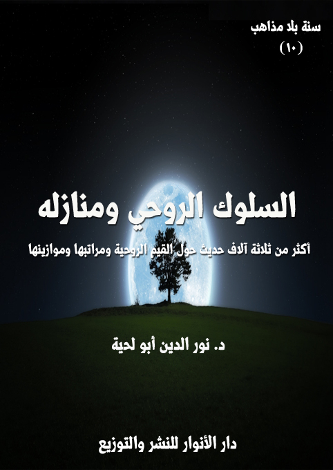

الكتاب: السلوك الروحي ومنازله
الوصف: أكثر من ثلاثة آلاف حديث حول القيم الروحية ومراتبها وموازينها
السلسلة: سنة بلا مذاهب
المؤلف: د. نور الدين أبو لحية
الناشر: دار الأنوار للنشر والتوزيع
الطبعة: الأولى، 1441 هـ
عدد الصفحات: 594
الكتاب موافق للمطبوع
ISBN: 978-620-3-85889-1
لمطالعة الكتاب من تطبيق مؤلفاتي المجاني وهو أحسن وأيسر: هنا

يجمع هذا الكتاب أكثر من 3000 حديث من المصادر السنية والشيعية حول [السلوك الروحي ومنازله]، ونقصد به ما ورد من الأحاديث في العلاقة مع الله، وتهذيب النفس لتصبح أهلا لتلك العلاقة.
وبهذا الكتاب يبدأ القسم الثاني من هذه السلسلة، ذلك أن القسم الأول منها [الأجزاء التسعة الأولى] كان مرتبطا بالحقائق والموازين والمفاهيم وغيرها مما لا علاقة مباشرة له بالعمل، أما هذا القسم [الأجزاء الإحدى عشر]؛ فهو مرتبط بالقيم والأعمال المتعلقة بها.
وبما أن أشرف الأعمال السلوك إلى الله تعالى؛ فقد بدأنا هذه القسم بالأحاديث المرتبطة به، ذلك أن من حسنت علاقته مع الله، تطهرت نفسه، وزكت، وأصبحت أهلا لكل المكارم.
وهذه عناوين المنازل التي احتواها الكتاب:
1. الإخلاص والنية 2. التوبة والإنابة 3. الورع والتقوى 4. المجاهدة والمرابطة 5. العبودية والعبادة 6. الخوف والخشية 7. الرجاء وحسن الظن 8. الصبر والرضا 9. الحمد والشكر 10. المعرفة واليقين 11. التسليم والتوكل 12. الزهد والقناعة 13. الحبّ والمودة 14. الولاية والولاء.
السلوك الروحي ومنازله (11)
يجمع هذا الكتاب أكثر من 3000 حديث من المصادر السنية والشيعية حول [السلوك الروحي ومنازله]، ونقصد به ما ورد من الأحاديث في العلاقة مع الله، وتهذيب النفس لتصبح أهلا لتلك العلاقة.
وبهذا الكتاب يبدأ القسم الثاني من هذه السلسلة، ذلك أن القسم الأول منها [الأجزاء التسعة الأولى] كان مرتبطا بالحقائق والموازين والمفاهيم وغيرها مما لا علاقة مباشرة له بالعمل، أما هذا القسم [الأجزاء الإحدى عشر]؛ فهو مرتبط بالقيم والأعمال المتعلقة بها.
وبما أن أشرف الأعمال السلوك إلى الله تعالى؛ فقد بدأنا هذه القسم بالأحاديث المرتبطة به، ذلك أن من حسنت علاقته مع الله، تطهرت نفسه، وزكت، وأصبحت أهلا لكل المكارم.
وبما أنا شرحنا منازل السلوك بتفصيل في سلسلة [التزكية والترقية]؛ فقد اكتفينا هنا بإيراد ما ورد من الأحاديث عن رسول الله صلى الله عليه وآله وسلم، وعن أئمة الهدى، وفي المصادر السنية والشيعية، مع مقدمات مختصرة لما ورد من الآيات حول كل منزلة من المنازل، ولذلك؛ فإن على من يريد التفاصيل المرتبطة بكل منزلة الرجوع لتلك السلسلة.
وقد رأينا من خلال استقرائنا لما ورد في الأحاديث من منازل السلوك أنه يمكن جمعها واختصارها ـ مع كثرتها ـ في 14 منزلا، هي:
1. الإخلاص والنية
2. التوبة والإنابة
السلوك الروحي ومنازله (12)
3. الورع والتقوى
4. المجاهدة والمرابطة
5. العبودية والعبادة
6. الخوف والخشية
7. الرجاء وحسن الظن
8. الصبر والرضا
9. الحمد والشكر
10. المعرفة واليقين
11. التسليم والتوكل
12. الزهد والقناعة
13. الحبّ والمودة
14. الولاية والولاء
وهذا لا يعني انحصارها في هذه الأقسام، ذلك أن كل منزل منها قد يحوي منازل عديدة، كما فصلنا ذلك في سلسلة [التزكية والترقية]
وحرصا على عدم تقطيع الأحاديث؛ فقد اكتفينا بالعناوين العامة لكل منزل، دون العناوين الفرعية، التي قد تضطرنا لتقسيم الحديث، وهو ما قد يسيء فهمه.
ولهذا اكتفينا بتقسم الفصول بحسب من وردت عنهم تلك الروايات؛ ومن خلالها يمكن أخذ صورة عامة، بل مفصلة لكل منزل من المنازل.
وننبه إلى أنا وضعنا العناوين بحسب كثرة الروايات الواردة عن أي إمام؛ ثم جمعنا
السلوك الروحي ومنازله (13)
الروايات القليلة في كل فصل، وفي محل واحد تحت عنوان [ما ورد عن سائر أئمة الهدى]، مع العلم أن الكثير من الروايات وردت بنفس ألفاظها عن أئمة متعددين، ولهذا اكتفينا في الأغلب بالأسبق منهم؛ فإن وردت الرواية عن الإمام الصادق والإمام الباقر، اكتفينا بالإمام الباقر.. وهكذا هناك روايات وردت مرفوعة إلى رسول الله صلى الله عليه وآله وسلم، ومنسوبة في نفس الوقت لأئمة الهدى؛ فاخترنا الرفع، ذلك أنه الأصل.
وقد حاولنا قدر الإمكان تجنب التكرار في الأحاديث إلا ما دعت إليه الضرورة، ذلك أن القارئ قد يحتاج إلى فصل من الفصول دون غيره؛ فلا يستطيع الرجوع والبحث عن الأحاديث المرتبطة بالفصل في سائر الفصول، ولذلك اضطررنا إلى وضع كل ما يرتبط بذلك الفصل من الأحاديث، حتى لو كان هناك بعض التكرار، وهو قليل جدا.
ومثل ذلك فعلنا في التوثيقات المرتبطة بالأحاديث؛ فقد قمنا بوضعها مع كل حديث حتى لو كان المصدر واحدا في أحاديث متقاربة؛ فلم نقم باعتماد الإحالة على المصدر السابق، كما يفعل الكثير، ذلك أن القارئ قد يحتاج إلى الاستدلال بحديث؛ فيأخذه مباشره مع توثيقه من دون الحاجة للبحث عن المصدر السابق، لأن من غايات السلسلة تيسير الاستفادة منها للباحثين وغيرهم.
وننبه ـ ككل مرة ـ إلى أنا قمنا بالتصرف في بعض الأحاديث من جهة تعديل ألفاظها، أو حذف بعض ما لا نراه موافقا للقرآن الكريم، كما شرحنا أدلة ذلك في الجزء الأول من السلسلة.
السلوك الروحي ومنازله (14)
السلوك الروحي ومنازله (15)
وهي أول منازل السالكين، وكل المنازل مرتبطة بها، بل هما شرط من شروطها، حتى منزلة الإسلام نفسه؛ فلا يمكن أن يدخل في دين الله من كان قلبه مليئا بالشوائب التي تحول بينه وبين حقائقه وقيمه.
ولهذا نرى القرآن الكريم يجعل الإخلاص الأساس الذي تقوم عليه كل القيم الدينية، كما قال تعالى في الجمع بين الأمر بالإخلاص وغيره من العبادات: {قُلْ أَمَرَ رَبِّي بِالْقِسْطِ وَأَقِيمُوا وُجُوهَكُمْ عِنْدَ كُلِّ مَسْجِدٍ وَادْعُوهُ مُخْلِصِينَ لَهُ الدِّينَ كَما بَدَأَكُمْ تَعُودُونَ (29)} (الأعراف)
وقال في اعتبار الإخلاص واجبا في كل العبادات، بل اعتبار الدين الصحيح هو الدين الخالص لله: {إِنَّا أَنْزَلْنا إِلَيْكَ الْكِتابَ بِالْحَقِّ فَاعْبُدِ الله مُخْلِصاً لَهُ الدِّينَ (2) أَلا لِلَّهِ الدِّينُ الْخالِصُ وَالَّذِينَ اتَّخَذُوا مِنْ دُونِهِ أولياء ما نَعْبُدُهُمْ إِلَّا لِيُقَرِّبُونا إِلَى الله زُلْفى إِنَّ الله يَحْكُمُ بَيْنَهُمْ فِي ما هُمْ فِيهِ يَخْتَلِفُونَ إِنَّ الله لا يَهْدِي مَنْ هُوَ كاذِبٌ كَفَّارٌ (3)} (الزمر)
وهكذا يقترن الإخلاص بالدين والعبادة في آيات كثيرة، ليدل على أن الدين لا يشمل فقط تلك الشعائر الظاهرية، وإنما يشمل أيضا تلك المعاني الباطنية، التي لا يصح من دونها، قال تعالى: {قُلْ إِنِّي أُمِرْتُ أَنْ أَعْبُدَ الله مُخْلِصاً لَهُ الدِّينَ (11) وَأُمِرْتُ لِأَنْ أَكُونَ أَوَّلَ الْمُسْلِمِينَ (12)} (الزمر)، وقال: {قُلِ الله أَعْبُدُ مُخْلِصاً لَهُ دِينِي (14) فَاعْبُدُوا ما شِئْتُمْ مِنْ دُونِهِ قُلْ إِنَّ الْخاسِرِينَ الَّذِينَ خَسِرُوا أنفسهُمْ وَأَهْلِيهِمْ يَوْمَ القيامة أَلا ذلِكَ هُوَ الْخُسْرانُ الْمُبِينُ (15)} (الزمر)
وهكذا أخبر الله تعالى أن الإخلاص شريعة إلهية في كل الأديان، قال تعالى: {وَما
السلوك الروحي ومنازله (16)
تَفَرَّقَ الَّذِينَ أُوتُوا الْكِتابَ إِلَّا مِنْ بَعْدِ ما جاءَتْهُمُ الْبَيِّنَةُ (4) وَما أُمِرُوا إِلَّا لِيَعْبُدُوا الله مُخْلِصِينَ لَهُ الدِّينَ حُنَفاءَ وَيُقِيمُوا الصَّلاةَ وَيُؤْتُوا الزَّكاةَ وَذلِكَ دِينُ الْقَيِّمَةِ (5)} (البينة)
وأشار إلى أن سبب وقوع المنافقين في النفاق فقدانهم للإخلاص، قال تعالى: {إِنَّ الْمُنافِقِينَ فِي الدَّرْكِ الْأَسْفَلِ مِنَ النَّارِ وَلَنْ تَجِدَ لَهُمْ نَصِيراً (145) إِلَّا الَّذِينَ تابُوا وَأَصْلَحُوا وَاعْتَصَمُوا بِالله وَأَخْلَصُوا دِينَهُمْ لِلَّهِ فَأولئك مَعَ الْمُؤْمِنِينَ وَسَوْفَ يُؤْتِ الله الْمُؤْمِنِينَ أَجْراً عَظِيماً (146)} (النساء)
بل إن الله تعالى يعتبر فقدان الإخلاص شركا، قال تعالى: {فَمَنْ كَانَ يَرْجُو لِقَاءَ رَبِّهِ فَلْيَعْمَلْ عَمَلًا صَالِحًا وَلَا يُشْرِكْ بِعِبَادَةِ رَبِّهِ أَحَدًا (110)} (الكهف)
وبناء على هذا؛ فإن كل الأحاديث التي ترغب في الإخلاص، أو تعتبره ركنا من أركان الدين، أو شرطا من شروط قبول أي عمل، أحاديث مقبولة.. ومثلها تلك الأحاديث التي ترهب مما يضاد الإخلاص، وهو الرياء أو العجب أو غيرها من الشوائب المفسدة للإخلاص، والتي وردت النصوص الكثيرة على اعتبارها شركا.
ذلك أن الإخلاص هو تخلص الأعمال والأحوال والمواقف وكل ما يبرز من النفس من كل شائبة تحول بينها وبين التوجه الصادق إلى ربها، مثلما يتخلص اللبن من كل الشوائب التي مر عليها، كما قال تعالى: {مِنْ بَيْنِ فَرْثٍ وَدَمٍ لَبَنًا خَالِصًا سَائِغًا لِلشَّارِبِينَ (66)} (النحل)، فخلوص اللبن أن لا يكون فيه شوب من الدم والفرث ومن كل ما يمكن أن يمتزج به.. وهكذا الإخلاص فإن فرثه ودمه هو الإشراك، فمن ليس مخلصاً فهو مشرك.
أولا ـ ما ورد في الأحاديث النبوية
من الأحاديث الواردة في هذا الباب في المصادر السنية والشيعية:
السلوك الروحي ومنازله (17)
[الحديث: 1] قال رسول الله صلى الله عليه وآله وسلم: (إذا صلّيتم على الميّت فأخلصوا له الدّعاء) (1)
[الحديث: 2] عن ابن عبّاس: أنّ رجلين اختصما إلى النّبيّ صلى الله عليه وآله وسلم فسأل النّبيّ صلى الله عليه وآله وسلم المدّعي البيّنة فلم يكن له بيّنة، فاستحلف المطلوب، فحلف بالله الّذي لا إله إلّا هو، فقال رسول الله صلى الله عليه وآله وسلم: (إنّك قد فعلت، ولكن غفر لك بإخلاصك قول لا إله إلّا الله) (2).
[الحديث: 3] عن أبي إمامة الباهليّ قال: جاء رجل إلى النّبيّ صلى الله عليه وآله وسلم فقال: أرأيت رجلا غزا يلتمس الأجر والذّكر، ما له؟. فقال رسول الله صلى الله عليه وآله وسلم: (لا شيء له). فأعاد ثلاث مرّات، يقول له رسول الله صلى الله عليه وآله وسلم: (لا شيء له)، ثمّ قال: (إنّ الله لا يقبل من العمل إلّا ما كان له خالصا وابتغي به وجهه) (3)
[الحديث: 4] قال رسول الله صلى الله عليه وآله وسلم: (نضّر الله امرأ سمع مقالتي فبلّغها، فربّ حامل فقه غير فقيه، وربّ حامل فقه إلى من هو أفقه منه.. ثلاث لا يغلّ عليهنّ قلب امرئ مسلم: إخلاص العمل لله، والنّصح لأئمّة المسلمين ولزوم جماعتهم) (4)
[الحديث: 5] قال رسول الله صلى الله عليه وآله وسلم: (لم تؤتوا شيئا بعد كلمة الإخلاص مثل العافية، فاسألوا الله العافية) (5)
[الحديث: 6] قيل يا رسول الله: من أسعد النّاس بشفاعتك يوم القيامة؟ فقال: (أسعد النّاس بشفاعتي يوم القيامة، من قال لا إله إلّا الله خالصا من قلبه ـ أو نفسه ـ) (6)
[الحديث: 7] كان النّبيّ صلى الله عليه وآله وسلم إذا انصرف من الصّلاة، يقول: (لا إله إلّا الله وحده لا شريك له، له الملك وله الحمد، وهو على كلّ شيء قدير، لا إله إلّا الله، مخلصين له الدّين
__________
(1) أبو داود: (3199).
(2) احمد (1/ 253، 288).
(3) النسائي (6/ 25)
(4) ابن ماجة (230)
(5) مسند أبي يعلى (1/ 76، 77)
(6) البخاري (99)
السلوك الروحي ومنازله (18)
ولو كره الكافرون، أهل النّعمة والفضل والثّناء الحسن، لا إله إلّا الله مخلصين له الدّين ولو كره الكافرون) (1)
[الحديث: 8] قال رسول الله صلى الله عليه وآله وسلم: (ما قال عبد لا إله إلّا الله قطّ مخلصا، إلّا فتحت له أبواب السّماء حتّى تفضي إلى العرش ما اجتنب الكبائر) (2)
[الحديث: 9] قال رسول الله صلى الله عليه وآله وسلم: (قال الله تبارك وتعالى: أنا أغنى الشّركاء عن الشّرك، من عمل عملا أشرك فيه معي غيري تركته وشركه) (3).
[الحديث: 10] قال رسول الله صلى الله عليه وآله وسلم: (إنّ الله لا ينظر إلى صوركم وأموالكم، ولكن ينظر إلى قلوبكم وأعمالكم) (4)
[الحديث: 11] قال رسول الله صلى الله عليه وآله وسلم: (انطلق ثلاثة نفر ممّن كان قبلكم حتّى أووا المبيت إلى غار فدخلوه، فانحدرت صخرة من الجبل فسدّت عليهم الغار. فقالوا: إنّه لا ينجيكم من هذه الصّخرة إلّا أن تدعوا لله بصالح أعمالكم، فقال رجل منهم: اللهم كان لي أبوان شيخان كبيران وكنت لا أغبق قبلهما أهلا ولا مالا. فنأى بي في طلب شيء يوما فلم أرح عليهما حتّى ناما فحلبت لهما غبوقهما فوجدتهما نائمين، فكرهت أن أغبق قبلهما أهلا أو مالا، فلبثت والقدح على يديّ ـ أنتظر استيقاظهما حتّى برق الفجر، فاستيقظا فشربا غبوقهما. اللهم؛ إن كنت فعلت ذلك ابتغاء وجهك ففرّج عنّا ما نحن فيه من هذه الصّخرة. فانفرجت شيئا لا يستطيعون الخروج. قال النّبيّ صلى الله عليه وآله وسلم: قال الآخر: اللهم كانت لي بنت عمّ كانت أحبّ النّاس إليّ، فأردتها عن نفسها فامتنعت منّي، حتّى ألّمت بها سنة من السنين، فجاءتني فأعطيتها عشرين ومائة دينار، على أن تخلّي بيني وبين نفسها ففعلت، حتّى إذا
__________
(1) أبو داود (1506)
(2) الترمذي (3590)
(3) مسلم (2985)
(4) مسلم (4/ 2564)
السلوك الروحي ومنازله (19)
قدرت عليها، قالت: لا أحلّ لك أن تفضّ الخاتم إلّا بحقّه، فانصرفت عنها، وهي أحبّ النّاس إليّ، وتركت الذّهب الّذي أعطيتها، اللهم إن كنت فعلت ذلك ابتغاء وجهك فافرج عنّا ما نحن فيه، فانفرجت الصّخرة غير أنّهم لا يستطيعون الخروج منها، وقال الثّالث: اللهمّ إنّي استأجرت أجراء فأعطيتهم أجرهم غير رجل واحد، ترك الّذي له وذهب، فثمّرت أجره حتّى كثرت منه الأموال، فجاءني بعد حين، فقال: يا عبد الله؛ أدّ إليّ أجري، فقلت له: كلّ ما ترى من أجرك من الإبل والبقر والغنم والرّقيق، فقال: يا عبد الله لا تستهزئ بي، فقلت: إنّي لا أستهزى ء بك. فأخذه كلّه فاستاقه فلم يترك منه شيئا. اللهمّ؛ فإن كنت فعلت ذلك ابتغاء وجهك فافرج عنّا ما نحن فيه، فانفرجت الصّخرة فخرجوا يمشون) (1).
[الحديث: 12] عن سعد بن أبي وقّاص قال: كان رسول الله صلى الله عليه وآله وسلم يعودني عام حجّة الوداع من وجع اشتدّ بي، فقلت: إنّي قد بلغ بي من الوجع وأنا ذو مال، ولا يرثني إلّا ابنة، أفأتصدّق بثلثي مالي؟ قال: (لا). فقلت: بالشّطر؟ فقال: (لا). ثمّ قال: (الثّلث، والثّلث كبير ـ أو كثير ـ إنّك إن تذر ورثتك أغنياء خير من أن تذرهم عالة يتكفّفون النّاس، وإنّك لن تنفق نفقة تبتغي بها وجه الله إلّا أجرت بها حتّى ما تجعل في في امرأتك) (2)
[الحديث: 13] قال رسول الله صلى الله عليه وآله وسلم: (إنّما الأعمال بالنّيّة، وإنّما لكلّ امرئ ما نوى، فمن كانت هجرته إلى الله ورسوله فهجرته إلى الله ورسوله، ومن كانت هجرته لدنيا يصيبها، أو امرأة يتزوّجها، فهجرته إلى ما هاجر إليه) (3).
[الحديث: 14] قال رسول الله صلى الله عليه وآله وسلم: (تضمّن الله لمن خرج في سبيله. لا يخرجه إلّا
__________
(1) البخاري (2272)، ومسلم (2743)
(2) البخاري (1295)، مسلم (1628)
(3) البخاري (1)، ومسلم (1907)
السلوك الروحي ومنازله (20)
جهادا في سبيلي، وإيمانا بي، وتصديقا برسلي ـ فهو عليّ ضامن أن أدخله الجنّة، أو أرجعه إلى مسكنه الّذي خرج منه نائلا ما نال من أجر أو غنيمة. والّذي نفس محمّد بيده ما من كلم يكلم في سبيل الله إلّا جاء يوم القيامة كهيئته حين كلم، لونه لون دم وريحه ريح مسك، والّذي نفس محمّد بيده؛ لولا أن يشقّ على المسلمين ما قعدت خلاف سريّة تغزو في سبيل الله أبدا، ولكن لا أجد سعة فأحملهم ولا يجدون سعة، ويشقّ عليهم أن يتخلّفوا عنّي، والّذي نفس محمّد بيده؛ لوددت أنّي أغزو في سبيل الله فأقتل، ثمّ أغزو فأقتل، ثمّ أغزو فأقتل) (1)
[الحديث: 15] قال رسول الله صلى الله عليه وآله وسلم: (تكفّل الله لمن جاهد في سبيله لا يخرجه إلّا الجهاد في سبيله وتصديق كلماته بأن يدخله الجنّة أو يرجعه إلى مسكنه الّذي خرج منه مع ما نال من أجر أو غنيمة) (2)
[الحديث: 16] قال رسول الله صلى الله عليه وآله وسلم: (صلاة الرّجل في جماعة تزيد على صلاته في بيته وصلاته في سوقه بضعا وعشرين درجة، وذلك أنّ أحدهم إذا توضّأ فأحسن الوضوء ثمّ أتى المسجد لا ينهزه إلّا الصّلاة لا يريد إلّا الصّلاة، فلم يخط خطوة إلّا رفع له بها درجة وحطّ عنه بها خطيئة حتّى يدخل المسجد، فإذا دخل المسجد كان في الصّلاة ما كانت الصّلاة هي تحبسه، والملائكة يصلّون على أحدكم ما دام في مجلسه الّذي صلّى فيه، يقولون: اللهم ارحمه، اللهم اغفر له، اللهم تب عليه، ما لم يؤذ فيه، ما لم يحدث فيه) (3).
[الحديث: 17] قال رسول الله صلى الله عليه وآله وسلم: (لن يوافي عبد يوم القيامة يقول لا إله إلّا الله يبتغي بها وجه الله إلّا حرّم الله عليه النّار) (4)
__________
(1) مسلم (1876)
(2) البخاري (3123)، مسلم (1876)
(3) البخاري (647)، ومسلم (649)
(4) البخاري (6423)
السلوك الروحي ومنازله (21)
[الحديث: 18] قال رسول الله صلى الله عليه وآله وسلم فيما يرويه عن ربّه ـ عزّ وجلّ ـ: (إنّ الله كتب الحسنات والسّيّئات ثمّ بيّن ذلك، فمن همّ بحسنة فلم يعملها، كتبها الله له عنده حسنة كاملة، فإن هو همّ بها فعملها كتبها الله له عنده عشر حسنات إلى سبعمائة ضعف إلى أضعاف كثيرة، ومن همّ بسيّئة فلم يعملها كتبها الله له عنده حسنة كاملة. فإن هو همّ بها فعملها كتبها الله له سيّئة واحدة) (1)
[الحديث: 19] عن جابر بن عبد الله قال: كنّا مع النّبيّ صلى الله عليه وآله وسلم في غزاة فقال: (إنّ بالمدينة لرجالا ما سرتم مسيرا ولا قطعتم واديا إلّا كانوا معكم، حبسهم المرض)، وفي رواية: (إلّا شركوكم في الأجر) (2)
[الحديث: 20] قال رسول الله صلى الله عليه وآله وسلم: (لا هجرة بعد الفتح ولكن جهاد ونيّة، وإذا استنفرتم فانفروا) (3)
[الحديث: 21] قال رسول الله صلى الله عليه وآله وسلم: (من اتّبع جنازة مسلم إيمانا واحتسابا، وكان معه حتّى يصلّى عليها ويفرغ من دفنها، فإنّه يرجع من الأجر بقيراطين كلّ قيراط مثل أحد، ومن صلّى عليها ثمّ رجع قبل أن تدفن فإنّه يرجع بقيراط) (4)
[الحديث: 22] قال رسول الله صلى الله عليه وآله وسلم: (من طلب الشّهادة صادقا أعطيها ولو لم تصبه) (5)
[الحديث: 23] قال رسول الله صلى الله عليه وآله وسلم: (من قاتل في سبيل الله فواق ناقة فقد وجبت له الجنّة، ومن سأل الله القتل من نفسه صادقا ثم مات أو قتل فإنّ له أجر شهيد، ومن جرح جرحا في سبيل الله أو نكب نكبة فإنّها تجيء يوم القيامة كأغزر ما كانت، لونها لون الزّعفران
__________
(1) البخاري (6491)
(2) البخاري (2839)، مسلم (1911)
(3) البخاري (2783)، مسلم (1353)
(4) البخاري (47)، مسلم (945)
(5) مسلم (1908)، وأبو داود (1520)
السلوك الروحي ومنازله (22)
وريحها ريح المسك، ومن خرج به خراج في سبيل الله فإنّ عليه طابع الشّهداء) (1)
[الحديث: 24] قال رسول الله صلى الله عليه وآله وسلم: (من قام ليلة القدر إيمانا واحتسابا غفر له ما تقدّم من ذنبه، ومن صام رمضان إيمانا واحتسابا غفر له ما تقدّم من ذنبه) (2).
[الحديث: 25] سئل رسول الله صلى الله عليه وآله وسلم عن هذه الآية: {وَالَّذِينَ يُؤْتُونَ مَا آتَوْا وَقُلُوبُهُمْ وَجِلَةٌ أَنَّهُمْ إِلَى رَبِّهِمْ رَاجِعُونَ} [المؤمنون: 60] أهم هم الّذين يشربون الخمر ويسرقون؟ قال: (لا.. ولكنّهم الّذين يصومون ويصلّون ويتصدّقون وهم يخافون أن لا يقبل منهم، أولئك الّذين يسارعون في الخيرات) (3)
[الحديث: 26] قيل: يا رسول الله قل لي في الإسلام قولا لا أسأل عنه أحدا بعدك؟ قال: (قل: آمنت بالله فاستقم) (4)
[الحديث: 27] قال رسول الله صلى الله عليه وآله وسلم: (يقول الله تعالى: ما لعبدي المؤمن عندي جزاء إذا قبضت صفيّه من أهل الدّنيا ثمّ احتسبه إلّا الجنّة) (5)
[الحديث: 28] قيل: يا رسول الله هل أتى عليك يوم كان أشدّ من يوم أحد؟. قال: (لقد لقيت من قومك ما لقيت، وكان أشدّ ما لقيت منهم يوم العقبة، إذ عرضت نفسي على ابن عبد ياليل بن عبد كلال، فلم يجبني إلى ما أردت، فانطلقت وأنا مهموم على وجهي، فلم أستفق إلّا وأنا بقرن الثّعالب، فرفعت رأسي فإذا أنا بسحابة قد أظلّتني فنظرت فإذا فيها جبريل، فناداني، فقال: إنّ الله قد سمع قول قومك لك وما ردّوا عليك، وقد بعث الله إليك ملك الجبال لتأمره بما شئت فيهم. فناداني ملك الجبال فسلّم عليّ ثمّ قال: يا محمّد، فقال: ذلك فيما شئت، إن شئت أن أطبق عليهم الأخشبين، فقلت: (بل أرجو أن يخرج الله
__________
(1) أبو داود (2541).
(2) البخاري (1901)، مسلم (759)
(3) الترمذي (3175)
(4) مسلم (38)
(5) البخاري (6424)
السلوك الروحي ومنازله (23)
من أصلابهم من يعبد الله وحده لا يشرك به شيئا) (1)
[الحديث: 29] عن عبد الله بن عبّاس قال: كان النّبيّ صلى الله عليه وآله وسلم إذا قام من اللّيل يتهجّد قال: (اللهم لك الحمد، أنت نور السّموات والأرض ومن فيهنّ، ولك الحمد أنت قيّم السّموات والأرض ومن فيهنّ، ولك الحمد أنت الحقّ ووعدك حقّ، وقولك حقّ، ولقاؤك حقّ والجنّة حقّ، والنّار حقّ، والسّاعة حقّ، والنّبيّون حقّ، ومحمّد حقّ، اللهمّ لك أسلمت وعليك توكّلت، وبك آمنت، وإليك أنبت، وبك خاصمت، وإليك حاكمت، فاغفر لي ما قدّمت وما أخّرت، وما أسررت وما أعلنت، أنت المقدّم وأنت المؤخّر لا إله إلّا أنت) (2)
[الحديث: 30] قال رسول الله صلى الله عليه وآله وسلم: (من سمّع سمّع الله به، ومن يرائي يرائي الله به) (3)
[الحديث: 31] روي أنّ أعرابيّا أتى النّبيّ صلى الله عليه وآله وسلم فقال: يا رسول الله، الرّجل يقاتل للمغنم، والرّجل يقاتل ليذكر، والرّجل يقاتل ليرى مكانه، فمن في سبيل الله؟ فقال رسول الله صلى الله عليه وآله وسلم: (من قاتل لتكون كلمة الله أعلى فهو في سبيل الله) (4)
[الحديث: 32] عن أبي مسعود قال: (أمرنا بالصّدقة، فتصدّق أبو عقيل بنصف صاع، وجاء إنسان بشيء أكثر منه، فقال المنافقون: إنّ الله لغنيّ عن صدقة هذا، وما فعل هذا الآخر إلّا رياء فنزل: {لَّذِينَ يَلْمِزُونَ الْمُطَّوِّعِينَ مِنَ الْمُؤْمِنِينَ فِي الصَّدَقَاتِ وَالَّذِينَ لَا يَجِدُونَ إِلَّا جُهْدَهُمْ فَيَسْخَرُونَ مِنْهُمْ سَخِرَ الله مِنْهُمْ وَلَهُمْ عَذَابٌ أَلِيمٌ} [التوبة: 79]) (5)
[الحديث: 33] قال رسول الله صلى الله عليه وآله وسلم: (الإيمان يمان، والكفر قبل المشرق، والسّكينة في أهل الغنم، والفخر والرّياء في الفدّادين أهل الخيل والوبر) (6)
__________
(1) البخاري (3231)، مسلم (1795)
(2) البخاري (6317)، ومسلم (769)
(3) البخاري (6499)، ومسلم (2986)
(4) البخاري (2810)، ومسلم (1904).
(5) البخاري (1415)، ومسلم (1018)
(6) مسلم (86)
السلوك الروحي ومنازله (24)
[الحديث: 34] قال رسول الله صلى الله عليه وآله وسلم: (الخيل ثلاثة هي لرجل وزر، وهي لرجل ستر، وهي لرجل أجر، فأمّا الّتي هي له وزر؛ فرجل ربطها رياء وفخرا ونواء على أهل الإسلام فهي له وزر، وأمّا الّتي هي له ستر، فرجل ربطها في سبيل الله، ثمّ لم ينس حقّ الله في ظهورها ولا رقابها، فهي له ستر. وأمّا الّتي هي له أجر، فرجل ربطها في سبيل الله لأهل الإسلام، في مرج وروضة فما أكلت من ذلك المرج والرّوضة من شي ء إلّا كتب له عدد ما أكلت، حسنات وكتب له عدد أرواثها وأبوالها حسنات ولا تقطع طولها فاستنّت شرفا أو شرفين إلّا كتب الله له عدد آثارها وأرواثها حسنات. ولا مرّ بها صاحبها على نهر فشربت منه ولا يريد أن يسقيها إلّا كتب الله له عدد ما شربت حسنات) (1)
[الحديث: 35] قال رسول الله صلى الله عليه وآله وسلم: (الوليمة أوّل يوم حقّ، والثّاني معروف، واليوم الثّالث سمعة ورياء) (2)
[الحديث: 36] قال رسول الله صلى الله عليه وآله وسلم: (من أكل برجل مسلم أكلة فإنّ الله يطعمه مثلها من جهنّم، ومن كسي ثوبا برجل مسلم فإنّ الله يكسوه مثله من جهنّم، ومن قام برجل مقام سمعة ورياء فإنّ الله يقوم به مقام سمعة ورياء يوم القيامة) (3)
[الحديث: 37] قيل: يا رسول الله أخبرني عن الجهاد والغزو، فقال: (إن قاتلت صابرا محتسبا بعثك الله صابرا محتسبا، وإن قاتلت مرائيا مكابرا بعثك الله مرائيا مكابرا، على أيّ حال قاتلت أو قتلت بعثك الله على تيك الحال) (4)
[الحديث: 38] قال رسول الله صلى الله عليه وآله وسلم: (تعوّذوا بالله من جبّ الحزن)، قالوا: يا رسول الله، وما جبّ الحزن؟ قال: (واد في جهنّم يتعوّذ منه جهنّم كلّ يوم أربعمائة مرّة) قالوا: يا
__________
(1) البخاري (1402 ـ 1403)، مسلم (987)
(2) أبو داود (3745)
(3) أبو داود (4881)
(4) أبو داود (2519)
السلوك الروحي ومنازله (25)
رسول الله، ومن يدخله؟ قال: (أعدّ للقرّاء المرائين بأعمالهم، وإنّ من أبغض القرّاء إلى الله تعالى الّذين يزورون الأمراء) (1)
[الحديث: 39] قال رسول الله صلى الله عليه وآله وسلم: (إنّ أخوف ما أخاف عليكم الشّرك الأصغر)، قالوا: يا رسول الله، وما الشّرك الأصغر؟ قال: (الرّياء، إنّ الله تبارك وتعالى يقول يوم تجازى العباد بأعمالهم: اذهبوا إلى الّذين كنتم تراءون بأعمالكم في الدّنيا فانظروا، هل تجدون عندهم جزاء؟) (2)
[الحديث: 40] قال رسول الله صلى الله عليه وآله وسلم: (لا يقصّ على النّاس إلّا أمير، أو مأمور، أو مراء) (3)
[الحديث: 41] قال رسول الله صلى الله عليه وآله وسلم: (الغزو غزوان، فأمّا من ابتغى وجه الله وأطاع الإمام وأنفق الكريمة، وياسر الشّريك، واجتنب الفساد. فإنّ نومه ونبهه أجر كلّه، وأمّا من غزا فخرا ورياء وسمعة وعصى الإمام وأفسد في الأرض فإنّه لم يرجع بالكفاف) (4)
[الحديث: 42] عن بريدة الأسلميّ قال: خرجت ذات يوم لحاجة، فإذا أنا بالنّبيّ صلى الله عليه وآله وسلم يمشي بين يديّ، فأخذ بيدي فانطلقنا نمشي جميعا، فإذا نحن بين أيدينا برجل يصلّي يكثر الرّكوع والسّجود، فقال النّبيّ صلى الله عليه وآله وسلم: (أ تراه يرائي؟) فقلت: الله ورسوله أعلم، فترك يده من يدي، ثمّ جمع بين يديه، فجعل يصوّبهما ويرفعهما ويقول: (عليكم هديا قاصدا، عليكم هديا قاصدا، عليكم هديا قاصدا، فإنّه من يشادّ هذا الدّين يغلبه) (5)
[الحديث: 43] قال رسول الله صلى الله عليه وآله وسلم: (أتخوّف على أمتي الشّرك، والشّهوة الخفيّة)، قيل: يا رسول الله، أتشرك أمّتك من بعدك؟ قال: (نعم، أما إنّهم لا يعبدون شمسا ولا
__________
(1) ابن ماجه (256)، والترمذي (2383)
(2) أحمد، 5/ 429.
(3) أحمد، (6661).
(4) أبو داود (2515)
(5) أحمد، 5/ 350.
السلوك الروحي ومنازله (26)
قمرا، ولا حجرا ولا وثنا، ولكن يراءون بأعمالهم) (1)
[الحديث: 44] قال رسول الله صلى الله عليه وآله وسلم: (من صلّى يرائي فقد أشرك ومن صام يرائي فقد أشرك، ومن تصدّق يرائي فقد أشرك) (2)
[الحديث: 45] قال رسول الله صلى الله عليه وآله وسلم: (إنّ أوّل النّاس يقضى يوم القيامة عليه، رجلّ استشهد، فأتي به فعرّفه نعمه فعرفها، قال: فما عملت فيها؟ قال: قاتلت فيك حتّى استشهدت، قال: كذبت، ولكنّك قاتلت لأن يقال جري ء، فقد قيل، ثمّ أمر به فسحب على وجهه حتّى ألقي في النّار، ورجل تعلّم العلم وعلّمه، وقرأ القرآن، فأتي به، فعرّفه نعمه فعرفها، قال: فما عملت فيها؟ قال: تعلّمت العلم وعلّمته وقرأت فيك القرآن، قال: كذبت، ولكنّك تعلّمت العلم ليقال: عالم، وقرأت القرآن ليقال: هو قاري ء، فقد قيل: ثمّ أمر به فسحب على وجهه حتّى ألقي في النّار، ورجل وسّع الله عليه وأعطاه من أصناف المال كلّه، فأتي به فعرّفه نعمه فعرفها، قال: فما عملت فيها؟ قال: ما تركت من سبيل تحبّ أن ينفق فيها إلّا أنفقت فيها لك، قال: كذبت، ولكنّك فعلت ليقال: هو جواد، فقد قيل، ثمّ أمر به فسحب على وجهه، ثمّ ألقي في النّار) (3)
[الحديث: 46] قال رسول الله صلى الله عليه وآله وسلم: (قال الله تعالى: أنا أغنى الشّركاء عن الشّرك، من عمل عملا أشرك فيه معي غيري تركته وشركه) (4)
[الحديث: 47] قال رسول الله صلى الله عليه وآله وسلم: (لا تعلّموا العلم لتباهوا به العلماء، ولا لتماروا به السّفهاء، ولا تخيّروا به المجالس؛ فمن فعل ذلك فالنّار النّار) (5)
__________
(1) أحمد، 4/ 124.
(2) أحمد، 4/ 126.
(3) مسلم (1905)
(4) مسلم (2985)
(5) ابن ماجة (254)
السلوك الروحي ومنازله (27)
[الحديث: 48] قال رسول الله صلى الله عليه وآله وسلم: (يؤتى بالإخلاص وأهله فيدخلون الجنّة، ويؤتى بالشرك وأهله فيدخلون النار) (1)
[الحديث: 49] قال رسول الله صلى الله عليه وآله وسلم: (أوصاني ربّي بسبع: أوصاني بالإخلاص في السرّ والعلانية، وأن أعفو عمّن ظلمني، وأعطي من حرمني، وأصل من قطعني، وأن يكون صمتي فكرا، ونظري عبرا) (2)
[الحديث: 50] قال رسول الله صلى الله عليه وآله وسلم: (يا ابن مسعود إذا عملت عملا فاعمله للّه خالصا؛ لأنّه لا يقبل من عباده الأعمال إلّا ما كان له خالصا، فإنه يقول: وما لِأَحَدٍ عِنْدَهُ مِنْ نِعْمَةٍ تُجْزى إِلَّا ابْتِغاء وَجْهِ رَبِّهِ الْأَعْلى ولَسَوْفَ يَرْضى) (3)
[الحديث: 51] خطب رسول الله صلى الله عليه وآله وسلم الناس بمنى في حجّة الوداع في مسجد الخيف، فحمد الله وأثنى عليه، ثمّ قال: نضّر الله عبدا سمع مقالتي فوعاها، ثمّ بلّغها إلى من لم يسمعها، فربّ حامل فقه غير فقيه، وربّ حامل فقه إلى من هو أفقه منه، ثلاث لا يغلّ عليهنّ قلب امرئ مسلم: إخلاص العمل للّه، والنصيحة لائمة المسلمين، واللزوم لجماعتهم، فانّ دعوتهم محيطة من ورائهم.. المسلمون إخوة، تتكافأ دماؤهم، يسعى بذمّتهم أدناهم، وهم يد على من سواهم) (4)
[الحديث: 52] قال رسول الله صلى الله عليه وآله وسلم: (انّ لكلّ حقّ حقيقة، وما بلغ عبد حقيقة الإخلاص حتّى لا يحبّ أن يحمد على شي ء من عمل) (5)
[الحديث: 53] قال رسول الله صلى الله عليه وآله وسلم: (ما أخلص عبد للّه عزّ وجلّ أربعين صباحا إلّا جرت ينابيع الحكمة من قلبه على لسانه) (6)
__________
(1) الأشعثيّات/245.
(2) كنز الكراجكيّ 2/ 11.
(3) مكارم الأخلاق/453.
(4) الخصال 1/ 149.
(5) مستدرك الوسائل 1/ 10.
(6) عيون الأخبار 2/ 69.
السلوك الروحي ومنازله (28)
[الحديث: 54] قال رسول الله صلى الله عليه وآله وسلم: (من أخلص للّه أربعين يوما فجّر الله ينابيع الحكمة من قلبه على لسانه) (1)
[الحديث: 55] عن حذيفة بن اليمان، قال: سألت رسول الله صلى الله عليه وآله وسلم عن الإخلاص، فقال: (سألته عن جبريل، فقال: سألته عن الله تعالى فقال: الإخلاص سرّ من سرّي اودعه في قلب من أحببته) (2)
[الحديث: 56] قال رسول الله صلى الله عليه وآله وسلم يوصي بعض أصحابه: (ليكن لك في كلّ شيء نيّة صالحة حتّى في النوم والأكل) (3)
[الحديث: 57] قال رسول الله صلى الله عليه وآله وسلم: (نيّة المؤمن خير من عمله، ونيّة الكافر شرّ من عمله، وكلّ عامل يعمل على نيّته) (4)
[الحديث: 58] قال رسول الله صلى الله عليه وآله وسلم: (إن الله تعالى يقول لملائكته: إذا همّ عبدي بالحسنة فاكتبوها له حسنة، وإن هو عملها فاكتبوها له عشر أمثالها، وإذا همّ عبدي بالسيّئة فعملها فاكتبوها له واحدة، وإن هو تركها فاكتبوها له حسنة) (5)
[الحديث: 59] قال رسول الله صلى الله عليه وآله وسلم يوصي بعض أصحابه: (همّ بالحسنة وإن لم تعملها، لكي لا تكتب من الغافلين) (6)
[الحديث: 60] قال رسول الله صلى الله عليه وآله وسلم: (نيّة المؤمن أبلغ من عمله، وكذلك نيّة الفاجر) (7)
[الحديث: 61] قال رسول الله صلى الله عليه وآله وسلم: (من تمنّى شيئا وهو لله رضا لم يخرج من الدنيا
__________
(1) عدّة الداعي/232.
(2) مستدرك الوسائل 1/ 10.
(3) مكارم الأخلاق/464.
(4) أصول الكافي 2/ 84.
(5) الجواهر السنيّة/168.
(6) أمالي الطوسي 2/ 150.
(7) أمالي الطوسي 2/ 69.
السلوك الروحي ومنازله (29)
حتّى يعطاه) (1)
[الحديث: 62] قال رسول الله صلى الله عليه وآله وسلم: (من أسرّ سريرة ألبسه الله تعالى رداها إن خيرا فخير وإن شرّا فشرّ) (2)
[الحديث: 63] قال رسول الله صلى الله عليه وآله وسلم: (من أسرّ ما يرضي الله عزّ وجلّ اظهر الله له ما يسرّه) (3)
[الحديث: 64] قال رسول الله صلى الله عليه وآله وسلم: (نيّة المؤمن أبلغ من عمله) (4)
[الحديث: 65] قال رسول الله صلى الله عليه وآله وسلم: (نيّة المؤمن خير من عمله، ونيّة الكافر شرّ من عمله، وكلّ يعمل على نيّته) (5)
[الحديث: 66] قال رسول الله صلى الله عليه وآله وسلم: (إنما الأعمال بالنيّات ولكلّ امرئ ما نوى) (6)
[الحديث: 67] قال رسول الله: (نيّة المؤمن خير من عمله ونيّة الكافر شرّ من عمله، وكلّ يعمل على نيّته) (7)
[الحديث: 68] قال رسول الله صلى الله عليه وآله وسلم: (لا حسب إلّا التواضع ولا كرم إلّا التقّوى ولا عمل إلّا بنيّة ولا عبادة إلّا بيقين) (8)
[الحديث: 69] قال رسول الله صلى الله عليه وآله وسلم: (لا يقبل قول إلّا بالعمل، ولا يقبل قول وعمل إلّا بنيّة، ولا يقبل قول وعمل ونيّة إلّا بإصابة السنة) (9)
[الحديث: 70] قال رسول الله صلى الله عليه وآله وسلم: (إنّما الأعمال بالنيّات، ولكل امرئ ما نوى، فمن غزا إبتغاء ما عند الله عزّ وجلّ فقد وقع أجره على الله، ومن غزا يريد عرض الدنيا أو نوى
__________
(1) الخصال/4.
(2) الأشعثيّات/158.
(3) أمالي الطوسي 1/ 185.
(4) مستدرك الوسائل 1/ 9، لبّ اللّباب.
(5) أصول الكافي 2/ 84.
(6) التهذيب 4/ 186.
(7) الأشعثيّات/169.
(8) الأشعثيّات/150.
(9) أمالي الطوسي 1/ 395.
السلوك الروحي ومنازله (30)
عقالا لم يكن له إلّا ما نوى) (1)
[الحديث: 71] قال رسول الله صلى الله عليه وآله وسلم: (لا قول إلّا بالعمل ولا قول ولا عمل إلّا بنيّة ولا قول ولا عمل ونيّة إلّا باصابة السنة) (2)
[الحديث: 72] قال رسول الله صلى الله عليه وآله وسلم: (إنّما يبعث الناس على نيّاتهم) (3)
[الحديث: 73] قال رسول الله صلى الله عليه وآله وسلم في خطبة له: (أيّها الناس إنّ العبد لا يكتب من المسلمين حتّى يسلم الناس من يده ولسانه، ولا ينال درجة المؤمنين حتّى يأمن أخوه بوائقه وجاره بوادره، ولا يعدّ من المتّقين حتّى يدع ما لا بأس به حذارا عمّا به الباس. إنّه من خاف البيات أدلج ومن أدلج المسير وصل، وإنّما تعرفون عواقب أعمالكم لو قد طويت صحائف آجالكم، أيّها الناس إنّ نيّة المؤمن خير من عمله، ونيّة الفاسق شرّ من عمله) (4)
[الحديث: 74] قال رسول الله صلى الله عليه وآله وسلم: (إنما الأعمال بالنيّات، وإنّما لامرئ ما نوى، فمن كانت هجرته إلى الله ورسوله فهجرته إلى الله ورسوله، ومن كانت هجرته لامرأة يتزوّجها أو لدنيا يصيبها فهجرته إلى ما هاجر إليه) (5)
[الحديث: 75] قال رسول الله صلى الله عليه وآله وسلم: (من أسرّ سريرة ردّاه الله رداءها إن خيرا فخيرا، وإن شرّا فشرّا) (6)
[الحديث: 76] قال رسول الله صلى الله عليه وآله وسلم: (من أسرّ سريرة ألبسه الله رداها إن خيرا فخير وإن شرّا فشرّ) (7)
[الحديث: 77] قال رسول الله صلى الله عليه وآله وسلم: (من أسرّ ما يسخط الله تعالى أظهر الله ما
__________
(1) أمالي الطوسي 2/ 231.
(2) أمالي الطوسي 1/ 346.
(3) منية المريد/49.
(4) أعلام الدين/334.
(5) دعائم الإسلام 1/ 4.
(6) أصول الكافي 2/ 294.
(7) الأشعثيّات/158.
السلوك الروحي ومنازله (31)
يخزيه) (1)
[الحديث: 78] قال رسول الله صلى الله عليه وآله وسلم: (المخلص الّذي لا يسأل الناس شيئا حتّى يجد، وإذا وجد رضي، وإذا بقي عنده شي ء أعطاه في الله، فإن لم يسأل المخلوق فقد أقرّ للّه بالعبوديّة، وإذا وجد فرضي فهو عن الله راض، والله تبارك وتعالى عنه راض، وإذا أعطى الله عزّ وجلّ فهو على حدّ الثقة بربّه) (2)
[الحديث: 79] قال رسول الله صلى الله عليه وآله وسلم: (من آثر محامد الله على محامد الناس كفاه الله مؤونة الناس) (3)
[الحديث: 80] قال رسول الله صلى الله عليه وآله وسلم: (إنّ لكلّ حقّ حقيقة، وما بلغ عبد حقيقة الإخلاص حتّى لا يحبّ أن يحمد على شي ء من عمل الله) (4)
[الحديث: 81] قال رسول الله صلى الله عليه وآله وسلم: (يا أبا ذر، لا يفقه الرجل كلّ الفقه حتّى يرى الناس أمثال الأباعر، فلا يحفل بوجودهم، ولا يغيّره ذلك كما لا يغيّره وجود بغير عنده، ثم يرجع هو الى نفسه فيكون أعظم حاقر لها) (5)
[الحديث: 82] لمّا أدرك الإمام علي عمرو بن عبد ودّ لم يضربه، فوقعوا فيه، فردّ عنه حذيفة، فقال رسول الله صلى الله عليه وآله وسلم: (مه يا حذيفة، فإنّ عليّا سيذكر سبب وقفته)، ثمّ إنّه ضربه، فلمّا جاء سأله رسول الله صلى الله عليه وآله وسلم عن ذلك فقال: (قد كان شتم أمّي وتفل في وجهي، فخشيت أن أضربه لحظّ نفسي، فتركته حتّى سكن ما بي ثمّ قتلته في الله) (6)
[الحديث: 83] قال رسول الله صلى الله عليه وآله وسلم: (من عرف نفسه فقد عرف ربّه، ثمّ عليك من
__________
(1) أمالي الطوسي 1/ 185.
(2) معاني الأخبار/260.
(3) عدّة الداعي/230.
(4) عدّة الداعي/217.
(5) عدّة الداعي/218.
(6) مناقب ابن شهرآشوب 2/ 115.
السلوك الروحي ومنازله (32)
العلم بما لا يصحّ العمل إلّا به، وهو الإخلاص) (1)
[الحديث: 84] قال رسول الله صلى الله عليه وآله وسلم: (نعوذ بالله من علم لا ينفع، وهو العلم الّذي يضاد العمل بالإخلاص، واعلم أنّ قليل العلم يحتاج إلى كثير العمل؛ لأنّ علم ساعة يلزم صاحبه استعماله طول عمره) (2)
[الحديث: 85] قال رسول الله صلى الله عليه وآله وسلم: (تصعد الحفظة بعمل العبد أعمالا بفقه واجتهاد وورع، له صوت كالرعد، وضوء كضوء البرق، ومعه ثلاثة آلاف ملك، فيمرّ بهم إلى ملك السماء السابعة فيقول الملك: قف واضرب بهذا العمل وجه صاحبه، أنا ملك الحجاب، أحجب كلّ عمل ليس للّه، إنّه أراد رفعة عند القوّاد، وذكرا في المجالس، وصوتا في المدائن، أمرني ربّي أن لا أدع عمله يجاوزني إلى غيري ما لم يكن خالصا) (3)
[الحديث: 86] عن عبد الرحمن بن سمرة، قال: كنّا عند رسول الله صلى الله عليه وآله وسلم يوما، فقال: (إنّي رأيت البارحة عجائب) قال: فقلنا: يا رسول الله وما رأيت؟ حدّثنا به فداك أنفسنا وأهلونا وأولادنا، فقال: (رأيت رجلا من أمتي انتهى إلى أبواب الجنّة، كلّما انتهى إلى باب اغلق دونه، فجاءته شهادة أن لا إله إلّا الله صادقا بها ففتحت له الأبواب ودخل الجنّة) (4)
[الحديث: 87] عن أبي الصلت الهرويّ، قال: كنت مع الإمام الرضا لمّا دخل نيسابور وهو راكب بغلة شهباء وقد خرج علماء نيسابور في استقباله، فلمّا صار إلى المربعة تعلّقوا بلجام بغلته، وقالوا: يا ابن رسول الله، حدّثنا بحقّ آبائك الطاهرين حديثا عن آبائك صلوات الله عليهم أجمعين، فأخرج رأسه من الهودج وعليه مطرف خزّ، فقال: (حدّثني أبي موسى بن جعفر، عن أبيه جعفر بن محمّد، عن أبيه محمّد بن عليّ، عن أبيه عليّ بن الحسين،
__________
(1) مصباح الشريعة/41.
(2) مصباح الشريعة/41.
(3) فلاح السائل/123.
(4) أمالي الصدوق/230.
السلوك الروحي ومنازله (33)
عن أبيه الحسين سيّد شباب أهل الجنّة، عن أمير المؤمنين، عن رسول الله صلى الله عليه وآله وسلم، قال: أخبرني جبريل؛ الروح الأمين، عن الله تقدّست أسماؤه وجلّ وجهه: إنّي أنا الله لا إله إلّا أنا وحدي، عبادي فاعبدوني، وليعلم من لقيني منكم بشهادة أن لا اله إلّا الله مخلصا بها أنّه قد دخل حصني، ومن دخل حصني أمن من عذابي)، قالوا: يا ابن رسول الله، وما إخلاص الشهادة للّه؟ قال: (طاعة الله، وطاعة رسول الله، وولاية أهل بيته) (1)
[الحديث: 88] جاء رجل إلى رسول الله صلى الله عليه وآله وسلم فقال: إنّي أتصدّق وأصل الرحم، ولا أصنع ذلك إلّا للّه، فيذكر منّي واحمد عليه فيسرّني ذلك وأعجب به، فسكت رسول الله صلى الله عليه وآله وسلم ولم يقل شيئا، فنزل قوله تعالى: {قُلْ إِنَّمَا أَنَا بَشَرٌ مِثْلُكُمْ يُوحَى إِلَيَّ أَنَّمَا إِلَهُكُمْ إِلَهٌ وَاحِدٌ فَمَنْ كَانَ يَرْجُو لِقَاء رَبِّهِ فَلْيَعْمَلْ عَمَلًا صَالِحًا وَلَا يُشْرِكْ بِعِبَادَةِ رَبِّهِ أَحَدًا} [الكهف: 110]) (2)
[الحديث: 89] قال رسول الله صلى الله عليه وآله وسلم: (إذا كان يوم القيامة جي ء بالدنيا، فيميّز منها ما كان للّه عزّ وجلّ، وما كان لغيره رمي به في النار) (3)
[الحديث: 90] قال رسول الله صلى الله عليه وآله وسلم: (إذا كان يوم القيامة نادى مناد يسمع أهل الجمع: أين الّذين كانوا يعبدون الناس؟ قوموا خذوا اجوركم ممّن عملتم له، فإني لا أقبل عملا خالطه شي ء من الدنيا وأهلها) (4)
[الحديث: 91] قال رسول الله صلى الله عليه وآله وسلم: (يقول سبحانه: أنا خير شريك، من أشرك معي شريكا في عمله فهو لشريكي دوني، فإنّي لا أقبل إلّا ما خلص لي) (5)
[الحديث: 92] قال رسول الله صلى الله عليه وآله وسلم: (إنّ الله تعالى يقول: أنا أغنى الأغنياء عن الشرك، من عمل عملا فأشرك فيه غيري فنصيبي له، فأنا لا أقبل إلّا ما كان خالصا لي) (6)
__________
(1) أمالي الطوسيّ 2/ 201.
(2) عدّة الداعي/223.
(3) تنبيه الخواطر 1/ 5.
(4) روضة الواعظين 2/ 414.
(5) عدّة الداعي، /217.
(6) الجواهر السنيّة/167.
السلوك الروحي ومنازله (34)
[الحديث: 93] قال رسول الله صلى الله عليه وآله وسلم في قوله تعالى: {مَنْ كَانَ يَرْجُو لِقَاء رَبِّهِ فَلْيَعْمَلْ عَمَلًا صَالِحًا وَلَا يُشْرِكْ بِعِبَادَةِ رَبِّهِ أَحَدًا} [الكهف: 110]: (إنّه ليس من رجل عمل شيئا من أبواب الخير يطلب به وجه الله ويطلب به حمد الناس يشتهي أن يسمع الناس)، ثم قال: (هذا الّذي أشرك بعبادة ربّه) (1)
[الحديث: 94] قال رسول الله صلى الله عليه وآله وسلم: (من أحسن صلاته حتّى يراها الناس، وأساءها حين يخلو، فتلك استهانة استهان بها ربّه) (2)
[الحديث: 95] قال رسول الله صلى الله عليه وآله وسلم: (ما زاد خشوع الجسد على ما في القلب فهو نفاق) (3)
[الحديث: 96] عن الإمام الباقر: أنّ رسول الله صلى الله عليه وآله وسلم سئل فبم النجاة غدا؟ قال: (إنّما النجاة في أن لا تخادعوا الله فيخدعكم، فإنّه من يخادع الله يخدعه، وينزع منه الإيمان، ونفسه يخدع لو يشعر)، قيل له: فكيف يخادع الله؟ قال: (يعمل بما أمر الله عزّ وجلّ، ثمّ يريد به غيره، فاتّقوا الله في الرياء فإنّه شرك بالله، إنّ المرائي يدعى يوم القيامة بأربعة أسماء: يا كافر، يا فاجر، يا غادر، يا خاسر! حبط عملك، وبطل أجرك، ولا خلاق لك اليوم، فالتمس أجرك ممّن كنت تعمل له) (4)
[الحديث: 97] عن الإمام الباقر قال: سئل رسول الله صلى الله عليه وآله وسلم عن تفسير قول الله {فَمَنْ كَانَ يَرْجُو لِقَاء رَبِّهِ فَلْيَعْمَلْ عَمَلًا صَالِحًا وَلَا يُشْرِكْ بِعِبَادَةِ رَبِّهِ أَحَدًا} [الكهف: 110]، فقال: (من صلّى مراءاة الناس فهو مشرك.. ومن عمل عملا ممّا أمر الله به مراءاة الناس فهو مشرك، ولا يقبل الله عمل مراء) (5)
__________
(1) كتاب جعفر بن محمّد بن شريح/71.
(2) مستدرك الوسائل 1/ 12، القطب الراوندي في لبّ اللباب.
(3) أصول الكافي 2/ 396.
(4) عقاب الأعمال/304.
(5) تفسير القمّي 2/ 47.
السلوك الروحي ومنازله (35)
[الحديث: 98] قال رسول الله صلى الله عليه وآله وسلم: (من صلّى صلاة يرائي بها فقد أشرك ـ ثمّ قرأ هذه الآية: {قُلْ إِنَّمَا أَنَا بَشَرٌ مِثْلُكُمْ يُوحَى إِلَيَّ أَنَّمَا إِلَهُكُمْ إِلَهٌ وَاحِدٌ فَمَنْ كَانَ يَرْجُو لِقَاء رَبِّهِ فَلْيَعْمَلْ عَمَلًا صَالِحًا وَلَا يُشْرِكْ بِعِبَادَةِ رَبِّهِ أَحَدًا} [الكهف: 110]) (1)
[الحديث: 99] قال رسول الله صلى الله عليه وآله وسلم: (إنّ أخوف ما أخاف عليكم الشرك الأصغر) قالوا: وما الشرك الأصغر يا رسول الله؟ قال: (الرياء يقول الله عزّ وجلّ يوم القيامة إذا جازى العباد بأعمالهم: اذهبوا إلى الذين كنتم تراؤون في الدنيا، هل تجدون عندهم ثواب أعمالكم؟) (2)
[الحديث: 100] عن شدّاد بن أوس قال: دخلت على رسول الله صلى الله عليه وآله وسلم فرأيت في وجهه ما ساءني فقلت: ما الّذي أرى بك؟ فقال: (أخاف على أمتي الشرك) فقلت: أيشركون من بعدك؟ فقال: (أما إنّهم لا يعبدون شمسا ولا قمرا ولا وثنا ولا حجرا، ولكنّهم يراؤون بأعمالهم، والرياء هو الشرك.. كلّا {فَمَنْ كَانَ يَرْجُو لِقَاء رَبِّهِ فَلْيَعْمَلْ عَمَلًا صَالِحًا وَلَا يُشْرِكْ بِعِبَادَةِ رَبِّهِ أَحَدًا} [الكهف: 110]) (3)
[الحديث: 101] قال رسول الله صلى الله عليه وآله وسلم: (الشّرك أخفي في أمتي من دبيب النمل على الصفا) (4)
[الحديث: 102] رؤي بعضهم يبكي عند قبر رسول الله صلى الله عليه وآله وسلم فقيل له: ما يبكيك؟ فقال: سمعت رسول الله صلى الله عليه وآله وسلم يقول: (إنّ اليسير من الرياء شرك، وإنّ الله يحب الأتقياء الأخفياء الذين إذا غابوا لم يفقدوا، وإن حضروا لم يعرفوا، قلوبهم مصابيح الهدى) (5)
[الحديث: 103] قال رسول الله صلى الله عليه وآله وسلم: (إنّ الله لا يقبل عملا فيه مثقال ذرّة من
__________
(1) عدّة الداعي/217.
(2) عدّة الداعي/228.
(3) تنبيه الخواطر 2/ 233.
(4) لب اللباب المستدرك 1/ 12.
(5) تنبيه الخواطر 1/ 182.
السلوك الروحي ومنازله (36)
رياء) (1)
[الحديث: 104] قال رسول الله صلى الله عليه وآله وسلم: (إنّ المرائي ينادى يوم القيامة: يا فاجر! يا غادر! يا مرائي! ضلّ عملك، وبطل أجرك، اذهب فخذ أجرك ممّن كنت تعمل له) (2)
[الحديث: 105] قال رسول الله صلى الله عليه وآله وسلم: (يؤمر برجال إلى النار.. فيقول لهم خازن النار: يا أشقياء! ما حالكم؟ قالوا كنّا نعمل لغير الله فقيل: لتأخذوا ثوابكم ممّن عملتم له) (3)
[الحديث: 106] قال رسول الله صلى الله عليه وآله وسلم: (إذا كان يوم القيامة، نادى مناد يسمع أهل الجمع: أين الذين كانوا يعبدون الناس، قوموا خذوا اجوركم ممّن عملتم له، فإنّي لا أقبل عملا خالطه شيء من الدنيا وأهلها) (4)
[الحديث: 107] قال رسول الله صلى الله عليه وآله وسلم: (ويقول الله يوم القيامة، إذا جازى العباد بأعمالهم: اذهبوا إلى الذين كنتم تراؤون في الدنيا، هل تجدون عندهم ثواب أعمالكم) (5)
[الحديث: 108] قال رسول الله صلى الله عليه وآله وسلم: (لا يقبل الله دعاء المرائي، ولا اللاعب، ولا يقبل إلّا الدعاء من الدعاء) (6)
[الحديث: 109] قال رسول الله صلى الله عليه وآله وسلم: (سيأتي على الناس زمان تخبث فيه سرائرهم وتحسن فيه علانيتهم، طمعا في الدنيا، لا يريدون به ما عند ربّهم، يكون دينهم رياء لا يخالطهم خوف، يعمّهم الله بعقاب، فيدعونه دعاء الغريق فلا يستجيب لهم) (7)
[الحديث: 110] قال رسول الله صلى الله عليه وآله وسلم: (من آثر محامد الله على محامد الناس كفاه الله مؤنة الناس) (8)
__________
(1) تنبيه الخواطر 1/ 187.
(2) منية المريد/159.
(3) عقاب الأعمال/266.
(4) المشكاة/312، (روضة الواعظين).
(5) الجواهر السنية/164.
(6) الأشعثيّات/170.
(7) أصول الكافي 2/ 296.
(8) عدّة الداعي/230.
السلوك الروحي ومنازله (37)
[الحديث: 111] قال رسول الله صلى الله عليه وآله وسلم: (إنّ الملك ليصعد بعمل العبد مبتهجا به، فإذا صعد بحسناته يقول الله عزّ وجلّ: اجعلوها في سجّين، إنّه ليس إيّاي أراد بها) (1)
[الحديث: 112] قال رسول الله صلى الله عليه وآله وسلم: (استعيذوا بالله من جبّ الخزي) قيل: وما هو يا رسول الله؟ قال: (واد في جهنّم اعدّ للمرائين) (2)
[الحديث: 113] قال رسول الله صلى الله عليه وآله وسلم: (إنّ الله حرّم الجنّة على كلّ مراء ومرائية، وليس البرّ في حسن الزيّ، ولكنّ البرّ في السكينة والوقار) (3)
[الحديث: 114] قال رسول الله صلى الله عليه وآله وسلم: (إنّ الجنّة تكلّمت وقالت: إنّي حرام على كلّ بخيل ومراء) (4)
[الحديث: 115] قال رسول الله صلى الله عليه وآله وسلم: (إنّ النار وأهلها يعجّون من أهل الرئاء فقيل: يا رسول الله كيف تعجّ النار؟ قال: من حرّ النار الّتي يعذّبون بها) (5)
[الحديث: 116] قال رسول الله صلى الله عليه وآله وسلم: (رأيت على باب الجنّة مكتوب: أنت محرّمة على كلّ بخيل ومرائي وعاق ونمّام) (6)
[الحديث: 117] قال رسول الله صلى الله عليه وآله وسلم: (إنّ أوّل الناس يقضى يوم القيامة عليه رجل استشهد، فاتي به فعرّفه نعمه فعرفها قال: فما عملت فيها؟ قال: قاتلت فيك حتّى استشهدت قال: كذبت، ولكنّك قاتلت ليقال: جري ء، فقد قيل ذلك، ثمّ امر به فسحب على وجهه حتّى القي في النار، ورجل تعلّم العلم وعلّمه، وقرأ القرآن فاتي به فعرّفه نعمه فعرفها قال: فما عملت فيها؟ قال: تعلّمت العلم وعلّمته، وقرأت فيك القرآن، قال: كذبت
__________
(1) أصول الكافي 2/ 294.
(2) منية المريد/159.
(3) مستدرك الوسائل 1/ 12، كتاب المانعات من الجنّة.
(4) المستدرك 1/ 11 عن أسرار الصلاة.
(5) الأنوار 69/ 305 عن أسرار الصلاة.
(6) إرشاد القلوب/139.
السلوك الروحي ومنازله (38)
ولكنّك تعلّمت ليقال: عالم، وقرأت القرآن ليقال: قارئ القرآن، فقد قيل ذلك، ثمّ امر به فسحب على وجهه حتّى القي في النار) (1)
[الحديث: 118] قال رسول الله صلى الله عليه وآله وسلم: (إنّما الأعمال بالنيّات، وإنّما لكلّ امرئ ما نوى. فمن كان هجرته إلى الله ورسوله فهجرته إلى الله ورسوله، ومن كان هجرته إلى أمر دنيا يصيبها أو امرأة ينكحها فهجرته إلى ما هاجر إليه) (2)
[الحديث: 119] قال رسول الله صلى الله عليه وآله وسلم: (إنّ أوّل من يدعى يوم القيامة رجل جمع القرآن، ورجل قتل في سبيل الله، ورجل كثير المال، فيقول الله عزّ وجلّ للقارئ: ألم أعلّمك ما أنزلت على رسولي؟ فيقول: بلى يا ربّ فيقول: ما عملت فيما علمت فيقول: يا ربّ قمت به في آناء الليل وأطراف النهار، فيقول الله: كذبت وتقول الملائكة: كذبت، ويقول الله تعالى: إنّما أردت أن يقال: فلان قارئ، فقد قيل ذلك. ويؤتى بصاحب المال فيقول الله تعالى: ألم اوسّع عليك المال حتّى لم أدعك تحتاج إلى أحد؟ فيقول: بلى يا ربّ فيقول: فما عملت بما آتيتك؟ قال: كنت أصل الرحم وأتصدّق فيقول الله: كذبت، وتقول الملائكة: كذبت، ويقول الله سبحانه: بل أردت أن يقال: فلان جواد، وقد قيل ذلك. ويؤتى بالّذي قتل في سبيل الله فيقول الله: ما فعلت؟ فيقول: أمرت بالجهاد في سبيلك فقاتلت حتّى قتلت، فيقول الله: كذبت، وتقول الملائكة: كذبت، ويقول الله سبحانه: بل أردت أن يقال: فلان شجاع جري ء فقد قيل ذلك)، ثمّ قال رسول الله صلى الله عليه وآله وسلم: (أولئك خلق الله تسعر بهم نار جهنّم) (3)
[الحديث: 120] قال رسول الله صلى الله عليه وآله وسلم: (للمرائي ثلاث علامات: ينشط اذا كان عند الناس، ويكسل إذا كان وحده، ويحبّ أن يحمد في جميع أموره) (4)
__________
(1) منية المريد/43.
(2) منية المريد/43.
(3) بحار الأنوار 69/ 305 عن أسرار الصلاة.
(4) من لا يحضره الفقيه 4/ 261.
السلوك الروحي ومنازله (39)
[الحديث: 121] قيل لرسول الله صلى الله عليه وآله وسلم: إنّي أسرّ العمل لا أحبّ أن يطّلع عليه أحد، فيطّلع عليه فيسرّني! قال: (لك أجران: أجر السرّ وأجر العلانية) (1)
[الحديث: 122] قال رسول الله صلى الله عليه وآله وسلم: (أوحى الله تعالى إلى موسى: يا موسى من كان ظاهره أزين من باطنه فهو عدوي حقّا، ومن كان ظاهره وباطنه سواء فهو مؤمن حقّا، ومؤمن كان باطنه أزين من ظاهره فهو ولي حقّا) (2)
[الحديث: 123] قال رسول الله صلى الله عليه وآله وسلم: (يؤمر برجال إلى النار فيقول الله عزّ وجلّ جلاله لمالك قل للنار لا تحرقي لهم أقداما فقد كانوا يمشون إلى المساجد، ولا تحرقي لهم أوجها فقد كانوا يسبغون الوضوء، ولا تحرقي لهم أيديا فقد كانوا يرفعوها بالدعاء، ولا تحرقي لهم ألسنا فقد كانوا يكثرون تلاوة القرآن، قال: فيقول لهم خازن النار يا اشقياء ما كان حالكم؟ قالوا: كنا نعمل لغير الله تعالى، فقيل لنا خذوا ثوابكم ممن عملتم له) (3)
[الحديث: 124] قال رسول الله صلى الله عليه وآله وسلم: (يؤمر برجل إلى النار، فيقول الله عزّ وجلّ لمالك: قل للنّار: لا تحرق لهم أقداما فقد كانوا يمشون بها إلى المساجد، ولا تحرق لهم وجوها، فقد كانوا يرفعونها بالدّعاء، ولا تحرق لهم السنة فقد كانوا يكثرون تلاوة القرآن، قال: فيقول لهم خازن النار: يا أشقياء ما حالكم؟ قالوا: كنّا نعمل لغير الله عزّ وجلّ، فقيل: لتأخذوا ثوابكم ممّن عملتم له) (4)
وهي أحاديث كثيرة، وقد قسمناها بحسب من وردت عنهم، وأحيانا قد يرد الحديث الواحد عن أكثر من إمام، فلذلك نكتفي بواحد منهم.
__________
(1) جامع السعادات 2/ 382.
(2) جامع الأخبار/185.
(3) علل الشرائع/465.
(4) عقاب الأعمال/266.
السلوك الروحي ومنازله (40)
[الحديث: 125] قال الإمام علي: (أوّل الدين معرفته، وكمال معرفته التصديق به، وكمال التصديق به توحيده، وكمال توحيده الإخلاص له، وكمال الإخلاص له نفي الصفات عنه) (1)
[الحديث: 126] قال الإمام علي: (عليكم بصدق الإخلاص وحسن اليقين، فإنّهما أفضل عبادة المقرّبين) (2)
[الحديث: 127] قال الإمام علي: (أعلى الأعمال إخلاص الإيمان وصدق الورع والإيقان) (3)
[الحديث: 128] قال الإمام علي: (الإخلاص خير العمل) (4)
[الحديث: 129] قال الإمام علي: (طوبى لمن أخلص للّه العبادة والدعاء، ولم يشغل قلبه بما ترى عيناه، ولم ينس ذكر الله بما تسمع اذناه، ولم يحزن صدره بما أعطي غيره) (5)
[الحديث: 130] قال الإمام علي: (إنّ أفضل ما يتوسّل به المتوسّلون الإيمان بالله.. إلى أن قال: وكلمة الإخلاص فإنّه الفطرة) (6)
[الحديث: 131] قال الإمام علي: (ومن لم يختلف سرّه وعلانيّته، وفعله ومقالته، فقد أدّى الأمانة، وأخلص العبادة) (7)
[الحديث: 132] قال الإمام علي: (امارات السعادة إخلاص العمل) (8)
[الحديث: 133] قال الإمام علي: (قدّموا خيرا تغنموا، وأخلصوا أعمالكم
__________
(1) نهج البلاغة/23 الخطبة الاولى.
(2) غرر الحكم الفصل 50 رقم 10.
(3) غرر الحكم، 155.
(4) غرر الحكم، 155.
(5) أصول الكافي 3/ 26.
(6) المحاسن/289.
(7) نهج البلاغة كتاب 26/ 884.
(8) غرر الحكم، 155.
السلوك الروحي ومنازله (41)
تسعدوا) (1)
[الحديث: 134] قال الإمام علي: (العمل كلّه هباء إلّا ما اخلص فيه) (2)
[الحديث: 135] قال الإمام علي: (أخلصوا إذا عملتم) (3)
[الحديث: 136] قال الإمام علي: (أين الّذين أخلصوا أعمالهم للّه، وطهّروا قلوبهم بمواضع ذكر الله؟) (4)
[الحديث: 137] قال الإمام علي: (أفضل العمل [العلم] ما أخلص فيه) (5)
[الحديث: 138] قال الإمام علي: (أفضل العمل ما أريد به وجه الله) (6)
[الحديث: 139] قال الإمام علي: (آفة العمل ترك الإخلاص) (7)
[الحديث: 140] قال الإمام علي: (تصفية العمل أشدّ من العمل) (8)
[الحديث: 141] قال الإمام علي: (خير العمل ما صحبه الإخلاص) (9)
[الحديث: 142] قال الإمام علي: (في إخلاص الأعمال تنافس اولي النهى والألباب) (10)
[الحديث: 143] قال الإمام علي: (قلّل الآمال تخلص لك الأعمال) (11)
[الحديث: 144] قال الإمام علي: (من رغب فيما عند الله أخلص عمله) (12)
[الحديث: 145] قال الإمام علي: (من عري عن الهوى عمله، حسن أثره في كلّ أمر) (13)
__________
(1) غرر الحكم، 155.
(2) غرر الحكم، 155.
(3) غرر الحكم، 155.
(4) غرر الحكم، 155.
(5) غرر الحكم، 155.
(6) غرر الحكم، 155.
(7) غرر الحكم، 155.
(8) غرر الحكم، 155.
(9) غرر الحكم، 155.
(10) غرر الحكم، 155.
(11) غرر الحكم، 155.
(12) غرر الحكم، 155.
(13) غرر الحكم، 155.
السلوك الروحي ومنازله (42)
[الحديث: 146] قال الإمام علي: (من كمال العمل الإخلاص فيه) (1)
[الحديث: 147] قال الإمام علي: (ملاك العمل الإخلاص فيه) (2)
[الحديث: 148] قال الإمام علي: (بالإخلاص ترفع الأعمال) (3)
[الحديث: 149] قال الإمام علي: (مع الإخلاص ترفع الأعمال) (4)
[الحديث: 150] قال الإمام علي: (إنّك لن يتقبّل من عملك إلّا ما أخلصت فيه ولم تشبه بالهوى وأسباب الدّنيا) (5)
[الحديث: 151] قال الإمام علي: (صفتان لا يقبل الله سبحانه الأعمال إلّا بهما: التّقى، والإخلاص) (6)
[الحديث: 152] قال الإمام علي: (عليك بالإخلاص، فانّه سبب قبول الأعمال، وأفضل الطّاعة) (7)
[الحديث: 153] قال الإمام علي: (من لم يصحب الإخلاص عمله لم يقبل) (8)
[الحديث: 154] قال الإمام علي: (كلّما أخلصت عملا بلغت من الآخرة أمدا) (9)
[الحديث: 155] قال الإمام علي: (من نصح في العمل نصحته المجازاة) (10)
[الحديث: 156] قال الإمام علي: (لا يحرز الأجر إلّا من أخلص عمله) (11)
[الحديث: 157] قال الإمام علي: (لا يدرك احد رفعة الآخرة إلّا بإخلاص العمل وتقصير الأمل ولزوم التّقوى) (12)
__________
(1) غرر الحكم، 155.
(2) غرر الحكم، 155.
(3) غرر الحكم، 155.
(4) غرر الحكم، 155.
(5) غرر الحكم، 155.
(6) غرر الحكم، 155.
(7) غرر الحكم، 155.
(8) غرر الحكم، 155.
(9) غرر الحكم، 155.
(10) غرر الحكم، 155.
(11) غرر الحكم، 155.
(12) غرر الحكم، 155.
السلوك الروحي ومنازله (43)
[الحديث: 158] قال الإمام علي: (بالإخلاص يتفاضل العمّال) (1)
[الحديث: 159] قال الإمام علي: (فضيلة العمل الإخلاص فيه) (2)
[الحديث: 160] قال الإمام علي: (فاز بالسعادة من أخلص العبادة) (3)
[الحديث: 161] قال الإمام علي: (واخلص للّه عملك وعلمك وحبّك وبغضك وأخذك وتركك وكلامك وصمتك) (4)
[الحديث: 162] قال الإمام علي: (طوبى لمن أخلص للّه علمه وعمله، وحبّه وبغضه، وأخذه وتركه، وكلامه وصمته) (5)
[الحديث: 163] قال الإمام علي: (الزم الإخلاص في السرّ والعلانيّة، والخشية في الغيب والشّهادة، والقصد في الفقر والغنى، والعدل في الرضى والسخط) (6)
[الحديث: 164] قال الإمام علي: (ان تخلص تفز) (7)
[الحديث: 165] قال الإمام علي: (زوروا في الله، وجالسوا في الله، واعطوا في الله، وامنعوا في الله) (8)
[الحديث: 166] قال الإمام علي: (سادة أهل الجنّة المخلصون) (9)
[الحديث: 167] قال الإمام علي: (صدق إخلاص المرء يعظم زلفته، ويجزل مثوبته) (10)
[الحديث: 168] قال الإمام علي: (عند تحقّق الإخلاص تستنير البصائر) (11)
[الحديث: 169] قال الإمام علي: (غاية الإخلاص الخلاص) (12)
__________
(1) غرر الحكم، 198.
(2) غرر الحكم، 198.
(3) غرر الحكم، 198.
(4) غرر الحكم، 198.
(5) غرر الحكم، 198.
(6) غرر الحكم، 198.
(7) غرر الحكم، 198.
(8) غرر الحكم، 198.
(9) غرر الحكم، 198.
(10) غرر الحكم، 198.
(11) غرر الحكم، 198.
(12) غرر الحكم، 198.
السلوك الروحي ومنازله (44)
[الحديث: 170] قال الإمام علي: (من أخلص النيّة تنزّه عن الدنيّة) (1)
[الحديث: 171] قال الإمام علي: (من أخلص بلغ الآمال) (2)
[الحديث: 172] قال الإمام علي: (ملوك الجنّة الاتقياء والمخلصون) (3)
[الحديث: 173] قال الإمام علي: (أخلص تنل) (4)
[الحديث: 174] قال الإمام علي: (الإخلاص فوز) (5)
[الحديث: 175] قال الإمام علي: (الإخلاص أعلى فوز) (6)
[الحديث: 176] قال الإمام علي: (الإخلاص شيمة أفاضل الناس) (7)
[الحديث: 177] قال الإمام علي: (الإخلاص عبادة المقرّبين [المتّقين]) (8)
[الحديث: 178] قال الإمام علي: (الإخلاص أشرف نهاية) (9)
[الحديث: 179] قال الإمام علي: (الإخلاص ثمرة العبادة) (10)
[الحديث: 180] قال الإمام علي: (الإخلاص ملاك العبادة) (11)
[الحديث: 181] قال الإمام علي: (الإخلاص ثمرة اليقين) (12)
[الحديث: 182] قال الإمام علي: (الإخلاص غاية) (13)
[الحديث: 183] قال الإمام علي: (الإخلاص خطر عظيم حتّى ينظر بما يختم له) (14)
[الحديث: 184] قال الإمام علي: (بالإخلاص يكون الخلاص) (15)
__________
(1) غرر الحكم، 198.
(2) غرر الحكم، 198.
(3) غرر الحكم، 198.
(4) غرر الحكم، 198.
(5) غرر الحكم، 197.
(6) غرر الحكم، 197.
(7) غرر الحكم، 197.
(8) غرر الحكم، 197.
(9) غرر الحكم، 197.
(10) غرر الحكم، 197.
(11) غرر الحكم، 197.
(12) غرر الحكم، 197.
(13) غرر الحكم، 197.
(14) غرر الحكم، 197.
(15) وسائل الشيعة 1/ 43.
السلوك الروحي ومنازله (45)
[الحديث: 185] قال الإمام علي في مناجاته: (ما عبدتك خوفا من نارك ولا شوقا إلى جنّتك، بل وجدتك أهلا للعبادة فعبدتك) (1)
[الحديث: 186] قال الإمام علي: (اول الإخلاص اليأس ممّا في أيدي الناس) (2)
[الحديث: 187] قال الإمام علي: (إذا طابق الكلام نيّة المتكلّم قبله السامع، وإذا خالف نيّته لم يحسن موقعه من قلبه) (3)
[الحديث: 188] قال الإمام علي: (إذا فسدت النيّة وقعت البليّة) (4)
[الحديث: 189] قال الإمام علي: (ربّ نيّة أنفع من عمل) (5)
[الحديث: 190] قال الإمام علي: (صلاح السرائر برهان صحّة البصائر) (6)
[الحديث: 191] قال الإمام علي: (سوء النيّة داء دفين) (7)
[الحديث: 192] قال الإمام علي: (صحة الضمائر من أفضل الذّخائر) (8)
[الحديث: 193] قال الإمام علي: (على قدر النيّة تكون من الله العطيّة) (9)
[الحديث: 194] قال الإمام علي: (عند فساد النيّة ترتفع البركة) (10)
[الحديث: 195] قال الإمام علي: (إحسان النيّة يوجب المثوبة) (11)
[الحديث: 196] قال الإمام علي: (النيّة الصالحة أحد العملين) (12)
[الحديث: 197] قال الإمام علي: (أقرب النيّات بالنجاح اعودها بالصّلاح) (13)
[الحديث: 198] قال الإمام علي: (من أساء النيّة منع الامنيّة) (14)
__________
(1) عوالي اللآلي 2/ 11.
(2) غرر الحكم، 198.
(3) غرر الحكم، 93.
(4) غرر الحكم، 93.
(5) غرر الحكم، 93.
(6) غرر الحكم، 93.
(7) غرر الحكم، 93.
(8) غرر الحكم، 93.
(9) غرر الحكم، 93.
(10) غرر الحكم، 93.
(11) غرر الحكم، 93.
(12) غرر الحكم، 93.
(13) غرر الحكم، 93.
(14) غرر الحكم، 93.
السلوك الروحي ومنازله (46)
[الحديث: 199] قال الإمام علي: (إن الله تعالى يدخل بحسن النيّة وصالح السريرة من يشاء من عباده الجنّة) (1)
[الحديث: 200] قال الإمام علي: (جميل النيّة سبب لبلوغ الامنيّة) (2)
[الحديث: 201] قال الإمام علي: (حسن النيّة جمال السّرائر) (3)
[الحديث: 202] قال الإمام علي: (حسن النيّة من سلامة الطّويّة) (4)
[الحديث: 203] قال الإمام علي: (عوّد نفسك حسن النيّة وجميل المقصد تدرك في مباغيك النجاح) (5)
[الحديث: 204] قال الإمام علي: (من حسن ظنّه حسنت نيّته) (6)
[الحديث: 205] قال الإمام علي: (من حسنت نيته كثرت مثوبته وطابت عيشته ووجبت مودّته) (7)
[الحديث: 206] قال الإمام علي: (من حسنت نيّته أمدّه التوفيق) (8)
[الحديث: 207] قال الإمام علي: (ما أعطى الله سبحانه العبد شيئا من خير الدنيا والآخرة إلّا بحسن خلقه وحسن نيّته) (9)
[الحديث: 208] قال الإمام علي: (وصول المرء إلى كلّ ما يبتغيه من طيب عيشه وأمن سربه وسعة رزقه بحسن نيّته وسعة خلقه) (10)
[الحديث: 209] قال الإمام علي: (من ساء مقصده ساء مورده) (11)
[الحديث: 210] قال الإمام علي: (من ساء عزمه رجع عليه سهمه) (12)
__________
(1) غرر الحكم، 93.
(2) غرر الحكم، 93.
(3) غرر الحكم، 93.
(4) غرر الحكم، 93.
(5) غرر الحكم، 93.
(6) غرر الحكم، 93.
(7) غرر الحكم، 93.
(8) غرر الحكم، 93.
(9) غرر الحكم، 93.
(10) غرر الحكم، 93.
(11) غرر الحكم، 93.
(12) غرر الحكم، 93.
السلوك الروحي ومنازله (47)
[الحديث: 211] قال الإمام علي: (من لم يقدّم إخلاص النّيّة في الطّاعات لم يظفر بالمثوبات) (1)
[الحديث: 212] قال الإمام علي: (من الشّقاء فساد النيّة) (2)
[الحديث: 213] قال الإمام علي: (إنّ تخليص النيّة من الفساد أشدّ على العاملين من طول الاجتهاد) (3)
[الحديث: 214] قال الإمام علي: (تقرّب العبد إلى الله سبحانه بإخلاص نيّته) (4)
[الحديث: 215] قال الإمام علي: (على قدر قوّة الدين يكون خلوص النيّة) (5)
[الحديث: 216] قال الإمام علي: (في إخلاص النيّات نجاح الأمور) (6)
[الحديث: 217] قال الإمام علي: (لا شيء أفضل من إخلاص عمل في صدق نيّة) (7)
[الحديث: 218] قال الإمام علي: (الأعمال ثمار النيّات) (8)
[الحديث: 219] قال الإمام علي: (النيّة أساس العمل) (9)
[الحديث: 220] قال الإمام علي: (صلاح العمل بصلاح النيّة) (10)
[الحديث: 221] قال الإمام علي: (صلاح الظواهر عنوان صحة الضمائر) (11)
[الحديث: 222] قال الإمام علي: (قدر الرجل على قدر همّته وعمله (علمه) على قدر نيّته) (12)
[الحديث: 223] قال الإمام علي: (كلّ حسنة لا يراد بها وجه الله تعالى فعليها قبح
__________
(1) غرر الحكم، 93.
(2) غرر الحكم، 93.
(3) غرر الحكم، 93.
(4) غرر الحكم، 93.
(5) غرر الحكم، 93.
(6) غرر الحكم، 93.
(7) غرر الحكم، 93.
(8) غرر الحكم، 93.
(9) غرر الحكم، 93.
(10) غرر الحكم، 93.
(11) غرر الحكم، 93.
(12) غرر الحكم، 93.
السلوك الروحي ومنازله (48)
الرّياء وثمرتها قبح الجزاء) (1)
[الحديث: 224] قال الإمام علي: (ربّ عمل أفسدته النيّة) (2)
[الحديث: 225] قال الإمام علي: (لو خلصت النّيّات لزكت الأعمال) (3)
[الحديث: 226] قال الإمام علي: (لا عمل لمن لا نيّة له) (4)
[الحديث: 227] قال الإمام علي: (لا يكمل صالح العمل إلّا بصالح النيّة) (5)
[الحديث: 228] قال الإمام علي: (إنّ الله بكرمه وفضله يدخل العبد بصدق النيّة والسريرة الصالحة الجنّة) (6)
[الحديث: 229] قال الإمام علي: (رجلان في الأجر سواء رجل مسلم أعطاه الله مالا يعمل فيه بطاعة الله ورجل فقير يقول: اللهمّ لو شئت رزقتني ما رزقت أخي فاعمل فيه بطاعتك، ورجل كافر رزق مالا يعمل فيه بغير طاعة الله فقال: اللهمّ لو كان لي مثل ما لفلان عملت فيه بمثل عمل فلان فله مثل اثمه) (7)
[الحديث: 230] قال الإمام علي يوصي بعض أصحابه: (وإن استطعت أن تعظم رغبتك في الخير وتحسن فيه نيّتك فافعل، فإنّ الله يعطي العبد على قدر نيّته إذا أحبّ الخير وأهله، وإن لم يفعله كان إن شاء الله كمن فعله) (8)
[الحديث: 231] قال الإمام علي: (عند تصحيح الضمائر تغفر الكبائر) (9)
[الحديث: 232] قال الإمام علي: (لا عمل لمن لا نيّة له) (10)
[الحديث: 233] قال الإمام علي: (اعلموا أنّ يسير الرياء شرك) (11)
__________
(1) غرر الحكم، 93.
(2) غرر الحكم، 93.
(3) غرر الحكم، 93.
(4) غرر الحكم، 93.
(5) غرر الحكم، 93.
(6) أمالي الطوسي 2/ 215.
(7) كتاب جعفر بن محمّد بن شريح/68.
(8) تحف العقول/180.
(9) كنز الفوائد للكراجكي 1/ 278.
(10) غرر الحكم، 846.
(11) نهج البلاغة خطبة 85/ 208.
السلوك الروحي ومنازله (49)
[الحديث: 234] قال الإمام علي: (إنّ أدنى الرياء شرك) (1)
[الحديث: 235] سئل الإمام علي عن أعظم الناس شقاء، فقال: (رجل ترك الدنيا للدنيا ففاتته الدنيا وخسر الآخرة، ورجل تعبد واجتهد وصام رياء الناس، فذلك الذي حرم لذات الدنيا من دناياه ولحقه التعب الذي لو كان به مخلصا لاستحقّ ثوابه، فورد الآخرة وهو يظنّ أنّه قد عمل ما يثقل به ميزانه، فيجده هباء منثورا) قيل: فمن أعظم الناس حسرة؟ قال: (من رأى ماله في ميزان غيره، فأدخله الله به النار، وأدخل وارثه به الجنّة) (2)
[الحديث: 236] قال الإمام علي: (آفة العبادة الرياء) (3)
[الحديث: 237] قال الإمام علي: (اخشوا الله خشية ليست بتعذير، واعملوا للّه في غير رياء ولا سمعة، فإنّه من عمل لغير الله وكله الله إلى عمله) (4)
[الحديث: 238] قال الإمام علي: (اعملوا في غير رياء ولا سمعة، فإنّه من يعمل لغير الله يكله الله سبحانه إلى من عمل له) (5)
[الحديث: 239] قال الإمام علي: (من تردّد في الريب وطئته سنابك الشياطين) (6)
[الحديث: 240] قال الإمام علي: (من كان يؤمن بالله واليوم الآخر فلا يقوم مكان ريبة) (7)
[الحديث: 241] قال الإمام علي: (يؤتى بناس يوم القيامة في أعظم نكال فيقول الله تعالى: إنّكم كنتم إذا خلوتم بارزتموني بالعظائم، وإذا لقيتم الناس لقيتموهم مخبتين) (8)
[الحديث: 242] قال الإمام علي: (ثلاث علامات للمرائي: ينشط إذا رأى الناس،
__________
(1) غرر الحكم، 311.
(2) عدّة الداعي/103.
(3) غرر الحكم، 312.
(4) أصول الكافي 2/ 297.
(5) غرر الحكم، 311.
(6) نهج البلاغة، حكمة 30/ 1102.
(7) أصول الكافي 2/ 377.
(8) تنبيه الخواطر 2/ 234.
السلوك الروحي ومنازله (50)
ويكسل إذا كان وحده، ويحبّ أن يحمد في جميع أموره) (1)
[الحديث: 243] قال الإمام السجّاد: (حق الله الأكبر عليك أن تعبده ولا تشرك به شيئا، فإذا فعلت ذلك بإخلاص جعل لك على نفسه أن يكفيك أمر الدنيا والآخرة) (2)
[الحديث: 244] قال الإمام السجاد في دعاء السحر: (وأستغفرك لكلّ خير أردت به وجهك فخالطني ما ليس لك) (3)
[الحديث: 245] قال الإمام السجاد: (إنّي أكره أن أعبد الله لأغراض لي ولثوابه فأكون كالعبد الطمع المطيع، إن طمع عمل وإلّا لم يعمل، وأكره أن أعبده لخوف عباده، فأكون كالعبد السوء إن لم يخف لم يعمل)، قيل: فلم تعبده؟ قال: (لما هو أهله بأياديه عليّ وإنعامه) (4)
[الحديث: 246] قال الإمام السجاد في (مناجاة المريدين): (سبحانك ما اضيق الطرق على من لم تكن دليله، وما اوضح الحق عند من هديته سبيله، الهي فاسلك بنا سبل الوصول اليك، وسيرنا في اقرب الطرق للوفود عليك، قرب علينا البعيد وسهل علينا العسير الشديد، والحقنا بعبادك الذين هم بالبدار اليك يسارعون، وبابك على الدوام يطرقون، وإيّاك في الليل والنهار يعبدون، وهم من هيبتك مشفقون، الذين صفيت لهم المشارب وبلغتهم الرغائب، وانجحت لهم المطالب، وقضيت لهم من فضلك المآرب، وملات لهم ضمائرهم من حبك، ورويتهم من صافي شربك، فبك الى لذيذ مناجاتك وصلوا، ومنك اقصى مقاصدهم حصلوا، فيا من هو على المقبلين عليه مقبلٌ، وبالعطف
__________
(1) أصول الكافي 3/ 401.
(2) مكارم الأخلاق/419.
(3) كتب الأدعية.
(4) تفسير العسكري (منسوب)،328.
السلوك الروحي ومنازله (51)
عليهم عائدٌ مفضلٌ، وبالغافلين عن ذكره رحيمٌ رؤوفٌ وبجذبهم الى بابه ودودٌ عطوفٌ، اسالك ان تجعلني من أوفرهم منك حظا، واعلاهم عندك منزلا، واجزلهم من ودك قسما، وافضلهم في معرفتك نصيبا، فقد انقطعت اليك همتي، وانصرفت نحوك رغبتي، فانت لا غيرك مرادي، ولك لا لسواك سهري وسهادي، ولقاؤك قرة عيني، ووصلك منى نفسي، واليك شوقي، وفي محبتك ولهي، والى هواك صبابتي، ورضاك بغيتي، ورؤيتك حاجتي وجوارك طلبي، وقربك غاية سؤلي، وفي مناجاتك روحي وراحتي، وعندك دواء علتي وشفاء غلتي، وبرد لوعتي، وكشف كربتي، فكن انيسي في وحشتي، ومقيل عثرتي، وغافر زلتي، وقابل توبتي، ومجيب دعوتي، وولي عصمتي، ومغني فاقتي، ولا تقطعني عنك، ولا تبعدني منك، يا نعيمي وجنتي، ويا دنياي وآخرتي، يا ارحم الراحمين) (1)
[الحديث: 247] قال الإمام السجاد: (لا عمل إلّا بنيّة) (2)
[الحديث: 248] قال الإمام السجاد: (الذنوب الّتي تردّ الدعاء سوء النيّة وخبث السريرة والنفاق مع الإخوان، وترك التصديق بالإجابة، وتأخير الصلوات المفروضات حتّى تذهب أوقاتها، وترك التقرّب إلى الله عزّ وجلّ بالبرّ والصدقة، واستعمال البذاء والفحش في القول) (3)
[الحديث: 249] قال الإمام الباقر: (ما أخلص العبد الإيمان بالله عزّ وجلّ أربعين يوما إلّا زهده الله عزّ وجلّ في الدنيا، وبصّره داءها ودواءها، فأثبت الحكمة في قلبه، وأنطق بها لسانه، ثمّ تلا: {إِنَّ الَّذِينَ اتَّخَذُوا الْعِجْلَ سَيَنَالُهُمْ غَضَبٌ مِنْ رَبِّهِمْ وَذِلَّةٌ فِي الْحَيَاةِ الدُّنْيَا
__________
(1) الصحيفة السجادية، 292.
(2) أصول الكافي 2/ 84.
(3) معاني الأخبار/270.
السلوك الروحي ومنازله (52)
وَكَذَلِكَ نَجْزِي الْمُفْتَرِينَ} [الأعراف: 152]، فلا ترى صاحب بدعة إلّا ذليلا، ومفتريا على الله عزّ وجلّ وعلى رسوله صلى الله عليه وآله وسلم وعلى أهل بيته إلّا ذليلا) (1)
[الحديث: 250] قال الإمام الباقر: (ما بين الحقّ والباطل إلّا قلّة العقل)، قيل: وكيف ذلك يا ابن رسول الله؟ قال: (إنّ العبد يعمل العمل الّذي هو للّه رضى فيريد به غير الله، فلو أنّه أخلص للّه لجاءه الّذي يريد في أسرع من ذلك) (2)
[الحديث: 251] قال الإمام الباقر: (لا يكون العبد عابدا للّه حقّ عبادته حتّى ينقطع عن الخلق كلّه إليه، فحينئذ يقول: هذا خالص لي فيتقبّله بكرمه) (3)
[الحديث: 252] قال الإمام الباقر: (إنّ الله تبارك وتعالى جعل لآدم في ذرّيته أنّ من همّ بحسنة فلم يعملها كتبت له حسنة، ومن همّ بحسنة وعملها كتبت له عشرا، ومن همّ بسيّئة لم تكتب عليه، ومن همّ بها وعملها كتبت عليه سيّئة) (4)
[الحديث: 253] قال الإمام الباقر: (نيّة المؤمن أفضل من عمله، وذلك لأنه ينوي من الخير ما لا يدركه، ونيّة الكافر شرّ من عمله، وذلك لأنّ الكافر ينوي الشرّ ويأمل من الشرّ ما لا يدركه) (5)
[الحديث: 254] قال الإمام الباقر: (إذا علم الله تعالى من عبد حسن نيّة اكتنفه بالعصمة) (6)
[الحديث: 255] قال الإمام الباقر: (يكتب للمؤمن في سقمه من العمل الصالح ما كان يكتب في صحّته، ويكتب للكافر في سقمه من العمل السيء ما كان يكتب في صحّته)،
__________
(1) أصول الكافي 3/ 27.
(2) المحاسن/254.
(3) تفسير العسكري (منسوب)،328.
(4) أصول الكافي 2/ 428.
(5) علل الشرائع/524.
(6) نزهة الناظر/97.
السلوك الروحي ومنازله (53)
ثم قال: (يا جابر ما أشدّ هذا من حديث!؟) (1)
[الحديث: 256] قال الإمام الباقر: (لو أنّ عبدا عمل عملا يطلب به وجه الله والدّار الآخرة، وأدخل فيه رضى أحد من الناس كان مشركا) (2)
[الحديث: 257] قال الإمام الباقر: (من كان ظاهره أرجح من باطنه خف ميزانه) (3)
[الحديث: 258] سئل الإمام الباقر عن الرجل يعمل الشيء من الخير فيراه إنسان فيسرّه ذلك، قال: (لا بأس، ما من أحد إلّا وهو يحبّ أن يظهر الله له في الناس الخير إذا لم يكن صنع ذلك لذلك) (4)
[الحديث: 259] قال الإمام الصادق في قول الله عزّ وجلّ: {مَا كَانَ إِبْرَاهِيمُ يَهُودِيًّا وَلَا نَصْرَانِيًّا وَلَكِنْ كَانَ حَنِيفًا مُسْلِمًا وَمَا كَانَ مِنَ الْمُشْرِكِينَ} [آل عمران: 67]: (خالصا مخلصا ليس فيه شي ء من عبادة الأوثان) (5) وفي رواية قال: (خالصا مخلصا لا يشوبه شيء)
[الحديث: 260] قال الإمام الصادق في قول الله عزّ وجلّ: {إِلَّا مَنْ أَتَى الله بِقَلْبٍ سَلِيمٍ} [الشعراء: 89]: (القلب السليم الّذي يلقى ربّه وليس فيه أحد سواه، قال: وكلّ قلب فيه شكّ أو شرك فهو ساقط، وإنّما أرادوا الزهد في الدنيا لتفرغ قلوبهم للآخرة) (6)
[الحديث: 261] قال الإمام الصادق في قول الله عز وجل: {لِيَبْلُوَكُمْ أَيُّكُمْ أَحْسَنُ عَمَلًا} [هود: 7]: (ليس يعني أكثر عملا، ولكن أصوبكم عملا، وإنّما الإصابة خشية الله والنيّة الصادقة والحسنة)، ثمّ قال: (الإبقاء على العمل حتّى يخلص أشدّ من العمل، والعمل
__________
(1) المحاسن/260.
(2) المحاسن/122.
(3) من لا يحضره الفقيه 4/ 289.
(4) جامع السعادات 2/ 382.
(5) أصول الكافي 3/ 25.
(6) أصول الكافي 3/ 26.
السلوك الروحي ومنازله (54)
الخالص الّذي لا تريد أن يحمدك عليه احد إلّا الله عزّ وجلّ، والنيّة أفضل من العمل، ألا وإنّ النيّة هي العمل، ثمّ تلا قوله عز وجل: {قُلْ كُلٌّ يَعْمَلُ عَلَى شَاكِلَتِهِ} [الإسراء: 84] يعني على نيّته) (1)
[الحديث: 262] قال الإمام الصادق: (يقول الله عزّ وجلّ: أنا خير شريك، فمن عمل لي ولغيري فهو لمن عمله غيري) (2)
[الحديث: 263] قال الإمام الصادق يوصي بعض أصحابه: (إنّ للّه عبادا عاملوه بخالص من سرّه، فعاملهم بخالص من برّه، فهم الّذين تمرّ صحفهم يوم القيامة فرغا، وإذا وقفوا بين يديه تعالى ملأها من سرّ ما أسرّوا إليه)، قيل: يا مولاي ولم ذلك؟ فقال: (أجلهم أن تطّلع الحفظة على ما بينه وبينهم) (3)
[الحديث: 264] قال الإمام الصادق: (إذا أحسن المؤمن عمله ضاعف الله عمله لكلّ حسنة سبعمائة، وذلك قول الله تبارك وتعالى: {وَالله يُضَاعِفُ لِمَنْ يَشَاء} [البقرة: 261] فأحسنوا أعمالكم التي تعملونها لثواب الله.. وكلّ عمل تعمله للّه فليكن نقيا من الدنس) (4)
[الحديث: 265] قال الإمام الصادق: (إيّاكم والكسل، إنّ ربّكم رحيم، يشكر القليل، إنّ الرجل ليصلّي الركعتين تطوّعا يريد بهما وجه الله فيدخله الله بهما الجنّة، وإنّه ليتصدّق بالدرهم تطوّعا يريد به وجه الله فيدخله الله به الجنّة، وإنّه ليصوم اليوم تطوّعا يريد به وجه الله فيدخله الله به الجنّة) (5)
[الحديث: 266] قال الإمام الصادق: (لا بدّ للعبد من خالص النيّة في كلّ حركة
__________
(1) أصول الكافي 3/ 26.
(2) المحاسن/252.
(3) عدّة الداعي/207.
(4) المحاسن/254.
(5) التهذيب 2/ 238.
السلوك الروحي ومنازله (55)
وسكون؛ لأنّه اذا لم يكن هذا المعنى يكون غافلا، والغافلون قد وصفهم الله تعالى فقال: {أولئك كَالْأَنْعَامِ بَلْ هُمْ أَضَلُّ أولئك هُمُ الْغَافِلُونَ} [الأعراف: 179]) (1)
[الحديث: 267] قال الإمام الصادق: (الإخلاص يجمع فواضل الأعمال، وهو معنى افتتاحه القبول وتوقيعه الرضا، فمن تقبّل الله منه ويرضى عنه فهو المخلص وإن قلّ عمله، ومن لا يتقبّل الله منه فليس بمخلص وإن كثر عمله، اعتبارا بآدم عليه السّلام وإبليس عليه اللّعنة.. وعلامة القبول وجود الاستقامة ببذل كلّ محابّ مع اصابة كلّ حركة وسكون، والمخلص ذائب روحه، باذل مهجته في تقويم ما به، العلم والأعمال والعامل والمعمول بالعمل؛ لأنّه اذا أدرك ذلك فقد أدرك الكلّ، وإذا فاته ذلك فاته الكلّ، وهو تصفية معاني التّنزيه في التوحيد، كما قال الأوّل: هلك العاملون إلّا العابدون، وهلك العابدون الّا العالمون، وهلك العالمون إلّا الصادقون، وهلك الصادقون إلّا المخلصون، وهلك المخلصون إلّا المتقون، وهلك المتقون إلّا الموقنون، وإنّ الموقنين لعلى خطر عظيم، قال الله تعالى: {وَاعْبُدْ رَبَّكَ حَتَّى يَأْتِيَكَ الْيَقِينُ} [الحجر: 99] وأدنى حدّ الإخلاص بذل العبد طاقته، ثمّ لا يجعل لعلمه عند الله قدرا فيوجب به على ربّه مكافاة لعمله بعلمه أنّه لو طالبه بوفاء حقّ العبوديّة لعجز، وأدنى مقام المخلص في الدنيا السلامة من جميع الآثام، وفي الآخرة النجاة من النار والفوز بالجنّة) (2)
[الحديث: 268] قال الإمام الصادق: (داوم على تخليص المفروضات والسنن فإنّهما الأصل، فمن أصابهما وأدّاهما بحقّهما فقد أصاب الكلّ، وإنّ خير العبادات أقربها بالأمن وأخلصها من الآفات وأدومها وإن قلّ، فإن سلم لك فرضك وسنّتك فأنت عابد، واحذر
__________
(1) مصباح الشريعة/4.
(2) مصباح الشريعة/52.
السلوك الروحي ومنازله (56)
أن تطأ بساط ملكك إلّا بالذلّة والافتقار، والخشية والتعظيم، وأخلص حركاتك من الرياء، وسرّك من القساوة، فإنّ النبيّ صلى الله عليه وآله وسلم قال: المصلّي مناج ربّه، فاستحي من المطّلع على سرّك، والعالم بنجواك وما يخفي ضميرك، وكن بحيث يراك لما أراد منك، ودعاك إليه) (1)
[الحديث: 269] قال الإمام الصادق: (ما أنعم الله عزّ وجلّ على عبد أجلّ من أن لا يكون في قلبه مع الله غيره) (2)
[الحديث: 270] قال الإمام الصادق: (إنّ المؤمن يخشع له كلّ شيء.. وإذا كان مخلصا قلبه للّه أخاف الله منه كلّ شي ء حتّى هوام الأرض وسباعها وطير السماء) (3)
[الحديث: 271] قال الإمام الصادق: (إنّ العبد لينوي من نهاره أن يصلي بالليل فتغلبه عينه فينام فيثبت الله له صلاته ويكتب نفسه تسبيحا ويجعل نومه عليه صدقة) (4)
[الحديث: 272] قال الإمام الصادق: (إنّ الناس يعبدون الله على ثلاثة أوجه، فطبقة يعبدونه رغبة في ثوابه فتلك عبادة الحرصاء وهو الطمع، وأخرى يعبدونه فرقا من النار فتلك عبادة العبيد وهي الرهبة، ولكن أعبده حبّا له عزّ وجلّ فتلك عبادة الكرام، وهو الأمن لقوله عزّ وجلّ: {وَهُمْ مِنْ فَزَعٍ يَوْمَئِذٍ آمِنُونَ} [النمل: 89] ولقوله عزّ وجلّ: {قُلْ إِنْ كُنْتُمْ تُحِبُّونَ الله فَاتَّبِعُونِي يُحْبِبْكُمُ الله وَيَغْفِرْ لَكُمْ ذُنُوبَكُمْ وَالله غَفُورٌ رَحِيمٌ} [آل عمران: 31] فمن أحبّ الله أحبّه الله عزّ وجلّ وكان من الآمنين) (5)
[الحديث: 273] قال الإمام الصادق: (كيف يزهد قوم في أن يعملوا الخير وقد كان الإمام عليّ وهو عبد الله قد أوجب له الجنّة عمد إلى قربات له فجعلها صدقة مقبولة تجري من بعده للفقراء قال: اللهمّ إنّما فعلت هذا لتصرف وجهي عن النار، وتصرف النار عن
__________
(1) مصباح الشريعة/19.
(2) تفسير العسكري (منسوب)،328.
(3) صفات الشيعة/36.
(4) علل الشرائع/524.
(5) مشكاة الأنوار/123 (روضة الواعظين).
السلوك الروحي ومنازله (57)
وجهي) (1)
[الحديث: 274] قال الإمام الصادق: (إنّ العبد المؤمن الفقير ليقول: يا ربّ ارزقني حتّى أفعل كذا وكذا من البرّ ووجوه الخير، فإذا علم الله ذلك منه بصدق نيّة كتب الله له من الأجر مثل ما يكتب له لو عمله، إنّ الله واسع كريم) (2)
[الحديث: 275] قال الإمام الصادق: (من صدق لسانه زكا عمله، ومن حسنت نيّته زاد الله في رزقه، ومن حسن برّه بأهله زاد الله في عمره) (3)
[الحديث: 276] سئل الإمام الصادق: ما العبادة؟ فقال: (حسن النيّة بالطّاعة من الوجه الّذي يطاع الله منه) (4)، وفي رواية: (حسن النيّة بالطّاعة من الوجه الّذي أمر به)
[الحديث: 277] قال الإمام الصادق: (إنما خلّد أهل النار في النار، لأنّ نيّاتهم كانت في الدنيا أن لو خلّدوا فيها أن يعصوا الله أبدا، وإنما خلّد أهل الجنّة في الجنّة، لأن نيّاتهم كانت في الدنيا أن لو بقوا فيها أن يطيعوا الله أبدا، فبالنيّات خلّد هؤلاء وهؤلاء، ثمّ تلا قوله تعالى: {قُلْ كُلٌّ يَعْمَلُ عَلَى شَاكِلَتِهِ} [الإسراء: 84]، قال: على نيّته) (5)
[الحديث: 278] قال الإمام الصادق: (النيّة أفضل من العمل، ألا وإنّ النيّة هي العمل، ثمّ تلا قوله تعالى: {قُلْ كُلٌّ يَعْمَلُ عَلَى شَاكِلَتِهِ} [الإسراء: 84] يعني على نيّته) (6)
[الحديث: 279] قال الإمام الصادق: (إنّ المؤمن ليهمّ بالحسنة ولا يعمل بها فتكتب له حسنة، وإن هو عملها كتبت له عشر حسنات، وإنّ المؤمن ليهمّ بالسيّئة أن يعملها فلا يعملها فلا تكتب عليه) (7)
__________
(1) كتاب محمّد بن شريح الحضرمي/70.
(2) أصول الكافي 2/ 85.
(3) الخصال/88.
(4) المحاسن/261.
(5) أصول الكافي 2/ 85.
(6) أصول الكافي 2/ 16.
(7) أصول الكافي 2/ 428.
السلوك الروحي ومنازله (58)
[الحديث: 280] قال الإمام الصادق: (إذا همّ العبد بالسيّئة لم تكتب عليه، وإذا همّ بحسنة كتبت له) (1)
[الحديث: 281] قال الإمام الصادق: (من حسنت نيّته زاد الله تعالى في رزقه) (2)
[الحديث: 282] قال الإمام الصادق: (لو كانت النيّات من أهل الفسق يؤخذ بها أهلها إذا لأخذ كلّ من نوى الزنا بالزنا، وكلّ من نوى السرقة بالسرقة، وكلّ من نوى القتل بالقتل، ولكن الله عدل كريم ليس الجور من شأنه، ولكنّه يثيب على نيّات الخير أهلها وإضمارهم عليها، ولا يؤاخذ أهل الفسق حتّى يفعلوا..) (3)
[الحديث: 283] قال الإمام الصادق: (من همّ بحسنة فلم يعملها كتبت له حسنة، فإن عملها كتبت له عشر أمثالها، ويضاعف الله لمن يشاء إلى سبعمائة، ومن همّ بسيّئة فلم يعملها لم تكتب عليه حتّى يعملها، فإن لم يعملها كتبت له حسنة بتركه لفعلها، وإن عملها اجّل تسع ساعات، فإن تاب وندم عليها لم تكتب عليه، وإن لم يتب ولم يندم عليها كتبت عليه سيئة) (4)
[الحديث: 284] قال الإمام الصادق: (إنّ العبد لينوي من نهاره أن يصلّي باللّيل فتغلبه عينه فينام، فيثبت الله له صلاته، ويكتب نفسه تسبيحا، ويجعل نومه عليه صدقة) (5)
[الحديث: 285] قيل للإمام الصادق: إنّي سمعتك تقول: (نيّة المؤمن خير من عمله)، فكيف تكون النيّة خيرا من العمل؟ قال: (لأنّ العمل ربما كان رياء للمخلوقين، والنيّة خالصة لربّ العالمين فيعطي عزّ وجلّ على النيّة ما لا يعطي على العمل) (6)
[الحديث: 286] قال الإمام الصادق: (إنّما قدّر الله عون العباد على قدر نياتهم، فمن
__________
(1) كتاب الزهد/72.
(2) المحاسن/261.
(3) قرب الإسناد/25.
(4) التوحيد/408.
(5) علل الشرائع/254.
(6) علل الشرائع/524.
السلوك الروحي ومنازله (59)
صحّت نيّته تمّ عون الله له ومن قصرت نيّته قصر عنه العون بقدر الّذي قصر) (1)
[الحديث: 287] سئل الإمام الصادق عن قول الله تعالى: {خُذُوا مَا آتَيْنَاكُمْ بِقُوَّةٍ} [البقرة: 63] أقوّة في الأبدان أو قوّة في القلب؟ قال: (فيهما جميعا) (2)
[الحديث: 288] قال الإمام الصادق: (لا قول إلّا بعمل، ولا عمل إلّا بالنيّة، ولا نيّة إلّا بإصابة السنة) (3)
[الحديث: 289] قال الإمام الصادق: (من صدق لسانه زكا عمله، ومن حسنت نيّته زيد في رزقه، ومن حسن برّه بأهل بيته زيد في عمره) (4)
[الحديث: 290] سئل الإمام الصادق عن حدّ العبادة الّتي إذا فعلها فاعلها كان مؤدّيا؟ فقال: (حسن النيّة بالطّاعة) (5)
[الحديث: 291] قال الإمام الصادق: (إنّ الله يحشر الناس على نيّاتهم يوم القيامة) (6)
[الحديث: 292] قال الإمام الصادق: (صاحب النيّة الصادقة صاحب القلب السليم لأنّ سلامة القلب من هواجس المحذورات بتخليص النيّة لله في الأمور كلّها قال الله عزّ وجلّ: {يَوْمَ لَا يَنْفَعُ مَالٌ وَلَا بَنُونَ (88) إِلَّا مَنْ أَتَى الله بِقَلْبٍ سَلِيمٍ} [الشعراء: 88، 89]) (7)
[الحديث: 293] قال الإمام الصادق: (ما ضعف بدن عمّا قويت عليه النيّة) (8)
[الحديث: 294] قال الإمام الصادق: (ما من عبد يسر خيرا إلّا لم تذهب الأيام
__________
(1) أمالي المفيد/43.
(2) المحاسن/261.
(3) المحاسن/261.
(4) أمالي الطوسي 1/ 250.
(5) أصول الكافي 2/ 84.
(6) المحاسن/262.
(7) مصباح الشريعة/4.
(8) من لا يحضره الفقيه 4/ 286.
السلوك الروحي ومنازله (60)
حتّى يظهر الله له خيرا، وما من عبد يسرّ شرّا إلّا لم تذهب الأيام حتّى يظهر الله له شرا) (1)
[الحديث: 295] قال الإمام الصادق: (طلبت العبادة فوجدتها في الورع) (2)
[الحديث: 296] قال الإمام الصادق: (اعمل عمل من قد عاين) (3)
[الحديث: 297] قال الإمام الصادق: (لا دين لمن لا عهد له، ولا إيمان لمن لا أمانة له، ولا صلاة لمن لا زكاة له، ولا زكاة لمن لا ورع له) (4)
[الحديث: 298] قال الإمام الصادق: (من كتم صومه قال الله عزّ وجلّ لملائكته: عبدي استجار من عذابي فأجيروه ووكّل الله تعالى ملائكته بالدعاء للصائمين ولم يأمرهم بالدعاء لأحد إلّا استحاب لهم فيه) (5)
[الحديث: 299] قال الإمام الصادق في قول الله عزّ وجلّ: {فَمَنْ كَانَ يَرْجُو لِقَاء رَبِّهِ فَلْيَعْمَلْ عَمَلًا صَالِحًا وَلَا يُشْرِكْ بِعِبَادَةِ رَبِّهِ أَحَدًا} [الكهف: 110]: (الرجل يعمل شيئا من الثواب لا يطلب به وجه الله، إنّما يطلب تزكية الناس، يشتهي أن يسمع به الناس، فهذا الّذي أشرك بعبادة ربّه) (6)
[الحديث: 300] قال الإمام الصادق: (ما من عبد أسرّ خيرا، فذهبت الأيّام أبدا حتّى يظهر الله له خيرا، وما من عبد يسرّ شرّا، فذهبت الأيّام أبدا حتّى يظهر الله له شرّا) (7)
[الحديث: 301] قال الإمام الصادق: (من كان يرجو لقاء ربّه فليعمل عملا صالحا، ولا يشرك بعبادة ربّه احدا ـ ثمّ قال ـ: إنّه ليس من رجل عمل شيئا من أبواب الخير، يطلب به وجه الله، ويطلب به حمد الناس، يشتهي أن يسمع الناس ـ قال: فقال ـ: هذا الّذي
__________
(1) أصول الكافي 2/ 295.
(2) المستدرك 2/ 357.
(3) مشكاة الأنوار/46.
(4) مشكاة الأنوار/46.
(5) الكافي 4/ 64.
(6) أصول الكافي 2/ 293.
(7) أصول الكافي 2/ 293.
السلوك الروحي ومنازله (61)
أشرك بعبادة ربّه) (1)
[الحديث: 302] عن يزيد بن خليفة قال: دخلنا على الإمام الصادق فلمّا جلسنا عنده قال: (نظرتم حيث نظر الله.. ما على عبد إذا عرفه الله أن لا يعرفه الناس إنّه من عمل للناس كان ثوابه على الناس، ومن عمل للّه كان ثوابه على الله، وإنّ كلّ رياء شرك) (2)
[الحديث: 303] قال الإمام الصادق: (من عمل للناس كان ثوابه على الناس، يا يزيد كلّ رياء شرك) (3)
[الحديث: 304] قال الإمام الصادق: (قال الله عزّ وجلّ: من عمل لي ولغيري فهو لمن عمل له) (4)
[الحديث: 305] قال الإمام الصادق: (ما على أحدكم لو كان على قلّة جبل حتّى ينتهي إليه أجله، أتريدون تراؤون الناس، أنّ من عمل للناس كان ثوابه على الناس، ومن عمل للّه كان ثوابه على الله، أنّ كل رياء شرك) (5)
[الحديث: 306] سئل الإمام الصادق عن تفسير هذه الآية: {قُلْ إِنَّمَا أَنَا بَشَرٌ مِثْلُكُمْ يُوحَى إِلَيَّ أَنَّمَا إِلَهُكُمْ إِلَهٌ وَاحِدٌ فَمَنْ كَانَ يَرْجُو لِقَاء رَبِّهِ فَلْيَعْمَلْ عَمَلًا صَالِحًا وَلَا يُشْرِكْ بِعِبَادَةِ رَبِّهِ أَحَدًا} [الكهف: 110] فقال: (من صلّى أو صام أو أعتق أو حجّ يريد محمدة الناس، فقد اشترك في عمله، وهو مشرك) (6)
[الحديث: 307] قال الإمام الصادق: (اجعلوا أمركم هذا للّه ولا تجعلوه للناس، فإنّه ما كان للّه فهو للّه، وما كان للناس فلا يصعد إلى الله) (7)
__________
(1) كتاب جعفر بن شريح الحضرمي/71.
(2) كتاب جعفر بن شريح الحضرمي/77.
(3) المحاسن/122.
(4) المحاسن/122.
(5) علل الشرائع/560.
(6) تفسير العيّاشي 2/ 352.
(7) أصول الكافي 2/ 293.
السلوك الروحي ومنازله (62)
[الحديث: 308] قال الإمام الصادق: (قال الله عزّ وجلّ: أنا خير شريك من أشرك معي غيري في عمل عمله لم أقبله، إلّا ما كان لي خالصا) (1)
[الحديث: 309] قال الإمام الصادق يوصي بعض أصحابه: (إيّاك والرياء، فإنّه من عمل لغير الله وكله الله إلى من عمل له) (2)
[الحديث: 310] قال الإمام الصادق: (كلّ رياء شرك، إنّه من عمل للناس كان ثوابه على الناس، ومن عمل للّه كان ثوابه على الله) (3)
[الحديث: 311] قال الإمام الصادق: (اتّقوا الله واعملوا له، فإنّه من يعمل للّه يكن في حاجته، ومن يعمل لغير الله يكله الله إلى من عمل له) (4)
[الحديث: 312] قال الإمام الصادق: (من أراد الله عزّ وجلّ بالقليل من عمله، أظهر الله له أكثر ممّا أراد، ومن أراد الناس بالكثير من عمله في تعب من بدنه وسهر من ليله، أبى الله عزّ وجلّ إلّا أن يقلّله في عين من سمعه) (5)
[الحديث: 313] عن عمر بن يزيد قال: إنّي لأتعشّى مع الإمام الصادق إذ تلا هذه الآية: {بَلِ الْإنسان عَلَى نَفْسِهِ بَصِيرَةٌ (14) وَلَوْ أَلْقَى مَعَاذِيرَهُ} [القيامة: 14، 15]، ثم قال: (يا أبا حفص ما يصنع الإنسان أن يتقرّب إلى الله عزّ وجلّ بخلاف ما يعلم الله تعالى، إنّ رسول الله صلى الله عليه وآله وسلم كان يقول: من أسرّ سريرة ردّاه الله رداءها إن خيرا فخير وإن شرّا فشرّ) (6)
[الحديث: 314] قال الإمام الصادق: (يجاء بعبد يوم القيامة قد صلّى فيقول: يا ربّ صلّيت ابتغاء وجهك فيقال له: بل صلّيت ليقال: ما أحسن صلاة، اذهبوا به إلى النار. ويجاء بعبد قد قاتل فيقول: يا رب قاتلت ابتغاء وجهك فيقال له: بل قاتلت فيقال: ما أشجع
__________
(1) أصول الكافي 2/ 295.
(2) أصول الكافي 2/ 293.
(3) أصول الكافي 2/ 293.
(4) مشكاة الأنوار/311.
(5) أصول الكافي 2/ 296.
(6) أصول الكافي 2/ 296.
السلوك الروحي ومنازله (63)
فلانا، اذهبوا به إلى النار. ويجاء بعبد قد تعلّم القرآن فيقول: يا ربّ تعلّمت القرآن ابتغاء وجهك فيقال له: بل تعلّمت ليقال: ما أحسن صوت فلان، اذهبوا به إلى النار. ويجاء بعبد قد أنفق ماله فيقول: يا ربّ أنفقت مالي ابتغاء وجهك فيقال له: بل أنفقته ليقال: ما أسخى فلانا، اذهبوا به إلى النار) (1)
[الحديث: 315] قال الإمام الصادق: (من عمل حسنة سرّا كتبت له سرّا، فإذا أقرّ بها محيت وكتبت جهرا، فإذا أقرّ بها ثانيا محيت وكتبت رئاء) (2)
[الحديث: 316] قال الإمام الرضا: (إذا كان يوم القيامة أوقف المؤمن، فيعرض عليه عمله فينظر في صحيفته، فأوّل ما يرى سيّئاته فيتغيّر لذلك لونه وترتعش فرائصه وتفزع نفسه، ثمّ يرى حسناته فتقرّ عينه وتسرّ نفسه وتفرح روحه، ثمّ ينظر إلى ما أعطاه الله من الثواب فيشتدّ فرحه، ثمّ يقول الله للملائكة: هلمّوا الصحف الّتي فيها الأعمال الّتي لم يعملوها، قال: فيقرؤونها ثمّ يقولون: وعزّتك إنّك لتعلم أنّا لم نعمل منها شيئا، فيقول: صدقتم نويتموها فكتبناها لكم، ثمّ يثابون عليها) (3)
[الحديث: 317] سئل الإمام الرضا عن تفسير (نيّة المؤمن خير من عمله)، فقال: (إنّه ربّما انتهت بالإنسان حالة من مرض أو خوف فتفارقه الأعمال ومعه نيّته فلذلك الوقت نيّة المؤمن خير من عمله.. وفي وجه آخر أنّه لا يفارقه عقله أو نفسه والأعمال قد تفارقه قبل مفارقة العقل والنفس) (4)
[الحديث: 318] قال الإمام الرضا في معنى (نيّة المؤمن خير من عمله): (لأنه ينوي
__________
(1) كتاب الزهد/63.
(2) عدّة الداعي/235.
(3) تفسير القمّي 2/ 26.
(4) فقه الإمام الرضا/389.
السلوك الروحي ومنازله (64)
خير من عمله، ونيّة الفاجر شر من عمله، وكلّ يعمل على نيّته.. ونيّة المؤمن خير من عمله، لأنه ينوي من الخير ما لا يطيقه ولا يقدر عليه.. وحسن الخلق سجية ونيّة، وصاحب النيّة أفضل.. وما ضعفت نيّة عن نيّة.. والعمل يدخله الرياء، والنيّة لا يدخلها الرياء.. وربما انتهت بالإنسان حالة من مرض أو خوف، يفارقه العمل ومعه نيّته، فلذلك الوقت نيّة المؤمن خير من عمله.. وإنها لا تفارق عقله أو نفسه، والأعمال قد تفارقه قبل مفارقة العقل والنفس) (1)
[الحديث: 319] قال الإمام الرضا: (ما من عبد أسرّ خيرا فتذهب الايّام حتّى يظهر الله له خيرا، وما من عبد أسرّ شرّا فتذهب الأيّام حتّى يظهر الله له شرّا) (2)
[الحديث: 320] قال الإمام الرضا: (لا يقبل الله عمل عبد وهو يضمر في قلبه على مؤمن سوءا) (3)
[الحديث: 321] قال الإمام الرضا يوصي بعض أصحابه: (اعملوا لغير رياء ولا سمعة، فإنّه من عمل لغير الله وكله الله إلى ما عمل. ويحك! ما عمل أحد عملا إلّا ردّاه الله، إن خيرا فخير، وإن شرّا فشرّ) (4)
[الحديث: 322] قال الإمام الرضا: (إنّ الله عزّ وجلّ يقول: أنا خير شريك ما شوركت في شيء إلّا تركته) (5)
[الحديث: 323] قال الإمام الحسن: (لو جعلت الدنيا كلّها لقمة واحدة لقّمتها من يعبد الله خالصا لرأيت أنّي مقصّر في حقّه، ولو منعت الكافر منها حتّى يموت جوعا
__________
(1) فقه الإمام الرضا/378.
(2) فقه الإمام الرضا/388.
(3) فقه الإمام الرضا/388.
(4) أصول الكافي 2/ 294.
(5) فقه الإمام الرضا/381.
السلوك الروحي ومنازله (65)
وعطشا، ثمّ أذقته شربة من الماء لرأيت أنّي قد أسرفت) (1)
[الحديث: 324] سئل الإمام الكاظم عن الملكين هل يعلمان الذنب إذا أراد العبد أن يعمله أو الحسنة، فقال: (ريح الكنيف وريح الطيب سواء؟) قلت: لا قال: (إنّ العبد إذا همّ بالحسنة خرج نفسه طيب الريح، فيقول صاحب اليمين لصاحب الشمال: قف فإنه قد همّ بالحسنة، فإذا هو عملها كان لسانه وقلمه وريقه مداده فأثبتها له، وإذا همّ بالسيئة خرج نفسه منتن الريح فيقول صاحب الشمال لصاحب اليمين: قف فإنه قد همّ بالسيئة، فإذا هو فعلها كان لسانه وقلمه وريقه مداده فاثبتها عليه في الدنيا والآخرة) (2)
[الحديث: 325] قال الإمام الكاظم: (ينبغي للعاقل إذا عمل عملا أن يستحيي من الله، وإذا تفرّد بالنعم أن يشارك في عمله أحدا غيره) (3)
[الحديث: 326] قال الإمام الكاظم: (من حسنت نيّته زيد في رزقه) (4)
[الحديث: 327] قال الإمام الجواد: (أفضل العبادة الإخلاص) (5)
[الحديث: 328] قال الإمام الجواد: (لو سلك الناس واديا وشعبا لسلكت وادي رجل عبد الله وحده خالصا مخلصا) (6)
[الحديث: 329] قال الإمام الجواد: (أفضل العبادة الإخلاص) (7)
[الحديث: 330] قال الإمام العسكري: (مل ء الأرض من العباد المرائين لا يعدلون عند الله شيخا ضئيلا زمنا يخلص عبادته) (8)
__________
(1) تفسير العسكري (منسوب)،329.
(2) إرشاد القلوب/180.
(3) تحف العقول/398.
(4) تحف العقول/388.
(5) تفسير العسكري (منسوب)،329.
(6) تفسير العسكري (منسوب)،329.
(7) عدّة الداعي/233.
(8) تفسير العسكري (منسوب)،329.
السلوك الروحي ومنازله (66)
وهي من المنازل الضرورية في كل مراحل السلوك، ولهذا كثرت الدعوة إليها في القرآن الكريم، ومن جميع أصناف الناس بمراتبهم المختلفة حتى المعصومون منهم.
والتوبة التي دعا إليها القرآن الكريم هي التوبة النصوح الخالصة بشروطها التي سنراها في الأحاديث، قال تعالى: {يَا أَيُّهَا الَّذِينَ آمَنُوا تُوبُوا إِلَى الله تَوْبَةً نَصُوحاً عَسَى رَبُّكُمْ أَنْ يُكَفِّرَ عَنْكُمْ سَيِّئَاتِكُمْ وَيُدْخِلَكُمْ جَنَّاتٍ تَجْرِي مِنْ تَحْتِهَا الْأَنْهَارُ يَوْمَ لا يُخْزِي الله النَّبِيَّ وَالَّذِينَ آمَنُوا مَعَهُ نُورُهُمْ يَسْعَى بَيْنَ أَيْدِيهِمْ وَبِإيمانهِمْ يَقُولُونَ رَبَّنَا أَتْمِمْ لَنَا نُورَنَا وَاغْفِرْ لَنَا إِنَّكَ عَلَى كُلِّ شَيْءٍ قَدِيرٌ} (التحريم: 8)
وقال في آية أخرى يشير إلى هذا المعنى: {وَتُوبُوا إِلَى الله جَمِيعاً أَيُّهَا الْمُؤْمِنُونَ لَعَلَّكُمْ تُفْلِحُونَ} (النور: 31)، أي ارجعوا إلى الله من هوى نفوسكم، ومن وقوفكم مع سهواتكم وحظوظكم، عسى أن تظفروا ببغيتكم في المعاد، وكى تبقوا ببقاء الله في نعيم لا زوال له ولا نفاد.
ولهذا استبعدنا هنا كل الأحاديث التي تربط المغفرة ببعض كلمات تقال دون أن تتحقق التوبة الحقيقية التي دعا إليها القرآن الكريم، وحرف معناها في الواقع للأسف، حتى أصبح مجرد الندم توبة، دون أن يعقبه إرجاع الحقوق ونحوها.
ومن هذا الباب استبعادنا للحديث المشهور عن توبة الذي قتل مائة نفس، ذلك أن توبته تستدعي أن يرد حقوق الذين قتلهم ويدفع دياتهم، ولا يكتفي بمجرد شعوره بالحاجة إلى التوبة.
ولذلك فإن كل الأحاديث التي نذكرها هنا، والتي لم تشر إلى تلك الشروط مقيدة
السلوك الروحي ومنازله (67)
بغيرها، لا يصح روايتها دون ذكرها، حتى لا تكون سببا في الغرور والإرجاء.
أولا ـ ما ورد في الأحاديث النبوية
من الأحاديث الواردة في هذا الباب في المصادر السنية والشيعية:
[الحديث: 331] جاء رجل إلى النّبيّ صلى الله عليه وآله وسلم فقال: يا رسول الله أحدنا يذنب. قال: (يكتب عليه) قال: ثمّ يستغفر منه ويتوب. قال: (يغفر له ويتاب عليه). قال: فيعود فيذنب. قال: (فيكتب عليه). قال: ثمّ يستغفر منه ويتوب. قال: (يغفر له ويتاب عليه، ولا يملّ الله حتّى تملّوا) (1)
[الحديث: 332] قال رسول الله صلى الله عليه وآله وسلم: (إنّ العبد إذا أخطأ نكتت في قلبه نكتة سوداء، فإذا هو نزع واستغفر وتاب صقل قلبه، وإن عاد زيد فيه حتّى تعلو قلبه وهو الرّان الّذي ذكر الله {كَلَّا بَلْ رَانَ عَلَى قُلُوبِهِمْ مَا كَانُوا يَكْسِبُونَ} [المطففين: 14]) (2)
[الحديث: 333] قال رسول الله صلى الله عليه وآله وسلم: (إنّ الله ـ عزّ وجلّ ـ يبسط يده باللّيل ليتوب مسي ء النّهار، ويبسط يده بالنّهار ليتوب مسي ء اللّيل، حتّى تطلع الشّمس من مغربها) (3).
[الحديث: 334] قال رسول الله صلى الله عليه وآله وسلم: (إنّ الله يقبل توبة العبد ما لم يغرغر) (4).
[الحديث: 335] عن ابن عبّاس: أنّ النّبيّ صلى الله عليه وآله وسلم سجد في (ص) وقال: (سجدها داود توبة ونسجدها شكرا) (5)
[الحديث: 336] عن ابن عبّاس: أنّ هلال بن أميّة قذف امرأته فجاء فشهد والنّبيّ صلى الله عليه وآله وسلم يقول: (إنّ الله يعلم أنّ أحدكما كاذب فهل منكما تائب؟، ثمّ قامت فشهدت) (6)
__________
(1) الطبراني في الكبير، المجمع (10/ 200)
(2) الترمذي (3334)
(3) مسلم (2759)
(4) الترمذي (3537)
(5) النسائي (2/ 957)
(6) البخاري (5307) مسلم (1493)
السلوك الروحي ومنازله (68)
[الحديث: 337] عن ابن عمر أنّه قال: أتى النّبيّ صلى الله عليه وآله وسلم رجل، فقال: يا رسول الله، إنّي أصبت ذنبا عظيما فهل من توبة؟ قال: (هل لك من أمّ؟) قال: لا. قال: (هل لك من خالة؟) قال: نعم. قال: (فبرّها) (1)
[الحديث: 338] قال رسول الله صلى الله عليه وآله وسلم: (أربع في أمتي من أمر الجاهليّة، لا يتركونهنّ: الفخر في الأحساب، والطّعن في الأنساب، والاستسقاء بالنّجوم، والنّياحة، والنّائحة إذا لم تتب قبل موتها تقام يوم القيامة وعليها سربال من قطران ودرع من جرب) (2).
[الحديث: 339] قال رسول الله صلى الله عليه وآله وسلم: (النّياحة من أمر الجاهليّة وإنّ النّائحة إذا ماتت ولم تتب قطّع الله لها ثيابا من قطران. ودرعا من لهب النّار) (3).
[الحديث: 340] عن بريدة الأسلميّ قال: جاء ماعز بن مالك إلى النّبيّ صلى الله عليه وآله وسلم فقال: يا رسول الله طهّرني. فقال: (ويحك ارجع فاستغفر الله وتب إليه)، فرجع غير بعيد ثمّ جاء فقال: يا رسول الله طهّرني. فقال رسول الله صلى الله عليه وآله وسلم: (ويحك ارجع فاستغفر الله وتب إليه) قال: فرجع غير بعيد. ثمّ جاء فقال: يا رسول الله طهّرني. فقال النّبيّ صلى الله عليه وآله وسلم مثل ذلك. حتّى إذا كانت الرّابعة قال له رسول الله صلى الله عليه وآله وسلم: (فيم أطهّرك؟) فقال: من الزّنى. فسأل رسول الله صلى الله عليه وآله وسلم: (أبه جنون؟) فأخبر أنّه ليس بمجنون. فقال: (أشرب خمرا؟) فقام رجل فاستنكهه فلم يجد منه ريح خمر. قال: فقال رسول الله صلى الله عليه وآله وسلم: (أ زنيت؟) فقال: نعم. فأمر به فأقيم عليه الحد؛ فكان النّاس فيه فرقتين. قائل يقول: لقد هلك. لقد أحاطت به خطيئته. وقائل يقول: ما توبة أفضل من توبة ماعز. أنّه جاء إلى النّبيّ صلى الله عليه وآله وسلم فوضع يده في يده؛ فلبثوا بذلك يومين أو ثلاثة. ثمّ جاء رسول الله صلى الله عليه وآله وسلم وهم جلوس فسلّم ثمّ جلس. فقال: (استغفروا لما عز ابن
__________
(1) الترمذي (1985)
(2) مسلم (934)
(3) ابن ماجة (1581).
السلوك الروحي ومنازله (69)
مالك)، فقالوا: غفر الله لماعز بن مالك. فقال رسول الله صلى الله عليه وآله وسلم: (لقد تاب توبة لو قسمت بين أمّة لوسعتهم) (1)
[الحديث: 341] قال رسول الله صلى الله عليه وآله وسلم: (صلاة الرّجل في جماعة تزيد على صلاته في بيته، وصلاته في سوقه، بضعا وعشرين درجة. وذلك أنّ أحدهم إذا توّضأ فأحسن الوضوء، ثمّ أتى المسجد. لا ينهزه إلّا الصّلاة. لا يريد إلّا الصّلاة. فلم يخط خطوة إلّا رفع له بها درجة. وحطّ عنه بها خطيئة. حتّى يدخل المسجد. فإذا دخل المسجد كان في الصّلاة ما كانت الصّلاة هي تحبسه. والملائكة يصلّون على أحدكم ما دام في مجلسه الّذي صلّى فيه. يقولون: (اللهمّ ارحمه. اللهمّ اغفر له. اللهمّ تب عليه. ما لم يؤذ فيه. ما لم يحدث فيه) (2)
[الحديث: 342] عن أبي سعيد الخدري قال: قرأ رسول الله صلى الله عليه وآله وسلم وهو على المنبر صلى الله عليه وآله وسلم فلمّا بلغ السّجدة نزل فسجد وسجد النّاس معه، فلمّا كان يوم آخر قرأها فلمّا بلغ السّجدة تشزّن النّاس للسّجود فقال النّبيّ صلى الله عليه وآله وسلم: (إنّما هي توبة نبيّ، ولكنّي رأيتكم تشزّنتم للسّجود فنزل فسجد وسجدوا) (3)
[الحديث: 343] عن ابن عبّاس قال: كان رجل من الأنصار أسلم ثمّ ارتدّ ولحق بالشّرك ثمّ تندّم فأرسل إلى قومه سلوا لي رسول الله صلى الله عليه وآله وسلم. هل لي من توبة؟ فجاء قومه إلى رسول الله صلى الله عليه وآله وسلم فقالوا: إنّ فلانا قد ندم وإنّه أمرنا أن نسألك هل له من توبة؟ فنزلت {كَيْفَ يَهْدِي الله قَوْمًا كَفَرُوا بَعْدَ إيمانهِمْ وَشَهِدُوا أَنَّ الرَّسُولَ حَقٌّ وَجَاءَهُمُ الْبَيِّنَاتُ وَالله لَا يَهْدِي الْقَوْمَ الظَّالِمِينَ (86) أولئك جَزَاؤُهُمْ أَنَّ عَلَيْهِمْ لَعْنَةَ الله وَالْمَلَائِكَةِ وَالنَّاسِ أَجْمَعِينَ (87) خَالِدِينَ فِيهَا لَا يُخَفَّفُ عَنْهُمُ الْعَذَابُ وَلَا هُمْ يُنْظَرُونَ (88) إِلَّا الَّذِينَ تَابُوا مِنْ بَعْدِ ذَلِكَ
__________
(1) مسلم (1695)
(2) البخاري (445) ومسلم (649)
(3) أبو داود (1410)
السلوك الروحي ومنازله (70)
وَأَصْلَحُوا فَإِنَّ الله غَفُورٌ رَحِيمٌ} [آل عمران: 86 - 89]، فأرسل إليه فأسلم) (1)
[الحديث: 344] عن ابن عمر قال: كان رسول الله صلى الله عليه وآله وسلم إذا استوى على بعيره خارجا إلى سفر، كبّر ثلاثا ثمّ قال: {سُبْحَانَ الَّذِي سَخَّرَ لَنَا هَذَا وَمَا كُنَّا لَهُ مُقْرِنِينَ (13) وَإِنَّا إِلَى رَبِّنَا لَمُنْقَلِبُونَ} [الزخرف: 13، 14]، اللهمّ إنّا نسألك في سفرنا هذا البرّ والتّقوى، ومن العمل ما ترضى، اللهمّ هوّن علينا سفرنا هذا، واطو عنّا بعده، اللهمّ أنت الصّاحب في السّفر، والخليفة في الأهل، اللهمّ إنّي أعوذ بك من وعثاء السّفر وكآبة المنظر وسوء المنقلب في المال والأهل)، وإذا رجع قالهنّ وزاد فيهنّ: (آيبون تائبون عابدون لربّنا حامدون) (2)
[الحديث: 345] عن أبي طويل أنّه قال: أتيت النّبيّ صلى الله عليه وآله وسلم، فقلت: أرأيت من عمل الذّنوب كلّها ولم يترك منها شيئا، وهو في ذلك لم يترك حاجة ولا داجة إلّا أتاها، فهل لذلك من توبة؟ قال: (فهل أسلمت). قلت: أمّا أنا فأشهد أن لا إله إلّا الله وأنّك رسول الله، قال: (تفعل الخيرات وتترك السّيّئات فيجعلهنّ الله لك خيرات كلّهنّ)، قلت: وغدراتي وفجراتي. قال: (نعم) قلت: الله أكبر) (3)
[الحديث: 346] عن أبي موسى الأشعريّ قال: كان رسول الله صلى الله عليه وآله وسلم يسمّي لنا نفسه أسماء، فقال: (أنا محمّد، وأحمد، والمقفّي، والحاشر، ونبيّ التّوبة، ونبيّ الرّحمة) (4)
[الحديث: 347] قال رسول الله صلى الله عليه وآله وسلم: (كلّ ابن آدم خطّاء وخير الخطّائين التّوابون) (5)
[الحديث: 348] قال رسول الله صلى الله عليه وآله وسلم: (لله أفرح بتوبة العبد من رجل نزل منزلا وبه مهلكة، ومعه راحلته عليها طعامه وشرابه، فوضع رأسه فنام نومة، فاستيقظ وقد ذهبت
__________
(1) النسائي (7/ 107)
(2) مسلم (1342)
(3) رواه البزار والطبراني، مجمع الزوائد (1/ 32)
(4) مسلم (2355)
(5) الترمذي (2499)
السلوك الروحي ومنازله (71)
راحلته، حتّى اشتدّ عليه الحرّ والعطش، أو ما شاء الله، قال: أرجع إلى مكاني، فرجع فنام نومة ثمّ رفع رأسه فإذا راحلته عنده) (1).
[الحديث: 349] قال رسول الله صلى الله عليه وآله وسلم: (لو أخطأتم حتّى تبلغ خطاياكم السّماء، ثمّ تبتم لتاب عليكم) (2)
[الحديث: 350] قال رسول الله صلى الله عليه وآله وسلم: (لو كان لابن آدم واد من ذهب أحبّ أنّ له واديا آخر، ولن يملأ فاه إلّا التّراب، والله يتوب على من تاب) (3)
[الحديث: 351] قال رسول الله صلى الله عليه وآله وسلم: (للجنّة ثمانية أبواب، سبعة مغلقة وباب مفتوح للتّوبة حتّى تطلع الشّمس من مغربها) (4).
[الحديث: 352] قال رسول الله صلى الله عليه وآله وسلم: (من تاب قبل أن تطلع الشّمس من مغربها تاب الله عليه) (5).
[الحديث: 353] قال رسول الله صلى الله عليه وآله وسلم: (من توضّأ فأحسن الوضوء، ثمّ قال: أشهد أن لا إله إلّا الله وحده لا شريك له، وأشهد أنّ محمّدا عبده ورسوله، اللهمّ اجعلني من التّوّابين واجعلني من المتطهّرين. فتحت له ثمانية أبواب الجنّة يدخل من أيّها شاء) (6)
[الحديث: 354] قال رسول الله صلى الله عليه وآله وسلم: (من جلس في مجلس فكثر فيه لغطه، فقال قبل أن يقوم من مجلسه ذلك: (سبحانك اللهمّ وبحمدك أشهد أن لا إله إلّا أنت أستغفرك وأتوب اليك. إلّا غفر له ما كان في مجلسه ذلك) (7)
[الحديث: 355] قال رسول الله صلى الله عليه وآله وسلم: (من شرب الخمر في الدّنيا ثمّ لم يتب منها
__________
(1) البخاري (6308) ومسلم (3744)
(2) ابن ماجة (4248)
(3) البخاري (6439)، ومسلم (1048)
(4) رواه أبو يعلى والطبراني الترغيب والترهيب (4/ 89)
(5) مسلم (2703)
(6) الترمذي (55)
(7) أبو داود (4858) والترمذي (3433)
السلوك الروحي ومنازله (72)
حرمها في الآخرة) (1)
[الحديث: 356] قال رسول الله صلى الله عليه وآله وسلم: (من شرب الخمر لم يقبل الله له صلاة أربعين صباحا، فإن تاب تاب الله عليه، فإن عاد لم يقبل الله له صلاة أربعين صباحا، فإن تاب تاب الله عليه، فإن عاد لم يقبل الله له صلاة أربعين صباحا، فإن تاب تاب الله عليه، فإن عاد الرّابعة لم يقبل الله له صلاة أربعين صباحا، فإن تاب لم يتب الله عليه، وسقاه من نهر الخبال)، قيل يا أبا عبد الرّحمن: وما نهر الخبال؟ قال: نهر من صديد أهل النّار) (2)
[الحديث: 357] قال رسول الله صلى الله عليه وآله وسلم: (النّدم توبة) (3)
[الحديث: 358] قال رسول الله صلى الله عليه وآله وسلم: (سيّد الاستغفار أن يقول: اللهمّ أنت ربّي لا إله إلّا أنت خلقتني وأنا عبدك، وأنا على عهدك ووعدك ما استطعت، أعوذ بك من شرّ ما صنعت، أبوء لك بنعمتك عليّ، وأبوء لك بذنبي اغفر لي، فإنّه لا يغفر الذّنوب إلّا أنت، قال: ومن قالها من النّهار موقنا بها فمات من يومه قبل أن يمسي، فهو من أهل الجنّة، ومن قالها من اللّيل وهو موقن بها فمات قبل أن يصبح فهو من أهل الجنّة) (4)
[الحديث: 359] عن ابن عبّاس قال: قالت قريش للنّبيّ صلى الله عليه وآله وسلم: (ادع ربّك يجعل لنا الصّفا ذهبا، فإن أصبح ذهبا اتّبعناك، فدعا ربّه فأتاه جبريل عليه السّلام، فقال: إنّ ربّك يقرئك السّلام ويقول لك: إن شئت أصبح لهم الصّفا ذهبا فمن كفر منهم عذّبته عذابا لا أعذّبه أحدا من العالمين، وإن شئت فتحت لهم باب التّوبة والرّحمة. قال: بل باب التّوبة والرّحمة) (5)
[الحديث: 360] عن عبد الله بن عمر قال: كان رسول الله صلى الله عليه وآله وسلم يدعو: (ربّ أعنّي
__________
(1) البخاري (5575) ومسلم (2003)
(2) الترمذي (1862)
(3) ابن ماجة (4252) وأحمد (1/ 376)
(4) البخاري (6306)
(5) أحمد (1/ 345) والحاكم (4/ 240)
السلوك الروحي ومنازله (73)
ولا تعن عليّ، وانصرني ولا تنصر عليّ، وامكر لي ولا تمكر عليّ، واهدني ويسّر هداي إليّ، وانصرني على من بغى عليّ، اللهمّ اجعلني لك شاكرا، لك ذاكرا، لك راهبا، لك مطواعا، إليك مخبتا أو منيبا، ربّ تقبّل توبتي واغسل حوبتي وأجب دعوتي وثبّت حجّتي، واهد قلبي وسدّد لساني، واسلل سخيمة قلبي) (1)
[الحديث: 361] عن عائشة قالت: كان رسول الله صلى الله عليه وآله وسلم يكثر من قول: (سبحان الله وبحمده أستغفر الله وأتوب إليه)، فقلت: يا رسول الله: أراك تكثر من قول: سبحان الله وبحمده أستغفر الله وأتوب إليه. فقال: (خبّرني ربّي أنّي سأرى علامة في أمتي فإذا رأيتها أكثرت من قول: سبحان الله وبحمده أستغفر الله وأتوب إليه. فقد رأيتها: {إِذَا جَاءَ نَصْرُ الله وَالْفَتْحُ (1) وَرَأَيْتَ النَّاسَ يَدْخُلُونَ فِي دِينِ الله أَفْوَاجًا (2) فَسَبِّحْ بِحَمْدِ رَبِّكَ وَاسْتَغْفِرْهُ إِنَّهُ كَانَ تَوَّابًا} [النصر: 1 - 3]) (2)
[الحديث: 362] عن ابن عمر قال: إن كنّا لنعدّ لرسول الله صلى الله عليه وآله وسلم في المجلس الواحد مائة مرّة من قبل أن يقوم: (ربّ اغفر لي وتب عليّ إنّك أنت التّوّاب الرّحيم) (3)
[الحديث: 363] قال رسول الله صلى الله عليه وآله وسلم: (والله إنّي لأستغفر الله وأتوب إليه في اليوم أكثر من سبعين مرّة) (4)
[الحديث: 364] قال رسول الله صلى الله عليه وآله وسلم: (إنّه ليغان على قلبي وإنّي لأستغفر الله في اليوم مائة مرّة) (5)
[الحديث: 365] عن عائشة قالت: ما صلّى النّبيّ صلى الله عليه وآله وسلم صلاة بعد أن نزلت عليه {إِذَا جَاءَ نَصْرُ الله وَالْفَتْحُ} [النصر: 1] إلّا يقول فيها: (سبحانك ربّنا وبحمدك اللهمّ اغفر
__________
(1) أبو داود (1510) والترمذي (3552)
(2) البخاري (4968) ومسلم (484)
(3) أبو داود (1516)
(4) البخاري (6307)
(5) مسلم (2702)
السلوك الروحي ومنازله (74)
لي) (1)
من الأحاديث الواردة في هذا الباب في المصادر الشيعية:
[الحديث: 366] قال رسول الله صلى الله عليه وآله وسلم: (التائب من الذنب كمن لا ذنب له والمستغفر عن الذنب وهو مصر عليه كالمستهزئ بربّه ومن أذى مؤمنا كان عليه مثل ما أنبت النيل) (2)
[الحديث: 367] قال رسول الله صلى الله عليه وآله وسلم: (إذا تاب العبد تاب الله عليه وأنسى الحفظة ما علموا منه، وقيل للأرض وجوارحه اكتموا عليه مساويه ولا تظهروا عليه أبدا) (3)
[الحديث: 368] قال رسول الله صلى الله عليه وآله وسلم: (إنّ للّه عزّ وجلّ فضولا من رزقه ينحله من يشاء من خلقه، والله باسط يديه عند كلّ فجر لمذنب الليل هل يتوب فيغفر له، ويبسط يديه عند مغيب الشمس لمذنب النهار هل يتوب فيغفر له) (4)
[الحديث: 369] قال رسول الله صلى الله عليه وآله وسلم: (إنّ الله عزّ وجلّ يبسط يده بالتوبة لمسيء الليل إلى النهار ولمسيء النهار إلى الليل حتّى تطلع الشمس من مغربها) (5)
[الحديث: 370] قال الإمام الباقر: (إنّ آدم صلوات الله عليه لمّا بنى الكعبة وطاف بها، قال: اللهمّ إنّ لكلّ عامل أجرا اللهمّ وإنّي قد عملت فقيل له: سل يا آدم، فقال: اللهم اغفر لي ذنبي فقيل له: قد غفر لك يا آدم فقال: ولذريّتي من بعدي فقيل له: يا آدم من باء منهم بذنبه هاهنا كما بؤت غفرت له) (6)
[الحديث: 371] قال رسول الله صلى الله عليه وآله وسلم: (ما من صباح إلّا وملكان يناديان يقولان: يا باغي الخير هلم، ويا باغي الشرّ انته، هل من داع فيستجاب له، هل من مستغفر فيغفر له،
__________
(1) البخاري (4967)
(2) تنبيه الخواطر 1/ 6.
(3) لب اللباب (المستدرك) 2/ 347.
(4) ثواب الأعمال/214.
(5) ثواب الأعمال/214.
(6) قصص الأنبياء/47.
السلوك الروحي ومنازله (75)
هل من تائب فيتاب عليه، هل من مغموم فيكشف عنه؛ فهذا دعاؤهما حتّى تغرب الشمس) (1)
[الحديث: 372] قال رسول الله صلى الله عليه وآله وسلم: (التوبة تجبّ ما قبلها) (2)
[الحديث: 373] قال رسول الله صلى الله عليه وآله وسلم: (إنّ الله سبحانه يقول: أهل ذكري في ضيافتي وأهل طاعتي في نعمتي وأهل شكري في زيارتي وأهل معصيتي لا اؤيسهم من رحمتي إن تابوا فأنا اجيبهم وإن مرضوا فأنا طبيبهم أداويهم بالمحن والمصائب لأطهرهم من الذنوب والمعايب) (3)
[الحديث: 374] قال رسول الله صلى الله عليه وآله وسلم: (ليس شيء أحبّ إلى الله من مؤمن تائب أو مؤمنة تائبة) (4)
[الحديث: 375] قال رسول الله صلى الله عليه وآله وسلم: (الله أفرح بتوبة العبد من الضّمآن الوارد، والمضلّ الواجد، والعقيم الوالد) (5)
[الحديث: 376] قال رسول الله صلى الله عليه وآله وسلم: (إنّ العبد ليذنب الذنب فيدخل به الجنة) قيل له: وكيف ذلك بأبي أنت وأمي يا رسول الله؟ قال: (يكون ذلك الذنب نصب عينيه تائبا منه فارّا إلى الله عزّ وجلّ حتّى يدخل الجنّة) (6)
[الحديث: 377] قال الإمام الباقر: (كان غلام من اليهود يأتي رسول الله صلى الله عليه وآله وسلم كثيرا حتّى أستخفه (استحقه) وربّما أرسله في حاجة، وربّما كتب له الكتاب إلى قوم فافتقده أيّاما فسأل عنه فقال: له قائل تركته في آخر يوم من أيّام الدنيا، فأتاه رسول الله صلى الله عليه وآله وسلم في ناس من أصحابه، وكان بركة لا يكاد يكلم أحدا إلّا أجابه فقال: يا فلان ففتح عينيه وقال: لبّيك يا
__________
(1) روضة الواعظين 2/ 329.
(2) عوالي اللئالي 1/ 237.
(3) إرشاد القلوب/58.
(4) عيون الأخبار 2/ 29.
(5) أصول الكافي 2/ 436.
(6) مكارم الأخلاق/462.
السلوك الروحي ومنازله (76)
أبا القاسم قال: أشهد أن لا إله الّا الله وإنّي رسول الله فنظر الغلام إلى أبيه فلم يقل له شيئا ثمّ ناداه رسول الله صلى الله عليه وآله وسلم الثانية وقال له: مثل قوله الأوّل فالتفت الغلام إلى أبيه فلم يقل له شيئا ثمّ ناداه رسول الله صلى الله عليه وآله وسلم الثالثة فالتفت الغلام إلى أبيه فقال أبوه: إن شئت فقل وأن شئت فلا، فقال الغلام: أشهد أن لا إله إلّا الله وانّك محمّد رسول الله ومات مكانه، فقال رسول الله صلى الله عليه وآله وسلم لأبيه: اخرج عنا ثمّ قال رسول الله صلى الله عليه وآله وسلم لأصحابه: أغسلوه وكفّنوه، وائتوني به أصلّي عليه، ثمّ خرج وهو يقول: الحمد للّه الّذي أنجى بي اليوم نسمة من النار) (1)
[الحديث: 378] قال رسول الله صلى الله عليه وآله وسلم: (لا تؤخّر التوبة فإنّ الموت يأتي بغتة) (2)
[الحديث: 379] قال رجل لرسول الله صلى الله عليه وآله وسلم: يا رسول الله إني أذنبت، فقال: (استغفر الله) فقال: إنّي أتوب ثمّ أعود، فقال: (كلما أذنبت استغفر الله) فقال: إذن تكثر ذنوبي، فقال: (عفو الله أكثر، فلا تزال تتوب حتّى يكون الشيطان هو المدحور) (3)
[الحديث: 380] جاء حبيب بن الحارث إلى رسول الله صلى الله عليه وآله وسلم فقال: يا رسول الله إنّي رجل معرض للذنوب، قال: (فتب إلى الله يا حبيب) قال: يا رسول الله إنّي أتوب ثمّ أعود؟ قال: (فكلما أذنبت فتب) قال: إذا يا رسول الله صلى الله عليه وآله وسلم تكثر ذنوبي قال: (عفو الله أكثر من ذنوبك يا حبيب بن الحارث)، وقال: (ما من حافظين يرفعان إلى الله ما حفظا فيرى الله تبارك وتعالى في أوّل الصحيفة خيرا، وفي آخرها خيرا إلّا قال: للملائكة اشهدوا إنّي قد غفرت لعبدي ما بين طرفي الصحيفة) (4)
[الحديث: 381] قال رسول الله صلى الله عليه وآله وسلم: (باب التوبة مفتوح لمن أرادها فتوبوا إلى الله توبة نصوحا) (5)
__________
(1) أمالي الصدوق/397.
(2) المستدرك 2/ 346 عن لبّ الّلباب.
(3) إرشاد القلوب/46.
(4) مشكاة الأنوار/120.
(5) كنز الكراجكي 1/ 352.
السلوك الروحي ومنازله (77)
[الحديث: 382] قال رسول الله صلى الله عليه وآله وسلم: (من تاب ولم يغير لسانه فليس بتائب، ومن تاب ولم يغير فراشه فليس بتائب، ومن تاب ولم يغيّر أعماله فليس بتائب؛ فإذا حصل هذه الخصال فهو تائب) (1)
[الحديث: 383] قال رسول الله صلى الله عليه وآله وسلم: (إنّما التوبة من الذنب أن لا تعود إليه ابدا) (2)
[الحديث: 384] قال رسول الله صلى الله عليه وآله وسلم: (علامة التائب أربعة: النصيحة للّه في عمله، وترك الباطل، ولزوم الحقّ، والحرص على الخير) (3)
[الحديث: 385] قال رسول الله صلى الله عليه وآله وسلم: (إذا تاب العبد ولم يرض الخصماء فليس بتائب، ومن تاب ولم يغيّر مجلسه وطعامه فليس بتائب، ومن تاب ولم يغير رفقائه فليس بتائب، ومن تاب ولم يزد في العبادة فليس بتائب، ومن تاب ولم يغير لباسه فليس بتائب، ومن تاب ولم يغير فراشه ووسادته فليس بتائب، ومن تاب ولم يفتح قلبه ولم يوسّع كفه فليس بتائب، ومن تاب ولم يقصر أمله ولم يحفظ لسانه فليس بتائب، ومن تاب ولم يقدم فضل قوته من يديه فليس بتائب، وإذا استقام على هذه الخصال فذاك التائب) (4)
[الحديث: 386] قال رسول الله صلى الله عليه وآله وسلم: (ما من شيء أحبّ إلى الله من شاب تائب) (5)
[الحديث: 387] قال رسول الله صلى الله عليه وآله وسلم: (ما في الدنيا شيء أحبّ إلى الله عزّ وجلّ من شاب تائب، وما في الدنيا شيء أبغض إلى الله من شيخ زان) (6)
[الحديث: 388] روي أنه كان شاب على عهد رسول الله صلى الله عليه وآله وسلم يلبس ومهناه فلما مات رسول الله قصر وتشمر للعبادة، فقالوا: يا فلان لو فعلت هذا ورسول الله صلى الله عليه وآله وسلم حي لقرت عينه، قال: كان لي أمانان فمضى أحدهما وبقي الآخر، قال الله عزّ وجلّ: {وَمَا كَانَ الله
__________
(1) إرشاد القلوب/193.
(2) لب اللباب المستدرك 2/ 347.
(3) تحف العقول/20.
(4) جامع الأخبار ص 88.
(5) روضة الواعظين 2/ 481.
(6) مشكاة الأنوار/171.
السلوك الروحي ومنازله (78)
لِيُعَذِّبَهُمْ وَأَنْتَ فِيهِمْ} [الأنفال: 33] فقد مضى هذا، وقال الله تعالى: {وَمَا كَانَ الله مُعَذِّبَهُمْ وَهُمْ يَسْتَغْفِرُونَ} [الأنفال: 33] ولا ازال اجتهد (1).
[الحديث: 389] قال رسول الله صلى الله عليه وآله وسلم: (ما من عبد أذنب ذنبا فقام فتطهر وصلّى ركعتين واستغفر الله إلّا وغفر له، وكان حقّا على الله أن يقبله لأنّه سبحانه قال: {وَمَنْ يَعْمَلْ سُوءًا أَوْ يَظْلِمْ نَفْسَهُ ثُمَّ يَسْتَغْفِرِ الله يَجِدِ الله غَفُورًا رَحِيمًا} [النساء: 110]) (2)
[الحديث: 390] قال رسول الله صلى الله عليه وآله وسلم: (إنّ حقوق الله جلّ ثناؤه أعظم من أن يقوم بها العباد، وإنّ نعمه أكثر من أن يحصيها العباد، ولكن أمسوا تائبين وأصبحوا تائبين) (3)
[الحديث: 391] عن الإمام الصادق قال: (كان رسول الله صلى الله عليه وآله وسلم يتوب إلى الله عزّ وجلّ في كلّ يوم سبعين مرّة) (4)
[الحديث: 392] قال رسول الله صلى الله عليه وآله وسلم: (لا ينبغي لأولياء الله تعالى من أهل دار الخلود الّذين كان لها سعيهم وفيها رغبتهم أن يكونوا أولياء الشيطان من أهل دار الغرور الّذين كان لها سعيهم وفيها رغبتهم)، ثمّ قال: (بئس القوم قوم لا يأمرون بالمعروف، ولا ينهون عن المنكر، بئس القوم قوم يقذفون الأمرين بالمعروف والناهين عن المنكر، بئس القوم قوم لا يقومون لله تعالى بالقسط، بئس القوم قوم يقتلون الّذين يأمرون الناس بالقسط في الناس، بئس القوم قوم جعلوا طاعة إمامهم دون طاعة الله، بئس القوم قوم يختارون الدنيا على الدين، بئس القوم قوم يستحلّون المحارم والشهوات بالشبهات) قيل: يا رسول الله فأيّ المؤمنين أكيس؟ قال رسول الله صلى الله عليه وآله وسلم: (أكثرهم في الموت ذكرا، وأحسنهم له استعدادا، أولئك هم الأكياس) (5)
__________
(1) مشكاة الأنوار/171.
(2) إرشاد القلوب/46.
(3) أمالي الطوسي 2/ 140.
(4) أصول الكافي 2/ 438.
(5) نوادر الراوندي/26.
السلوك الروحي ومنازله (79)
[الحديث: 393] قال رسول الله صلى الله عليه وآله وسلم: (الندامة توبة) (1)
[الحديث: 394] قال رسول الله صلى الله عليه وآله وسلم: (من سرّته حسنة وساءته سيّئة فهو مؤمن، ومن لم يندم فليس بمؤمن) (2)
[الحديث: 395] قال رسول الله صلى الله عليه وآله وسلم: (من سرّته حسناته وساءته سيّئاته فذلك المؤمن حقّا) (3)
وهي أحاديث كثيرة، وقد قسمناها بحسب من وردت عنهم إلى ما يلي:
[الحديث: 396] قال الإمام الصادق: (رحم الله عبدا لم يرض من نفسه أن يكون إبليس نظيرا له في دينه، وفي كتاب الله نجاة من الردى، وبصيرة من العمى، ودليل إلى الهدى، وشفاء لما في الصدور فيما أمركم الله به من الاستغفار مع التوبة، قال: {وَالَّذِينَ إِذَا فَعَلُوا فَاحِشَةً أَوْ ظَلَمُوا أنفسهُمْ ذَكَرُوا الله فَاسْتَغْفَرُوا لِذُنُوبِهِمْ وَمَنْ يَغْفِرُ الذُّنُوبَ إِلَّا الله وَلَمْ يُصِرُّوا عَلَى مَا فَعَلُوا وَهُمْ يَعْلَمُونَ} [آل عمران: 135]، وقال: {وَمَنْ يَعْمَلْ سُوءًا أَوْ يَظْلِمْ نَفْسَهُ ثُمَّ يَسْتَغْفِرِ الله يَجِدِ الله غَفُورًا رَحِيمًا} [النساء: 110]، فهذا ما أمر الله به من الاستغفار، واشترط معه بالتوبة والإقلاع عمّا حرّم الله، فإنّه يقول: {إِلَيْهِ يَصْعَدُ الْكَلِمُ الطَّيِّبُ وَالْعَمَلُ الصَّالِحُ يَرْفَعُهُ} [فاطر: 10]، وهذه الآية تدلّ على أنّ الاستغفار لا يرفعه إلى الله إلّا العمل الصالح والتوبة) (4)
[الحديث: 397] قال الإمام علي في خطبة له: (لا شفيع انجح من التوبة) (5)
__________
(1) من لا يحضره الفقيه 4/ 272.
(2) جامع الأخبار/179.
(3) كتاب الغارات/157.
(4) تفسير العيّاشي ج 1 ص 198
(5) روضة الكافي/17.
السلوك الروحي ومنازله (80)
[الحديث: 398] قال الإمام علي: (الندم على الخطيئة يمحوها) (1)
[الحديث: 399] قال الإمام علي: (من ندم فقد تاب) (2)
[الحديث: 400] قال الإمام علي: (ندم القلب يكفّر الذنب ويمحّص الجريرة) (3)
[الحديث: 401] قال الإمام علي: (من أعطى أربعا لم يحرم أربعا: من أعطي الدعاء لم يحرم الإجابة، ومن أعطي التوبة لم يحرم القبول، ومن أعطي الاستغفار لم يحرم المغفرة، ومن أعطي الشكر لم يحرم الزيادة، وتصديق ذلك في كتاب الله تعالى، قال في الدعاء: {ادْعُونِي أَسْتَجِبْ لَكُمْ} [غافر: 60]، وقال في الاستغفار: {وَمَنْ يَعْمَلْ سُوءًا أَوْ يَظْلِمْ نَفْسَهُ ثُمَّ يَسْتَغْفِرِ الله يَجِدِ الله غَفُورًا رَحِيمًا} [النساء: 110]، وقال في الشكر: {لَئِنْ شَكَرْتُمْ لَأَزِيدَنَّكُمْ} [إبراهيم: 7]، وقال في التوبة: {إِنَّمَا التَّوْبَةُ عَلَى الله لِلَّذِينَ يَعْمَلُونَ السُّوءَ بِجَهَالَةٍ ثُمَّ يَتُوبُونَ مِنْ قَرِيبٍ فَأولئك يَتُوبُ الله عَلَيْهِمْ وَكَانَ الله عَلِيمًا حَكِيمًا} [النساء: 17]) (4)
[الحديث: 402] قال الإمام علي: (ما كان الله ليفتح على العبد باب الدعاء، ويغلق عنه باب الإجابة، وهو يقول {ادْعُونِي أَسْتَجِبْ لَكُمْ} [غافر: 60]، وما كان الله ليفتح باب التوبة ويغلق باب المغفرة لأنه تعالى يقول: {وَهُوَ الَّذِي يَقْبَلُ التَّوْبَةَ عَنْ عِبَادِهِ وَيَعْفُو عَنِ السَّيِّئَاتِ} [الشورى: 25]) (5)
[الحديث: 403] قال الإمام علي: (من تاب تاب الله عليه، وامرت جوارحه أن تستر عليه، وبقاع الأرض أن تكتم عليه، وانسيت الحفظة ما كانت كتبت عليه) (6)
[الحديث: 404] قال الإمام علي: (ما أهدم التوبة لعظيم الجرم) (7)
__________
(1) غرر الحكم، 194 و195.
(2) غرر الحكم، 194 و195.
(3) غرر الحكم، 194.
(4) البلاغة، حكمة 130/ 1151.
(5) إرشاد القلوب/148.
(6) ثواب الأعمال/213.
(7) غرر الحكم، 194.
السلوك الروحي ومنازله (81)
[الحديث: 405] قال الإمام علي: (حسن التوبة يمحو الحوبة) (1)
[الحديث: 406] قال الإمام علي: (التوبة تطهر القلوب وتغسل الذنوب) (2)
[الحديث: 407] قال الإمام علي: (التوبة ممحاة) (3)
[الحديث: 408] قال الإمام علي: (إخلاص التوبة يسقط الحوبة) (4)
[الحديث: 409] قال الإمام علي: (بالتوبة تمحّص السيّئات) (5)
[الحديث: 410] قال الإمام علي: (بالتوبة تكفّر الذنوب) (6)
[الحديث: 411] قال الإمام علي: (لو أنّ الناس حين عصوا أنابوا واستغفروا لم يعذّبوا ولم يهلكوا) (7)
[الحديث: 412] قال الإمام علي: (مع الإنابة تكون المغفرة) (8)
[الحديث: 413] قال الإمام علي: (التوبة تستنزل الرحمة) (9)
[الحديث: 414] قال الإمام علي: (لا خير في الدنيا إلّا لأحد رجلين: رجل أذنب ذنوبا فهو يتداركها بالتوبة، ورجل يجاهد نفسه على طاعة الله سبحانه) (10)
[الحديث: 415] قال الإمام علي: (نعم الله سبحانه أكثر من أن تشكر إلّا ما أعان الله عليه، وذنوب ابن آدم أكثر من أن تغفر؛ إلّا ما عفا الله عنه) (11)
[الحديث: 416] قال الإمام في وصيّته لأهله: (فكن منه ـ أي الموت ـ على حذر أن يدركك، وأنت على حال سيّئة قد كنت تحدّث نفسك منها بالتوبة فيحول بينك وبين ذلك) (12)
__________
(1) غرر الحكم، 195.
(2) غرر الحكم، 195.
(3) غرر الحكم، 195.
(4) غرر الحكم، 195.
(5) غرر الحكم، 195.
(6) غرر الحكم، 195.
(7) غرر الحكم، 195.
(8) غرر الحكم، 195.
(9) غرر الحكم، 195.
(10) غرر الحكم، 194.
(11) غرر الحكم، 194.
(12) نهج البلاغة/926.
السلوك الروحي ومنازله (82)
[الحديث: 417] قال الإمام علي: (إيّاك أن تسلف المعصية وتسوّف بالتوبة فتعظم لك العقوبة) (1)
[الحديث: 418] قال الإمام علي: (ألا تائب من خطيئته قبل حضور منيّته) (2)
[الحديث: 419] قال الإمام علي: (مسوّف نفسه بالتوبة من هجوم الأجل على أعظم الخطر) (3)
[الحديث: 420] قال الإمام علي: (لا تكن ممّن يرجو الآخرة بغير عمل ويسوّف التوبة بطول الأمل، يقول في الدنيا بقول الزاهدين ويعمل فيها عمل الراغبين) (4)
[الحديث: 421] قال الإمام علي: (لا دين لمسوّف بتوبته) (5)
[الحديث: 422] قال الإمام علي في ذمّ المنحرفين: (إن عرضت له معصية واقعها بالاتكال على التوبة، وإن عزم على التوبة سوّفها واصرّ على الحوبة، إن عوفي ظنّ أن قد تاب) (6)
[الحديث: 423] قيل للإمام علي: ما التوبة النصوح؟ فقال: (ندم بالقلب، واستغفار باللسان، والقصد على أن لا يعود) (7)
[الحديث: 424] قال الإمام علي: (ثمرة التوبة استدراك فوارط النفس) (8)
[الحديث: 425] عن الأصبغ بن نباتة، قال: اتى رجل الإمام علي فقال: أناس يزعمون أنّ العبد لا يزني وهو مؤمن، ولا يسرق وهو مؤمن، ولا يشرب الخمر وهو مؤمن، ولا يأكل الربا وهو مؤمن، ولا يسفك الدم الحرام وهو مؤمن، فقد كبر هذا عليّ وجرح منه
__________
(1) غرر الحكم، 194.
(2) غرر الحكم، 194.
(3) غرر الحكم، 194.
(4) غرر الحكم، 194.
(5) غرر الحكم، 194.
(6) غرر الحكم، 194.
(7) تحف العقول/210.
(8) غرر الحكم، 362.
السلوك الروحي ومنازله (83)
صدري حتّى أزعم أنّ هذا العبد الّذي يصلّي إلى قبلتي ويدعو دعوتي، ويناكحني واناكحه، ويوارثني واوارثه اخرجه من الإيمان من أجل ذنب يسير أصابه، فقال: صدق أخوك وذكر له ما في المؤمن من الأرواح إلى أن قال: (وقد تأتي عليه حالات في قوّته وشبابه يهمّ بالخطيئة فتشجّعه روح القوّة وتزيّن له روح الشهوة، وتقوده روح البدن حتّى توقعه في الخطيئة فإذا مسّها انتقص من الإيمان ونقصانه من الإيمان ليس بعائد فيه ابدا أو يتوب فإن تاب وعرف الولاية تاب الله عليه وإن عاد وهو تارك الولاية أدخله الله نار جهنّم) (1)
[الحديث: 426] قال الإمام علي: (التوبة على أربعة دعائم: ندم بالقلب، واستغفار باللسان، وعمل بالجوارح، وعزم أن لا يعود، وثلاث من عمل الأبرار: إقامة الفرائض، واجتناب المحارم، واحتراس من الغفلة في الدين) (2)
[الحديث: 427] قال الإمام علي: (التوبة ندم بالقلب، واستغفار باللسان، وترك بالجوارح، وإضمار أن لا يعود) (3)
[الحديث: 428] قال الإمام علي لقائل قال بحضرته أستغفر الله: (ثكلتك أمّك أتدري ما الاستغفار؟ إنّ الاستغفار درجة العلّيّين، وهو اسم واقع على ستّة معان: أوّلها الندم على ما مضى، والثاني العزم على ترك العود إليه أبدا، والثالث أن تؤدّي إلى المخلوقين حقوقهم حتّى تلقى الله أملس ليس عليك تبعة، والرابع أن تعمد إلى كلّ فريضة عليك ضيّعتها فتؤدّي حقّها، والخامس أن تعمد إلى اللحم الّذي نبت على السحت فتذيبه بالأحزان حتّى تلصق الجلد بالعظم وينشأ بينهما لحم جديد، والسادس أن تذيق الجسم ألم الطاعة كما أذقته حلاوة المعصية، فعند ذلك تقول: أستغفر الله) (4)
__________
(1) بصائر الدرجات/449.
(2) بحار الأنوار 75/ 81 عن كشف الغمّة.
(3) غرر الحكم، 194.
(4) نهج البلاغة، حكمة 409/ 1281.
السلوك الروحي ومنازله (84)
[الحديث: 429] عن كميل بن بن زياد قال: قلت: يا أمير المؤمنين العبد يصيب الذنب فيستغفر الله منه، فما حد الاستغفار؟ قال: (يا ابن زياد التوبة) قلت: بس؟ قال: (لا) قلت: فكيف؟ قال: (إنّ العبد إذا أصاب ذنبا يقول: استغفر الله بالتحريك) قلت: وما التحريك؟ قال: (الشفتان واللسان، يريد أن يتبع ذلك بالحقيقة)، قلت: وما الحقيقة؟ قال: (تصديق في القلب وإضمار أن لا يعود إلى الذنب الّذي استغفر منه)، قلت: فإذا فعلت ذلك فأنا من المستغفرين؟ قال: (لا)، قلت: فكيف ذاك؟ قال: (لأنّك لم تبلغ إلى الأصل بعد)، قلت: فأصل الاستغفار ما هو؟ قال: (الرجوع إلى التوبة من الذنب الّذي استغفرت منه وهي أوّل درجة العابدين وترك الذنب والاستغفار اسم واقع لمعان ستّ: أوّلها: الندم على ما مضى. والثاني: العزم على ترك العود أبدا. والثالث: أن تؤدّي حقوق المخلوقين الّتي بينك وبينهم. والرابع: أن تؤدّي حقّ الله في كلّ فرض. والخامس: أن تذيب اللحم الّذي نبت على السّحت والحرام حتّى يرجع الجلد إلى عظمه ثمّ تنشئ فيما بينهما لحما جديدا. والسادس: أن تذيق البدن ألم الطاعات كما أذقته لذّات المعاصي) (1)
[الحديث: 430] قال الإمام علي: (التائب إذا لم يستبن عليه أثر التوبة فليس بتائب، يرضي الخصماء، ويعيد الصلوات، ويتواضع بين الخلق، ويتقي نفسه عن الشهوات، ويهزل رقبته بصيام النهار، ويصفر لونه بقيام الليل، ويخمص بطنه بقلّة الأكل، ويقوس ظهره من مخافة النار، ويذيب عظامه شوقا إلى الجنّة، ويرق قلبه من هول ملك الموت، ويخفف جلده على بدنه بتفكّر الآخرة، فهذا أثر التوبة، وإذا رأيتم العبد على هذه الصفة فهو تائب ناصح لنفسه) (2)
__________
(1) تحف العقول/197.
(2) جامع الأخبار/87.
السلوك الروحي ومنازله (85)
[الحديث: 431] قال الإمام علي: (ستّة أشياء حسن، ولكن من ستة أحسن العدل حسن وهو من الأمراء أحسن، والصبر حسن وهو من الفقراء أحسن، والورع حسن وهو من العلماء أحسن، والسخاء حسن وهو من الأغنياء أحسن، والتوبة حسنة وهي من الشاب أحسن، والحياء حسن وهو من النساء أحسن، وأمير لا عدل له كغيم لا غيث له، وفقير لا صبر له كمصباح لا ضوء له، وعالم لا ورع له كشجرة لا ثمرة لها، وغني لا سخاء له كمكان لا نبت له، وشاب لا توبة له كنهر لا ماء له، وامرأة لاحياء لها كطعام لا ملح له) (1)
[الحديث: 432] قال الإمام علي: (ما أهمني ذنب أمهلت بعده حتّى أصلّي ركعتين وأسأل الله العافية) (2)
[الحديث: 433] قال الإمام عليّ: (توبوا إلى الله وادخلوا في محبّته فإنّ الله يحبّ التوّابين ويحبّ المتطهّرين، والمؤمن منيب وتوّاب) (3)
[الحديث: 434] قال الإمام علي: (إعادة الاعتذار تذكّر بالذنب) (4)
[الحديث: 435] قال الإمام عليّ: (إنّ العبد ليذنب ثمّ يذكر بعد خمس وعشرين سنة فيستغفر الله منه فيغفر له، ثمّ قرأ: {وَمَنْ يَعْمَلْ سُوءًا أَوْ يَظْلِمْ نَفْسَهُ ثُمَّ يَسْتَغْفِرِ الله يَجِدِ الله غَفُورًا رَحِيمًا} [النساء: 110]) (5)
[الحديث: 436] قال الإمام علي: (إنّ الندم على الشرّ يدعو إلى تركه) (6)
[الحديث: 437] قال الإمام علي: (الندم استغفار، والإقرار اعتذار، والإنكار
__________
(1) إرشاد القلوب/193.
(2) نهج البلاغة/1230.
(3) تحف العقول/113.
(4) غرر الحكم، 53.
(5) مجمع البيان كما في (المستدرك) 2/ 350.
(6) أصول الكافي 2/ 427.
السلوك الروحي ومنازله (86)
إصرار) (1)
[الحديث: 438] قال الإمام علي: (الندم على الخطيئة استغفار) (2)
[الحديث: 439] قال الإمام علي: (الندم على الذّنب يمنع عن معاودته) (3)
[الحديث: 440] قال الإمام علي: (الندم أحد التوبتين) (4)
[الحديث: 441] قال الإمام علي: (إذا قارفت ذنبا فكن عليه نادما) (5)
[الحديث: 442] قال الإمام علي: (طوبى لكلّ نادم على زلّته مستدرك فارط عثرته) (6)
[الحديث: 443] قال الإمام علي: (من ندم فقد تاب، من تاب فقد أناب) (7)
[الحديث: 444] قال الإمام علي: (ندم القلب يكفّر الذّنب) (8)
[الحديث: 445] قال الإمام السجاد في [مناجاة التائبين]: (إلهي ألبستني الخطايا ثوب مذلتي، وجللني التباعد منك لباس مسكنتي، وأمات قلبي عظيم جنايتي، فأحيه بتوبة منك يا أملي وبغيتي، ويا سؤلي ومنيتي، فو عزتك ما أجد لذنوبي سواك غافرا، ولا أرى لكسري غيرك جابرا، وقد خضعت بالإنابة إليك وعنوت بالاستكانة لديك، فإن طردتني من بابك فبمن ألوذ؟ وإن رددتني عن جنابك فبمن أعوذ؟ فواأسفاه من خجلتي وافتضاحي، ووالهفاه من سوء عملي واجتراحي.. أسألك يا غافر الذنب الكبير، ويا جابر العظم الكسير، أن تهب لي موبقات الجرائر، وتستر علي فاضحات السرائر، ولا تخلني في
__________
(1) غرر الحكم، 11.
(2) غرر الحكم، 42.
(3) غرر الحكم، 51.
(4) غرر الحكم، 66.
(5) غرر الحكم، 313.
(6) غرر الحكم، 465.
(7) غرر الحكم، 620.
(8) غرر الحكم، 775.
السلوك الروحي ومنازله (87)
مشهد القيامة من برد عفوك وغفرك، ولا تعرني من جميل صفحك وسترك.. إلهي ظلل على ذنوبي غمام رحمتك، وأرسل على عيوبي سحاب رأفتك.. إلهي هل يرجع العبد الآبق إلا إلى مولاه أم هل يجيره من سخطه أحدٌ سواه؟.. إلهي إن كان الندم على الذنب توبة، فإني وعزتك من النادمين، وإن كان الاستغفار من الخطيئة حطة، فإني لك من المستغفرين، لك العتبى حتى ترضى.. إلهي بقدرتك علي تب علي، وبحلمك عني اعف عني، وبعلمك بي ارفق بي.. إلهي أنت الذي فتحت لعبادك بابا إلى عفوك سميته التوبة، فقلت: {تُوبُوا إِلَى الله تَوْبَةً نَصُوحًا} [التحريم: 8]، فما عذر من أغفل دخول الباب بعد فتحه.. إلهي إن كان قبح الذنب من عبدك فليحسن العفو من عندك.. إلهي ما أنا بأول من عصاك، فتبت عليه، وتعرض بمعروفك، فجدت عليه، يا مجيب المضطر، يا كاشف الضر، يا عظيم البر، يا عليما بما في السر، يا جميل الستر استشفعت بجودك وكرمك إليك، وتوسلت بجنابك وترحمك لديك، فاستجب دعائي، ولا تخيب فيك رجائي وتقبل توبتي وكفر خطيئتي، بمنك ورحمتك يا أرحم الراحمين) (1)
[الحديث: 446] قال الإمام السجاد: (أربع من كنّ فيه كمل إيمانه، ومحّصت عنه ذنوبه ولقى ربّه وهو عنه راض: من وفي لله بما يجعل على نفسه للنّاس، وصدق لسانه مع الناس، واستحيي من كلّ قبيح عند الله وعند الناس، ويحسن خلقه مع أهله) (2)
[الحديث: 447] قال الإمام الباقر في قول الله عزّ وجلّ: {فَمَنْ جَاءهُ مَوْعِظَةٌ مِنْ رَبِّهِ فَانْتَهَى فَلَهُ مَا سَلَفَ} [البقرة: 275]: (الموعظة التوبة) (3)
__________
(1) أمالي الصدوق/45.
(2) المحاسن/8.
(3) أصول الكافي 2/ 431.
السلوك الروحي ومنازله (88)
[الحديث: 448] قال الإمام الباقر: (إنّ الله تعالى أشدّ فرحا بتوبة عبده من رجل أضلّ راحلته وزاده في ليلة ظلماء فوجدها، فالله أشدّ فرحا بتوبة عبده من ذلك الرجل براحلته حين وجدها) (1)
[الحديث: 449] قال الإمام الباقر: (إذا بلغت النفس هذه ـ وأهوى بيده إلى حلقه ـ لم يكن للعالم توبة وكانت للجاهل توبة) (2)
[الحديث: 450] قال الإمام الباقر: (ما من عبد يعمل عملا لا يرضاه الله إلّا ستر عليه أوّلا، فإذا ثني ستر عليه، فإذا ثلث أهبط الله ملكا في صورة آدمي يقول للناس: إنّ فلانا يعمل كذا وكذا) (3)
[الحديث: 451] قال الإمام الباقر: (ذنوب المؤمن إذا تاب منها مغفورة له فليعمل المؤمن لما يستأنف بعد التوبة والمغفرة، أما والله إنّها ليست إلّا لأهل الإيمان)، قيل: فإن عاد بعد التوبة والاستغفار من الذنوب وعاد في التوبة؟! فقال: (أترى العبد المؤمن يندم على ذنبه ويستغفر منه ويتوب ثمّ لا يقبل الله توبته؟)، قيل: فإنّه فعل ذلك مرارا، يذنب ثمّ يتوب ويستغفر، فقال: (كلّما عاد المؤمن بالاستغفار والتوبة عاد الله عليه بالمغفرة وإنّ الله غفور رحيم، يقبل التوبة ويعفو عن السيئات، فإيّاك أن تقنّط المؤمنين من رحمة الله) (4)
[الحديث: 452] قال الإمام الباقر: (الإيمان من شهد أن لا إله إلّا الله ولم يلق الله بذنب أوعد عليه النار) قيل: جعلت فداك وأينا لم يلق الله إليه بذنب أوعد الله عليه النار؟ فقال: (ليس هو حيث تذهب إنّما هو من لم يلق الله بذنب أو عد عليه النار ولم يتب منه) (5)
[الحديث: 453] قال الإمام الباقر: (إنّه كان يقال: إن من أحبّ عباد الله إلى الله
__________
(1) أصول الكافي 2/ 435.
(2) أصول الكافي 2/ 440.
(3) مشكاة الأنوار/111.
(4) أصول الكافي 2/ 434.
(5) معاني الأخبار/381.
السلوك الروحي ومنازله (89)
المحسن التوّاب) (1)
[الحديث: 454] قال الإمام الباقر: (إنّ الله يحبّ من عباده المفتن التوّاب المفتن الّذي امتحنه الله بالوقوع في الذنب ثمّ يتوب) (2)
[الحديث: 455] قال الإمام الباقر: (من كان مؤمنا فعمل خيرا في إيمانه ثمّ أصابته فتنة فكفر ثمّ تاب بعد كفره كتب له وحسب بكلّ شيء كان عمله في إيمانه، ولا يبطله الكفر إذا تاب بعد كفره) (3)
[الحديث: 456] قال الإمام الباقر: (إنّ المؤمن ليذنب فيذكره بعد عشرين سنة ليستغفر منه فيغفر له، وإنّما ذكره ليغفر له، وإنّ الكافر ليذنب الذنب فينساه ساعته) (4)
[الحديث: 457] قال الإمام الباقر: (استرجع سالف الذنوب بشدّة الندم، وكثرة الاستغفار) (5)
[الحديث: 458] قال الإمام الباقر: (كفى بالندم توبة) (6)
[الحديث: 459] قال الإمام الصادق: (كل فرقة من العباد لهم توبة.. فتوبة الأنبياء: من اضطراب السر.. وتوبة الأولياء: من تلوين الخطرات.. وتوبة الأصفياء: من التنفيس.. وتوبة الخاص: من الاشتغال بغير الله.. وتوبة العام: من الذنوب، ولكل واحد منهم معرفة وعلم في أصل توبته، ومنتهى أمره) (7)
[الحديث: 460] قال الإمام الصادق: (أوحى الله عزّ وجلّ إلى داود رسول الله عليه
__________
(1) كتاب الزهد/70.
(2) كتاب عاصم بن حميد الحناط/37.
(3) أصول الكافي 2/ 461.
(4) أمالي الطوسي 2/ 305.
(5) تحف العقول/285.
(6) الخصال 1/ 16.
(7) مصباح الشريعة، ص 97.
السلوك الروحي ومنازله (90)
السّلام: يا داود أن عبدي المؤمن إذا أذنب ذنبا ثمّ رجع وتاب من ذلك الذنب، واستحيا مني عند ذكره غفرت له وأنسيته الحفظة، وأبدلته الحسنة ولا أبالي، وأنا أرحم الراحمين) (1)
[الحديث: 461] قال الإمام الصادق: (إنّ التوبة مطهّرة من دنس الخطيئة، قال: {يَاأَيُّهَا الَّذِينَ آمَنُوا اتَّقُوا الله وَذَرُوا مَا بَقِيَ مِنَ الرِّبَا إِنْ كُنْتُمْ مُؤْمِنِينَ (278) فَإِنْ لَمْ تَفْعَلُوا فَأْذَنُوا بِحَرْبٍ مِنَ الله وَرَسُولِهِ وَإِنْ تُبْتُمْ فَلَكُمْ رُءُوسُ أموالكُمْ لَا تَظْلِمُونَ وَلَا تُظْلَمُونَ} [البقرة: 278، 279] فهذا ما دعا الله إليه عباده من التوبة ووعد عليها من ثوابه فمن خالف ما أمره الله به من التوبة سخط الله عليه وكانت النار أولى به وأحقّ) (2)
[الحديث: 462] قال الإمام الصادق: (إنّ الله عزّ وجلّ أعطى التائبين ثلاث خصال لو أعطى خصلة منها جميع أهل السماوات والأرض لنجوا بها؛ قوله عزّ وجلّ: {إِنَّ الله يُحِبُّ التَّوَّابِينَ وَيُحِبُّ الْمُتَطَهِّرِينَ} [البقرة: 222]، فمن أحبّه الله لم يعذّبه، وقوله: {الَّذِينَ يَحْمِلُونَ الْعَرْشَ وَمَنْ حَوْلَهُ يُسَبِّحُونَ بِحَمْدِ رَبِّهِمْ وَيُؤْمِنُونَ بِهِ وَيَسْتَغْفِرُونَ لِلَّذِينَ آمَنُوا رَبَّنَا وَسِعْتَ كُلَّ شَيْءٍ رَحْمَةً وَعِلْمًا فَاغْفِرْ لِلَّذِينَ تَابُوا وَاتَّبَعُوا سَبِيلَكَ وَقِهِمْ عَذَابَ الْجَحِيمِ (7) رَبَّنَا وَأَدْخِلْهُمْ جَنَّاتِ عَدْنٍ الَّتِي وَعَدْتَهُمْ وَمَنْ صَلَحَ مِنْ آبَائهِمْ وَأَزْوَاجِهِمْ وَذُرِّيَّاتِهِمْ إِنَّكَ أَنْتَ الْعَزِيزُ الْحَكِيمُ (8) وَقِهِمُ السَّيِّئَاتِ وَمَنْ تَقِ السَّيِّئَاتِ يَوْمَئِذٍ فَقَدْ رَحِمْتَهُ وَذَلِكَ هُوَ الْفَوْزُ الْعَظِيمُ} [غافر: 7، 9] وقوله عزّ وجلّ: {وَالَّذِينَ لَا يَدْعُونَ مَعَ الله إِلَهًا آخَرَ وَلَا يَقْتُلُونَ النَّفْسَ الَّتِي حَرَّمَ الله إِلَّا بِالْحَقِّ وَلَا يَزْنُونَ وَمَنْ يَفْعَلْ ذَلِكَ يَلْقَ أَثَامًا (68) يُضَاعَفْ لَهُ الْعَذَابُ يَوْمَ القيامة وَيَخْلُدْ فِيهِ مُهَانًا (69) إِلَّا مَنْ تَابَ وَآمَنَ وَعَمِلَ عَمَلًا صَالِحًا فَأولئك يُبَدِّلُ الله سَيِّئَاتِهِمْ حَسَنَاتٍ وَكَانَ الله غَفُورًا رَحِيمًا} [الفرقان: 68 - 70]) (3)
__________
(1) ثواب الاعمال/158.
(2) تفسير العيّاشي 1/ 153.
(3) أصول الكافي 2/ 432.
السلوك الروحي ومنازله (91)
[الحديث: 463] قال الإمام الصادق: (إنّ الله عزّ وجلّ يفرح بتوبة عبده المؤمن إذا تاب كما يفرح أحدكم بضالّته إذا وجدها) (1)
[الحديث: 464] قال الإمام الصادق: (التوبة حبل الله ومدد عنايته) (2)
[الحديث: 465] سئل الإمام الصادق عن قول الله عزّ وجلّ: {وَلَيْسَتِ التَّوْبَةُ لِلَّذِينَ يَعْمَلُونَ السَّيِّئَاتِ حَتَّى إِذَا حَضَرَ أَحَدَهُمُ الْمَوْتُ قَالَ إِنِّي تُبْتُ الْآنَ} [النساء: 18]، فقال: (ذاك إذا عاين أمر الآخرة) (3)
[الحديث: 466] قال الإمام الصادق: (رحم الله عبدا تاب إلى الله قبل الموت فإنّ التوبة مطهرة من دنس الخطيئة ومنقذة من شفا الهلكة فرض الله بها على نفسه لعباده الصالحين فقال: {كَتَبَ رَبُّكُمْ عَلَى نَفْسِهِ الرَّحْمَةَ أَنَّهُ مَنْ عَمِلَ مِنْكُمْ سُوءًا بِجَهَالَةٍ ثُمَّ تَابَ مِنْ بَعْدِهِ وَأَصْلَحَ فَأَنَّهُ غَفُورٌ رَحِيمٌ} [الأنعام: 54] {وَمَنْ يَعْمَلْ سُوءًا أَوْ يَظْلِمْ نَفْسَهُ ثُمَّ يَسْتَغْفِرِ الله يَجِدِ الله غَفُورًا رَحِيمًا} [النساء: 110]) (4)
[الحديث: 467] قال الإمام الصادق: (تأخير التوبة اغترار، وطول التسويف حيرة، والاعتلال على الله هلكة، والإصرار على الذنب أمن لمكر الله، ولا يأمن مكر الله إلّا القوم الخاسرون) (5)
[الحديث: 468] قال الإمام الصادق في قوله تعالى: {يَاأَيُّهَا الَّذِينَ آمَنُوا تُوبُوا إِلَى الله تَوْبَةً نَصُوحًا} [التحريم: 8]: (هو الذنب الّذي لا يعود فيه أبدا)، قيل: وأيّنا لم يتب ويعد؟ فقال: (إنّ الله يحبّ من عباده المفتن التوّاب) (6)
[الحديث: 469] قال الإمام الصادق: (ما زالت الأرض إلّا وللّه تعالى ذكره فيها
__________
(1) أصول الكافي 2/ 436.
(2) مصباح الشريعة/97.
(3) من لا يحضره الفقيه 1/ 79.
(4) تفسير العيّاشي 1/ 361.
(5) الإرشاد/283.
(6) كتاب الزهد/72.
السلوك الروحي ومنازله (92)
حجّة يعرف الحلال والحرام، ويدعو إلى سبيل الله عزّ وجلّ، ولا تنقطع الحجّة من الأرض إلّا أربعين يوما قبل يوم القيامة، فإذا رفعت الحجّة أغلق باب التوبة، ولم ينفع نفسا إيمانها لم تكن آمنت من قبل أن ترفع الحجّة، أولئك شرار من خلق الله وهم الّذين تقوم عليهم القيامة) (1)
[الحديث: 470] قال الإمام الصادق: (التوبة النصوح أن يكون باطن الرجل كظاهره وأفضل) (2)
[الحديث: 471] قال الإمام الصادق: (إذا تاب العبد توبة نصوحا أحبّه الله فستر عليه في الدنيا والآخرة) قيل: وكيف يستر عليه؟ قال: (ينسي ملكيه ما كتبا عليه من الذنوب ويوحي إلى جوارحه: اكتمي عليه ذنوبه، ويوحي إلى بقاع الأرض اكتمي ما كان يعمل عليك من الذنوب، فيلقى الله حين يلقاه وليس شيء يشهد عليه بشيء من الذنوب) (3)
[الحديث: 472] قال الإمام الصادق: (لا خير في الدنيا إلّا لأحد رجلين: رجل يزداد في كلّ يوم إحسانا، ورجل يتدارك ذنبه بالتوبة، وأنّى له بالتوبة، والله لو سجد حتّى ينقطع عنقه ما قبل الله منه إلّا بولايتنا أهل البيت) (4)
[الحديث: 473] قال الإمام الصادق: (إنّ الله يحبّ المقرّ التوّاب.. وكان رسول الله صلى الله عليه وآله وسلم يتوب إلى الله في كلّ يوم سبعين مرّة من غير ذنب) (5)
[الحديث: 474] قال الإمام الصادق في قوله تعالى: {فَإِنَّهُ كَانَ لِلْأَوَّابِينَ غَفُورًا} [الإسراء: 25]: (هم التوّابون المتعبّدون) (6)
[الحديث: 475] قال الإمام الصادق: (إنّ الله يحبّ العبد المفتّن التوّاب، ومن لم يكن
__________
(1) كمال الدين 1/ 229.
(2) معاني الأخبار/174.
(3) أصول الكافي 2/ 430.
(4) الخصال 1/ 41.
(5) كتاب الزهد/73.
(6) تفسير العيّاشي 2/ 286.
السلوك الروحي ومنازله (93)
ذلك منه كان أفضل) (1)
[الحديث: 476] قال الإمام الصادق: (إنّ المؤمن ليذكر ذنبه بعد عشرين سنة حتّى يستغفر ربّه فيغفر له، وإنّ الكافر لينساه من ساعته) (2)
[الحديث: 477] قال الإمام الصادق يوصي بعض أصحابه: (أوصيك بتقوى الله، وإذا أويت إلى فراشك فاذكر ما كسبت في يومك من خير أو شرّ، واذكر ما أدخلت بطنك من طيّب أو خبيث) (3)
[الحديث: 478] قال الإمام الصادق: (ما من عبد أذنب ذنبا فندم عليه إلّا غفر الله له قبل أن يستغفر، وما من عبد أنعم الله عليه نعمة فعرف أنّها من عند الله إلّا غفر الله له قبل أن يحمده) (4)
[الحديث: 479] قال الإمام الصادق: (إنّ الرجل ليذنب الذنب فيدخله الله به الجنّة) قيل: يدخله الله بالذنب الجنّة؟ قال: (نعم، إنّه يذنب فلا يزال خائفا ماقتا لنفسه فيرحمه الله فيدخله الجنّة) (5)
[الحديث: 480] قال الإمام الصادق: (من سرّته حسنته وساءته سيّئته فهو مؤمن) (6)
[الحديث: 481] سئل الإمام الرضا: لأيّ علّة أغرق الله عزّ وجلّ فرعون وقد آمن به وأقرّ بتوحيده؟ قال: (إنّه آمن عند رؤية البأس وهو غير مقبول، وذلك حكم الله تعالى ذكره في السلف والخلف قال الله تعالى: {فَلَمَّا رَأَوْا بَأْسَنَا قَالُوا آمَنَّا بِالله وَحْدَهُ وَكَفَرْنَا بِمَا كُنَّا
__________
(1) أصول الكافي 2/ 435.
(2) أصول الكافي 2/ 438.
(3) فلاح السائل/270.
(4) أصول الكافي 2/ 427.
(5) أصول الكافي 2/ 426.
(6) أصول الكافي 3/ 328.
السلوك الروحي ومنازله (94)
بِهِ مُشْرِكِينَ (84) فَلَمْ يَكُ يَنْفَعُهُمْ إيمانهُمْ لَمَّا رَأَوْا بَأْسَنَا سُنَّتَ الله الَّتِي قَدْ خَلَتْ فِي عِبَادِهِ وَخَسِرَ هُنَالِكَ الْكَافِرُونَ} [غافر: 84، 85]،وقال الله عزّ وجلّ: {يَوْمَ يَأْتِي بَعْضُ آيَاتِ رَبِّكَ لَا يَنْفَعُ نَفْسًا إيمانهَا لَمْ تَكُنْ آمَنَتْ مِنْ قَبْلُ أَوْ كَسَبَتْ فِي إيمانهَا خَيْرًا} [الأنعام: 158]) (1)
[الحديث: 482] سمع الإمام الرضا عن بعض أصحابه يقول: لعن الله من حارب الإمام علي، فقال له: (قل إلّا من تاب وأصلح)؛ ثمّ قال: (ذنب من تخلف عنه ولم يتب، أعظم من ذنب من قاتله ثمّ تاب) (2)
[الحديث: 483] قال الإمام الرضا: (مثل الاستغفار مثل ورق على شجرة تحرّك فيتناثر، والمستغفر من ذنب ويفعله كالمستهزئ بربّه) (3)
[الحديث: 484] قال الإمام الرضا: (سبعة أشياء بغير سبعة أشياء من الاستهزاء: من استغفر بلسانه ولم يندم بقلبه فقد استهزأ بنفسه، ومن سأل الله التوفيق ولم يجتهد فقد استهزأ بنفسه، ومن استحزم ولم يحذر فقد استهزأ بنفسه، ومن سأل الله الجنّة ولم يصبر على الشدائد فقد استهزأ بنفسه، ومن تعوّذ بالله من النار ولم يترك الشهوات فقد استهزأ بنفسه، ومن ذكر الله ولم يستبق إلى لقائه فقد استهزأ بنفسه) (4)
__________
(1) علل الشرائع/59.
(2) عيون الأخبار 2/ 88.
(3) اصول الكافي ج 2 ص 504.
(4) كنز الكراجكي ج 1 ص 330
السلوك الروحي ومنازله (95)
وهي من المنازل الضرورية للسالكين، ذلك أنها الطريق الذي يتقي به المؤمن كل ما يحرمه من العبودية الخالصة لله تعالى؛ فتجعله وقافا عند أوامر الله، لا يجده إلا حيث أمره، ولا يفقده إلا حيث نهاه.
ولهذا ورد في القرآن الكريم الحديث عنها، وعن الجزاء العظيم المُعد لأهلها.. وهو جزاء لا يرتبط فقط بالآخرة، وإنما يرتبط بالدنيا، وبكل الأحوال والمراحل التي يمر بها الإنسان..
ومن الأمثلة على ذلك الجزاء العظيم الذي خص الله تعالى به المتقين في الآخرة ما ورد في قوله تعالى: {إِنَّ الْمُتَّقِينَ فِي جَنَّاتٍ وَعُيُونٍ آخِذِينَ مَا آتَاهُمْ رَبُّهُمْ إِنَّهُمْ كَانُوا قَبْلَ ذَلِكَ مُحْسِنِينَ كَانُوا قَلِيلًا مِنَ اللَّيْلِ مَا يَهْجَعُونَ وَبِالْأَسْحَارِ هُمْ يَسْتَغْفِرُونَ وَفِي أموالهِمْ حَقٌّ لِلسَّائِلِ وَالْمَحْرُومِ} [الذاريات: 15 - 19]، وقال: {إِنَّ الْمُتَّقِينَ فِي جَنَّاتٍ وَنَهَرٍ فِي مَقْعَدِ صِدْقٍ عِنْدَ مَلِيكٍ مُقْتَدِرٍ} [القمر: 54، 55]، وقال: {إِنَّ الْمُتَّقِينَ فِي ظِلَالٍ وَعُيُونٍ وَفَوَاكِهَ مِمَّا يَشْتَهُونَ كُلُوا وَاشْرَبُوا هَنِيئًا بِمَا كُنْتُمْ تَعْمَلُونَ إِنَّا كَذَلِكَ نَجْزِي الْمُحْسِنِينَ} [المرسلات: 41 - 44]، وقال: {إِنَّ لِلْمُتَّقِينَ مَفَازًا حَدَائِقَ وَأَعْنَابًا وَكَوَاعِبَ أَتْرَابًا وَكَأْسًا دِهَاقًا لَا يَسْمَعُونَ فِيهَا لَغْوًا وَلَا كِذَّابًا جَزَاءً مِنْ رَبِّكَ عَطَاءً حِسَابًا} [النبأ: 31 - 36]، وغيرها من الآيات الكريمة.
ومن الجزاء العظيم المعد لهم في الدنيا ذلك الاستعداد الذي وفرته لهم التقوى للتحقق بالهداية، كما قال تعالى: {ذَلِكَ الْكِتَابُ لَا رَيْبَ فِيهِ هُدًى لِلْمُتَّقِينَ} [البقرة: 2]، وهي دليل على أن الهداية الحقيقية لا تتحقق إلا للمتقين.
السلوك الروحي ومنازله (96)
ومثل ذلك العلم اللدني الذي يهبه الله تعالى للمتقين، كما قال تعالى: {وَاتَّقُوا الله وَيُعَلِّمُكُمُ الله وَالله بِكُلِّ شَيْءٍ عَلِيمٌ} [البقرة: 282]
ومنها ولاية الله لهم، قال تعالى: {إِنَّهُمْ لَنْ يُغْنُوا عَنْكَ مِنَ الله شَيْئًا وَإِنَّ الظَّالِمِينَ بَعْضُهُمْ أولياء بَعْضٍ وَالله وَلِيُّ الْمُتَّقِينَ} [الجاثية: 19]
ومنها تلك البركات التي وعد الله بها المتقين في الدنيا، كما قال تعالى: {وَلَوْ أَنَّ أَهْلَ الْقُرَى آمَنُوا وَاتَّقَوْا لَفَتَحْنَا عَلَيْهِمْ بَرَكَاتٍ مِنَ السَّمَاءِ وَالْأَرْضِ وَلَكِنْ كَذَّبُوا فَأَخَذْنَاهُمْ بِمَا كَانُوا يَكْسِبُونَ} [الأعراف: 96]
ومنها ذلك الفرقان الذي يجعلهم يميزون بين الحق والباطل، كما قال تعالى: {يَا أَيُّهَا الَّذِينَ آمَنُوا إِنْ تَتَّقُوا الله يَجْعَلْ لَكُمْ فُرْقَانًا وَيُكَفِّرْ عَنْكُمْ سَيِّئَاتِكُمْ وَيَغْفِرْ لَكُمْ وَالله ذُو الْفَضْلِ الْعَظِيمِ} [الأنفال: 29]
ومنها ذلك السرور الذي يحميهم من كل ما يدعوهم إلى الحزن والكآبة، كما قال تعالى: {يَا بَنِي آدَمَ إِمَّا يَأْتِيَنَّكُمْ رُسُلٌ مِنْكُمْ يَقُصُّونَ عَلَيْكُمْ آيَاتِي فَمَنِ اتَّقَى وَأَصْلَحَ فَلَا خَوْفٌ عَلَيْهِمْ وَلَا هُمْ يَحْزَنُونَ} [الأعراف: 35]، وقال: {أَلَا إِنَّ أولياء الله لَا خَوْفٌ عَلَيْهِمْ وَلَا هُمْ يَحْزَنُونَ الَّذِينَ آمَنُوا وَكَانُوا يَتَّقُونَ لَهُمُ الْبُشْرَى فِي الْحَيَاةِ الدُّنْيَا وَفِي الآخرة لَا تَبْدِيلَ لِكَلِمَاتِ الله ذَلِكَ هُوَ الْفَوْزُ الْعَظِيمُ} [يونس: 62 - 64]
وهو سرور يصحبهم في كل المراحل التي تمر بها حياتهم، كما قال تعالى: {وَقِيلَ لِلَّذِينَ اتَّقَوْا مَاذَا أَنْزَلَ رَبُّكُمْ قَالُوا خَيْرًا لِلَّذِينَ أَحْسَنُوا فِي هَذِهِ الدُّنْيَا حَسَنَةٌ وَلَدَارُ الآخرة خَيْرٌ وَلَنِعْمَ دَارُ الْمُتَّقِينَ جَنَّاتُ عَدْنٍ يَدْخُلُونَهَا تَجْرِي مِنْ تَحْتِهَا الْأَنْهَارُ لَهُمْ فِيهَا مَا يَشَاءُونَ كَذَلِكَ يَجْزِي الله الْمُتَّقِينَ الَّذِينَ تَتَوَفَّاهُمُ الْمَلَائِكَةُ طَيِّبِينَ يَقُولُونَ سَلَامٌ عَلَيْكُمُ ادْخُلُوا الْجَنَّةَ بِمَا
السلوك الروحي ومنازله (97)
كُنْتُمْ تَعْمَلُونَ} [النحل: 30 - 32]، وقال: {قُلْ يَا عِبَادِ الَّذِينَ آمَنُوا اتَّقُوا رَبَّكُمْ لِلَّذِينَ أَحْسَنُوا فِي هَذِهِ الدُّنْيَا حَسَنَةٌ وَأَرْضُ الله وَاسِعَةٌ إِنَّمَا يُوَفَّى الصَّابِرُونَ أَجْرَهُمْ بِغَيْرِ حِسَابٍ} [الزمر: 10]
وغيرها من الآيات الكريمة التي تعتبر التقوى علامة على الصدق والصلاح والعبودية، وتخبر عن الجزاء العظيم المعد لهم في الدنيا والآخرة.
وبناء على هذا؛ فقد جمعنا في هذا الفصل ما ورد من الأحاديث في فضل التقوى والورع، وكيفية تحصيلهما، والجزاء المعد لهما.
أولا ـ ما ورد في الأحاديث النبوية
من الأحاديث الواردة في هذا الباب في المصادر السنية والشيعية:
[الحديث: 485] قال رسول الله صلى الله عليه وآله وسلم: (فضل العلم خير من فضل العبادة، وخير دينكم الورع) (1).
[الحديث: 486] عن جابر قال: ذكر رجل عند النّبيّ صلى الله عليه وآله وسلم بعبادة واجتهاد، وذكر عنده آخر برعة، فقال النّبيّ صلى الله عليه وآله وسلم: (لا تعدل بالرّعة) (2)
[الحديث: 487] عن وابصة بن معبد قال: جئت إلى رسول الله صلى الله عليه وآله وسلم أسأله عن البرّ والإثم فقال: (جئت تسأل عن البرّ والإثم) فقلت: والّذي بعثك بالحقّ ما جئتك أسألك عن غيره، فقال: (البرّ ما انشرح له صدرك، والإثم ما حاك في صدرك وإن أفتاك عنه النّاس) (3)
__________
(1) البزار كما في كشف الأستار (1/ 85)
(2) الترمذي (2519)
(3) أحمد (4/ 227)، والدارمي (2/ 246)
السلوك الروحي ومنازله (98)
[الحديث: 488] قال رسول الله صلى الله عليه وآله وسلم: (أيّها النّاس، اتّقوا الله وأجملوا في الطّلب، فإنّ نفسا لن تموت حتّى تستوفي رزقها، وإن أبطأ عنها، فاتّقوا الله وأجملوا في الطّلب. خذوا ما حلّ، ودعوا ما حرم) (1)
[الحديث: 489] قال رسول الله صلى الله عليه وآله وسلم: (إنّ رجلا من بني إسرائيل سأل بعض بني إسرائيل بأن يسلفه ألف دينار، فدفعها إليه، فخرج في البحر فلم يجد مركبا، فأخذ خشبة فنقرها فأدخل فيها ألف دينار فرمى بها في البحر، فخرج الرّجل الّذي كان أسلفه، فإذا بالخشبة، فأخذها لأهله حطبا، فلمّا نشرها وجد المال) (2)
[الحديث: 490] عن أبي قتادة وأبي الدّهماء قالا: أتينا على رجل من أهل البادية فقلنا: هل سمعت من رسول الله صلى الله عليه وآله وسلم شيئا؟ قال: نعم. سمعته يقول: (إنّك لن تدع شيئا لله ـ عزّ وجلّ ـ إلّا أبدلك الله به ما هو خير لك منه) وفي رواية: أخذ بيدي رسول الله صلى الله عليه وآله وسلم فجعل يعلّمني ممّا علّمه الله ـ تبارك وتعالى ـ وقال: (إنّك لن تدع شيئا اتّقاء لله ـ عزّ وجلّ ـ إلّا أعطاك الله خيرا منه) (3)
[الحديث: 491] قال رسول الله صلى الله عليه وآله وسلم: (أربع إذا كنّ فيك فلا عليك ما فاتك من الدّنيا: حفظ أمانة، وصدق حديث، وحسن خليقة، وعفّة في طعمة) (4)
[الحديث: 492] قال رسول الله صلى الله عليه وآله وسلم: (أيّها النّاس، إنّ الله طيّب لا يقبل إلّا طيّبا، وإنّ الله أمر المؤمنين بما أمر به المرسلين، فقال: {يَاأَيُّهَا الرُّسُلُ كُلُوا مِنَ الطَّيِّبَاتِ وَاعْمَلُوا صَالِحًا إِنِّي بِمَا تَعْمَلُونَ عَلِيمٌ} [المؤمنون: 51]، وقال: {يَاأَيُّهَا الَّذِينَ آمَنُوا كُلُوا مِنْ طَيِّبَاتِ مَا رَزَقْنَاكُمْ} [البقرة: 172] ثمّ ذكر الرّجل يطيل السّفر أشعث أغبر، يمدّ يديه إلى السّماء.
__________
(1) ابن ماجه (2144)
(2) البخاري (1498)
(3) أحمد، مجمع الزوائد (10/ 296)
(4) أحمد، مجمع الزوائد (10/ 295)
السلوك الروحي ومنازله (99)
يا ربّ يا ربّ، ومطعمه حرام، ومشربه حرام، وملبسه حرام وغذي بالحرام، فأنّى يستجاب لذلك؟) (1)
[الحديث: 493] عن عقبة بن الحارث أنّه تزوّج ابنة لأبي إهاب بن عزيز فأتته امرأة فقالت: إنّي قد أرضعت عقبة والّتي تزوّج. فقال لها عقبة: ما أعلم أنّك أرضعتني، ولا أخبرتني. فركب إلى رسول الله صلى الله عليه وآله وسلم بالمدينة فسأله، فقال رسول الله صلى الله عليه وآله وسلم: (كيف وقد قيل؟) ففارقها عقبة، ونكحت زوجا غيره) (2)
[الحديث: 494] عن الحسن بن عليّ قال: حفظت من رسول الله صلى الله عليه وآله وسلم: (دع ما يريبك إلى ما لا يريبك، فإنّ الصّدق طمأنينة، وإنّ الكذب ريبة) (3)
[الحديث: 495] عن النّوّاس بن سمعان الأنصاريّ رضي الله عنه ـ قال: سألت رسول الله صلى الله عليه وآله وسلم عن البرّ والإثم؟. فقال: (البرّ حسن الخلق، والإثم ما حاك في صدرك وكرهت أن يطّلع عليه النّاس) (4)
[الحديث: 496] قال رسول الله صلى الله عليه وآله وسلم: (الحلال بيّن، والحرام بيّن، وبينهما مشبّهات لا يعلمها كثير من النّاس، فمن اتّقى المشبّهات استبرأ لدينه وعرضه، ومن وقع في الشّبهات كراع يرعى حول الحمى يوشك أن يواقعه، ألا وإنّ لكلّ ملك حمى، ألا إنّ حمى الله في أرضه محارمه، ألا وإنّ في الجسد مضغة إذا صلحت صلح الجسد كلّه، وإذا فسدت فسد الجسد كلّه، ألا وهي القلب) (5)
[الحديث: 497] عن طريف أبي تميمة قال: شهدت صفوان وجندبا وأصحابه وهو يوصيهم فقالوا: هل سمعت من رسول الله صلى الله عليه وآله وسلم شيئا؟ قال سمعته يقول: (من سمّع سمّع
__________
(1) مسلم (1015)
(2) البخاري (88)
(3) النسائي (8/ 327، 328)
(4) مسلم (2553)
(5) البخاري (52) مسلم (1599)
السلوك الروحي ومنازله (100)
الله به يوم القيامة، ومن شاقّ شقّ الله عليه يوم القيامة) فقالوا: أوصنا. فقال: (إنّ أوّل ما ينتن من الإنسان بطنه فمن استطاع ألّا يأكل إلّا طيّبا فليفعل، ومن استطاع أن لا يحال بينه وبين الجنّة بمل ء كفّ من دم هراقة فليفعل) (1)
[الحديث: 498] عن عبد الله بن عمرو قال: قال رسول الله صلى الله عليه وآله وسلم ذات يوم ونحن عنده: (طوبى للغرباء) فقيل: من الغرباء يا رسول الله؟ قال: (أناس صالحون، في أناس سوء كثير، من يعصيهم أكثر ممّن يطيعهم)، وكنّا عند رسول الله صلى الله عليه وآله وسلم يوما آخر حين طلعت الشّمس فقال: (سيأتي أناس من أمتي يوم القيامة نورهم كضوء الشّمس). قلنا: من أولئك يا رسول الله؟ فقال: (فقراء المهاجرين، والّذين تتّقى بهم المكاره، يموت أحدهم وحاجته في صدره، يحشرون من أقطار الأرض) (2)
[الحديث: 499] قيل لرسول الله صلى الله عليه وآله وسلم: أيّ النّاس أفضل؟ قال: (كلّ مخموم القلب صدوق اللّسان). قالوا: صدوق اللّسان نعرفه؛ فما مخموم القلب؟ قال: (هو التّقيّ النّقيّ، لا إثم فيه ولا بغي ولا غلّ ولا حسد) (3)
[الحديث: 500] قال رسول الله صلى الله عليه وآله وسلم: (طلب الحلال واجب على كلّ مسلم) (4)
[الحديث: 501] عن عديّ بن عميرة قال: سمعت رسول الله صلى الله عليه وآله وسلم يقول: (من استعملناه منكم على عمل، فكتمنا مخيطا فما فوقه، كان غلولا يأتي به يوم القيامة) فقام إليه رجل أسود من الأنصار. كأنّي أنظر إليه، فقال: يا رسول الله! اقبل عنّي عملك. قال: (و ما لك؟). قال: سمعتك تقول: كذا وكذا. قال: (و أنا أقوله الآن. من استعملناه منكم على عمل فليجى ء بقليله وكثيره، فما أوتي منه أخذ. وما نهي عنه انتهى) (5)
__________
(1) البخاري (7152)
(2) أحمد (10/ 136)
(3) ابن ماجه (4216)
(4) أحمد، مجمع الزوائد (10/ 291)
(5) مسلم (1833)
السلوك الروحي ومنازله (101)
[الحديث: 502] قال رسول الله صلى الله عليه وآله وسلم: (من حسن إسلام المرء تركه ما لا يعنيه) (1).
[الحديث: 503] قال رسول الله صلى الله عليه وآله وسلم: (من يأخذ عنّي هؤلاء الكلمات فيعمل بهنّ أو يعلّم من يعمل بهنّ: (اتّق المحارم تكن أعبد النّاس، وارض بما قسم الله لك تكن أغنى النّاس، وأحسن إلى جارك تكن مؤمنا، وأحبّ للنّاس ما تحبّ لنفسك تكن مسلما، ولا تكثر الضّحك، فإنّ كثرة الضّحك تميت القلب) (2)
[الحديث: 504] قال رسول الله صلى الله عليه وآله وسلم: (و الّذي نفسي بيده، لأنّ يأخذ أحدكم حبله فيذهب إلى الجبل فيحتطب ثمّ يأتي به يحمله على ظهره، فيبيعه فيأكل خير له من أن يسأل النّاس، ولأن يأخذ ترابا فيجعله في فيه خير له من أن يجعل في فيه ما حرّم الله عليه) (3)
[الحديث: 505] قال رسول الله صلى الله عليه وآله وسلم: (لا يبلغ العبد أن يكون من المتّقين حتّى يدع ما لا بأس به حذرا لما به البأس) (4)
[الحديث: 506] عن أبي هريرة أنّ الحسن بن عليّ أخذ تمرة من تمر الصّدقة فجعلها في فيه، فقال له النّبيّ صلى الله عليه وآله وسلم بالفارسيّة: (كخ، كخ.. أما تعرف أنّا لا نأكل الصّدقة) (5)
[الحديث: 507] قال رسول الله صلى الله عليه وآله وسلم: (إنّي لأنقلب إلى أهلي فأجد التّمرة ساقطة على فراشي ثمّ أرفعها لآكلها، ثمّ أخشى أن تكون صدقة فألقيها) (6)
[الحديث: 508] قال رسول الله صلى الله عليه وآله وسلم: (اشترى رجل من رجل عقارا له. فوجد الرّجل الّذي اشترى العقار في عقاره جرّة فيها ذهب. فقال له الّذي اشترى العقار: خذ ذهبك منّي. إنّما اشتريت منك الأرض. ولم أبتع منك الذّهب. فقال الّذي شرى الأرض: إنّما بعتك الأرض وما فيها. فتحاكما إلى رجل. فقال الّذي تحاكما إليه: ألكما ولد؟ فقال
__________
(1) الترمذي (2317)
(2) الترمذي (2305)
(3) أحمد، مجمع الزوائد (10/ 293)
(4) الترمذي (2451)
(5) البخاري (3072)، مسلم (1069)
(6) البخاري (2432)، ومسلم (1070)
السلوك الروحي ومنازله (102)
أحدهما: لي غلام. وقال الآخر: لي جارية. قال: أنكحوا الغلام الجارية. وأنفقوا على أنفسكما منه وتصدّقا) (1)
[الحديث: 509] قال رسول الله صلى الله عليه وآله وسلم: (اتّقوا الظّلم؛ فإنّ الظّلم ظلمات يوم القيامة، واتّقوا الشّحّ؛ فإنّ الشّحّ أهلك من كان قبلكم، حملهم على أن سفكوا دماءهم واستحلّوا محارمهم) (2)
[الحديث: 510] قال رسول الله صلى الله عليه وآله وسلم في حجّة الوداع: (اتّقوا الله ربّكم، وصلّوا خمسكم، وصوموا شهركم، وأدّوا زكاة أموالكم، وأطيعوا ذا أمركم، تدخلوا جنّة ربّكم) (3)
[الحديث: 511] قال رسول الله صلى الله عليه وآله وسلم: (اتّقوا النّار ولو بشقّ تمرة) (4).
[الحديث: 512] عن عبد الله بن جعفر قال: دخل رسول الله صلى الله عليه وآله وسلم حائطا لرجل من الأنصار فإذا جمل، فلمّا رأى النّبيّ صلى الله عليه وآله وسلم حنّ وذرفت عيناه، فأتاه النّبيّ صلى الله عليه وآله وسلم فمسح ذفراه، فقال: (من ربّ هذا الجمل؟ لمن هذا الجمل؟) فجاء فتى من الأنصار، فقال: لي، يا رسول الله. فقال: (أفلا تتّقي الله في هذه البهيمة الّتي ملّكك الله إيّاها فإنّه شكا إليّ أنّك تجيعه وتدئبه) (5)
[الحديث: 513] عن أبي سعيد الخدريّ أنّ رجلا جاءه فقال: أوصني فقال: سألت عمّا سألت عنه رسول الله صلى الله عليه وآله وسلم من قبلك فقال: (أوصيك بتقوى الله؛ فإنّه رأس كلّ شيء، وعليك بالجهاد فإنّه رهبانيّة الإسلام، وعليك بذكر الله وتلاوة القرآن؛ فإنّه روحك في السّماء، وذكرك في الأرض) (6)
[الحديث: 514] قال رجل لرسول الله صلى الله عليه وآله وسلم: يا رسول الله إنّي أريد أن أسافر فأوصني. قال: (عليك بتقوى الله، والتّكبير على كلّ شرف، فلمّا أن ولّى الرّجل، قال: (اللهمّ
__________
(1) البخاري (3472) ومسلم (1721)
(2) مسلم (2578)
(3) الترمذي (616)
(4) البخاري 3 (1417) ومسلم (1016)
(5) أبو داود (2549).
(6) أحمد (3/ 82)
السلوك الروحي ومنازله (103)
اطو له البعد وهوّن عليه السّفر) (1)
[الحديث: 515] عن ابن عمر أنّ رسول الله صلى الله عليه وآله وسلم، كان إذا استوى على بعيره خارجا إلى سفر، كبّر ثلاثا، ثمّ قال: (سبحان الّذي سخّر لنا هذا وما كنّا له مقرنين وإنّا إلى ربّنا لمنقلبون، اللهمّ إنّا نسألك في سفرنا هذا البرّ والتّقوى ومن العمل ما ترضى، اللهمّ هوّن علينا سفرنا هذا واطو عنّا بعده، اللهم أنت الصّاحب في السّفر والخليفة في الأهل، اللهمّ إنّي أعوذ بك من وعثاء السّفر وكآبة المنظر وسوء المنقلب في المال والأهل) (2)
[الحديث: 516] عن عديّ بن حاتم أنّ سائلا جاءه فسأله نفقة في ثمن خادم، أو في بعض ثمن خادم، فقال: (ليس عندي ما أعطيك، إلّا درعي ومغفري فاكتب إلى أهلي أن يعطوكها، فلم يرض، فغضب عديّ فقال، أما والله لا أعطيك شيئا، ثمّ إنّ الرّجل رضي، فقال: أما والله لولا أنّي سمعت رسول الله صلى الله عليه وآله وسلم يقول: (من حلف على يمين ثمّ رأى أتّقى لله منها فليأت التّقوى) ما حنثت يميني (3).
[الحديث: 517] عن أنس قال: بلغ صفيّة أنّ حفصة قالت: بنت يهوديّ فبكت فدخل عليها النّبيّ صلى الله عليه وآله وسلم وهي تبكي، فقال: (ما يبكيك؟) فقالت: قالت لي حفصة: إنّي بنت يهوديّ، فقال النّبيّ صلى الله عليه وآله وسلم: (إنّك لابنة نبيّ، وإنّك لتحت نبيّ. ففيم تفخر عليك؟، ثمّ قال: اتّقي الله يا حفصة) (4)
[الحديث: 518] عن النّعمان بن بشير قال: تصدّق عليّ أبي ببعض ماله، فقالت أمّي عمرة بنت رواحة: لا أرضى حتّى تشهد رسول الله صلى الله عليه وآله وسلم، فانطلق أبي إلى النّبيّ صلى الله عليه وآله وسلم ليشهده على صدقتي، فقال له رسول الله صلى الله عليه وآله وسلم: (أفعلت هذا بولدك كلّهم؟) قال: لا. قال: (اتّقوا الله
__________
(1) الترمذي (3445)
(2) مسلم (1342)
(3) مسلم (1651)
(4) أحمد (3/ 135 - 136)
السلوك الروحي ومنازله (104)
واعدلوا في أولادكم)، فرجع أبي فردّ تلك الصّدقة) (1)
[الحديث: 519] عن أنس بن مالك قال: جاء ثلاثة رهط إلى بيوت أزواج النّبيّ صلى الله عليه وآله وسلم، يسألون عن عبادة النّبيّ صلى الله عليه وآله وسلم، فلمّا أخبروا كأنّهم تقالّوها، فقالوا: وأين نحن من النّبيّ صلى الله عليه وآله وسلم؟، قد غفر الله له ما تقدّم من ذنبه وما تأخّر، قال أحدهم: أمّا أنا فأنا أصلّي اللّيل أبدا، وقال آخر: أنا أصوم الدّهر ولا أفطر، وقال آخر: أنا أعتزل النّساء فلا أتزوّج أبدا. فجاء رسول الله صلى الله عليه وآله وسلم، فقال: (أنتم الّذين قلتم كذا وكذا؟، أما والله إنّي لأخشاكم لله وأتقاكم له لكنّى أصوم وأفطر، وأصلّي وأرقد، وأتزوّج النّساء فمن رغب عن سنّتي فليس منّي) (2)
[الحديث: 520] عن أنس قال: جاء رجل إلى النّبيّ صلى الله عليه وآله وسلم، فقال: يا رسول الله، إنّي أريد سفرا فزوّدني. قال: (زودّك الله التّقوى) قال: زدني. قال: (و غفر ذنبك). قال: زدني بأبي أنت وأمّي. قال: (و يسّر لك الخير حيثما كنت) (3)
[الحديث: 521] قال رسول الله صلى الله عليه وآله وسلم: (الحسب: المال، والكرم: التّقوى) (4)
[الحديث: 522] سئل رسول الله صلى الله عليه وآله وسلم عن أكثر ما يدخل النّاس الجنّة قال: (تقوى الله وحسن الخلق) (5)
[الحديث: 523] قال رسول الله صلى الله عليه وآله وسلم: (اتّقوا الله في النّساء، فإنّكم أخذتموهنّ بأمان الله، واستحللتم فروجهنّ بكلمة الله، ولكم عليهنّ أن لا يوطئن فرشكم أحدا تكرهونه، فإن فعلن ذلك فاضربوهنّ ضربا غير مبرّح، ولهنّ عليكم رزقهنّ وكسوتهنّ بالمعروف) (6)
[الحديث: 524] عن أبي ذرّ قال: قال لي رسول الله صلى الله عليه وآله وسلم: (اتّق الله حيثما كنت وأتبع
__________
(1) البخاري (2587) ومسلم (1623)
(2) البخاري (5063) ومسلم (1108)
(3) الترمذي (3444)
(4) الترمذي (3271)
(5) الترمذي (616)
(6) مسلم (1218)
السلوك الروحي ومنازله (105)
السّيّئة الحسنة تمحها، وخالق النّاس بخلق حسن) (1)
[الحديث: 525] قال رسول الله صلى الله عليه وآله وسلم: (قد أذهب الله عنكم عبّيّة الجاهليّة وفخرها بالآباء، مؤمن تقيّ، وفاجر شقيّ، والنّاس بنو آدم، وآدم من تراب) (2)
[الحديث: 526] قيل للنّبيّ صلى الله عليه وآله وسلم: من أكرم النّاس؟ قال: (أكرمهم أتّقاهم)، قالوا: يا نبيّ الله، ليس عن هذا نسألك. قال: (أكرم النّاس يوسف نبيّ الله ابن نبيّ الله ابن نبيّ الله ابن خليل الله) قالوا: ليس عن هذا نسألك. قال: (أفعن معادن العرب تسألونني؟). قالوا: نعم. قال: (فخياركم في الجاهليّة خياركم في الإسلام إذا فقهوا) (3)
[الحديث: 527] عن أبي سعيد الخدريّ قال: قيل يا رسول الله، أيّ النّاس أفضل؟. فقال رسول الله صلى الله عليه وآله وسلم: (مؤمن يجاهد في سبيل الله بنفسه وماله). قالوا: ثمّ من؟. قال: (مؤمن في شعب من الشّعاب يتّقي الله ويدع النّاس من شرّه) (4)
[الحديث: 528] عن عليّ بن أبي طالب قال: كان آخر كلام رسول الله صلى الله عليه وآله وسلم: (الصّلاة الصّلاة، اتّقوا الله فيما ملكت إيمانكم) (5)
[الحديث: 529] عن بريدة قال: كان رسول الله صلى الله عليه وآله وسلم إذا أمّر أميرا على جيش أو سريّة أوصاه في خاصّته بتقوى الله ومن معه من المسلمين خيرا، ثمّ قال: (اغزوا باسم الله في سبيل الله قاتلوا من كفر بالله. اغزوا ولا تغلّوا ولا تغدروا ولا تمثلوا ولا تقتلوا وليدا) (6)
[الحديث: 530] قال رسول الله صلى الله عليه وآله وسلم: (لا تحاسدوا ولا تناجشوا ولا تباغضوا ولا تدابروا ولا يبع بعضكم على بيع بعض وكونوا عباد الله إخوانا. المسلم أخو المسلم لا يظلمه ولا يخذله ولا يحقره، التّقوى ههنا (و يشير إلى صدره ثلاث مرّات) بحسب امرئ من الشّرّ
__________
(1) الترمذي (2053)
(2) أبو داود (5116))
(3) البخاري (3374)
(4) البخاري (2786) ومسلم (1888)
(5) أبو داود (5156)
(6) مسلم (1731)
السلوك الروحي ومنازله (106)
أن يحقر أخاه المسلم. كلّ المسلم على المسلم حرام دمه وماله وعرضه) (1)
[الحديث: 531] قال رسول الله صلى الله عليه وآله وسلم: (لا تصاحب إلّا مؤمنا ولا يأكل طعامك إلّا تقيّ) (2)
[الحديث: 532] قال رسول الله صلى الله عليه وآله وسلم: (لا يبلغ العبد أن يكون من المتّقين حتّى يدع ما لا بأس به حذرا ممّا به البأس) (3)
[الحديث: 533] مرّ رسول الله صلى الله عليه وآله وسلم ببعير قد لحق ظهره ببطنه فقال: (اتّقوا الله في هذه البهائم المعجمة، فاركبوها صالحة، وكلوها صالحة) (4)
[الحديث: 534] قال رسول الله صلى الله عليه وآله وسلم: (من أطاعني فقد أطاع الله، ومن عصاني فقد عصى الله، ومن يطع الأمير فقد أطاعني ومن يعص الأمير فقد عصاني، وإنّما الإمام جنّة يقاتل من ورائه ويتّقى به، فإن أمر بتقوى الله وعدل فإنّ له بذلك أجرا، وإن قال بغيره فإنّ عليه منه) (5)
[الحديث: 535] قال رسول الله صلى الله عليه وآله وسلم: (من يأخذ عنّي هؤلاء الكلمات فيعمل بهنّ ـ أو يعلّم من يعمل بهنّ؟) فقال أبو هريرة: قلت: أنا يا رسول الله. فأخذ بيدي فعدّ خمسا، وقال: (اتّق المحارم تكن أعبد النّاس، وارض بما قسم الله لك تكن أغنى النّاس، وأحسن إلى جارك تكن مؤمنا، وأحبّ للنّاس ما تحبّ لنفسك تكن مسلما، ولا تكثر الضّحك؛ فإنّ كثرة الضّحك تميت القلب) (6)
[الحديث: 536] عن العرباض بن سارية قال: (و عظنا رسول الله صلى الله عليه وآله وسلم يوما بعد صلاة الغداة موعظة بليغة ذرفت منها العيون، ووجلت منها القلوب، فقال رجل: إنّ هذه
__________
(1) مسلم (2564)
(2) أبو داود (4832) والترمذي (2395)
(3) الترمذي (2451)
(4) أبو داود (2548)
(5) البخاري (2957) ومسلم (1841)
(6) أحمد (2/ 310) والترمذي (2305)
السلوك الروحي ومنازله (107)
موعظة مودّع، فما ذا تعهد إلينا يا رسول الله؟. قال: (أوصيكم بتقوى الله والسّمع والطّاعة وإن عبد حبشيّ؛ فإنّه من يعش منكم يرى اختلافا كثيرا، وإيّاكم ومحدثات الأمور؛ فإنّها ضلالة فمن أدرك ذلك منكم فعليه بسنّتي وسنّة الخلفاء الرّاشدين المهديّين عضّوا عليها بالنّواجذ) (1)
[الحديث: 537] عن رفاعة أنّه خرج مع النّبيّ صلى الله عليه وآله وسلم فرأى النّاس يتبايعون، فقال: (يا معشر التّجّار) فاستجابوا لرسول الله صلى الله عليه وآله وسلم ورفعوا أعناقهم وأبصارهم إليه. فقال: (إنّ التّجار يبعثون يوم القيامة فجّارا إلّا من اتّقى الله وبرّ وصدق) (2)
[الحديث: 538] عن عبد الله بن مسعود عن النّبيّ صلى الله عليه وآله وسلم، أنّه كان يقول: (اللهمّ إنّي أسألك الهدى والتّقى والعفاف والغنى) (3)
[الحديث: 539] قال رسول الله صلى الله عليه وآله وسلم: (إذا أصبح ابن آدم فإنّ الأعضاء كلّها تكفّر اللّسان، فتقول: اتّق الله فينا فإنّما نحن بك فإن استقمت استقمنا وإن اعوججت اعوججنا) (4)
[الحديث: 540] قال رسول الله صلى الله عليه وآله وسلم: (إنّ الله يحبّ العبد التّقيّ الغنيّ الخفيّ) (5)
[الحديث: 541] عن عقبة بن عامر قال: أهدي إلى النّبيّ صلى الله عليه وآله وسلم فرّوج حرير، فلبسه فصلّى فيه ثمّ انصرف فنزعه نزعا شديدا كالكاره له وقال: (لا ينبغي هذا للمتّقين) (6)
من الأحاديث الواردة في هذا الباب في المصادر الشيعية:
[الحديث: 542] قال رسول الله صلى الله عليه وآله وسلم: (إنّ أهل الورع والزّهد في الدّنيا هم أولياء الله
__________
(1) أبو داود (4607) والترمذي (2676)
(2) البخاري 5 (2448) ومسلم (19)
(3) مسلم (2721)
(4) الترمذي (2407))
(5) مسلم (2965)
(6) البخاري 1 (375) ومسلم (2075)
السلوك الروحي ومنازله (108)
حقّا) (1)
[الحديث: 543] قال رسول الله صلى الله عليه وآله وسلم يوصي بعض أصحابه: (كن ورعا تكن أعبد الناس، وكن قنعا تكن أشكر الناس، وأحب للنّاس ما تحب لنفسك تكن مؤمنا، واحسن مجاورة من جاورك تكن مسلما، واقلل من الضحك فإنّ كثرة الضحك تميت القلب) (2)
[الحديث: 544] قال رسول الله صلى الله عليه وآله وسلم: (من لم يأت يوم القيامة بثلاث فقد خسر: ورع يحجزه عما حرّم الله عز وجل عليه، وحلم يرد به جهل السفهاء، وخلق يداري به الناس) (3)
[الحديث: 545] قال رسول الله صلى الله عليه وآله وسلم: (أصل الدين الورع، كن ورعا تكن أعبد الناس، وكن بالعمل بالتقوى أشدّ اهتماما منك بالعمل بغيره، فإنّه لا يقلّ عمل بالتقوى، وكيف يقلّ عمل يتقبّل لقول الله عز وجلّ: {إِنَّمَا يَتَقَبَّلُ الله مِنَ الْمُتَّقِينَ} [المائدة: 27]) (4)
[الحديث: 546] عن هند بن أبي هالة وكان وصّافا للنبيّ صلى الله عليه وآله وسلم قال: (كان رسول الله صلى الله عليه وآله وسلم يخزن لسانه إلّا عمّا يعنيه) (5)
[الحديث: 547] قال رسول الله صلى الله عليه وآله وسلم: (ترك مالا يعني زينة الورع) (6)
[الحديث: 548] قال رسول الله صلى الله عليه وآله وسلم: (أفضل الدين الورع) (7)
[الحديث: 549] قال رسول الله صلى الله عليه وآله وسلم: (كن ورعا تكن أعبد الناس، وخير دينكم الورع) (8)
[الحديث: 550] قال رسول الله صلى الله عليه وآله وسلم: (ملاك الدين الورع، ورأسه الطاعة) (9)
[الحديث: 551] قال رسول الله صلى الله عليه وآله وسلم: (فضل العلم خير من فضل العبادة، واعلم
__________
(1) مكارم الأخلاق/468.
(2) إرشاد القلوب/118.
(3) مكارم الأخلاق/468.
(4) عدّة الداعي/303.
(5) معاني الأخبار/82.
(6) جامع الأخبار/123.
(7) روضة الواعظين 1/ 6.
(8) أعلام الدين/199.
(9) مكارم الأخلاق/468.
السلوك الروحي ومنازله (109)
أنكم لو صلّيتم حتى تكونوا كالحنايا وصمتم حتى تكونوا كالأوتار ما ينفعكم ذلك إلّا بورع.. إنّ أهل الورع والزهد في الدنيا هم أولياء الله تعالى حقّا) (1)
[الحديث: 552] قال رسول الله صلى الله عليه وآله وسلم: (الورع رأس الدين ووسط الدين وآخر الدين.. والورع زين المؤمن وعماد الدين، وإنّ الورع مثله كمثل السفينة كما أنّ البحر لا ينجو إلّا من كان فيها كذلك لا ينجو الزاهدون إلّا بالورع) (2)
[الحديث: 553] قال رسول الله صلى الله عليه وآله وسلم: (خمس لا يحلّ منعهنّ: الماء والملح والكلاء والنار والعلم، وفضل العلم خير من فضل العبادة، وكمال الدين الورع) (3)
[الحديث: 554] قال رسول الله صلى الله عليه وآله وسلم يوصي بعض أصحابه: (أوصيك في نفسك بخصال فاحفظها.. أما الاولى: فالصدق، لا تخرجن من فيك كذبة أبدا، والثانية: الورع، لا تجترئ على خيانة أبدا، والثالثة: الخوف من الله تعالى كأنك تراه، والرابعة: كثرة البكاء لله يبني لك بكل دمعة ألف بيت في الجنة، والخامسة: بذلك مالك ودمك دون دينك، والسادسة: الأخذ بسنّتي في صلاتي وصيامي وصدقتي، وأما الصلاة فالخمسون ركعة، وأما الصوم فثلاثة في كلّ شهر خميس في أوله وأربعاء في وسطه وخميس في آخره، وأما الصدقة فجهدك حتى تقول قد أسرفت ولم تسرف، وعليك بصلاة الليل وعليك بصلاة الليل وعليك بصلاة الليل، وعليك بصلاة الزوال وعليك بصلاة الزوال وعليك بصلاة الزوال، وعليك بتلاوة القرآن على كلّ حال، وعليك برفع يديك في صلاتك وتقليبهما، وعليك بالسواك عند كلّ وضوء وكلّ صلاة، وعليك بمحاسن الأخلاق فاركبها ومساوئ الأخلاق فاجتنبها، فإن لم تفعل فلا تلومنّ إلّا نفسك) (4)
__________
(1) مكارم الأخلاق/468.
(2) إرشاد القلوب/203.
(3) الأشعثيّات/172.
(4) التهذيب 9/ 175.
السلوك الروحي ومنازله (110)
[الحديث: 555] قال رسول الله صلى الله عليه وآله وسلم: (ثلاث من لم يكن فيه لم يتمّ له عمل: ورع يحجزه عن معاصي الله، وخلق يداري به الناس، وحلم يردّ به جهل الجاهل) (1)
[الحديث: 556] قال رسول الله صلى الله عليه وآله وسلم: (من قال لا إله إلّا الله مخلصا دخل الجنة، وإخلاصه بها أن يحجزه لا إله إلّا الله عمّا حرّم الله) (2)
[الحديث: 557] قال رسول الله صلى الله عليه وآله وسلم: (لا تتمّ الصلاة إلّا بزكاة، ولا تقبل صدقة من غلول، ولا صلاة لمن لا زكاة له، ولا زكاة لمن لا ورع له) (3)
[الحديث: 558] قال رسول الله صلى الله عليه وآله وسلم: (لردّ المؤمن حراما يعدل عند الله سبعين حجّة مبرورة) (4)
[الحديث: 559] قال رسول الله صلى الله عليه وآله وسلم: (ألا أنّ مثل هذا الدين كمثل شجرة ثابتة الإيمان أصلها والزكاة فرعها والصلاة ماؤها والصيام عروقها وحسن الخلق ورقها والاخاء في الدين لقاحها والحياء لحائها والكفّ عن محارم الله ثمرتها فكما لا تكمل الشجرة إلّا بثمرة طيّبة كذلك لا يكمل الإيمان إلّا بالكف عن محارم الله) (5)
[الحديث: 560] قال رسول الله صلى الله عليه وآله وسلم: (ما من شيء أحبّ إلى الله عزّ وجلّ من الإيمان والعمل الصالح وترك ما أمر به أن يترك) (6)
[الحديث: 561] قال رسول الله صلى الله عليه وآله وسلم: (إنّ قوما يجيئون يوم القيامة ولهم من الحسنات أمثال الجبال فيجعلها هباء منثورا ثمّ يؤمر لهم إلى النار)، قيل: صفهم يا رسول الله فقال: (اما انّهم قد كانوا يصومون ويصلّون ويأخذون اهبّة من الليل ولكنّهم كانوا إذا عرض لهم
__________
(1) أصول الكافي 2/ 117.
(2) صفات الشيعة/3.
(3) دعائم الإسلام 1/ 247.
(4) مشكاة الأنوار/315.
(5) جامع الأخبار/37.
(6) مشكاة الأنوار/318.
السلوك الروحي ومنازله (111)
شيء من الحرام وثبوا عليه) (1)
[الحديث: 562] سئل رسول الله صلى الله عليه وآله وسلم أيّ الهجرة أفضل قال: (من هجر ما حرّم الله عليه) (2)
[الحديث: 563] قال رسول الله صلى الله عليه وآله وسلم: (انّما سمّي المتّقون المتّقين لتركهم عمّا لا بأس به حذرا ممّا به البأس) (3)
[الحديث: 564] قال رسول الله صلى الله عليه وآله وسلم: (من أحب أن يكون أكرم الناس فليتّق الله عزّ وجلّ، ومن أحبّ أن يكون أتقى الناس فليتوكّل على الله؛ ومن أحبّ أن يكون أغنى الناس فليكن بما عند الله عزّ وجلّ أوثق منه بما في يده) (4)
[الحديث: 565] قال رسول الله صلى الله عليه وآله وسلم: (حسب الرجل دينه، ومروّته عقله، وحلمه سروره، وكرمه تقواه) (5)
[الحديث: 566] عن الإمام الباقر قال: قام رسول الله صلى الله عليه وآله وسلم على الصفا فقال: (يا بني هاشم، يا بني عبد المطلب، إنّي رسول الله إليكم، وإنّي شفيق عليكم، وإنّ لي عملي ولكلّ رجل منكم عمله، لا تقولوا: إنّ محمّدا منّا وسندخل مدخله، فلا والله ما أوليائي منكم ولا من غيركم يا بني عبد المطلّب إلّا المتّقون، ألا فلا أعرفكم يوم القيامة تأتون تحملون الدنيا على ظهوركم ويأتون الناس يحملون الآخرة، ألا إنّي قد أعذرت إليكم فيما بيني وبينكم وفيما بيني وبين الله عزّ وجلّ فيكم) (6)
[الحديث: 567] روي عن رسول الله صلى الله عليه وآله وسلم أنّه قال: (خصلة من لزمها أطاعته الدنيا
__________
(1) إرشاد القلوب/191.
(2) مستدرك الوسائل 2/ 302، جعفر بن أحمد القمّي في كتاب الغايات.
(3) (، لبّ الّلباب) للراوندي كما في (المستدرك) 2/ 299.
(4) أمالي الصدوق/251.
(5) الأشعثيّات/150.
(6) روضة الكافي/182.
السلوك الروحي ومنازله (112)
والآخرة، وربح الفوز بالجنّة) قيل: وما هي يا رسول الله؟ قال: (التقوى، من أراد أن يكون أعزّ الناس فليتّق الله عزّ وجلّ)، ثمّ تلا: {وَمَنْ يَتَّقِ الله يَجْعَلْ لَهُ مَخْرَجًا (2) وَيَرْزُقْهُ مِنْ حَيْثُ لَا يَحْتَسِبُ} [الطلاق: 2، 3]) (1)
[الحديث: 568] قال رسول الله صلى الله عليه وآله وسلم: (أكثر ما تلج به أمتي في الجنّة تقوى للّه وحسن الخلق) (2)
[الحديث: 569] قال رسول الله صلى الله عليه وآله وسلم: (ينادي يوم القيامة: يا عباد الله لا خوف عليكم، فترفع الخلائق رؤوسهم ويقولون: نحن عباد الله، ثمّ ينادى الثانية فيرفع أهل الكتاب رؤوسهم فيقولون: نحن الّذين آمنّا، فينادى الثالثة: الّذين يتّبعون رسول الله الأمّي، فينكس أهل الكتاب رؤوسهم ويبقى أهل التقوى) (3)
[الحديث: 570] قال رسول الله صلى الله عليه وآله وسلم: (إنّي لأعرف آية لو أخذ بها الناس لكفاهم) ثمّ قرأ: و{وَمَنْ يَتَّقِ الله يَجْعَلْ لَهُ مَخْرَجًا (2) وَيَرْزُقْهُ مِنْ حَيْثُ لَا يَحْتَسِبُ وَمَنْ يَتَوَكَّلْ عَلَى الله فَهُوَ حَسْبُهُ} [الطلاق: 2، 3]) (4)
[الحديث: 571] قال رسول الله صلى الله عليه وآله وسلم: (أكيس الكيس التقي، وأحمق الحمق الفجور) (5)
[الحديث: 572] قال رسول الله صلى الله عليه وآله وسلم: (لا يكون الرجل من المتّقين حتّى يحاسب نفسه أشدّ من محاسبة الشريك شريكه، فيعلم من أين مطعمه، ومن أين مشربه، ومن أين ملبسه، أمن حلّ أم من حرام، ومن لم يبال من أين يكتسب المال لم يبال الله عزّ وجلّ من أين أدخله
__________
(1) كنز الفوائد للكراجكي 2/ 10.
(2) الأشعثيّات/150.
(3) مستدرك الوسائل 2/ 299 عن (لبّ اللباب) للراوندي.
(4) المستدرك 2/ 299 عن (لبّ اللباب) للراوندي.
(5) روضة الكافي/81 ح 39.
السلوك الروحي ومنازله (113)
النار) (1)
[الحديث: 573] قال رسول الله صلى الله عليه وآله وسلم: (إنّ الله تبارك وتعالى لا ينظر إلى صوركم، ولا إلى أموالكم، ولكن ينظر إلى قلوبكم وأعمالكم.. التقوى التقوى هاهنا) وأشار إلى صدره (2).
[الحديث: 574] قال رسول الله صلى الله عليه وآله وسلم: (التقوى جلال الله، وتوقير المؤمنين) (3)
[الحديث: 575] قال رسول الله صلى الله عليه وآله وسلم: (ألا لا تحقرنّ شيئا وإن صغر في أعينكم، فإنّه لا صغيرة بصغيرة مع الإصرار، ولا كبيرة بكبيرة مع الاستغفار، ألا وإنّ الله سائلكم عن أعمالكم حتّى عن مسّ أحدكم ثوب أخيه بين إصبعيه) (4)
[الحديث: 576] عن الإمام الصادق: أنّ رسول الله صلى الله عليه وآله وسلم نزل بأرض قرعاء، فقال لأصحابه: ائتوا بحطب، فقالوا: يا رسول الله نحن بأرض قرعاء ما بها من حطب، قال: فليأت كلّ إنسان بما قدر عليه، فجاؤوا به حتّى رموا بين يديه، بعضه على بعض، فقال رسول الله صلى الله عليه وآله وسلم: هكذا تجتمع الذنوب، ثمّ قال: (إيّاكم والمحقّرات من الذنوب، فإنّ لكلّ شيء طالبا، ألا وإنّ طالبها، يكتب ما قدّموا وآثارهم وكلّ شيء أحصيناه في إمام مبين) (5)
[الحديث: 577] قال رسول الله صلى الله عليه وآله وسلم: (إنّ المؤمن ليرى ذنبه كأنّه تحت صخرة يخاف أن تقع عليه، وإنّ الكافر ليرى ذنبه كأنّه ذباب مرّ على أنفه) (6)
[الحديث: 578] قال رسول الله صلى الله عليه وآله وسلم: (أربعة في الذنب شرّ من الذنب: الاستحقار، والافتخار، والاستبشار، والإصرار) (7)
__________
(1) مكارم الأخلاق/468.
(2) أمالي الطوسي 2/ 149.
(3) المستدرك 2/ 299 عن (لبّ اللباب) للراوندي.
(4) عقاب الأعمال/346.
(5) أصول الكافي 2/ 288.
(6) أمالي الطوسي 2/ 140.
(7) مستدرك الوسائل 2/ 319، القطب الراوندي في (لبّ اللباب).
السلوك الروحي ومنازله (114)
[الحديث: 579] قال رسول الله صلى الله عليه وآله وسلم: (إنّ إبليس رضي منكم بالمحقّرات، والذنب الّذي لا يغفر، قول الرجل: (لا أؤاخذ بهذا الذنب، استصغارا له) (1)
[الحديث: 580] قال رسول الله صلى الله عليه وآله وسلم: (إنّ الله عزّ وجلّ كتم ثلاثة في ثلاثة: رضاه في طاعته، وكتم سخطه في معصيته، وكتم وليّه في خلقه، ولا يستخفّ أحدكم شيئا من الطاعات فإنّه لا يدري في أيّها رضا الله تعالى، ولا يستقلّنّ أحدكم شيئا من المعاصي فإنّه لا يدري في أيّها سخط الله، ولا يزرينّ أحدكم بأحد من خلقه فإنّه لا يدري أيّهم وليّ الله) (2)
[الحديث: 581] قال رسول الله صلى الله عليه وآله وسلم: (الكبائر تسع: أعظمهنّ الإشراك بالله عزّ وجلّ، وقتل النفس المؤمنة، وأكل الربا، وأكل مال اليتيم، وقذف المحصنة، والفرار من الزحف، وعقوق الوالدين، واستحلال البيت الحرام، والسحر فمن لقي الله عزّ وجلّ وهو بري ء منهنّ كان معي في جنّة مصاريعها من ذهب) (3)
[الحديث: 582] قال رسول الله صلى الله عليه وآله وسلم: (ما آمن بالقرآن من استحلّ محارمه) (4)
وهي أحاديث كثيرة، وقد قسمناها بحسب من وردت عنهم إلى ما يلي:
[الحديث: 583] قال الإمام علي: (ظرف المؤمن نزاهته عن المحارم ومباكرته إلى المكارم) (5)
[الحديث: 584] قال الإمام علي: (غضّ الطرف عن محارم الله أفضل عبادة) (6)
[الحديث: 585] قال الإمام علي: (الانقباض عن المحارم من شيم العقلاء وسجية
__________
(1) نوادر الراوندي/17.
(2) كنز الفوائد للكراجكي 1/ 55.
(3) كنز الفوائد للكراجكي 2/ 11.
(4) إرشاد القلوب/66.
(5) غرر الحكم، 476.
(6) غرر الحكم، 509.
السلوك الروحي ومنازله (115)
الأكارم) (1)
[الحديث: 586] قال الإمام علي: (المؤمن على الطاعات حريص، وعن المحارم عفّ) (2)
[الحديث: 587] قال الإمام علي: (الكريم من تجنب المحارم، وتنزّه عن العيوب) (3)
[الحديث: 588] قال الإمام علي: (ثبات الإيمان الورع وزواله الطمع) (4)
[الحديث: 589] قال الإمام علي: (الورع اجتناب) (5)
[الحديث: 590] قال الإمام علي: (أفضل الورع تجنّب الشّهوات) (6)
[الحديث: 591] قال الإمام علي: (إنّما الورع التطهّر عن المعاصي) (7)
[الحديث: 592] قال الإمام علي: (إنّما الورع التحرّي في المكاسب، والكفّ عن المطالب) (8)
[الحديث: 593] قال الإمام علي: (الورع الوقوف عند الشّبهة) (9)
[الحديث: 594] قال الإمام علي: (صلاح التّقوى تجنّب الرّيب) (10)
[الحديث: 595] قال الإمام علي: (لا ورع كالكفّ) (11)
[الحديث: 596] قال الإمام علي: (الورع أساس التقوى) (12)
[الحديث: 597] قال الإمام علي: (قرن الورع بالتّقى) (13)
[الحديث: 598] قال الإمام علي: (كثرة التقى عنوان وفور الورع) (14)
__________
(1) غرر الحكم، 88.
(2) غرر الحكم، 87.
(3) غرر الحكم، 60.
(4) روضة الواعظين 2/ 433.
(5) غرر الحكم، 268.
(6) غرر الحكم، 268.
(7) غرر الحكم، 268.
(8) غرر الحكم، 268.
(9) غرر الحكم، 268.
(10) غرر الحكم، 268.
(11) غرر الحكم، 268.
(12) غرر الحكم، 268.
(13) غرر الحكم، 268.
(14) غرر الحكم، 268.
السلوك الروحي ومنازله (116)
[الحديث: 599] قال الإمام علي: (نعم رفيق التّقوى الورع) (1)
[الحديث: 600] قال الإمام علي: (الورع ثمرة العفاف) (2)
[الحديث: 601] قال الإمام علي: (الورع شعار الأتقياء) (3)
[الحديث: 602] قال الإمام علي: (الورع خير قرين) (4)
[الحديث: 603] قال الإمام علي: (الورع شيمة الفقيه) (5)
[الحديث: 604] قال الإمام علي: (التّنزّه عن المعاصي عبادة التّوّابين) (6)
[الحديث: 605] قال الإمام علي: (اتّق الله بعض التّقى وإن قلّ، واجعل بينك وبينه سترا وإن رقّ) (7)
[الحديث: 606] قال الإمام علي: (اتّق الله الّذي لا بدّ لك من لقائه، ولا منتهى لك دونه) (8)
[الحديث: 607] قال الإمام علي: (اتّقوا الله الّذي إن قلتم سمع، وإن أضمرتم علم) (9)
[الحديث: 608] قال الإمام علي: (اتّقوا الله حقّ تقاته، واسعوا في مرضاته، واحذروا ما حذّركم من أليم عذابه) (10)
[الحديث: 609] قال الإمام علي: (أكيسكم أورعكم وأورعكم أسمحكم) (11)
[الحديث: 610] قال الإمام علي: (أكيس الكيس التّقوى) (12)
__________
(1) غرر الحكم، 268.
(2) غرر الحكم، 268.
(3) غرر الحكم، 268.
(4) غرر الحكم، 268.
(5) غرر الحكم، 268.
(6) غرر الحكم، 268.
(7) غرر الحكم، 268.
(8) غرر الحكم، 268.
(9) غرر الحكم، 268.
(10) غرر الحكم، 268.
(11) غرر الحكم، 268.
(12) غرر الحكم، 268.
السلوك الروحي ومنازله (117)
[الحديث: 611] قال الإمام علي: (أملك شيء الورع) (1)
[الحديث: 612] قال الإمام علي: (أنفع شيء الورع) (2)
[الحديث: 613] قال الإمام علي: (أحسن شيء الورع) (3)
[الحديث: 614] قال الإمام علي: (خير الناس أورعهم، وشرّهم أفجرهم) (4)
[الحديث: 615] قال الإمام علي: (إنّ أزين الأخلاق الورع والعفاف) (5)
[الحديث: 616] قال الإمام علي: (إن تقوى الله لم تزل عارضة نفسها على الامم الماضين والغابرين لحاجتهم إليها غدا، إذا أعاد الله ما أبدى، وأخذ ما أعطى فما أقلّ من حملها حقّ حملها) (6)
[الحديث: 617] قال الإمام علي: (بالتقوى قرنت العصمة) (7)
[الحديث: 618] قال الإمام علي: (جمال المؤمن ورعه) (8)
[الحديث: 619] قال الإمام علي: (زين الإيمان الورع) (9)
[الحديث: 620] قال الإمام علي: (عليك بتقوى الله في الغيب والشّهادة، ولزوم الحقّ في الغضب والرّضى) (10)
[الحديث: 621] قال الإمام علي: (اتّقوا الله تقيّة من نظر في كرّة الموئل وعاقبة المصدر ومغبّة المرجع فتدارك فارط الزّلل، واستكثر من صالح العمل) (11)
[الحديث: 622] قال الإمام علي: (من اتّقى ربّه كان كريما) (12)
__________
(1) غرر الحكم، 268.
(2) غرر الحكم، 268.
(3) غرر الحكم، 268.
(4) غرر الحكم، 268.
(5) غرر الحكم، 268.
(6) غرر الحكم، 268.
(7) غرر الحكم، 268.
(8) غرر الحكم، 268.
(9) غرر الحكم، 268.
(10) غرر الحكم، 270.
(11) غرر الحكم، 270.
(12) غرر الحكم، 270.
السلوك الروحي ومنازله (118)
[الحديث: 623] قال الإمام علي: (متّقي المعصية كفاعل البرّ) (1)
[الحديث: 624] قال الإمام علي: (نعم الرّفيق الورع) (2)
[الحديث: 625] قال الإمام علي: (واتّقوا الله الّذي أعذر، واحتجّ بما نهج، وحذّركم عدوّا نفذ في الصّدور خفيّا، ونفث (نفذ) في الآذان نجيّا) (3)
[الحديث: 626] قال الإمام علي: (لا تقدم ولا تحجم إلّا على تقوى الله وطاعته تظفر بالنّجح والنهج القويم) (4)
[الحديث: 627] قال الإمام علي: (لا عمل أفضل من الورع) (5)
[الحديث: 628] قال الإمام علي: (الورع جنّة من السيّئات) (6)
[الحديث: 629] قال الإمام علي: (التقوى حصن حصين) (7)
[الحديث: 630] قال الإمام علي: (التقوى حصن المؤمن) (8)
[الحديث: 631] قال الإمام علي: (التّقوى حرز لمن عمل بها) (9)
[الحديث: 632] قال الإمام علي: (عليك بالورع فإنّه خير صيانة) (10)
[الحديث: 633] قال الإمام علي: (من تورّع عن الشّهوات صان نفسه) (11)
[الحديث: 634] قال الإمام علي: (لا معقل أحرز من الورع) (12)
[الحديث: 635] قال الإمام علي: (لا حصن أمنع من التقوى) (13)
[الحديث: 636] قال الإمام علي: (لا صيانة لمن لا ورع له) (14)
__________
(1) غرر الحكم، 270.
(2) غرر الحكم، 270.
(3) غرر الحكم، 270.
(4) غرر الحكم، 270.
(5) غرر الحكم، 270.
(6) غرر الحكم، 270.
(7) غرر الحكم، 270.
(8) غرر الحكم، 270.
(9) غرر الحكم، 270.
(10) غرر الحكم، 270.
(11) غرر الحكم، 270.
(12) غرر الحكم، 270.
(13) غرر الحكم، 270.
(14) غرر الحكم، 270.
السلوك الروحي ومنازله (119)
[الحديث: 637] قال الإمام علي: (الورع أفضل لباس) (1)
[الحديث: 638] قال الإمام علي: (أحسن اللّباس الورع، وخير الذّخر (الذكر) التقوى) (2)
[الحديث: 639] قال الإمام علي: (من تعرّى عن الورع ادّرع جلباب العار) (3)
[الحديث: 640] قال الإمام علي: (الورع يصلح الدين ويصون النّفس ويزين المروءة) (4)
[الحديث: 641] قال الإمام علي: (أفسد دينه من تعرّى عن الورع) (5)
[الحديث: 642] قال الإمام علي: (إذا اتّقيت المحرّمات وتورّعت عن الشبهات، وادّيت المفروضات، وتنفّلت بالنوافل، فقد أكملت في الدين الفضائل) (6)
[الحديث: 643] قال الإمام علي: (بصدق الورع يحصن الدين) (7)
[الحديث: 644] قال الإمام علي: (ثمرة الورع صلاح النفس والدين) (8)
[الحديث: 645] قال الإمام علي: (جمال الدين الورع) (9)
[الحديث: 646] قال الإمام علي: (دليل دين العبد ورعه) (10)
[الحديث: 647] قال الإمام علي: (سبب صلاح الدين الورع) (11)
[الحديث: 648] قال الإمام علي: (سبب صلاح النّفس الورع) (12)
[الحديث: 649] قال الإمام علي: (سياسة الدين بحسن الورع واليقين) (13)
__________
(1) غرر الحكم، 270.
(2) غرر الحكم، 270.
(3) غرر الحكم، 270.
(4) غرر الحكم، 271.
(5) غرر الحكم، 271.
(6) غرر الحكم، 271.
(7) غرر الحكم، 271.
(8) غرر الحكم، 271.
(9) غرر الحكم، 271.
(10) غرر الحكم، 271.
(11) غرر الحكم، 271.
(12) غرر الحكم، 271.
(13) غرر الحكم، 271.
السلوك الروحي ومنازله (120)
[الحديث: 650] قال الإمام علي: (عليك بالورع فإنّه عون الدين وشيمة المخلصين) (1)
[الحديث: 651] قال الإمام علي: (ما أصلح الدين كالورع) (2)
[الحديث: 652] قال الإمام علي: (الورع خير من ذلّ الطّمع) (3)
[الحديث: 653] قال الإمام علي: (رأس الورع ترك الطّمع) (4)
[الحديث: 654] قال الإمام علي: (صلاح الإيمان الورع، وفساده الطّمع) (5)
[الحديث: 655] قال الإمام علي: (ضادّوا الطمع بالورع) (6)
[الحديث: 656] قال الإمام علي: (عليك بالورع، وإيّاك وغرور الطمع، فإنّه وخيم المرتع) (7)
[الحديث: 657] قال الإمام علي: (نكد الدين الطمع، وصلاحه الورع) (8)
[الحديث: 658] قال الإمام علي: (ورع ينجي خير من طمع يردي) (9)
[الحديث: 659] قال الإمام علي: (ورع يعزّ خير من طمع يذلّ) (10)
[الحديث: 660] قال الإمام علي: (يفسد الطمع الورع، والفجور التقوى) (11)
[الحديث: 661] قال الإمام علي: (يعجبني أن يكون الرجل حسن الورع، متنزّها عن الطمع، كثير الإحسان، قليل الامتنان) (12)
[الحديث: 662] قال الإمام علي: (الورع يحجز عن ارتكاب المحارم) (13)
__________
(1) غرر الحكم، 271.
(2) غرر الحكم، 271.
(3) غرر الحكم، 272.
(4) غرر الحكم، 272.
(5) غرر الحكم، 272.
(6) غرر الحكم، 272.
(7) غرر الحكم، 272.
(8) غرر الحكم، 272.
(9) غرر الحكم، 272.
(10) غرر الحكم، 272.
(11) غرر الحكم، 272.
(12) غرر الحكم، 272.
(13) غرر الحكم، 272.
السلوك الروحي ومنازله (121)
[الحديث: 663] قال الإمام علي: (أفضل من اكتساب الحسنات اجتناب السيّئات) (1)
[الحديث: 664] قال الإمام علي: (أصل الورع تجنّب الآثام والتّنزّه عن الحرام) (2)
[الحديث: 665] قال الإمام علي: (إذا اتّقيت فاتّق محارم الله) (3)
[الحديث: 666] قال الإمام علي: (رحم الله امرؤا تورّع عن المحارم، وتحمّل المغارم، ونافس في مبادرة جزيل المغانم) (4)
[الحديث: 667] قال الإمام علي: (من صدّق ورعه اجتنب المحرمات) (5)
[الحديث: 668] قال الإمام علي: (من زاد ورعه نقص إثمه) (6)
[الحديث: 669] قال الإمام علي: (من لوازم الورع التّنزّه عن الآثام) (7)
[الحديث: 670] قال الإمام علي: (من أفضل الورع اجتناب المحرّمات) (8)
[الحديث: 671] قال الإمام علي: (ملاك الورع الكفّ عن المحارم) (9)
[الحديث: 672] قال الإمام علي: (نيل الجنة بالتنزه عن المآثم) (10)
[الحديث: 673] قال الإمام علي: (لا ورع كتجنّب الآثام) (11)
[الحديث: 674] قال الإمام علي: (لا تقوى كالكفّ عن المحارم) (12)
[الحديث: 675] قال الإمام علي: (لا ورع أنفع من تجنّب المحارم) (13)
[الحديث: 676] قال الإمام علي: (لا ورع أنفع من ترك المحارم وتجنّب المآثم) (14)
__________
(1) غرر الحكم، 273.
(2) غرر الحكم، 273.
(3) غرر الحكم، 273.
(4) غرر الحكم، 273.
(5) غرر الحكم، 273.
(6) غرر الحكم، 273.
(7) غرر الحكم، 273.
(8) غرر الحكم، 273.
(9) غرر الحكم، 273.
(10) غرر الحكم، 273.
(11) غرر الحكم، 273.
(12) غرر الحكم، 273.
(13) غرر الحكم، 273.
(14) غرر الحكم، 273.
السلوك الروحي ومنازله (122)
[الحديث: 677] قال الإمام علي: (المتّقون قلوبهم محزونة وشرورهم مأمونة) (1)
[الحديث: 678] قال الإمام علي: (الورع من نزهت نفسه وشرفت خلاله) (2)
[الحديث: 679] قال الإمام علي: (المتّقون (المؤمنون) أنفسهم عفيفة وحاجاتهم خفيفة وخيراتهم مأمولة وشرورهم مأمونة) (3)
[الحديث: 680] قال الإمام علي: (اتّقوا الله تقيّة (تقاة) من سمع فخشع، واقترف فاعترف، وعلم فوجل، وحاذر فبادر، وعمل فأحسن) (4)
[الحديث: 681] قال الإمام علي: (اتّقوا الله تقيّة (تقاة) من دعي فأجاب، وتاب فأناب، وحذّر فحذر، وعبر فاعتبر، وخاف فأمن) (5)
[الحديث: 682] قال الإمام علي: (أورع الناس أنزههم عن المطالب) (6)
[الحديث: 683] قال الإمام علي: (عند حضور الشهوات واللّذّات يتبيّن ورع الأتقياء) (7)
[الحديث: 684] قال الإمام علي: (ليصدق تحرّيك في الشبهات، فإنّ من وقع فيها ارتبك) (8)
[الحديث: 685] قال الإمام علي: (من جاهد نفسه أكمل التّقى) (9)
[الحديث: 686] قال الإمام علي: (من ملك شهوته كان تقيّا) (10)
[الحديث: 687] قال الإمام علي: (من ملك شهوته كملت مروّته وحسنت عاقبته) (11)
__________
(1) غرر الحكم، 273.
(2) غرر الحكم، 273.
(3) غرر الحكم، 273.
(4) غرر الحكم، 273.
(5) غرر الحكم، 273.
(6) غرر الحكم، 273.
(7) غرر الحكم، 273.
(8) غرر الحكم، 274.
(9) غرر الحكم، 274.
(10) غرر الحكم، 274.
(11) غرر الحكم، 274.
السلوك الروحي ومنازله (123)
[الحديث: 688] قال الإمام علي: (من تورّع حسنت عبادته) (1)
[الحديث: 689] قال الإمام علي: (من أفضل الورع أن لا تبدي في خلوتك ما تستحيي من إظهاره في علانيتك) (2)
[الحديث: 690] قال الإمام علي: (ورع المؤمن يظهر في عمله) (3)
[الحديث: 691] قال الإمام علي: (لا ورع كغلبة الشهوة) (4)
[الحديث: 692] قال الإمام علي: (لا يفسد التقوى إلّا غلبة الشهوة) (5)
[الحديث: 693] قال الإمام علي: (الورع مجلّ) (6)
[الحديث: 694] قال الإمام علي: (العمل ورع راجح والورع عمل راجح) (7)
[الحديث: 695] قال الإمام علي: (بالتقوى تقطع حمة الخطايا) (8)
[الحديث: 696] قال الإمام علي: (بالورع يكون التنزّه عن الدّنايا) (9)
[الحديث: 697] قال الإمام علي: (ثمرة التورّع النزاهة) (10)
[الحديث: 698] قال الإمام علي: (بالورع يتزكّى المؤمن) (11)
[الحديث: 699] قال الإمام علي: (كن ورعا تكن زكيّا) (12)
[الحديث: 700] قال الإمام علي: (كن متنزّها تكن تقيّا) (13)
[الحديث: 701] قال الإمام علي: (من توقّى سلم) (14)
[الحديث: 702] قال الإمام علي: (من اتّقى أصلح) (15)
__________
(1) غرر الحكم، 274.
(2) غرر الحكم، 274.
(3) غرر الحكم، 274.
(4) غرر الحكم، 274.
(5) غرر الحكم، 274.
(6) غرر الحكم، 274.
(7) غرر الحكم، 274.
(8) غرر الحكم، 274.
(9) غرر الحكم، 274.
(10) غرر الحكم، 274.
(11) غرر الحكم، 274.
(12) غرر الحكم، 274.
(13) غرر الحكم، 274.
(14) غرر الحكم، 274.
(15) غرر الحكم، 274.
السلوك الروحي ومنازله (124)
[الحديث: 703] قال الإمام علي: (من قلّ ورعه مات قلبه) (1)
[الحديث: 704] قال الإمام علي: (لا زهد كالكفّ عن الحرام) (2)
[الحديث: 705] قال الإمام علي: (لا ينفع زهد من لم يتخلّ عن الطّمع، ويتحلّ بالورع) (3)
[الحديث: 706] قال الإمام علي: (المتّقي من اتّقى الذنوب، والمتنزّه من تنزّه عن العيوب) (4)
[الحديث: 707] قال الإمام علي: (التقوى أن يتّقي المرء كلّما يؤثمه) (5)
[الحديث: 708] قال الإمام علي: (اتّق الله بطاعته، وأطع الله بتقواه) (6)
[الحديث: 709] قال الإمام علي: (من استقبل قبلتنا، وأكل ذبيحتنا، وآمن بنبيّنا، وشهد شهادتنا، ودخل في ديننا، أجرينا عليه حكم القرآن، وحدود الإسلام، ليس لأحد على أحد فضل إلّا بالتقوى، ألا وإنّ للمتّقين عند الله أفضل الثواب، وأحسن الجزاء والمآب) (7)
[الحديث: 710] قال الإمام علي يوصي بعض أصحابه: (لا تغترّ بأقوام يصلّون فيطيلون ويصومون فيداومون ويتصدّقون فيحتسبون انّهم موفّقون.. اقسم بالله لسمعت رسول الله صلى الله عليه وآله وسلم يقول: (إنّ الشيطان إذا حمل قوما على الفواحش مثل الزنا وشرب الخمر والريا وما اشبه ذلك من الخنا والمآثم حبّب إليهم العبادة الشديدة والخشوع والركوع والسجود ثمّ حملهم على ولاية الأئمة الّذين يدعون إلى النار ويوم القيامة لا ينصرون)..
__________
(1) غرر الحكم، 274.
(2) غرر الحكم، 275.
(3) غرر الحكم، 275.
(4) غرر الحكم، 268.
(5) غرر الحكم، 268.
(6) غرر الحكم، 269.
(7) مشكاة الأنوار/47.
السلوك الروحي ومنازله (125)
ليس الشأن أن تصلّي وتصوم وتتصدّق، الشأن أن تكون الصلاة فعلت بقلب تقيّ وعمل عند الله مرضيّ وخشوع سويّ وإبقاء الجدّ فيها) (1)
[الحديث: 711] قال الإمام علي: (التقى رئيس الأخلاق) (2)
[الحديث: 712] قال الإمام علي: (لا كرم كالتّقوى) (3)
[الحديث: 713] قال الإمام علي: (لا شرف أعلى من التّقوى) (4)
[الحديث: 714] قال الإمام علي: (الورع مصباح نجاح) (5)
[الحديث: 715] قال الإمام علي: (اتّق تفز) (6)
[الحديث: 716] قال الإمام علي: (توقّ معاصي الله تفلح) (7)
[الحديث: 717] قال الإمام علي: (عليكم بلزوم اليقين والتّقوى، فإنّهما يبلّغانكم جنّة المأوى) (8)
[الحديث: 718] قال الإمام علي: (من اتّقى الله فاز وغنى) (9)
[الحديث: 719] قال الإمام علي: (من أشعر قلبه التّقوى فاز عمله) (10)
[الحديث: 720] قال الإمام علي: (من أحبّ فوز الآخرة فعليه بالتّقوى) (11)
[الحديث: 721] قال الإمام علي: ({وَسِيقَ الَّذِينَ اتَّقَوْا رَبَّهُمْ إِلَى الْجَنَّةِ زُمَرًا} [الزمر: 73] قد أمن العقاب، وانقطع العتاب، وزحزحوا عن النار، واطمأنّت بهم الدار، ورضوا المثوى والقرار) (12)
__________
(1) مستدرك الوسائل 1/ 263، عن بشارة المصطفى.
(2) نهج البلاغة حكمة 402/ 1278.
(3) غرر الحكم، 270.
(4) غرر الحكم، 270.
(5) غرر الحكم، 271.
(6) غرر الحكم، 271.
(7) غرر الحكم، 271.
(8) غرر الحكم، 271.
(9) غرر الحكم، 271.
(10) غرر الحكم، 271.
(11) غرر الحكم، 271.
(12) غرر الحكم، 271.
السلوك الروحي ومنازله (126)
[الحديث: 722] قال الإمام علي: (ما أنفع الموت لمن أشعر الإيمان والتّقوى قلبه) (1)
[الحديث: 723] قال الإمام علي: (نال الجنّة من اتّقى عن المحارم) (2)
[الحديث: 724] قال الإمام علي: (لا يهلك على التّقوى سنخ أصل، ولا يظمأ عليها زرع) (3)
[الحديث: 725] قال الإمام عليّ: (تزوّدوا من الدنيا التّقوى، فإنّها خير ما تزودتموه منها) (4)
[الحديث: 726] قال الإمام علي في مواعظه لأوليائه ومواليه: (يا ابن آدم، إنّك لم تزل في هدم عمرك منذ سقطت من بطن امّك، فخذ ممّا في يديك، فإنّ المؤمن يتزوّد، والكافر يتمتّع) وكان يتلو بعد هذه الموعظة: {وَتَزَوَّدُوا فَإِنَّ خَيْرَ الزَّادِ التَّقْوَى} [البقرة: 197]) (5)
[الحديث: 727] قال الإمام علي، وقد رجع من صفّين فأشرف على القبور بظاهر الكوفة: (يا أهل الديار الموحشة، والمحالّ المقفرة، والقبور المظلمة، يا أهل التربة، يا أهل الغربة، يا أهل الوحدة، يا أهل الوحشة، أنتم لنا فرط سابق، ونحن لكم تبع لاحق، أما الدور فقد سكنت، وأمّا الأزواج فقد نكحت، وأمّا الأموال فقد قسمت، هذا خبر ما عندنا فما خبر ما عندكم؟) ثمّ التفت إلى أصحابه فقال: (أما لو أذن لهم في الكلام لأخبروكم: {إِنَّ خَيْرَ الزَّادِ التَّقْوَى} [البقرة: 197]) (6)
[الحديث: 728] قال الإمام علي: (التقوى خير زاد) (7)
[الحديث: 729] قال الإمام علي: (التّقوى ذخيرة معاد) (8)
__________
(1) غرر الحكم، 271.
(2) غرر الحكم، 272.
(3) غرر الحكم، 272.
(4) تحف العقول/120.
(5) نزهة الناظر/79.
(6) نهج البلاغة حكمة 125/ 1147.
(7) غرر الحكم، 272.
(8) غرر الحكم، 272.
السلوك الروحي ومنازله (127)
[الحديث: 730] قال الإمام علي: (إنّ تقوى الله هي الزاد والمعاد، زاد مبلّغ، ومعاد منجح، دعا إليها اسمع داع، ووعاها خير واع، فاسمع داعيها، وفاز واعيها) (1)
[الحديث: 731] قال الإمام علي: (إنّ تقوى الله مفتاح سداد، وذخيرة معاد، وعتق من كلّ ملكة، ونجاة من كلّ هلكة، بها ينجو الهارب، وتنجح المطالب وتنال الرغائب) (2)
[الحديث: 732] قال الإمام علي: (إنّك لن تبلغ أملك، ولن تعدو أجلك، فاتّق الله وأجمل في الطلب) (3)
[الحديث: 733] قال الإمام علي: (عليكم بالتقوى، فإنّه خير زاد، وأحرز عتاد) (4)
[الحديث: 734] قال الإمام علي: (أوقى جنّة التقوى) (5)
[الحديث: 735] قال الإمام علي: (إنّ اتّقيت الله وقاك) (6)
[الحديث: 736] قال الإمام علي: (إنّك إن تورّعت تنزّهت عن دنس السيّئات) (7)
[الحديث: 737] قال الإمام علي: (لو أنّ السماوات والأرض كانتا على عبد رتقا ثمّ اتّقى الله، لجعل الله له منهما مخرجا، ورزقه من حيث لا يحتسب) (8)
[الحديث: 738] قال الإمام علي: (من اتّقى الله سبحانه جعل له من كلّ همّ فرجا، ومن كلّ ضيق مخرجا) (9)
[الحديث: 739] قال الإمام علي: (ما اتّقى أحد إلّا سهّل الله مخرجه) (10)
[الحديث: 740] قال الإمام علي: (التقوى رأس الحسنات) (11)
[الحديث: 741] قال الإمام علي: (التقوى رئيس الأخلاق) (12)
__________
(1) غرر الحكم، 272.
(2) غرر الحكم، 272.
(3) غرر الحكم، 272.
(4) غرر الحكم، 272.
(5) غرر الحكم، 272.
(6) غرر الحكم، 272.
(7) غرر الحكم، 272.
(8) غرر الحكم، 272.
(9) غرر الحكم، 272.
(10) غرر الحكم، 272.
(11) غرر الحكم، 271.
(12) غرر الحكم، 271.
السلوك الروحي ومنازله (128)
[الحديث: 742] قال الإمام علي: (التّقوى أقوى أساس) (1)
[الحديث: 743] قال الإمام علي: (التّقوى مفتاح الصلاح) (2)
[الحديث: 744] قال الإمام علي: (يستدلّ على دين الرجل بحسن تقواه، وصدق ورعه) (3)
[الحديث: 745] قال الإمام علي: (يستدلّ على الإيمان بكثرة التّقى، وملك الشهوة، وغلبة الهوى) (4)
[الحديث: 746] قال الإمام علي: (أوصيكم عباد الله بتقوى الله، فإنّها خير ما تواصى العباد به، وخير عواقب الأمور عند الله) (5)
[الحديث: 747] قال الإمام علي في خطبة له: (الحمد للّه نحمده ونستيعنه، ونعوذ بالله من شرور أنفسنا ومن سيئات أعمالنا، من يهد الله فلا مضلّ له ومن يضلل الله فلا هادي له، وأشهد أن لا إله إلّا الله وحده لا شريك له، وأنّ محمّدا عبده ورسوله، انتجبه بالولاية، واختصّه بالإكرام، وبعثه بالرّسالة، أحبّ خلقه إليه، وأكرمهم عليه، فبلّغ رسالات ربّه، ونصح لامّته، وقضى الّذي عليه. أوصيكم بتقوى الله، فإنّ تقوى الله خير ما تواصت به العباد، وأقربه من رضوان الله، وخيره في عواقب الأمور، فبتقوى الله أمرتم، ولها خلقتم، فاخشوا الله خشية ليست بسمعة ولا تعذير، فإنّه لم يخلقكم عبثا، وليس بتارككم سدى، قد أحصى أعمالكم، وسمّى آجالكم، وكتب آثاركم، فلا تغرّنّكم الدنيا فإنّها غرّارة، مغرور من اغترّ بها، وإلى فناء ما هي، نسأل الله ربّنا وربّكم أن يرزقنا وإيّاكم خشية السعداء ومنازل الشهداء، ومرافقة الأنبياء، فإنّما نحن به وله) (6)
__________
(1) غرر الحكم، 271.
(2) غرر الحكم، 271.
(3) غرر الحكم، 271.
(4) غرر الحكم، 271.
(5) نهج البلاغة خطبة 172/ 559.
(6) كتاب الغارات/92.
السلوك الروحي ومنازله (129)
[الحديث: 748] قال الإمام علي: (إنّ التقوى حقّ الله سبحانه عليكم، والموجبة على الله حقّكم، فاستعينوا بالله عليها، وتوسّلوا إلى الله بها) (1)
[الحديث: 749] قال الإمام علي: (إنّ الله تعالى أوصاكم بالتقوى، وجعلها رضاه من خلقه، فاتّقوا الله الّذي أنتم بعينه، ونواصيكم بيده) (2)
[الحديث: 750] قال الإمام عليّ: (لا يقلّ مع التقوى عمل، وكيف يقلّ ما يتقبّل؟!) (3)
[الحديث: 751] قال الإمام عليّ: (سادة الناس في الدنيا الأسخياء، وفي الآخرة الأتقياء) (4)
[الحديث: 752] قال الإمام علي: (اعلموا عباد الله، أنّ المتّقين ذهبوا بعاجل الدنيا وآجل الآخرة، فشاركوا أهل الدنيا في دنياهم، ولم يشاركهم أهل الدنيا في آخرتهم، سكنوا الدنيا بأفضل ما سكنت، وأكلوها بأفضل ما اكلت، فحظّوا من الدنيا بما حظى بها المترفون، وأخذوا منها ما أخذه الجبابرة المتكبّرون، ثمّ انقلبوا عنها بالزاد المبلّغ والمتجر الرابح، أصابوا لذّة زهد الدنيا في دنياهم، وتيقّنوا أنّهم جيران الله غدا في آخرتهم، لا تردّ لهم دعوة، لا ينقص لهم نصيب من لذّة) (5)
[الحديث: 753] قال الإمام علي: (ألا وإنّ الخطايا خيل شمس حمل عليها أهلها، وخلعت لجمها، فتقحّمت بهم في النار، ألا وإنّ التقوى مطايا ذلل حمل عليها أهلها، وأعطوا أزمّتها فأوردتهم الجنّة) (6)
[الحديث: 754] قال الإمام علي: (ألا وإنّ التقوى مطايا ذلل، حمل عليها أهلها،
__________
(1) غرر الحكم، 269.
(2) غرر الحكم، 269.
(3) أمالي المفيد/284.
(4) أمالي الصدوق، ص 20.
(5) تنبيه الخواطر 1/ 11.
(6) نهج البلاغة/67 خطبة 16.
السلوك الروحي ومنازله (130)
واعطوا أزمّتها، فأوردتهم الجنّة، وفتحت لهم أبوابها، ووجدوا ريحها وطيبها، وقيل لهم: {ادْخُلُوهَا بِسَلَامٍ آمِنِينَ} [الحجر: 46]) (1)
[الحديث: 755] قال الإمام علي: (التقوى سنخ الإيمان) (2)
[الحديث: 756] قيل للإمام علي: صف لنا الدنيا فقال: (وما أصف لكم منها؟ لحلالها حساب، ولحرامها عذاب، لو رأيتم الأجل ومسيره للهيتم عن الأمل وغروره)، ثمّ قال: (من اتّقى الله حقّ تقاته أعطاه الله انسا بلا أنيس، وغناء بلا مال، وعزّا بلا سلطان) (3)
[الحديث: 757] قال الإمام عليّ: (ثلاث منجيات، وثلاث مهلكات، فأمّا المنجيات: فتقوى الله في السرّ والعلانية، وقول الحقّ في الغضب والرضاء، وإعطاء الحقّ من نفسك. وأمّا المهلكات: فشحّ مطاع، وهوى متّبع، وإعجاب المرء برأيه) (4)
[الحديث: 758] قال الإمام علي: (لو أنّ السماوات والأرض كانتا رتقا على عبده المؤمن، ثمّ اتّقى الله تعالى، لجعل منها فرجا ومخرجا) (5)
[الحديث: 759] قال الإمام عليّ لأبي ذرّ: (إنّما غضبت للّه عزّ وجلّ فارج من غضبت له، إنّ القوم خافوك على دنياهم وخفتهم على دينك، والله لو كانت السماوات والأرضون رتقا على عبد ثمّ اتّقى الله لجعل الله له منها مخرجا، لا يؤنسنّك إلّا الحقّ، ولا يوحشنّك إلّا الباطل) (6)
[الحديث: 760] قال الإمام علي: (داووا بالتّقوى الأسقام، وبادروا بها الحمام، واعتبروا بمن أضاعها، ولا يعتبرنّ بكم من أطاعها) (7)
__________
(1) نهج البلاغة/67 خطبة 16.
(2) مشكاة الأنوار/44 نقلا من المحاسن.
(3) مشكاة الأنوار/44 نقلا من المحاسن.
(4) الأشعثيّات/245.
(5) عدّة الداعي/305.
(6) كشف الغمّة كما في (البحار) 75/ 78.
(7) غرر الحكم، 274.
السلوك الروحي ومنازله (131)
[الحديث: 761] قال الإمام علي: (التقوى لا عوض عنها، ولا خلف فيه) (1)
[الحديث: 762] قال الإمام علي: (التقوى أزكى زراعة) (2)
[الحديث: 763] قال الإمام علي: (طوبى لمن أشعر التقوى قلبه) (3)
[الحديث: 764] قال الإمام علي: (طوبى لمن أطاع محمود تقواه، وعصى مذموم هواه) (4)
[الحديث: 765] قال الإمام علي: (اتّق الله سبحانه وأحسن في كلّ أمورك، فإنّ الله مع الّذين اتّقوا والّذين هم محسنون) (5)
[الحديث: 766] قال الإمام علي: (أبرّكم أتقاكم) (6)
[الحديث: 767] قال الإمام علي: (اعتصموا بتقوى الله، فإنّ لها حبلا وثيقا عروته، ومعقلا منيعا ذروته) (7)
[الحديث: 768] قال الإمام علي: (إنّ التقوى منتهى رضى الله من عباده، وحاجته من خلقه، فاتّقوا الله الّذي إن أسررتم علمه، وإن أعلنتم كتبه) (8)
[الحديث: 769] قال الإمام علي: (أنّكم إلى أزواد التقوى أحوج منكم إلى أزواد الدنيا) (9)
[الحديث: 770] قال الإمام علي: (عليك بالتقى، فإنّه خلق الأنبياء) (10)
[الحديث: 771] قال الإمام علي: (عليك بالتقوى، فإنّه أشرف نسب) (11)
[الحديث: 772] قال الإمام علي: (ثوب التقى أشرف الملابس) (12)
__________
(1) غرر الحكم، 268.
(2) غرر الحكم، 268.
(3) غرر الحكم، 269.
(4) غرر الحكم، 269.
(5) غرر الحكم، 269.
(6) غرر الحكم، 269.
(7) غرر الحكم، 269.
(8) غرر الحكم، 269.
(9) غرر الحكم، 269.
(10) غرر الحكم، 270.
(11) غرر الحكم، 270.
(12) غرر الحكم، 270.
السلوك الروحي ومنازله (132)
[الحديث: 773] قال الإمام علي: (التقوى أوثق حصن، وأوقى حرز) (1)
[الحديث: 774] قال الإمام علي: (التقوى حصن حصين لمن لجأ إليه) (2)
[الحديث: 775] قال الإمام علي: (التقوى آكد سبب بينك وبين الله إن أخذت به، وجنّة من عذاب أليم) (3)
[الحديث: 776] قال الإمام علي: (الجأوا إلى التقوى، فإنّها جنّة منيعة، من لجأ إليها حسّنته، ومن اعتصم بها عصمته) (4)
[الحديث: 777] قال الإمام علي: (أمنع حصون الدين: التقوى) (5)
[الحديث: 778] قال الإمام علي: (إنّ التقوى دار حصن عزيز لمن لجأ إليه، والفجور دار حصن ذليل، لا يحرز أهله، ولا يمنع من لجأ إليه) (6)
[الحديث: 779] قال الإمام علي: (من تعرّى عن لباس التقوى لم يستتر بشيء من أسباب الدنيا) (7)
[الحديث: 780] قال الإمام علي: (من تسربل أثواب التقى لم يبل سرباله) (8)
[الحديث: 781] قال الإمام علي: (التقوى ثمرة الدين، وأمارة اليقين) (9)
[الحديث: 782] قال الإمام علي: (ما أصلح الدين كالتقوى) (10)
[الحديث: 783] قال الإمام علي: (سبب صلاح الإيمان: التقوى) (11)
[الحديث: 784] قال الإمام علي: (بالتقوى تزكو الأعمال) (12)
__________
(1) غرر الحكم، 270.
(2) غرر الحكم، 270.
(3) غرر الحكم، 270.
(4) غرر الحكم، 270.
(5) غرر الحكم، 270.
(6) غرر الحكم، 270.
(7) غرر الحكم، 270.
(8) غرر الحكم، 270.
(9) غرر الحكم، 271.
(10) غرر الحكم، 271.
(11) غرر الحكم، 271.
(12) غرر الحكم، 274.
السلوك الروحي ومنازله (133)
[الحديث: 785] قال الإمام علي: (التقوى جمّاع التنزّه والعفاف) (1)
[الحديث: 786] قال الإمام علي: (التقوى ظاهره شرف الدنيا، وباطنه شرف الآخرة) (2)
[الحديث: 787] قال الإمام علي: (أشعر قلبك التقوى، وخالف الهوى تغلب الشيطان) (3)
[الحديث: 788] قال الإمام علي: (ارغبوا فيما وعد الله المتّقين، فإنّ أصدق الوعد ميعاده) (4)
[الحديث: 789] قال الإمام علي: (إنّ التقوى عصمة لك في حياتك، وزلفي لك بعد مماتك) (5)
[الحديث: 790] قال الإمام علي: (إنّ التقوى في اليوم الحرز والجنّة، وفي غد الطريق إلى الجنّة، مسلكها واضح، وسالكها رابح) (6)
[الحديث: 791] قال الإمام علي: (إنّ تقوى الله عمارة الدين، وعماد اليقين، وإنّها لمفتاح صلاح، ومصباح نجاح) (7)
[الحديث: 792] قال الإمام علي: (إنّ من فارق التقوى اغري باللذات والشهوات، ووقع في تيه السيّئات، ولزمه كبير التبعات) (8)
[الحديث: 793] قال الإمام علي: (إنّ لأهل التقوى علامات يعرفون بها: صدق الحديث، وأداء الأمانة، والوفاء بالعهد، وقلّة الفخر والبخل، وصلة الأرحام، ورحمة
__________
(1) غرر الحكم، 274.
(2) غرر الحكم، 274.
(3) غرر الحكم، 274.
(4) غرر الحكم، 274.
(5) غرر الحكم، 274.
(6) غرر الحكم، 274.
(7) غرر الحكم، 274.
(8) غرر الحكم، 274.
السلوك الروحي ومنازله (134)
الضعفاء، وبذل المعروف، وحسن الخلق، وسعة الحلم، واتّباع العلم فيما يقرّب إلى الله عزّ وجلّ، طوبى لهم وحسن مآب، وطوبى شجرة في الجنّة، أصلها في دار رسول الله صلى الله عليه وآله وسلم، فليس من مؤمن إلّا وفي داره غصن من أغصانها، لا ينوي في قلبه شيئا إلّا أتاه ذلك الغصن به، ولو أنّ راكبا مجدّا سار في ظلّها مائة عام لم يخرج منها، ولو أنّ غرابا طار من أصلها ما بلغ أعلاها حتّى يبياضّ هرما، ألا ففي هذا فارغبوا، إنّ المؤمن من نفسه في شغل والناس منه في راحة، إذا جنّ عليه الليل فرش وجهه وسجد للّه تعالى ذكره بمكارم بدنه، ويناجي الّذي خلقه في فكاك رقبته.. ألا فهكذا فكونوا) (1)
[الحديث: 794] قال الإمام علي: (المتّقون أنفسهم عفيفة، وحوائجهم خفيفة، وخيراتهم مأمولة، وشرورهم مأمونة) (2)
[الحديث: 795] قال الإمام علي: (المتّقون أنفسهم قانعة، وشهواتهم ميّتة، ووجوههم مستبشرة، وقلوبهم محزونة) (3)
[الحديث: 796] قال الإمام علي: (المتّقون أعمالهم زاكية، وأعينهم باكية، وقلوبهم وجلة) (4)
[الحديث: 797] قال الإمام علي: (اذا زكّي أحد من المتّقين خاف ممّا يقال له، فيقول: أنا أعلم بنفسي من غيري، وربّي أعلم بي منّي، اللهمّ لا تؤاخذني بما يقولون، واجعلني أفضل ما يظنّون، واغفر لي مالا يعلمون) (5)
[الحديث: 798] قال الإمام علي: (إنّ تقوى الله حمت أولياءه محارمه، وألزمت قلوبهم مخافته حتّى أسهرت لياليهم، وأظمأت هواجرهم، فأخذوا الراحة بالتعب، والريّ
__________
(1) الخصال 2/ 483.
(2) غرر الحكم الفصل 1 رقم 1953.
(3) غرر الحكم الفصل 1 رقم 1954.
(4) غرر الحكم الفصل 1 رقم 1986.
(5) غرر الحكم، 326.
السلوك الروحي ومنازله (135)
بالظمأ) (1)
[الحديث: 799] قال الإمام علي: (إنّ الأتقياء كلّ سخيّ متعفّف محسن) (2)
[الحديث: 800] قال الإمام علي: (للمتّقي هدى في رشاد، وتحرّج عن فساد، وحرص في إصلاح معاد) (3)
[الحديث: 801] قال الإمام علي: (للمتّقي ثلاث علامات: إخلاص العمل، وقصر الأمل، واغتنام المهل) (4)
[الحديث: 802] قال الإمام علي: (لا يقلّ عمل مع تقوى، وكيف يقلّ ما يتقبّل) (5)
[الحديث: 803] قال الإمام علي: (أمسك عن طريق إذا خفت ضلالته، فإن الكفّ عند حيرة الضلال خير من ركوب الأحول) (6)
[الحديث: 804] قال الإمام عليّ: (إنّ الله تبارك وتعالى أخفي أربعة في أربعة: أخفي رضاه في طاعته فلا تستصغرنّ شيئا من طاعته فربّما وافق رضاه وأنت لا تعلم، وأخفي سخطه في معصيته فلا تستصغرنّ شيئا من معصيته فربّما وافق سخطه وأنت لا تعلم، وأخفي إجابته في دعوته فلا تستصغرنّ شيئا من دعائه فربّما وافق إجابته وأنت لا تعلم، وأخفي وليّه في عباده فلا تستصغرنّ عبدا من عباد الله فربّما يكون وليّه وأنت لا تعلم) (7)
[الحديث: 805] قال الإمام علي: (لا تحقّرنّ صغائر الآثام فإنّها الموبقات، ومن أحاطت به محقّراته أهلكته) (8)
[الحديث: 806] قال الإمام علي: (أشدّ الذنوب عند الله سبحانه ذنب استهان به
__________
(1) غرر الحكم، 247.
(2) غرر الحكم، 216.
(3) غرر الحكم، 583.
(4) غرر الحكم، 585.
(5) أصول الكافي 2/ 75.
(6) نهج البلاغة وصيّة 31/ 910.
(7) معاني الأخبار/112.
(8) غرر الحكم، 186.
السلوك الروحي ومنازله (136)
راكبه) (1)
[الحديث: 807] قال الإمام علي: (أعظم الذنوب عند الله سبحانه ذنب صغر عند صاحبه) (2)
[الحديث: 808] قال الإمام علي: (تهوين الذنب أعظم من ركوب الذنب) (3)
[الحديث: 809] قال الإمام علي: (ربّ كبير من ذنبك تستصغره) (4)
[الحديث: 810] قال الإمام علي: (أشدّ الذنوب ما استخفّ به صاحبه) (5)
[الحديث: 811] روى أنّ صاحبا للإمام علي ـ يقال له: همّام ـ كان رجلا عابدا، فقال له: يا أمير المؤمنين صف لي المتّقين حتّى كأنّي أنظر إليهم، فتثاقل عن جوابه، ثمّ قال: (يا همّام اتّق الله وأحسن فـ {إِنَّ الله مَعَ الَّذِينَ اتَّقَوْا وَالَّذِينَ هُمْ مُحْسِنُونَ} [النحل: 128]) فلم يقنع همّام بهذا القول حتّى عزم عليه، فحمد الله وأثنى عليه، وصلّى على رسول الله صلى الله عليه وآله وسلم ثمّ قال: (أما بعد، فإن الله سبحانه وتعالى خلق الخلق حين خلقهم غنيا عن طاعتهم آمنا من معصيتهم، لأنه لا تضره معصية من عصاه، ولا تنفعه طاعة من أطاعه، فقسم بينهم معايشهم، ووضعهم من الدنيا مواضعهم؛ فالمتقون فيها هم أهل الفضائل: منطقهم الصواب، وملبسهم الاقتصاد، ومشيهم التواضع. غضوا أبصارهم عما حرم الله عليهم، ووقفوا أسماعهم على العلم النافع لهم. نزلت أنفسهم منهم في البلاء كالتي نزلت في الرخاء، ولولا الأجل الذي كتب الله عليهم لم تستقر أرواحهم في أجسادهم طرفة عين، شوقا إلى الثواب، وخوفا من العقاب. عظم الخالق في أنفسهم فصغر ما دونه في أعينهم، فهم والجنة كمن قد رآها، فهم فيها منعمون، وهم والنار كمن قد رآها، فهم فيها معذبون.. قلوبهم
__________
(1) غرر الحكم، 186.
(2) غرر الحكم، 186.
(3) غرر الحكم، 186.
(4) غرر الحكم، 186.
(5) نهج البلاغة حكمة و469/و 1304.
السلوك الروحي ومنازله (137)
محزونة، وشرورهم مأمونة، وأجسادهم نحيفة، وحاجاتهم خفيفة، وأنفسهم عفيفة.. صبروا أياما قصيرة أعقبتهم راحة طويلة، تجارة مربحة، يسرها لهم ربهم.. أرادتهم الدنيا ولم يريدوها، وأسرتهم ففدوا أنفسهم منها.. أما الليل فصافون أقدامهم، تالين لأجزاء القرآن يرتلونها ترتيلا، يحزنون به أنفسهم، ويستثيرون به دواء دائهم، فإذا مروا بآية فيها تشويق ركنوا إليها طمعا، وتطلعت نفوسهم إليها شوقا، وظنوا أنها نصب أعينهم، وإذا مروا بآية فيها تخويف أصغوا إليها مسامع قلوبهم، وظنوا أن زفير جهنم وشهيقها في أصول آذانهم، فهم حانون على أوساطهم، مفترشون لجباههم وأكفهم، وأطراف أقدامهم، يطلبون إلى الله في فكاك رقابهم.. وأما النهار فحلماء علماء، أبرار أتقياء، قد براهم الخوف بري القداح، ينظر إليهم الناظر فيحسبهم مرضى، وما بالقوم من مرض، ويقول: قد خولطوا! ولقد خالطهم أمر عظيم! لا يرضون من أعمالهم القليل، ولا يستكثرون الكثير، فهم لأنفسهم متهمون، ومن أعمالهم مشفقون.. إذا زكي أحد منهم خاف مما يقال له، فيقول: أنا أعلم بنفسي من غيري، وربي أعلم مني بنفسي! اللهم لا تؤاخذني بما يقولون، واجعلني أفضل مما يظنون، واغفر لي ما لا يعلمون.. فمن علامة أحدهم أنك ترى له قوة في دين، وحزما في لين، وإيمانا في يقين، وحرصا في علم، وعلما في حلم، وقصدا في غنى، وخشوعا في عبادة، وتجملا في فاقة، وصبرا في شدة، وطلبا في حلال، ونشاطا في هدى، وتحرجا عن طمع.. يعمل الأعمال الصالحة وهو على وجل، يمسي وهمه الشكر، ويصبح وهمه الذكر، يبيت حذرا، ويصبح فرحا، حذرا لما حذر من الغفلة، وفرحا بما أصاب من الفضل والرحمة.. إن استصعبت عليه نفسه فيما تكره لم يعطها سؤلها فيما تحب.. قرة عينه فيما لا يزول، وزهادته فيما لا يبقى، يمزج الحلم بالعلم، والقول بالعمل.. تراه قريبا أمله، قليلا
السلوك الروحي ومنازله (138)
زلله، خاشعا قلبه، قانعة نفسه، منزورا أكله، سهلا أمره، حريزا دينه، ميتة شهوته، مكظوما غيظه.. الخير منه مأمول، والشر منه مأمون.. إن كان في الغافلين كتب في الذاكرين، وإن كان في الذاكرين لم يكتب من الغافلين.. يعفو عمن ظلمه، ويعطي من حرمه، ويصل من قطعه.. بعيدا فحشه، لينا قوله، غائبا منكره، حاضرا معروفه، مقبلا خيره، مدبرا شره.. في الزلازل وقور، وفي المكاره صبور، وفي الرخاء شكور.. لا يحيف على من يبغض، ولا يأثم فيمن يحب.. يعترف بالحق قبل أن يشهد عليه.. لا يضيع ما استحفظ، ولا ينسى ما ذكر، ولا ينابز بالألقاب، ولا يضار بالجار، ولا يشمت بالمصائب، ولا يدخل في الباطل، ولا يخرج من الحق.. إن صمت لم يغمه صمته، وإن ضحك لم يعل صوته، وإن بغي عليه صبر حتى يكون الله هو الذي ينتقم له.. نفسه منه في عناء، والناس منه في راحة.. أتعب نفسه لآخرته، وأراح الناس من نفسه.. بعده عمن تباعد عنه زهد ونزاهة، ودنوه ممن دنا منه لين ورحمة، ليس تباعده بكبر وعظمة، ولا دنوه بمكر وخديعة) (1)
[الحديث: 812] عن أبي إسحاق الهمداني، قال: لمّا ولّى الإمام علي محمّد بن أبي بكر مصر وأعمالها كتب له كتابا، وأمره أن يقرأه على أهل مصر، وليعمل بما وصّاه به فيه، وفيه: (عليكم بتقوى الله، فإنّها تجمع من الخير مالا يجمع غيرها، ويدرك بها من الخير مالا يدرك بغيرها من خير الدنيا وخير الآخرة، قال الله عزّ وجلّ: {وَقِيلَ لِلَّذِينَ اتَّقَوْا مَاذَا أَنْزَلَ رَبُّكُمْ قَالُوا خَيْرًا لِلَّذِينَ أَحْسَنُوا فِي هَذِهِ الدُّنْيَا حَسَنَةٌ وَلَدَارُ الآخرة خَيْرٌ وَلَنِعْمَ دَارُ الْمُتَّقِينَ} [النحل: 30].. واعلموا عباد الله أنّ المتّقين حازوا عاجل الخير وآجله، شاركوا أهل الدنيا في دنياهم، ولم يشاركهم أهل الدنيا في آخرتهم، أباحهم الله من الدنيا ما كفاهم وبه أغناهم،
__________
(1) نهج البلاغة، خطبة 184/ 611.
السلوك الروحي ومنازله (139)
قال الله عزّ اسمه: {قُلْ مَنْ حَرَّمَ زِينَةَ الله الَّتِي أَخْرَجَ لِعِبَادِهِ وَالطَّيِّبَاتِ مِنَ الرِّزْقِ قُلْ هِيَ لِلَّذِينَ آمَنُوا فِي الْحَيَاةِ الدُّنْيَا خَالِصَةً يَوْمَ القيامة كَذَلِكَ نُفَصِّلُ الْآيَاتِ لِقَوْمٍ يَعْلَمُونَ} [الأعراف: 32]) (1)
[الحديث: 813] عن عبد الله بن رزين قال: دخلت على الإمام عليّ يوم الأضحى فقرّب إلينا حريرة فقلنا: أصلحك الله لو قرّبت إلينا من هذا البطّ يعني الأوز فإنّ الله قد أكثر الخير فقال: يا ابن رزين سمعت رسول الله صلى الله عليه وآله وسلم يقول: (لا يحلّ لخليفة من مال الله إلّا قصعتان قصعة يأكل فيها هو وأهله وقصعة يضعها بين أيدي الناس) (2)
[الحديث: 814] عن أبي مطرف قال: رأيت الإمام عليّا مؤتزرا بإزار مرتديا برداء ومعه الدرّة كأنّه أعرابي يدور حتّى بلغ سوق الكرابيس فقال: (يا شيخ أحسن بيعي في قميص بثلاثة دراهم) فلمّا عرفه لم يشتر منه شيئا، فأتى آخر فلمّا عرفه لم يشتر منه شيئا فأتى غلاما حدثا فاشترى منه قميصا بثلاثة دراهم، ثمّ جاء أبو الغلام فأخبره فأخذ أبوه درهما ثمّ جاء به فقال: هذا الدرهم يا أمير المؤمنين قال: (ما شأن هذا الدرهم) قال: كان ثمن قميصنا درهمين قال: (باعني رضاي وأخذ رضاه) (3)
[الحديث: 815] عن أبي حكيم عن أبيه: أنّ الإمام عليّا أعطى العطاء في سنة ثلاث مرّات، ثمّ أتاه مال من إصفهان. فقال: (اغدوا إلى عطاء رابع، إنّي لست لكم بخازن) وقسّم الحبال فأخذها قوم، وردّها قوم (4).
[الحديث: 816] قال الإمام السجاد: (من اجتنب ما حرّم الله عليه فهو من أعبد
__________
(1) أمالي المفيد/261.
(2) ذخائر العقبى/107.
(3) صفة الصفوة 1/ 122.
(4) الأموال/270.
السلوك الروحي ومنازله (140)
الناس) (1)
[الحديث: 817] قال الإمام السجاد: (ليس الخوف خوف من بكى وجرت دموعه، ما لم يكن له ورع يحجزه عن معاصي الله، وإنّما ذلك خوف كاذب) (2)
[الحديث: 818] قال الإمام السجاد في دعاء السحر: (أو لعلّك رأيتني مستخفّا بحقّك فأقصيتني)
[الحديث: 819] عن أبي حمزة قال: كنت عند الإمام السجاد فجاءه رجل، فقال له: يا أبا محمّد، إنّي مبتلى بالمعصية، فأعصي يوما وأصوم يوما، فيكون ذا كفارة لذا، فقال الإمام السجاد: (إنّه ليس شيء أحبّ إلى الله عزّ وجلّ من أن يطاع فلا يعصى، فلا تعص ولا تصم)، فاجتذبه الإمام الباقر بيده إليه فقال له: (تعمل عمل أهل النار وترجو أن تدخل الجنّة؟!) (3)
[الحديث: 820] قال الإمام الباقر: (جدّوا واجتهدوا، وإن لم تعملوا فلا تعصوا، فإنّ من يبني ولا يهدم يرتفع بناؤه، وإن كان يسيرا وإنّ من يبني ويهدم يوشك أن لا يرتفع بناؤه) (4)
[الحديث: 821] قال الإمام الباقر: (يبعث الله يوم القيامة قوما بين أيديهم نور كالقباطيّ ثمّ يقال له: كن هباء منثورا.. أما والله إنّهم كانوا يصومون ويصلّون، ولكن كانوا إذا عرض لهم شيء من الحرام أخذوه، وإذا ذكر لهم شيء من فضل الإمام علي أنكروه) (5)
[الحديث: 822] قال الإمام الباقر: (كان فيما ناجى به الله موسى عليه السّلام على
__________
(1) كتاب عاصم بن حميد الحنّاط/38.
(2) عدّة الداعي/176.
(3) عدّة الداعي/313.
(4) بحار الأنوار 67/ 283.
(5) تفسير القمّي 2/ 112.
السلوك الروحي ومنازله (141)
الطور: أن يا موسى أبلغ قومك أنّه ما يتقرّب إليّ المتقرّبون بمثل البكاء من خشيتي، وما تعبّد لي المتعبّدون بمثل الورع من محارمي، ولا تزيّن لي المتزيّنون بمثل الزّهد في الدّنيا عمّا بهم الغنا عنه، فقال موسى عليه السّلام: يا أكرم الأكرمين فما ذا أثبتهم على ذلك؟ فقال: يا موسى، أمّا المتقرّبون إليّ بالبكاء من خشيتي فهم في الرفيق الأعلى لا يشركهم فيه أحد، وأمّا المتعبّدون لي بالورع عن محارمي فإنّي افتّش الناس على أعمالكم ولا افتّشهم حياء منهم، وأمّا المتقرّبون إليّ بالزّهد في الدّنيا فإنّي أمنحهم الجنّة بحذافيرها يتبوّؤون منها حيث يشاؤون) (1)
[الحديث: 823] قال الإمام الباقر: (أوحى الله إلى موسى عليه السّلام: يا موسى ما تزيّن المتزيّنون بمثل الزهد في الدنيا، وما تقرّب إليّ المتقرّبون بمثل الورع من خشيتي، وما تعبّد لي المتعبّدون بمثل البكاء من خيفتي، فقال موسى: يا ربّ بما تجزيهم على ذلك، فقال: أما المتزيّنون بالزهد فإني ابيحهم جنّتي، وأما المتقرّبون بالورع عن محارمي فإني ادخلهم جنانا لا يشركهم فيها غيرهم، وأما البكاؤون من خيفتي فإني افتّش الناس ولا افتّشهم حياء منهم) (2)
[الحديث: 824] قال الإمام الباقر: (ما يعبأ بمن يؤمّ هذا البيت إذا لم يكن فيه ثلاث خصال: ورع يحجزه عن معاصي الله تعالى، وحلم يملك به غضبه، وحسن الصحابة لمن صحبه) (3)
[الحديث: 825] قال الإمام الباقر: (أعينونا بالورع؛ فإنّه من لقي الله عزّ وجلّ منكم بالورع كان له عند الله فرجا، وإنّ الله عزّ وجلّ يقول: {وَمَنْ يُطِعِ الله وَالرَّسُولَ فَأولئك مَعَ الَّذِينَ أَنْعَمَ الله عَلَيْهِمْ مِنَ النَّبِيِّينَ وَالصِّدِّيقِينَ وَالشُّهَدَاءِ وَالصَّالِحِينَ وَحَسُنَ أولئك رَفِيقًا}
__________
(1) ثواب الأعمال/205.
(2) ثواب الأعمال/205.
(3) الخصال 1/ 148.
السلوك الروحي ومنازله (142)
[النساء: 69] فمنّا رسول الله ومنّا الصّدّيق والشّهداء والصّالحون) (1)
[الحديث: 826] قال الإمام الباقر: (إنما شيعة عليّ باكية عيونهم كثيرة دموعهم) (2)
[الحديث: 827] قال الإمام الباقر: (فو الله ما شيعتنا إلّا من اتّقى الله وأطاعه.. لا تنال ولايتنا إلّا بالعمل والورع) (3)
[الحديث: 828] قال الإمام الباقر يوصي بعض أصحابه: (بلّغ من لقيت من موالينا السّلام وقل لهم: إنّي أقول: إنّي لا أغني عنهم من الله شيئا إلّا بورع، فاحفظوا ألسنتكم، وكفّوا أيديكم، وعليكم بالصبر والصّلاة إنّ الله مع الصابرين) (4)
[الحديث: 829] قال الإمام الباقر: (كان الإمام السجاد يقول: إنّ أحقّ الناس بالورع والاجتهاد فيما يحبّ الله ويرضي الأوصياء وأتباعهم) (5)
[الحديث: 830] قال الإمام الباقر يوصي بعض أصحابه: (أبلغ موالينا السّلام، وأوصهم بتقوى الله، وأوصهم أن يعود غنيّهم على فقيرهم وقويّهم على ضعيفهم، وأن يشهد حيّهم جنازة ميتهم، وأن يتلاقوا في بيوتهم فإنّ لقاء بعضهم بعضا في بيوتهم حياة لأمرنا، رحم الله عبدا أحيا أمرنا.. يا خيثمة أبلغ موالينا أنّا لسنا نغني عنهم من الله شيئا إلّا بعمل، وأنّهم لن ينالوا ولايتنا إلّا بورع، وأنّ أعظم الناس حسرة يوم القيامة من وصف عدلا ثمّ خالفه إلى غيره) (6)
[الحديث: 831] كتب الإمام الباقر إلى سعد الخير: (بسم الله الرحمن الرحيم أمّا بعد، فإنّي أوصيك بتقوى الله، فإنّ فيها السلامة من التلف، والغنيمة في المنقلب، إنّ الله عزّ
__________
(1) أصول الكافي 2/ 78.
(2) صفات الشيعة/10.
(3) صفات الشيعة/11.
(4) السرائر/483.
(5) غرر الحكم المحاسن/182.
(6) كتاب جعفر بن محمّد بن شريح الحضرمي/79.
السلوك الروحي ومنازله (143)
وجلّ يقي بالتقوى عن العبد ما عزب عنه عقله، ويجلي بالتقوى عنه عماه وجهله، وبالتّقوى نجا نوح ومن معه في السفينة، وصالح ومن معه من الصاعقة، وبالتقوى فاز الصابرون، ونجت تلك العصب من المهالك..) (1)
[الحديث: 832] قال الإمام الباقر: (من الذنوب الّتي لا تغفر قول الرجل: يا ليتني لا اؤاخذ إلّا بهذا) (2)
[الحديث: 833] قال الإمام الصادق في قول الله عزّ وجلّ: {وَلِمَنْ خَافَ مَقَامَ رَبِّهِ جَنَّتَانِ} [الرحمن: 46]: (من علم أنّ الله يراه ويسمع ما يقوله ويفعله من خير أو شرّ فيحجزه عن ذلك القبيح من الأعمال فذلك الّذي خاف مقام ربّه ونهى النفس عن الهوى) (3)
[الحديث: 834] قال الإمام الصادق: (الشكر للنعم اجتناب المحارم) (4)
[الحديث: 835] قال الإمام الصادق: (عليكم بتقوى الله والورع، والاجتهاد، وصدق الحديث، وأداء الأمانة، وحسن الخلق، وحسن الجوار، وكونوا دعاة إلى أنفسكم بغير ألسنتكم بطول الرّكوع والسجود، فإنّ أحدكم إذا أطال الرّكوع والسجود هتف إبليس من خلفه وقال: يا ويلتاه أطاعوا وعصيت، وسجدوا وأبيت) (5)
[الحديث: 836] قال الإمام الصادق: (الورع من الناس: الّذي يتورّع من محارم الله ويجتنب هؤلاء. وإذا لم يتّق الشبهات وقع في الحرام وهو لا يعرفه، وإذا رأى المنكر فلم ينكره وهو يقوى عليه فقد أحبّ أن يعصى الله، ومن أحبّ أن يعصى الله فقد بارز الله
__________
(1) روضة الكافي/52 ح 16.
(2) الخصال 1/ 24.
(3) مشكاة الأنوار/154.
(4) مشكاة الأنوار/31.
(5) المحاسن/18.
السلوك الروحي ومنازله (144)
بالعداوة، ومن أحبّ بقاء الظالمين فقد أحبّ أن يعصى الله، إنّ الله تبارك وتعالى حمد نفسه على إهلاك الظلمة فقال: {فَقُطِعَ دَابِرُ الْقَوْمِ الَّذِينَ ظَلَمُوا وَالْحَمْدُ لِلَّهِ رَبِّ الْعَالَمِينَ} [الأنعام: 45]) (1)
[الحديث: 837] قيل للإمام الصادق: ما الّذي يثبت الإيمان في العبد، فقال: (الّذي يثبته فيه الورع، والّذي يخرجه منه الطمع) (2)
[الحديث: 838] قال الإمام الصادق: (لا يجمع الله لمؤمن الورع والزهد في الدنيا إلّا رجوت له الجنّة) (3)
[الحديث: 839] قال الإمام الصادق يوصي بعض أصحابه: (والله إنّي لأحبّ ريحكم أرواحكم ورؤيتكم وزيارتكم، وإنّي لعلى دين الله ودين ملائكته فأعينونا على ذلك بورع، أنا في المدينة بمنزلة الشعرة أتقلقل حتّى أرى الرّجل منكم فأستريح إليه) (4)
[الحديث: 840] قال الإمام الصادق لبعض أصحابه: (والّذي بعث محمّدا بالنبوّة وعجّل روحه إلى الجنّة ما بين أحدكم وبين أن يغتبط ويرى السرور أو تبيّن له الندامة والحسرة إلّا أن يعاين ما قال الله عزّ وجلّ في كتابه: {عَنِ الْيَمِينِ وَعَنِ الشِّمَالِ قَعِيدٌ} [ق: 17] وأتاه ملك الموت يقبض روحه فينادى روحه فتخرج من جسده، فأمّا المؤمن فما يحسّ بخروجها وذلك قول الله تبارك وتعالى: {يَا أَيَّتُهَا النَّفْسُ الْمُطْمَئِنَّةُ (27) ارْجِعِي إِلَى رَبِّكِ رَاضِيَةً مَرْضِيَّةً (28) فَادْخُلِي فِي عِبَادِي (29) وَادْخُلِي جَنَّتِي} [الفجر: 27 - 30] ثمّ قال: (ذلك لمن كان ورعا مواسيا لإخوانه وصولا لهم، وإن كان غير ورع ولا وصولا لإخوانه قيل له: ما منعك من الورع والمواساة لإخوانك؟ أنت ممّن انتحل المحبّة بلسانه ولم يصدّق
__________
(1) معاني الأخبار/252.
(2) الخصال 1/ 9.
(3) ثواب الأعمال/163.
(4) المحاسن/163.
السلوك الروحي ومنازله (145)
ذلك بفعل، وإذا لقى رسول الله صلى الله عليه وآله وسلم والإمام علي لقيهما معرضين، مقطّبين في وجهه، غير شافعين له) (1)
[الحديث: 841] قال الإمام الصادق: (أوحى الله إلى موسى عليه السّلام: إنّ عبادي لم يتقرّبوا إليّ بشيء أحبّ إليّ من ثلاث خصال: الزهد في الدنيا، والورع عن المعاصي، والبكاء من خشيتي، فقال موسى: يا ربّ فما لمن صنع ذلك؟ قال الله تعالى: أما الزاهدون في الدنيا فاحكمهم في الجنّة، وأما المتورّعون عن المعاصي فما أحاسبهم، وأما الباكون من خشيتي ففي الرفيق الأعلى) (2)
[الحديث: 842] قال الإمام الصادق: (لا تزال شيعتنا مرعبين محفوظين مستورين معصومين ما أحسنوا النظر لأنفسهم فيما بينهم وبين خالقهم.. وصحّت نيّاتهم لائمّتهم، وبرّوا إخوانهم فعطفوا على ضعيفهم وتصدّقوا على ذوي الفاقة منهم، إنّا لا نأمر بظلم ولكنّا نأمركم بالورع الورع الورع والمواساة المواساة المواساة لإخوانكم، فإنّ أولياء الله لم يزالوا مستضعفين قليلين منذ خلق الله آدم عليه السّلام) (3)
[الحديث: 843] قال الإمام الصادق: (دخل على أبي رجل وكانت معه صحيفة فيها مسائل وأشياء فيها تشبه الخصومة فقال له: هذه صحيفة رجل مخاصم يسألني عن الدين الّذي يقبل الله فيه العمل فقال له الرجل: رحمك الله هذا الّذي أريد فطواها ثم قال له: (شهادة أن لا اله إلّا الله، وأنّ محمّدا رسول الله صلّى الله عليه وعلى أهل بيته، والإقرار بما جاء من عند الله، وولايتنا والبراءة من أعدائنا والتسليم لأمرنا، والتواضع والورع والطمأنينة، وانتظار قائمنا فإن الله إن أراد أن ينصرنا نصرنا) (4)
__________
(1) المحاسن/177.
(2) كتاب الزهد/77.
(3) المحاسن/158.
(4) كتاب جعفر بن محمّد بن شريح الحضرمي/71.
السلوك الروحي ومنازله (146)
[الحديث: 844] قال الإمام الصادق: (كان أبي يقول: ما يعبؤ من يؤمّ هذا البيت إذا لم يكن فيه ثلاث خصال: خلق يخالق به من صحبه، أو حلم يملك به من غضبه، أو ورع يحجزه عن محارم الله) (1)
[الحديث: 845] قال الإمام الصادق: (فيما ناجى الله عزّ وجلّ به موسى عليه السّلام: يا موسى ما تقرّب إليّ المتقرّبون بمثل الورع عن محارمي، فإنّي ابيحهم جنّات عدن لا اشرك معهم أحدا) (2)
[الحديث: 846] قال الإمام الصادق في قول الله عزّ وجلّ: {وَقَدِمْنَا إِلَى مَا عَمِلُوا مِنْ عَمَلٍ فَجَعَلْنَاهُ هَبَاء مَنْثُورًا} [الفرقان: 23]: (أما والله إن كانت أعمالهم أشدّ بياضا من القباطي ولكن كانوا إذا عرض لهم الحرام لم يدعوه) (3)
[الحديث: 847] قال الإمام الصادق: (كونوا دعاة للنّاس بغير ألسنتكم؛ ليروا منكم الورع والاجتهاد والصّلاة والخير؛ فإنّ ذلك داعية) (4)
[الحديث: 848] قال الإمام الصادق: (إنّا لا نعدّ الرّجل مؤمنا حتّى يكون لجميع أمرنا متّبعا مريدا؛ ألا وإنّ من اتّباع أمرنا وإرادته الورع؛ فتزيّنوا به يرحمكم الله، وكبّدوا أعداءنا [به] ينعشكم الله) (5)
[الحديث: 849] قال الإمام الصادق: (إنّما أصحابي من اشتد ورعه، وعمل لخالقه، ورجا ثوابه، هؤلاء أصحابي) (6)
[الحديث: 850] عن يزيد بن خليفة قال: وعظنا الإمام الصادق فأمر وزهّد، ثمّ
__________
(1) الكافي 4/ 285.
(2) أصول الكافي 2/ 80.
(3) أصول الكافي 2/ 81.
(4) أصول الكافي 2/ 78.
(5) أصول الكافي 2/ 78.
(6) أصول الكافي 2/ 77.
السلوك الروحي ومنازله (147)
قال: (عليكم بالورع فإنّه لا ينال ما عند الله إلّا بالورع) (1)
[الحديث: 851] قال الإمام الصادق: (لا ينفع اجتهاد لا ورع فيه) (2)
[الحديث: 852] قال الإمام الصادق: (إنّا لنحبّ من كان عاقلا؛ فهما، فقيها، حليما، مداريّا، صبورا، صدوقا، وفيّا، إنّ الله عزّ وجلّ خصّ الأنبياء بمكارم الأخلاق، فمن كانت فيه فليحمد الله على ذلك، ومن لم تكن فيه فليتضرّع إلى الله عز وجلّ وليسأله إيّاها) قيل: جعلت فداك وما هنّ؟ قال: (هنّ الورع والقناعة والصّبر والشكر والحلم والحياء والسّخاء والشّجاعة والغيرة والبرّ وصدق الحديث، وأداء الأمانة) (3)
[الحديث: 853] قال الإمام الصادق: (اتّقوا الله وصونوا دينكم بالورع) (4)
[الحديث: 854] قال الإمام الصادق يوصي بعض أصحابه: (أوصيك بتقوى الله والورع والاجتهاد، واعلم أنّه لا ينفع اجتهاد لا ورع فيه) (5)
[الحديث: 855] قال الإمام الصادق: (ليس منّا ولا كرامة من كان في مصر فيه مائة ألف أو يزيدون وكان في ذلك المصر أحد أورع منه) (6)
[الحديث: 856] قال الإمام الصادق يوصي بعض أصحابه: (أبلغ موالينا عنّا السّلام وأخبرهم أنّا لن نغني عنهم من الله شيئا إلّا بعمل، وأنّهم لن ينالوا ولايتنا إلّا بعمل وورع، وأنّ أشدّ الناس حسرة يوم القيامة من وصف عدلا ثمّ خالفه إلى غيره) (7)
[الحديث: 857] قال الإمام الصادق: (لا إيمان لمن لا ورع له) (8)
[الحديث: 858] قال الإمام الصادق: (والله ما شيعة عليّ إلّا من عفّ بطنه وفرجه
__________
(1) أصول الكافي 2/ 76.
(2) أصول الكافي 2/ 77.
(3) أصول الكافي 2/ 56.
(4) أصول الكافي 2/ 76.
(5) أصول الكافي 2/ 76.
(6) أصول الكافي 2/ 78.
(7) قرب الإسناد/16.
(8) صفات الشيعة/3.
السلوك الروحي ومنازله (148)
وعمل لخالقه ورجا ثوابه وخاف عقابه) (1)
[الحديث: 859] قال الإمام الصادق: (عليكم بالورع فإنّه الدين الّذي نلازمه، وندين الله تعالى به، ونريده ممّن يوالينا، لا تتعبونا بالشفاعة) (2)
[الحديث: 860] قال الإمام الصادق: (إنّ أحقّ الناس بالورع آل محمّد عليهم السّلام وشيعتهم كي يقتدي الرّعيّة بهم) (3)
[الحديث: 861] قال الإمام الصادق لأصحابه: (.. ثمّ نظرتم حيث نظر الله واخترتم من اختار الله، أخذ الناس يمينا وشمالا وقصدتم محمّدا صلى الله عليه وآله وسلم أما إنّكم لعلى المحجّة البيضاء فأعينوا على ذلك بورع) (4)
[الحديث: 862] سئل الإمام الصادق عن تفسير التقوى، فقال: (أن لا يفقدك الله حيث أمرك، ولا يراك حيث نهاك) (5)
[الحديث: 863] قال الإمام الصادق: (الحسب: الفعال، والشرف: المال، والكرم: التقوى) (6)
[الحديث: 864] قال الإمام الصادق: (القيامة عرس المتّقين) (7)
[الحديث: 865] قال الإمام الصادق: (من أخرجه الله عزّ وجلّ من ذلّ المعاصي إلى عزّ التقوى أغناه الله بلا مال، وأعزّه بلا عشيرة، وآنسه بلا أنيس، ومن خاف الله عزّ وجلّ أخاف الله منه كلّ شيء، ومن لم يخف الله عزّ وجلّ أخافه الله من كلّ شيء، ومن رضي من الله عزّ وجلّ باليسير من الرزق رضي الله منه باليسير من العمل، ومن لم يستح من طلب
__________
(1) صفات الشيعة/7.
(2) أمالي الطوسي 1/ 287.
(3) مستدرك الوسائل 2/ 300.
(4) مستدرك الوسائل 2/ 300.
(5) عدّة الداعي/303.
(6) معاني الأخبار/405.
(7) الخصال 1/ 13.
السلوك الروحي ومنازله (149)
المعاش خفّت مؤونته، ونعم أهله، ومن زهد في الدنيا أثبت الله الحكمة في قلبه، وأنطق بها لسانه، وبصّره عيوب الدنيا داءها ودواءها، وأخرجه من الدنيا سالما إلى دار السّلام) (1)
[الحديث: 866] قال الإمام الصادق: (اتّقوا المحقّرات من الذنوب، فإنّها لا تغفر)، قيل: وما المحقّرات؟ قال: (الرجل يذنب الذنب فيقول: طوبى لي لو لم يكن لي غير ذلك) (2)
[الحديث: 867] قال الإمام الصادق: (إنّ الله يحبّ العبد أن يطلب إليه في الجرم العظيم، ويبغض العبد أن يستخفّ بالجرم اليسير) (3)
[الحديث: 868] عن مفضّل بن عمر قال: كنت عند الإمام الصادق، فذكرنا الأعمال، فقلت أنا: ما أضعف عملي، فقال: (مه، استغفر الله) ثمّ قال لي: (إنّ قليل العمل مع التقوى خير من كثير العمل بلا تقوى)، قلت: كيف يكون كثير بلا تقوى؟ قال: (نعم، مثل الرجل يطعم طعامه، ويرفق جيرانه، ويوطّئ رحله، فإذا ارتفع له الباب من الحرام دخل فيه، فهذا العمل بلا تقوى، ويكون الآخر ليس عنده فإذا ارتفع له الباب من الحرام لم يدخل فيه) (4)
[الحديث: 869] كتب الإمام الصادق إلى رجل من أصحابه: (أمّا بعد، فإنّي أوصيك بتقوى الله، فإنّ الله قد ضمن لمن اتّقاه أن يحوّله عمّا يكره إلى ما يحبّ، ويرزقه من حيث لا يحتسب، فإيّاك أن تكون ممّن يخاف على العباد من ذنوبهم ويأمن العقوبة من ذنبه، فإنّ الله عزّ وجلّ لا يخدع عن جنّته، ولا ينال ما عنده إلّا بطاعته إن شاء الله) (5)
[الحديث: 870] كتب الإمام الصادق إلى رجل من أصحابه: (أمّا بعد، فإنّي أوصيك بتقوى الله عزّ وجلّ، فإنّ الله قد ضمن لمن اتّقاه أن يحوّله عمّا يكره إلى ما يحبّ،
__________
(1) من لا يحضره الفقيه 4/ 293.
(2) أصول الكافي 2/ 287.
(3) أصول الكافي 2/ 427.
(4) أصول الكافي 2/ 76.
(5) روضة الكافي/49.
السلوك الروحي ومنازله (150)
ويرزقه من حيث لا يحتسب، إنّ الله عزّ وجلّ لا يخدع عن جنّته، ولا ينال ما عنده إلّا بطاعته) (1)
[الحديث: 871] سئل الإمام الصادق عن قول الله تبارك وتعالى: {يَا أَيُّهَا الَّذِينَ آمَنُوا اتَّقُوا الله حَقَّ تُقَاتِهِ} [آل عمران: 102]، فقال: (يطاع ولا يعصى، ويذكر ولا ينسى، ويشكر فلا يكفر) (2)
[الحديث: 872] قال الإمام الكاظم: (كثيرا ما كنت أسمع أبي يقول: ليس من شيعتنا من لا تتحدّث المخدّرات بورعه في خدورهن، وليس من أوليائنا من هو في قرية فيها عشرة آلاف رجل فيهم خلق الله أورع منه) (3)
[الحديث: 873] قال الإمام الكاظم: (لا تستكثروا كثير الخير، ولا تستقلّوا قليل الذنوب، فإن قليل الذنوب يجتمع حتّى يكون كثيرا، وخافوا الله في السرّ حتّى تعطوا من أنفسكم النصف) (4)
[الحديث: 874] قال الإمام الرضا: (من الذنوب الّتي لا تغفر: قول الرجل: ليتني لا أؤاخذ إلّا بهذا)، فقيل له: إنّ هذا لهو الدقيق، ينبغي للرجل أن يتفقّد من أمره ومن نفسه كلّ شي ء، فقال: (إنّ الإشراك في الناس أخفي من دبيب الذرّ على الصفا في الليلة الظلماء، ومن دبيب الذرّ على المسح الأسود) (5)
[الحديث: 875] قيل للإمام الرضا: يا ابن رسول الله قد عرفنا فضلك وعملك وزهدك وورعك وعبادتك، ونراك أحق بالخلافة، فقال: (بالعبودية لله عزّ وجلّ أفتخر،
__________
(1) عدّة الداعي/306.
(2) مشكاة الأنوار/44، (المحاسن)
(3) أصول الكافي 2/ 79.
(4) أصول الكافي 2/ 287.
(5) الغيبة للشيخ الطوسي/123.
السلوك الروحي ومنازله (151)
وبالزهد في الدنيا أرجو النجاة من شرّ الدنيا، وبالورع عن المحارم أرجو الفوز بالمغانم، وبالتواضع في الدنيا أرجو الرفعة عند الله عزّ وجلّ) (1)
__________
(1) أمالي الصدوق/69.
السلوك الروحي ومنازله (152)
وهي من الأدوات الضرورية للسلوك، ذلك أن المراتب الرفيعة لأصحاب النفوس المطمئنة، لا ينالها إلا من هذبوا أنفسهم وأدبوها وملؤوها بأصناف المكارم؛ فهي من الرفعة بحيث لا يمكن أن ينالها الكسالى، ولا المقعدون، ولا أصحاب الهمم الدنية، بل هي مخصصة للذين جاهدوا أنفسهم في ذات الله، حتى لانت لهم، وأصبحت طوع أيديهم؛ لا تحركهم الشهوات، ولا تستفزهم الأهواء.
ولذلك أخبر الله تعالى أن هدايته الشاملة مخصصة للذين جاهدوا أنفسهم في سبيله، فقال: {وَالَّذِينَ جَاهَدُوا فِينَا لَنَهْدِيَنَّهُمْ سُبُلَنَا وَإِنَّ الله لَمَعَ الْمُحْسِنِينَ} [العنكبوت: 69]
وأخبر عن جزاء من عارض هواه وجاهده، فقال: {وَأَمَّا مَنْ خَافَ مَقَامَ رَبِّهِ وَنَهَى النَّفْسَ عَنِ الْهَوَى (40) فَإِنَّ الْجَنَّةَ هِيَ الْمَأْوَى} [النازعات: 40، 41]
وذلك لا يعارض ما ورد في النصوص المقدسة من رفع الحرج؛ كما قال تعالى: {طه (1) مَا أَنْزَلْنَا عَلَيْكَ الْقُرْآنَ لِتَشْقَى} [طه: 1، 2]، وقال: {مَا يُرِيدُ الله لِيَجْعَلَ عَلَيْكُمْ مِنْ حَرَجٍ وَلَكِنْ يُرِيدُ لِيُطَهِّرَكُمْ وَلِيُتِمَّ نِعْمَتَهُ عَلَيْكُمْ لَعَلَّكُمْ تَشْكُرُونَ} [المائدة: 6]، ذلك أن لكليهما محله الخاص به.
فمن كان مهذب النفس، طيب الأخلاق، منقادا لأحكام الشريعة بظاهره وباطنه؛ فإنه لا يشعر بأي حرج في أي عمل يقوم به، ولا يحتاج لمجاهدة نفسه لذلك، بل إنه قد يتلذذ به، ويشعر بالسعادة أثناء أدائه.
أما من عداه، ممن لم تتهذب نفسه، ولم تتأدب؛ فإنه يحتاج إلى مجاهدتها إلى أن تستقيم حالها، وتتعود على السلوك الصحيح، وحينها ترتفع الكلفة، ويصبح ما كان شاقا أمرا يسيرا
السلوك الروحي ومنازله (153)
سهلا لا حرج فيه.
ولذلك جمع الله تعالى بين المجاهدة ورفع الحرج، فقال: {وَجَاهِدُوا فِي الله حَقَّ جِهَادِهِ هُوَ اجْتَبَاكُمْ وَمَا جَعَلَ عَلَيْكُمْ فِي الدِّينِ مِنْ حَرَجٍ} [الحج: 78]
ذلك أن رفع الحرج، لا يعني اتباع الأهواء، أو ترك النفس وشهواتها ورعوناتها، وإنما يعني عدم مقاومة الفطرة الأصلّية، أما ما استجد عليها، وأفسدها؛ فإنه لا يمكن أن يهتدي الإنسان، ولا أن يسير في درب الصالحين ما لم يقاوم ذلك، ويجاهده إلى أن يصبح طبيعة فيه.
بناء على هذا، سنذكر هنا ما ورد من الأحاديث الموافقة للقرآن الكريم في فضل المجاهدة والمرابطة على اكتساب الفضائل، وما ارتبط بهما.
أولا ـ ما ورد في الأحاديث النبوية
من الأحاديث الواردة في هذا الباب في المصادر السنية والشيعية:
[الحديث: 876] قال رسول الله صلى الله عليه وآله وسلم: (لا تنافس بينكم إلّا في اثنتين: رجل أعطاه الله عزّ وجلّ القرآن فهو يقوم به آناء اللّيل وآناء النّهار ويتّبع ما فيه فيقول رجل: لو أنّ الله تعالى أعطاني مثل ما أعطى فلانا فأقوم به كما يقوم به. ورجل أعطاه الله مالا فهو ينفق ويتصدّق فيقول رجل: لو أنّ الله أعطاني مثل ما أعطى فلانا فأتصدّق به) (1)
[الحديث: 877] قال رسول الله صلى الله عليه وآله وسلم: (بادروا بالأعمال سبعا: هل تنظرون إلّا فقرا منسيا، أو غنى مطغيا، أو مرضا مفسدا، أو هرما مفندا، أو موتا مجهزا، أو الدّجّال، فشرّ
__________
(1) البخاري (5025)، ومسلم (815)
السلوك الروحي ومنازله (154)
غائب ينتظر، أو السّاعة فالسّاعة أدهى وأمرّ) (1)
[الحديث: 878] قال رسول الله صلى الله عليه وآله وسلم: (بادروا بالأعمال فتنا كقطع اللّيل المظلم، يصبح الرّجل مؤمنا ويمسي كافرا، أو يمسي مؤمنا ويصبح كافرا، يبيع دينه بعرض من الدّنيا) (2)
[الحديث: 879] قال رسول الله صلى الله عليه وآله وسلم لرجل وهو يعظه: (اغتنم خمسا قبل خمس، شبابك قبل هرمك، وصحّتك قبل سقمك، وغناك قبل فقرك، وفراغك قبل شغلك، وحياتك قبل موتك) (3)
[الحديث: 880] قال رسول الله صلى الله عليه وآله وسلم: (التؤدة في كلّ شي ء إلّا في عمل الآخرة) (4).
[الحديث: 881] عن عبادة بن الصّامت أنّه قال: بايعنا رسول الله صلى الله عليه وآله وسلم على السّمع والطّاعة في العسر واليسر، والمنشط والمكره، وعلى أثرة علينا، وعلى أن لا ننازع الأمر أهله، وعلى أن نقول بالحقّ أينما كنّا، لا نخاف في الله لومة لائم) (5)
[الحديث: 882] عن أنس بن مالك قال: دخل النّبيّ صلى الله عليه وآله وسلم فإذا حبل ممدود بين السّاريتين، فقال: (ما هذا الحبل؟) قالوا: هذا حبل زينب، فإذا فترت تعلّقت، فقال النّبيّ صلى الله عليه وآله وسلم: (لا، حلّوه، ليصلّ أحدكم نشاطه فإذا فتر فليقعد) (6)
[الحديث: 883] قال رسول الله صلى الله عليه وآله وسلم: (يعقد الشّيطان على قافية رأس أحدكم إذا هو نام ثلاث عقد، يضرب على مكان كلّ عقدة: عليك ليل طويل فارقد، فإن استيقظ فذكر الله انحلّت عقدة، فإن توضّأ انحلّت عقدة، فإن صلّى انحلّت عقدة، فأصبح نشيطا طيّب
__________
(1) الترمذي (2307)
(2) مسلم (186)
(3) الحاكم، الترغيب والترهيب 4/ 251.
(4) أبو داود (4811)، والحاكم (4/ 306)
(5) البخاري (7199)، ومسلم (1709)
(6) البخاري (1150)
السلوك الروحي ومنازله (155)
النّفس، وإلّا أصبح خبيث النّفس كسلان) (1)
[الحديث: 884] عن ابن عبّاس أنّ النّبيّ صلى الله عليه وآله وسلم كان يقول في دعائه: (ربّ أعنّي ولا تعن عليّ. وانصرني ولا تنصر عليّ. وامكر لي ولا تمكر عليّ. واهدني ويسّر الهدى لي. وانصرني على من بغى عليّ. ربّ اجعلني لك شكّارا. لك ذكّارا. لك رهّابا. لك مطيعا. إليك مخبتا. إليك أوّاها منيبا. ربّ تقبّل توبتي واغسل حوبتي. وأجب دعوتي. واهد قلبي. وسدّد لساني. وثبّت حجّتي واسلل سخيمة قلبي) (2)
[الحديث: 885] عن بشير بن الخصاصية قال: أتيت النّبيّ صلى الله عليه وآله وسلم لأبايعه، فاشترط عليّ: (شهادة أن لا إله إلّا الله، وأنّ محمّدا عبده ورسوله، وأن أقيم الصّلاة، وأن أؤدّي الزّكاة، وأن أحجّ حجّة الإسلام، وأن أصوم شهر رمضان، وأن أجاهد في سبيل الله) فقلت: يا رسول الله أمّا اثنتان فو الله ما أطيقهما: الجهاد والصّدقة، فإنّهم زعموا أنّه من ولّى الدّبر فقد باء بغضب من الله، فأخاف إن حضرت تلك جشعت نفسي، وكرهت الموت، والصّدقة فو الله مالي إلّا غنيمة وعشر ذود هنّ رسل أهلي وحمولتهم؛ فقبض رسول الله صلى الله عليه وآله وسلم يده ثمّ حرّك يده، ثمّ قال: (فلا جهاد ولا صدقة، فلم تدخل الجنّة إذا؟) قال: قلت: يا رسول الله، أنا أبايعك. قال: فبايعت عليهنّ كلّهنّ) (3)
من الأحاديث الواردة في هذا الباب في المصادر الشيعية:
[الحديث: 886] عن الإمام الصادق: أنّ رسول الله صلى الله عليه وآله وسلم بعث بسريّة فلمّا رجعوا قال: مرحبا بقوم قضوا الجهاد الأصغر وبقي الجهاد الأكبر، قيل: يا رسول الله وما الجهاد الأكبر؟
__________
(1) البخاري (1142)، مسلم (776)
(2) أبو داود (1510) والترمذي (3551)
(3) أحمد (5/ 224) والحاكم (2/ 79)
السلوك الروحي ومنازله (156)
قال: (جهاد النفس) (1)
[الحديث: 887] قال رسول الله صلى الله عليه وآله وسلم: (المجاهد من جاهد نفسه في الله عزّ وجلّ) (2)
[الحديث: 888] قال رسول الله صلى الله عليه وآله وسلم في حجّة الوداع: (المؤمن من أمنه الناس على أموالهم وأنفسهم، والمسلم الّذي سلم الناس من لسانه ويده، والمجاهد من جاهد نفسه في طاعة الله تعالى، والمهاجر من هجر الخطايا والذنوب) (3)
[الحديث: 889] قال رسول الله صلى الله عليه وآله وسلم: (للجنّة باب يقال لها باب المجاهدين يدخلون منه وأن الملائكة ترحب بهم، وأهل الجمع ينظرون إليهم بما أكرمهم الله، وأعظم الجهاد جهاد النفس لأنها أمارة بالسوء راغبة في الشرّ ميالة إلى الشهوات متثاقلة بالخيرات كثيرة الآمال ناسية للأهوال محبة للرئاسة، وطالبة للراحة، قال الله تعالى: {إِنَّ النَّفْسَ لَأَمَّارَةٌ بِالسُّوءِ إِلَّا مَا رَحِمَ رَبِّي إِنَّ رَبِّي غَفُورٌ رَحِيمٌ} [يوسف: 53]) (4)
[الحديث: 890] روى أنّه دخل على رسول الله صلى الله عليه وآله وسلم رجل اسمه مجاشع، فقال: يا رسول الله صلى الله عليه وآله وسلم كيف الطريق إلى معرفة الحقّ؟ فقال رسول الله صلى الله عليه وآله وسلم: (معرفة النفس) فقال: يا رسول الله فكيف الطريق إلى موافقة الحقّ؟ قال: (مخالفة النفس) قال: يا رسول الله فكيف الطريق إلى رضاء الحقّ؟ قال: (سخط النفس) فقال: يا رسول الله فكيف الطريق إلى وصل الحقّ؟ فقال: (هجر النفس) فقال: يا رسول الله فكيف الطريق إلى طاعة الحقّ؟ قال: (عصيان النفس) فقال: يا رسول الله فكيف الطريق إلى ذكر الحقّ؟ قال: (نسيان النفس) فقال: يا رسول الله فكيف الطريق إلى قرب الحقّ؟ قال: (التباعد عن النفس) فقال: يا رسول الله فكيف الطريق إلى انس الحقّ؟ قال: (الوحشة من النفس) فقال: يا رسول الله فكيف
__________
(1) الكافي 5/ 12.
(2) تنبيه الخواطر 1/ 96.
(3) نزهة الناظر/22.
(4) إرشاد القلوب/98.
السلوك الروحي ومنازله (157)
الطريق إلى ذلك؟ قال: (الاستعانة بالحقّ على النفس) (1)
[الحديث: 891] قال رسول الله صلى الله عليه وآله وسلم لأبي ذرّ: (ألا اعلّمك عملا ثقيلا في الميزان، خفيفا على اللسان؟) قال: بلى يا رسول الله، قال: (الصمت، وحسن الخلق، وترك ما لا يعنيك) (2)
[الحديث: 892] قال رسول الله صلى الله عليه وآله وسلم: (من أحسن فيما بقي من عمره لم يؤاخذ بما مضى من ذنبه، ومن أساء فيما بقي من عمره اخذ بالأوّل والآخر) (3)
[الحديث: 893] قال رسول الله صلى الله عليه وآله وسلم: (تكلّفوا من العمل ما تطيقون، فإنّ الله تعالى لا يملّ حتّى تملّوا، وإنّ أفضل الأعمال أدومها وإن قلّ) (4)
[الحديث: 894] قال رسول الله صلى الله عليه وآله وسلم: (ما أقبح الفقر بعد الغنى، وأقبح الخطيئة بعد المسكنة، وأقبح من ذلك العابد لله ثمّ يدع عبادته) (5)
[الحديث: 895] قال رسول الله صلى الله عليه وآله وسلم: (وأمّا المداومة على الخير، فيتشعّب منه ترك الفواحش والبعد من الطيش والتّحرّج واليقين وحبّ النجاة وطاعة الرحمن وتعظيم البرهان واجتناب الشيطان والإجابة للعدل وقول الحقّ، فهذا ما أصاب العامل بمداومة الخير، فطوبى لمن ذكر إمامه وذكر قيامه واعتبر بالفناء) (6)
[الحديث: 896] سئل رسول الله صلى الله عليه وآله وسلم: ما الّذى يباعد الشيطان عنّا؟ قال: (الصوم يسوّد وجهه والصدقة تكسر ظهره، والحبّ في الله عزّ وجلّ والمواظبة على العمل تقطع دابره، والاستغفار يقطع وتينه) (7)
__________
(1) عوالي اللئالي 1/ 246.
(2) إرشاد القلوب/104.
(3) أمالي الصدوق/55.
(4) عوالى اللّئالي 1/ 69.
(5) أصول الكافي 2/ 84.
(6) تحف العقول/17.
(7) الأشعثيّات/58.
السلوك الروحي ومنازله (158)
[الحديث: 897] عن الإمام الصادق قال: (كان رسول الله صلى الله عليه وآله وسلم في بيت امّ سلمة في ليلتها، ففقدته من الفراش، فدخلها في ذلك ما يدخل النساء، فقامت تطلبه في جوانب البيت حتّى انتهت إليه وهو في جانب من البيت قائم رافع يديه يبكي وهو يقول: اللهمّ لا تنزع منّي صالح ما أعطيتني أبدا، اللهمّ لا تشمت بي عدوّا ولا حاسدا أبدا، اللهمّ ولا تردّني في سوء استنقذتني منه أبدا، اللهمّ ولا تكلني إلي نفسي طرفة عين أبدا، قال: فانصرفت امّ سلمة تبكي حتّى انصرف رسول الله صلى الله عليه وآله وسلم لبكائها، فقال لها: ما يبكيك يا امّ سلمة؟ فقالت: بأبي أنت وأمّي يا رسول الله، ولم لا أبكي وأنت بالمكان الّذي أنت به من الله، قد غفر الله لك ما تقدّم من ذنبك وما تأخّر، تسأله أن لا يشمت بك عدوّا أبدا، وأن لا يردّك في سوء استنقذك منه أبدا، وأن لا ينزع منك صالحا أعطاك أبدا، وأن لا يكلك إلى نفسك طرفة عين أبدا، فقال: يا امّ سلمة وما يؤمنني؟ وإنّما وكل الله يونس بن متّى إلى نفسه طرفة عين وكان منه ما كان) (1)
[الحديث: 898] قال رسول الله صلى الله عليه وآله وسلم: (من أصبح من أمتي وهمّته غير الله فليس من الله، ومن لم يهتمّ بأمور المؤمنين فليس منهم، ومن أقرّ بالذّلّ طائعا فليس منّا أهل البيت) (2)
[الحديث: 899] قال رسول الله صلى الله عليه وآله وسلم: (إن الله جلّ جلاله أوحى إلى الدنيا أن اتعبي من خدمك واخدمي من رفضك، وإن العبد إذا تخلى بسيّده في جوف الليل المظلم وناجاه أثبت الله النور في قلبه، فإذا قال: يا ربّ يا ربّ ناداه الجليل جلّ جلاله لبيك عبدي سلني اعطك وتوكّل عليّ أكفك، ثّم يقول جلّ جلاله لملائكته: يا ملائكتي انظروا إلى عبدي قد تخلى بي في جوف هذا الليل المظلم، والبطالون لاهون، والغافلون نيام) (3)
__________
(1) تفسير القمّي 2/ 75.
(2) تحف العقول/58.
(3) روضة الواعظين 2/ 446.
السلوك الروحي ومنازله (159)
[الحديث: 900] قال رسول الله صلى الله عليه وآله وسلم: (إنّ الله إذا أراد بعبد خيرا جعل الذنوب بين عينيه.. وإنّ العبد ليذنب فيدخل بذنبه ذلك الجنّة) قيل: وكيف ذلك يا رسول الله؟ قال: (يكون ذلك الذنب نصب عينيه تائبا منه فارّا حتّى يدخل الجنّة) (1)
[الحديث: 901] قال رسول الله صلى الله عليه وآله وسلم: (أكثروا من ذكر هادم اللذّات) فقيل: يا رسول الله صلى الله عليه وآله وسلم وما هادم اللذّات؟ قال: (الموت، فإنّ أكيس المؤمنين أكثرهم للموت ذكرا، وأحسنم للموت استعدادا) (2)
[الحديث: 902] قال رسول الله صلى الله عليه وآله وسلم: (أكيس الناس من كان أشدّ ذكرا للموت) (3)
[الحديث: 903] قال رسول الله صلى الله عليه وآله وسلم يوصي بعض أصحابه: (أوصيك بذكر الموت فإنّه يسليك عن الدنيا، وأوصيك بكثرة الدعاء فإنّك لا تدري متى يستجاب لك) (4)
[الحديث: 904] قال رسول الله صلى الله عليه وآله وسلم: (أعبد الناس من أقام الفرائض.. وأكيس الناس من كان أشدّ ذكرا للموت) (5)
[الحديث: 905] قال رسول الله صلى الله عليه وآله وسلم: (من ترقّب الموت لهى عن اللذّات، ومن زهد في الدنيا هانت عليه المصيبات) (6)
[الحديث: 906] قال رسول الله صلى الله عليه وآله وسلم: (شرّ المعذرة حين يحضر الموت) (7)
[الحديث: 907] قال رسول الله صلى الله عليه وآله وسلم: (ليس بعد الموت مستعتب، أكثروا من ذكر هادم اللذّات ومنغّص الشهوات) (8)
[الحديث: 908] قال رسول الله صلى الله عليه وآله وسلم: (أكثروا من ذكر هادم اللذّات) (9)
__________
(1) أمالي الطوسي 2/ 140.
(2) الأشعثيّات/199.
(3) أمالي الصدوق/20.
(4) الأشعثيّات/199.
(5) الغايات) كما في (المستدرك) 1/ 87.
(6) دعوات الراوندي 237.
(7) دعوات الراوندي 238.
(8) دعوات الراوندي 238.
(9) عيون الأخبار 2/ 70.
السلوك الروحي ومنازله (160)
[الحديث: 909] قيل: يا رسول الله هل يحشر مع الشهداء أحد؟ قال: (نعم من يذكر الموت بين اليوم واللّيلة عشرين مرّة) (1)
[الحديث: 910] رأى رسول الله صلى الله عليه وآله وسلم قوما يكنزون، فقال: (أما إنّكم لو كنتم اكنزتم ذكر هادم اللذّات عمّا أرى أكثروا ذكر هادم اللذّات) (2)
[الحديث: 911] قال رسول الله صلى الله عليه وآله وسلم: (الموت الموت. ألا ولا بدّ من الموت، جاء الموت بما فيه، جاء بالروح والراحة والكرّة المباركة إلى جنّة عالية لأهل دار الخلود، الّذين كان لها سعيهم وفيها رغبتهم، وجاء الموت بما فيه بالشقوة والندامة وبالكرّة الخاسرة إلى نار حامية لأهل دار الغرور، الّذين كان لها سعيهم وفيها رغبتهم) (3)
[الحديث: 912] قال رسول الله صلى الله عليه وآله وسلم: (إذا استحقّت ولاية الله والسعادة جاء الأجل بين العينين وذهب الأمل وراء الظهر وإذا استحقّت ولاية الشيطان والشقاوة جاء الأمل بين العينين وذهب الأجل وراء الظهر) (4)
[الحديث: 913] سئل رسول الله صلى الله عليه وآله وسلم: أيّ المؤمنين أكيس؟ فقال: (أكثرهم ذكرا للموت وأشدّهم له استعدادا) (5)
[الحديث: 914] قال رسول الله صلى الله عليه وآله وسلم: (أفضل الزهد في الدنيا ذكر الموت، وأفضل العبادة ذكر الموت، وأفضل التفكّر ذكر الموت، فمن أثقله ذكر الموت وجد قبره روضة من رياض الجنّة) (6)
[الحديث: 915] قال رسول الله صلى الله عليه وآله وسلم يوصي بعض أصحابه: (إذا رأيت أخاك قد زهد في الدنيا فاسمع منه فإنّه يلقي إليك الحكمة)، قال: يا رسول الله من أزهد الناس؟ قال:
__________
(1) مجموعة الشهيد كما في المستدرك 1/ 87.
(2) لب اللباب المستدرك 1/ 87.
(3) الكافي 3/ 257.
(4) الكافي 3/ 257.
(5) الكافي 3/ 257.
(6) جامع الأخبار/165.
السلوك الروحي ومنازله (161)
(من لم ينس المقابر والبلى، وترك ما يفنى لما يبقى، ومن لم يعدّ غدا من أيّامه، وعدّ نفسه في الموتى)، قال: يا رسول الله أيّ المؤمنين أكيس؟ قال: (أكثرهم للموت ذكرا، وأحسنهم له استغفارا) (1)
[الحديث: 916] قال رسول الله صلى الله عليه وآله وسلم: (إنّ القلوب تصدأ كما يصدأ الحديد) قيل: يا رسول الله وما جلاؤها؟ قال: (قراءة القرآن وذكر الموت) (2)
[الحديث: 917] قال رسول الله صلى الله عليه وآله وسلم: (اكثروا من ذكر هادم اللذات، فما ذكر في قليل إلّا وقد كثره، ولا كثير إلّا وقلّله) (3)
[الحديث: 918] قال رسول الله صلى الله عليه وآله وسلم يوصي بعض أصحابه: (أوصيك بذكر الموت فإنّه يسليك عن أمر الدنيا) (4)
[الحديث: 919] عن الإمام الصادق قال: أفطر رسول الله صلى الله عليه وآله وسلم عشيّة خميس في مسجد قبا، فقال: هل من شراب؟ فأتاه أوس بن خولي الأنصاري بعسّ مخيض بعسل فلمّا وضعه على فيه نحّاه.. ثمّ قال: (شرابان يكتفي بأحدهما من صاحبه لا أشربه ولا أحرّمه، ولكن أتواضع لله، فإنّ من تواضع لله رفعه الله، ومن تكبّر خفضه الله، ومن اقتصد في معيشته رزقه الله، ومن بذّر حرمه الله، ومن أكثر ذكر الموت أحبّه الله، ومن أكثر ذكر الله أظلّه الله في جنّته) (5)
[الحديث: 920] قال رسول الله صلى الله عليه وآله وسلم: (يهلك ـ أو قال: يهرم ـ ابن آدم ويبقى منه اثنتان الحرص والأمل) (6)
__________
(1) أمالي الطوسي 2/ 144.
(2) عوالي اللئالي 1/ 279.
(3) عوالي اللئالي 1/ 279.
(4) دعائم الإسلام 1/ 221.
(5) أصول الكافي 2/ 122.
(6) الخصال 1/ 73.
السلوك الروحي ومنازله (162)
وهي أحاديث كثيرة، وقد قسمناها بحسب من وردت عنهم إلى ما يلي:
[الحديث: 921] قال الإمام علي في وصيّته لولده وشيعته عند وفاته: (الله الله في الجهاد للأنفس فهي أعدى العدوّ لكم، فإنّه قال الله تبارك وتعالى: {إِنَّ النَّفْسَ لَأَمَّارَةٌ بِالسُّوءِ إِلَّا مَا رَحِمَ رَبِّي} [يوسف: 53]، وإنّ أوّل المعاصي تصديق النفس والركون إلى الهوى) (1)
[الحديث: 922] قال الإمام علي: (جهاد النفس مهر الجنّة) (2)
[الحديث: 923] قال الإمام علي: (جهاد النفس ثمن الجنّة؛ فمن جاهدها ملكها، وهي أكرم ثواب الله لمن عرفها) (3)
[الحديث: 924] قال الإمام علي: (ردع النفس عن الهوى الجهاد الأكبر) (4)
[الحديث: 925] قال الإمام علي: (ردع النفس عن الهوى هو الجهاد النافع) (5)
[الحديث: 926] قال الإمام علي: (ضادّوا الشهوة مضادّة الضدّ ضدّه، وحاربوها محاربة العدوّ العدو) (6)
[الحديث: 927] قال الإمام علي: (غالب الهوى مغالبة الخصم خصمه، وحاربه محاربة العدوّ عدوّه لعلّك تملكه) (7)
[الحديث: 928] قال الإمام علي: (غالب الشهوة قبل قوّة ضراوتها؛ فإنّها إن قويت (عليك) (8) ملكتك واستفادتك ولم تقدر على مقاومتها) (9)
__________
(1) دعائم الإسلام 2/ 352.
(2) غرر الحكم فصل 26/ 370.
(3) غرر الحكم فصل 26/ 370.
(4) غرر الحكم، 241.
(5) غرر الحكم، 241.
(6) غرر الحكم، 241.
(7) غرر الحكم، 241.
(8) غرر الحكم، 241.
(9) غرر الحكم، 241.
السلوك الروحي ومنازله (163)
[الحديث: 929] قال الإمام علي: (فاز من غلب هواه وملك دواعي نفسه) (1)
[الحديث: 930] قال الإمام علي: (فساد النفس الهوى) (2)
[الحديث: 931] قال الإمام علي: (كفى بالمرء كيسا أن يغلب الهوى ويملك النهى) (3)
[الحديث: 932] قال الإمام علي: (املكوا أنفسكم بدوام جهادها) (4)
[الحديث: 933] قال الإمام علي: (اغلبوا أهوائكم وهاربوها؛ فإنّها إن تقيدكم توردكم من الهلكة أبعد غاية) (5)
[الحديث: 934] قال الإمام علي: (ألا وإن الجهاد ثمن الجنّة فمن جاهد نفسه ملكها، وهي أكرم ثواب الله لمن عرفها) (6)
[الحديث: 935] قال الإمام علي: (أقوى الناس من غلب هواه) (7)
[الحديث: 936] قال الإمام علي: (أفضل الناس من جاهد هواه) (8)
[الحديث: 937] قال الإمام علي: (أفضل الجهاد جهاد النفس عن الهوى، وفطامها عن لذّات الدنيا) (9)
[الحديث: 938] قال الإمام علي: (آخر ما تفقدون مجاهدة أهوائكم، وطاعة اولي الأمر منكم) (10)
[الحديث: 939] قال الإمام علي: (أوّل ما تنكرون من الجهاد جهاد أنفسكم) (11)
[الحديث: 940] قال الإمام علي: (إنّ أفضل الجهاد مجاهدة الرجل نفسه) (12)
__________
(1) غرر الحكم، 241.
(2) غرر الحكم، 241.
(3) غرر الحكم، 241.
(4) غرر الحكم، 241.
(5) غرر الحكم، 241.
(6) غرر الحكم، 242.
(7) غرر الحكم، 242.
(8) غرر الحكم، 242.
(9) غرر الحكم، 242.
(10) غرر الحكم، 242.
(11) غرر الحكم، 242.
(12) غرر الحكم، 242.
السلوك الروحي ومنازله (164)
[الحديث: 941] قال الإمام علي: (إنّ مجاهدة النفس لتزمّها عن المعاصي وتعصمها عن الردى) (1)
[الحديث: 942] قال الإمام علي: (إنّ المجاهد نفسه على طاعة الله، وعن معاصيه عند الله سبحانه بمنزلة برّ شهيد) (2)
[الحديث: 943] قال الإمام علي: (إنّ المجاهد نفسه والمغالب غضبه، والمحافظ على طاعة ربّه يرفع الله سبحانه له ثواب الصائم القائم، وينيله درجة المرابط الصابر) (3)
[الحديث: 944] قال الإمام علي: (إنّك إن جاهدت نفسك حزت رضى الله) (4)
[الحديث: 945] قال الإمام علي: (تجنّب من كلّ خلق أسوأه وجاهد نفسك على تجنّبه فإنّ الشرّ لجاجة) (5)
[الحديث: 946] قال الإمام علي: (ثمرة المجاهدة قهر النفس) (6)
[الحديث: 947] قال الإمام علي: (جهاد النفس أفضل جهاد) (7)
[الحديث: 948] قال الإمام علي: (جهاد النفس مهر الجنّة) (8)
[الحديث: 949] قال الإمام علي: (جهاد الهوى ثمن الجنّة) (9)
[الحديث: 950] قال الإمام علي: (جاهد نفسك وقدّم توبتك تفز بطاعة ربّك) (10)
[الحديث: 951] قال الإمام علي: (جاهد شهوتك وغالب غضبك، وخالف سوء عادتك تزك نفسك، ويكمل عقلك، وتستكمل ثواب ربّك) (11)
[الحديث: 952] قال الإمام علي: (جاهد نفسك على طاعة الله مجاهدة العدوّ عدوّه،
__________
(1) غرر الحكم، 242.
(2) غرر الحكم، 242.
(3) غرر الحكم، 242.
(4) غرر الحكم، 242.
(5) غرر الحكم، 242.
(6) غرر الحكم، 242.
(7) غرر الحكم، 242.
(8) غرر الحكم، 242.
(9) غرر الحكم، 242.
(10) غرر الحكم، 242.
(11) غرر الحكم، 242.
السلوك الروحي ومنازله (165)
وغالبها مغالبة الضدّ ضدّه، فإنّ أقوى الناس من قوى على نفسه) (1)
[الحديث: 953] قال الإمام علي: (جهاد النفس ثمن الجنّة، فمن جاهدها ملكها، وهي أكرم ثواب الله لمن عرفها) (2)
[الحديث: 954] قال الإمام علي: (جهاد النفس بالعلم عنوان العقل) (3)
[الحديث: 955] قال الإمام علي: (حاربوا أنفسكم على الدنيا واصرفوها عنها، فإنّها سريعة الزوال، كثيرة الزلزال، وشيكة الانتقال) (4)
[الحديث: 956] قال الإمام علي: (خير الجهاد جهاد النفس) (5)
[الحديث: 957] قال الإمام علي: (رأس العقل مجاهدة الهوى) (6)
[الحديث: 958] قال الإمام علي: (ردع الشهوة والغضب جهاد النبلاء) (7)
[الحديث: 959] قال الإمام علي: (ردع النفس وجهادها عن أهويتها يرفع الدرجات ويضاعف الحسنات) (8)
[الحديث: 960] قال الإمام علي: (بالمجاهدة صلاح النفس) (9)
[الحديث: 961] قال الإمام علي: (ضادّوا الشهوة بالقمع) (10)
[الحديث: 962] قال الإمام علي: (طوبى لمن غلب نفسه ولم تغلبه، وملك هواه ولم يملكه) (11)
[الحديث: 963] قال الإمام علي: (غاية المجاهدة أن يجاهد المرء نفسه) (12)
[الحديث: 964] قال الإمام علي: (غالبوا أنفسكم على ترك المعاصي تسهل عليكم
__________
(1) غرر الحكم، 242.
(2) غرر الحكم، 242.
(3) غرر الحكم، 242.
(4) غرر الحكم، 242.
(5) غرر الحكم، 242.
(6) غرر الحكم، 242.
(7) غرر الحكم، 242.
(8) غرر الحكم، 242.
(9) غرر الحكم، 242.
(10) غرر الحكم، 243.
(11) غرر الحكم، 243.
(12) غرر الحكم، 243.
السلوك الروحي ومنازله (166)
مقادتها إلى الطاعات) (1)
[الحديث: 965] قال الإمام علي: (غالبوا أنفسكم على ترك العادات تغلبوها، وجاهدوا أهواءكم تملكوها) (2)
[الحديث: 966] قال الإمام علي: (في مجاهدة النفس كمال الصلاح) (3)
[الحديث: 967] قال الإمام علي: (قدرتك على نفسك أفضل القدرة، وإمرتك عليها خير الأمرة) (4)
[الحديث: 968] قال الإمام علي: (قاوم الشهوة بالقمع لها تظفر) (5)
[الحديث: 969] قال الإمام علي: (كفاك في مجاهدة نفسك أن لا تزال أبدا لها مغالبا، وعلى أهويتها محاربا) (6)
[الحديث: 970] قال الإمام علي: (لن يحوز الجنّة إلّا من جاهد نفسه) (7)
[الحديث: 971] قال الإمام علي: (من جاهد نفسه أكمل التقى) (8)
[الحديث: 972] قال الإمام علي: (من عصى نفسه وصلها) (9)
[الحديث: 973] قال الإمام علي: (من ملك نفسه علا أمره) (10)
[الحديث: 974] قال الإمام علي: (من مقت نفسه أحبّه الله) (11)
[الحديث: 975] قال الإمام علي: (من لم يجاهد نفسه لم ينل الفوز) (12)
[الحديث: 976] قال الإمام علي: (ما من جهاد أفضل من جهاد النفس) (13)
__________
(1) غرر الحكم، 243.
(2) غرر الحكم، 243.
(3) غرر الحكم، 243.
(4) غرر الحكم، 243.
(5) غرر الحكم، 243.
(6) غرر الحكم، 243.
(7) غرر الحكم، 243.
(8) غرر الحكم، 243.
(9) غرر الحكم، 243.
(10) غرر الحكم، 243.
(11) غرر الحكم، 243.
(12) غرر الحكم، 243.
(13) غرر الحكم، 243.
السلوك الروحي ومنازله (167)
[الحديث: 977] قال الإمام علي: (مجاهدة النفس شيمة النبلاء) (1)
[الحديث: 978] قال الإمام علي: (مجاهدة النفس عنوان النبل) (2)
[الحديث: 979] قال الإمام علي: (مجاهدة النفس أفضل جهاد) (3)
[الحديث: 980] قال الإمام علي: (لا تحلم عن نفسك إذا هي أغوتك) (4)
[الحديث: 981] قال الإمام علي: (لا جهاد لا اجتهاد كجهاد النفس) (5)
[الحديث: 982] كتب الإمام علي إلى عبد الله بن عبّاس: (أمّا بعد، فاطلب ما يعنيك، واترك ما لا يعنيك، فإنّ في ترك مالا يعنيك درك ما يعنيك، وإنّما تقدم على ما أسلفت لا على ما خلّفت، وابن ما تلقاه غدا على ما تلقاه، والسّلام) (6)
[الحديث: 983] قال الإمام علي: (الشيء شيئان، فشيء لغيري لم أرزقه فيما مضى ولا آمله فيما بقي، وشيء لا أناله دون وقته ولو أجلبت عليه بقوّة السماوات والأرض، فبأيّ هذين افني عمري) (7)
[الحديث: 984] قال الإمام علي: (شرّ ما شغل به المرء وقته الفضول) (8)
[الحديث: 985] قال الإمام علي: (ضياع العقول في طلب الفضول) (9)
[الحديث: 986] قال الإمام علي: (طاعة الجهول وكثرة الفضول تدلّان على الجهل) (10)
[الحديث: 987] قال الإمام علي: (من أمسك عن الفضول عدّلت رأيه العقول) (11)
__________
(1) غرر الحكم، 243.
(2) غرر الحكم، 243.
(3) غرر الحكم، 243.
(4) غرر الحكم، 243.
(5) غرر الحكم، 243.
(6) تحف العقول/218.
(7) تحف العقول/212.
(8) غرر الحكم، 476 و477.
(9) غرر الحكم، 476 و477.
(10) غرر الحكم، 476 و477.
(11) غرر الحكم، 476 و477.
السلوك الروحي ومنازله (168)
[الحديث: 988] قال الإمام علي: (من اشتغل بالفضول فاته من مهمّه المأمول) (1)
[الحديث: 989] قال الإمام علي: (اقصر همّتك على ما يلزمك، ولا تخض فيما لا يعنيك) (2)
[الحديث: 990] قال الإمام علي: (اقصر رأيك على ما يلزمك تسلم ودع الخوض فيما لا يعنيك تكرم) (3)
[الحديث: 991] قال الإمام علي: (أعرضوا عن كلّ عمل بكم غنى عنه، واشغلوا أنفسكم من أمر الآخرة بما لا بدّ لكم منه) (4)
[الحديث: 992] قال الإمام علي: (أكبر الكلفة تعنّيك فيما لا يعنيك) (5)
[الحديث: 993] قال الإمام علي: (بترك مالا يعنيك يتمّ لك العقل) (6)
[الحديث: 994] قال الإمام علي: (دع مالا يعنيك، واشتغل بمهمّك الّذي ينجيك) (7)
[الحديث: 995] قال الإمام علي: (كفى بالمرء غفلة أن يصرف همّته فيما لا يعنيه) (8)
[الحديث: 996] قال الإمام علي: (من اشتغل بما لا يعنيه فاته ما يعنيه) (9)
[الحديث: 997] قال الإمام علي: (من اشتغل بغير المهمّ ضيّع الأهمّ) (10)
[الحديث: 998] قال الإمام علي: (من أتعب نفسه فيما لا ينفعه وقع فيما يضرّه) (11)
[الحديث: 999] قال الإمام علي: (من اطّرع ما يعنيه وقع إلى مالا يعنيه) (12)
[الحديث: 1000] قال الإمام علي: (من اشتغل بغير ضرورته فوّته ذلك
__________
(1) غرر الحكم، 476 و477.
(2) غرر الحكم، 476 و477.
(3) غرر الحكم، 476 و477.
(4) غرر الحكم، 476 و477.
(5) غرر الحكم، 476 و477.
(6) غرر الحكم، 476 و477.
(7) غرر الحكم، 476 و477.
(8) غرر الحكم، 476 و477.
(9) غرر الحكم، 476 و477.
(10) غرر الحكم، 476 و477.
(11) غرر الحكم، 476 و477.
(12) غرر الحكم، 476 و477.
السلوك الروحي ومنازله (169)
منفعته) (1)
[الحديث: 1001] قال الإمام علي: (وقوعك فيما لا يعنيك جهل مضلّ) (2)
[الحديث: 1002] قال الإمام علي: (لا تشتغل بما لا يعنيك، ولا تتكلّف فوق ما يكفيك، واجعل كلّ همّك لما ينجيك) (3)
[الحديث: 1003] قال الإمام عليّ يوصي بعض أهله: (وعليك فيها بالأمر الدائم الّذي تطيقه) (4)
[الحديث: 1004] قال الإمام عليّ: (المداومة المداومة، فإنّ الله لم يجعل لعمل المؤمنين غاية إلّا الموت) (5)
[الحديث: 1005] قال الإمام علي: (قليل مدوم عليه خير من كثير مملول منه) (6)
[الحديث: 1006] قال الإمام علي: (قليل تدوم عليه أرجى من كثير مملول منه) (7)
[الحديث: 1007] قال الإمام علي: (قليل يدوم خير من كثير منقطع) (8)
[الحديث: 1008] قال الإمام علي: (العاقل عدوّ لذّته) (9)
[الحديث: 1009] قال الإمام علي: (العاقل من أمات شهوته) (10)
[الحديث: 1010] قال الإمام علي: (القويّ من قمع لذّته) (11)
[الحديث: 1011] قال الإمام علي: (أعظم ملك ملك النفس) (12)
[الحديث: 1012] قال الإمام علي: (أقوى الناس من قوي على نفسه) (13)
__________
(1) غرر الحكم، 476 و477.
(2) غرر الحكم، 476 و477.
(3) غرر الحكم، 476 و477.
(4) أمالي الطوسي 1/ 7.
(5) المستدرك 1/ 5، القطب الراوندي في لبّ اللباب.
(6) نهج البلاغة حكمة 436/ 1292.
(7) نهج البلاغة حكمة 270/ 1222.
(8) غرر الحكم، 481.
(9) غرر الحكم، 240.
(10) غرر الحكم، 240.
(11) غرر الحكم، 240.
(12) غرر الحكم، 240.
(13) غرر الحكم، 240.
السلوك الروحي ومنازله (170)
[الحديث: 1013] قال الإمام علي: (أغلب النّاس من غلب هواه بعلمه) (1)
[الحديث: 1014] قال الإمام علي: (أفضل الناس من عصى هواه، وأفضل منه من رفض دنياه) (2)
[الحديث: 1015] قال الإمام علي: (إنّ النفس أبعد شيء منزعا، وإنّها لا تزال تنزع إلى معصية في هوى) (3)
[الحديث: 1016] قال الإمام علي: (ترك الشهوات أفضل عبادة، وأجمل عادة) (4)
[الحديث: 1017] قال الإمام علي: (خير الناس من أخرج الحرص من قلبه، وعصى هواه في طاعة ربّه) (5)
[الحديث: 1018] قال الإمام علي: (خالف الهوى تسلم، وأعرض عن الدنيا تغنم) (6)
[الحديث: 1019] قال الإمام علي: (رأس الدين مخالفة الهوى) (7)
[الحديث: 1020] قال الإمام علي: (ردع النفس عن تسويل الهوى ثمرة النبل) (8)
[الحديث: 1021] قال الإمام علي: (ردع النفس عن زخارف الدنيا ثمرة العقل) (9)
[الحديث: 1022] قال الإمام علي: (ردع الهوى شيمة العقلاء) (10)
[الحديث: 1023] قال الإمام علي: (كن لهواك غالبا، ولنجاتك طالبا) (11)
[الحديث: 1024] قال الإمام علي: (من ملك هواه ملك النهى) (12)
__________
(1) غرر الحكم، 241.
(2) غرر الحكم، 241.
(3) غرر الحكم، 241.
(4) غرر الحكم، 241.
(5) غرر الحكم، 241.
(6) غرر الحكم، 241.
(7) غرر الحكم، 241.
(8) غرر الحكم، 241.
(9) غرر الحكم، 241.
(10) غرر الحكم، 241.
(11) غرر الحكم، 241.
(12) غرر الحكم، 241.
السلوك الروحي ومنازله (171)
[الحديث: 1025] قال الإمام علي: (من يغلب هواه يعزّ) (1)
[الحديث: 1026] قال الإمام علي: (من أمات شهوته أحيى مروّته) (2)
[الحديث: 1027] قال الإمام علي: (من غلب شهوته صان قدره) (3)
[الحديث: 1028] قال الإمام علي: (من أحبّ نيل الدرجات العلى، فليغلب الهوى) (4)
[الحديث: 1029] قال الإمام علي: (ملاك الدين مخالفة الهوى) (5)
[الحديث: 1030] قال الإمام علي: (نظام الدين مخالفة الهوى، والتّنزّه عن الدنيا) (6)
[الحديث: 1031] قال الإمام علي: (لا قويّ أقوى ممّن قوي على نفسه فملكها) (7)
[الحديث: 1032] قال الإمام علي: (إملك عليك هواك، وشحّ بنفسك عمّا لا يحلّ لك، فإنّ الشحّ بالنفس حقيقة الكرم) (8)
[الحديث: 1033] قال الإمام علي: (ردّ عن نفسك عند الشهوات، وأقمها على كتاب الله عند الشبهات) (9)
[الحديث: 1034] قال الإمام علي: (من خالف نفسه، فقد غلب الشيطان (هواه) (10)
[الحديث: 1035] قال الإمام علي: (إنّ نفسك لخدوع، إن تثق بها يقتدك الشيطان إلى ارتكاب المحارم.. إنّ النفس لأمّارة بالسوء والفحشاء فمن ائتمنها خانته، ومن استنام إليها أهلكته، ومن رضي عنها أوردته شرّ الموارد.. إنّ المؤمن لا يمسي ولا يصبح إلّا ونفسه
__________
(1) غرر الحكم، 241.
(2) غرر الحكم، 241.
(3) غرر الحكم، 241.
(4) غرر الحكم، 241.
(5) غرر الحكم، 241.
(6) غرر الحكم، 241.
(7) غرر الحكم، 241.
(8) غرر الحكم، 241.
(9) غرر الحكم، 242.
(10) غرر الحكم، 241.
السلوك الروحي ومنازله (172)
ظنون عنده، فلا يزال زاريا عليها ومستزيدا إليها) (1)
[الحديث: 1036] قال الإمام علي: (لا عدوّ أعدى على المرء من نفسه. لا عاجز أعجر ممّن أهمل نفسه فأهلكها) (2)
[الحديث: 1037] قال الإمام علي: (لا يقبل الله من الأعمال إلّا ما صفا وصلب ورق، فأما صفاءها فلله، وأما صلابتها فللدين، وأما رقتها فللإخوان) (3)
[الحديث: 1038] قال الإمام علي: (إنّ المؤمن من نفسه في شغل، والناس منه في راحة، إذا جن عليه الليل افترش وجهه، وسجد لله بمكارم بدنه يناجي الّذي خلقه في فكاك رقبته ألا فهكذا كونوا) (4)
[الحديث: 1039] قال الإمام علي: (اعلموا أن الأمل يسهي العقل وينسي الذكر، فأكذبوا الأمل فإنه غرور وصاحبه مغرور) (5)
[الحديث: 1040] قال الإمام علي: (كونوا على قبول العمل أشدّ عناية منكم على العمل. الزهد في الدنيا قصر الأمل. وشكر كلّ نعمة الورع عمّا حرّم الله عزّ وجلّ. من أسخط بدنه أرضى ربّه، ومن لم يسخط بدنه عصى ربّه) (6)
[الحديث: 1041] قال الإمام علي يوصي بعض أهله: (يا بنيّ أكثر من ذكر الموت، وذكر ما تهجم عليه، وتفضي بعد الموت إليه، حتّى يأتيك وقد أخذت منه حذرك، وشددت له أزرك ولا يأتيك بغتة فيبهرك) (7)
[الحديث: 1042] قال الإمام علي يوصي بعض أهله: (أحي قلبك بالموعظة، وأمته
__________
(1) غرر الحكم، 226.
(2) غرر الحكم، 858.
(3) اعلام الدين/122.
(4) أصول الكافي 2/ 239.
(5) نهج البلاغة، خطبة 208.
(6) الخصال 1/ 14.
(7) نهج البلاغة/926.
السلوك الروحي ومنازله (173)
بالزهادة، وقوّه باليقين، ونوّره بالحكمة وذلّله بذكر الموت) (1)
[الحديث: 1043] قال الإمام علي يوصي بعض أهله: (أكثر ذكر الموت وما بعد الموت) (2)
[الحديث: 1044] قال الإمام علي: (من أكثر ذكر الموت رضي من الدنيا باليسير) (3)
[الحديث: 1045] قال الإمام علي يوصي أصحابه: (أكثروا ذكر الموت عند ما تنازعكم إليه أنفسكم من الشهوات، وكفى بالموت واعظا، وكان رسول الله صلى الله عليه وآله وسلم كثيرا ما يوصي أصحابه بذكر الموت، فيقول: أكثروا ذكر الموت، فإنّه هادم اللذات، حائل بينكم وبين الشهوات) (4)
[الحديث: 1046] قال الإمام علي: (كم من غافل ينسج ثوبا ليلبسه وإنّما هو كفنه، ويبني بيتا ليسكنه وإنّما هو موضع قبره) (5)
[الحديث: 1047] قيل للإمام علي: ما الاستعداد للموت؟ قال: (أداء الفرائض، واجتناب المحارم، والاشتمال على المكارم، ثمّ لا يبالي أوقع على الموت أم وقع الموت عليه، والله ما يبالي ابن أبي طالب أوقع على الموت أم وقع الموت عليه) (6)
[الحديث: 1048] قال الإمام علي: (العمر الّذي أعذر الله فيه إلى ابن آدم ستّون سنة) (7)
[الحديث: 1049] قال الإمام السجاد: (إنّ المعرفة وكمال دين المسلم تركه الكلام
__________
(1) نهج البلاغة/909.
(2) نهج البلاغة/1067.
(3) كنز الفوائد) 1/ 63.
(4) أمالي الطوسي 1/ 27.
(5) أمالي الصدوق/110.
(6) أمالي الصدوق/110.
(7) نهج البلاغة/1241 قصار الحكم.
السلوك الروحي ومنازله (174)
فيما لا يعنيه، وقلّة مرائه، وحلمه، وصبره، وحسن خلقه) (1)
[الحديث: 1050] قال الإمام السجاد: (إنّي لأحبّ أن أقدم على ربّي وعملي مستو) (2)
[الحديث: 1051] قال الإمام السجاد في المناجاة الخمسة عشر: (إلهي إليك أشكو نفسا بالسوء أمّارة، وإلى الخطيئة مبادرة، وبمعاصيك مولقة، ولسخطك متعرّضة، تسلك بي مسالك المهالك، وتجعلني عندك أهون هالك، كثيرة العلل، طويلة الأمل، إن مسّها الشرّ تجزع، وإن مسّها الخير تمنع، ميّالة إلى اللعب واللهو، مملوّة بالغفلة والسهو، تسرع بي إلى الحوبة، وتسوّفني بالتوبة.. لا نجاة لي من مكاره الدنيا إلّا بعصمتك.. وكن لي عن المعاصي عاصما، برأفتك ورحمتك يا أرحم الراحمين) (3)
[الحديث: 1052] قال الإمام الباقر: (إنّ المؤمن معنيّ بمجاهدة نفسه ليغلبها على هواها، فمرّة يقيم أودها ويخالف هواها في محبّة الله، ومرّة تصرعه نفسه فيتبع هواها، فينعشه الله فينتعش ويقيل الله عثرته، فيتذكّر ويفزع إلى التوبة والمخافة، فيزداد بصيرة ومعرفة لما زيد فيه من الخوف ـ إلى أن قال: ولا فضيلة كالجهاد ولا جهاد كمجاهدة الهوى) (4)
[الحديث: 1053] قال الإمام الباقر يوصي بعض أصحابه: (اجعل نفسك عدوّا تجاهده وعارية تردها، فإنّك قد جعلت طبيب نفسك، وعرفت آية الصحّة، وبيّن لك الداء ودللت على الدواء، فانظر قيامك على نفسك) (5)
[الحديث: 1054] قال الإمام الصادق: (سمعت أبي يقول: من حسن إسلام المرء
__________
(1) تحف العقول/279.
(2) أصول الكافي 2/ 83.
(3) تفسير العيّاشي 2/ 201.
(4) تحف العقول/284.
(5) تحف العقول/304.
السلوك الروحي ومنازله (175)
تركه مالا يعنيه) (1)
[الحديث: 1055] قال الإمام الباقر: (اعلم أنّ أوّل الوقت أبدا أفضل، فعجّل بالخير ما استطعت، وأحبّ الأعمال إلى الله عزّ وجلّ ما داوم العبد عليه وإن قلّ) (2)
[الحديث: 1056] قال الإمام الباقر: (أحبّ الأعمال إلى الله عزّ وجلّ ما داوم عليه العبد وإن قلّ) (3)
[الحديث: 1057] قال الإمام الباقر: (ما من شيء أحبّ إلى الله عزّ وجلّ من عمل يداوم عليه وإن قلّ) (4)
[الحديث: 1058] قال الإمام الباقر: (إنّي أحبّ أن أدوم على العمل إذا عوّدته نفسي، وإن فاتني من الليل قضيته من النهار، وإن فاتني من النهار قضيته بالليل، وإنّ أحبّ الأعمال إلى الله ماديم عليها، فإنّ الأعمال تعرض كلّ يوم خميس وكلّ رأس شهر، وأعمال السنة تعرض في النصف من شعبان، فإذا عوّدت نفسك عملا فدم عليه سنة) (5)
[الحديث: 1059] قال الإمام الباقر يوصي بعض أصحابه: (أكثر ذكر الموت، فإنّه لم يكثر ذكره إنسان إلّا زهد في الدنيا) (6)
[الحديث: 1060] قال الإمام الباقر: (أكثروا ذكر الموت، فإنّه ما أكثر ذكر الموت إنسان إلّا زهد في الدنيا) (7)
[الحديث: 1061] قال الإمام الباقر: (إذا أتت على الرجل أربعون سنة قيل له: خذ حذرك، فإنّك غير معذور، وليس ابن الأربعين بأحقّ بالحذر من ابن العشرين، فإنّ الّذي
__________
(1) كتاب الزهد/10.
(2) الكافي 3/ 274.
(3) أصول الكافي 2/ 82.
(4) أصول الكافي 2/ 82.
(5) كتاب جعفر بن محمّد بن شريح الحضرمي/73.
(6) الكافي 3/ 255.
(7) دعائم الإسلام 1/ 221.
السلوك الروحي ومنازله (176)
يطلبهما واحد وليس براقد، فاعمل لما إمامك من الهول، ودع عنك فضول القول) (1)
[الحديث: 1062] قال الإمام الباقر: (المؤمن أصلب من الجبل) (2)
[الحديث: 1063] قال الإمام الباقر: (إن الله تعالى أعطى المؤمن ثلاث خصال: العزّ في الدنيا والآخرة، والفلح في الدنيا والآخرة، والمهابة في صدور الظالمين) (3)
[الحديث: 1064] قال الإمام الصادق لرجل: (إجعل قلبك قرينا تزاوله، وإجعل عملك والدا تتبعه، وإجعل نفسك عدوا تجاهده، وإجعل مالك كعارية تردها) (4)
[الحديث: 1065] سئل الإمام الصادق عن الجهاد أسنة هو أم فريضة؟ فقال: (الجهاد على أربعة أوجه: فجهادان فرض، وجهاد سنة لا يقام إلّا مع فرض، وجهاد سنة، فاما أحد الفرضين فمجاهدة الرجل نفسه عن معاصي الله وهو من أعظم الجهاد، ومجاهدة الذين يلونكم من الكفار فرض، وأمّا الجهاد الّذي هو سنة لا يقام إلّا مع فرض فان مجاهدة العدو فرض على جميع الأمة ولو تركوا الجهاد لأتاهم العذاب وهذا هو من عذاب الأمة وهو سنة على الإمام وحده أن يأتي العدو مع الأمة فيجاهدهم، واما الجهاد الّذي هو سنة، فكلّ سنة اقامها الرجل وجاهد في اقامتها وبلوغها فالعمل والسعي فيها من أفضل الأعمال لأنها إحياء سنة، قال رسول الله صلى الله عليه وآله وسلم: من سن سنة حسنة فله أجرها وأجر من عمل بها إلى يوم القيامة من غير أن ينقص من اجورهم شيء) (5)
[الحديث: 1066] قال الإمام الصادق: (طوبى لعبد جاهد لله نفسه وهواه، ومن
__________
(1) أصول الكافي 2/ 455.
(2) جامع السعادات 1/ 261.
(3) جامع السعادات 1/ 261.
(4) مشكاة الانوار/244.
(5) التهذيب 6/ 124.
السلوك الروحي ومنازله (177)
هزم حينئذ هواه ظفر برضا الله، ومن جاور عقله نفسه الأمّارة بالسوء بالجهد والاستكانة والخضوع على بساط خدمة الله تعالى فقد فاز فوزا عظيما، ولا حجاب أظلم وأوحش بين العبد وبين الله تعالى من النفس والهوى، وليس لقتلهما وقطعهما سلاح وآلة، مثل الافتقار إلى الله سبحانه، والخشوع والجوع، والظمأ بالنهار، والسهر بالليل، فإن مات صاحبه مات شهيدا، وإن عاش واستقام أدّاه عاقبته إلى الرضوان الأكبر قال الله عزّ وجلّ: {وَالَّذِينَ جَاهَدُوا فِينَا لَنَهْدِيَنَّهُمْ سُبُلَنَا وَإِنَّ الله لَمَعَ الْمُحْسِنِينَ} [العنكبوت: 69]) (1)
[الحديث: 1067] قال الإمام الصادق لرجل: (اجعل قلبك قرينا برّا أو ولدا واصلا، واجعل عملك والدا تتّبعه، واجعل نفسك عدوّا تجاهده، واجعل مالك عارية تردّها) (2)
[الحديث: 1068] قال الإمام الصادق: (احمل نفسك لنفسك، فإن لم تفعل لم يحملك غيرك) (3)
[الحديث: 1069] قال الإمام الصادق: (إن قدرتم أن لا تعرفوا فافعلوا، وما عليك إن لم يثن الناس عليك، وما عليك أن تكون مذموما عند الناس إذا كنت محمودا عند الله تبارك وتعالى، إنّ الإمام علي كان يقول: لا خير في الدنيا إلّا لأحد رجلين: رجل يزداد فيها كلّ يوم إحسانا ورجل يتدارك منيّته بالتوبة، وأنّى له بالتوبة فو الله أن لو سجد حتّى ينقطع عنقه ما قبل الله عزّ وجلّ منه عملا إلّا بولايتنا أهل البيت) (4)
[الحديث: 1070] قال الإمام الصادق: (أفضل الأعمال ما داوم عليه العبد وإن قلّ) (5)
__________
(1) مصباح الشريعة/55.
(2) أصول الكافي 2/ 454.
(3) أصول الكافي 2/ 454.
(4) روضة الكافي/128.
(5) عوالى اللّئالي 1/ 69.
السلوك الروحي ومنازله (178)
[الحديث: 1071] قال الإمام الصادق يوصي بعض أصحابه: (انظر إلى من هو دونك، ولا تنظر إلى من هو فوقك في المقدرة، فإنّ ذلك أقنع لك بما قسم لك، وأحرى أن تستوجب الزيادة من ربّك، واعلم أنّ العمل الدائم القليل على اليقين أفضل عند الله من العمل الكثير على غير يقين، واعلم أنّه لا ورع أنفع من تجنّب محارم الله، والكفّ عن أذى المسلمين واغتيابهم، ولا عيش أهنأ من حسن الخلق، ولا مال أنفع من القنوع باليسير المجزي، ولا جهل أضرّ من العجب) (1)
[الحديث: 1072] قال الإمام الصادق (إيّاك أن تفرض على نفسك فريضة فتفارقها اثني عشر هلالا) (2)
[الحديث: 1073] قال الإمام الصادق: (إذا كان الرجل على عمل فليدم عليه سنة، ثمّ يتحوّل عنه إن شاء إلى غيره، وذلك أنّ ليلة القدر يكون فيها في عامه ذلك، ما شاء الله أن يكون) (3)
[الحديث: 1074] قال الإمام الصادق: (من عمل عملا من أعمال الخير فليدم عليه سنة، ولا يقطعه دونها) (4)
[الحديث: 1075] قال الإمام الصادق: (من أراد أن يعمل بشيء من الخير فليدم عليه سنة، ثمّ إن شاء فليدم، وإن شاء فليترك) (5)
[الحديث: 1076] قال الإمام الصادق: (قال عيسى عليه السّلام: هول لا تدري متى يغشيك ما يمنعك أن تستعدّ له قبل أن يفجأك) (6)
[الحديث: 1077] قال الإمام الصادق: (إنّ المؤمنين أكياس، وإنّ أكيس المؤمنين
__________
(1) علل الشرائع/559.
(2) أصول الكافي 2/ 83.
(3) أصول الكافي 2/ 82.
(4) دعائم الإسلام 1/ 214.
(5) مشكاة الأنوار/112.
(6) دعوات الراوندي 236.
السلوك الروحي ومنازله (179)
أكثرهم ذكرا للموت) (1)
[الحديث: 1078] عن أبي بصير قال: شكوت إلى الإمام الصادق الوسواس فقال: (يا أبا محمّد اذكر تقطّع أوصالك في قبرك، ورجوع أحبابك عنك إذا دفنوك في حفرتك، وخروج بنات الماء من منخريك، وأكل الدود لحمك، فإنّ ذلك يسلّي عنك ما أنت فيه) قال أبو بصير: فو الله ما ذكرته إلّا سلى عنّي ما أنا فيه من همّ الدنيا (2).
[الحديث: 1079] عن الإمام الكاظم قال: رأى الإمام الصادق رجلا قد اشتدّ جزعه على ولده، فقال: (يا هذا جزعت للمصيبة الصغرى وغفلت عن المصيبة الكبرى؟ ولو كنت لما صار إليه ولدك مستعدّا لما اشتدّ عليك جزعك، فمصابك بتركك الاستعداد أعظم من مصابك بولدك) (3)
[الحديث: 1080] قال الإمام الصادق: (ذكر الموت يميت الشهوات في النفس، ويقطع منابت الغفلة، ويقوى النفس بمواعد الله، ويرق الطبع، ويكسر أعلام الهوى، ويطفئ نار الحرص، ويحقر الدنيا) (4)
[الحديث: 1081] قال الإمام الصادق: (إنّ العبد لفي فسحة من أمره ما بينه وبين أربعين سنة، فاذا بلغ أربعين سنة أوحى الله عزّ وجلّ إلى ملكيه: قد عمّرت عبدي هذا عمرا، فغلّظا وشدّدا وتحفّظا، واكتبا عليه قليل عمله وكثيره، وصغيره وكبيره) (5)
[الحديث: 1082] قال الإمام الصادق: (خذ لنفسك من نفسك، خذ منها في الصحة قبل السقم، وفي القوّة قبل الضعف، وفي الحياة قبل الممات) (6)
__________
(1) كتاب الغايات كما في المستدرك 1/ 87.
(2) الكافي 3/ 255.
(3) عيون الأخبار 2/ 6.
(4) مصباح الشريعة/57.
(5) روضة الكافي/108.
(6) أصول الكافي 2/ 455.
السلوك الروحي ومنازله (180)
[الحديث: 1083] قال الإمام الصادق: (ثلاث من لم تكن فيه فلا يرجى خيره أبدا: من لم يخش الله في الغيب، ولم يرع عند الشيب، ولم يستح من العيب) (1)
[الحديث: 1084] قال الإمام الصادق: (إذا بلغ العبد ثلاثا وثلاثين سنة فقد بلغ أشدّه، وإذا بلغ أربعين سنة فقد بلغ منتهاه، فإذا طعن في إحدى وأربعين فهو في النقصان، وينبغي لصاحب الخمسين أن يكون كمن كان في النزع) (2)
[الحديث: 1085] سئل الإمام الصادق عن قول الله عزّ وجلّ: {أَوَلَمْ نُعَمِّرْكُمْ مَا يَتَذَكَّرُ فِيهِ مَنْ تَذَكَّرَ} [فاطر: 37] فقال: (توبيخ لابن ثماني عشرة سنة) (3)
[الحديث: 1086] قال حميد بن مسلم: (والله ما رأيت مكثورا قطّ قد قتل ولده وأهل بيته وصحبه أربط جأشا من الإمام الحسين، وإن كانت الرجال لتشدّ عليه فيشدّ عليها بسيفه فتنكشف عنه انكشاف المعزى إذا شدّ فيها الذئب) (4)
[الحديث: 1087] قال الإمام الكاظم يوصي بعض أصحابه: (عليك بالاعتصام بربّك والتوكّل عليه، وجاهد نفسك لتردّها عن هواها، فإنّه واجب عليك كجهاد عدوّك) قيل: فأيّ الاعداء أوجب هم مجاهدة، فقال: (أقربهم إليك وأعداهم لك، واضرّهم بك وأعظمهم لك عداوة، وأخفاهم لك شخصا مع دنوّه منك، ومن يحرّض أعدائك عليك وهو إبليس الموكّل بوسواس من القلوب فلتشدّ عداوتك له ولا يكونن أصبر على مجاهدتك لهلكتك منك على صبرك لمجاهدته فإنّه أضعف منك ركنا في قوّته واقلّ منك ضررا في كثرة
__________
(1) أمالي الصدوق/412 مجلس 64.
(2) الخصال 2/ 545.
(3) أمالي الصدوق/40.
(4) الإرشاد للمفيد/242.
السلوك الروحي ومنازله (181)
شرّه إذا أنت اعتصمت بالله فقد هديت إلى صراط مستقيم) (1)
[الحديث: 1088] قال الإمام الرضا: (ذكر الموت أفضل العبادة) (2)
[الحديث: 1089] قال الإمام الجواد: (كيف يضيع من الله كافله، وكيف ينجو من الله طالبه، ومن انقطع إلى غير الله وكله الله إليه) (3)
__________
(1) تحف العقول/399.
(2) الفقه المنسوب للإمام الإمام الرضا/339.
(3) بحار الأنوار 68/ 155 عن الدرّة الباهرة.
السلوك الروحي ومنازله (182)
وهي من أشرف المنازل وأعلاها، ذلك أن كل المجاهدات والمرابطات، إنما تهدف إلى السير والتحقق بالعبودية وصفائها، ولذلك وصف رسول الله صلى الله عليه وآله وسلم بالعبودية بأتم وأكمل وأجمل معانيها، وفي أشرف المقامات، قال تعالى: {سُبْحَانَ الَّذِي أَسْرَى بِعَبْدِهِ لَيْلاً مِنَ الْمَسْجِدِ الْحَرَامِ إِلَى الْمَسْجِدِ الْأَقْصَى الَّذِي بَارَكْنَا حَوْلَهُ لِنُرِيَهُ مِنْ آيَاتِنَا إِنَّهُ هُوَ السَّمِيعُ الْبَصِيرُ} [الاسراء: 1]، وقال: {وَأَنَّهُ لَمَّا قَامَ عَبْدُ الله يَدْعُوهُ كَادُوا يَكُونُونَ عَلَيْهِ لِبَداً} [الجن: 19]
وهذه العبودية الخالصة لله تعالى هي العلامة على التحرر من كل القيود التي تحرم الإنسان من نعمة التواصل مع الله، ومع الكمال المتاح له، ذلك أنها تجعله متجردا خالصا ليس فيه أي شوائب يمكن أن يتعلق بها الشيطان أو الأهواء، ذلك أن الشيطان لا يقترب إلا ممن فيه حظ منه، كما قال تعالى: {فَإِذَا قَرَأْتَ الْقُرْآنَ فَاسْتَعِذْ بِالله مِنَ الشَّيْطَانِ الرَّجِيمِ [98] إِنَّهُ لَيْسَ لَهُ سُلْطَانٌ عَلَى الَّذِينَ آمَنُوا وَعَلَى رَبِّهِمْ يَتَوَكَّلُونَ [99] إِنَّمَا سُلْطَانُهُ عَلَى الَّذِينَ يَتَوَلَّوْنَهُ وَالَّذِينَ هُمْ بِهِ مُشْرِكُونَ} [النحل: 98 - 100]
ولهذا وصف الله تعالى المتحررين من كيد الشيطان واستعماره وسلطانه بكونهم عبيدا لله، قال تعالى: {إِنَّ عِبَادِي لَيْسَ لَكَ عَلَيْهِمْ سُلْطَانٌ إِلَّا مَنِ اتَّبَعَكَ مِنَ الْغَاوِينَ} [الحجر: 42]
فمن وقع في الغواية خرج من العبودية، وصار فيه استعداد لاستحواذ الشيطان عليه، كما قال تعالى: {اسْتَحْوَذَ عَلَيْهِمُ الشَّيْطَانُ فَأَنْسَاهُمْ ذِكْرَ الله} [المجادلة: 19]
فإن نسي العبد ذكر الله، نسي عبوديته، وتحول من حزب الله إلى حزب الشيطان، قال تعالى: {أولئك حِزْبُ الشَّيْطَانِ أَلَا إِنَّ حِزْبَ الشَّيْطَانِ هُمُ الْخَاسِرُونَ} [المجادلة: 19]
السلوك الروحي ومنازله (183)
فإن حصل له ذلك انتكست حقيقته الإنسانية لتصبح حقيقة شيطانية، وحينها يمتلئ بالعذاب؛ فكل من خالف حقيقته وفطرته التي فطر عليها امتلأ بالعذاب، بقدر مخالفته.
بناء على هذا سنذكر هنا ما ورد من الأحاديث الموافقة للقرآن الكريم في فضل العبودية، وكل ما يؤدي إليها من أصناف العبادات والمجاهدات.
أولا ـ ما ورد في الأحاديث النبوية
من الأحاديث الواردة في هذا الباب في المصادر السنية والشيعية:
[الحديث: 1090] قال رسول الله صلى الله عليه وآله وسلم: (أرى ما لا ترون وأسمع ما لا تسمعون، أطّت السّماء وحقّ لها أن تئطّ، ما فيها موضع أربع أصابع إلّا وملك واضع جبهته لله ساجدا والله! لو تعلمون ما أعلم لضحكتم قليلا ولبكيتم كثيرا، وما تلذّذتم بالنّساء على الفرش، ولخرجتم إلى الصّعدات تجأرون إلى الله) قال أبو ذرّ: لوددت أنّي كنت شجرة تعضد (1).
[الحديث: 1091] عن معدان بن أبي طلحة اليعمريّ؛ قال: لقيت ثوبان مولى رسول الله صلى الله عليه وآله وسلم. فقلت: أخبرني بعمل أعمله يدخلني الله به الجنّة. أو قال: قلت: بأحبّ الأعمال إلى الله. فسكت، ثمّ سألته فسكت. ثمّ سألته الثّالثة، فقال: سألت عن ذلك رسول الله صلى الله عليه وآله وسلم. فقال: (عليك بكثرة السّجود لله. فإنّك لا تسجد سجدة إلّا رفعك الله بها درجة. وحطّ عنك بها خطيئة) (2)
عن ابن عبّاس أنّه سئل عن استسقاء رسول الله صلى الله عليه وآله وسلم فقال: (إنّ رسول الله صلى الله عليه وآله وسلم خرج متبذّلا متواضعا متضرّعا حتّى أتى المصلّى فلم يخطب خطبتكم هذه، ولكن لم يزل في الدّعاء
__________
(1) الترمذي (2312)
(2) مسلم (488)
السلوك الروحي ومنازله (184)
والتّضرّع والتّكبير، وصلّى ركعتين كما كان يصلّي في العيد) (1)
[الحديث: 1092] عن عائشة أنّ نبيّ الله صلى الله عليه وآله وسلم كان يقوم من اللّيل حتّى تتفطّر قدماه. فقالت عائشة: لم تصنع هذا يا رسول الله وقد غفر الله لك ما تقدّم من ذنبك وما تأخّر؟ قال: (أفلا أحبّ أن أكون عبدا شكورا) (2)
[الحديث: 1093] عن عائشة أنّها سئلت: كيف كان عمل رسول الله صلى الله عليه وآله وسلم؟ هل كان يخصّ شيئا من الأيّام؟. قالت: لا، كان عمله ديمة، وأيّكم يستطيع ما كان رسول الله صلى الله عليه وآله وسلم يستطيع؟!) (3)
[الحديث: 1094] عن عبد الله بن مسعود قال: صلّيت مع النّبيّ صلى الله عليه وآله وسلم ليلة فلم يزل قائما حتّى هممت بأمر سوء، قيل له: وما هممت؟. قال: (هممت أن أقعد وأذر النّبيّ صلى الله عليه وآله وسلم) (4)
[الحديث: 1095] عن عائشة قالت: كان لرسول الله صلى الله عليه وآله وسلم حصير وكان يحجّره من اللّيل فيصلّي فيه. فجعل النّاس يصلّون بصلاته، ويبسطها بالنّهار، فثابوا ذات ليلة. فقال: (يا أيّها النّاس، عليكم من الأعمال ما تطيقون، فإنّ الله لا يملّ حتّى تملّوا. وإنّ أحبّ الأعمال إلى الله ما دووم عليه وإن قلّ. وكان آل محمّد صلى الله عليه وآله وسلم إذا عملوا عملا أثبتوه (5).
[الحديث: 1096] عن عائشة قالت كان النّبيّ صلى الله عليه وآله وسلم إذا دخل العشر شدّ مئزره وأحيا ليله وأيقظ أهله) (6)
[الحديث: 1097] عن ابن عبّاس قال: كان النّبيّ صلى الله عليه وآله وسلم. إذا قام من الّليل يتهجّد، قال: (اللهمّ لك الحمد أنت قيّم السّماوات والأرض ومن فيهنّ، ولك الحمد لك ملك السّماوات والأرض ومن فيهنّ، ولك الحمد. أنت نور السّماوات والأرض ولك الحمد.
__________
(1) الترمذي (558)
(2) البخاري (1130) ومسلم (2819)
(3) البخاري (1987) ومسلم (783)
(4) البخاري (1135) ومسلم (772)
(5) مسلم (782)
(6) البخاري (2024) ومسلم (1174)
السلوك الروحي ومنازله (185)
أنت ملك السّماوات والأرض، ولك الحمد. أنت الحقّ ووعدك الحقّ ولقاؤك حقّ، وقولك حقّ، والجنّة حقّ، والنّار حقّ، والنّبيّون حقّ، ومحمّد صلى الله عليه وآله وسلم حقّ، والسّاعة حقّ، اللهمّ لك أسلمت، وبك آمنت، وعليك توكّلت، وإليك أنبت، وبك خاصمت، وإليك حاكمت، فاغفر لي ما قدّمت وما أخّرت، وما أسررت وما أعلنت، أنت المقدّم وأنت المؤخّر لا إله إلّا أنت) (1)
[الحديث: 1098] عن الإمام عليّ عن رسول الله صلى الله عليه وآله وسلم أنّه كان إذا قام إلى الصّلاة، قال: (وجّهت وجهي للّذي فطر السّماوات والأرض حنيفا وما أنا من المشركين، إنّ صلاتي ونسكي ومحياي ومماتي لله ربّ العالمين، لا شريك له وبذلك أمرت وأنا من المسلمين. اللهمّ أنت الملك لا إله إلّا أنت، أنت ربّي وأنا عبدك، ظلمت نفسي واعترفت بذنبي، فاغفر لي ذنوبي جميعا إنّه لا يغفر الذّنوب إلّا أنت) (2)
[الحديث: 1099] عن أمّ سلمة في حديث هجرة الحبشة ومن كلام جعفر في مخاطبة النجاشيّ فقال له: (أيّها الملك، كنّا قوما أهل جاهليّة، نعبد الأصنام، ونأكل الميتة، ونأتي الفواحش، ونقطع الأرحام، ونسي ء الجوار، يأكل القويّ منّا الضّعيف؛ فكنّا على ذلك حتّى بعث الله إلينا رسولا منّا، نعرف نسبه وصدقه وأمانته وعفافه فدعانا إلى الله، لنوحّده ونعبده ونخلع ما كنّا نعبد نحن وآباؤنا من دونه من الحجارة والأوثان، وأمرنا بصدق الحديث، وأداء الأمانة، وصلة الرّحم، وحسن الجوار، والكفّ عن المحارم والدّماء، ونهانا عن الفواحش وقول الزّور، وأكل مال اليتيم، وقذف المحصنة، وأمرنا أن نعبد الله وحده ولا نشرك به شيئا، وأمرنا بالصّلاة والزّكاة والصّيام ـ قال: فعدّد عليه أمور الإسلام ـ فصدّقناه
__________
(1) البخاري (1120) ومسلم (2769)
(2) مسلم (771)
السلوك الروحي ومنازله (186)
وآمنّا، واتّبعناه على ما جاء به) (1)
[الحديث: 1100] قال رسول الله صلى الله عليه وآله وسلم: (إذا أراد الله بعبد خيرا استعمله فقيل: كيف يستعمله يا رسول الله؟ قال: (يوفّقه لعمل صالح قبل الموت) (2)
[الحديث: 1101] قال رسول الله صلى الله عليه وآله وسلم: (إذا قال العبد: لا إله إلّا الله والله أكبر، قال: يقول الله ـ عزّ وجلّ ـ: صدق عبدي. لا إله إلّا أنا وأنا أكبر. وإذا قال العبد: لا إله إلّا الله وحده. قال: صدق عبدي. لا إله إلّا أنا وحدي. وإذا قال: لا إله إلّا الله لا شريك له. قال: صدق عبدي. لا إله إلّا أنا. ولا شريك لي. وإذا قال: لا إله إلّا الله له الملك وله الحمد. قال: صدق عبدي. لا إله إلّا أنا لي الملك ولي الحمد. وإذا قال لا إله إلّا الله ولا حول ولا قوّة إلّا بالله. قال: صدق عبدي. لا إله إلّا أنا ولا حول ولا قوّة إلّا بي) (3)
[الحديث: 1102] قال رسول الله صلى الله عليه وآله وسلم: (إذا مرض العبد أو سافر كتب له مثل ما كان يعمل مقيما صحيحا) (4)
[الحديث: 1103] قال رسول الله صلى الله عليه وآله وسلم: (إنّ الله أمر يحيى بن زكريّا بخمس كلمات أن يعمل بها ويأمر بني إسرائيل أن يعملوا بها، وإنّه كاد أن يبطأ بها، فقال عيسى: إنّ الله أمرك بخمس كلمات لتعمل بها وتأمر بني إسرائيل أن يعملوا بها، فإمّا أن تأمرهم، وإمّا أنا آمرهم، فقال يحيى: أخشى إن سبقتني بها أن يخسف بي أو أعذّب، فجمع النّاس في بيت المقدس، فامتلأ المسجد وتعدّوا على الشّرف، فقال: إنّ الله أمرني بخمس كلمات أن أعمل بهنّ، وآمركم أن تعملوا بهنّ: أوّلهنّ أن تعبدوا الله ولا تشركوا به شيئا. وإنّ مثل من أشرك بالله كمثل رجل اشتري عبدا من خالص ماله بذهب أو ورق. فقال: هذه داري وهذا عملي
__________
(1) أحمد (202)
(2) الترمذي (2142)
(3) ابن ماجة (3794)
(4) البخاري (2996)
السلوك الروحي ومنازله (187)
فاعمل وأدّ إليّ، فكان يعمل ويؤدّي إلى غير سيّده، فأيّكم يرضى أن يكون عبده كذلك؟. وإنّ الله أمركم بالصّلاة، فإذا صلّيتم فلا تلتفتوا فإنّ الله ينصب وجهه لوجه عبده في صلاته ما لم يلتفت. وآمركم بالصّيام فإنّ مثل ذلك كمثل رجل في عصابة معه صرّة فيها مسك، فكلّهم يعجب أو يعجبه ريحها. وإنّ ريح الصّائم أطيب عند الله من ريح المسك. وآمركم بالصّدقة فإنّ مثل ذلك كمثل رجل أسره العدوّ، فأوثقوا يده إلى عنقه وقدّموه ليضربوا عنقه، فقال: أنا أفديه منكم بالقليل والكثير، ففدي نفسه منهم. وآمركم أن تذكروا الله فإنّ مثل ذلك كمثل رجل خرج العدوّ في أثره سراعا حتّى إذا أتى على حصن حصين فأحرز نفسه منهم، كذلك العبد لا يحرز نفسه من الشّيطان إلّا بذكر الله. قال النّبيّ صلى الله عليه وآله وسلم: (و أنا آمركم بخمس، الله أمرني بهنّ: السّمع والطّاعة والجهاد والهجرة والجماعة. فإنّه من فارق الجماعة قيد شبر فقد خلع ربقة الإسلام من عنقه إلّا أن يرجع، ومن ادّعى دعوى الجاهليّة فإنّه من جثا جهنّم، فقال رجل: يا رسول الله وإن صلّى وصام؟ قال: وإن صلّى وصام، فادعوا بدعوى الله الّذي سمّاكم المسلمين المؤمنين عباد الله) (1)
[الحديث: 1104] قال رسول الله صلى الله عليه وآله وسلم: (إنّ لله ملائكة يطوفون في الطّرق يلتمسون أهل الذّكر، فإذا وجدوا قوما يذكرون الله تنادوا هلمّوا إلى حاجتكم، قال: فيحفونّهم بأجنحتهم إلى السّماء الدّنيا، قال: فيسألهم ربّهم عزّ وجلّ ـ وهو أعلم منهم: ما يقول عبادي؟ قال: تقول: يسبّحونك ويكبّرونك ويحمدونك ويمجّدونك. قال: فيقول: هل رأوني؟ قال فيقولون: لا، والله ما رأوك. قال: فيقول: كيف لو رأوني؟ قال: يقولون: لو رأوك كانوا أشدّ لك عبادة، وأشدّ لك تمجيدا، وأكثر لك تسبيحا. قال: يقول: فما يسألوني؟ قال: يقولون:
__________
(1) الترمذي (2863)
السلوك الروحي ومنازله (188)
يسألونك الجنّة. قال: يقول: وهل رأوها؟ قال: يقولون: لا، والله يا ربّ ما رأوها. قال: فيقول: فكيف لو أنّهم رأوها؟ قال: يقولون: لو أنّهم رأوها كانوا أشدّ عليها حرصا، وأشدّ لها طلبا، وأعظم فيها رغبة. قال: فممّ يتعوّذون؟ قال: يقولون: من النّار. قال: يقول: وهل رأوها؟ قال: فيقولون: لا، والله يا ربّ ما رأوها. قال يقول: فكيف لو رأوها؟ قال: يقولون: لو رأوها كانوا أشدّ منها فرارا وأشدّ لها مخافة، قال: فيقول: فأشهدكم أنّي قد غفرت لهم. قال: يقول ملك من الملائكة: فيهم فلان ليس منهم، إنّما جاء لحاجة. قال: هم الجلساء لا يشقى جليسهم) (1)
[الحديث: 1105] قال رسول الله صلى الله عليه وآله وسلم: (بني الإسلام على خمس، على أن يعبد الله ويكفر بما دونه، وإقام الصّلاة، وإيتاء الزّكاة، وحجّ البيت، وصوم رمضان) (2).
[الحديث: 1106] قال رسول الله صلى الله عليه وآله وسلم: (ثلاث أقسم عليهنّ، وأحدّثكم حديثا فاحفظوه، قال: فأمّا الثّلاث الّتي أقسم عليهنّ فإنّه ما نقص مال عبد من صدقة، ولا ظلم عبد بمظلمة فيصبر عليها إلّا زاده الله ـ عزّ وجلّ ـ بها عزّا، ولا يفتح عبد باب مسألة إلّا فتح الله له باب فقر. وأمّا الّذي أحدّثكم حديثا فاحفظوه فإنّه قال: إنّما الدّنيا لأربعة نفر: عبد رزقه الله ـ عزّ وجلّ ـ مالا وعلما فهو يتّقي فيه ربّه ويصل فيه رحمه ويعلم لله ـ عزّ وجلّ ـ فيه حقّه. قال: فهذا بأفضل المنازل. قال: وعبد رزقه الله ـ عزّ وجلّ ـ علما ولم يرزقه مالا، قال: فهو يقول لو كان لي مال عملت بعمل فلان، قال فأجرهما سواء، قال: وعبد رزقه الله مالا ولم يرزقه علما فهو يخبط في ماله بغير علم لا يتّقي فيه ربّه ـ عزّ وجلّ ـ ولا يصل فيه رحمه، ولا يعلم لله فيه حقّه، فهذا بأخبث المنازل. قال: وعبد لم يرزقه الله مالا ولا علما فهو يقول
__________
(1) البخاري (6408) مسلم (2689)
(2) البخاري (8) مسلم (16)
السلوك الروحي ومنازله (189)
لو كان لي مال لعملت بعمل فلان قال: هي نيّته فوزرهما فيه سواء) (1)
[الحديث: 1107] قال رسول الله صلى الله عليه وآله وسلم: (العبادة في الهرج كهجرة إليّ) (2)
[الحديث: 1108] عن معاذ بن جبل قال: قلت: يا رسول الله! أخبرني بعمل يدخلني الجنّة ويباعدني من النّار قال: (لقد سألتني عن عظيم، وإنّه ليسير على من يسّره الله عليه. تعبد الله ولا تشرك به شيئا، وتقيم الصّلاة، وتؤتي الزّكاة، وتصوم رمضان، وتحجّ البيت)،ثمّ قال: (أ لا أدلّك على أبواب الخير: الصّوم جنّة، والصّدقة تطفأ الخطيئة كما يطفأ الماء النّار، وصلاة الرّجل من جوف اللّيل)، ثمّ تلا: {تَتَجَافَى جُنُوبُهُمْ عَنِ الْمَضَاجِعِ يَدْعُونَ رَبَّهُمْ خَوْفًا وَطَمَعًا وَمِمَّا رَزَقْنَاهُمْ يُنْفِقُونَ (16) فَلَا تَعْلَمُ نَفْسٌ مَا أُخْفِيَ لَهُمْ مِنْ قُرَّةِ أَعْيُنٍ جَزَاءً بِمَا كَانُوا يَعْمَلُونَ} [السجدة: 16، 17] (3)
[الحديث: 1109] قال رسول الله صلى الله عليه وآله وسلم: (ليس من عمل يوم إلّا يختم عليه، فإذا مرض المؤمن، قالت الملائكة: يا ربّ، عبدك فلان قد حبسته، فيقول الرّبّ ـ تبارك وتعالى: اكتبوا له على مثل عمله حتّى يبرأ أو يموت) (4)
[الحديث: 1110] قال رسول الله صلى الله عليه وآله وسلم: (من يأخذ عنّي هؤلاء الكلمات، فيعمل بهنّ، أو يعلّم من يعمل بهنّ: (اتّق المحارم تكن أعبد النّاس. وارض بما قسم الله تكن أغنى النّاس. وأحسن إلى جارك تكن مؤمنا. وأحبّ للنّاس ما تحبّ لنفسك تكن مسلما. ولا تكثر الضّحك فإنّ كثرة الضّحك تميت القلب) (5)
[الحديث: 1111] قال رسول الله صلى الله عليه وآله وسلم: (يقول الله تعالى: أنا عند ظنّ عبدي بي، وأنا معه إذا ذكرني. فإن ذكرني في نفسه، ذكرته في نفسي. وإن ذكرني في ملإ، ذكرته في ملإ خير
__________
(1) الترمذي (2325)
(2) مسلم (2948)
(3) الترمذي (2616)
(4) أحمد (4/ 146)
(5) الترمذي (2305)
السلوك الروحي ومنازله (190)
منهم. وإن تقرّب إليّ شبرا تقرّبت إليه ذراعا. وإن تقرّب إليّ ذراعا، تقرّبت إليه باعا. وإن أتاني يمشي، أتيته هرولة) (1)
من الأحاديث الواردة في هذا الباب في المصادر الشيعية:
[الحديث: 1112] قال رسول الله صلى الله عليه وآله وسلم: (من شغلته عبادة الله عن مسألته أعطاه الله أفضل ما يعطي السائلين) (2)
[الحديث: 1113] قال رسول الله صلى الله عليه وآله وسلم لرجل: (اعمل عمل من يظنّ أنّه يموت غدا) (3)
[الحديث: 1114] قال رسول الله صلى الله عليه وآله وسلم: (علّمني جبريل وأوجز فقال: يا محمّد أحبب ما شئت فإنّك مفارقه، وعش ما شئت فإنّك ميّت، واعمل ما شئت فإنّك ملاقيه) (4)
[الحديث: 1115] عن الإمام الباقر قال: كان رسول الله صلى الله عليه وآله وسلم عند عائشة ليلتها قالت: يا رسول الله لم تتعب نفسك وغفر لك ما تقدّم من ذنبك وما تأخّر فقال: يا عائشة ألا أكون عبدا شكورا؟) (5)
[الحديث: 1116] قال الإمام الباقر: (كان رسول الله صلى الله عليه وآله وسلم يقوم على أصابع رجليه، فأنزل الله تعالى: {طه (1) مَا أَنْزَلْنَا عَلَيْكَ الْقُرْآنَ لِتَشْقَى} [طه: 1، 2]) (6)
[الحديث: 1117] قال رسول الله صلى الله عليه وآله وسلم: (سبعة في ظلّ عرش الله عز وجلّ يوم لا ظلّ إلّا ظلّه: إمام عادل، وشابّ نشأ في عبادة الله عزّ وجلّ، ورجل تصدّق بيمينه فأخفاه عن شماله، ورجل ذكر الله عزّ وجلّ خاليا ففاضت عيناه من خشية الله عزّ وجلّ، ورجل لقى
__________
(1) البخاري (7405)، ومسلم (2675)
(2) عدّة الداعي/248.
(3) الأشعثيات/163.
(4) الأشعثيات/181.
(5) مشكاة الأنوار/35، عن (المحاسن).
(6) مشكاة الأنوار/35، عن (المحاسن).
السلوك الروحي ومنازله (191)
أخاه المؤمن فقال: إنّي لا حبّك في الله عز وجلّ، ورجل خرج من المسجد وفي نيّته أن يرجع إليه، ورجل دعته امرأة ذات جمال إلى نفسها فقال: إنّي أخاف الله ربّ العالمين) (1)
[الحديث: 1118] قال رسول الله صلى الله عليه وآله وسلم: (إنّ الصلاة النّافلة تفضل في السرّ على العلانية كفضل الفريضة عن النّافلة) (2)
[الحديث: 1119] قال رسول الله صلى الله عليه وآله وسلم: (إنّ الله عزّ وجلّ يباهي الملائكة برجل يصبح في أرض قفر فيؤذّن، ثم يقيم، ثمّ يصلّي، فيقول ربّك عزّ وجلّ للملائكة: انظروا إلى عبدي يصلّي ولا يراه أحد غيري، فينزل سبعون ألف ملك يصلّون وراءه ويستغفرون له إلى الغد من ذلك اليوم..) (3)
[الحديث: 1120] قال رسول الله صلى الله عليه وآله وسلم: (أفضل العبادة أجرا أخفاها) (4)
[الحديث: 1121] قال رسول الله صلى الله عليه وآله وسلم: (أعظم العبادة أجرا أخفاها) (5)
[الحديث: 1122] قال رسول الله صلى الله عليه وآله وسلم: (قال الله عزّ وجلّ: إنّ من أغبط أوليائي عندي رجلا خفيف الحال، ذا حظّ من صلاة، أحسن عبادة ربّه بالغيب، وكان غامضا في الناس، جعل رزقه كفافا فصبر عليه، عجلت منيّته فقلّ تراثه وقلّ بواكيه) (6)
[الحديث: 1123] قال رسول الله صلى الله عليه وآله وسلم: (كفى بالرجل بلاء أن يشار إليه بالأصابع في دين أو دنيا) (7)
[الحديث: 1124] قيل للإمام السجاد وكان الغاية في العبادة: أين عبادتك من عبادة جدّك؟ قال: (عبادتي عند عبادة جدّي كعبادة جدّي عند عبادة رسول الله صلى الله عليه وآله وسلم) (8)
__________
(1) الخصال 2/ 343.
(2) أمالي الطوسي 2/ 143.
(3) أمالي الطوسي 2/ 143.
(4) مستدرك الوسائل 1/ 13 كتاب الغايات.
(5) قرب الإسناد/64.
(6) الكافي 3/ 209.
(7) مشكاة الأنوار/320.
(8) شرح النهج، 1/ 9.
السلوك الروحي ومنازله (192)
[الحديث: 1125] قال الإمام الباقر: (كان رسول الله صلى الله عليه وآله وسلم إذا صلّى قام على أصابع رجليه حتّى تورمت فأنزل الله تبارك وتعالى طه بلغة طي يا محمّد {مَا أَنْزَلْنَا عَلَيْكَ الْقُرْآنَ لِتَشْقَى (2) إِلَّا تَذْكِرَةً لِمَنْ يَخْشَى} [طه: 2، 3]) (1)
[الحديث: 1126] عن بكر بن عبد الله أنّ عمر دخل على رسول الله صلى الله عليه وآله وسلم وهو محموم، فقال له عمر: يا رسول الله ما أشدّ وعكك أو حماك؟ فقال: (ما منعني ذلك أن قرأت اللّيلة ثلاثين سورة فيهنّ السبع الطوال) فقال عمر: يا رسول الله، غفر الله لك ما تقدّم من ذنبك وما تأخّر وأنت تجتهد هذا الاجتهاد؟ فقال: (يا عمر، أفلا أكون عبدا شكورا؟) (2)
[الحديث: 1127] عن جابر أنه دخل على الإمام السجاد وقال له: يا ابن رسول الله ما هذا الجهد الّذي كلّفته نفسك؟ أما علمت أنّ الله إنّما خلق الجنّة لكم ولمن أحبّكم وخلق النار لمن أبغضكم وعاداكم، فقال له الإمام السجاد: (يا صاحب رسول الله، أما علمت أنّ جدّي رسول الله قد غفر الله ما تقدّم من ذنبه وما تأخّر، فلم يدع الاجتهاد، وقد تعبّد بأبي هو وأمّي حتّى انتفخ الساق وورم القدم، فقيل له: أتفعل هذا وقد غفر الله لك ما تقدّم من ذنبك وما تأخّر؟ فقال: أفلا أكون عبدا شكورا) (3)
[الحديث: 1128] قال رسول الله صلى الله عليه وآله وسلم: (من عرف الله وعظّمه، منع فاه من الكلام، وبطنه من الطعام، وعنى نفسه بالصيام والقيام) قالوا: بآبائنا وامّهاتنا يا رسول الله، هؤلاء أولياء الله، قال: (إنّ أولياء الله سكتوا فكان سكوتهم فكرا، وتكلّموا فكان كلامهم ذكرا، ونظروا فكان نظرهم عبرة، ونطقوا فكان نطقهم حكمة، ومشوا فكان مشيهم بين الناس بركة، لولا الآجال الّتي قد كتبت عليهم لم تقرّ أرواحهم في أجسادهم خوفا من العقاب،
__________
(1) تفسير القميّ 2/ 57.
(2) أمالي الطوسي 2/ 18.
(3) بشارة المصطفى عنه في (البحار) 71/ 186.
السلوك الروحي ومنازله (193)
وشوقا إلى الثواب) (1)
وهي أحاديث كثيرة، وقد قسمناها بحسب من وردت عنهم إلى ما يلي:
[الحديث: 1129] قال الإمام علي: (العبادة فوز) (2)
[الحديث: 1130] قال الإمام علي: (اجعل لنفسك فيما بينك وبين الله سبحانه أفضل المواقيت والأقسام) (3)
[الحديث: 1131] قال الإمام علي: (إذا أحبّ الله عبدا ألهمه حسن العبادة) (4)
[الحديث: 1132] قال الإمام علي: (دوام العبادة برهان الظفر بالسّعادة) (5)
[الحديث: 1133] قال الإمام علي: (فضيلة السّادة حسن العبادة) (6)
[الحديث: 1134] قال الإمام علي: (كيف يجد لذّة العبادة من لا يصوم عن الهوى) (7)
[الحديث: 1135] قال الإمام علي: (من تاجر الله ربح) (8)
[الحديث: 1136] قال الإمام علي: (من قام بشرائط العبوديّة اهّل للعتق) (9)
[الحديث: 1137] قال الإمام علي: (من المودّة العمل لله فوق الطاقة) (10)
[الحديث: 1138] قال الإمام علي: (ما تقرّب متقرّب بمثل عبادة الله) (11)
[الحديث: 1139] قال الإمام علي: (خادع نفسك عن العبادة وارفق بها، وخذ
__________
(1) أصول الكافي 2/ 237.
(2) غرر الحكم، 198.
(3) غرر الحكم، 198.
(4) غرر الحكم، 198.
(5) غرر الحكم، 198.
(6) غرر الحكم، 198.
(7) غرر الحكم، 198.
(8) غرر الحكم، 198.
(9) غرر الحكم، 198.
(10) غرر الحكم، 198.
(11) غرر الحكم، 198.
السلوك الروحي ومنازله (194)
عفوها ونشاطها إلّا ما كان مكتوبا من الفريضة فإنّه لا بدّ من أدائها) (1)
[الحديث: 1140] قال الإمام علي: (ربّ متنسّك ولا دين له) (2)
[الحديث: 1141] قال الإمام علي يوصي بعض أصحابه: (إنّه لا تخلو من نعمة الله عزّ وجلّ عندك وعافيته، فلا تخلو من تحميده وتمجيده وتسبيحه وتقديسه وشكره وذكره على كلّ حال) (3)
[الحديث: 1142] قال الإمام علي: (العبودية خمسة أشياء: خلاء البطن، وقراءة القرآن، وقيام الليل، والتضرع عند الصبح، والبكاء من خشية الله) (4)
[الحديث: 1143] قال الإمام عليّ: (من أحبّ أن يعلم كيف منزلته عند الله فلينظر كيف منزلة الله عنده، فإن كلّ من خيّر له امران: أمر الدنيا وأمر الآخرة فاختار أمر الآخرة على الدنيا فذلك الذي يحبّ الله، ومن اختار أمر الدنيا فذلك الذي لا منزلة لله عنده) (5)
[الحديث: 1144] قال الإمام علي: (إنّ قوما عبدوا الله رغبة فتلك عبادة التّجّار، وإنّ قوما عبدوا الله رهبة فتلك عبادة العبيد، وإنّ قوما عبدوا الله شكرا فتلك عبادة الأحرار) (6)
[الحديث: 1145] قال الإمام عليّ: (اعمل كلّ يوم بما فيه ترشد) (7)
[الحديث: 1146] قال الإمام عليّ في قوله تعالى: {وَلَا تَنْسَ نَصِيبَكَ مِنَ الدُّنْيَا} [القصص: 77]: (لا تنس صحّتك وقوّتك وفراغك وشبابك ونشاطك وغناك أن تطلب به الآخرة) (8)
__________
(1) غرر الحكم، 198.
(2) غرر الحكم، 198.
(3) مستدرك الوسائل 1/ 14.
(4) جامع الأخبار/178.
(5) جامع الأخبار/178.
(6) نهج البلاغة حكمة 229/ 1192.
(7) الأشعثيات/233.
(8) الأشعثيات/176.
السلوك الروحي ومنازله (195)
[الحديث: 1147] عن الإمام علي أنّ قوما أتوه في أمر من أمور الدنيا يسألونه في الدين فتوسّلوا إليه بأن قالوا: نحن من شيعتك يا أمير المؤمنين فنظر إليهم طويلا ثمّ قال: (ما أعرفكم، وما أرى عليكم أثرا ممّا تقولون، إنّما شيعتنا من آمن بالله، ورسوله، وعمل بطاعته، واجتنب معاصيه، وأطاعنا فيما أمرنا ودعونا إليه شيعتنا، رعاة الشمس والقمر والنجوم، شيعتنا ذبل شفاههم، خمص بطونهم تعرف الرهبانيّة في وجوههم..) (1)
[الحديث: 1148] عن صعصعة بن صوحان قال: صلّى بنا الإمام علي ذات يوم صلاة الصبح، فلمّا سلّم أقبل على القبلة بوجهه، يذكر الله لا يلتفت يمينا ولا شمالا حتّى صارت الشمس على حائط مسجدكم هذا ـ يعنى جامع الكوفة ـ قيد رمح، ثمّ أقبل علينا بوجهه فقال: (لقد عهدت أقواما على عهد خليلي رسول الله صلى الله عليه وآله وسلم، وانّهم ليراوحون في هذا الليل بين جباههم وركبهم، فإذا أصبحوا أصبحوا شعثا غبرا بين أعينهم شبه ركب المعزى، فإذا ذكروا الموت مادوا كما يميد الشجر في الريح، ثمّ انهملت عيونهم حتّى تبلّ ثيابهم) ثم نهض وهو يقول: (كأنّما القوم باتوا غافلين) (2)
[الحديث: 1149] قال الإمام الباقر: (والله إن كان الإمام عليّ ليأكل أكل العبد، ويجلس جلسة العبد، وإن كان ليشتري القميصين ألسنبلانيتين فيخير غلامه خيرهما، ثمّ يلبس الآخر، فإذا جاز أصابعه قطعه، وإذا جاز كعبه حذفه، ولقد ولي خمس سنين ما وضع آجرة على آجرة، ولا لبنة على لبنة، ولا أقطع قطيعا، ولا أورث بيضاء ولا حمراء، وأن كان ليطعم الناس خبز البرّ واللحم، وينصرف إلى منزله ويأكل خبز الشّعير والزيت والخلّ، وما ورد عليه أمران كلاهما لله رضا إلّا أخذ بأشدّهما على بدنه، ولقد أعتق ألف مملوك من
__________
(1) دعائم الإسلام 1/ 56.
(2) الإرشاد/126.
السلوك الروحي ومنازله (196)
كدّيده، وتربت فيه يداه، وعرق فيه وجهه، وما أطاق عمله أحد من الناس، وأن كان أقرب الناس شبها به الإمام السجاد وما أطاق عمله أحد من الناس بعده) (1)
[الحديث: 1150] قال الإمام علي: (لقد رأيت أصحاب محمد صلى الله عليه وآله وسلم فما أرى أحدا منكم يشبههم، لقد كانوا يصبحون شعثا غبرا، وقد باتوا سجّدا وقياما، يراوحون بين جباههم وخدودهم، ويقفون على مثل الجمر من ذكر معادهم، كأنّ بين أعينهم ركب المعزى من طول سجودهم! إذا ذكر الله هملت أعينهم حتّى تبلّ جيوبهم، ومادوا كما يميد الشّجر يوم الرّيح العاصف خوفا من العقاب ورجاء للثّواب) (2)
[الحديث: 1151] عن الإمام الباقر، أنّ الإمام علي قال: (أما والله لقد عهدت أقواما على عهد خليلي رسول الله صلى الله عليه وآله وسلم وأنهم ليصبحون ويمسون شعثا، غبرا، خمصا، بين أعينهم كركب المعزا، يبيتون لربّهم سجّدا وقياما، يراوحون بين أقدامهم وجباههم، يناجون ربّهم ويسألونه فكاك رقابهم من النار، والله لقد رأيتهم مع هذا وهم خائفون مشفقون) (3)
[الحديث: 1152] روى أنّ الإمام علي خرج ذات ليلة من المسجد ـ وكانت ليلة قمراء ـ فأمّ الجبانة، ولحقه جماعة يقفون اثره فوقف عليهم، ثمّ قال: من أنتم؟ قالوا: شيعتك يا أمير المؤمنين، فتفرّس في وجوههم، ثمّ قال: فمالي لا أرى عليكم سيماء الشيعة، قالوا: وما سيماء الشيعة يا أمير المؤمنين؟! قال: صفر الوجوه من السهر، عمش العيون من البكاء، حدب الظهور من القيام، خمص البطون من الصيام، ذبل الشفاه من الدعاء، عليهم غبرة الخاشعين) (4)
__________
(1) أمالي الصدوق/281.
(2) نهج البلاغة كلام 96/ 286.
(3) أصول الكافي 2/ 236.
(4) أمالي الطوسي/219.
السلوك الروحي ومنازله (197)
[الحديث: 1153] قال الإمام السجاد: (إنّي أكره أن أعبد الله لا غرض لي إلّا ثوابه، فأكون كالعبد الطمع المطيع، إن طمع عمل وإلا لم يعمل.. وأكره أن أعبده لا غرض لي إلّا خوف عقابه، فأكون كالعبد السوء إن لم يخف لم يعمل) قيل له: فلم تعبده؟ قال: (لما هو أهله بأياديه عليّ وإنعامه) (1)
[الحديث: 1154] قال الإمام السجاد: (إنّ أحقّ النّاس بالاجتهاد والورع والعمل بما عند الله وبرضاه الأنبياء وأتباعهم) (2)
[الحديث: 1155] قيل للإمام السجاد: يا أبا محمّد لقد بيّن عليك الاجتهاد، ولقد سبق لك من الله الحسنى، وأنت بضعة من رسول الله صلى الله عليه وآله وسلم قريب النسب، وكيد السبب، وأنّك لذو فضل عظيم على أهل بيتك وذوي عصرك، ولقد اوتيت من الفضل والعلم والدين والورع ما لم يؤت أحدا مثلك ولا قبلك إلّا من مضى من سلفك، فقال: (كلّما ذكرته ووصفته من فضل الله سبحانه وتأييده وتوفيقه.. كان رسول الله صلى الله عليه وآله وسلم يقف في الصلاة حتى ترم قدماه، ويظمأ في الصيام حتّى يعصب فوه فقيل له: يا رسول الله ألم يغفر الله لك ما تقدّم من ذنبك وما تأخّر؟ فيقول صلى الله عليه وآله وسلم أفلا أكون عبدا شكورا؟ الحمد لله على ما أولى وأبلى، وله الحمد في الآخرة والاولى والله لو تقطّعت أعضائي وسالت مقلتاي على صدري أن أقوم لله جلّ جلاله بشكر عشر العشير من نعمة واحدة من جميع نعمه الّتي لا يحصيها العادّون ولا يبلغ حدّ نعمة منها عليّ جميع حمد الحامدين، لا والله أو يراني الله لا يشغلني شيء عن شكره وذكره في ليل ولا نهار ولا سرّ ولا علانية، ولولا أنّ لأهلي عليّ حقّا ولسائر الناس من خاصّهم وعامّهم عليّ حقوقا لا يسعني إلّا القيام بها حسب الوسع والطاقة حتّى اؤدّيها
__________
(1) تفسير العسكري [منسوب]،328.
(2) كتاب جعفر بن محمّد/72.
السلوك الروحي ومنازله (198)
إليهم، لرميت بطرفي إلى السماء وبقلبي إلى الله ثمّ لم أرددهما حتّى يقضي الله على نفسي وهو خير الحاكمين)، وبكى (1).
[الحديث: 1156] قال الإمام الباقر: (كان الإمام السجاد يصلّي كما كان يصلي الإمام علي، كان له خمسمائة نخلة، فكان يصلّي عند كلّ نخلة ركعتين) (2)
[الحديث: 1157] قال الإمام الصادق: (كان الإمام السجاد إذا أخذ كتاب الإمام علي فنظر فيه قال: من يطيق هذا؟! من يطيق ذا؟!.. ثمّ يعمل به، وكان إذا قام إلى الصلاة تغيّر لونه حتّى يعرف ذلك في وجهه، وما أطاق أحد عمل الإمام علي من ولده من بعده إلّا الإمام السجاد) (3)
[الحديث: 1158] عن سعيد بن كلثوم قال: كنت عند الإمام الصادق فذكر الإمام علي فأطراه ومدحه بما هو أهله ثمّ قال: (والله ما أكل علي من الدنيا حراما قطّ حتّى مضى لسبيله، وما عرض له أمران قطّ هما لله رضا إلّا أخذ بأشدّهما عليه في دينه وما نزلت برسول الله صلى الله عليه وآله وسلم نازلة قطّ إلّا دعاه ثقة به، وما اطاق قدر عمل رسول الله صلى الله عليه وآله وسلم من هذه الأمة غيره، وان وصيته كان ليعمل عمل رجل كان وجهه بين الجنّة والنار، يرجو ثواب هذه ويخاف عقاب هذه ولقد أعتق من ماله ألف مملوك في طلب وجه الله والنجاة من النار ممّا كدّ بيديه ورشح منه جبينه، وإن كان ليقوت أهله بالزيت والخلّ والعجوة، وما كان لباسه إلّا الكرابيس إذا فضل شيء عن يده من كمّه دعا بالمقراض فقصّه، وما أشبهه من ولده ولا أهل بيته أحد أقرب شبها به في لباسه وفقهه من الإمام السجاد ولقد دخل الإمام الباقر عليه فاذا هو قد بلغ من العبادة ما لم يبلغه أحد، فرآه قد اصفرّ لونه من السهر، ورمضت عيناه من البكاء،
__________
(1) مستدرك الوسائل 1/ 14، السيد علي بن طاوس في فتح الأبواب.
(2) بحار الأنوار 41/ 15، في مكارم أخلاق.
(3) روضة الكافي 1/ 239.
السلوك الروحي ومنازله (199)
ودبرت جبهته، وانخرم انفه من السجود، وورمت ساقاه وقدماه من القيام في الصلاة، فقال الإمام الباقر: فلم أملك حين رأيته بتلك الحال البكاء فبكيت رحمة عليه وإذا هو يفكر، فالتفت إليّ بعد هنيئة من دخولي وقال: يا بنىّ! أعطني بعض تلك الصحف التي فيها عبادة علي فأعطيته فقرأ فيها شيئا يسيرا ثمّ تركها من يده تضجّرا وقال: من يقوى على عبادة علي) (1)
[الحديث: 1159] قال الإمام الباقر: (كان الإمام السجاد إذا قام في صلاته غشي لونه لون آخر، وكان قيامه في صلاته قيام العبد الذليل بين يدي الملك الجليل، كانت أعضاؤه ترتعد من خشية الله عزّ وجلّ، وكان يصلّي صلاة مودّع يرى أنّه لا يصلّي بعدها أبدا، وقد صلّى ذات يوم فسقط الرداء عن أحد منكبيه فلم يسوّه حتّى فرغ من صلاته، فسأله بعض أصحابه عن ذلك، فقال: ويحك أتدري بين يدي من كنت؟ إنّ العبد لا تقبل من صلاته إلّا ما أقبل عليه منها بقلبه، فقال الرّجل: هلكنا، فقال: كلّا، إنّ الله عزّ وجلّ متمّم ذلك بالنوافل، وكان يخرج في اللّيلة الظلماء فيحمل الجراب على ظهره، وفيه الصّرر من الدّنانير والدّراهم وربّما حمل على ظهره الطعام أو الحطب حتّى يأتي بابا بابا فيقرعه، ثمّ يناول من يخرج إليه وكان يغطّي وجهه إذا ناول فقيرا لئلّا يعرفه فلمّا توفّي فقدوا ذلك، فعلموا أنّه كان الإمام السجاد، ولمّا وضع على المغتسل نظروا إلى ظهره وعليه مثل ركب الابل، ممّا كان يحمل على ظهره إلى منازل الفقراء والمساكين، ولقد خرج ذات يوم وعليه مطرف خزّ فتعرّض له سائل فتعلّق بالمطرف فمضى وتركه، وكان يشتري الخزّ في الشتاء وإذا جاء الصّيف باعه فتصدّق بثمنه، ولقد نظر يوم عرفة إلى قوم يسألون الناس فقال:
__________
(1) الإرشاد/255.
السلوك الروحي ومنازله (200)
ويحكم أغير الله تسألون في مثل هذا اليوم إنّه ليرجى في هذا اليوم لما في بطون الحبالى أن يكون سعيدا ولقد كان يأبى أن يؤاكل امّه، فقيل له: يا ابن رسول الله أنت أبرّ الناس وأوصلهم للرحم فكيف لا تؤاكل امّك؟ فقال: إنّي أكره أن تسبق يدي إلى ما سبقت عينها إليه، ولقد قال له رجل: يا ابن رسول الله إنّي لأحبّك في الله حبّا شديدا، فقال: اللهمّ إني أعوذ بك أن أحبّ فيك وأنت لي مبغض، ولقد حجّ على ناقة له عشرين حجّة فما قرعها بسوط، فلمّا نفقت أمر بدفنها لئلّا يأكلها السباع، ولقد سئلت عنه مولاة له فقالت: اطنب أو أختصر؟ فقيل لها: بل اختصري، فقالت: ما أتيته بطعام نهارا قطّ، وما فرشت له فراشا بليل قطّ، ولقد انتهى ذات يوم إلى قوم يغتابونه فوقف عليهم، فقال لهم: إن كنتم صادقين فغفر الله لي، وإن كنتم كاذبين فغفر الله لكم، وكان إذا جاءه طالب علم فقال: مرحبا بوصيّة رسول الله صلى الله عليه وآله وسلم، ثمّ يقول: إنّ طالب العلم إذا خرج من منزله لم يضع رجليه على رطب ولا يابس من الأرض إلّا سبّحت له إلى الأرضين السّابعة، ولقد كان يعول مائة أهل بيت من فقراء المدينة، وكان يعجبه أن يحضر طعامه اليتامى والأضرّاء والزمنى والمساكين الّذين لا حيلة لهم، وكان يناولهم بيده، ومن كان منهم له عيال حمل له إلى عياله من طعامه، وكان لا يأكل طعاما حتّى يبدأ فيتصدّق بمثله، ولقد كان تسقط منه كلّ سنة سبع ثفنات من مواضع سجوده لكثرة صلاته وكان يجمعها فلمّا مات دفنت معه، ولقد بكى على أبيه الحسين عشرين سنة وما وضع بين يديه طعام إلّا بكى حتّى قال له مولى له: يا ابن رسول الله أما آن لحزنك أن ينقضي؟ فقال له: ويحك إنّ يعقوب رسول الله عليه السّلام كان له اثنا عشر ابنا فغيّب الله عنه واحدا منهم فابيضّت عيناه من كثرة بكائه عليه، وشاب رأسه من الحزن، واحدودب ظهره من الغمّ، وكان ابنه حيّا في الدّنيا، وأنا نظرت إلى أبي وأخي وعمّي وسبعة
السلوك الروحي ومنازله (201)
عشر من أهل بيتي مقتولين حولي فكيف ينقضي حزني) (1)
[الحديث: 1160] قال الإمام الصادق: (لمّا نظر جابر إلى الإمام السجاد وأنّه ليس يغني فيه قول من يستميله من الجهد والتعب إلى القصد، قال له: يا ابن رسول الله البقاء على نفسك، فإنّك من اسرة بهم يستدفع البلاء، ويكشف اللأواء، وبهم يستمطر السماء، فقال: (يا جابر لا أزل على منهاج آبائي حتّى ألقاهم)، فأقبل جابر على من حضر، وقال: (والله ما رئي من أولاد الأنبياء مثل الإمام السجاد إلّا يوسف بن يعقوب، والله لذرّيّة الإمام السجاد أفضل من ذرّيّة يوسف بن يعقوب إنّ منه لمن يملأ الارض عدلا كما ملئت جورا) (2)
[الحديث: 1161] عن أبي حمزة قال: رأيت الإمام السجاد في فناء الكعبة في اللّيل وهو يصلّي، فأطال القيام حتّى جعل مرّة يتوكّأ على رجله اليمنى ومرّة على رجله اليسرى، ثمّ سمعته يقول بصوت كأنّه باك: (يا سيّدي تعذّبني وحبّك في قلبي، أما وعزّتك لئن فعلت لتجمعنّ بيني وبين قوم طال ما عاديتهم فيك) (3)
[الحديث: 1162] عن الإمام السجاد، انه كان اذا حضر الوضوء، اصفر لونه، فيقول له أهله: ما هذا الذي يعتادك عند الوضوء؟ فيقول: (ما تدرون بين يدي من أقوم) (4)
[الحديث: 1163] كان الإمام السجاد إذا فرغ من وضوء الصلاة وصار بين وضوئه وصلاته أخذته رعدة ونفضة، فقيل له في ذلك: فقال: (ويحكم أتدرون إلى من أقوم؟! ومن أريد اناجي؟) (5)
[الحديث: 1164] عن طاووس الفقيه قال: رأيت في الحجر زين العابدين يصلّي
__________
(1) الخصال/517.
(2) بشارة المصطفى عنه في (البحار) 71/ 185.
(3) الكافي 4/ 371.
(4) عوالي اللّئالي 1/ 324.
(5) المناقب 4/ 148 عن (حلية الأولياء وفضائل الصحابة).
السلوك الروحي ومنازله (202)
ويدعو: (عبيدك ببابك، أسيرك بفنائك، مسكينك بفنائك، سائلك بفنائك، يشكو إليك ما لا يخفي عليك) (1)
[الحديث: 1165] عن يوسف بن أسباط، عن أبيه، قال: دخلت مسجد الكوفة، فإذا شابّ يناجي ربّه وهو يقول في سجوده: (سجد وجهي متعفّرا في التراب لخالقي وحقّ له) فقمت إليه، فإذا هو الإمام السجاد فلما انفجر الفجر، نهضت إليه فقلت له: يا ابن رسول الله تعذّب نفسك وقد فضّلك الله بما فضّلك؟ فبكى ثمّ قال: (حدّثني عمرو بن عثمان، عن اسامة بن زيد قال: قال رسول الله صلى الله عليه وآله وسلم: كلّ عين باكية يوم القيامة إلّا أربعة أعين: عين بكت من خشية الله، وعين فقئت في سبيل الله، وعين غضّت عن محارم الله، وعين باتت ساهرة ساجدة يباهي بها الله الملائكة ويقول: انظروا إلى عبدي روحه عندي وجسده في طاعتي، قد جافي بدنه عن المضاجع، يدعوني خوفا من عذابي وطمعا في رحمتي، اشهدوا أنّي قد غفرت له) (2)
[الحديث: 1166] قال طاووس: دخلت الحجر في الليل، فإذا الإمام السجاد قد دخل فقام يصلّي فصلّى ما شاء الله ثمّ سجد، قلت: رجل صالح من أهل بيت الخير لأستمعنّ إلى دعائه فسمعته يقول في سجوده: (عبيدك بفنائك، مسكينك بفنائك، فقيرك بفنائك، سائلك بفنائك) قال طاووس: فما دعوت بهن في كرب إلّا فرج عنّي (3).
[الحديث: 1167] قال طاووس: مررت بالحجر فاذا أنا بشخص راكع وساجد، فتأمّلته فإذا هو الإمام السجاد فقلت: يا نفس رجل صالح من أهل بيت النبوة، والله لأغتنمنّ دعاه فجعلت أرقبه حتّى فرغ من صلاته؛ ورفع باطن كفّيه إلى السماء وجعل
__________
(1) المناقب 4/ 148 عن (حلية الأولياء وفضائل الصحابة).
(2) كشف الغمّة عنه في (البحار) 46/ 99.
(3) الإرشاد/256.
السلوك الروحي ومنازله (203)
يقول: (إلهي سيّدي! سيّدي! هذه يداي قد مددتهما اليك بالذنوب مملوءة، وعيناي بالرجاء ممدودة وحقّ لمن دعاك بالندم تذلّلا أن تجيبه بالكرم تفضّلا، سيّدي أمن أهل الشقاء خلقتني؟ فأطيل بكاي أم من أهل السعادة خلقتني؟ فأبشر رجائي، سيّدي! أبضرب المقامع خلقت اعضائي؟ أم لشرب الحميم خلقت أمعائي؟ سيّدي! لو أنّ عبدا استطاع الهرب من مولاه لكنت أوّل الهاربين منك، لكنّي أعلم انّي لا أفوتك، سيّدي! لو أنّ عذابي ممّا يزيد في ملكك سألتك الصبر عليه غير أنّي أعلم انّه لا يزيد في ملكك طاعة المطيعين، ولا ينقص منه معصية العاصين، سيّدي! ها أنا وما خطري؟ هب لي بفضلك، وجلّلني بسترك، واعف عن توبيخي بكرم وجهك، إلهي وسيّدي! ارحمني مصروعا على الفراش تقلبني أيدي أحبّتي وارحمني مطروحا على المغتسل يغسلني صالح جيرتي، وارحمني محمولا قد تناول الأقرباء بأطراف جنازتي، وارحم في ذلك البيت المظلم وحشتي وغربتي ووحدتي)، قال طاووس: فبكيت حتّى علا نحيبي، فالتفت إليّ فقال: (ما يبكيك يا يماني، أو ليس هذا مقام المذنبين؟) فقلت: (حبيبي، حقيق على الله أن لا يردّك وجدّك محمّد صلى الله عليه وآله وسلم) (1)
[الحديث: 1168] قال الإمام الصادق: (كان الإمام السجاد يلبس الصوف وأغلظ ثيابه إذا قام إلى الصلاة، وكان إذا صلّى يبرز إلى موضع خشن فيصلّي فيه، ويسجد على الأرض، فأتى الجبان ـ وهو جبل بالمدينة ـ يوما ثمّ قام على حجارة خشنة محرقة، فأقبل يصلّي، وكان كثير البكاء، فرفع رأسه من السجود وكأنّما غمس في الماء من كثرة دموعه) (2)
[الحديث: 1169] قال الإمام الصادق: (حجّ الإمام السجاد ماشيا، فسار عشرين يوما من المدينة إلى مكّة) (3)
__________
(1) روضة الواعظين 1/ 198.
(2) دعوات الراوندي/32.
(3) الإرشاد/256 و257.
السلوك الروحي ومنازله (204)
[الحديث: 1170] عن الزهري قال: (لم ادرك أحدا من أهل هذا البيت ـ يعني بيت رسول الله صلى الله عليه وآله وسلم ـ أفضل من الإمام السجاد) (1)
[الحديث: 1171] قال الإمام الصادق: (كان الإمام السجاد شديد الاجتهاد في العبادة؛ نهاره صائم، وليله قائم، فأضرّ ذلك بجسمه، فقلت له: يا أبه كم هذا الجهد؟ فقال: أتحبّب إلى ربّي لعلّه يزلفني) (2)
[الحديث: 1172] كان الإمام السجاد شديد الاجتهاد في العبادة فأضرّ ذلك بجسمه فقال له ابنه محمّد الباقر: يا أبت كم هذا الجدّ والجهد؟ فقال: ألا تحبّ أن يزلفني ربّي، وكان إذا ناول المسكين الصدقة قبّله ثمّ ناوله، وكان له مسجد في بيته يتعبّد فيه وإذا كان من الليل ثلثه أو نصفه نادى بأعلى صوته: (اللهمّ إنّ هول المطّلع والوقوف بين يديك، أوحشني من وسادتي ومنع رقادي) ثمّ يضع خدّيه على التراب فيجي ء إليه أهله وولده يبكون حوله ترحّما له وهو لا يلتفت إليهم ويقول: (اللهمّ إنّي أسألك الروح والراحة حين ألقاك وأنت عنّي راض) (3)
[الحديث: 1173] عن الثماليّ، قال: رأيت الإمام السجاد يصلّي فسقط رداؤه عن أحد منكبيه، فلم يسوّه حتّى فرغ من صلاته، فسألته عن ذلك فقال: (ويحك أتدري بين يدي من كنت؟! إنّ العبد لا يقبل من صلاته إلّا ما أقبل عليه منها بقلبه) (4)
[الحديث: 1174] عن زرارة، قال: سمع سائل في جوف الليل وهو يقول: (أين الزاهدون في الدنيا، أين الراغبون في الآخرة؟) فهتف به هاتف من ناحية البقيع نسمع صوته ولا نرى شخصه: ذاك الإمام السجاد (5).
__________
(1) الإرشاد/256 و257.
(2) مناقب ابن شهرآشوب 1/ 155.
(3) فصل الخطاب على ما في الينابيع/377.
(4) علل الشرائع/231.
(5) الإرشاد/257.
السلوك الروحي ومنازله (205)
[الحديث: 1175] قال الإمام الباقر: (كفى بالموت موعظة، وكفى باليقين غنى، وكفى بالعبادة شغلا) (1)
[الحديث: 1176] قال الإمام الباقر: (فضل عمل السرّ على عمل الجهر سبعون ضعفا) (2)
[الحديث: 1177] قال الإمام الباقر: (إنّما شيعة عليّ الشاحبون، الناحلون، الذّابلون؛ ذابلة شفاههم، خميصة بطونهم، متغيّرة ألوانهم، مصفرّة وجوههم، إذا جنّهم الليل اتّخذوا الأرض فراشا، واستقبلوا الأرض بجباههم، كثير سجودهم، كثيرة دموعهم، كثير دعاءهم، كثير بكاءهم، يفرح الناس وهم محزونون) (3)
[الحديث: 1178] قيل للإمام الصادق: جعلت فداك ما معنى قول الله عزّ وجلّ: {وَمَا خَلَقْتُ الْجِنَّ وَالْإِنْسَ إِلَّا لِيَعْبُدُونِ} [الذاريات: 56]، فقال: (خلقهم للعبادة) (4)
[الحديث: 1179] سئل الإمام الصادق عن قول الله عزّ وجلّ: {وَمَا خَلَقْتُ الْجِنَّ وَالْإِنْسَ إِلَّا لِيَعْبُدُونِ} [الذاريات: 56] قال: (خلقهم ليأمرهم بالعبادة)، وسئل عن قول الله عزّ وجلّ: {وَلَا يَزَالُونَ مُخْتَلِفِينَ (118) إِلَّا مَنْ رَحِمَ رَبُّكَ وَلِذَلِكَ خَلَقَهُمْ} [هود: 118، 119]، فقال: (خلقهم ليفعلوا ما يستوجبون به رحمته فيرحمهم) (5)
[الحديث: 1180] سئل الإمام الصادق عن طلب الصّيد، فقال: (وإنّ المؤمن لفي شغل عن ذلك، شغله طلب الآخرة عن طلب الملاهي) (6)
__________
(1) أصول الكافي 2/ 85.
(2) بحار الأنوار 67/ 252، عدة الداعي.
(3) الخصال 2/ 444.
(4) علل الشرائع/13.
(5) علل الشرائع/13.
(6) أصل زيد النرسي/50.
السلوك الروحي ومنازله (206)
[الحديث: 1181] قال الإمام الصادق في أوصاف المؤمنين الكاملين: (فهم الحفيّ عيشهم، المنتقلة ديارهم من أرض إلى أرض، الخميصة بطونهم من الصيام، الذّبلة شفاههم من التّسبيح، العمش العيون من البكاء الصّفر الوجوه من السّهر، فذلك سيماهم مثلا ضربه الله في الإنجيل لهم وفي التوراة والقرآن والزبور والصّحف الاولى وصفهم فقال: {سِيمَاهُمْ فِي وُجُوهِهِمْ مِنْ أَثَرِ السُّجُودِ ذَلِكَ مَثَلُهُمْ فِي التَّوْرَاةِ وَمَثَلُهُمْ فِي الْإِنْجِيلِ} [الفتح: 29] عنى بذلك صفرة وجوههم من سهر اللّيل.. حليتهم طول السّكوت بكتمان السّر والصلاة والزكاة والحجّ والصّوم) (1)
[الحديث: 1182] قال الإمام الصادق يوصي أصحابه: (عليكم بالورع والاجتهاد، وصدق الحديث، وأداء الأمانة، والتمسّك بما أنتم عليه) (2)
[الحديث: 1183] عن الإمام الصادق أنّه بلغه عن بعض شيعته تقصير في العمل، فوعظهم وغلّظ عليهم (3).
[الحديث: 1184] قال الإمام الصادق: (في التّوراة مكتوب: يا ابن آدم تفرّغ لعبادتي أملأ قلبك غنى ولا أكلك إلى طلبك وعليّ أن أسدّ فاقتك، وأملأ قلبك خوفا منّي، وإن لا تفرّغ لعبادتي أملأ قلبك شغلا بالدّنيا ثمّ لا أسدّ فاقتك وأكلك إلى طلبك) (4)
[الحديث: 1185] قال الإمام الصادق: (الصدقة والله في السرّ أفضل من الصدقة في العلانية، وكذلك والله العبادة في السرّ أفضل منها في العلانية) (5)
[الحديث: 1186] قال الإمام الصادق: (ما كان من الصدقة والصّلاة والصّوم وأعمال البرّ كلّها تطوّعا فأفضلها ما كان سرّا، وما كان من ذلك واجبا مفروضا فأفضله أن
__________
(1) كتاب زيد الزرّاد/6.
(2) دعائم الإسلام 1/ 66.
(3) دعائم الإسلام 1/ 75.
(4) أصول الكافي 2/ 83.
(5) الكافي 4/ 8.
السلوك الروحي ومنازله (207)
يلعن به) (1)
[الحديث: 1187] قال الإمام الصادق: (ما يعلم عظم ثواب الدّعاء وتسبيح العبد فيما بينه وبين نفسه إلّا الله تبارك وتعالى) (2)
[الحديث: 1188] قال الإمام الصادق: (إذا كان يوم القيامة نظر رضوان خازن الجنّة إلى قوم لم يمرّوا به، فيقول: من أنتم ومن أين دخلتم؟ قال: يقولون: إيها عنّا فإنّا قوم عبدنا الله سرّا فأدخلنا الله الجنّة سرّا) (3)
[الحديث: 1189] قال الإمام الصادق: (كذلك والله عبادتكم في السرّ مع إمامكم المستتر في دولة الباطل؛ وتخوّفكم من عدوّكم في دولة الباطل وحال الهدنة، أفضل ممّن يعبد الله في ظهور الحقّ مع إمام الحقّ الظاهر في دولة الحقّ..) (4)
[الحديث: 1190] قال الإمام الصادق: (إنّ الله يبغض الشهرتين: شهرة اللّباس وشهرة الصلاة) (5)
[الحديث: 1191] قال الإمام الصادق: (الاشتهار بالعبادة ريبة) (6)
[الحديث: 1192] قال الإمام الصادق: (الشّهرة خيرها وشرّها في النار) (7)
[الحديث: 1193] قال الإمام الصادق: (ما أحسن من الرجل يغتسل؛ أو يتوضّأ فيسبغ الوضوء ثم يتنحى حيث لا يراه أنيس؛ فيشرف عليه، وهو راكع؛ أو ساجد) (8)
[الحديث: 1194] عن مالك بن أنس فقيه المدينة قال: كنت أدخل إلى الإمام الصادق فيقدّم لي مخدّة، ويعرف لي قدرا، ويقول: (يا مالك إنّي احبّك) فكنت أسرّ بذلك
__________
(1) دعائم الإسلام 1/ 241.
(2) فلاح السائل/36.
(3) فلاح السائل/36.
(4) أصول الكافي 1/ 334.
(5) مشكاة الأنوار/320.
(6) من لا يحضره الفقيه 4/ 281.
(7) مشكاة الأنوار/320.
(8) الكافي 3/ 264.
السلوك الروحي ومنازله (208)
وأحمد الله تعالى عليه، وكان لا يخلو من أحد ثلاث خصال: إمّا صائما وإمّا قائما وإمّا ذاكرا، وكان من عظماء العبّاد، وأكابر الزهّاد الذين يخشون الله عزّ وجلّ.. وكان كثير الحديث، طيّب المجالسة، كثير الفوائد، فإذا قال: (قال رسول الله صلى الله عليه وآله وسلم) اخضر مرّة وأصفر أخرى حتّى ينكره من يعرفه.. ولقد حججت معه سنة فلمّا استوت به راحلته عند الإحرام كان كلّما همّ بالتلبية انقطع الصوت في حلقه، وكاد أن يخرّ من راحلته فقلت: قل يا ابن رسول الله ولا بدّ لك من أن تقول، فقال: (يا ابن أبي عامر كيف أجسر أن أقول: لبّيك اللهمّ لبّيك واخشى ان يقول تعالى لي: لا لبّيك ولا سعديك) (1)
[الحديث: 1195] قال الإمام الصادق: (شيعتنا الشاحبون الذابلون، الناحلون، الّذين إذا جنّهم اللّيل استقبلوه بحزن) (2)
[الحديث: 1196] قال الإمام الصادق يوصي بعض أصحابه: (إيّاك والسفلة، فإنّما شيعة علي من عفّ بطنه وفرجه، واشتدّ جهاده وعمل لخالقه، ورجا ثوابه، وخاف عقابه، فإذا رأيت أولئك فأولئك شيعة جعفر) (3)
[الحديث: 1197] قال الإمام الصادق: (قال الله تبارك وتعالى: يا عبادي الصدّيقين! تنعّموا بعبادتي في الدنيا، فإنكم تنعّمون بها في الآخرة) (4)
[الحديث: 1198] قال الإمام الصادق: (ما كان من الصدقة والصلاة والصوم وأعمال البرّ كلها تطوّعا فأفضله ما كان سرّا، وما كان من ذلك واجبا مفروضا، فأفضله أن يعلن به) (5)
[الحديث: 1199] قال الإمام الصادق: (إنّ شيعة عليّ كانوا خمص البطون، ذبل
__________
(1) علل الشرائع/234 و235.
(2) أصول الكافي 2/ 233.
(3) أصول الكافي 2/ 233.
(4) أصول الكافي 2/ 83.
(5) دعائم الإسلام 1/ 241.
السلوك الروحي ومنازله (209)
الشفاه، أهل رأفة وعلم وحلم، يعرفون بالرهبانية، فأعينوا على ما أنتم عليه بالورع والاجتهاد) (1)
[الحديث: 1200] عن علي بن يقطين قال: قال لي الإمام الكاظم: (مر أصحابك أن يكفّوا من ألسنتهم، ويدعوا الخصومة في الدين، ويجتهدوا في عبادة الله، وإذا قام أحدهم في صلاة فريضة فليحسن صلاته وليتمّ ركوعه وسجوده ولا يشغل قلبه بشيء من أمور الدنيا، فانّي سمعت الإمام الصادق يقول: إنّ ملك الموت يتصفّح وجوه المؤمنين من عند حضور الصلوات المفروضات) (2)
[الحديث: 1201] قال الإمام الكاظم: (دعوة العبد سرّا دعوة واحدة تعدل سبعين دعوة علانية) (3)
[الحديث: 1202] كان الإمام الكاظم أعبد أهل زمانه وأفضلهم وأفقههم وأسخاهم وأكرمهم نسبا.. وكان يصلّي نوافل الليل ويصلها بصلاة الصبح، ويعقّب حتّى تطلع الشمس ويخرّ لله ساجدا، ولا يرفع رأسه من السجود حتّى يقرب زوال الشمس.. وكان أوصل الناس لأهله ورحمه.. وكان يفتقد فقراء المدينة في الليل، فيحمل إليهم الزبيل فيه العين والورق والأدقّة والتمور، فيوصل إليهم ذلك، ولا يعلمون من أيّ جهة هو (4).
[الحديث: 1203] عن بعض عيون عيسى بن جعفر: انّه سمع الإمام الكاظم كثيرا يقول في دعائه وهو محبوس: (اللهمّ إنّك تعلم أنّي كنت أسألك أن تفرغني لعبادتك، اللهمّ وقد فعلت فلك الحمد) (5)
__________
(1) أصول الكافي 2/ 233.
(2) مشكاة الأنوار/68.
(3) فلاح السائل/36.
(4) الخرائج والجرائح للراوندي/896.
(5) روضة الواعظين 1/ 219.
السلوك الروحي ومنازله (210)
[الحديث: 1204] كانت للإمام الكاظم بضع عشرة سنة كلّ يوم سجدة بعد ابيضاض الشمس إلى وقت الزوال.. وكان أحسن الناس صوتا بالقرآن، فكان إذا قرأ يحزن وبكى السامعون لتلاوته. وكان يبكي من خشية الله حتّى تخضل لحيته بالدموع (1).
[الحديث: 1205] عن أحمد بن عبد الله عن أبيه قال: دخلت على الفضل بن الربيع وهو جالس على سطح فقال لي: اشرف على هذا البيت وانظر ما ترى؟ فقلت: ثوبا مطروحا، فقال: انظر حسنا؛ فتأمّلت فقلت: رجل ساجد، فقال لي: تعرفه! هو موسى بن جعفر أتفقّده الليل والنهار فلم أجده في وقت من الأوقات إلّا على هذه الحالة؛ انّه يصلّي الفجر فيعقب إلى أن تطلع الشمس، ثمّ يسجد سجدة فلا يزال ساجدا حتّى تزول الشمس، وقد وكّل من يترصّد أوقات الصلاة فإذا أخبره وثب يصلّي من غير تجديد وضوء وهو دأبه، فإذا صلّى العتمة أفطر، ثم يجدّد الوضوء ثم يسجد، فلا يزال يصلّي في جوف الليل حتّى يطلع الفجر (2).
[الحديث: 1206] قال الإمام الرضا: (من شهر نفسه بالعبادة فاتّهموه على دينه، فإن الله عزّ وجلّ يكره شهرة العبادة وشهرة اللباس)، ثمّ قال: (إن الله عزّ وجلّ إنّما فرض على الناس في اليوم والليلة سبع عشر ركعة، من أتى بها لم يسأله الله عمّا سواها، وإنّما أضاف إليها رسول الله صلى الله عليه وآله وسلم مثليها ليتمّ بالنوافل ما يقع فيها من النقصان، وإن الله لا يعذب على كثرة الصلاة والصوم ولكنه يعذب على خلاف السنة) (3)
[الحديث: 1207] عن إبراهيم بن العبّاس، عن الإمام الرضا أنّه قليل النوم بالليل،
__________
(1) مناقب ابن شهراشوب 4/ 318.
(2) مناقب ابن شهراشوب 4/ 318.
(3) أمالي الطوسي 2/ 263.
السلوك الروحي ومنازله (211)
كثير السهر، يحيي أكثر لياليه من أوّلها إلى الصبح، وكان كثير الصيام، فلا يفوته صيام ثلاثة أيّام في الشهر، ويقول: (ذلك صوم الدّهر) وكان كثير المعروف والصدقة في السرّ، وأكثر ذلك يكون منه في الليالي المظلمة، فمن زعم أنّه رأى مثله في فضله فلا تصدّقه (1).
[الحديث: 1208] عن ابن عباد: (كان الإمام الرضا اذا صلى الغداة وكان يصليها في اوّل وقت ثمّ يسجد فلا يرفع رأسه إلى ان ترتفع الشمس) (2)
[الحديث: 1209] عن رجاء بن أبي الضحاك قال: بعثني المأمون في إشخاص الإمام الرضا من المدينة؛ وقد أمرني أن آخذ به على طريق البصرة والأهواز وفارس ولا آخذ به على طريق قم، وأمرني أن أحفظه بنفسي بالليل والنهار حتّى أقدم به عليه، فكنت معه من المدينة إلى مرو، فو الله ما رأيت رجلا كان أتقى لله تعالى منه، ولا أكثر ذكرا لله في جميع أوقاته منه، ولا أشدّ خوفا لله عزّ وجلّ منه، وكان إذا أصبح صلّى الغداة، فإذا سلّم جلس في مصلّاه يسبّح الله ويحمده ويكبّره ويهلّله ويصلّي على رسول الله صلى الله عليه وآله وسلم حتّى تطلع الشمس، ثمّ يسجد سجدة يبقى فيها حتّى يتعالى النهار، ثمّ أقبل على الناس يحدّثهم ويعظهم إلى قرب الزوال، ثمّ جدّد وضوءه وعاد إلى مصلّاه، فإذا زالت الشمس قام فصلّى ستّ ركعات يقرأ في الركعة الأولى: (الحمد وقل يا ايّها الكافرون) وفي الثانية: (الحمد وقل هو الله) ويقرأ في الأربع في كلّ: (ركعة الحمد لله، وقل هو الله أحد) ويسلّم في كلّ ركعتين، ويقنت فيهما في الثانية قبل الركوع وبعد القراءة، ثمّ يؤذّن ويصلّي ركعتين، ثمّ يقيم ويصلّي الظهر، فإذا سلّم سبّح الله وحمده وكبّره وهلّله ما شاء الله؛ ثمّ سجد سجدة الشكر يقول فيها مائة مرّة: (شكرا لله) فاذا رفع رأسه قام؛ فصلّى ستّ ركعات يقرأ في كل ركعة: (الحمد وقل هو الله أحد) ويسلم في
__________
(1) عيون الأخبار 2/ 184.
(2) عيون الأخبار 2/ 179.
السلوك الروحي ومنازله (212)
كلّ ركعتين، ويقنت في ثانية كلّ ركعتين قبل الركوع وبعد القراءة، ثم يؤذن ثم يصلّي ركعتين ويقنت في الثانية، فاذا سلّم قام وصلّى العصر، فاذا سلّم جلس في مصلّاه يسبّح الله ويحمده ويكبّره ويهلّله ما شاء الله، ثمّ سجد سجدة يقول فيها مائة مرّة: (حمدا لله) فاذا غابت الشمس توضّأ وصلّى المغرب ثلاثا بأذان واقامة وقنت في الثانية قبل الركوع وبعد القراءة، فاذا سلّم جلس في مصلّاه يسبّح الله ويحمده ويكبّره ويهلّله ما شاء الله، ثمّ يسجد سجدة الشكر، ثمّ يرفع رأسه ولم يتكلّم حتّى يقوم ويصلّي أربع ركعات بتسليمتين ويقنت في كلّ ركعتين في الثانية قبل الركوع وبعد القراءة وكان يقرأ في الاولى من هذه الاربع: (الحمد وقل يا ايّها الكافرون) وفي الثانية: (الحمد وقل هو الله أحد) ويقرء في الركعتين الباقيتين: (الحمد وقل هو الله أحد) ثمّ يجلس بعد التسليم في التعقيب ما شاء الله، ثمّ يفطر ثمّ يلبث حتّى يمضي من الليل قريب من الثلث، ثمّ يقوم فيصلّي العشاء الآخرة أربع ركعات ويقنت في الثانية قبل الركوع وبعد القراءة، فإذا سلّم جلس في مصلّاه يذكر الله عزّ وجلّ ويسبّحه ويحمده ويكبّره ويهلّله ما شاء الله ويسجد بعد التعقيب سجدة الشكر، ثم يأوي إلى فراشه، فاذا كان الثلث الأخير من الليل قام من فراشه بالتسبيح والتحميد والتكبير والتهليل والاستغفار فاستاك، ثمّ توضأ، ثمّ قام إلى صلاة الليل فيصلّي ثمان ركعات، ويسلّم في كلّ ركعتين، يقرء في الاوليين منها في كلّ ركعة: (الحمد) مرّة و(قل هو الله أحد) ثلاثين مرّة ثمّ يصلّي صلاة جعفر أربع ركعات، يسلّم في كلّ ركعتين ويقنت في كلّ ركعتين في الثانية قبل الركوع وبعد التسبيح ويحتسب بها من صلاة الليل؛ ثم يقوم، فيصلّي ركعتين الباقيتين يقرأ في الاولى: (الحمد وسورة الملك) وفي الثانية: (الحمد لله وهل أتى على الإنسان) ثمّ يقوم فيصلّي ركعتي الشفع يقرأ في كلّ ركعة منهما: (الحمد لله) مرّة و(قل هو الله أحد) ثلاث
السلوك الروحي ومنازله (213)
مرّات ويقنت في الثانية قبل الركوع وبعد القراءة، فاذا سلّم قام، فصلّى ركعة الوتر يتوجّه فيها ويقرأ فيها: (الحمد) مرّة و(قل هو الله أحد) ثلاث مرّات و(قل أعوذ بربّ الفلق) مرّة واحدة و(قل أعوذ بربّ الناس) مرّة واحدة ويقنت فيها قبل الركوع وبعد القراءة ويقول في قنوته: (اللهمّ صلّ على محمّد وآل محمّد، اللهمّ اهدنا فيمن هديت، وعافنا فيمن عافيت، وتولنا فيمن تولّيت وبارك لنا فيما أعطيت، وقنا شرّ ما قضيت، فانّك تقضي ولا يقضى عليك، انّه لا يذلّ من واليت، ولا يعزّ من عاديت، تباركت ربّنا وتعاليت) ثمّ يقول: (أستغفر الله وأسأله التوبة) سبعين مرّة، فاذا سلّم جلس في التعقيب ما شاء الله؛ فاذا قرب من الفجر قام، فصلّى ركعتي الفجر يقرأ في الاولى: (الحمد وقل يا ايّها الكافرون) وفي الثانية: (الحمد وقل هو الله أحد) فاذا طلع الفجر أذّن وأقام وصلّى الغداة ركعتين، فاذا سلّم جلس في التعقيب حتّى تطلع الشمس، ثمّ يسجد سجدة الشكر حتّى يتعالى النهار؛ وكان قراءته في جميع المفروضات في الاولى: (الحمد وانا انزلناه) وفي الثانية: (الحمد وقل هو الله أحد) الّا في صلاة الغداة والظهر والعصر يوم الجمعة، فانّه كان يقرأ فيها: (بالحمد وسورة الجمعة والمنافقين) وكان يقرأ في صلاة العشاء الآخرة ليلة الجمعة في الاولى: (الحمد وسورة الجمعة) وفي الثانية: (الحمد وسبّح اسم ربّك الأعلى) وكان يقرأ في صلاة الغداة يوم الاثنين ويوم الخميس في الاولى: (الحمد وهل أتى على الإنسان) وفي الثانية: (الحمد وهل أتيك حديث الغاشية) وكان يجهر بالقراءة في المغرب والعشاء وصلاة الليل والشفع والوتر والغداة، ويخفي القراءة في الظهر والعصر، وكان يسبّح في الآخراوين يقول: (سبحان الله والحمد لله ولا اله الّا الله والله أكبر) ثلاث مرّات، وكان قنوته في جميع صلاته: (ربّ اغفر وارحم وتجاوز عمّا تعلم، انّك أنت الأعزّ الأجل الأكرم) وكان اذا أقام في بلدة عشرة أيّام
السلوك الروحي ومنازله (214)
صائما لا يفطر، فاذا جنّ الليل بدأ بالصلاة قبل الإفطار، وكان في الطريق يصلّي فرائضه ركعتين ركعتين إلا المغرب، فإنّه كان يصليّها ثلاثا ولا يدع نافلتها ولا يدع صلاة الليل والشفع والوتر وركعتي الفجر في سفر ولا حضر، وكان لا يصلّي من نوافل النهار في السفر شيئا، وكان يقول بعد كلّ صلاة يقصّرها: (سبحان الله والحمد لله ولا إله إلّا الله والله أكبر) ثلاثين مرّة ويقول: هذا تمام الصلاة، وما رأيته صلّى الضحى في سفر ولا حضر، وكان لا يصوم في السفر شيئا، وكان عليه السّلام يبدأ في دعائه بالصلاة على محمّد وآله ويكثر من ذلك في الصلاة وغيرها، وكان يكثر بالليل في فراشه من تلاوة القرآن، فاذا مرّ بآية فيها ذكر جنّة أو نار بكى وسأل الله الجنّة وتعوّذ به من النار؛ وكان يجهر (ببسم الله الرحمن الرحيم) في جميع صلاته بالليل والنهار، وكان اذا قرأ (قل هو الله أحد) قال سرّا: (الله أحد) فاذا فرغ منها قال: (كذلك الله ربّنا) ثلاثا، وكان اذا قرأ سورة الجحد قال في نفسه سرا: (يا ايّها الكافرون) فاذا فرغ منها قال: (ربّي الله وديني الإسلام) ثلاثا؛ وكان اذا قرأ (والتين والزيتون) قال عند الفراغ منها: (بلى وانا على ذلك من الشاهدين) وكان اذا قرأ (لا اقسم بيوم القيامة) قال عند الفراغ منها: (سبحانك اللهمّ) وكان يقرأ في سورة الجمعة: {قُلْ مَا عِنْدَ الله خَيْرٌ مِنَ اللهوِ وَمِنَ التِّجَارَةِ وَالله خَيْرُ الرَّازِقِينَ} [الجمعة: 11] وكان اذا فرغ من الفاتحة قال: (الحمد لله ربّ العالمين) واذا قرأ: {سَبِّحِ اسْمَ رَبِّكَ الْأَعْلَى} [الأعلى: 1] قال سرّا: سبحان ربّي الأعلى، واذا قرأ: {يا أَيُّهَا الَّذِينَ آمَنُوا} قال: (لبّيك اللهمّ لبّيك) سرّا، وكان لا ينزل بلدا الّا قصده الناس يستفتونه في معالم دينهم فيجيبهم ويحدّثهم الكثير، عن أبيه، عن آبائه، عن علي عن رسول الله صلى الله عليه وآله وسلم فلما وردت به على المأمون سألني عن حاله في طريقه، فأخبرته بما شاهدته منه في ليله ونهاره وظعنه وإقامته، فقال لي: (يا ابن أبي الضحاك
السلوك الروحي ومنازله (215)
هذا خير أهل الأرض وأعلمهم وأعبدهم، فلا تخبر أحدا بما شاهدته منه لئلّا يظهر فضله الّا على لساني وبالله استعين على ما أقوى من الرفع منه والإساءة به) (1)
[الحديث: 1210] عن عبد السّلام بن صالح الهروي، قال: جئت إلى باب الدار التي حبس فيها الإمام الرضا بسرخس وقد قيد فاستأذنت عليه السجّان، فقال: لا سبيل لك اليه؛ قلت: ولم؟ قال: لأنّه ربما صلّى في يومه وليلته ألف ركعة وانّما ينفتل من صلاته ساعة في صدر النهار، وقبل الزوال، وعند اصفرار الشمس، فهو في هذه الأوقات قاعد في مصلّاه ويناجي ربّه، فقلت له: فاطلب لي منه في هذه الأوقات اذنا عليه، فاستأذن لي، فدخلت عليه وهو قاعد في مصلّاه متفكّرا؛ فقلت له: يا ابن رسول الله صلى الله عليه وآله وسلم ما شيء يحكيه عنكم الناس؟ قال: وما هو؟ قلت: يقولون انّكم تدّعون انّ الناس لكم عبيد، فقال: (اللهمّ فاطر السموات والأرض، عالم الغيب والشهادة، أنت شاهد بأنّي لم أقل ذلك قطّ ولا سمعت أحدا من آبائي قاله قطّ، وانت العالم بما لنا من المظالم عند هذه الأمة وانّ هذه منها) ثمّ أقبل عليّ، فقال لي: (يا عبد السّلام اذا كان الناس كلّهم عبيدنا على ما حكوه عنا فممّن نبيعهم؟) قلت: يا ابن رسول الله صدقت، ثمّ قال: (يا عبد السّلام أمنكر أنت لما أوجب الله تعالى لنا من الولاية كما ينكره غيرك؟) قلت: معاذ الله، بل أنا مقرّ بولايتكم (2).
[الحديث: 1211] عن محمّد بن اسماعيل العلوي قال: دخل العبّاسيون على صالح بن رصيف عندما حبس الإمام الهادي، فقالوا له: ضيّق عليه، قال: وكلت به رجلين من شرّ من قدرت عليه؛ علي بن بارمش، واقتامش، فقد صارا من العبادة والصلاة إلى أمر
__________
(1) عيون الأخبار 2/ 180.
(2) عيون الأخبار 2/ 183.
السلوك الروحي ومنازله (216)
عظيم يضعان خدّيهما له، ثمّ أمر باحضارهما فقال: ويحكما ما شأنكما في شأن هذا الرّجل؟ فقالا: (ما نقول في رجل يقوم الليل كلّه ويصوم النهار، لا يتكلّم ولا يتشاغل بغير العبادة، فاذا نظرنا اليه ارتعدت فرائصنا وداخلنا ما لا نملكه من أنفسنا) (1)
[الحديث: 1212] روى أن الإمام الهادى سلّم إلى يحيى بن قتيبة وكان يضيّق عليه فقالت له امرأته اتّق الله فانّي اخاف عليك منه قال: والله لا رمينّه بين السباع، ثم استأذن في ذلك فأذن له فرمى به اليها ولم يشكّوا في أكلها ايّاه، فنظروا إلى الموضع فوجدوه قائما يصلّي، فأمر بإخراجه إلى داره) (2)
__________
(1) المناقب لابن شهرآشوب 4/ 429.
(2) المناقب لابن شهرآشوب 4/ 430.
السلوك الروحي ومنازله (217)
وهي من المنازل الضرورية للسالكين، وخاصة في المراحل الابتدائية للسلوك، ولهذا يحصر الله تعالى تأثير القرآن الكريم في الذين يتوفر لديهم الخوف والخشية، قال تعالى: {إِلَّا تَذْكِرَةً لِمَنْ يَخْشَى} [طه: 3]، وقال: {وَمَنْ يُطِعِ الله وَرَسُولَهُ وَيَخْشَ الله وَيَتَّقْهِ فَأولئك هُمُ الْفَائِزُونَ} [النور: 52]، وقال: {الَّذِينَ يُبَلِّغُونَ رِسَالاتِ الله وَيَخْشَوْنَهُ وَلا يَخْشَوْنَ أَحَداً إِلَّا الله وَكَفَى بِالله حَسِيباً} [الأحزاب: 39]، وقال: {إِنَّ الَّذِينَ يَخْشَوْنَ رَبَّهُمْ بِالْغَيْبِ لَهُمْ مَغْفِرَةٌ وَأَجْرٌ كَبِيرٌ} [الملك: 12]
وقال في وصف عباد الرحمن: {وَالَّذِينَ يَقُولُونَ رَبَّنَا اصْرِفْ عَنَّا عَذَابَ جَهَنَّمَ إِنَّ عَذَابَهَا كَانَ غَرَاماً إِنَّهَا سَاءَتْ مُسْتَقَرّاً وَمُقَاماً} [الفرقان: 65 ـ 66]
وقال في وصف عباده المقربين: {أولئك الَّذِينَ يَدْعُونَ يَبْتَغُونَ إِلَى رَبِّهِمُ الْوَسِيلَةَ أَيُّهُمْ أَقْرَبُ وَيَرْجُونَ رَحْمَتَهُ وَيَخَافُونَ عَذَابَهُ إِنَّ عَذَابَ رَبِّكَ كَانَ مَحْذُوراً} [الاسراء: 57]
وأخبر تعالى أن توريث الأرض لا يكون إلا للخائفين من الله، قال تعالى: {ذَلِكَ لِمَنْ خَافَ مَقَامِي وَخَافَ وَعِيدِ} [ابراهيم: 14] بعد قوله تعالى: {وَلَنُسْكِنَنَّكُمُ الْأَرْضَ مِنْ بَعْدِهِم} [ابراهيم: 14]
وهكذا، فإن جميع نصوص القرآن الكريم تدل على أن الأمن من عذاب الله، والنجاة منه مرتبطة بمدى الخوف من الله، ومن العذاب الذي أعده لمن عصاه.
ولهذا؛ فقد رفضنا كل الأحاديث التي تتناقض مع هذه المعاني القرآنية، وهي التي يستدل بها المرجئة الذين يسخرون من كل من يحذر من عذاب الله بحجة أنه لا يعرف رحمة الله الواسعة، وأن العذاب ليس سوى عذوبة، وأن الوعيد ليس سوى مجرد تهديد.. ورحمة
السلوك الروحي ومنازله (218)
الله ستشمل الجميع المسيء والمصلح.
وهم الذين اعتبرهم الله تعالى من أصحاب الأماني فقال: {لَّيْسَ بِأَمَانِيِّكُمْ وَلا أَمَانِيِّ أَهْلِ الْكِتَابِ مَن يَعْمَلْ سُوءًا يُجْزَ بِهِ وَلاَ يَجِدْ لَهُ مِن دُونِ الله وَلِيًّا وَلاَ نَصِيرًا} [النساء: 123]
والخطر الذي يجلبه هذا الصنف من الأحاديث المردودة، ومن تعلق بها، هو أنها تتناقض مع وظيفة الإنذار التي اعتبرها الله تعالى من وظائف رسله الكرام عليهم السلام، فقد قال تعالى: {كَانَ النَّاسُ أُمَّةً وَاحِدَةً فَبَعَثَ الله النَّبِيِّينَ مُبَشِّرِينَ وَمُنْذِرِينَ} [البقرة: 213]، وقال: {رُسُلاً مُبَشِّرِينَ وَمُنْذِرِينَ لِئَلَّا يَكُونَ لِلنَّاسِ عَلَى الله حُجَّةٌ بَعْدَ الرُّسُلِ وَكَانَ الله عَزِيزاً حَكِيماً} [النساء: 165]، وقال: {يُنَزِّلُ الْمَلائِكَةَ بِالرُّوحِ مِنْ أَمْرِهِ عَلَى مَنْ يَشَاءُ مِنْ عِبَادِهِ أَنْ أَنْذِرُوا أَنَّهُ لا إِلَهَ إِلَّا أَنَا فَاتَّقُونِ} [النحل: 2]
وأخبر عن نوح عليه السلام أنه قال لقومه: {أَوَعَجِبْتُمْ أَنْ جَاءَكُمْ ذِكْرٌ مِنْ رَبِّكُمْ عَلَى رَجُلٍ مِنْكُمْ لِيُنْذِرَكُمْ وَلِتَتَّقُوا وَلَعَلَّكُمْ تُرْحَمُونَ} [لأعراف: 63]
وأخبر عن هود عليه السلام أنه قال لقومه: {أَوَعَجِبْتُمْ أَنْ جَاءَكُمْ ذِكْرٌ مِنْ رَبِّكُمْ عَلَى رَجُلٍ مِنْكُمْ لِيُنْذِرَكُمْ وَاذْكُرُوا إِذْ جَعَلَكُمْ خُلَفَاءَ مِنْ بَعْدِ قَوْمِ نُوحٍ وَزَادَكُمْ فِي الْخَلْقِ بَسْطَةً فَاذْكُرُوا آلاءَ الله لَعَلَّكُمْ تُفْلِحُونَ} [لأعراف: 69]
وأخبر أن من مقاصد نزول القرآن الكريم الإنذار، فقال: {وَأوحي إِلَيَّ هَذَا الْقُرْآنُ لِأُنْذِرَكُمْ بِهِ وَمَنْ بَلَغَ} [الأنعام: 19]، وقال: {وَهَذَا كِتَابٌ أَنْزَلْنَاهُ مُبَارَكٌ مُصَدِّقُ الَّذِي بَيْنَ يَدَيْهِ وَلِتُنْذِرَ أُمَّ الْقُرَى وَمَنْ حَوْلَهَا} [الأنعام: 92]، وقال: {كِتَابٌ أُنْزِلَ إِلَيْكَ فَلا يَكُنْ فِي صَدْرِكَ حَرَجٌ مِنْهُ لِتُنْذِرَ بِهِ وَذِكْرَى لِلْمُؤْمِنِينَ} [لأعراف: 2]، وقال: {هَذَا بَلاغٌ لِلنَّاسِ وَلِيُنْذَرُوا بِهِ وَلِيَعْلَمُوا أَنَّمَا هُوَ إِلَهٌ وَاحِدٌ وَلِيَذَّكَّرَ أُولُو الألباب} [ابراهيم: 52]
السلوك الروحي ومنازله (219)
وهكذا اعتبر من وظائف العلماء وورثة الرسل عليهم السلام الإنذار، فقال: {وَمَا كَانَ الْمُؤْمِنُونَ لِيَنْفِرُوا كَافَّةً فَلَوْلا نَفَرَ مِنْ كُلِّ فِرْقَةٍ مِنْهُمْ طَائِفَةٌ لِيَتَفَقَّهُوا فِي الدِّينِ وَلِيُنْذِرُوا قَوْمَهُمْ إِذَا رَجَعُوا إِلَيْهِمْ لَعَلَّهُمْ يَحْذَرُونَ} [التوبة: 122]
وهي وظيفة تتكامل مع وظيفة التبشير، ذلك أن الاقتصار على الإنذار دون التبشير، أو على نشر الرهبة دون الرغبة انحراف لا يقل عن الانحراف الذي ينشره أصحاب الأماني.. ذلك أن الله تعالى ذكر كلا الأمرين، والاقتصار على أحدهما تحريف لكلماته المقدسة.
ولهذا يقرن الله تعالى ذكر الجنة بذكر النار.. وذكر الرحمة بذكر العدالة.. حتى تستقيم النفوس من خلال زرع الرغبة والرهبة فيها، كما قال تعالى: {نَبِّئْ عِبَادِي أَنِّي أَنَا الْغَفُورُ الرَّحِيمُ وَأَنَّ عَذَابِي هُوَ الْعَذَابُ الْأَلِيمُ} [الحجر: 50]، وقال: {غَافِرِ الذَّنْبِ وَقَابِلِ التَّوْبِ شَدِيدِ الْعِقَابِ ذِي الطَّوْلِ لا إِلَهَ إِلَّا هُوَ إِلَيْهِ الْمَصِيرُ} [غافر: 3]
وقال في الدعوة لأعمال العقل في المقارنة بين أهل النار وأهل الجنة: {أَفَمَن يُلْقَى فِي النَّارِ خَيْرٌ أَم مَّن يَأْتِي آمِنًا يَوْمَ القيامة} [فصلت: 40]، وقال: {وَلَهُمْ فِيهَا مِن كُلِّ الثَّمَرَاتِ وَمَغْفِرَةٌ مِّن رَّبِّهِمْ كَمَنْ هُوَ خَالِدٌ فِي النَّارِ} [محمد: 15]، وقال: {وَأُزْلِفَتِ الْجَنَّةُ لِلْمُتَّقِينَ وَبُرِّزَتِ الْجَحِيمُ لِلْغَاوِينَ} [الشعراء: 90 - 91].
وغيرها من الآيات الكثيرة، وقد جمعنا هنا ما يوافقها من أحاديث رسول الله صلى الله عليه وآله وسلم وأحاديث أئمة الهدى مقتصرين على ما ورد في الخوف والخشية، لأن هناك فصلا خاصا بالرجال وحسن الظن، وهو مكمل لهذا الفصل.
السلوك الروحي ومنازله (220)
من الأحاديث الواردة في هذا الباب في المصادر السنية والشيعية:
[الحديث: 1213] قال رسول الله صلى الله عليه وآله وسلم: (اشتكت النّار إلى ربّها. فقالت: يا ربّ، أكل بعضي بعضا. فأذن لها بنفسين: نفس في الشّتاء، ونفس في الصّيف. فهو أشدّ ما تجدون من الحرّ. وأشدّ ما تجدون من الزّمهرير) (1)
[الحديث: 1214] عن المقداد قال: أقبلت أنا وصاحبان لي وقد ذهبت أسماعنا وأبصارنا من الجهد. فجعلنا نعرض أنفسنا على أصحاب رسول الله صلى الله عليه وآله وسلم فليس أحد منهم يقبلنا. فأتينا النّبيّ صلى الله عليه وآله وسلم فانطلق بنا إلى أهله. فإذا ثلاثة أعنز فقال النّبيّ صلى الله عليه وآله وسلم: (احتلبوا هذا اللّبن بيننا). فكنّا نحتلب فيشرب كلّ إنسان منّا نصيبه. ونرفع للنّبيّ صلى الله عليه وآله وسلم نصيبه، فيجي ء من اللّيل فيسلّم تسليما لا يوقظ نائما ويسمع اليقظان. ثمّ يأتي المسجد فيصلّي ثمّ يأتي شرابه فيشرب. فأتاني الشّيطان ذات ليلة، وقد شربت نصيبي، فقال: رسول الله صلى الله عليه وآله وسلم يأتي الأنصار فيتحفونه ويصيب عندهم. ما به حاجة إلى هذه الجرعة. فأتيتها فشربتها. فلمّا أن وغلت في بطني، وعلمت أنّه ليس إليها سبيل. ندمت، وقلت: ويحك ما صنعت؟ أشربت شراب محمّد؟ فيجي ء فلا يجده فيدعو عليك فتهلك. فتذهب دنياك وآخرتك. وعليّ شملة إذا وضعتها على قدميّ خرج رأسي، وإذا وضعتها على رأسي خرج قدماي. وجعل لا يجيئني النّوم، وأمّا صاحباي ناما، ولم يصنعا ما صنعت. فجاء النّبيّ صلى الله عليه وآله وسلم، فسلّم كما كان يسلّم، ثمّ أتى المسجد فصلّى، ثمّ أتى شرابه فكشف عنه فلم يجد فيه شيئا. فرفع رأسه إلى السّماء، فقلت: الآن يدعو عليّ فأهلك. فقال: (اللهمّ أطعم من أطعمني، وأسق من أسقاني) قال:
__________
(1) البخاري (3260) ومسلم (617)
السلوك الروحي ومنازله (221)
فعمدت إلى الشّملة فشددتها عليّ وأخذت الشّفرة فانطلقت إلى الأعنز أيّها أسمن فأذبحها لرسول الله صلى الله عليه وآله وسلم فإذا هي حافلة، وإذا هنّ حفّل كلّهنّ، فعمدت إلى إناء لآل محمّد صلى الله عليه وآله وسلم ما كانوا يطمعون أن يحتلبوا فيه. فحلبت فيه حتّى علته رغوة فجئت إلى رسول الله صلى الله عليه وآله وسلم فقال: (أشربتم شرابكم اللّيلة؟). قلت: يا رسول الله اشرب. فشرب ثمّ ناولني. فقلت: يا رسول الله اشرب. فشرب ثمّ ناولني. فلمّا عرفت أنّ النّبيّ صلى الله عليه وآله وسلم قد روي وأصبت دعوته ضحكت حتّى ألقيت إلى الأرض، فقال النّبيّ صلى الله عليه وآله وسلم: (إحدى سوآتك يا مقداد) فقلت: يا رسول الله، كان من أمري كذا وكذا، وفعلت كذا. فقال النّبيّ صلى الله عليه وآله وسلم: (ما هذه إلّا رحمة من الله. أفلا كنت آذنتني، فنوقظ صاحبينا فيصيبان منها). فقلت: (والّذي بعثك بالحقّ ما أبالي إذا أصبتها وأصبتها معك، من أصابها من النّاس) (1)
[الحديث: 1215] عن سهل بن سعد أنّ رجلا من أعظم المسلمين غناء عن المسلمين في غزوة غزاها مع النّبيّ صلى الله عليه وآله وسلم، فنظر النّبيّ صلى الله عليه وآله وسلم فقال: (من أحبّ أن ينظر إلى رجل من أهل النّار فلينظر إلى هذا)، فاتّبعه رجل من القوم وهو على تلك الحال من أشدّ النّاس على المشركين حتّى جرح فاستعجل الموت، فجعل ذبابة سيفه بين ثدييه حتّى خرج من بين كتفيه، فأقبل الرّجل إلى النّبيّ صلى الله عليه وآله وسلم مسرعا فقال: أشهد أنّك رسول الله، فقال: (وما ذاك؟). قال: قلت لفلان: (من أحبّ أن ينظر إلى رجل من أهل النّار فلينظر إليه)، وكان من أعظمنا غناء عن المسلمين، فعرفت أنّه لا يموت على ذلك فلمّا جرح استعجل الموت، فقتل نفسه. فقال النّبيّ صلى الله عليه وآله وسلم عند ذلك: (إنّ العبد ليعمل عمل أهل النّار وإنّه من أهل الجنّة، ويعمل عمل أهل الجنّة وإنّه من أهل النّار، وإنّما الأعمال بالخواتيم) (2)
__________
(1) مسلم (2055)
(2) البخاري (6607) ومسلم (112)
السلوك الروحي ومنازله (222)
[الحديث: 1216] عن ابن عبّاس أنّ رسول الله صلى الله عليه وآله وسلم قرأ هذه الآية: {يَاأَيُّهَا الَّذِينَ آمَنُوا اتَّقُوا الله حَقَّ تُقَاتِهِ وَلَا تَمُوتُنَّ إِلَّا وَأَنْتُمْ مُسْلِمُونَ} [آل عمران: 102]، وقال: (لو أنّ قطرة من الزّقّوم قطرت في دار الدّنيا لأفسدت على أهل الدّنيا معايشهم، فكيف بمن يكون طعامه) (1)
[الحديث: 1217] عن عائشة أنّها ذكرت النّار فبكت فقال رسول الله صلى الله عليه وآله وسلم: (ما يبكيك؟) قالت: ذكرت النّار فبكيت، فهل تذكرون أهليكم يوم القيامة؟. قال رسول الله صلى الله عليه وآله وسلم: (أمّا في ثلاثة مواطن فلا يذكر أحد أحدا: عند الميزان حتّى يعلم أيخفّ ميزانه أو يثقل، وعند الكتاب حين يقال: {هَاؤُمُ اقْرَءُوا كِتَابِيَهْ} [الحاقة: 19] حتّى يعلم أين يقع كتابه أفي يمينه أم في شماله أم من وراء ظهره، وعند الصّراط إذا وضع بين ظهري جهنّم) (2)
[الحديث: 1218] قال رسول الله صلى الله عليه وآله وسلم: (إنّ أهون أهل النّار عذابا من له نعلان وشراكان من نار: يغلي منهما دماغه كما يغلي المرجل ما يرى أنّ أحدا أشدّ منه عذابا. وإنّه لأهونهم عذابا) (3)
[الحديث: 1219] قال رسول الله صلى الله عليه وآله وسلم: (إنّ العبد ليتكلّم بالكلمة من رضوان الله لا يلقي لها بالا يرفعه الله بها درجات، وإنّ العبد ليتكلّم بالكلمة من سخط الله لا يلقي لها بالا يهوي بها في جهنّم) (4)
[الحديث: 1220] قال رسول الله صلى الله عليه وآله وسلم: (إنّ منهم من تأخذه النّار إلى كعبيه. ومنهم من تأخذه إلى حجزته. ومنهم من تأخذه إلى عنقه) (5)
[الحديث: 1221] قال رسول الله صلى الله عليه وآله وسلم: (الجنّة أقرب إلى أحدكم من شراك نعله،
__________
(1) الترمذي (2585) وابن ماجة (4325)
(2) أبو داود (4755)
(3) البخاري (6561) ومسلم (213)
(4) البخاري (6478)
(5) مسلم (2845)
السلوك الروحي ومنازله (223)
والنّار مثل ذلك) (1)
[الحديث: 1222] عن عائشة قالت: خسفت الشّمس في عهد رسول الله صلى الله عليه وآله وسلم فقام رسول الله صلى الله عليه وآله وسلم يصلّي، فأطال القيام جدّا. ثمّ ركع فأطال الرّكوع. ثمّ رفع رأسه، فأطال القيام جدّا. وهو دون القيام الأوّل، ثمّ ركع، فأطال الرّكوع جدّا. وهو دون الرّكوع الأوّل. ثمّ سجد، ثمّ قام، فأطال القيام. وهو دون القيام الأوّل. ثمّ ركع، فأطال الرّكوع، وهو دون الرّكوع الأوّل. ثمّ رفع رأسه فقام، فأطال القيام، وهو دون القيام الأوّل. ثمّ ركع، فأطال الرّكوع، وهو دون الرّكوع الأوّل، ثمّ سجد، ثمّ انصرف رسول الله صلى الله عليه وآله وسلم وقد تجلّت الشّمس. فخطب النّاس فحمد الله وأثنى عليه. ثمّ قال: (إنّ الشّمس والقمر من آيات الله. وإنّهما لا ينخسفان لموت أحد ولا لحياته فإذا رأيتموهما فكبّروا. وادعوا الله وصلّوا وتصدّقوا. يا أمّة محمّد، إن من أحد أغير من الله أن يزني عبده أو تزني أمته. يا أمّة محمّد، والله لو تعلمون ما أعلم لبكيتم كثيرا ولضحكتم قليلا. ألا هل بلّغت؟) (2)
[الحديث: 1223] قرأ رسول الله صلى الله عليه وآله وسلم هذه الآية {يَوْمَئِذٍ تُحَدِّثُ أَخْبَارَهَا} [الزلزلة: 4] قال: (أ تدرون ما أخبارها؟) قالوا: الله ورسوله أعلم. قال: (فإنّ أخبارها أن تشهد على كلّ عبد وأمة بما عمل على ظهرها، تقول: عمل يوم كذا كذا وكذا فهذه أخبارها) (3)
[الحديث: 1224] قال رسول الله صلى الله عليه وآله وسلم: (إنّ القبر أوّل منازل الآخرة. فإن نجا منه فما بعده أيسر منه. وإن لم ينج منه، فما بعده أشدّ منه) (4)
[الحديث: 1225] قال رسول الله صلى الله عليه وآله وسلم: (ما رأيت منظرا قطّ إلّا والقبر أفظع منه) (5)
[الحديث: 1226] قال رسول الله صلى الله عليه وآله وسلم: (إنّه أتاني اللّيلة آتيان وإنّهما ابتعثاني وإنّهما
__________
(1) البخاري (6488)
(2) البخاري (1044)، ومسلم (901)
(3) الترمذي (2429)
(4) الترمذي (2308)
(5) الترمذي (2308)
السلوك الروحي ومنازله (224)
قالا لي: انطلق، وإنّي انطلقت معهما، وإنّا أتينا على رجل مضطجع، وإذا آخر قائم عليه بصخرة، وإذا هو يهوي بالصّخرة لرأسه فيثلغ رأسه فيتدهده الحجر هاهنا، فيتبع الحجر فيأخذه فلا يرجع إليه حتّى يصحّ رأسه كما كان، ثمّ يعود عليه فيفعل به مثل ما فعل به المرّة الأولى، قلت لهما: (سبحان الله، ما هذان؟). قالا لي: انطلق انطلق، فانطلقنا فأتينا على رجل مستلق لقفاه، وإذا آخر قائم عليه بكلّوب من حديد. وإذا هو يأتي أحد شقّى وجهه فيشرشر شدقه إلى قفاه، ومنخره إلى قفاه وعينه إلى قفاه، ثمّ يتحوّل إلى الجانب الآخر فيفعل به مثل ما فعل بالجانب الأوّل، فما يفرغ من ذلك الجانب حتّى يصحّ ذلك الجانب كما كان، ثمّ يعود عليه فيفعل مثل ما فعل المرّة الأولى، قلت: (سبحان الله ما هذان؟)، قالا لي: انطلق انطلق، فانطلقنا فأتينا على مثل التّنّور، فإذا فيه لغط وأصوات. فاطّلعنا فيه فإذا فيه رجال ونساء عراة، وإذا هم يأتيهم لهب من أسفل منهم، فإذا أتاهم ذلك اللهب ضوضوا، قلت لهما: (ما هؤلاء؟). قالا لي: انطلق انطلق، فانطلقنا فأتينا على نهر أحمر مثل الدّم، وإذا في النّهر رجل سابح يسبح، وإذا على شطّ النّهر رجل قد جمع عنده حجارة كثيرة، وإذا ذلك السّابح يسبح ما يسبح، ثمّ يأتي ذلك الّذي قد جمع عنده الحجارة فيفغر له فاه، فيلقمه حجرا فينطلق يسبح ثمّ يرجع إليه، كلّما رجع إليه فغر له فاه، فألقمه حجرا. قلت لهما: (ما هذان؟). قالا لي: انطلق انطلق. فانطلقنا فأتينا على رجل كريه المرآة كأكره ما أنت راء رجلا مرآة، وإذا عنده نار يحشّها ويسعى حولها، قلت لهما: (ما هذا؟)، قالا لي: انطلق انطلق. فانطلقنا فأتينا على روضة معتمة فيها من كلّ لون الرّبيع، وإذا بين ظهري الرّوضة رجل طويل لا أكاد أرى رأسه طولا في السّماء، وإذا حول الرّجل من أكثر ولدان رأيتهم قطّ، قلت لهما: (ما هذا؟)، قالا لي: انطلق انطلق. فانطلقنا فانتهينا إلى روضة عظيمة لم أر روضة قطّ أعظم منها ولا
السلوك الروحي ومنازله (225)
أحسن. فقالا لي: ارق، فارتقينا فيها فانتهينا إلى مدينة مبنيّة بلبن ذهب ولبن فضّة، فأتينا باب المدينة فاستفتحنا ففتح لنا، فدخلناها فتلقّانا فيها رجال شطر من خلقهم كأحسن ما أنت راء، وشطر كأقبح ما أنت راء، فقالا لهم: اذهبوا فقعوا في ذلك النّهر، وإذا نهر معترض يجري كأنّ ماءه المحض من البياض، فذهبوا فوقعوا فيه، ثمّ رجعوا إلينا قد ذهب ذلك السّوء عنهم فصاروا في أحسن صورة. فقالا لي: هذه جنّة عدن وهذاك منزلك. فسما بصري صعدا. فإذا قصر مثل الرّبابة البيضاء، فقالا لي: هذاك منزلك، قلت لهما: بارك الله فيكما، ذراني فأدخله، قالا: أمّا الآن فلا، وأنت داخله. قلت لهما: فإنّي قد رأيت منذ اللّيلة عجبا، فما هذا الّذي رأيت؟ قالا لي: أما إنّا سنخبرك: أمّا الرّجل الأوّل الّذي أتيت عليه يثلغ رأسه بالحجر فإنّه الرّجل يأخذ بالقرآن فيرفضه وينام عن الصّلاة المكتوبة. وأمّا الرّجل الّذي أتيت عليه يشرشر شدقه إلى قفاه ومنخره إلى قفاه وعينه إلى قفاه فإنّه الرّجل يغدو من بيته فيكذب الكذبة تبلغ الآفاق. وأمّا الرّجال والنّساء العراة الّذين في مثل بناء التّنّور فهم الزّناة والزّواني. وأمّا الرّجل الّذي أتيت عليه يسبح في النّهر ويلقم الحجر فإنّه آكل الرّبا. وأمّا الرّجل الكريه المرآة الّذي عند النّار يحشّها ويسعى حولها فإنّه مالك خازن جهنّم. وأمّا الرّجل الطّويل الّذي في الرّوضة فإنّه إبراهيم صلى الله عليه وآله وسلم، وأمّا الولدان الّذين حوله فكلّ مولود مات على الفطرة. فقال بعض المسلمين: يا رسول الله، وأولاد المشركين؟ فقال رسول الله صلى الله عليه وآله وسلم: وأولاد المشركين. وأمّا القوم الّذين كانوا شطرا منهم حسن وشطرا قبيح فإنّهم قوم خلطوا عملا صالحا وآخر سيّئا تجاوز الله عنهم) (1)
[الحديث: 1227] قال رسول الله صلى الله عليه وآله وسلم: (ما منكم من أحد إلّا سيكلّمه ربّه ليس بينه
__________
(1) البخاري (7047)، ومسلم (2275)
السلوك الروحي ومنازله (226)
وبينه ترجمان، فينظر أيمن منه فلا يرى إلّا ما قدّم من عمله، وينظر أشأم منه فلا يرى إلّا ما قدّم، وينظر بين يديه فلا يرى إلّا النّار تلقاء وجهه، فاتّقوا النّار ولو بشقّ تمرة) (1)
[الحديث: 1228] قال رسول الله صلى الله عليه وآله وسلم: (ناركم هذه، الّتي يوقد ابن آدم جزء من سبعين جزءا من حرّ جهنّم) قالوا: والله إن كانت لكافية يا رسول الله. قال: (فإنّها فضّلت عليها بتسعة وستّين جزءا كلّها مثل حرّها) (2)
[الحديث: 1229] قال رسول الله صلى الله عليه وآله وسلم في قوله تعالى: {وَهُمْ فِيهَا كَالِحُونَ} [المؤمنون: 104]: (تشويه النّار فتقلّص شفته العالية حتّى تبلغ وسط رأسه، وتسترخي شفته السّفلى حتّى تضرب سرّته) (3)
[الحديث: 1230] قال رسول الله صلى الله عليه وآله وسلم: (يحشر النّاس على ثلاث طرائق راغبين وراهبين، واثنان على بعير، وثلاثة على بعير وأربعة على بعير وعشرة على بعير، ويحشر بقيّتهم النّار، تقيل معهم حيث قالوا، وتبيت معهم حيث باتوا، وتصبح معهم حيث أصبحوا، وتمسي معهم حيث أمسوا) (4)
[الحديث: 1231] عن عائشة قالت: ما رأيت رسول الله صلى الله عليه وآله وسلم مستجمعا ضاحكا حتّى أرى من لهواته. إنّما كان يتبسّم. وكان إذا رأى غيما أو ريحا، عرف ذلك في وجهه. فقلت: يا رسول الله، أرى النّاس إذا رأوا الغيم فرحوا، رجاء أن يكون فيه المطر، وأراك إذا رأيته، عرفت في وجهك الكراهية؟. فقال: (يا عائشة، ما يؤمّنني أن يكون فيه عذاب. قد عذّب قوم بالرّيح. وقد رأى قوم العذاب فقالوا: هذا عارض ممطرنا) (5).
[الحديث: 1232] قال رسول الله صلى الله عليه وآله وسلم: (إنّما مثلي ومثل أمتي كمثل رجل استوقد
__________
(1) البخاري (7512) ومسلم (1016)
(2) البخاري (3265)، ومسلم (2843)
(3) الترمذي (3176)
(4) البخاري (6522)، ومسلم (2861)
(5) البخاري (4828 ـ 4829)، ومسلم (899)
السلوك الروحي ومنازله (227)
نارا، فجعلت الدّوابّ والفراش يقعن فيه. فأنا آخذ بحجزكم. وأنتم تقحّمون فيه) (1)
[الحديث: 1233] عن عائشة قالت: فقدت رسول الله صلى الله عليه وآله وسلم ليلة فالتمسته فوقعت يدي على بطن قدميه وهو في المسجد وهما منصوبتان وهو يقول: (اللهمّ أعوذ برضاك من سخطك، وبمعافاتك من عقوبتك، وأعوذ بك منك لا أحصي ثناء عليك أنت كما أثنيت على نفسك) (2)
[الحديث: 1234] عن ابن عمر قال: أتيت النّبيّ صلى الله عليه وآله وسلم عاشر عشرة، فقام رجل من الأنصار، فقال: يا نبيّ الله، من أكيس النّاس وأحزم النّاس؟ قال: (أكثرهم ذكرا للموت، وأكثرهم استعدادا للموت، أولئك الأكياس ذهبوا بشرف الدّنيا وكرامة الآخرة) (3)
[الحديث: 1235] قال رسول الله صلى الله عليه وآله وسلم: (استحيوا من الله حقّ الحياء) قالوا: يا نبيّ الله، إنّا لنستحيي. قال: (ليس ذلك، ولكن من استحيا من الله حقّ الحياء فليحفظ الرّأس وما حوى، والبطن وما وعى، وليذكر الموت والبلى، ومن أراد الآخرة ترك زينة الدّنيا، ومن فعل ذلك فقد استحيا من الله حقّ الحياء) (4)
[الحديث: 1236] قال رسول الله صلى الله عليه وآله وسلم: (إذا مات أحدكم عرض عليه مقعده غدوة وعشيّا: إمّا النّار وإمّا الجنّة، فيقال: هذا مقعدك حتّى تبعث إليه) (5)
[الحديث: 1237] قال رسول الله صلى الله عليه وآله وسلم: (استكثروا ذكر هاذم اللّذّات فإنّه ما ذكره أحد في ضيق إلّا وسّعه ولا ذكره في سعة إلّا ضيّقها عليه) (6)
[الحديث: 1238] قال رسول الله صلى الله عليه وآله وسلم: (أمّا أهل النّار الّذين هم أهلها فإنّهم لا يموتون فيها ولا يحيون. ولكن ناس أصابتهم النّار بذنوبهم فأماتهم إماتة. حتّى إذا كانوا
__________
(1) البخاري (6483) ومسلم (2284)
(2) مسلم (486)
(3) الطبراني في الصغير، الترغيب (4/ 238)
(4) الترمذي (2458)
(5) البخاري (6515)
(6) الترمذي، الهيثمي (309)
السلوك الروحي ومنازله (228)
فحما، أذن بالشّفاعة. فجي ء بهم ضبائر ضبائر فبثّوا على أنهار الجنّة. ثمّ قيل: يا أهل الجنّة، أفيضوا عليهم. فينبتون نبات الحبّة تكون في حميل السّيل فقال رجل من القوم: كأنّ رسول الله صلى الله عليه وآله وسلم قد كان بالبادية) (1)
[الحديث: 1239] عن عبد الله بن عمر قال: أخذ رسول الله صلى الله عليه وآله وسلم بمنكبي فقال: (كن في الدّنيا كأنّك غريب أو عابر سبيل) وكان ابن عمر يقول: إذا أمسيت فلا تنتظر الصّباح، وإذا أصبحت فلا تنتظر المساء وخذ من صحّتك لمرضك، ومن حياتك لموتك) (2)
[الحديث: 1240] جاء رجل إلى النّبيّ صلى الله عليه وآله وسلم فقال: يا رسول الله أوصني. قال: (عليك بالإياس ممّا في أيدي النّاس وإيّاك والطّمع؛ فإنّه الفقر الحاضر، وصلّ صلاتك وأنت مودّع، وإيّاك وما تعتذر منه) (3)
[الحديث: 1241] عن ابن مسعود قال: خطّ النّبيّ صلى الله عليه وآله وسلم خطّا مربّعا، وخطّ خطّا في الوسط خارجا منه، وخطّ خطوطا صغارا إلى هذا الّذي في الوسط، من جانبه الّذي في الوسط فقال: (هذا الإنسان وهذا أجله محيط به أو قد أحاط به، وهذا الّذي هو خارج أمله، وهذه الخطط الصّغار الأعراض، فإن أخطأه هذا نهشه هذا، وإن أخطأه هذا نهشه هذا) (4)
من الأحاديث الواردة في هذا الباب في المصادر الشيعية:
[الحديث: 1242] قال رسول الله صلى الله عليه وآله وسلم: (اخش الله تعالى بالغيب كأنّك تراه، فإن لم تره فإنّه يراك، يقول الله تعالى: {مَنْ خَشِيَ الرَّحْمَنَ بِالْغَيْبِ وَجَاءَ بِقَلْبٍ مُنِيبٍ (33) ادْخُلُوهَا بِسَلَامٍ ذَلِكَ يَوْمُ الْخُلُودِ} [ق: 33، 34]) (5)
__________
(1) مسلم (185)
(2) البخاري (6416)
(3) الحاكم والبيهقي، الترغيب (4/ 247)
(4) البخاري (6417)
(5) جامع الأخبار/97.
السلوك الروحي ومنازله (229)
[الحديث: 1243] قال رسول الله صلى الله عليه وآله وسلم: (ثلاث من لقي الله عزّ وجلّ بهنّ دخل الجنّة من أيّ باب شاء: من حسن خلقه، وخشي الله في المغيب والمحضر، وترك المراء وإن كان محقّا) (1)
[الحديث: 1244] قال رسول الله صلى الله عليه وآله وسلم: (ثلاث مهلكات، وثلاث منجيات، فالمنجيات: خشية الله عزّ وجلّ في السّر والعلانية، والقصد في الغنى والفقر، والعدل في الرضا والغضب. والثلاث المهلكات: شحّ مطاع، وهوى متّبع، وإعجاب المرء بنفسه) (2)
[الحديث: 1245] قال رسول الله صلى الله عليه وآله وسلم: (التوحيد ثمن الجنّة، والحمد لله وفاء شكر كلّ نعمة، وخشية الله مفتاح كلّ حكمة، والإخلاص ملاك كلّ طاعة) (3)
[الحديث: 1246] قال رسول الله صلى الله عليه وآله وسلم: (رأس الحكمة مخافة الله عزّ وجلّ) (4)
[الحديث: 1247] قال رسول الله صلى الله عليه وآله وسلم: (يا أيّها الناس، إنّ لكم معالم فانتهوا إلى معالمكم، وإنّ لكم نهاية فانتهوا إلى نهايتكم، ألا إنّ المؤمن يعمل بين مخافتين: بين أجل قد مضى لا يدري ما الله صانع فيه، وبين أجل قد بقي لا يدري ما الله قاض فيه؛ فليأخذ العبد المؤمن من نفسه لنفسه، ومن دنياه لآخرته، وفي الشبيبة قبل الكبر، وفي الحياة قبل الممات؛ فو الّذي نفس محمّد بيده ما بعد الدنيا من مستعتب، وما بعدها من دار إلّا الجنّة أو النّار) (5)
[الحديث: 1248] قال رسول الله صلى الله عليه وآله وسلم يوصي بعض أصحابه: (أوصيك بالصدق، ولا تخرجن من فيك كذبة أبدا، والثانية: الورع ولا تجترئ على خيانة أبدا. والثالثة: الخوف من الله عزّ ذكره كأنّك تراه) (6)
[الحديث: 1249] قال رسول الله صلى الله عليه وآله وسلم يوصي بعض أصحابه: (عليك بخشية الله
__________
(1) أصول الكافي 2/ 300.
(2) الخصال 1/ 84.
(3) أمالي الطوسي 2/ 182.
(4) من لا يحضره الفقيه 4/ 272.
(5) أصول الكافي 2/ 70.
(6) روضة الكافي 1/ 112.
السلوك الروحي ومنازله (230)
وأداء الفرائض، فإنّه يقول: {هُوَ أَهْلُ التَّقْوَى وَأَهْلُ الْمَغْفِرَةِ} [المدثر: 56]، ويقول: {رَضِيَ الله عَنْهُمْ وَرَضُوا عَنْهُ ذَلِكَ لِمَنْ خَشِيَ رَبَّهُ} [البينة: 8]، واخش الله تعالى بالغيب كأنّك تراه، فإن لم تكن تراه فإنّه يراك، يقول الله تعالى: {مَنْ خَشِيَ الرَّحْمَنَ بِالْغَيْبِ وَجَاءَ بِقَلْبٍ مُنِيبٍ (33) ادْخُلُوهَا بِسَلَامٍ ذَلِكَ يَوْمُ الْخُلُودِ} [ق: 33، 34]) (1)
[الحديث: 1250] قال رسول الله صلى الله عليه وآله وسلم: (من كان بالله أعرف كان من الله أخوف) (2)
[الحديث: 1251] قال رسول الله صلى الله عليه وآله وسلم (إن لله ملائكة قياما من خيفته، ما رفعوا رؤوسهم حتّى ينفخ في الصور النفخة الآخرة، فيقولون جميعا: سبحانك وبحمدك ما عبدناك كما ينبغي لك أن نعبد، ولو كان لرجل عمل سبعين نبيّا لاستقلّ عمله من شدّة ما يرى يومئذ، ولو أنّ دلوا صبّ من غسلين في مطلع الشمس لغلت منه جماجم من في مغربها، ولو أنّ زفرات جهنّم زفرت لم يبق ملك مقرّب ولا نبيّ مرسل إلّا خرّ جاثيا الركبة يقول: ربّ نفسي نفسي) (3)
[الحديث: 1252] قال رسول الله صلى الله عليه وآله وسلم: (لا يأمن العبد حتّى يخلّف جسر جهنّم وراءه) (4)
[الحديث: 1253] قال رسول الله صلى الله عليه وآله وسلم: (العبد المؤمن بين مخافتين: أجل مضى لا يدري ما الله صانع فيه، وبين أجل قد بقى لا يدري ما الله قاض فيه) (5)
[الحديث: 1254] قال رسول الله صلى الله عليه وآله وسلم: (إذا اقشعرّ جلد المؤمن من خشية الله تحاتت عنه خطاياه، كما تحاتت ورق الشجر) (6)
[الحديث: 1255] قال رسول الله صلى الله عليه وآله وسلم: (إنّ الله يعاتب عبدا يوم القيامة، ويقول:
__________
(1) مكارم الأخلاق/451.
(2) جامع الأخبار/96.
(3) أمالي الطوسي 2/ 146.
(4) المستدرك 2/ 292 عن لبّ اللباب.
(5) المستدرك 2/ 292 عن لبّ اللباب.
(6) المستدرك 2/ 292 عن لبّ اللباب.
السلوك الروحي ومنازله (231)
عبدي خفت من النار، وما خفت منّي أمّا تستحيي، فيطرق العبد رأسه حياء من الله) (1)
[الحديث: 1256] قال رسول الله صلى الله عليه وآله وسلم: (أعلم الناس بالله أشدّهم خشية) (2)
[الحديث: 1257] قال رسول الله صلى الله عليه وآله وسلم: (مرّ موسى برجل من أصحابه وهو ساجد، وانصرف من حاجته وهو ساجد فقال: لو كانت حاجتك بيدي لقضيتها لك، فأوحى الله عزّ وجلّ إليه: يا موسى لو سجد حتّى ينقطع عنقه ما قبلته، أو يتحوّل عمّا أكره إلى ما أحبّ) (3)
[الحديث: 1258] قال رسول الله صلى الله عليه وآله وسلم: (مر موسى برجل وهو يبكي ثمّ رجع وهو يبكي فقال: إلهي عبدك يبكي من مخافتك قال الله تعالى: يا موسى لو بكى حتّى نزل دماغه مع دموع عينيه لم أغفر له وهو يحبّ الدنيا) (4)
[الحديث: 1259] عن الإمام علي قال: جاء رجل إلى رسول الله صلى الله عليه وآله وسلم فقال: علّمني عملا يحبّني الله عليه، ويحبّني المخلوقون، ويثري الله مالي، ويصحّ بدني، ويطيل عمري، ويحشرني معك، فقال: (هذه ستّ خصال، تحتاج إلى ستّ خصال: إذا أردت أن يحبّك الله فخفه واتّقه، وإذا أردت أن يحبّك المخلوقون فأحسن إليهم وارفض ما في يديهم، وإذا أردت أن يثري الله مالك فزكّه، وإذا أردت أن يصحّ بدنك فأكثر من الصدقة، وإذا أردت أن يطيل الله عمرك فصل ذوي أرحامك، وإذا أردت أن يحشرك الله معي فأطل السجود بين يدي الله الواحد القهّار) (5)
[الحديث: 1260] قال رسول الله صلى الله عليه وآله وسلم: (ثلاث منجيات وثلاث مهلكات)، قالوا: يا رسول الله ما المنجيات؟ قال: (خوف الله في السرّ كأنّك تراه، فإن لم تكن تراه فإنّه يراك،
__________
(1) المستدرك 2/ 292 عن لبّ اللباب.
(2) المستدرك 2/ 292 عن لبّ اللباب.
(3) عدّة الداعي/176.
(4) عدّة الداعي/176.
(5) أعلام الدين/268.
السلوك الروحي ومنازله (232)
والعدل في الرضى والغضب، والقصد في الغنى والفقر)، قالوا: يا رسول الله فما المهلكات؟ قال: (هوى متّبع، وشحّ مطاع، وإعجاب المرء بنفسه) (1)
[الحديث: 1261] قال رسول الله صلى الله عليه وآله وسلم: (ثلاث درجات وثلاث كفّارات وثلاث مهلكات وثلاث منجيات.. وأمّا المنجيات: فخوف الله في السرّ والعلانية، والقصد في الغنى والفقر، وكلمة العدل في الرضا والسخط) (2)
[الحديث: 1262] قال رسول الله صلى الله عليه وآله وسلم: (من عرضت له فاحشة أو شهوة فاجتنبها من مخافة الله عزّ وجلّ حرّم الله عليه النار، وآمنه من الفزع الأكبر، وأنجز له ما وعده في كتابه في قوله: {وَلِمَنْ خَافَ مَقَامَ رَبِّهِ جَنَّتَانِ} [الرحمن: 46] ألا ومن عرضت له دنيا وآخرة فاختار الدنيا على الآخرة لقى الله يوم القيمة وليست له حسنة يتّقي بها النار، ومن اختار الآخرة على الدنيا وترك الدنيا رضي الله عنه وغفر له مساوئ عمله، ومن ملأ عينه من حرام ملأ الله عينه يوم القيمة من النار، إلّا أن يتوب ويرجع) (3)
[الحديث: 1263] قال رسول الله صلى الله عليه وآله وسلم: (إذا كان يوم القيامة نادى مناد: أيّها الناس إنّ أقربكم من الله مجلسا أشدّكم له خوفا، وإنّ أحبّكم إلى الله أحسنكم عملا، وإنّ أعظمكم عنده نصيبا أعظمكم فيما عنده رغبة.. ثمّ يقول عزّ وجلّ: لا أجمع عليكم اليوم خزي الدنيا وخزي الآخرة؛ فيأمر لهم بكراسي فيجلسون عليها، وأقبل عليهم الجبّار وهو راض عنهم، وقد أحسن ثوابهم) (4)
[الحديث: 1264] قال رسول الله صلى الله عليه وآله وسلم: (من ترك معصية الله مخافة الله تبارك وتعالى أرضاه الله يوم القيامة) (5)
__________
(1) المحاسن/3 كتاب الأشكال والقرائن.
(2) من لا يحضره الفقيه 4/ 254.
(3) أمالي الصدوق/422.
(4) الأشعثيّات/238.
(5) أصول الكافي 2/ 81.
السلوك الروحي ومنازله (233)
[الحديث: 1265] قال رسول الله صلى الله عليه وآله وسلم: (إنّ نفس المؤمن أشدّ تغلبا وخيفة من العصفور حين يقذف به في شرك.. وإنّ العبد ليعرض عليه ذنوبه يوم القيامة فيقول: أما أنّي قد كنت منك مشفقا فيغفر له.. وإنّ الرجل ليعمل الحسنة فيتّكل عليها، ويعمل المخفرات فيأتي الله عزّ وجلّ وهو من الأشقياء، وإنّ الرجل ليعمل السيّئة فيفرق منها فيأتي الله عزّ وجلّ آمنا يوم القيامة) (1)
[الحديث: 1266] قال رسول الله صلى الله عليه وآله وسلم: (يقول الله عزّ وجلّ: لا أجمع على عبدي خوفين، ولا أجمع له أمنين، فإذا أمنني أخفته يوم القيامة، وإذا خافني أمنته يوم القيامة.. ولو أنّ رجلا كان له مثل عمل سبعين نبيّا لاحتقره، وخشي أن لا ينجو من شرّ يوم القيامة.. وإنّ العبد ليعرض عليه ذنوبه يوم القيامة فيقول: أما إنّي قد كنت منك مشفقا فيغفر له) (2)
[الحديث: 1267] قال رسول الله صلى الله عليه وآله وسلم: (رأيت رجلا في المنام من أمتي قد هوت صحيفة قبل شماله، فجاء خوفه من الله، فأخذ صحيفته فجعلها في يمينه) (3)
[الحديث: 1268] قال رسول الله صلى الله عليه وآله وسلم: (لن يغضب ربّ العزّة على من كان في قلبه مخافة، ولا تأكل النار منه هدبة) (4)
[الحديث: 1269] عن عروة بن الزبير قال: كنّا جلوسا في مسجد رسول الله صلى الله عليه وآله وسلم فتذاكرنا أحوال أهل بدر وبيعة الرضوان فقال أبو الدرداء: يا قوم ألا أخبركم بأقلّ القوم مالا وأكثرهم ورعا وأشدّهم اجتهادا في العبادة، قالوا: من هو؟ قال: عليّ بن أبي طالب قال: فو الله إن كان في جماعة ذلك المجلس إلّا معرض عنه بوجهه ثمّ انتدب له رجل من الأنصار يقال له: عويمر، فقال: لقد تكلّمت بكلمة ما وافقك عليها أحد منذ أتيت بها،
__________
(1) أمالي الطوسي 2/ 138.
(2) أمالي الطوسي 2/ 143.
(3) روضة الواعظين 2/ 451.
(4) مشكاة الأنوار/120.
السلوك الروحي ومنازله (234)
فقال أبو الدرداء، يا قوم إنّي قائل: ما رأيت وليقل كلّ واحد منكم ما رأى، رأيت وشاهدت عليّ بن أبي طالب بسويحات بني النجار، وقد اعتزل عن مواليه، واختفى ممّن يليه، وقد استتر ببعيلات النخل فافتقدته وبعد عليّ مكانه فقلت: لحق بمنزله، فإذا بصوت حزين ونغمة شجي وهو يقول: (إلهي كم من موبقة حلمت عن مقابلتها بنعمتك، وكم من جريرة تكرّمت عن كشفها بكرمك.. إلهي إن طال في عصيانك عمري، وعظم في الصحف ذنبي فما أنا مؤمّل غير غفرانك، ولا أنا راج غير رضوانك)، فشغلني الصوت، واقتفيت الأثر، فإذا هو عليّ بن أبي طالب بعينه.. فاستترت لأسمع كلامه وأخملت الحركة، فركع ركعات في جوف الليل الغابر ثمّ فرغ إلى الدعاء والتضرّع والبكاء والبثّ والشكوى، فكان ممّا ناجى به الله عزّ وجلّ أن قال: (اللهمّ إنّي أفكّر في عفوك فتهون عليّ خطيئتي، ثمّ أذكر العظيم من أخذك فتعظم عليّ بليّتي)، ثمّ قال: (آه إن قرأت في الصحف سيّئة أنا ناسيها وأنت محصيها فتقول: خذوه، فيا له من مأخوذ لا تنجيه عشيرته، ولا تنفعه قبيلته، ترحمه الملأ إذا أذن فيه بالنداء)، ثمّ قال: (آه من نار تنضج الأكباد والكلى، آه من نار نزّاعة للشوى، آه من غمرة في ملهبات لظى)، ثمّ أمعن في البكاء.. قال أبو الدرداء: فو الله ما رأيت ذلك لأحد من أصحاب رسول الله صلى الله عليه وآله وسلم) (1)
[الحديث: 1270] عن أنس قال: مرض رجل من الأنصار، فأتاه رسول الله صلى الله عليه وآله وسلم يعوده، فوافقه وهو في الموت فقال: (كيف تجدك) قال: أجدني أرجو رحمة ربّي، وأتخوّف من ذنوبي فقال رسول الله صلى الله عليه وآله وسلم: (ما اجتمعا في قلب عبد في مثل هذا الموطن إلّا أعطاه الله رجاه، وآمنه ممّا يخافه) (2)
__________
(1) تنبيه الخواطر 2/ 156.
(2) أمالي المفيد/138.
السلوك الروحي ومنازله (235)
[الحديث: 1271] قال رسول الله صلى الله عليه وآله وسلم: (ألا أخبركم بالفقيه كلّ الفقيه) قالوا: بلى يا رسول الله، قال: (من لم يقنّط الناس عن رحمة الله، ومن لم يؤمنهم مكر الله، ومن لم يرخّص لهم في معاصي الله، ومن لم يدع القرآن رغبة إلى غيره، لأنّه لا خير في علم لا تفهّم فيه، ولا عبادة لا تفقّه فيها، ولا قراءة لا تدبّر فيها، فإنّه إذا كان يوم القيامة نادى مناد من السماء: أيّها الناس إنّ أقربكم من الله تعالى أشدّكم له خوفا، وإنّ أحبّكم إلى الله أحسنكم عملا، وإنّ أعظمكم عنده نصيبا أعظمكم فيما عنده رغبة، ثمّ يقول عزّ وجلّ: لا أجمع عليكم اليوم خزي الدنيا وخزي الآخرة؛ فيأمر لهم بكراسي فيجلسون عليها، وأقبل عليهم الجبّار وهو راض عنهم، وقد أحسن ثوابهم) (1)
وهي أحاديث كثيرة، وقد قسمناها بحسب من وردت عنهم إلى ما يلي:
[الحديث: 1272] قال الإمام علي: (ثمّ أداء الأمانة، فقد خاب من ليس من أهلها، إنّها عرضت على السماوات المبنيّة والأرضين المدحوّة والجبال ذات الطول المنصوبة، فلا أطول ولا أعرض ولا أعلى ولا أعظم منها، ولو امتنع شيء، بطول أو عرض أو قوّة أو عزّ لامتنعن، ولكن أشفقن من العقوبة وعقلن ما جهل من هو أضعف منهنّ، وهو الإنسان إنّه كان ظلوما جهولا. إنّ الله سبحانه وتعالى لا يخفى عليه ما العباد مقترفون في ليلهم ونهارهم لطف به خبرا، وأحاط به علما، أعضاؤكم شهوده، وجوارحكم جنوده، وضمائركم عيونه، وخلواتكم عيانه) (2)
__________
(1) الأشعثيّات/238.
(2) نهج البلاغة كلام 190/ 645.
السلوك الروحي ومنازله (236)
[الحديث: 1273] قال الإمام عليّ: (خمس لو رحلتم فيهنّ ما قدرتم على مثلهنّ: لا يخاف عبد إلّا ذنبه، ولا يرجو إلّا ربّه عزّ وجلّ، ولا يستحيي الجاهل إذا سئل عمّا لا يعلم أن يتعلّم، ولا يستحيي أحدكم إذا سئل عمّا لا يعلم أن يقول: لا أعلم، والصبر من الإيمان بمنزلة الرّأس من الجسد، ولا إيمان لمن لا صبر له) (1)
[الحديث: 1274] نظر الإمام علي إلى رجل أثر الخوف عليه، فقال: (ما بالك؟) قال: إنّي أخاف الله، قال: (يا عبد الله خف ذنوبك، وخف عدل الله عليك في مظالم عباده، وأطعه فيما كلّفك، ولا تعصه فيما يصلحك، ثمّ لا تخف الله بعد ذلك فإنّه لا يظلم أحدا، ولا يعذّبه فوق استحقاقه أبدا أن تخاف سوء العاقبة بأن تغيّر أو تبدّل، فإن أردت أن يؤمنك الله سوء العاقبة، فاعلم أنّ ما تأتيه من خير فبفضل الله وتوفيقه، وما تأتيه من شرّ فبإمهال الله وإنظاره إيّاك وحلمه وعفوه عنك) (2)
[الحديث: 1275] قال الإمام علي: (إنّ المؤمن لا يصبح إلّا خائفا وإن كان محسنا، ولا يمسي إلّا خائفا وإن كان محسنا، لأنّه بين أمرين: بين وقت قد مضى لا يدري ما الله صانع به، وبين أجل قد اقترب لا يدري ما يصيبه من الهلكات.. ألا وقولوا خيرا تعرفوا به، واعملوا به تكونوا من أهله، صلوا أرحامكم وإن قطعوكم، وعودوا بالفضل على من حرمكم، وأدّوا الأمانة إلى من ائتمنكم، وأوفوا بعهد من عاهدتم، وإذا حكمتم فاعدلوا) (3)
[الحديث: 1276] قال الإمام علي: (من خاف القصاص كفّ عن ظلم الناس) (4)
[الحديث: 1277] قال الإمام علي: (الوجل شعار المؤمنين) (5)
__________
(1) الخصال 2/ 315.
(2) تفسير العسكري [منسوب]،265.
(3) أمالي الطوسي 1/ 211.
(4) أصول الكافي 2/ 332.
(5) غرر الحكم، 190.
السلوك الروحي ومنازله (237)
[الحديث: 1278] قال الإمام علي: (الخشية من عذاب الله شيمة المتّقين) (1)
[الحديث: 1279] قال الإمام علي: (إنّ المؤمنين خائفون) (2)
[الحديث: 1280] قال الإمام علي: (إذا اصطفى الله عبدا جلببه خشيته) (3)
[الحديث: 1281] قال الإمام علي: (خشية الله جماع الإيمان) (4)
[الحديث: 1282] قال الإمام علي: (أخوفكم أعرفكم) (5)
[الحديث: 1283] قال الإمام علي: (أعظم الناس علما أشدّهم خوفا لله سبحانه) (6)
[الحديث: 1284] قال الإمام علي: (أعلم الناس بالله سبحانه أخوفهم منه) (7)
[الحديث: 1285] قال الإمام علي: (من خشي الله كمل علمه) (8)
[الحديث: 1286] قال الإمام علي: (عجبت لمن عرف الله كيف لا يشتدّ خوفه) (9)
[الحديث: 1287] قال الإمام علي: (كفى بالخشية علما) (10)
[الحديث: 1288] قال الإمام علي: (لا علم كالخشية) (11)
[الحديث: 1289] قال الإمام علي: (ينبغي لمن عرف نفسه، أن لا يفارقه الحذر والنّدم، خوفا أن تزلّ به القدم) (12)
[الحديث: 1290] قال الإمام علي: (الخوف استظهار) (13)
[الحديث: 1291] قال الإمام علي: (الخوف سجن النفس عن الذنوب، ورادعها عن المعاصي) (14)
__________
(1) غرر الحكم، 190.
(2) غرر الحكم، 190.
(3) غرر الحكم، 190.
(4) غرر الحكم، 190.
(5) غرر الحكم، 190.
(6) غرر الحكم، 190.
(7) غرر الحكم، 190.
(8) غرر الحكم، 190.
(9) غرر الحكم، 190.
(10) غرر الحكم، 190.
(11) غرر الحكم، 190.
(12) غرر الحكم، 190.
(13) غرر الحكم، 190.
(14) غرر الحكم، 190.
السلوك الروحي ومنازله (238)
[الحديث: 1292] قال الإمام علي: (ارهب تحذر، ولا تهزل فتحتقر) (1)
[الحديث: 1293] قال الإمام علي: (إذا خفت الخالق فررت إليه) (2)
[الحديث: 1294] قال الإمام علي: (خف ربّك وارجو رحمته، يؤمنك ممّا تخاف، وينلك ما رجوت) (3)
[الحديث: 1295] قال الإمام علي: (اتّقوا الله تقيّة من سمع فخشع، واقترف فاعترف، ووجل فعمل، وحاذر فبادر) (4)
[الحديث: 1296] قال الإمام علي: (من خاف أدلج) (5)
[الحديث: 1297] قال الإمام علي: (من كثرت مخافته قلّت آفته) (6)
[الحديث: 1298] قال الإمام علي: (من خاف الله لم يشف غيظه) (7)
[الحديث: 1299] قال الإمام علي: (من خشع قلبه خشعت جوارحه) (8)
[الحديث: 1300] قال الإمام علي: (من خاف ربّه كفّ عن ظلمه) (9)
[الحديث: 1301] قال الإمام علي: (من قلّت مخافته كثرت آفته) (10)
[الحديث: 1302] قال الإمام علي: (نعم الحاجز عن المعاصي الخوف) (11)
[الحديث: 1303] قال الإمام علي: (الخوف أمان) (12)
[الحديث: 1304] قال الإمام علي: (الخوف من الله في الدّنيا يؤمن الخوف في الآخرة منه) (13)
__________
(1) غرر الحكم، 190.
(2) غرر الحكم، 190.
(3) غرر الحكم، 190.
(4) غرر الحكم، 190.
(5) غرر الحكم، 190.
(6) غرر الحكم، 190.
(7) غرر الحكم، 190.
(8) غرر الحكم، 190.
(9) غرر الحكم، 190.
(10) غرر الحكم، 190.
(11) غرر الحكم، 190.
(12) غرر الحكم، 190.
(13) غرر الحكم، 190.
السلوك الروحي ومنازله (239)
[الحديث: 1305] قال الإمام علي: (ثمرة الخوف الأمن) (1)
[الحديث: 1306] قال الإمام علي: (خف تأمن، ولا تأمن فتخف) (2)
[الحديث: 1307] قال الإمام علي: (خف الله خوف من شغل بالفكر قلبه، فإنّ الخوف مظنّة الأمن وسجن النفس عن المعاصي) (3)
[الحديث: 1308] قال الإمام علي: (خوف الله يجلب لمستشعره الأمان) (4)
[الحديث: 1309] قال الإمام علي: (خف الله يؤمنك ولا تأمنه فيعذّبك) (5)
[الحديث: 1310] قال الإمام علي: (الخوف أمان) (6)
[الحديث: 1311] قال الإمام علي: (الخوف من الله في الدّنيا يؤمن الخوف في الآخرة منه) (7)
[الحديث: 1312] قال الإمام علي: (فاتّقوا الله عباد الله تقيّة من شغل بالفكر قلبه، وأوجف الذّكر بلسانه، وقدم الخوف لأمانه) (8)
[الحديث: 1313] قال الإمام علي: (من لم يصدق من الله خوفه لم ينل منه الأمان) (9)
[الحديث: 1314] قال الإمام علي: (من خاف الله آمنه الله سبحانه من كلّ شيء) (10)
[الحديث: 1315] قال الإمام علي: (من خاف الناس أخافه الله سبحانه من كلّ شى ء) (11)
[الحديث: 1316] قال الإمام علي: (نعم مطيّة الأمن الخوف) (12)
__________
(1) غرر الحكم، 190.
(2) غرر الحكم، 190.
(3) غرر الحكم، 190.
(4) غرر الحكم، 190.
(5) غرر الحكم، 190.
(6) غرر الحكم، 190.
(7) غرر الحكم، 190.
(8) غرر الحكم، 190.
(9) غرر الحكم، 190.
(10) غرر الحكم، 190.
(11) غرر الحكم، 190.
(12) غرر الحكم، 190.
السلوك الروحي ومنازله (240)
[الحديث: 1317] قال الإمام علي: (الخشية شيمة السعداء) (1)
[الحديث: 1318] قال الإمام علي: (إنّ من أحبّ العباد إلى الله عبدا أعانه على نفسه، فاستشعر الحزن، وتجلبب الخوف، فزهر مصباح الهدى في قلبه، وأعدّ القرى ليومه النّازل به) (2)
[الحديث: 1319] قال الإمام علي: (تعنو الوجوه لعظمة الله، وتجل القلوب من مخافته، وتتهالك النفوس على مراضيه) (3)
[الحديث: 1320] قال الإمام علي: (خف ربّك خوفا يشغلك عن رجائه، وارجه رجاء من لا يأمن خوفه) (4)
[الحديث: 1321] قال الإمام علي: (رحم الله عبدا راقب ذنبه وخاف ربّه) (5)
[الحديث: 1322] قال الإمام علي: (طوبى للمنكسرة قلوبهم من أجل الله) (6)
[الحديث: 1323] قال الإمام علي: (طوبى لمن راقب ربّه وخاف ذنبه) (7)
[الحديث: 1324] قال الإمام علي: (فاتّقوا الله تقيّة من أنصب الخوف بدنه، وأسهر التهجّد غرار نومه، وأظمأ الرجاء هواجر يومه) (8)
[الحديث: 1325] قال الإمام علي: (فاتّقوا الله تقيّة من أيقن فاحسن، وعبّر فاعتبر، وحذّر فازدجر، وبصّر فاستبصر، وخاف العقاب وعمل ليوم الحساب) (9)
[الحديث: 1326] قال الإمام علي: (فاتّقوا الله جهة ما خلقكم له، واحذروا منه كنه ما حذّركم من نفسه، واستحقّوا منه ما أعدّ لكم بالتنجّز لصدق ميعاده والحذر من هول
__________
(1) غرر الحكم، 190.
(2) غرر الحكم، 190.
(3) غرر الحكم، 190.
(4) غرر الحكم، 190.
(5) غرر الحكم، 190.
(6) غرر الحكم، 190.
(7) غرر الحكم، 190.
(8) غرر الحكم، 190.
(9) غرر الحكم، 190.
السلوك الروحي ومنازله (241)
معاده) (1)
[الحديث: 1327] قال الإمام علي: (نعم العبادة الخشية) (2)
[الحديث: 1328] قال الإمام علي: (لا خير في قلب لا يخشع، وعين لا تدمع، وعلم لا ينفع) (3)
[الحديث: 1329] قال الإمام عليّ يوصي بعض أصحابه: (أوصيك بخشية الله في سرّ أمرك وعلانيتك) (4)
[الحديث: 1330] قال الإمام علي: (خير الناس عند الله عزّ وجلّ: أخوفهم لله وأعملهم بالتقوى وأزهدهم في الدنيا) (5)
[الحديث: 1331] قال الإمام علي: (خير الأعمال اعتدال الرجاء والخوف) (6)
[الحديث: 1332] قال الإمام علي: (ينبغي لمن عرف الله سبحانه أن لا يخلو قلبه من رجائه وخوفه) (7)
[الحديث: 1333] قال الإمام علي: (يا بني خف الله خوفا ترى أنّك لو أتيته بحسنات أهل الأرض لم يقبلها منك، وارج الله رجاء أنّك لو أتيته بسيّئات أهل الأرض غفرها لك) (8)
[الحديث: 1334] قال الإمام علي: (لا تأمنن على خير هذه الأمة عذاب الله لقول الله سبحانه وتعالى: {فَلَا يَأْمَنُ مَكْرَ الله إِلَّا الْقَوْمُ الْخَاسِرُونَ} [الأعراف: 99]، ولا تيأس لشرّ هذه الأمة من روح الله لقول الله سبحانه وتعالى: {إِنَّهُ لَا يَيْأَسُ مِنْ رَوْحِ الله إِلَّا الْقَوْمُ
__________
(1) غرر الحكم، 190.
(2) غرر الحكم، 190.
(3) غرر الحكم، 190.
(4) أمالي المفيد/221.
(5) معاني الأخبار/199.
(6) غرر الحكم، 156.
(7) غرر الحكم، 830.
(8) جامع الأخبار/98.
السلوك الروحي ومنازله (242)
الْكَافِرُونَ} [يوسف: 87]) (1)
[الحديث: 1335] قال الإمام علي: (إن استطعتم أن يحسن ظنّكم بالله ويشتدّ خوفكم منه فأجمعوا بينهما، فإنّما يكون حسن ظنّ العبد بربّه على قدر خوفه منه، وإن أحسن الناس بالله ظنّا لأشدّهم خوفا منه) (2)
[الحديث: 1336] قال الإمام علي: (أفضل المسلمين إسلاما من كان همّه أخراه واعتدل خوفه ورجاه) (3)
[الحديث: 1337] قال الإمام علي: (الفقيه كلّ الفقيه من لم يقنّط الناس من رحمة الله، ولم يؤيسهم من روح الله، ولم يؤمّنهم من مكر الله) (4)
[الحديث: 1338] قال الإمام علي في الرد على المرجئة الذي يرجون دخول الجنة من غير عمل: (يدّعي بزعمه أنّه يرجو الله! كذب والعظيم! ما باله لا يتبيّن رجاؤه في عمله، فكلّ من رجا عرف رجاؤه في عمله الّا رجاء الله فإنّه مدخول، وكلّ خوف محقّق إلّا خوف الله فإنّه معلول، يرجو الله في الكبير، ويرجو العباد في الصغير، فيعطى العبد ما لا يعطي الربّ، فما بال الله جلّ ثناؤه يقصّر به عمّا يصنع لعباده؟! أتخاف أن تكون في رجائك له كاذبا، أو تكون لا تراه للرجاء موضعا؟! وكذلك إن هو خاف عبدا من عبيده أعطاه من خوفه ما لا يعطي ربّه، فجعل خوفه من العباد نقدا، وخوفه من خالقه ضمارا ووعدا، وكذلك من عظمت الدنيا في عينه، وكبر موقعها من قلبه، آثرها على الله، فانقطع إليها وصار عبدا لها) (5)
[الحديث: 1339] عن حبّة العرني قال: بينا أنا ونوف نائمين في رحبة القصر، إذ نحن بالإمام علي في بقية من الليل، واضعا يده على الحائط شبه الواله، وهو يقول: {إِنَّ فِي
__________
(1) روضة الواعظين 2/ 502.
(2) عدّة الداعي/149.
(3) غرر الحكم الفصل 8 رقم 451.
(4) نهج البلاغة حكمة 87/ 1126.
(5) نهج البلاغة/505 خطبة 159.
السلوك الروحي ومنازله (243)
خَلْقِ السَّمَاوَاتِ وَالْأَرْضِ وَاخْتِلَافِ اللَّيْلِ وَالنَّهَارِ لَآيَاتٍ لِأُولِي الألباب (190) الَّذِينَ يَذْكُرُونَ الله قِيَامًا وَقُعُودًا وَعَلَى جُنُوبِهِمْ وَيَتَفَكَّرُونَ فِي خَلْقِ السَّمَاوَاتِ وَالْأَرْضِ رَبَّنَا مَا خَلَقْتَ هَذَا بَاطِلًا سُبْحَانَكَ فَقِنَا عَذَابَ النَّارِ} [آل عمران: 190، 191]، ثمّ جعل يقرأ هذه الآيات ويمرّ شبه الطائر عقله فقال: (أراقد يا حبّة أم رامق)، قلت: رامق هذا أنت تعمل هذا العمل فكيف نحن، فأرخى عينيه فبكى ثمّ قال: (يا حبّة إنّ لله موقفا، ولنا بين يديه موقف لا يخفي عليه شيء من أعمالنا.. يا حبّة إنّ الله أقرب إليك وإليّ من حبل الوريد.. يا حبّة إنّه لن يحجبني ولا إيّاك عن الله شيء)، ثمّ قال: أراقد أنت يا نوف؟ قال: لا يا أمير المؤمنين ما أنا براقد ولقد أطلت بكائي هذه الليلة، فقال: (يا نوف إن طال بكاؤك في هذا الليل مخافة من الله عزّ وجلّ، قرّت عيناك غدا بين يدي الله عزّ وجلّ.. يا نوف إنّه ليس من قطرة قطرت من عين رجل من خشية الله إلّا أطفأت بحارا من النيران.. يا نوف إنّه ليس من رجل أعظم منزلة عند الله من رجل بكى من خشية الله، وأحبّ في الله وأبغض في الله.. يا نوف من أحبّ في الله لم يستأثر على محبّته، ومن أبغض في الله لم ينل مبغضيه خيرا، عند ذلك استكملتم حقائق الإيمان.. فكونوا من الله على حذر، فقد أنذرتكما)، ثمّ جعل يمرّ وهو يقول: (ليت شعري في غفلاتي أمعرض أنت عنّي أم ناظر إليّ.. وليت شعري في طول منامي وقلّة شكري في نعمك عليّ ما حالي)، فو الله ما زال في هذا الحال طلع الفجر (1).
[الحديث: 1340] نظر الإمام عليّ إلى امرأة على كتفها قربة ماء، فأخذ منها القربة فحملها إلى موضعها وسألها عن حالها فقالت: بعث عليّ بن أبي طالب صاحبي إلى بعض الثغور، فقتل وترك عليّ صبيانا يتامى، وليس عندي شيء، فقد ألجأتني الضرورة إلى خدمة
__________
(1) فلاح السائل/266.
السلوك الروحي ومنازله (244)
الناس، فانصرف وبات ليلته قلقا، فلمّا أصبح حمل زنبيلا فيه طعام، فقال بعضهم: اعطني: أحمله عنك، فقال: (من يحمل وزري عنّي يوم القيامة)، فأتى وقرع الباب فقالت من هذا؟ قال: (أنا ذلك العبد الّذي حمل معك القربة فافتحي، فإنّ معي شيئا للصبيان) فقالت: رضي الله عنك، وحكم بيني وبين عليّ بن أبي طالب، فدخل وقال: (إنّي أحببت اكتساب الثواب، فاختاري بين أن تعجني وتخبزي وبين أن تعللين الصبيان لأخبز أنا) فقالت: أنا بالخبز أبصر، وعليه أقدر، ولكن شأنك والصبيان، فعللهم حتّى أفرغ من الخبز، فعمدت إلى الدقيق فعجنته، وعمد الإمام عليّ إلى اللحم فطبخه، وجعل يلقم الصبيان من اللحم والتمر وغيره، فكلّما ناول الصبيان من ذلك شيئا قال له: (يا بنيّ اجعل عليّ بن أبي طالب في حلّ ممّا مرّ في أمرك) فلمّا اختمر العجين قالت: يا عبد الله سجر التنور فبادر لسجره فلما أشعله ولفح في وجهه جعل يقول: (ذق يا عليّ، هذا جزاء من ضيّع الأرامل واليتامى) فرأته امرأة تعرفه فقالت: ويحك هذا الإمام علي، قال: فبادرت المرأة وهي تقول: واحياي منك يا أمير المؤمنين. فقال: (بل واحيائي منك يا أمة الله فيما قصرت في أمرك) (1)
[الحديث: 1341] قال الإمام علي: (وإنّما هي نفسي أروضها بالتقوى، لتأتي آمنة يوم الخوف الأكبر وتثبت على جوانب المزلق) (2)
[الحديث: 1342] كان الإمام علي إذا حضره وقت الصلاة تلوّن وتزلزل فقيل له: مالك؟ فيقول: (جاء وقت أمانة عرضها الله تعالى على السماوات والأرض والجبال، فأبين أن يحملنها، وحملها الإنسان في ضعفي، فلا أدري أحسن إذا ما حملت أم لا) (3)
[الحديث: 1343] كان الإمام علي إذا قال: (وجّهت وجهي للّذي فطر السماوات
__________
(1) مناقب ابن شهرآشوب 2/ 115.
(2) نهج البلاغة كتاب 45/ 967.
(3) مناقب ابن شهر اشوب 2/ 124.
السلوك الروحي ومنازله (245)
والأرض) يتغيّر وجهه ويصفرّ لونه، فيعرف ذلك في وجهه من خيفة الله تعالى (1).
[الحديث: 1344] قال الإمام الصادق: (كان الإمام عليّ يركع، فيسيل عرقه حتّى يطأ في عرقه من طول قيامه) (2)
[الحديث: 1345] قال الإمام السجاد: صلّى الإمام علي الفجر ثمّ لم يزل في موضعه حتّى صارت الشمس على قيد رمح، وأقبل على الناس بوجهه قال: (والله لقد أدركت أقواما يبيتون لربّهم سجّدا وقياما، يخالفون بين جباههم وركبهم، كأنّ زفير النار في آذانهم، إذا ذكر الله عندهم مادوا كما يميد الشجر، كأنّما القوم باتوا غافلين، قال: ثمّ قام، فما رئي ضاحكا حتّى قبض) (3)
[الحديث: 1346] قال الإمام الباقر: صلّى الإمام علي بالناس الصبح بالعراق، فلمّا انصرف وعظهم، فبكى وأبكاهم من خوف الله، ثمّ قال: (أما والله لقد عهدت أقواما على عهد خليلي رسول الله صلى الله عليه وآله وسلم وإنّهم ليصبحون ويمسون شعثا غبرا خمصا، بين أعينهم كركب المعزى، يبيتون لربّهم سجّدا وقياما، يراوحون بين أقدامهم وجباههم، يناجون ربّهم ويسألونه فكاك رقابهم من النار، والله لقد رأيتهم مع هذا وهم خائفون مشفقون) (4)
[الحديث: 1347] قال الإمام السجاد: (إنّ أحبّكم إلى الله عزّ وجلّ أحسنكم عملا، وإنّ أعظمكم عند الله عملا أعظمكم فيما عند الله رغبة، وإنّ أنجاكم من عذاب الله أشدّكم خشية لله، وإنّ أقربكم من الله أوسعكم خلقا، وإنّ أرضاكم عند الله أسبغكم على عياله، وإنّ أكرمكم على الله أتقاكم لله) (5)
__________
(1) إرشاد القلوب/105.
(2) فلاح السائل/109.
(3) أصول الكافي 2/ 236.
(4) أصول الكافي 2/ 235.
(5) روضة الكافي 1/ 98.
السلوك الروحي ومنازله (246)
[الحديث: 1348] قال الإمام السجاد: (كان آخر ما أوصى به الخضر موسى عليه السّلام أنّه قال: لا تعيّرن أحدا بذنب.. ورأس الحكمة مخافة الله) (1)
[الحديث: 1349] قال أبو حمزة: كان الإمام السجاد إذا تكلّم في الزهد ووعظ أبكى من بحضرته.. وقرأت صحيفة فيها كلام زهد من كلام الإمام السجاد وكتبت ما فيها، ثمّ أتيته، فعرضت ما فيها عليه، فعرفه وصحّحه وكان ما فيها: (بسم الله الرحمن الرحيم كفانا الله وإيّاكم كيد الظالمين وبغي الحأسدين وبطش الجبّارين.. فالحذر الحذر من قبل الندامة والحسرة والقدوم على الله والوقوف بين يديه، وتالله ما صدر قومّ قطّ عن معصية الله إلّا إلى عذابه، وما آثر قوم قطّ الدنيا على الآخرة إلّا ساء منقلبهم وساء مصيرهم، وما العلم بالله والعمل إلّا الفان مؤتلفان، فمن عرف الله خافه، وحثّه الخوف على العمل بطاعة الله.. وإنّ أرباب العلم وأتباعهم الّذين عرفوا الله فعملوا له ورغبوا إليه وقد قال الله: إِنَّما يَخْشَى الله مِنْ عِبادِهِ الْعُلَماء..) (2)
[الحديث: 1350] قال الإمام السجّاد: (اعلموا عباد الله! أنّه من خاف البيات تجافيعن الوساد، وامتنع عن الرقاد، وأمسك عن بعض الطعام والشراب من خوف سلطان أهل الدنيا، فكيف ويحك يا ابن آدم من خوف بيات سلطان ربّ العزّة وأخذه الأليم وبياته لأهل المعاصي والذنوب مع طوارق المنايا بالليل والنهار، فذلك البيات الّذي ليس منه منجى ولا دونه ملتجئا ولا منه مهرب، فخافوا الله أيّها المؤمنون من البيات خوف أهل التقوى، فإنّ الله يقول: {ذَلِكَ لِمَنْ خَافَ مَقَامِي وَخَافَ وَعِيدِ} [إبراهيم: 14]) (3)
[الحديث: 1351] قال الإمام السجاد في مناجاة الخائفين: (إلهي أتراك بعد الإيمان
__________
(1) المستدرك) 2/ 292 عن كتاب الغايات.
(2) روضة الكافي ص 22.
(3) تحف العقول/272.
السلوك الروحي ومنازله (247)
بك تعذّبني، أم بعد حبّي إيّاك تبعّدني، أم مع رجائي لرحمتك وصفحك تحرمني، أم مع استجارتي بعفوك تسلمني، حاشا لوجهك الكريم أن تخيّبني ليت شعري أللشّقاء ولدتني أمّي أم للعناء ربّتني، فليتها لم تلدني ولم تربّني، وليتني علمت أمن أهل السعادة جعلتني، وبقربك وجوارك خصصتني، فتقرّ بذلك عيني وتطمئنّ له نفسي إلهي هل تسوّد وجوها خرّت لعظمتك ساجدة، أو تخرس السنة نطقت بالثناء على مجدك وجلالتك، أو تطبع على قلوب انطوت على محبّتك، أو تصمّ أسماعا تلذّذت بسماع ذكرك في إرادتك، أو تغلّ أكفّا رفعتها الآمال إليك رجاء رأفتك، أو تعاقب أبدانا عملت بطاعتك حتّى نحلت في مجاهدتك، أو تعذّب أرجلا سعت في عبادتك، إلهي لا تغلق على موحّديك أبواب رحمتك، ولا تحجب مشتاقيك عن النظر إلى جميل رؤيتك، إلهي نفس أعززتها بتوحيدك كيف تذلّها بمهانة هجرانك، وضمير انعقد على مودّتك كيف تحرقه بحرارة نيرانك، إلهي أجرني من أليم غضبك وعظيم سخطك يا حنّان يا منّان، يا رحيم يا رحمان، يا جبّار يا قهّار، يا غفّار يا ستّار، نجّني برحمتك من عذاب النار، وفضيحة العار، إذا امتاز الأخيار من الأشرار، وحالت الأحوال وهالت الأهوال، وقرب المحسنون وبعد المسيؤون ووفّيت كلّ نفس ما كسبت وهم لا يظلمون) (1)
[الحديث: 1352] قال الإمام السجاد: (ليس الخوف من بكى وجرت دموعه، ما لم يكن له ورع يحجزه عن معاصي الله، وإنّما ذلك خوف كاذب) (2)
[الحديث: 1353] قال الإمام السجاد: (إنّ أحبّكم إلى الله أحسنكم عملا، وإنّ أعظمكم عند الله حظّا أعظمكم رغبة إلى الله، وإنّ أنجاكم من عذاب الله أشدّكم لله خشية،
__________
(1) الصحيفة السجادية، 283.
(2) عدّة الداعي/176.
السلوك الروحي ومنازله (248)
وإنّ أكرمكم عند الله أتقاكم) (1)
[الحديث: 1354] قال الإمام السجاد: (اشحنوا قلوبكم من خوف الله تعالى، فإن لم تسخطوا شيئا من صنع الله يلمّ بكم، فاسألوا ما شئتم) (2)
[الحديث: 1355] عن أبي حمزة الثماليّ قال: خرجت مع الإمام السجاد إلى ظاهر المدينة، فلمّا وصل إلى حائط قال: (إنّي انتهيت يوما إلى هذا الحائط فانكببت عليه، فإذا رجل عليه ثوبان أبيضان ينظر في وجهي، ثمّ قال لي: ما لي أراك حزينا أعلى الدنيا؟ فهو رزق حاضر يأكل منه البرّ والفاجر، قلت: ما على الدنيا حزني، وإنّ القول لكما تقول، قال: أفعلى الآخرة؟ فهي وعد صادق يحكم فيها ملك قاهر فعلام حزنك؟ قلت: أتخوّف من فتنة ابن الزّبير فتبسّم ثمّ قال: هل رأيت أحدا توكّل على الله فلم يكفه؟ قلت: لا، قال: فهل رأيت أحدا سأل الله فلم يعطه؟ قلت: لا، قال: فهل رأيت أحدا خاف الله فلم ينجه؟ قلت: لا، قال: فإذا ليس قدّامي أحد) (3)
[الحديث: 1356] قال الإمام السجاد: (يا ابن آدم إنّك لا تزال بخير ما كان لك واعظ من نفسك، وما كانت المحاسبة من همّك، وما كان الخوف لك شعارا والحزن لك دثارا.. يا ابن آدم إنّك ميّت ومبعوث ومسؤول فأعدّ جوابا) (4)
[الحديث: 1357] كان الإمام السجاد إذا توضّأ اصفرّ لونه، فيقول له أهله: ما هذا الّذي يغشاك فيقول: (أتدرون لمن أتأهبّ للقيام بين يديه) (5)
[الحديث: 1358] كان الإمام السجاد إذا توضّأ تغيّر لونه وارتعدت مفاصله فقيل له في ذلك فقال: (حقّ لمن وقف بين يدي الله الملك الجبّار أن يصفرّ لونه ويرتعد مفاصله) (6)
__________
(1) مشكاة الأنوار/74.
(2) مشكاة الأنوار/74.
(3) الخرائج والجرائح 1/ 269.
(4) مشكاة الأنوار/118.
(5) الإرشاد/256.
(6) جامع الأخبار/65.
السلوك الروحي ومنازله (249)
[الحديث: 1359] عن الإمام الصادق قال: (كان الإمام السجاد إذا قام إلى الصلاة تغيّر لونه، فإذا سجد لم يرفع رأسه حتّى يرفضّ عرقا) (1)
[الحديث: 1360] قيل للإمام الصادق: إنّ الإمام السجاد إذا قام في الصلاة غشى لونه لون آخر، فقال: (والله إنّ الإمام السجاد كان يعرف الّذي يقوم بين يديه) (2)
[الحديث: 1361] عن الإمام الباقر قال: (كان الإمام السجاد إذا قام في الصلاة كأنّه ساق شجرة لا يتحرّك منه شيء إلّا ما حرّكه الريح منه) (3)
[الحديث: 1362] قال الإمام السجاد: (لو مات من بين المشرق والمغرب لما استوحشت بعد أن يكون القرآن معي) وكان إذا قرأ {مَالِكِ يَوْمِ الدِّينِ} [الفاتحة: 4] يكرّرها حتّى كاد أن يموت (4).
[الحديث: 1363] وقع في بيت الإمام السجاد حريق وهو ساجد فجعلوا يقولون له: النار، فما رفع رأسه حتّى طفئت فقيل له: أشعرت؟ قال: (ألهتني عنها النار الكبرى) (5)
الحديث: 1364] حدث بعضهم قال: بينما أنا أطوف بالبيت ذات ليلة، إذ رأيت شابّا متعلّقا بأستار الكعبة وهو يقول:
يا من يجيب دعا المضطرّ في الظلم... يا كاشف الضرّ والبلوى مع السقم
قد نام وفدك حول البيت وانتبهوا... وأنت يا حيّ يا قيّوم لم تنم
أدعوك ربّي حزينا هائما قلقا... فارحم بكائي بحقّ البيت والحرم
إن كان جودك لا يرجوه ذو سفه... فمن يجود على العاصين بالكرم
__________
(1) الكافي 3/ 300.
(2) علل الشرائع/231.
(3) الكافي 3/ 300.
(4) أصول الكافي 2/ 602.
(5) مشارق الأنوار، ص 119.
السلوك الروحي ومنازله (250)
ثمّ بكى بكاء شديدا وأنشد يقول:
ألا أيّها المقصود في كلّ حاجة... شكوت إليك الضرّ فارحم شكايتي
ألا يا رجائي أنت تكشف كربتي... فهب لي ذنوبي كلّها واقض حاجتي
أتيت بأعمال قباح رديئة... وما في الورى عبد جنى كجنايتي
أ تحرقني بالنار يا غاية المنى... فأين رجائي ثمّ أين مخافتي
فدنوت منه فإذا هو الإمام السجاد، فرفعت رأسه في حجري، وبكيت فقطرت دمعة من دموعي على خدّه ففتح عينيه، وقال: (من هذا الّذي يهجم علينا) قلت: عبيدك، سيّدي ما هذا البكاء والجزع وأنت من أهل بيت النبوّة ومعدن الرسالة، أليس الله تعالى يقول: {إِنَّمَا يُرِيدُ الله لِيُذْهِبَ عَنْكُمُ الرِّجْسَ أَهْلَ الْبَيْتِ وَيُطَهِّرَكُمْ تَطْهِيرًا} [الأحزاب: 33] فقال: (هيهات هيهات.. إنّ الله خلق الجنّة لمن أطاعه ولو كان عبدا حبشيّا، وخلق النار لمن عصاه ولو كان حرّا قرشيّا، أليس الله تعالى يقول: {فَإِذَا نُفِخَ فِي الصُّورِ فَلَا أَنْسَابَ بَيْنَهُمْ يَوْمَئِذٍ وَلَا يَتَسَاءَلُونَ (101) فَمَنْ ثَقُلَتْ مَوَازِينُهُ فَأولئك هُمُ الْمُفْلِحُونَ (102) وَمَنْ خَفَّتْ مَوَازِينُهُ فَأولئك الَّذِينَ خَسِرُوا أنفسهُمْ فِي جَهَنَّمَ خَالِدُونَ} [المؤمنون: 101 - 103]) (1)
[الحديث: 1365] قال بعضهم: خرجت حاجّا إلى بيت الله الحرام وزيارة قبر رسول الله صلى الله عليه وآله وسلم، فبينما أنا أطوف حول الكعبة الشريفة بالليل، وكانت ليلة قمراء، إذا أنا بصوت حزين، فأتبعت الصوت، فإذا أنا بشابّ حسن الوجه ظريف الشمائل عليه أثر الخير وله ذؤابتان، وهو متعلّق بأستار الكعبة ويقول: (إلهي وسيّدي ومولاي نامت العيون وغارت النجوم، وأنت ملك حيّ قيّوم، إلهي غلّقت الملوك أبوابها، وقامت عنها حجّابها،
__________
(1) الابشهي في المستطرف، ج 1/ 120.
السلوك الروحي ومنازله (251)
وبابك مفتوح للسائلين، وها أنا سائل ببابك، مذنب فقير مسكين، جئت أنتظر رحمتك يا كريم يا رحيم) ثمّ أنشأ يقول:
أدعوك ربّ حزينا راجيا فرجا فارحم بكائي بحقّ البيت والحرم
أنت الغفور فجدلي منك مغفرة واعطف عليّ أيا ذا الجود والكرم
إن كان عفوك لا يرجوه غير تقي فمن يجود على العاصين بالنعم
ثمّ رفع رأسه إلى السماء وهو يقول: (إلهي وسيّدي ومولاي أطعتك بمنّتك، فلك المنّة عليّ، وعصيتك بجهلي، فلك الحجّة عليّ، فبإظهار منّتك عليّ، وبإقامة حجّتك عليّ، أسألك أن تغفر لي ذنوبي، ولا تحرمني رؤية جدّي وقرّة عيني حبيبك وصفيّك محمّد عليه أفضل الصلاة وأتمّ التسليم في دار كرامتك)، فدنوت منه فإذا هو زين العابدين بن عليّ بن أبي طالب (1).
[الحديث: 1366] عن طاووس الفقيه قال: رأيت الإمام السجاد يطوف من العشاء إلى السحر ويتعبّد، فلمّا لم ير أحدا رمق السماء بطرفه، وقال: (إلهي غارت نجوم سماواتك، وهجعت عيون أنامك، وأبوابك مفتّحات للسائلين، جئتك لتغفر لي وترحمني وتريني وجه جدّي محمّد صلى الله عليه وآله وسلم في عرصات القيامة)، ثمّ بكى وقال: (وعزّتك وجلالك ما أردت بمعصيتي مخالفتك، وما عصيتك إذ عصيتك وأنا بك شاكّ، ولا بنكالك جاهل، ولا لعقوبتك متعرّض، ولكن سوّلت لي نفسي وأعانني على ذلك سترك المرخى به عليّ، فالآن من عذابك من يستنقذني؟ وبحبل من أعتصم إن قطعت حبلك عنّي؟ فواسوأتاه غدا من الوقوف بين يديك، إذا قيل للمخفّين جوزوا، وللمثقلين حطّوا، أمع المخفّين أجوز؟ أم مع
__________
(1) حديقة الأفراح لإزالة الأشراح، ص 170.
السلوك الروحي ومنازله (252)
المثقلين أحطّ؟ ويلي كلّما طال عمري كثرت خطاياي ولم أتب، أما آن لي أن أستحي من ربّي؟!)
ثمّ بكى ثمّ أنشأ يقول:
أ تحرقني بالنار يا غاية المنى... فأين رجائي ثمّ أين محبّتي
أتيت بأعمال قباح رديّة... وما في الورى خلق جنى كجنايتي
ثمّ بكى وقال: (سبحانك تعصى كأنّك لا ترى، وتحلم كأنّك لم تعص تتودّد إلى خلقك بحسن الصنيع كأنّ بك الحاجة إليهم، وأنت يا سيّدي الغنيّ عنهم)، ثمّ خرّ إلى الأرض ساجدا؟.. فدنوت منه، وبكيت حتّى جرت دموعي على خدّه، فاستوى جالسا وقال: (من ذا الّذي شغلني عن ذكر ربّي؟) فقلت: أنا طاووس يا ابن رسول الله ما هذا الجزع والفزع؟ ونحن يلزمنا أن نفعل مثل هذا ونحن عاصون جافون، أبوك الحسين بن عليّ وأمّك فاطمة الزهراء وجدّك رسول الله صلى الله عليه وآله وسلم قال: فالتفت إليّ وقال: (هيهات هيهات يا طاووس، دع عنّي حديث أبي وأمّي وجدّي، خلق الله الجنّة لمن أطاعه وأحسن ولو كان عبدا حبشيّا، وخلق النار لمن عصاه ولو كان قرشيّا، أما سمعت قوله تعالى: {فَإِذَا نُفِخَ فِي الصُّورِ فَلَا أَنْسَابَ بَيْنَهُمْ يَوْمَئِذٍ وَلَا يَتَسَاءَلُونَ} [المؤمنون: 101] والله لا ينفعك غدا إلّا تقدمة تقدّمها من عمل صالح) (1)
[الحديث: 1367] قال الإمام الصادق: كان الإمام السجاد لا يضرب عبدا له ولا أمة، وكان إذا أذنب العبد والأمة يكتب عنده: أذنب فلان، أذنبت فلانة يوم كذا وكذا، ولم يعاقبه فيجتمع عليهم الأدب، حتّى إذا كان آخر ليلة من شهر رمضان دعاهم وجمعهم
__________
(1) مناقب ابن شهرآشوب) 4/ 150.
السلوك الروحي ومنازله (253)
حوله، ثمّ أظهر الكتاب ثمّ قال: يا فلان فعلت كذا وكذا، ولم اؤدّبك أتذكر ذلك؟ فيقول: بلى يا ابن رسول الله، حتّى يأتي على آخرهم، ويقرّرهم جميعا، ثمّ يقوم وسطهم ويقول لهم: ارفعوا أصواتكم، وقولوا: يا عليّ بن الحسين إنّ ربّك قد أحصى عليك كلّما عملت كما أحصيت علينا كلّما عملنا، ولديه كتاب ينطق عليك بالحقّ، لا يغادر صغيرة ولا كبيرة ممّا أتيت إلّا أحصاها، وتجد كلّما عملت لديه حاضرا كما وجدنا كلّما عملنا لديك حاضرا، فاعف واصفح كما ترجو من المليك العفو، وكما تحبّ أن يعفو المليك عنك فاعف عنّا تجده عفوّا، وبك رحيما، ولك غفورا ولا يظلم ربّك أحدا، كما لديك كتاب ينطق بالحقّ علينا لا يغادر صغيرة ولا كبيرة ممّا أتيناها إلّا أحصاها، فاذكر يا عليّ بن الحسين ذلّ مقامك بين يدي ربّك الحكم العدل، الّذي لا يظلم مثقال حبّة من خردل، ويأتي بها يوم القيامة وكفى بالله حسيبا وشهيدا، فاعف واصفح يعف عنك المليك ويصفح، فانّه يقول: {وَلْيَعْفُوا وَلْيَصْفَحُوا أَلَا تُحِبُّونَ أَنْ يَغْفِرَ الله لَكُمْ} [النور: 22]، وهو ينادي بذلك على نفسك ويلقّنهم، وهم ينادون معه وهو واقف بينهم يبكي، ويقول: ربّ إنّك أمرتنا أن نعفو عمّن ظلمنا، وقد عفونا عمّن ظلمنا كما أمرت فاعف عنّا، فإنّك أولى بذلك منّا ومن المأمورين، وأمرتنا أن لا نردّ سائلا عن أبوابنا، وقد أتيناك سؤّالا ومساكين وقد أنخنا بفنائك وببابك نطلب نائلك ومعروفك وعطاءك، فامنن بذلك علينا ولا تخيّبنا فإنّك أولى بذلك منّا ومن المأمورين، إلهي كرمت فأكرمني إذ كنت من سؤّالك وجدت بالمعروف فاخلطني بأهل نوالك يا كريم، ثمّ يقبل عليهم فيقول: قد عفوت عنكم فهل عفوتم عنّي وممّا كان منّي إليكم من سوء ملكة؟ فإنّي مليك سوء لئيم ظالم مملوك لمليك كريم جواد عادل محسن متفضّل؟ فيقولون: قد عفونا عنك يا سيّدنا، وما أسأت، فيقول لهم قولوا: اللهمّ اعف عن
السلوك الروحي ومنازله (254)
عليّ بن الحسين كما عفا عنّا، فاعتقه من النار كما أعتق رقابنا من الرقّ، فيقولون ذلك، فيقول: اللهمّ آمين ربّ العالمين، اذهبوا فقد عفوت عنكم وأعتقت رقابكم رجاء للعفو عنّي وعتق رقبتي فيعتقهم، فإذا كان يوم الفطر أجازهم بجوائز تصونهم وتغنيهم عمّا في أيدي الناس، وما من سنة إلّا وكان يعتق فيها في آخر ليلة من شهر رمضان ما بين العشرين عبدا إلى أقلّ أو أكثر، وكان يقول: (إنّ لله تعالى في كلّ ليلة من شهر رمضان عند الإفطار سبعين ألف ألف عتيق من النار، فإذا كان آخر ليلة من شهر رمضان أعتق فيها مثل ما أعتق في جميعه، وإنّي لأحبّ أن يراني الله وقد أعتقت رقابا في ملكي في دار الدّنيا رجاء أن يعتق رقبتي من النار)، وما استخدم خادما فوق حول، كان إذا ملك عبدا في أوّل السنة أو في وسط السنة إذا كان ليلة الفطر أعتق، واستبدل سواهم في الحول الثاني ثمّ أعتق، كذلك كان يفعل حتّى لحق بالله تعالى، ولقد كان يشتري السودان وما به إليهم من حاجة يأتي بهم عرفات فيسدّ بهم تلك الفرج والخلال، فإذا أفاض أمر بعتق رقابهم وجوائز لهم من المال) (1)
[الحديث: 1368] قال الإمام الباقر: (قال سليمان بن داود عليهما السّلام: أوتينا ما اوتي الناس وما لم يؤتوا، وعلمنا ما علم الناس وما لم يعلموا، فلم نجد شيئا أفضل من خشية الله في الغيب والمشهد، والقصد في الغنى والفقر، وكلمة الحقّ في الرضا والغضب، والتضرّع إلى الله عزّ وجلّ في كلّ حال) (2)
[الحديث: 1369] قال الإمام الباقر: (في التوراة مكتوب فيما ناجى الله عزّ وجلّ به موسى بن عمران عليه السّلام: يا موسى خفني في سرّ أمرك أحفظك من وراء عورتك،
__________
(1) بحار الأنوار 46/ 103 عن الإقبال.
(2) الخصال/241.
السلوك الروحي ومنازله (255)
واذكرني في خلواتك وعند سرور لذّتك أذكرك عند غفلاتك) (1)
[الحديث: 1370] قال الإمام الباقر: (اطلب الحاجة عند اقشعرار الجلد، وعند إفاضة العبرة) (2)
[الحديث: 1371] قال الإمام الباقر: (لمّا بعث الله موسى وهارون عليهما السّلام إلى فرعون قال لهما: لا يروعكما لباسه، فإنّ ناصيته بيدي، ولا يعجبكما ما متعّ به من زهرة الحياة الدنيا وزينة المترفين، فلو شئت زينتكما بزينة يعرف فرعون حين يراها أنّ مقدرته يعجز عنها، ولكنّي أرغب بكما عن ذلك، فأزوي الدنيا عنكما وكذلك أفعل بأوليائي، إنّي لأزودهم عن نعيمها كما يزود الراعي غنمه عن مراتع الهلكة، وإنّي لأجنّبهم سلوكها كما يجنّب الراعي الشفيق إبله عن موارد العثرة، وما ذاك لهوانهم عليّ، ولكن ليستكملوا نصيبهم من كرامتي سالما موفرا، إنّما يتزيّن لي أوليائي بالذلّ والخشوع والخوف الّذي يثبت في قلوبهم، فيظهر من قلوبهم على أجسادهم، فهو شعارهم ودثارهم الّذي به يستشعرون، ونجاتهم الّذي بها يفوزون درجاتهم الّتي لها يأملون ومجدهم الّذي به يفتخرون، وسيماهم الّتي بها يعرفون، فإذا لقيتهم يا موسى فأخفض لهم جناحك وألن لهم جانبك وذلّل لهم قلبك ولسانك، واعلم أنه من أخاف لي وليّا فقد بارزني بالمحاربة ثمّ أنا الثائر لهم يوم القيامة) (3)
[الحديث: 1372] عن أفلح مولى الإمام الباقر، قال: خرجت مع مولاي حاجّا، فلمّا دخل المسجد نظر إلى البيت فبكى حتّى علا صوته فقلت: بأبي وأمّي إنّ الناس ينظرون إليك، فلو رفعت بصوتك قليلا، فبكى وقال: (ويحك لم لا أبكي، لعلّ الله أن ينظر إليّ برحمة
__________
(1) أمالي الصدوق/254.
(2) مكارم الأخلاق/317.
(3) عدّة الداعي/159.
السلوك الروحي ومنازله (256)
منه فأفوز بها عنده) ثمّ طاف بالبيت وركع عند المقام، ورفع رأسه من سجوده فإذا موضعه مبتلّ من دموعه (1).
[الحديث: 1373] قال الإمام الباقر: (إنّه ليس من عبد مؤمن إلّا وفي قلبه نوران: نور خيفة ونور رجاء، لو وزن هذا لم يزد على هذا، ولو وزن هذا لم يزد على هذا) (2)
[الحديث: 1374] قال الإمام الصادق: (إنّ موسى عليه السّلام ناجاه الله تبارك وتعالى فقال له في مناجاته: (يا موسى لا يطول في الدنيا أملك، فيقسو لذلك قلبك وقاسي القلب منّي بعيد.. يا موسى كن كمسرّتي فيك فإنّ مسرّتي أن أطاع فلا أعصى، فأمت قلبك بالخشية، وكن خلق الثياب جديد القلب، تخفي على أهل الأرض، وتعرف في أهل السماء، حلس البيوت مصباح الليل، واقنت بين يديّ قنوت الصابرين، وصح إليّ من كثرة الذنوب صياح المذنب الهارب من عدوّه، واستعن بي على ذلك فإنّي نعم العون ونعم المستعان) (3)
[الحديث: 1375] قال الإمام الصادق: (قال الله عزّ وجلّ لعيسى عليه السّلام: يا عيسى هب لي من عينيك الدموع، ومن قلبك الخشية، وقم على قبور الأموات ونادهم بالصوت الرفيع، فلعلّك تأخذ موعظتك منهم وقل: إنّي لاحق في اللاحقين.. صبّ لي من عينيك الدموع، واخشع لي بقلبك.. يا عيسى استغث بي في حالات الشدّة، فإنّي أغيث المكروبين، وأجيب المضطرّين وأنا أرحم الراحمين) (4)
[الحديث: 1376] قال الإمام الصادق: (فيما أوحى الله إلى موسى عليه السّلام: (يا موسى كن إذا دعوتني خائفا مشفقا وجلا، وعفّر وجهك في التراب، واسجد لي بمكارم
__________
(1) التذكرة/ 349.
(2) أصول الكافي 2/ 71
(3) روضة الكافي/42.
(4) عدّة الداعي/168.
السلوك الروحي ومنازله (257)
بدنك، واقنت بين يدي في القيام، وناجني حيث تناجني بخشية من قلب وجل) (1)
[الحديث: 1377] قال الإمام الصادق: (الشحّ المطاع سوء الظنّ بالله عزّ وجلّ) (2)
[الحديث: 1378] قال الإمام الصادق: (إذا اقشعرّ جلدك، ودمعت عيناك، ووجل قلبك، فدونك دونك، فقد قصد قصدك) (3)
[الحديث: 1379] قال الإمام الصادق: (إنّ لله عبادا كسرت قلوبهم خشية، فأسكتهم عن النطق وإنّهم لفصحاء عقلاء الباء نبلاء، يستبقون إليه بالأعمال الزكية، لا يستكثرون له الكثير، ولا يرضون له بالقليل، يرون في أنفسهم أنّهم شرار، وأنّهم أكياس أبرار) (4)
[الحديث: 1380] قال الإمام الصادق: (المؤمن بين مخافتين: ذنب قد مضى لا يدري ما صنع الله فيه، وعمر قد بقي لا يدري ما يكتسب فيه من المهالك، فهو لا يصبح إلّا خائفا ولا يصلحه إلّا الخوف) (5)
[الحديث: 1381] قال الإمام الصادق يوصي بعض أصحابه: (خف الله كأنّك تراه، وإن كنت لا تراه فإنّه يراك، فإن كنت ترى أنّه لا يراك فقد كفرت، وإن كنت تعلم أنّه يراك ثمّ برزت له بالمعصية فقد جعلته من أهون النّاظرين عليك) (6)
[الحديث: 1382] قال الإمام الصادق: (الخائف: من لم تدع له الرهبة لسانا ينطق به) (7)
[الحديث: 1383] قيل للإمام الصادق: إنّ قوما من مواليك يلمّون بالمعاصي
__________
(1) عدّة الداعي، 168.
(2) الخصال 1/ 84.
(3) الخصال 1/ 81.
(4) مشكاة الأنوار/59.
(5) أصول الكافي 2/ 71.
(6) أصول الكافي 2/ 67.
(7) معاني الأخبار/238.
السلوك الروحي ومنازله (258)
ويقولون نرجو، فقال: (كذبوا ليسوا لنا بموالين، أولئك قوم ترجّحت بهم الأمانيّ، من رجا شيئا عمل له، ومن خاف من شيء هرب منه) (1)
[الحديث: 1384] قال الإمام الصادق: (من عرف الله خافه، ومن خاف الله حثّه الخوف من الله على العمل بطاعته والأخذ بتأديبه، فبشّر المطيعين المتأدّبين بأدب الله والآخذين عن الله، أنّه حقّ على الله أن ينجيه من مضلّات الفتن) (2)
[الحديث: 1385] قال الإمام الصادق: (فاز والله الأبرار وخسر الأشرار.. أتدري من الأبرار: هم الّذين خافوه، واتّقوه، وقربوا إليه بالأعمال الصالحة، وخشوه في سرّ أمرهم وعلانيتهم.. كفى بخشية الله علما، وكفى بالاغترار به جهلا.. إنّ أعلم الناس بالله أخوفهم منه، وأخشاهم له أزهدهم في الدنيا) (3)
[الحديث: 1386] قال الإمام الصادق: (من أخرجه الله تعالى من ذلّ المعصية إلى عزّ التقوى أغناه الله بلا مال، وأعزّه بلا عشيرة، وآنسه بلا بشر. ومن خاف الله عزّ وجلّ أخاف الله منه كلّ شيء، ومن لم يخف الله عزّ وجلّ أخافه الله من كلّ شيء) (4)
[الحديث: 1387] قال الإمام الصادق يوصي بعض أصحابه: (خف الله تعالى يخف منك كلّ شيء) (5)
[الحديث: 1388] قيل للإمام الصادق: أشيعتكم معكم؟ قال: (نعم إذا هم خافوا الله وراقبوه واتّقوه وأطاعوه واتّقوا الذنوب، فإذا فعلوا ذلك كانوا معنا في درجتنا) (6)
[الحديث: 1389] قال الإمام الصادق: (من أذنب ذنبا فعلم أنّ الله تعالى مطّلع عليه
__________
(1) أصول الكافي 2/ 69.
(2) أصل زيد النرسي/50.
(3) إرشاد القلوب/106
(4) أمالي الطوسي 1/ 139.
(5) أمالي الطوسي 1/ 310.
(6) المستدرك 2/ 292.
السلوك الروحي ومنازله (259)
إن شاء عذّبه وإن شاء غفر له، غفر له وإن لم يستغفر) (1)
[الحديث: 1390] قال الإمام الصادق: (إنّ الرّجل ليذنب الذنب، فيدخله الله به الجنّة) قيل له: يدخله الله بالذنب الجنّة؟ قال: (نعم إنّه ليذنب، فلا يزال منه خائفا ماقتا لنفسه، فيرحمه الله فيدخله الجنّة) (2)
[الحديث: 1391] قال الإمام الصادق: (كفى بخشية الله علما، وكفى بالاغترار بالله جهلا.. وإنّ أعلم الناس أخوفهم لله، وأخوفهم له أعلمهم به، وأعلمهم به أزهدهم فيها) (3)
[الحديث: 1392] عن أبي أيّوب قال: (كان أبو جعفر وأبو عبد الله إذا قاما إلى الصلاة تغيّرت ألوانهما حمرة ومرّة صفرة وكأنّما يناجيان شيئا يريانه) (4)
[الحديث: 1393] قال مالك بن أنس: حججت سنة مع الإمام الصادق فلمّا استوت به راحلته عند الإحرام، كان كلّما همّ بالتلبية انقطع الصوت في حلقه وكاد أن يخرّ من راحلته فقلت: قل يا ابن رسول الله، ولا بدّ لك من أن تقول فقال: (يا بن أبي عامر، كيف أجسر أن أقول: لبّيك اللهمّ لبّيك، وأخشى أن يقول تعالى لي: لا لبّيك ولا سعديك) (5)
[الحديث: 1394] عن محمّد بن زيد قال: رآني الإمام الصادق وأنا أصلّي.. فقلت له: علّمني دعاء قال: (اكتب: (بسم الله الرّحمن الرّحيم يا من أرجوه لكلّ خير، وآمن سخطه عند كلّ عثرة، يا من يعطي الكثير بالقليل، ويا من أعطى من سأله تحنّنا منه ورحمة، يا من أعطى من لم يسأله ولم يعرفه، صلّ على محمّد وأهل بيته، وأعطني بمسألتك خير الدنيا
__________
(1) إرشاد القلوب/180.
(2) أصول الكافي 2/ 426.
(3) تفسير عليّ بن إبراهيم 2/ 146.
(4) فلاح السائل/161.
(5) علل الشرائع/234.
السلوك الروحي ومنازله (260)
وجميع خير الآخرة، فإنّه غير منقوص ما أعطيت، وزدني من سعة فضلك، يا كريم) ثمّ رفع يديه فقال: (يا ذا المنّ والطول، يا ذا الجلال والإكرام، يا ذا النعماء والجود، ارحم شيبتي من النار) ثمّ وضع يديه على لحيته ولم يرفعهما إلّا وقد امتلأ ظهر كفّيه دموعا (1).
[الحديث: 1395] قال الإمام الصادق: (بعث عيسى بن مريم رجلين من أصحابه في حاجة فرجع أحدهما مثل الشنّ البالي، والآخر شحما وسمينا، فقال للّذي مثل الشنّ: ما بلغ منك ما أرى؟ قال: الخوف من الله، وقال للآخر السمين: ما بلغ بك ما أرى؟ فقال: حسن الظنّ بالله) (2)
[الحديث: 1396] قال الإمام الصادق: (الخوف رقيب القلب، والرجاء شفيع النفس، ومن كان بالله عارفا كان من الله خائفا وإليه راجيا، وهما جناحا الإيمان، يطير العبد المحقّق بهما إلى رضوان الله، وعينا عقله يبصر بهما إلى وعد الله ووعيده، والخوف طالع عدل الله ناهي وعيده، والرجاء داعي فضل الله، وهو يحيي القلب، والخوف يميت النفس) (3)
[الحديث: 1397] قال الإمام الصادق: (إنّما المؤمن كالطائر وله جناحان الرجاء والخوف)
[الحديث: 1398] قال الإمام الصادق: (ينبغي للمؤمن أن يخاف الله تبارك وتعالى خوفا كأنّه مشرف على النار، ويرجوه رجاء كأنّه من أهل الجنّة.. إنّ الله عزّ وجلّ عند ظنّ عبده، إن خيرا فخيرا وإن شرّا فشرّا) (4)
[الحديث: 1399] قال الإمام الصادق: (ارج الله رجاء لا يجرئك على معاصيه، وخف الله خوفا لا يؤيسك من رحمته) (5)
__________
(1) رجال الكشّي/369.
(2) مشكاة الأنوار/36.
(3) مصباح الشريعة/60.
(4) روضة الكافي 2/ 130.
(5) أمالي الصدوق/14.
السلوك الروحي ومنازله (261)
[الحديث: 1400] سئل الإمام الصادق عن وصيّة لقمان، فقال: (كان فيها الأعاجيب، وكان أعجب ما كان فيها أن قال لابنه: خف الله عزّ وجلّ خيفة لو جئته ببرّ الثّقلين لعذّبك، وارج الله رجاء لو جئته بذنوب الثقلين لرحمك)، ثمّ قال: (كان أبي يقول: إنّه ليس من عبد مؤمن إلّا وفي قلبه نوران: نور خيفة ونور رجاء، لو وزن هذا لم يزد على هذا، ولو وزن هذا لم يزد على هذا) (1)
[الحديث: 1401] قال الإمام الصادق: (كان فيما أوصى به لقمان ابنه أن قال له: يا بنيّ خف الله خوفا لو وافيته ببرّ الثقلين خفت أن يعذّبك الله، وارج الله رجاء لو وافيته بذنوب الثقلين رجوت أن يغفر الله لك.. فقال له ابنه: يا أبت وكيف أطيق هذا وإنّما لي قلب واحد؟ فقال له لقمان: يا بني لو شقّ جوف المؤمن لوجد على قلبه سطران من نور، لو وزنا لم يرجّح أحدهما على الآخر مثقال حبّة من خردل أحدهما الرجاء والآخر الخوف) (2)
[الحديث: 1402] قال الإمام الصادق: (لا يكون المؤمن مؤمنا حتّى يكون خائفا راجيا، ولا يكون خائفا راجيا حتّى يكون عاملا لما يخاف ويرجو) (3)
[الحديث: 1403] قيل للإمام الصادق: قوم يعملون بالمعاصي ويقولون نرجو، فلا يزالون كذلك حتّى يأتيهم الموت، فقال: (هؤلاء قوم يترجّحون في الأمانيّ، كذبوا، ليسوا براجين، إنّ من رجا شيئا طلبه، ومن خاف من شيء هرب منه) (4)
[الحديث: 1404] قال الإمام الصادق يوصي بعض أصحابه: (يهلك المتّكل على عمله ولا ينجو المجترئ على الذنوب الواثق برحمة الله)، قيل: فمن ينجو؟ قال: (الّذين هم بين الرجاء والخوف، كأنّ قلوبهم في مخلب طائر، شوقا إلى الثواب وخوفا من العذاب) (5)
__________
(1) أصول الكافي 2/ 67.
(2) أمالي الصدوق/668، عدّة الداعي/34.
(3) أصول الكافي 2/ 71.
(4) أصول الكافي 2/ 68.
(5) تحف العقول/302.
السلوك الروحي ومنازله (262)
[الحديث: 1405] قال الإمام الصادق: (لو وزن رجاء المؤمن وخوفه لاعتدلا) (1)
[الحديث: 1406] قال الإمام الحسن: (ما دخلت على أبي قطّ إلّا وجدته باكيا) (2)
[الحديث: 1407] قال الإمام السجاد: (كان الإمام الحسن أعبد الناس في زمانه وأزهدهم وأفضلهم، وكان إذا حجّ حجّ ماشيا، وربما مشى حافيا، وكان إذا ذكر الموت بكى، وإذا ذكر البعث والنشور بكى، وإذا ذكر المرور على الصراط بكى، وإذا ذكر العرض على الله شهق شهقة يغشى عليه منها، وكان إذا قام في صلاته ترتعد فرائصه بين يدي ربّه عزّ وجلّ، وكان إذا ذكر الجنّة والنار اضطرب اضطراب السليم، وسأل الله الجنّة وتعوّذ بالله من النار) (3)
[الحديث: 1408] قيل للإمام الحسين: ما أعظم خوفك من ربّك؟ قال: (لا يأمن يوم القيامة إلّا من خاف الله في الدنيا) (4)
[الحديث: 1409] عن حفص قال: (ما رأيت أحدا أشدّ خوفا على نفسه من الإمام الكاظم ولا أرجى الناس منه، وكانت قراءته حزنا، فإذا قرأ فكأنّه يخاطب إنسانا) (5)
[الحديث: 1410] قال الإمام الرضا: (من خاف الله سخت نفسه عن الدنيا) (6)
[الحديث: 1411] قال الإمام الرضا: (خفّ الله كأنّك تراه، فإن كنت لا تراه فإنّه يراك، وإن كنت لا تدري أنّه يراك فقد كفرت، وإن كنت تعلم أنّه يراك ثمّ استترت المخلوقين بالمعاصي وبرزت له بها، فقد جعلته أهون الناظرين إليك) (7)
__________
(1) جامع الأخبار/97.
(2) تنبيه الخواطر 2/ 199.
(3) عدّة الداعي/151.
(4) مناقب ابن شهرآشوب 4/ 69.
(5) الكافي 4/ 408.
(6) فقه الإمام الرضا/381.
(7) فقه الإمام الرضا/381.
السلوك الروحي ومنازله (263)
[الحديث: 1412] قال الإمام الرضا: (الصغائر من الذنوب طرق إلى الكبائر، ومن لم يخف الله في القليل لم يخفه في الكثير، ولو لم يخوّف الله الناس بجنّة ونار لكان الواجب أن يطيعوه ولا يعصوه، لتفضّله عليهم وإحسانه إليهم، وما بدأهم به من إنعامه الّذي ما استحقّوه) (1)
[الحديث: 1413] قال الإمام الرضا: (اشحنوا قلوبكم بالخوف من الله تعالى) (2)
[الحديث: 1414] قال الإمام الرضا: (من رجا شيئا طلبه، ومن خاف شيئا هرب منه، ما من مؤمن يجتمع في قلبه خوف ورجاء، إلّا أعطاه الله ما أمل وآمنه ممّا يخاف) (3)
__________
(1) عيون الأخبار 2/ 180.
(2) نزهة الناظر/97.
(3) فقه الإمام الرضا/382.
السلوك الروحي ومنازله (264)
وهي من المنازل الضرورية للسالكين، ذلك أن الرجاء في الله تعالى، وحسن الظن به، والأمل العظيم فيه، دليل على المعرفة الحقيقية بالله، ولهذا اعتبر الله تعالى القرآن الكريم أعظم بشارة للإنسان، كما صرح بذلك قوله تعالى: {تِلْكَ آيَاتُ الْقُرْآنِ وَكِتَابٍ مُبِينٍ (1) هُدًى وَبُشْرَى لِلْمُؤْمِنِينَ} [النمل: 1، 2]
فالآيتان الكريمتان تعرفان القرآن الكريم بأمرين مهمين: أحدهما: الهداية والدلالة على حقائق الوجود والقيم المرتبطة بها، والثاني البشارة التي تتضمنها تلك الهداية، وهذا يعني أن البشارة مرتبطة بالهداية، ولذلك جاء بعدها وصف المؤمنين الذين يستحقون تلك البشارة بقوله تعالى: {الَّذِينَ يُقِيمُونَ الصَّلَاةَ وَيُؤْتُونَ الزَّكَاةَ وَهُمْ بِالآخرة هُمْ يُوقِنُونَ} [النمل: 3]
ثم عقبها الله تعالى بوصف الذين لم يقبلوا الهداية، وبيان عدم استحقاقهم للبشارة، فقال: {إِنَّ الَّذِينَ لَا يُؤْمِنُونَ بِالآخرة زَيَّنَّا لَهُمْ أعمالهُمْ فَهُمْ يَعْمَهُونَ (4) أولئك الَّذِينَ لَهُمْ سُوءُ الْعَذَابِ وَهُمْ فِي الآخرة هُمُ الْأَخْسَرُونَ} [النمل: 4، 5]
وهذه الآيات الكريمة تبين حقيقة الرجاء والأمل، والموضع المرتبط بهما، حتى لا يتحول إلى أماني كاذبة، ذلك أن الشيطان قد يغر الإنسان عن نفسه، فيوهمه أن الرحمة الإلهية التي اتسعت لكل شيء، لن يضيق بها شيء.
وهذا صحيح ولكن الخطأ هو عدم إدراك تلك الشروط التي وضعها الله تعالى للإنسان حتى تتحقق له الرحمة بصورتها الجمالية الخالية من الألم، وهي التي عبر عنها قوله تعالى: {عَذَابِي أصيب بِهِ مَنْ أَشَاءُ وَرَحْمَتِي وَسِعَتْ كُلَّ شَيْءٍ فَسَأَكْتُبُهَا لِلَّذِينَ يَتَّقُونَ وَيُؤْتُونَ
السلوك الروحي ومنازله (265)
الزَّكَاةَ وَالَّذِينَ هُمْ بِآيَاتِنَا يُؤْمِنُونَ (156) الَّذِينَ يَتَّبِعُونَ الرَّسُولَ النَّبِيَّ الأمّي الَّذِي يَجِدُونَهُ مَكْتُوبًا عِنْدَهُمْ فِي التَّوْرَاةِ وَالْإِنْجِيلِ يَأْمُرُهُمْ بِالْمَعْرُوفِ وَيَنْهَاهُمْ عَنِ الْمُنْكَرِ وَيُحِلُّ لَهُمُ الطَّيِّبَاتِ وَيُحَرِّمُ عَلَيْهِمُ الْخَبَائِثَ وَيَضَعُ عَنْهُمْ إِصْرَهُمْ وَالْأَغْلَالَ الَّتِي كَانَتْ عَلَيْهِمْ فَالَّذِينَ آمَنُوا بِهِ وَعَزَّرُوهُ وَنَصَرُوهُ وَاتَّبَعُوا النُّورَ الَّذِي أُنْزِلَ مَعَهُ أولئك هُمُ الْمُفْلِحُونَ} [الأعراف: 156، 157]
فهاتان الآيتان الكريمتان ذكرتا شروطا كثيرة للفلاح، وأخبر أن الرحمة الإلهية تتحقق لأهلها المهتدين بهديها.. أما من عداهم، فتتحقق لهم رحمتهم الخاصة بهم، وهي الرحمة التي تشبه ذلك الألم الذي يصيب به الأستاذ تلميذه الكسول حتى يعود إلى وعيه، بخلاف الجوائز التي يسلمها للنجباء ليستمروا في جدهم وعملهم.
وهكذا نجد القرآن الكريم يذكر أن لمغفرة الله تعالى الناتجة عن اسمه [الغفور] محلها الخاص بها، وهو تحقق ألقابلية في الذي يريد أن يُغفر له، والتي عبر عنها قوله تعالى عند ذكر شروط توبة المنافقين: {إِنَّ الْمُنَافِقِينَ فِي الدَّرْكِ الْأَسْفَلِ مِنَ النَّارِ وَلَنْ تَجِدَ لَهُمْ نَصِيرًا (145) إِلَّا الَّذِينَ تَابُوا وَأَصْلَحُوا وَاعْتَصَمُوا بِالله وَأَخْلَصُوا دِينَهُمْ لِلَّهِ فَأولئك مَعَ الْمُؤْمِنِينَ وَسَوْفَ يُؤْتِ الله الْمُؤْمِنِينَ أَجْرًا عَظِيمًا} [النساء: 145، 146]
وهذه النصوص وغيرها تدل على كيفية الجمع بين الرجاء والخشية، والأمل والشفقة، وحسن الظن والخوف.. فلكل منها محله الخاص به، فلا تناقض بينها، ولا نفور.
فالمؤمن يرجو الله، ويحسن الظن به، ويأمل في فضله، نتيجة معرفته بأسماء لطفه ورحمته وكرمه.. وذلك ما يملؤه سرورا وسعادة وفرحا، كما قال تعالى: {قُلْ بِفَضْلِ الله وَبِرَحْمَتِهِ فَبِذَلِكَ فَلْيَفْرَحُوا هُوَ خَيْرٌ مِمَّا يَجْمَعُونَ} [يونس: 58]
السلوك الروحي ومنازله (266)
لكنه في نفس الوقت عندما يتأمل في نفسه ومثالبها وعيوبها، يتذكر أن الرحمة الإلهية مرتبطة بالعدالة الإلهية.. فكلاهما اسمان من أسماء الله الحسنى، ولكليهما القابليات الخاصة به، ولذلك يختلط رجاؤه وأمله وحسن ظنه بخشيته وشفقته وخوفه.. لا لأن الله ليس رحيما، ولكن لأن النفس قد لا تستحق بعض مظاهر رحمته.
وهذا ما يشير إليه قوله تعالى في وصف المؤمنين: {وَالَّذِينَ يُؤْتُونَ مَا آتَوْا وَقُلُوبُهُمْ وَجِلَةٌ أَنَّهُمْ إِلَى رَبِّهِمْ رَاجِعُونَ (60) أولئك يُسَارِعُونَ فِي الْخَيْرَاتِ وَهُمْ لَهَا سَابِقُونَ} [المؤمنون: 60، 61]
والفرق بين هذا، وبين الذي يسيء الظن بالله، هو الفرق بين من يرى أستاذه رحيما لطيفا في غاية الأدب والرقة.. وبين من يراه قاسيا جلفا غليظا ظالما.. فهذه الرؤية هي التي نهينا عنها، لأنها تدل على معرفة مشوهة لله.
أما تلك المعرفة التي تجمع بين رؤية رحمة الأستاذ ورقته وحسن أخلاقه مع ضرورة الالتزام بتوجيهاته، والعمل بطلباته، والخشية عند التفريط أو التقصير فيها؛ فهذا هو الكمال، وهو حسن الظن الحقيقي بالله.. ذلك أن المعرفة بالله كما تستدعي معرفة رحمته ولطفه، تستدعي معرفة عدالته وقهره للظالمين من عباده، كما أخبر عن نفسه بذلك.
بناء على هذا جمعنا هنا ما ورد من الأحاديث في فضل الرجاء وحسن الظن بالله، مع مراعاة ما ذكرناه من الجمع بين الخوف والرجاء، لأن هناك من يسيء التعامل مع هذه النصوص حين يضرب بعضها ببعض، أو يقتصر على بعضها، ويكتم غيرها.
أولا ـ ما ورد في الأحاديث النبوية
من الأحاديث الواردة في هذا الباب في المصادر السنية والشيعية:
السلوك الروحي ومنازله (267)
[الحديث: 1415] قال رسول الله صلى الله عليه وآله وسلم: (يقول الله تعالى: أنا عند ظنّ عبدي بي، وأنا معه إذا ذكرني، فإن ذكرني في نفسه، ذكرته في نفسي، وإن ذكرني في ملإ، ذكرته في ملإ خير منهم. وإن تقرّب إليّ شبرا تقرّبت إليه ذراعا، وإن تقرّب إليّ ذراعا تقرّبت إليه باعا، وإن أتاني يمشي أتيته هرولة) (1)
[الحديث: 1416] قال رسول الله صلى الله عليه وآله وسلم: (إنّ حسن الظّنّ بالله تعالى من حسن العبادة) (2)
[الحديث: 1417] عن جابر قال: سمعت رسول الله صلى الله عليه وآله وسلم قبل موته بثلاثة أيّام يقول: (لا يموتنّ أحدكم إلّا وهو يحسن الظّنّ بالله عزّ وجلّ) (3)
[الحديث: 1418] عن سعد بن أبي وقّاص أنّ رسول الله صلى الله عليه وآله وسلم أعطى رهطا وسعد جالس فترك رسول الله صلى الله عليه وآله وسلم رجلا هو أعجبهم إليّ، فقلت: يا رسول الله مالك عن فلان؟ فو الله إنّي لأراه مؤمنا، فقال: أو مسلما، فسكتّ قليلا ثمّ غلبني ما أعلم فعدت لمقالتي، فقلت: ما لك عن فلان فو الله إنّي لأراه مؤمنا؟ فقال: أو مسلما، فسكتّ قليلا ثمّ غلبني ما أعلم منه، فعدت لمقالتي، وعاد رسول الله صلى الله عليه وآله وسلم، ثمّ قال: (يا سعد إنّي لأعطي الرّجل، وغيره أحبّ إليّ منه خشية أن يكبّه الله في النّار) (4)
[الحديث: 1419] قال رسول الله صلى الله عليه وآله وسلم: (إنّ الله ـ عزّ وجلّ ـ يبسط يده باللّيل ليتوب مسي ء النّهار، ويبسط يده بالنّهار ليتوب مسي ء اللّيل، حتّى تطلع الشّمس من مغربها) (5)
[الحديث: 1420] قال رسول الله صلى الله عليه وآله وسلم: (إنّ لله مائة رحمة أنزل منها رحمة واحدة بين
__________
(1) البخاري (7405) ومسلم (2675)
(2) أبو داود (4993)، والترمذي (3679)
(3) مسلم (2877)
(4) البخاري (27) ومسلم (150)
(5) مسلم (2759)
السلوك الروحي ومنازله (268)
الجنّ والإنس والبهائم والهوامّ فبها يتعاطفون، وبها يتراحمون، وبها تعطف الوحش على ولدها. وأخّر الله تسعا وتسعين رحمة يرحم الله بها عباده يوم القيامة) (1)
[الحديث: 1421] قال رسول الله صلى الله عليه وآله وسلم: (قال الله: يا ابن آدم إنّك ما دعوتني ورجوتني غفرت لك على ما كان منك ولا أبالي، يا ابن آدم لو بلغت ذنوبك عنان السّماء ثمّ استغفرتني غفرت لك ولا أبالي، يا ابن آدم إنّك لو أتيتني بقراب الأرض خطايا ثمّ لقيتني لا تشرك بي شيئا لقيتك بقرابها مغفرة) (2)
[الحديث: 1422] قال رسول الله صلى الله عليه وآله وسلم: (لا يقولنّ أحدكم اللهمّ اغفر لي إن شئت، اللهمّ ارحمني إن شئت، ولكن ليعزم المسألة وليعظم الرّغبة فإنّ الله لا يتعاظمه شي ء أعطاه) (3)
[الحديث: 1423] قال رسول الله صلى الله عليه وآله وسلم: (لله أشدّ فرحا بتوبة عبده المؤمن من رجل في أرض دوّيّة مهلكة معه راحلته عليها طعامه وشرابه، فنام فاستيقظ وقد ذهبت فطلبها حتّى أدركه العطش، ثمّ قال أرجع إلى مكاني الّذي كنت فيه فأنام حتّى أموت، فوضع رأسه على ساعده ليموت، فاستيقظ وعنده راحلته وعليها زاده وطعامه وشرابه. فالله أشدّ فرحا بتوبة العبد المؤمن من هذا براحلته وزاده) (4)
[الحديث: 1424] قال رسول الله صلى الله عليه وآله وسلم: (لو يعلم المؤمن ما عند الله من العقوبة ما طمع بجنّته أحد. ولو يعلم الكافر ما عند الله من الرّحمة ما قنط من جنّته أحد) (5)
[الحديث: 1425] قال رسول الله صلى الله عليه وآله وسلم: (ما على الأرض مسلم يدعو الله بدعوة إلّا آتاه الله إيّاها، أو صرف عنه من السّوء مثلها، ما لم يدع بإثم أو قطيعة رحم) فقال رجل من
__________
(1) البخاري (6000) ومسلم (2752)
(2) الترمذي (3540)
(3) البخاري (6339) ومسلم (2679)
(4) البخاري (4418) مسلم (274)
(5) مسلم (2755)
السلوك الروحي ومنازله (269)
القوم: إذا نكثر، قال: (الله أكثر) (1)
[الحديث: 1426] قال رسول الله صلى الله عليه وآله وسلم: (يقول الله عزّ وجلّ: من جاء بالحسنة فله عشر أمثالها وأزيد، ومن جاء بالسّيّئة فجزاؤه سيّئة مثلها أو أغفر، ومن تقرّب منّي شبرا تقرّبت منه ذراعا، ومن تقرّب منّي ذراعا تقرّبت منه باعا، ومن أتاني يمشي أتيته هرولة، ومن لقيني بقراب الأرض خطيئة لا يشرك بي شيئا لقيته بمثلها مغفرة) (2)
من الأحاديث الواردة في هذا الباب في المصادر الشيعية:
[الحديث: 1427] قال رسول الله صلى الله عليه وآله وسلم: (إنّ حسن الظنّ بالله من حسن عبادة الله) (3)
[الحديث: 1428] قال رسول الله صلى الله عليه وآله وسلم: (حبّ الدنيا رأس كلّ خطيئة، ورأس العبادة حسن الظن بالله) (4)
[الحديث: 1429] قال رسول الله صلى الله عليه وآله وسلم ـ يحكي عن ربّه تعالى ـ: (أنا عند حسن ظنّ عبدي بي؛ فمن زاغ عن وفاء حقيقة موجبات ظنّه بربّه، فقد أعظم الحجّة على نفسه، وكان من المخدوعين في أسر هواه) (5)
[الحديث: 1430] قال رسول الله صلى الله عليه وآله وسلم: (العقل ثلاثة أجزاء، فمن تكن فيه فهو العاقل، ومن لم تكن فيه فلا عقل له: حسن المعرفة بالله، وحسن الطاعة لله وحسن الظن بالله) (6)
[الحديث: 1431] قال رسول الله صلى الله عليه وآله وسلم: (والله الّذي لا إله إلّا هو ما أعطي مؤمن خير الدنيا والآخرة إلّا بحسن ظنّه بالله، ورجائه وحسن خلقه، والكفّ عن اغتياب المؤمنين،
__________
(1) الترمذي (3573)
(2) مسلم (2687)
(3) تنبيه الخواطر 1/ 52.
(4) عوالي اللئالي 1/ 27.
(5) مصباح الشريعة/59.
(6) جامع الأخبار/186.
السلوك الروحي ومنازله (270)
والله الّذي لا إله إلّا هو لا يعذّب الله مؤمنا بعد التوبة والاستغفار إلّا بسوء ظنّه بالله، وتقصير من رجائه بالله، وسوء خلقه واغتيابه للمؤمنين، والله الّذي لا إله إلّا هو لا يحسن ظنّ عبد مؤمن بالله إلّا كان الله عند ظنّ عبده المؤمن به، لأنّ الله كريم بيده الخيرات، يستحي أن يكون عبده المؤمن قد أحسن به الظنّ والرجاء ثمّ يخلف ظنّه ورجاءه له، فأحسنوا بالله الظنّ وارغبوا إليه) (1)
[الحديث: 1432] قال رسول الله صلى الله عليه وآله وسلم: (لا يموتن أحدكم حتّى يحسن ظنّه بالله عزّ وجلّ، فإن حسن الظنّ بالله ثمن الجنّة) (2)
[الحديث: 1433] قال رسول الله صلى الله عليه وآله وسلم: (رأيت رجلا من أمتي على الصراط يرتعد كما يرتعد السعفة في يوم ريح عاصف، فجاءه حسن ظنّه بالله، فسكن رعدته ومضى على الصراط) (3)
[الحديث: 1434] قال رسول الله صلى الله عليه وآله وسلم: (ليس من عبد ظنّ به خيرا إلّا كان عند ظنّه به، وذلك قوله عزّ وجلّ: {وَذَلِكُمْ ظَنُّكُمُ الَّذِي ظَنَنْتُمْ بِرَبِّكُمْ أَرْدَاكُمْ فَأَصْبَحْتُمْ مِنَ الْخَاسِرِينَ} [فصلت: 23]) (4)
[الحديث: 1435] قال رسول الله صلى الله عليه وآله وسلم: (قال الله تبارك وتعالى: لا يتّكل العاملون على أعمالهم الّتي يعملونها لثوابي، فإنّهم لو اجتهدوا وأتعبوا أنفسهم في عبادتي، كانوا مقصّرين غير بالغين في عبادتهم كنه عبادتي فيما يطلبون عندي من كرامتي والنعيم في جنّاتي ورفيع الدرجات العلى في جواري، ولكن برحمتي فليثقوا وفضلي فليرجوا وإلى حسن الظنّ بي فليطمئنّوا، فإنّ رحمتي عند ذلك تدركهم، ومنّي يبلّغهم رضواني، ومغفرتي تلبسهم
__________
(1) البحار) 67/ 394 نقلا عن روضة الواعظين.
(2) أمالي الطوسي 1/ 389.
(3) أمالي الصدوق/191.
(4) مشكاة الأنوار/36.
السلوك الروحي ومنازله (271)
عفوي فإنّي أنا الله الرحمن الرحيم وبذلك تسمّيت) (1)
[الحديث: 1436] قال رسول الله صلى الله عليه وآله وسلم: (قال الله عزّ وجلّ: إنّ من عبادي المؤمنين لعبادا لا يصلح لهم أمر دينهم إلّا بالغنى والسعة والصحة في البدن، فأبلوهم بالغنى والسعة وصحة البدن، فيصلح لهم عليه أمور دينهم.. وإنّ من عبادي المؤمنين لعبادا لا يصلح أمر دينهم إلّا بالفاقة والمسكنة والسقم في أبدانهم، فأبلوهم بالفاقة والمسكنة والسقم، فيصلح لهم عليه أمر دينهم، وأنا أعلم بما يصلح عليه أمر دين عبادي.. وإنّ من عبادي المؤمنين لمن يجتهد في عبادتي، فيقوم من رقاده ولذيذ وساده، فيتهجّد لي الليالي، فيتعب نفسه في عبادتي، فأضربه بالنعاس الليلة والليلتين نظرا منّي له وإبقاء عليه، فينام حتى يصبح، فيقوم وهو ماقت لنفسه زار عليها، ولو اخلي بينه وبين ما يريد من عبادتي لدخله من ذلك العجب، فيصيّره العجب إلى الفتنة بأعماله، فيأتيه من ذلك ما فيه هلاكه لعجبه بأعماله، ورضاه عن نفسه عند حدّ التقصير حتى يظنّ أنّه فاق العابدين، وجاز في عبادته حدّ التقصير، فيتباعد منّي عند ذلك وهو يظنّ أنّه يتقرّب إليّ، فلا يتّكل العاملون على أعمالهم الّتي يعملونها لثوابي) (2)
[الحديث: 1437] قال رسول الله صلى الله عليه وآله وسلم: (من صلّى الخمس في جماعة فظنّوا به خيرا) (3)
[الحديث: 1438] قال رسول الله صلى الله عليه وآله وسلم: (قال الله جلّ جلاله: من أذنب ذنبا فعلم أنّ لي أن أعذّبه وأنّ لي أن أعفو عنه، عفوت عنه) (4)
[الحديث: 1439] قال رسول الله صلى الله عليه وآله وسلم: (رأيت رجلا من أمتي قائما على شفير جهنّم فجاءه رجاؤه من الله عزّ وجلّ فاستنقذه من ذلك) (5)
__________
(1) أصول الكافي 2/ 71.
(2) التمحيص/57.
(3) الكافي 3/ 371.
(4) ثواب الأعمال/213.
(5) أمالي الصدوق/230.
السلوك الروحي ومنازله (272)
[الحديث: 1440] قال رسول الله صلى الله عليه وآله وسلم: (قال جبريل: قال الله تعالى عبدي إذا عرفتني وعبدتني ورجوتني ولم تشرك بي شيئا غفرت لك على ما كان منك، ولو استقبلتني بملأ الأرض خطايا وذنوبا استقبلك بملئها مغفرة وعفوا، واغفر لك ولا أبالي) (1)
[الحديث: 1441] قال رسول الله صلى الله عليه وآله وسلم: (إنّ رجلا قال يوما، والله لا يغفر الله لفلان، فقال الله عزّ وجلّ: من ذا الّذي تألّى عليّ أن لا أغفر لفلان، فإنّي قد غفرت لفلان، وأحبطت عمل الثاني بقوله: لا يغفر الله لفلان) (2)
[الحديث: 1442] قال رسول الله صلى الله عليه وآله وسلم: (إنّ الرزق ينزل من السماء إلى الأرض على عدد قطر المطر إلى كلّ نفس بما قدّر لها، ولكن لله فضول فاسألوا الله من فضله) (3)
وهي أحاديث كثيرة، وقد قسمناها بحسب من وردت عنهم إلى ما يلي:
[الحديث: 1443] قال الإمام علي: (حسن الظّنّ أن تخلص العمل وترجو من الله أن يعفو عن الزلل) (4)
[الحديث: 1444] قال الإمام علي: (حسن ظنّ العبد بالله سبحانه على قدر رجائه له) (5)
[الحديث: 1445] قال الإمام علي: (إن استطعتم أن يشتدّ خوفكم من الله، وأن يحسن ظنّكم به، فاجمعوا بينهما، فإنّ العبد إنّما يكون حسن ظنّه بربّه على قدر خوفه من ربّه، وإنّ أحسن الناس ظنّا بالله أشدّهم خوفا لله) (6)
__________
(1) إرشاد القلوب/107.
(2) أمالي الطوسي/58.
(3) قرب الإسناد/55.
(4) غرر الحكم، 83.
(5) غرر الحكم، 200.
(6) نهج البلاغة 27/ 886.
السلوك الروحي ومنازله (273)
[الحديث: 1446] قال الإمام علي: (لا يحسن عبد الظنّ بالله سبحانه إلّا كان الله سبحانه عند أحسن ظنّه به) (1)
[الحديث: 1447] قال الإمام عليّ: (لا يغلبنّ عليك سوء الظن بالله عزّ وجلّ، فإنّه لن يدع بينك وبين خليلك صلحا) (2)
[الحديث: 1448] قال الإمام علي: (الثقة بالله وحسن الظنّ به حصن لا يتحصّن به إلّا كلّ مؤمن، والتوكّل عليه نجاة من كلّ سوء وحرز من كلّ عدو) (3)
[الحديث: 1449] قال الإمام عليّ: (من ضيّق عليه في ذات يده، فلم يظن أنّ ذلك حسن نظر من الله له فقد ضيع مأمولا، ومن وسّع عليه في ذات يده، فلم يظنّ أنّ ذلك استدراج من الله فقد أمن مخوفا) (4)
[الحديث: 1450] قال الإمام عليّ: (خمس لو شدّت إليها المطايا حتّى ينضين لكان يسيرا: لا يرجوا العبد إلّا ربّه، ولا يخاف إلّا ذنبه، ولا يستحيي الجاهل أن يتعلّم، ولا يستحيي العالم إذا سئل عمّا لا يعلم أن يقول الله أعلم، ومنزلة الصبر من الإيمان كمنزلة الرأس من الجسد) (5)
[الحديث: 1451] عن أبي إسحاق قال: قال الإمام عليّ: (لاحدّثنّكم بحديث يحقّ على كلّ مؤمن أن يعيه) فحدّثنا به غداة ونسيناه عشيّة، فرجعنا إليه فقلنا له: الحديث الّذي حدّثتناه به غداة نسيناه وقلت: هو حقّ كلّ مؤمن أن يعيه فأعده علينا، فقال: (إنّه ما من مسلم يذنب ذنبا فيعفو الله عنه في الدنيا إلّا كان أجلّ وأكرم من أن يعود عليه بعقوبة في الآخرة، وقد أجّله في الدنيا) وتلا هذه الآية: {وَمَا أَصَابَكُمْ مِنْ مُصِيبَةٍ فَبِمَا كَسَبَتْ أَيْدِيكُمْ
__________
(1) غرر الحكم الفصل 86 رقم 373.
(2) من لا يحضره الفقيه 4/ 276.
(3) ارشاد القلوب/109.
(4) تحف العقول/206.
(5) الأشعثيّات/236.
السلوك الروحي ومنازله (274)
وَيَعْفُو عَنْ كَثِيرٍ} [الشورى: 30]) (1)
[الحديث: 1452] قال الإمام علي: (العبادة الخالصة أن لا يرجو الرجل إلّا ربّه، ولا يخاف إلّا ذنبه) (2)
[الحديث: 1453] قال الإمام علي: (من حسن يقينه يرجو) (3)
[الحديث: 1454] قال الإمام علي: (من يكن الله أمله يدرك غاية الأمل والرجاء) (4)
[الحديث: 1455] قال الإمام علي: (من جعل الله سبحانه موئل رجائه كفاه أمر دينه ودنياه) (5)
[الحديث: 1456] قال الإمام علي: (من أيقن رجا) (6)
[الحديث: 1457] قال الإمام علي: (الرجاء لرحمة الله أنجح) (7)
[الحديث: 1458] قال الإمام علي: (أعظم البلاء انقطاع الرجاء) (8)
[الحديث: 1459] أقبل الناس على الإمام عليّ فقالوا: يا أمير المؤمنين أنبئنا بالفقيه، قال: (نعم أنبئكم بالفقيه حقّ الفقيه، من لم يرخص الناس في معاصي الله، ولم يقنطهم من رحمته، ولم يؤمنهم من مكر الله، ولم يدع القرآن رغبة إلى غيره، ألا لا خير في قراءة لا تدبّر فيها، ألا لا خير في عبادة لا فقه فيها، ألا لا خير في نسك لا ورع فيه) (9)
[الحديث: 1460] قال الإمام علي: (كن لما لا ترجو أرجى منك لما ترجو، فإنّ موسى بن عمران عليه السّلام خرج يقتبس لأهله نارا فكلّمه الله عزّ وجلّ ورجع نبيّا
__________
(1) كتاب الزهد/98.
(2) غرر الحكم الفصل 1 رقم 2136.
(3) غرر الحكم، 83.
(4) غرر الحكم، 83.
(5) غرر الحكم، 83.
(6) غرر الحكم، 83.
(7) غرر الحكم، 83.
(8) غرر الحكم، 83.
(9) مشكاة الأنوار/138.
السلوك الروحي ومنازله (275)
مرسلا، وخرجت ملكة سبأ فأسلمت مع سليمان عليه السّلام، وخرج سحرة فرعون يطلبون العزّ لفرعون فرجعوا مؤمنين) (1)
[الحديث: 1461] قال الإمام السجاد في مناجاة الراجين: (يا من إذا سأله عبد أعطاه، وإذا أمل ما عنده بلغه مناه، وإذا أقبل عليه قربه وأدناه، وإذا جاهره بالعصيان ستر على ذنبه وغطاه، وإذا توكل عليه أحسبه وكفاه إلهي من الذي نزل بك ملتمسا قراك فما قريته؟ ومن الذي أناخ ببابك مرتجيا نداك فما أوليته؟ أيحسن أن أرجع عن بابك بالخيبة مصروفا، ولست أعرف سواك مولى بالاحسان موصوفا؟ كيف أرجو غيرك والخير كله بيدك؟! وكيف أومل سواك والخلق والأمر لك؟! أأقطع رجائي منك وقد أوليتني ما لم أسأله من فضلك؟! أم تفقرني إلى مثلي وأنا أعتصم بحبلك؟! يا من سعد برحمته القاصدون، ولم يشق بنقمته المستغفرون، كيف أنساك ولم تزل ذاكري؟! وكيف ألهو عنك وأنت مراقبي؟! إلهي بذيل كرمك أعلقت يدي، ولنيل عطاياك بسطت أملي، فأخلصني بخالصة توحيدك، واجعلني من صفوة عبيدك، يامن كل هارب إليه يلتجئ، وكل طالب إياه يرتجي، يا خير مرجو، ويا أكرم مدعو، ويا من لا يرد سائله، ولا يخيب آمله، يا من بابه مفتوح لداعيه، وحجابه مرفوع لراجيه، أسألك بكرمك أن تمن علي من عطائك بما تقر به عيني، ومن رجائك بما تطمئن به نفسي، ومن اليقين بما تهون به علي مصيبات الدنيا، وتجلو به عن بصيرتي غشوات العمى برحمتك يا أرحم الراحمين) (2)
[الحديث: 1462] قال الإمام السجاد في دعائه عند الشدّة والجهد: (اللهمّ ارزقني
__________
(1) الكافي 5/ 83.
(2) الصحيفة السجّادية/285.
السلوك الروحي ومنازله (276)
سلامة الصدر من الحسد حتّى لا أحسد أحدا من خلقك على شيء من فضلك وحتّى لا أرى نعمة من نعمك على أحد من خلقك في دين أو دنيا أو عافية أو تقوى أو سعة أو رخاء إلّا رجوت لنفسي أفضل ذلك بك ومنك وحدك لا شريك لك) (1)
[الحديث: 1463] قال الإمام السجاد: إن محمّد بن الحنفية كان رجلا رابط الجأش، وكان الحجّاج يلقاه فيقول له: لقد هممت أن أضرب الّذي فيه عيناك، فيقول: (كلّا إنّ لله في كلّ يوم ثلاثمائة وستّين لحظة، فأرجو أن يكفيني بإحداهن) (2)
[الحديث: 1464] قال الإمام الصادق: (حسن الظّنّ بالله أن لا ترجو إلّا الله ولا تخاف إلّا ذنبك) (3)
[الحديث: 1465] قال الإمام الصادق: (بعث عيسى بن مريم رجلين من أصحابه في حاجة فرجع أحدهما مثل الشن البالي، والآخر شحما وسمينا، فقال: للذي مثل الشن ما بلغ منك ما أرى؟ قال: الخوف من الله، وقال للآخر السمين: ما بلغ بك ما أرى؟ فقال: حسن الظنّ بالله) (4)
[الحديث: 1466] قال الإمام الصادق: (أوحى الله تعالى إلى داود عليه السّلام: ذكّر عبادي من آلائي ونعمائي فإنّهم لم يروا منّي إلّا الحسن الجميل، لئلّا يظنّوا في الباقي إلّا مثل الّذي سلف منّي إليهم، وحسن الظنّ يدعو إلى حسن العبادة، والمغرور يتمادى في المعصية، ويتمنّى المغفرة، ولا يكون محسن الظنّ في خلق الله إلّا المطيع له، يرجو ثوابه، ويخاف عقابه) (5)
__________
(1) الصحيفة السجّادية/272.
(2) مشكاة الأنوار/113.
(3) أصول الكافي 2/ 72.
(4) مشكاة الأنوار/36.
(5) مصباح الشريعة/59.
السلوك الروحي ومنازله (277)
[الحديث: 1467] قال الإمام الصادق: (حسن الظن أصله من حسن إيمان المرء وسلامة صدره، وعلامته أن يرى كلّما نظر إليه بعين الطهارة والفضل من حيث ركب فيه وقذف في قلبه من الحياء والأمانة والصيانة والصدق) (1)
[الحديث: 1468] قال الإمام الصادق: (ينبغي للمؤمن أن يخاف الله تبارك وتعالى خوفا كأنّه مشرف على النار، ويرجوه رجاء كأنّه من أهل الجنّة)، ثمّ قال: (إنّ الله عزّ وجلّ عند ظنّ عبده، إن خيرا فخيرا وإن شرّا فشرّا) (2)
[الحديث: 1469] قال الإمام الصادق: (إنّ آخر عبد يؤمر به إلى النار، يلتفت فيقول الله عزّ وجلّ: اعجلوه فإذا اتي به قال له: عبدي لم التفتّ؟ فيقول: يا ربّ ما كان ظنّي بك هذا، فيقول جلّ جلاله: عبدي وما كان ظنّك بي؟ فيقول: يا ربّ كان ظنّي بك أن تغفر لي خطيئتي وتسكنني جنّتك، فيقول الله: ملائكتي! وعزّتي وجلالي وآلائي وبلائي ما ظنّ بي هذا ساعة من حياته خيرا قطّ، ولو ظنّ بي ساعة من حياته خيرا ما روّعته بالنار، أجيزوا له كذبه وادخلوه الجنّة) ثمّ قال الإمام الصادق: (ما ظنّ عبد بالله خيرا إلّا كان الله عند ظنّه به، ولا ظنّ به سوءا إلّا كان الله عند ظنّه به، وذلك قوله عزّ وجلّ: {وَذَلِكُمْ ظَنُّكُمُ الَّذِي ظَنَنْتُمْ بِرَبِّكُمْ أَرْدَاكُمْ فَأَصْبَحْتُمْ مِنَ الْخَاسِرِينَ} [فصلت: 23]) (3)
[الحديث: 1470] قال الإمام الصادق: (يؤتى بعبد يوم القيامة ظالم لنفسه، فيقول الله تعالى له: ألم آمرك بطاعتي؟ ألم أنهك عن معصيتي؟ فيقول: بلى يا ربّ، ولكن غلبت عليّ شهوتي، فإن تعذّبني فبذنبي، لم تظلمني؛ فيأمر الله به إلى النار، فيقول: ما كان هذا ظنّي بك، فيقول: ما كان ظنّك بي؟ قال كان ظنّي بك أحسن الظنّ فيأمر الله به إلى الجنّة، فيقول الله
__________
(1) مصباح الشريعة/58.
(2) روضة الكافي/302.
(3) ثواب الأعمال/206.
السلوك الروحي ومنازله (278)
تبارك وتعالى: لقد نفعك حسن ظنّك بي الساعة) (1)
[الحديث: 1471] قال الإمام الصادق: (ثلاثة من تمسّك بهنّ نال من الدنيا والآخرة بغيته: من اعتصم بالله، ورضي بقضاء الله، وأحسن الظنّ بالله) (2)
[الحديث: 1472] قال الإمام الصادق: (كان في زمن موسى بن عمران رجلان في الحبس فاخرجا، فأمّا أحدهما فسمن وغلظ، وأمّا الآخر فنحل صار مثل الهدبة، فقال موسى بن عمران للمسمن: ما الّذي أرى بك من حسن الحال في بدنك؟ قال: حسن الظنّ بالله، وقال للآخر: ما الّذي أرى بك من سوء الحال في بدنك؟ قال: الخوف من الله، فرفع موسى يده إلى الله تعالى فقال: يا ربّ قد سمعت مقالتهما فأعلمني أيّهما أولى؟ فأوحى الله تعالى إليه صاحب حسن الظنّ بي) (3)
[الحديث: 1473] قال الإمام الصادق: (حسن الظنّ أصله من حسن إيمان المرء وسلامة صدره، وعلامته أن يرى كلّ ما نظر إليه بعين الطهارة والفضل، من حيث ركب فيه وقذف من الحياء والأمانة والصيانة والصدق) (4)
[الحديث: 1474] قال الإمام الصادق: (من كان الرهن عنده أوثق من أخيه فالله منه بري ء) (5)
[الحديث: 1475] قال الإمام الصادق: (ارج الله رجاء لا يجرئك على معاصيه، وخف الله خوفا لا يؤيسك من رحمته) (6)
[الحديث: 1476] قيل للإمام الصادق: إنّ قوما من مواليك يلمّون بالمعاصي ويقولون: نرجو، فقال: (كذبوا أولئك ليسوا لنا بمواليّ، أولئك قوم ترجّحت بهم الأمانيّ،
__________
(1) المحاسن/25 كتاب ثواب الأعمال.
(2) تحف العقول/316.
(3) مشكاة الأنوار/36.
(4) مصباح الشريعة/58.
(5) مصادقة الاخوان/72.
(6) أمالي الصدوق/14.
السلوك الروحي ومنازله (279)
من رجا شيئا عمل له، ومن خاف من شيء هرب منه) (1)
[الحديث: 1477] قال الإمام الصادق: (إذا أردت أن تعرف أصحابي، فانظر إلى من اشتدّ ورعه، وخاف خالقه، ورجا ثوابه، وإذا رأيت هؤلاء فهؤلاء أصحابي) (2)
[الحديث: 1478] قيل للإمام الصادق: إنّ قوما من شيعتكم يعملون بالمعاصي ويقولون نرجو، فقال: (كذبوا ليسوا من شيعتنا، كلّ من رجا شيئا عمل له، فو الله ما من شيعتنا منكم إلّا من اتّقى الله) (3)
[الحديث: 1479] قال رجل للإمام الصادق: يا ابن رسول الله إنّي ألمّ بالمعاصي، وأرجو العفو مع ذلك، فقال له: (يا هذا اتّق الله واعمل بطاعته، وارج مع ذلك القبول، فإنّ أحسن الناس بالله ظنّا وأعظمهم رجاء أعملهم بطاعته) (4)
[الحديث: 1480] قال الإمام الصادق: (إنّ الله ليدفع بمن يصلّي من شيعتنا عمّن لا يصلّي من شيعتنا، ولو أجمعوا على ترك الصلاة لهلكوا.. وإنّ الله ليدفع من يزكّي من شيعتنا عمّن لا يزكّي، ولو أجمعوا على ترك الزكاة لهلكوا.. وإنّ الله ليدفع بمن يحجّ من شيعتنا عمّن لا يحجّ، ولو أجمعوا على ترك الحجّ لهلكوا.. وهو قول الله عزّ وجلّ: {وَلَوْلَا دَفْعُ الله النَّاسَ بَعْضَهُمْ بِبَعْضٍ لَفَسَدَتِ الْأَرْضُ وَلَكِنَّ الله ذُو فَضْلٍ عَلَى الْعَالَمِينَ} [البقرة: 251]) (5)
[الحديث: 1481] أتى رجل الإمام الصادق يقتضيه، فقال له: (ليس عندنا اليوم شيء ولكنّه يأتينا خطر ووسمة فتباع ونعطيك إن شاء الله) فقال له الرجل: عدني، فقال: (كيف أعدك وأنا لما لا أرجو أرجى منّي لما أرجو) (6)
__________
(1) تنبيه الخواطر 2/ 185.
(2) أصول الكافي 2/ 236.
(3) إرشاد القلوب/107.
(4) إرشاد القلوب/108.
(5) أصول الكافي 2/ 451.
(6) الكافي 5/ 96.
السلوك الروحي ومنازله (280)
[الحديث: 1482] قال الإمام الصادق: (ما سدّ الله عزّ وجلّ على مؤمن باب رزق إلّا فتح الله له ما هو خير منه) (1)
[الحديث: 1483] قال الإمام الصادق: (أبى الله عزّ وجلّ إلّا أن يجعل أرزاق المؤمنين من حيث لا يحتسبون) (2)
[الحديث: 1484] قال الإمام الصادق: (إنّ الله عزّ وجلّ جعل أرزاق المؤمنين من حيث لا يحتسبون، وذلك أنّ العبد إذا لم يعرف وجه رزقه كثر دعاؤه) (3)
[الحديث: 1485] عن حفص بن عمر قال: شكوت إلى الإمام الصادق حالي وانتشار أمري عليّ، قال: فقال لي (إذا قدمت الكوفة فبع وسادة من بيتك بعشرة دراهم وادع إخوانك وأعدّ لهم طعاما وسلهم يدعون الله لك) قال: ففعلت وما أمكنني ذلك حتّى بعت وسادة واتّخذت طعاما كما أمرني، وسألتهم أن يدعوا الله لي، قال: فو الله ما مكث إلّا قليلا حتّى أتاني غريم لي فدقّ الباب عليّ وصالحني من مال لي كثير كنت أحسبه نحوا من عشرة آلاف درهم، قال: ثمّ أقبلت الأشياء عليّ (4).
[الحديث: 1486] عن عليّ بن عبد العزيز قال: قال لي الإمام الصادق: (ما فعل عمر بن مسلم؟) قلت: جعلت فداك أقبل على العبادة وترك التجارة فقال: (ويحه أما علم أنّ تارك الطلب لا يستجاب له، إنّ قوما من أصحاب رسول الله صلى الله عليه وآله وسلم لمّا نزلت {وَمَنْ يَتَّقِ الله يَجْعَلْ لَهُ مَخْرَجًا (2) وَيَرْزُقْهُ مِنْ حَيْثُ لَا يَحْتَسِبُ} [الطلاق: 2، 3] أغلقوا الأبواب وأقبلوا على العبادة وقالوا: قد كفينا فبلغ ذلك رسول الله صلى الله عليه وآله وسلم فأرسل إليهم، فقال: ما حملكم على ما صنعتم؟ قالوا: يا رسول الله تكفّل لنا بأرزاقنا فاقبلنا على العبادة، فقال: إنّه من فعل ذلك
__________
(1) أعلام الدين/301.
(2) الكافي 5/ 83.
(3) الكافي 5/ 84.
(4) الكافي 5/ 314.
السلوك الروحي ومنازله (281)
لم يستجب له، عليكم بالطلب) (1)
[الحديث: 1487] سأل الإمام الصادق عن بعض أهل مجلسه، فقيل عليل، فقصده عائدا وجلس عند رأسه فوجده دنفا، فقال له: (أحسن ظنّك بالله تعالى) (2)
[الحديث: 1488] قال الإمام الرضا: (والله ما أعطي مؤمن قطّ خير الدنيا والآخرة، إلّا بحسن ظنّه بالله ورجائه منه، وحسن خلقه، والكفّ عن اغتياب المؤمنين، وأيم الله لا يعذّب الله مؤمنا بعد التوبة والاستغفار، إلّا بسوء الظنّ بالله، وتقصيره من رجائه لله، وسوء خلقه، ومن اغتيابه المؤمنين. والله لا يحسن عبد مؤمن ظنّا بالله، إلّا كان الله عند ظنّه به، لأنّ الله ـ عزّ وجلّ كريم يستحيي أن يخلف ظنّ عبده ورجاءه، فأحسنوا الظنّ بالله وارغبوا إليه، وقد قال الله عزّ وجلّ: {الظَّانِّينَ بِالله ظَنَّ السَّوْءِ عَلَيْهِمْ دَائِرَةُ السَّوْءِ} [الفتح: 6]) (3)
[الحديث: 1489] قال الإمام الرضا: (روي أنّ داود عليه السّلام قال: يا ربّ ما آمن بك من عرفك، فلم يحسن الظنّ بك) (4)
[الحديث: 1490] قال الإمام الرضا: (أحسن الظنّ بالله فإنّ الله عزّ وجلّ يقول: أنا عند ظنّ عبدي المؤمن بي، إن خيرا فخيرا وإن شرّا فشرّا) (5)
[الحديث: 1491] قال الإمام الرضا: (أحسن الظنّ بالله، فإنّ من حسن ظنّه بالله كان الله عند ظنّه) (6)
[الحديث: 1492] قال الإمام الرضا: (أحسنوا الظنّ بالله، فإنّ الإمام الصادق كان
__________
(1) الكافي 5/ 84.
(2) عيون الأخبار 2/ 3.
(3) فقه الإمام الرضا/360.
(4) فقه الإمام الرضا/361.
(5) أصول الكافي 2/ 72.
(6) تحف العقول/449.
السلوك الروحي ومنازله (282)
يقول: من حسن ظنّه بالله كان الله عند ظنّه به، ومن رضي بالقليل من الرزق قبل منه اليسير من العمل) (1)
[الحديث: 1493] قال الإمام الرضا: (إنّ الله تبارك وتعالى أوحى إلى داود عليه السّلام: فلانة بنت فلانة معك في الجنّة في درجتك، فصار إليها فسألها عن عملها فخبّرته، فوجده مثل أعمال سائر الناس، فسألها عن نيتها، فقالت: ما كنت في حالة فنقلني الله منها إلى غيرها، إلّا كنت بالحالة التي نقلني إليها أسرّ منّي بالحالة التي كنت فيها، فقال: حسن ظنّك بالله جلّ وعزّ) (2)
__________
(1) روضة الكافي 2/ 346.
(2) فقه الإمام الرضا/360.
السلوك الروحي ومنازله (283)
وهي من المنازل الضرورية للسالكين، كما قال تعالى: {يَا أَيُّهَا الَّذِينَ آمَنُوا اصْبِرُوا وَصَابِرُوا وَرَابِطُوا وَاتَّقُوا الله لَعَلَّكُمْ تُفْلِحُونَ} [آل عمران: 200]، فقد ربط الله تعالى الفلاح بالصبر والمصابرة والمرابطة، وهو لا يعني الفوز بالجنة فقط، وإنما يعني تهذيب النفس وتطهيرها وتطييبها، لأنه لا يدخل الجنة إلا الطيبون الطاهرون.
ولذلك أخبر الله تعالى أن من صفات الصالحين من عباده [الصبر]، وهو يدل على أنه ركن في شخصيتهم، وأنه لولاه لم يتحقق لهم الصلاح، بل إن الله تعالى أكد ذلك بكونه السبب في صلاحهم، فقال ـ عند ذكر سبب اختياره لأئمة الهدى ـ: {وَجَعَلْنَا مِنْهُمْ أئمّة يَهْدُونَ بِأَمْرِنَا لَمَّا صَبَرُوا وَكَانُوا بِآيَاتِنَا يُوقِنُونَ} [السجدة: 24]،وتقديمه للصبر على اليقين دليل على أن اليقين الذي هو أعلى مراتب المعرفة لا يصل إليه إلا الصابرون الذين جاهدوا أنفسهم في الله.
وهكذا وصف الله تعالى الرسل عليهم السلام بالصبر، فقال: {فَاصْبِرْ كَمَا صَبَرَ أُولُو الْعَزْمِ مِنَ الرُّسُلِ وَلَا تَسْتَعْجِلْ لَهُمْ} [الأحقاف: 35]
وأخبر أن كل الأعمال الصالحة تحتاج إلى الصبر، سواء في أدائها، أو في الاستمرار عليها، أو في إقامتها وفق الرضى الإلهي.
ومن ذلك الإحسان الذي هو من المنازل العظمى للنفس المطمئنة، فقد قرنه الله تعالى بالصبر، فقال: {وَاصْبِرْ فَإِنَّ الله لَا يُضِيعُ أَجْرَ الْمُحْسِنِينَ} [هود: 115]، وقال: {إِنَّهُ مَنْ يَتَّقِ وَيَصْبِرْ فَإِنَّ الله لَا يُضِيعُ أَجْرَ الْمُحْسِنِينَ} [يوسف: 90]، وسر ذلك واضح، ذلك أن المحسن الذي يتقن عمله، ويؤديه وفق ما يتطلبه، يحتاج إلى صبر كبير، بخلاف الذي يؤدي
السلوك الروحي ومنازله (284)
عمله من غير مراعاة الإتقان.
وهكذا يقترن الصبر بالتوكل، كما في قوله تعالى: {الَّذِينَ صَبَرُوا وَعَلَى رَبِّهِمْ يَتَوَكَّلُونَ} [النحل: 42]، وقال عن الرسل وخطابهم لقومهم: {وَمَا لَنَا أَلَّا نَتَوَكَّلَ عَلَى الله وَقَدْ هَدَانَا سُبُلَنَا وَلَنَصْبِرَنَّ عَلَى مَا آذَيْتُمُونَا وَعَلَى الله فَلْيَتَوَكَّلِ الْمُتَوَكِّلُونَ} [إبراهيم: 12]
وسر ذلك واضح، ذلك أن المتوكل الذي أسند أموره لله ثقة به، وبقدرته المطلقة، لا يستعجل النصر، ولا يتألم إذا لم يهزم أعداؤه إمامه، لأنه يعلم أن تحديد آجال ذلك لله تعالى، بخلاف الذي يفتقد الصبر، والذي ينهار في أقرب فرصة.
وهكذا يقترن الصبر بالصدق والثبات والجهاد وغيرها من صفات الصالحين، كما قال تعالى: {ثُمَّ إِنَّ رَبَّكَ لِلَّذِينَ هَاجَرُوا مِنْ بَعْدِ مَا فُتِنُوا ثُمَّ جَاهَدُوا وَصَبَرُوا إِنَّ رَبَّكَ مِنْ بَعْدِهَا لَغَفُورٌ رَحِيمٌ} [النحل: 110]
وأخبر عن قول السحرة لفرعون: {وَمَا تَنْقِمُ مِنَّا إِلَّا أَنْ آمَنَّا بِآيَاتِ رَبِّنَا لَمَّا جَاءَتْنَا رَبَّنَا أَفْرِغْ عَلَيْنَا صَبْرًا وَتَوَفَّنَا مُسْلِمِينَ} [الأعراف: 126]
وأخبر عن قول موسى عليه السلام لقومه: {اسْتَعِينُوا بِالله وَاصْبِرُوا إِنَّ الْأَرْضَ لله يُورِثُهَا مَنْ يَشَاءُ مِنْ عِبَادِهِ وَالْعَاقِبَةُ لِلْمُتَّقِينَ} [الأعراف: 128]
وهكذا أخبر الله تعالى عن علاقة الصبر بمواجهة كل مثالب النفس الأمارة المرتبطة بالعدوان، وتحقيقها بالسماحة والحلم والعفو والكرم، كما قال تعالى: {وَلَا تَسْتَوِي الْحَسَنَةُ وَلَا السَّيِّئَةُ ادْفَعْ بِالَّتِي هِيَ أَحْسَنُ فَإِذَا الَّذِي بَيْنَكَ وَبَيْنَهُ عَدَاوَةٌ كَأَنَّهُ وَلِيٌّ حَمِيمٌ (34) وَمَا يُلَقَّاهَا إِلَّا الَّذِينَ صَبَرُوا وَمَا يُلَقَّاهَا إِلَّا ذُو حَظٍّ عَظِيمٍ} [فصلت: 34، 35]، وقال: {وَلَمَنْ صَبَرَ وَغَفَرَ إِنَّ ذَلِكَ لَمِنْ عَزْمِ الْأمور} [الشورى: 43]
السلوك الروحي ومنازله (285)
وأخبر عن علاقة الصبر بالتقوى التي تجتمع عندها كل المكارم، فقال: {بَلَى إِنْ تَصْبِرُوا وَتَتَّقُوا وَيَأْتُوكُمْ مِنْ فَوْرِهِمْ هَذَا يُمْدِدْكُمْ رَبُّكُمْ بِخَمْسَةِ آلَافٍ مِنَ الْمَلَائِكَةِ مُسَوِّمِينَ} [آل عمران: 125]
وفي هذه الآية الكريمة إشارة إلى أن المواهب الإلهية التي تتنزل على النفوس المرضية مرتبطة بمدى صبرهم، فقد شرط الله تعالى تنزل المدد الإلهي على المؤمنين بالصبر والتقوى.
ومثل ذلك أخبر عن أنواع كثيرة من الفضل، لم يكن لها من سبب سوى الصبر، كما قال تعالى: {وَتَمَّتْ كَلِمَتُ رَبِّكَ الْحُسْنَى عَلَى بَنِي إسرائيل بِمَا صَبَرُوا} [الأعراف: 137]، وقال: {وَاصْبِرُوا إِنَّ الله مَعَ الصَّابِرِينَ} [الأنفال: 46]، وقال: {إِلَّا الَّذِينَ صَبَرُوا وَعَمِلُوا الصَّالِحَاتِ أولئك لَهُمْ مَغْفِرَةٌ وَأَجْرٌ كَبِيرٌ} [هود: 11]
وغيرها من الآيات الكريمة التي تخبر عن الجزاء العظيم الذي يناله الصابرون، مثل قوله تعالى: {وَلَنَجْزِيَنَّ الَّذِينَ صَبَرُوا أَجْرَهُمْ بِأَحْسَنِ مَا كَانُوا يَعْمَلُونَ} [النحل: 96]، وقال: {أولئك يُجْزَوْنَ الْغُرْفَةَ بِمَا صَبَرُوا وَيُلَقَّوْنَ فِيهَا تَحِيَّةً وَسَلَامًا (75) خَالِدِينَ فِيهَا حَسُنَتْ مُسْتَقَرًّا وَمُقَامًا} [الفرقان: 75، 76]، وقال: {أولئك يُؤْتَوْنَ أَجْرَهُمْ مَرَّتَيْنِ بِمَا صَبَرُوا} [القصص: 54]، وقال: {وَجَزَاهُمْ بِمَا صَبَرُوا جَنَّةً وَحَرِيرًا (12) مُتَّكِئِينَ فِيهَا عَلَى الْأَرَائِكِ لَا يَرَوْنَ فِيهَا شَمْسًا وَلَا زَمْهَرِيرًا} [الإنسان: 12، 13]، وقال ذاكرا خطاب الملائكة عليهم السلام لهم: {سَلَامٌ عَلَيْكُمْ بِمَا صَبَرْتُمْ فَنِعْمَ عُقْبَى الدَّارِ} [الرعد: 24]
ومثل ذلك، أو فوقه ما ورد في القرآن الكريم من فضل الرضا عن الله تعالى، والذي هو من المنازل الضرورية لأصحاب النفوس المطمئنة؛ فلا يمكن أن تطمئن نفس تعارض ربها، أو تختار ما لم يختر لها، أو تتمنى أن تكون على حال غير التي أنزلها فيها، أو تتعرض
السلوك الروحي ومنازله (286)
لامتحانات غير التي امتحنها بها.
ولذلك بين الله تعالى أن هذه المنزلة هي منزلة الصادقين مع ربهم، فلا يزال رضاهم بالله ورضاهم عنه رائد علاقتهم بربهم إلى يوم يلقونه، قال تعالى: {قَالَ الله هَذَا يَوْمُ يَنْفَعُ الصَّادِقِينَ صِدْقُهُمْ لَهُمْ جَنَّاتٌ تَجْرِي مِنْ تَحْتِهَا الْأَنْهَارُ خَالِدِينَ فِيهَا أَبَدًا رَضِيَ الله عَنْهُمْ وَرَضُوا عَنْهُ ذَلِكَ الْفَوْزُ الْعَظِيمُ} [المائدة: 119]
وللآثار الحميدة التي يتركها الرضا في النفس، على خلاف تلك الآثار التي يتركها الجزع والاعتراض، نجد ارتباط كل الآيات التي تتحدث عن الرضوان المتبادل بين الله تعالى وعباده الصالحين، بالجنة؛ وكأنها تشير إلى أن الرضوان جنة أخرى من جنان الله، وهي جنة لا تختص بالآخرة، بل تعجل للمؤمنين في الدنيا.
ومن الأمثلة على ذلك قوله تعالى، وهو يخاطب النفس المطمئنة التي لا تقبض انتزاعا ـ كما تقبض أرواح المتمردين على الله ـ وإنما تقبض بأمرها، بالرجوع إلى بارئها فتطير شوقا إليه: {يَا أَيَّتُهَا النَّفْسُ الْمُطْمَئِنَّةُ (27) ارْجِعِي إِلَى رَبِّكِ رَاضِيَةً مَرْضِيَّةً (28) فَادْخُلِي فِي عِبَادِي (29) وَادْخُلِي جَنَّتِي} [الفجر: 27 - 30]
ومثل ذلك قوله تعالى، وهو يخبر عن حزبه الذي اعتبر رضوانه فوق كل رضوان: {لَا تَجِدُ قَوْمًا يُؤْمِنُونَ بِالله وَالْيَوْمِ الآخر يُوَادُّونَ مَنْ حَادَّ الله وَرَسُولَهُ وَلَوْ كَانُوا آبَاءَهُمْ أَوْ أَبْنَاءَهُمْ أَوْ إخوانهُمْ أَوْ عَشِيرَتَهُمْ أولئك كَتَبَ فِي قُلُوبِهِمُ الْإيمان وَأَيَّدَهُمْ بِرُوحٍ مِنْهُ وَيُدْخِلُهُمْ جَنَّاتٍ تَجْرِي مِنْ تَحْتِهَا الْأَنْهَارُ خَالِدِينَ فِيهَا رَضِيَ الله عَنْهُمْ وَرَضُوا عَنْهُ أولئك حِزْبُ الله أَلَا إِنَّ حِزْبَ الله هُمُ الْمُفْلِحُونَ} [المجادلة: 22]
بناء على هذا؛ فإن كل الأحاديث التي تبين فضل الصبر والرضا، ومكانتهما من
السلوك الروحي ومنازله (287)
الدين، أو تبين المنهج الذي يوصل إليها، من الأحاديث الموافقة للقرآن الكريم، وقد جمعنا منها في هذا المحل الأحاديث التالية.
أولا ـ ما ورد في الأحاديث النبوية
من الأحاديث الواردة في هذا الباب في المصادر السنية والشيعية:
[الحديث: 1494] سئل رسول الله صلى الله عليه وآله وسلم عن قوله تعالى: {يَاأَيُّهَا الَّذِينَ آمَنُوا عَلَيْكُمْ أنفسكُمْ لَا يَضُرُّكُمْ مَنْ ضَلَّ إِذَا اهْتَدَيْتُمْ} [المائدة: 105]، فقال: (بل ائتمروا بالمعروف، وتناهوا عن المنكر، حتّى إذا رأيت شحّا مطاعا وهوى متّبعا ودنيا مؤثرة، وإعجاب كلّ ذي رأي برأيه، فعليك ـ يعني بنفسك ـ ودع عنك العوامّ فإنّ من ورائكم أيّام الصّبر، الصّبر فيه مثل قبض على الجمر، للعامل فيهم مثل أجر خمسين رجلا يعملون مثل عمله) (1).
[الحديث: 1495] عن عمرو بن عبسة قال: أتيت رسول الله صلى الله عليه وآله وسلم. فقلت يا رسول الله، من تبعك على هذا الأمر؟ قال: (حرّ وعبد) قلت: ما الإسلام؟ قال: (طيب الكلام، وإطعام الطّعام) قلت: ما الإيمان؟ قال: (الصّبر والسّماحة). قال: قلت: أيّ الإسلام أفضل؟ قال: (من سلم المسلمون من لسانه ويده) قال: قلت: أيّ الإيمان أفضل؟ قال: (خلق حسن) قال: قلت: أيّ الصّلاة أفضل؟ قال: (طول القنوت) قال: قلت: أيّ الهجرة أفضل؟ قال: (أن تهجر ما كره ربّك ـ عزّ وجلّ ـ) (2)
[الحديث: 1496] عن أنس بن مالك، أنّ أناسا من الأنصار قالوا يوم حنين، حين أفاء الله على رسوله من أموال هوازن ما أفاء. فطفق رسول الله صلى الله عليه وآله وسلم يعطي رجالا من قريش
__________
(1) أبو داود (4341) والترمذي (3058)
(2) أحمد (4/ 385)، وابن ماجة (2794)
السلوك الروحي ومنازله (288)
المائة من الإبل. قالوا: يغفر الله لرسول الله. يعطي قريشا ويتركنا وسيوفنا تقطر من دمائهم!. قال أنس بن مالك فحدّث ذلك رسول الله صلى الله عليه وآله وسلم، من قولهم. فأرسل إلى الأنصار. فجمعهم في قبّة من أدم. فلمّا اجتمعوا جاءهم رسول الله صلى الله عليه وآله وسلم. قال: (ما حديث بلغني عنكم؟) فقال له فقهاء الأنصار: أمّا ذوو رأينا، يا رسول الله! فلم يقولوا شيئا. وأمّا أناس منّا حديثة أسنانهم، قالوا يغفر الله لرسوله. يعطي قريشا ويتركنا، وسيوفنا تقطر من دمائهم!، فقال رسول الله صلى الله عليه وآله وسلم: (فإنّي أعطي رجالا حديثي عهد بكفر أتألّفهم. أفلا ترضون أن يذهب النّاس بالأموال، وترجعون إلى رحالكم برسول الله؟ فو الله لما تنقلبون به خير ممّا ينقلبون به) فقالوا: بلى. يا رسول الله! قد رضينا. قال: (فإنّكم ستجدون أثرة شديدة. فاصبروا حتّى تلقوا الله ورسوله. فإنّي على الحوض)، قالوا: سنصبر) (1)
[الحديث: 1497] عن عثمان بن حنيف: أنّ رجلا ضرير البصر أتى النّبيّ صلى الله عليه وآله وسلم فقال: ادع الله أن يعافيني، قال: (إن شئت دعوت، وإن شئت صبرت فهو خير لك)، قال: فادعه. فأمره أن يتوضّأ فيحسن وضوءه ويدعو بهذا الدّعاء (اللهمّ إنّي أسألك، وأتوجّه إليك بنبيّك محمّد نبيّ الرّحمة، إنّي توجّهت بك إلى ربّي في حاجتي هذه لتقضى لي، اللهمّ فشفّعه فيّ) (2)
[الحديث: 1498] عن أسيد بن حضير: أنّ رجلا من الأنصار خلا برسول الله صلى الله عليه وآله وسلم فقال: ألا تستعملني كما استعملت فلانا. فقال: (إنّكم ستلقون بعدي أثرة فاصبروا حتّى تلقوني على الحوض) (3)
[الحديث: 1499] عن عبد الله بن أبي أوفى: أنّ رسول الله صلى الله عليه وآله وسلم كان في بعض أيّامه الّتي لقي فيها العدوّ ينتظر حتّى إذا مالت الشّمس قام فيهم فقال: (يا أيّها النّاس لا تتمنّوا
__________
(1) البخاري (3793)، ومسلم (1059)
(2) الترمذي (3578)
(3) البخاري (3792)، ومسلم (1845)
السلوك الروحي ومنازله (289)
لقاء العدوّ، واسألوا الله العافية. فإذا لقيتموهم فاصبروا واعلموا أنّ الجنّة تحت ظلال السّيوف) ثمّ قام النّبيّ صلى الله عليه وآله وسلم وقال: (اللهمّ منزّل الكتاب، ومجري السّحاب، وهازم الأحزاب، اهزمهم وانصرنا عليهم) (1)
[الحديث: 1500] عن أبي سعيد الخدريّ: أنّ ناسا من الأنصار سألوا رسول الله صلى الله عليه وآله وسلم فأعطاهم، ثمّ سألوه فأعطاهم. حتّى إذا نفد ما عنده قال: (ما يكن عندي من خير فلن أدّخره عنكم. ومن يستعفف يعفّه الله، ومن يستغن يغنه الله. ومن يصبر يصبّره الله وما أعطي أحد من عطاء خير وأوسع من الصّبر) (2)
[الحديث: 1501] عن ابن عبّاس: أنّه قال لعطاء: ألا أريك امرأة من أهل الجنّة؟ قلت: بلى، قال: هذه المرأة السّوداء أتت النّبيّ صلى الله عليه وآله وسلم قالت: إنّي أصرع وإنّي أتكشّف، فادع الله لي. قال: (إن شئت صبرت ولك الجنّة. وإن شئت دعوت الله أن يعافيك) قالت: أصبر. قالت: فإنّي أتكشّف فادع الله أن لا أتكشّف، فدعا لها) (3)
[الحديث: 1502] عن أبي قتادة عن رسول الله صلى الله عليه وآله وسلم: أنّه قام فيهم فذكر لهم (أنّ الجهاد في سبيل الله والإيمان بالله أفضل الأعمال)، فقام رجل فقال: يا رسول الله! أرأيت إن قتلت في سبيل الله تكفّر عنّي خطاياي؟ فقال له رسول الله صلى الله عليه وآله وسلم: (نعم إن قتلت في سبيل الله، وأنت صابر محتسب مقبل غير مدبر). ثمّ قال رسول الله صلى الله عليه وآله وسلم: (كيف قلت؟). قال: أرأيت إن قتلت في سبيل الله أتكفّر عنّي خطاياي؟ فقال رسول الله صلى الله عليه وآله وسلم: نعم. وأنت صابر محتسب مقبل غير مدبر إلّا الدين، فإنّ جبريل عليه السّلام قال لي ذلك) (4)
[الحديث: 1503] سئل رسول الله صلى الله عليه وآله وسلم عن الطّاعون، فقال: (إنّه كان عذابا يبعثه
__________
(1) البخاري (3024)، ومسلم (1742)
(2) البخاري (6470)، ومسلم (1053)
(3) البخاري (5652)، ومسلم (2576)
(4) مسلم (1885)
السلوك الروحي ومنازله (290)
الله على من يشاء فجعله الله رحمة للمؤمنين، فليس من عبد يقع الطّاعون، فيمكث في بلده صابرا يعلم أنّه لن يصيبه إلّا ما كتبه الله له إلّا كان له مثل أجر الشّهيد) (1)
[الحديث: 1504] قال رسول الله صلى الله عليه وآله وسلم: (إذا أحبّ الله قوما ابتلاهم. فمن صبر فله الصّبر. ومن جزع فله الجزع) (2)
[الحديث: 1505] عن عائشة قالت: إنّا كنّا أزواج النّبيّ صلى الله عليه وآله وسلم عنده جميعا لم تغادر منّا واحدة. فأقبلت فاطمة تمشي، ولا والله ما تخفى مشيتها من مشية رسول الله صلى الله عليه وآله وسلم. فلمّا رآها رحّب. قال: (مرحبا بابنتي). ثمّ أجلسها عن يمينه ـ أو عن شماله ـ. ثمّ سارّها فبكت بكاء شديدا. فلمّا رأى حزنها سارّها الثّانية، فإذا هي تضحك. فقلت لها أنا ـ من بين نسائه ـ: خصّك رسول الله صلى الله عليه وآله وسلم بالسّرّ من بيننا، ثمّ أنت تبكين؟ فلمّا قام رسول الله صلى الله عليه وآله وسلم سألتها عمّ سارّك؟ قالت: ما كنت لأفشي على رسول الله صلى الله عليه وآله وسلم سرّه فلمّا توفّي قلت لها: عزمت عليك ـ بما لي عليك من الحقّ ـ لما أخبرتني. قالت: أمّا الآن فنعم. فأخبرتني. قالت: أمّا حين سارّني في الأمر الأوّل، فإنّه أخبرني أنّ جبريل كان يعارضه بالقرآن كلّ سنة مرّة. وأنّه قد عارضني به العام مرّتين. ولا أرى الأجل إلّا قد اقترب فاتّقي الله واصبري، فإنّي نعم السّلف أنا لك، قالت: فبكيت بكائي الّذي رأيت. فلمّا رأى جزعي سارّني الثّانية قال: يا فاطمة ألا ترضين أن تكوني سيّدة نساء المؤمنين، أو سيّدة نساء هذه الأمة) (3)
[الحديث: 1506] قال رسول الله صلى الله عليه وآله وسلم: (إنّ الله ـ عزّ وجلّ ـ قال: إذا ابتليت عبدي بحبيبتيه، فصبر عوّضته منهما الجنّة) يريد عينيه) (4)
__________
(1) أخرجه البخاري الفتح (5734)
(2) قال المنذري: رواه أحمد ورواته ثقات. الترغيب والترهيب (4/ 283) وأورده السيوطي في الجامع الصغير وصححه الشيخ الألباني (282) وفي السلسلة الصحيحة (146)
(3) البخاري (6285، 6286)، مسلم (2450)
(4) البخاري (5653)
السلوك الروحي ومنازله (291)
[الحديث: 1507] قال رسول الله صلى الله عليه وآله وسلم: (إنّ الله لا يرضى لعبده المؤمن إذا ذهب بصفيّه من أهل الأرض فصبر واحتسب، وقال ما أمر به بثواب دون الجنّة) (1)
[الحديث: 1508] قال رسول الله صلى الله عليه وآله وسلم: (الطّاعم الشّاكر بمنزلة الصّائم الصّابر) (2)
[الحديث: 1509] قال رسول الله صلى الله عليه وآله وسلم: (الطّهور شطر الإيمان، والحمد لله تملأ الميزان، وسبحان الله والحمد لله تملآن ـ أو تملأ ـ ما بين السّماوات والأرض، والصّلاة نور، والصّدقة برهان، والصّبر ضياء، والقرآن حجّة لك أو عليك، كلّ النّاس يغدو، فبايع نفسه فمعتقها أو موبقها) (3)
[الحديث: 1510] قال رسول الله صلى الله عليه وآله وسلم: (التّسبيح نصف الميزان، والحمد لله يملؤه، والتّكبير يملأ ما بين السّماء والأرض، والصّوم نصف الصّبر، والطّهور نصف الإيمان) (4)
[الحديث: 1511] قال رسول الله صلى الله عليه وآله وسلم: (عجبا لأمر المؤمن إنّ أمره كلّه خير، وليس ذلك لأحد إلّا للمؤمن، إن أصابته سرّاء شكر فكان خيرا له، وإن أصابته ضرّاء صبر فكان خيرا له) (5)
[الحديث: 1512] قال رسول الله صلى الله عليه وآله وسلم: (عجبت من قضاء الله ـ عزّ وجلّ ـ للمؤمن إن أصابه خير حمد ربّه وشكر، وإن أصابته مصيبة حمد ربّه وصبر، المؤمن يؤجر في كلّ شي ء حتّى اللّقمة يرفعها إلى فيّ امرأته) (6)
[الحديث: 1513] عن أبي ذرّ قال: قال لي رسول الله صلى الله عليه وآله وسلم: (يا أبا ذرّ) قلت: لبّيك يا رسول الله وسعديك، قال: (كيف أنت إذا أصاب النّاس موت يكون البيت فيه بالوصيف؟ قلت: ما خار الله لي ورسوله، قال: (عليك بالصّبر)، ثمّ قال لي: (يا أبا ذرّ). قلت: لبّيك
__________
(1) النسائي (4/ 23)
(2) الترمذي (2486)
(3) مسلم (223)
(4) الترمذي (3519)
(5) مسلم (2999)
(6) أحمد (1487)
السلوك الروحي ومنازله (292)
وسعديك. قال: (كيف أنت إذا رأيت أحجار الزّيت قد غرقت بالدّم؟) قلت: ما خار الله لي ورسوله، قال: (عليك بمن أنت منه) قلت: يا رسول الله أفلا آخذ سيفي وأضعه على عاتقي؟ قال: (شاركت القوم إذن) قلت: فما تأمرني؟ قال: (تلزم بيتك) قلت: فإن دخل عليّ بيتي؟ قال: (فإن خشيت أن يبهرك شعاع السّيف فألق ثوبك على وجهك يبؤ بإثمك وإثمه) (1)
[الحديث: 1514] عن عبد الله بن مسعود قال: قسم النّبيّ صلى الله عليه وآله وسلم قسما، فقال رجل: إنّ هذه لقسمة ما أريد بها وجه الله، فأتيت النّبيّ صلى الله عليه وآله وسلم فأخبرته. فغضب حتّى رأيت الغضب في وجهه ثمّ قال: (يرحم الله موسى قد أوذي بأكثر من هذا فصبر) (2)
[الحديث: 1515] عن الإمام عليّ قال: كنت شاكيا فمرّ بي رسول الله صلى الله عليه وآله وسلم وأنا أقول: اللهمّ إن كان أجلي قد حضر فأرحني، وإن كان متأخّرا فارفعني، وإن كان بلاء فصبّرني. فقال رسول الله صلى الله عليه وآله وسلم: (كيف قلت؟) قال: فأعاد عليه ما قال. قال: فضربه برجله. وقال: (اللهمّ عافه أو اشفه) قال: فما اشتكيت وجعي بعد) (3)
[الحديث: 1516] قال رسول الله صلى الله عليه وآله وسلم: (ليس أحد ـ أو ليس شي ء ـ أصبر على أذى سمعه من الله، إنّهم ليدعون له ولدا وإنّه ليعافيهم ويرزقهم) (4)
[الحديث: 1517] عن أنس قال: مرّ النّبيّ صلى الله عليه وآله وسلم بامرأة تبكي عند قبر فقال: (اتّقي الله واصبري). قالت: إليك عنّي فإنّك لم تصب بمصيبتي، ولم تعرفه. فقيل لها: إنّه النّبيّ صلى الله عليه وآله وسلم فأتت باب النّبيّ صلى الله عليه وآله وسلم فلم تجد عنده بوّابين. فقالت: لم أعرفك. فقال: (إنّما الصّبر عند الصّدمة الأولى) (5)
__________
(1) أبو داود (4261)
(2) البخاري (3405)، مسلم (1062)
(3) رواه الترمذي (3564)
(4) البخاري (6099)، مسلم (2804)
(5) البخاري (1283)، مسلم (926)
السلوك الروحي ومنازله (293)
[الحديث: 1518] قال رسول الله صلى الله عليه وآله وسلم: (من ابتلي بشي ء من البنات فصبر عليهنّ كنّ له حجابا من النّار) (1)
[الحديث: 1519] قال رسول الله صلى الله عليه وآله وسلم: (المؤمن الّذي يخالط النّاس، ويصبر على أذاهم أعظم أجرا من المؤمن الّذي لا يخالط النّاس، ولا يصبر على أذاهم) (2).
[الحديث: 1520] أتت امرأة إلى النّبيّ صلى الله عليه وآله وسلم بصبيّ لها فقالت: يا نبيّ الله! ادع الله له فلقد دفنت ثلاثة. قال: (دفنت ثلاثة؟) قالت: نعم قال: (لقد احتظرت بحظار شديد من النّار) (3).
[الحديث: 1521] قال رسول الله صلى الله عليه وآله وسلم لنسوة من الأنصار: (لا يموت لإحداكنّ ثلاثة من الولد فتحتسبه إلّا دخلت الجنّة) فقالت امرأة منهنّ: أو اثنين؟ يا رسول الله! قال: (أو اثنين) (4)
[الحديث: 1522] قال رسول الله صلى الله عليه وآله وسلم: (إذ أراد الله بعبده الخير عجّل له العقوبة في الدّنيا، وإذا أراد بعبده الشّرّ أمسك عنه بذنبه حتّى يوافى به يوم القيامة) (5)
[الحديث: 1523] قال رسول الله صلى الله عليه وآله وسلم: (إنّ عظم الجزاء مع عظم البلاء. وإنّ الله إذا أحبّ قوما ابتلاهم، فمن رضي فله الرّضى، ومن سخط فله السّخط) (6)
[الحديث: 1524] قال رسول الله صلى الله عليه وآله وسلم: (إذا مات ولد العبد قال الله لملائكته: قبضتم ولد عبدي؟ فيقولون: نعم. فيقول: قبضتم ثمرة فؤاده؟ فيقولون: نعم. فيقول: ما ذا قال عبدي؟ فيقولون: حمدك واسترجع. فيقول الله: ابنوا لعبدي بيتا في الجنّة وسمّوه بيت
__________
(1) الترمذي (1561)
(2) الترمذي (2507)، ابن ماجة (4032)
(3) مسلم 2626)
(4) البخاري الفتح (1249)، ومسلم (2632)
(5) الترمذي (2326)
(6) الترمذي (2396)
السلوك الروحي ومنازله (294)
الحمد) (1)
[الحديث: 1525] عن خبّاب بن الأرتّ قال: شكونا إلى رسول الله صلى الله عليه وآله وسلم وهو متوسّد بردة له في ظلّ الكعبة. فقلنا: ألا تستنصر لنا، ألا تدعو لنا. فقال: (قد كان من قبلكم يؤخذ الرّجل فيحفر له في الأرض، فيجعل فيها فيجاء بالمنشار فيوضع على رأسه فيجعل نصفين، ويمشط بأمشاط الحديد من دون لحمه وعظمه فما يصدّه ذلك عن دينه. والله ليتمّنّ هذا الأمر حتّى يسير الرّاكب من صنعاء إلى حضرموت لا يخاف إلّا الله والذّئب على غنمه ولكنّكم تستعجلون) (2)
[الحديث: 1526] سئل رسول الله صلى الله عليه وآله وسلم: أيّ النّاس أشدّ بلاء؟ قال: (الأنبياء، ثمّ الأمثل فالأمثل. يبتلى الرّجل على حسب دينه فإن كان في دينه صلبا اشتدّ بلاؤه، وإن كان في دينه رقّة ابتلي على قدر دينه. فما يبرح البلاء بالعبد حتّى يتركه يمشي على الأرض وما عليه خطيئة) (3)
[الحديث: 1527] قال رسول الله صلى الله عليه وآله وسلم: (ما من مسلم تصيبه مصيبة فيقول ما أمره الله (إنّا لله وإنّا إليه راجعون)، اللهمّ أجرني في مصيبتي وأخلف لي خيرا منها، إلّا أخلف الله له خيرا منها) (4)
[الحديث: 1528] قال رسول الله صلى الله عليه وآله وسلم: (ما من مصيبة يصاب بها المسلم، إلّا كفّر بها عنه حتّى الشّوكة يشاكها) (5)
[الحديث: 1529] قال رسول الله صلى الله عليه وآله وسلم: (ما يزال البلاء بالمؤمن والمؤمنة في نفسه وولده وماله حتّى يلقى الله وما عليه خطيئة) (6)
__________
(1) الترمذي (1021)
(2) البخاري (6943)
(3) الترمذي (2400)
(4) مسلم (918)
(5) مسلم (2572)
(6) الترمذي (2401)
السلوك الروحي ومنازله (295)
[الحديث: 1530] قال رسول الله صلى الله عليه وآله وسلم: (ما يصيب المسلم من نصب ولا وصب ولا همّ ولا حزن ولا أذى ولا غمّ ـ حتّى الشّوكة يشاكها ـ، إلّا كفّر الله بها من خطاياه) (1)
[الحديث: 1531] عن عائشة أنّها قالت للنّبيّ صلى الله عليه وآله وسلم: هل أتى عليك يوم كان أشدّ من يوم أحد؟ قال: (لقد لقيت من قومك ما لقيت، وكان أشدّ ما لقيت منهم يوم العقبة، إذ عرضت نفسي على ابن عبد ياليل بن عبد كلال، فلم يجبني إلى ما أردت، فانطلقت، وأنا مهموم على وجهي، فلم أستفق إلّا وأنا بقرن الثّعالب. فرفعت رأسي، فإذا أنا بسحابة قد أظلّتني فنظرت فإذا فيها جبريل فناداني فقال: إنّ الله قد سمع قول قومك لك وما ردّوا عليك، وقد بعث الله إليك ملك الجبال، لتأمره بما شئت فيهم، فناداني ملك الجبال، فسلّم عليّ ثمّ قال: يا محمّد! فقال: ذلك فيما شئت، إن شئت أن أطبق عليهم الأخشبين، فقال النّبيّ صلى الله عليه وآله وسلم: (بل أرجو أن يخرج الله من أصلابهم من يعبد الله وحده لا يشرك به شيئا) (2)
[الحديث: 1532] عن عبد الله بن مسعود قال: دخلت على رسول الله صلى الله عليه وآله وسلم وهو يوعك فقلت: يا رسول الله إنّك توعك وعكا شديدا. قال: (أجل إنّي أوعك كما يوعك رجلان منكم) قلت: ذلك بأنّ لك أجرين. قال: (أجل ذلك كذلك، ما من مسلم يصيبه أذى ـ شوكة فما فوقها ـ إلّا كفّر الله بها سيّئاته كما تحطّ الشّجرة ورقها) (3)
من الأحاديث الواردة في هذا الباب في المصادر الشيعية:
[الحديث: 1533] قال رسول الله صلى الله عليه وآله وسلم: (إنّ في الجنّة درجة لا ينالها إلّا إمام عادل، أو ذو رحم وصول، أو ذو عيال صبور) (4)
__________
(1) البخاري (5641)، ومسلم (2573)
(2) البخاري (3231)، مسلم (1795)
(3) البخاري (5648)، مسلم (2571)
(4) الخصال 1/ 93.
السلوك الروحي ومنازله (296)
[الحديث: 1534] قال رسول الله صلى الله عليه وآله وسلم: (التقوى كرم، والحلم لين، والصبر خير مركب) (1)
[الحديث: 1535] قال قال رسول الله صلى الله عليه وآله وسلم: (بالصبر يتوقّع الفرج، ومن يدمن قرع الباب يلج) (2)
[الحديث: 1536] قال رسول الله صلى الله عليه وآله وسلم: (الصبر ستر من الكروب، وعون على الخطوب) (3)
[الحديث: 1537] قال قال رسول الله صلى الله عليه وآله وسلم: (الصبر جنّة من الفاقة) (4)
[الحديث: 1538] قال رسول الله صلى الله عليه وآله وسلم: (إنّ قوما يأتون يوم القيامة يتخلّلون رقاب النّاس حتى يضربوا باب الجنة قبل الحساب، فيقولون لهم: بم تستحقون الدخول إلى الجنّة قبل الحساب؟ فيقولون: كنا من الصابرين في الدنيا) (5)
[الحديث: 1539] قال رسول الله صلى الله عليه وآله وسلم: (بني الإسلام على أربعة أركان: على الصبر واليقين والجهاد والعدل) (6)
[الحديث: 1540] قال رسول الله صلى الله عليه وآله وسلم: (من أقلّ ما اوتيتم اليقين وعزيمة الصبر، ومن أعطي حظّه منهما لم يبال ما فاته من قيام الليل وصيام النهار، ولئن تصبروا على مثل ما أنتم عليه، أحبّ إليّ من أن يوافني كلّ امرئ منكم بمثل عمل جميعكم، ولكنّي أخاف أن تفتح عليكم الدنيا بعدي، فينكر بعضكم بعضا، وينكركم أهل السماء عند ذلك، فمن صبر واحتسب ظفر بكمال ثوابه، ثم قرأ: {مَا عِنْدَكُمْ يَنْفَدُ وَمَا عِنْدَ الله بَاقٍ وَلَنَجْزِيَنَّ الَّذِينَ
__________
(1) الأشعثيّات/149.
(2) كنز الفوائد 1/ 139.
(3) كنز الفوائد للكراجكى، 1/ 139.
(4) كنز الفوائد 1/ 140.
(5) مشكاة الأنوار/278.
(6) جامع الأخبار/3.
السلوك الروحي ومنازله (297)
صَبَرُوا أَجْرَهُمْ بِأَحْسَنِ مَا كَانُوا يَعْمَلُونَ} [النحل: 96]) (1)
[الحديث: 1541] قال رسول الله صلى الله عليه وآله وسلم: (الصبر خير مركب، ما رزق الله عبدا خيرا له ولا أوسع من الصبر) (2)
[الحديث: 1542] سئل رسول الله صلى الله عليه وآله وسلم: هل من رجل يدخل الجنّة بغير حساب؟ قال: (نعم، كلّ رحيم صبور) (3)
[الحديث: 1543] قال رسول الله صلى الله عليه وآله وسلم: (التقوى كرم والحلم زين والصبر خير مركب) (4)
[الحديث: 1544] روي أن الله أوحى إلى داود عليه السّلام: (تخلّق بأخلاقي وإنّ من أخلاقي الصبر) (5)
[الحديث: 1545] مر رسول الله صلى الله عليه وآله وسلم في يوم أحد على امرأة حملت ثلاث جنائز على بعير فقال رسول الله صلى الله عليه وآله وسلم: (من هؤلاء) فقالت: أخي وابني وزوجي يا رسول الله فما لي إن صبرت فقال: (إن صبرت فلك الجنّة) قالت: فما أبالي بعد هذا (6).
[الحديث: 1546] قال رسول الله صلى الله عليه وآله وسلم: (من يصبر نصره الله، وما اعطى عطاء خير وأوسع من الصبر) (7)
[الحديث: 1547] قال رسول الله صلى الله عليه وآله وسلم: (النصر مع الصبر، والفرج بعد الكرب، وإنّ مع العسر يسرا) (8)
[الحديث: 1548] قال رسول الله صلى الله عليه وآله وسلم: (قال الله تبارك وتعالى: من أهان لي وليّا فقد
__________
(1) مسكّن الفؤاد/47.
(2) مسكّن الفؤاد/50.
(3) مسكّن الفؤاد/50.
(4) الأشعثيّات/149.
(5) الجواهر السنية/94.
(6) مستدرك الوسائل 1/ 142، الشيخ أبو الفتوح في تفسيره.
(7) مستدرك الوسائل 2/ 298 نقلا عن لبّ اللباب.
(8) مستدرك الوسائل 2/ 298 نقلا عن لبّ اللباب.
السلوك الروحي ومنازله (298)
بارزني بالمحاربة، وما تردّدت في شيء أنا فاعله مثل تردّدي في قبض نفس المؤمن، يكره الموت وأكره مساءته ولا بدّ له منه، وما يتقرّب إليّ عبدي بمثل أداء ما افترضت عليه، ولا يزال عبدي يبتهل إليّ حتّى احبّه، ومن أحببته كنت له سمعا وبصرا ويدا وموئلا إن دعاني أجبته وإن سألني أعطيته، وإنّ من عبادي المؤمنين لمن يريد الباب من العبادة فاكفّه عنه لئلّا يدخله عجب فيفسده، وإن من عبادي المؤمنين لمن لم يصلح إيمانه إلّا بالفقر ولو أغنيته لأفسده ذلك، وإنّ من عبادي المؤمنين لمن لا يصلح إيمانه إلّا بالغنى ولو أفقرته لأفسده ذلك، وإنّ من عبادي المؤمنين لمن لا يصلح إيمانه إلّا بالسقم ولو صححت جسمه لأفسده ذلك، وإنّ من عبادي المؤمنين لمن لا يصلح إيمانه إلّا بالصحّة ولو أسقمته لأفسده ذلك، انى أدبر عبادي بعلمي بقلوبهم فإنّي عليم خبير) (1)
[الحديث: 1549] قال رسول الله صلى الله عليه وآله وسلم: (ما زلت أنا ومن كان قبلي من النبيين والمؤمنين مبتلين بمن يؤذينا، ولو كان المؤمن على رأس جبل لقيض الله عزّ وجلّ له من يؤذيه ليأجره على ذلك) (2)
[الحديث: 1550] قال رسول الله صلى الله عليه وآله وسلم: (علامة الصابر في ثلاث: أوّلها: أن لا يكسل، والثانية: أن لا يضجر، والثالثة: أن لا يشكو من ربّه تعالى، لأنه إذا كسل فقد ضيّع الحق، وإذا ضجر لم يؤدّ الشكر، وإذا شكا من ربّه عزّ وجلّ فقد عصاه) (3)
[الحديث: 1551] قال رسول الله صلى الله عليه وآله وسلم: (علامة الصابر أربعة: الصبر على المكاره، والعزم في أعمال البرّ، والتواضع، والحلم) (4)
[الحديث: 1552] عن جابر قال: رأى رسول الله صلى الله عليه وآله وسلم على فاطمة كساء من أوبار
__________
(1) علل الشرائع/12.
(2) علل الشرائع/45.
(3) علل الشرائع/498.
(4) تحف العقول/20.
السلوك الروحي ومنازله (299)
الإبل وهي تطحن، فبكى، وقال: (يا فاطمة اصبري على مرارة الدنيا لنعم الآخرة غدا)، فنزل عند ذلك: {وَلَسَوْفَ يُعْطِيكَ رَبُّكَ فَتَرْضَى} [الضحى: 5] (1)
[الحديث: 1553] قال رسول الله صلى الله عليه وآله وسلم: (الصبر ثلاثة: صبر عند المصيبة، وصبر على الطاعة، وصبر على المعصية، فمن صبر على المصيبة حتّى يردّها بحسن عزائها كتب الله له ثلاثمائة درجة ما بين الدرجة إلى الدرجة كما بين السماء إلى الأرض، ومن صبر على الطاعة كتب الله له ستّمائة درجة ما بين الدرجة إلى الدرجة كما بين تخوم الأرض إلى العرش، ومن صبر عن المعصية كتب الله له تسعمائة درجة ما بين الدرجة إلى الدرجة كما بين تخوم الأرض إلى منتهى العرش) (2)
[الحديث: 1554] قال رسول الله صلى الله عليه وآله وسلم: (الصبر نصف الإيمان واليقين الإيمان كله) (3)
[الحديث: 1555] قال رسول الله صلى الله عليه وآله وسلم: (إذا كان يوم القيامة نادى مناد عن الله يقول: أين أهل الصبر؟ قال: فيقوم عنق من الناس فتستقبلهم زمرة من الملائكة، فيقولون لهم: ما كان صبركم هذا الذي صبرتم، فيقولون: صبرنا أنفسنا على طاعة الله وصبرناها عن معصية الله، قال: فينادي مناد من عند الله صدق عبادي خلّوا سبيلهم ليدخلوا الجنّة بغير حساب) (4)
[الحديث: 1556] سئل رسول الله صلى الله عليه وآله وسلم عن قول الله تعالى: {إِنَّمَا يُوَفي الصَّابِرُونَ أَجْرَهُمْ بِغَيْرِ حِسَابٍ (10)} [الزمر: 10]، وقيل: يا رسول الله من الصابرون؟ قال: (الّذين يصبرون على طاعة الله وعن معصيته الذين كسبوا طيبا وأنفقوا قصدا وقدّموا فضلا،
__________
(1) مقتل الحسين) (ص 64.
(2) أصول الكافي 2/ 91.
(3) إرشاد القلوب/127.
(4) أمالي الطوسي 1/ 100.
السلوك الروحي ومنازله (300)
فافلحوا ونجحوا، عليهم الخشوع والوقار والسكينة والتفكّر واللين والعدل والتعليم والاعتبار والتدبير والتقوى والإحسان والتخرج والحبّ في الله والبغض في الله وأداء الأمانة والعدل وإقامة الشهادة ومعاونة أهل الحقّ والعفو لمن ظلم.. إذا ابتلوا صبروا وإذا اعطوا شكروا وإذا حكموا عدلوا وإذا قالوا صدقوا وإذا عاهدوا وفوا وإذا أساؤوا استغفروا وإذا أحسنوا استبشروا {وَإِذَا خَاطَبَهُمُ الْجَاهِلُونَ قَالُوا سَلَامًا} [الفرقان: 63]) (1)
[الحديث: 1557] قال رسول الله صلى الله عليه وآله وسلم: (إذا كان يوم القيامة حشر الله الخلائق نادى مناد: ليقم أهل الفضل، ثمّ ينادي مناد: ليقم أهل الصبر، فيقوم فئام من الناس فتستقبلهم الملائكة يبشّرونهم بالجنّة ويقولون: ما صبركم هذا الذي تدخلون به الجنّة قبل الحساب؟ فيقولون: كنّا نصبّر أنفسنا على طاعة الله، ونصبر عن معاصي الله، فيقال لهم: ادخلوا الجنة فنعم أجر العاملين) (2)
[الحديث: 1558] قال رسول الله صلى الله عليه وآله وسلم: (الصبر صبران: صبر عند البلاء، وأفضل منه الصبر عن المحارم) (3)
[الحديث: 1559] قال رسول الله صلى الله عليه وآله وسلم: (سيأتي على الناس زمان لا ينال الملك فيه إلّا بالقتل والتجبّر، ولا الغنى إلّا بالغصب والبخل، ولا المحبة الا باستخراج الدين واتّباع الهوى، فمن أدرك ذلك الزمان فصبر على الفقر وهو يقدر على الغنى، وصبر على البغضة وهو يقدر على المحبّة، وصبر على الذلّ وهو يقدر على العزّ، آتاه الله ثواب خمسين صدّيقا ممن صدّق بي) (4)
__________
(1) مكارم الأخلاق/446.
(2) دعائم الإسلام 2/ 325.
(3) كنز الفوائد 1/ 9.
(4) أصول الكافي 2/ 91.
السلوك الروحي ومنازله (301)
[الحديث: 1560] قال رسول الله صلى الله عليه وآله وسلم: (ومن صبر عن معصية الله فهو كالمجاهد في سبيل الله) (1)
[الحديث: 1561] قال رسول الله صلى الله عليه وآله وسلم: (من أحبّ السبيل إلى الله عزّ وجلّ جرعتان: جرعة غيظ تردّها بحلم، وجرعة مصيبة تردّها بصبر) (2)
[الحديث: 1562] عن الإمام الصادق، قال: قال رسول الله صلى الله عليه وآله وسلم: (قال الله عزّ وجلّ: إنّي جعلت الدنيا بين عبادي قرضا، فمن أقرضني منها قرضا أعطيته بكلّ واحدة عشرا إلى سبعمائة ضعف وما شئت من ذلك، ومن لم يقرضني منها قرضا فأخذت منه شيئا قسرا فصبر أعطيته ثلاث خصال لو أعطيت واحدة منهنّ ملائكتي لرضوا بها مني)، ثمّ تلا الإمام الصادق قول الله عزّ وجلّ: {الَّذِينَ إِذَا أَصَابَتْهُمْ مُصِيبَةٌ قَالُوا إِنَّا لِلَّهِ وَإِنَّا إِلَيْهِ رَاجِعُونَ} [البقرة: 156] ثمّ قال: (هذا لمن أخذ الله منه شيئا قسرا) (3)
[الحديث: 1563] قال رسول الله صلى الله عليه وآله وسلم: (من صبر على المصيبة حتّى يردّها بحسن عزائها كتب الله له ثلاثمائة درجة ما بين الدرجة إلى الدرجة كما بين السماء والأرض) (4)
[الحديث: 1564] قال رسول الله صلى الله عليه وآله وسلم: (قال الله عزّ وجلّ: إذا وجهت إلى عبد من عبادي مصيبة في بدنه أو ماله أو ولده ثم استقبل ذلك بصبر جميل، استحييت منه يوم القيامة أن أنصب له ميزانا وأنشر له ديوانا) (5)
[الحديث: 1565] قال رسول الله صلى الله عليه وآله وسلم: قال الله عزّ وجلّ: (وعزّتي وجلالي لا اخرج عبدا من الدّنيا وأنا أريد أن أرحمه حتّى أستوفي منه كلّ خطيئة عملها، إمّا بسقم في جسده وإمّا بضيق في رزقه وإمّا بخوف في دنياه فإن بقيت عليه بقيّة شددت عليه عند الموت، وعزّتي
__________
(1) مستدرك الوسائل 2/ 303.
(2) أصول الكافي 2/ 110.
(3) أصول الكافي 2/ 92.
(4) أصول الكافي 2/ 91.
(5) الجواهر السنية/166.
السلوك الروحي ومنازله (302)
وجلالي لا اخرج عبدا من الدنيا وأنا أريد أن أعذّبه حتّى أوفيه كلّ حسنة عملها إمّا بسعة في رزقه وإمّا بصحّة في جسمه وإمّا بأمن في دنياه فإن بقيت عليه بقيّة هوّنت عليه بها الموت) (1)
[الحديث: 1566] قال رسول الله صلى الله عليه وآله وسلم: (من يصبر على الرزيّة يعينه الله) (2)
[الحديث: 1567] قال رسول الله صلى الله عليه وآله وسلم: (الصبر أن تصبر في الضرّاء كما تصبر في السرّاء وفي الفاقة كما في الغنى، وفي البلاء كما في العافية) (3)
[الحديث: 1568] قال رسول الله صلى الله عليه وآله وسلم يوصي بعض أصحابه: (احفظ الله يحفظك، واحفظ الله تجده إمامك، تعرّف إلى الله عزّ وجلّ في الرخاء يعرفك في الشدة، إذا سألت فأسأل الله، وإذا استعنت فاستعن بالله عزّ وجلّ، فقد مضى القلم بما هو كائن، فلو جهد النّاس أن ينفعوك بأمر لم يكتبه الله لك لم يقدروا عليه، ولو جهدوا أن يضروك بأمر لم يكتبه الله عليك لم يقدروا عليه، فان استطعت أن تعمل بالصبر مع اليقين فافعل، فإن لم تستطع فاصبر فإنّ في الصبر على ما تكره خيرا كثيرا، واعلم أنّ الصبر مع النصر وأنّ الفرج مع الكرب، وأن مع العسر يسرا إن مع العسر يسرا) (4)
[الحديث: 1569] قال رسول الله صلى الله عليه وآله وسلم: (ثلاث خصال يدرك بها خير الدنيا والآخرة: الشكر عند النعماء، والصبر عند الضرّاء، والدعاء عند البلاء) (5)
[الحديث: 1570] قال رسول الله صلى الله عليه وآله وسلم: (عجبا لأمر المؤمن إنّ أمره كلّه له خير وليس ذلك لأحد إلّا للمؤمن إن أصابته سرّاء شكر فكان خيرا له، وإن أصابته ضرّاء صبر فكان خيرا له) (6)
__________
(1) أصول الكافي 2/ 444.
(2) روضة الكافي 1/ 118.
(3) معاني الأخبار/260.
(4) من لا يحضره الفقيه 4/ 296.
(5) إرشاد القلوب/149.
(6) مسكّن الفؤاد/50.
السلوك الروحي ومنازله (303)
[الحديث: 1571] قال رسول الله صلى الله عليه وآله وسلم: (إن استطعت أن تعمل بالصبر مع اليقين فافعل، فإن لم تستطع فاصبر فإنّ في الصبر على ما تكره خيرا كثيرا، واعلم أنّ النصر مع الصبر وأنّ الفرج مع الكرب، فإنّ مع العسر يسرا، إنّ مع العسر يسرا) (1)
[الحديث: 1572] قال رسول الله صلى الله عليه وآله وسلم: (الصبر خير مركب) (2)
[الحديث: 1573] قال رسول الله صلى الله عليه وآله وسلم: (أيّها النّاس سيكون بعدي امراء لا يستقيم لهم الملك إلّا بالقتل والتجبّر، ولا يستقيم لهم الغنى إلّا بالبخل والتكبّر، فمن أدرك ذلك الزمان منكم فصبر على الفقر وهو يقدر على الغنى، وصبر على البغضاء وهو يقدر على المحبّة منهم، وصبر على الذلّ وهو يقدر على العزّ منهم، ويريد بذلك وجه الله والدار الآخرة، أعطاه الله أجر اثنين وخمسين شهيدا) (3)
[الحديث: 1574] قال رسول الله صلى الله عليه وآله وسلم: (إنّ في الصبر على ما تكره خيرا كثيرا، وإنّ النصر مع الصبر، وإنّ الفرج مع الكرب، وإنّ مع العسر يسرا) (4)
[الحديث: 1575] قال الإمام الكاظم: رفع إلى رسول الله صلى الله عليه وآله وسلم قوم في بعض غزواته فقال: من القوم؟ فقالوا: مؤمنون يا رسول الله، قال: وما بلغ من إيمانكم؟ قالوا: الصّبر عند البلاء، والشكر عند الرخاء، والرضا بالقضاء، فقال رسول الله صلى الله عليه وآله وسلم: (حلماء علماء كادوا من الفقه أن يكونوا أنبياء، إن كنتم كما تصفون فلا تبنوا ما لا تسكنون ولا تجمعوا ما لا تأكلون واتّقوا الله الّذي إليه ترجعون) (5)
[الحديث: 1576] عن الإمام الباقر قال: سئل رسول الله صلى الله عليه وآله وسلم عن خيار العباد، فقال: (الذين إذا أحسنوا استبشروا، وإذا أساؤوا استغفروا، وإذا اعطوا شكروا، وإذا ابتلوا
__________
(1) من لا يحضره الفقيه 4/ 296.
(2) الأشعثيّات/149.
(3) مشكاة الأنوار/275.
(4) مسكّن الفؤاد/49.
(5) أصول الكافي 2/ 48.
السلوك الروحي ومنازله (304)
صبروا واذا غضبوا غفروا) (1)
[الحديث: 1577] قال رسول الله صلى الله عليه وآله وسلم: (ينبغي أن يكون في المؤمن ثمان خصال: وقار عند الهزاهز، وصبر عند البلاء وشكر عند الرخاء، وقنوع بما رزقه الله عزّ وجلّ، ولا يظلم الأعداء، ولا يتحامل على الأصدقاء، بدنه منه في تعب، والنّاس منه في راحة) (2)
[الحديث: 1578] قال رسول الله صلى الله عليه وآله وسلم: (أربع من أعطيهنّ فقد أعطي خير الدنيا والآخرة بدنا صابرا ولسانا ذاكرا قلبا شاكرا وزوجة صالحة) (3)
[الحديث: 1579] قال رسول الله صلى الله عليه وآله وسلم: (مثل المؤمن كمثل ألسنبلة تخرّ مرّة وتستقيم أخرى، ومثل الكافر مثل الارزة لا يزال مستقيما) (4)
[الحديث: 1580] عن أبي سعيد الخدري: أنه وضع يده على رسول الله صلى الله عليه وآله وسلم وعليه حمى فوجدها من فوق اللحاف فقال: ما أشدها عليك يا رسول الله؟! قال: (إنّا كذلك يشتدّ علينا البلاء يضعّف لنا الأجر) قال: يا رسول الله أي الناس أشدّ بلاء؟ قال: (الأنبياء) قال: ثمّ من قال: (ثمّ الصالحون، إن كان أحدهم ليبتلى بالفقر حتّى ما يجد إلّا العباءة، وإن كان أحدهم ليفرح بالبلاء كما يفرح أحدكم بالرخاء) (5)
[الحديث: 1581] قال رسول الله صلى الله عليه وآله وسلم: (إنّ الله ليتعهّد عبده المؤمن بأنواع البلاء كما يتعهّد أهل البيت سيّدهم بطرف الطعام) (6)
[الحديث: 1582] قال رسول الله صلى الله عليه وآله وسلم: (يقول الله عزّ وجلّ: يا دنيا مرّي على عبدي المؤمن بأنواع البلايا، وما هو فيه من أمر دنياه وضيّقي عليه في معيشته ولا تحلو لي له فيسكن
__________
(1) أصول الكافي 2/ 240.
(2) من لا يحضره الفقيه 4/ 254.
(3) الأشعثيّات/23.
(4) التمحيص/34.
(5) التمحيص/34.
(6) التمحيص/34.
السلوك الروحي ومنازله (305)
إليك) (1)
[الحديث: 1583] مر رسول الله صلى الله عليه وآله وسلم على قوم من الأنصار في بيت فسلّم عليهم ووقف فقال: (كيف أنتم) قالوا: (مؤمنون يا رسول الله قال: أفمعكم برهان ذلك؟) قالوا: نعم قال: (هاتوا) قالوا: نشكر الله في الرضاء ونصبر على البلاء ونرضى بالقضاء قال: (أنتم إذا أنتم) (2)
[الحديث: 1584] قال رسول الله صلى الله عليه وآله وسلم: (إنّ العبد لتكون له المنزلة من الجنّة فلا يبلغها بشيء من البلاء حتّى يدركه الموت، ولم يبلغ تلك الدرجة فيشدّد عليه عند الموت فيبلغها) (3)
[الحديث: 1585] قال رسول الله صلى الله عليه وآله وسلم: (نحن معاشر الأنبياء أشدّ الناس بلاء والمؤمنون الأمثل فالأمثل) (4)
[الحديث: 1586] قال رسول الله صلى الله عليه وآله وسلم: (ثلاث من كنّ فيه جمع الله له خير الدنيا والآخرة: الرضا بالقضاء، والصبر عند البلاء، والدعاء عند الشدّة والرخاء) (5)
[الحديث: 1587] قال رسول الله صلى الله عليه وآله وسلم: (إنّ الله تعالى ليكتب للعبد درجة العليا في الجنّة، فلا يبلغها عمله فلا يزال يتعهّد بالبلاء حتّى يبلغها) (6)
[الحديث: 1588] قال رسول الله صلى الله عليه وآله وسلم: (إذا أراد الله بقوم خيرا ابتلاهم) (7)
[الحديث: 1589] قال رسول الله صلى الله عليه وآله وسلم: (قال الله تبارك وتعالى: أعظم عبادي ذنبا من لم يرض بقضائي ولم يشكر نعمائي ولم يصبر على بلائي) (8)
__________
(1) المؤمن/24.
(2) دعائم الإسلام 1/ 223.
(3) دعائم الإسلام 1/ 220.
(4) مصباح الشريعة/61.
(5) دعوات الراوندي/121.
(6) روضة الواعظين 2/ 422.
(7) جامع الأخبار/132.
(8) إرشاد القلوب/73.
السلوك الروحي ومنازله (306)
[الحديث: 1590] قال رسول الله صلى الله عليه وآله وسلم: (عجبا للمؤمن إنّ الله عزّ وجلّ لا يقضي له قضاء إلّا كان له خيرا، ان ابتلي صبر وان أعطي شكر) (1)
[الحديث: 1591] قال رسول الله صلى الله عليه وآله وسلم: (قال الله تبارك وتعالى: وعزّتي وجلالي لا اخرج عبدا من الدنيا وأنا أريد أن أرحمه حتّى استوفي منه كلّ خطيئة عملها، إمّا بسقم في جسده أو بضيق في رزقه وإمّا بخوف في دنياه، فإن بقيت عليه بقية شددت عليه عند الموت، وعزّتي وجلالي لا اخرج عبدا من الدنيا وأنا أريد أن أعذّبه حتّى أوفيه حسنة عملها، إما بسعة في رزقه وإما بصحّة في جسده وإمّا بأمن في دنياه، فإن بقيت عليه بقية هونت عليه بها الموت) (2)
[الحديث: 1592] قال رسول الله صلى الله عليه وآله وسلم: (إنّ في الجنّة شجرة يقال شجرة البلوى يؤتى بأهل البلاء يوم القيمة فلا يرفع لهم ديوان ولا ينصب لهم ميزان يصبّ عليهم الأجر صبّا، {إِنَّمَا يُوَفي الصَّابِرُونَ أَجْرَهُمْ بِغَيْرِ حِسَابٍ (10)} [الزمر: 10]) (3)
[الحديث: 1593] قال رسول الله صلى الله عليه وآله وسلم: (في الصبر على ما نكره خير كثير) (4)
[الحديث: 1594] قال رسول الله صلى الله عليه وآله وسلم: (إذا أحبّ الله عبدا ابتلاه، فإن صبر اجتباه وإن رضى اصطفاه) (5)
[الحديث: 1595] قال رسول الله صلى الله عليه وآله وسلم: (العلم خليل المؤمن، والحلم وزيره، والعقل دليله، والعمل قائده، والرفق والده، والبرّ أخوه، والصبر أمير جنوده) (6)
[الحديث: 1596] قال رسول الله صلى الله عليه وآله وسلم: (المعونة تأتي من الله على قدر المؤونة وإنّ
__________
(1) مشكاة الأنوار/22.
(2) مشكاة الأنوار/156.
(3) مسكّن الفؤاد/48.
(4) مسكّن الفؤاد/48.
(5) مسكّن الفؤاد/80.
(6) بحار الأنوار 66/ 367، الشهاب.
السلوك الروحي ومنازله (307)
الصبر يأتي من الله على قدر شدّة البلاء) (1)
[الحديث: 1597] قال رسول الله صلى الله عليه وآله وسلم: ألا أخبركم بأشبهكم بي؟ قالوا: بلى يا رسول الله قال: (أحسنكم خلقا وألينكم كنفا، وأبرّكم بقرابته، وأشدّكم حبّا لإخوانه في دينه، وأصبركم على الحقّ، وأكظمكم للغيظ، وأحسنكم عفوا، وأشدّكم من نفسه إنصافا في الرضا والغضب) (2)
[الحديث: 1598] قال رسول الله صلى الله عليه وآله وسلم: (يكتب أنين المريض حسنات ما صبر، وإن كان جزعا كتب هلوعا لا أجر له) (3)
[الحديث: 1599] قال رسول الله صلى الله عليه وآله وسلم: (يقول الله عزّ وجلّ: إذا ابتليت عبدي فصبر ولم يشتك على عوّاده ثلاثا أبدلته لحما خيرا من لحمه وجلدا خيرا من جلده ودما خيرا من دمه، وإن توفّيته توفّيته إلى رحمتي، وإن عافيته عافيته ولا ذنب عليه) (4)
[الحديث: 1600] قال رسول الله صلى الله عليه وآله وسلم: (إنّ العبد ليصيبه من المصائب حتّى يمشي على الأرض وما عليه خطيئة) (5)
[الحديث: 1601] قال رسول الله صلى الله عليه وآله وسلم: (طوبى لمن طوى وجاع وصبر أولئك الّذين يشبعون يوم القيامة) (6)
[الحديث: 1602] قال رسول الله صلى الله عليه وآله وسلم: (طوبى للمساكين بالصّبر وهم الّذين يرون ملكوت السماوات والأرض) (7)
[الحديث: 1603] قال رسول الله صلى الله عليه وآله وسلم: (يا معشر المساكين طيبوا نفسا وأعطوا الله
__________
(1) مستدرك الوسائل 1/ 140، لبّ اللّباب.
(2) أصول الكافي 2/ 240.
(3) الأشعثيات/211.
(4) مكارم الأخلاق/359.
(5) مكارم الأخلاق/359.
(6) بحار الأنوار 72/ 462 نقلا عن كتاب الإمامة والتبصرة.
(7) أصول الكافي 2/ 263.
السلوك الروحي ومنازله (308)
الرضا من قلوبكم يثبكم الله عزّ وجلّ على فقركم فإن لم تفعلوا فلا ثواب لكم) (1)
[الحديث: 1604] قال رسول الله صلى الله عليه وآله وسلم: (مثل المؤمن مثل الأرض، منافعهم منها وأذاهم عليها، ومن لا يصبر على جفاء الخلق لا يصل إلى رضا الله تعالى، لأنّ رضى الله مشوب بجفاء الخلق) (2)
[الحديث: 1605] قال رسول الله صلى الله عليه وآله وسلم: (إنّ الله أخذ ميثاق المؤمن على بلايا أربع أشدّها عليه: مؤمن يقول بقوله يحسده، أو منافق يقفو أثره، أو شيطان يغويه، أو كافر يرى جهاده، فما بقاء المؤمن بعد هذا؟) (3)
[الحديث: 1606] قال رسول الله صلى الله عليه وآله وسلم: (المؤمن الّذي يخالط الناس ويصبر على أذاهم أعظم أجرا من الّذي لا يخالطهم ولا يصبر على أذاهم) (4)
[الحديث: 1607] قال رسول الله صلى الله عليه وآله وسلم: (ما كان ولا يكون إلى يوم القيامة مؤمن إلّا وله جار يؤذيه) (5)
[الحديث: 1608] عن الإمام الباقر قال: جاء رجل إلى رسول الله صلى الله عليه وآله وسلم فشكا إليه أذى جاره، فقال له رسول الله صلى الله عليه وآله وسلم: اصبر، ثمّ أتاه ثانية فقال له: اصبر..) (6)
[الحديث: 1609] قال رسول الله صلى الله عليه وآله وسلم: (ما زلت أنا ومن كان قبلي من النبيّين مبتلين بمن يؤذينا، ولو كان المؤمن على رأس جبل لقيّض الله عزّ وجلّ من يؤذيه ليأجره على ذلك) (7)
[الحديث: 1610] قال رسول الله صلى الله عليه وآله وسلم: (إنّ مكارم الأخلاق صدق الحديث والتذمّم
__________
(1) أصول الكافي 2/ 263.
(2) مصباح الشريعة/37.
(3) أصول الكافي 2/ 249.
(4) مشكاة الأنوار/192.
(5) عيون الأخبار 2/ 33.
(6) أصول الكافي 2/ 668.
(7) علل الشرائع/44.
السلوك الروحي ومنازله (309)
للجار) (1)
[الحديث: 1611] جاء رجل إلى رسول الله صلى الله عليه وآله وسلم وقال: إن فلانا جاري يؤذيني قال: (اصبر على أذاه وكفّ أذاك عنه)، فما لبث أن جاء وقال: يا نبيّ الله أنّ جاري قد مات فقال رسول الله صلى الله عليه وآله وسلم: (كفى بالدهر واعظا، وكفى بالموت مفرّقا) (2)
[الحديث: 1612] قال رسول الله صلى الله عليه وآله وسلم: (ألا ومن صبر على خلق امرأة سيّئة الخلق واحتسب في ذلك الأجر أعطاه الله ثواب الشاكرين في الآخرة) (3)
[الحديث: 1613] قال رسول الله صلى الله عليه وآله وسلم: (من صبر على سوء خلق امرأته أعطاه الله من الأجر ما أعطي أيّوب عليه السّلام على بلائه.. ومن صبرت على سوء خلق زوجها أعطاها الله مثل ثواب آسية بنت مزاحم) (4)
[الحديث: 1614] قال رسول الله صلى الله عليه وآله وسلم: (ألا ومن صبر على خلق امرأة سيّئة الخلق، واحتسب ذلك عند الله أعطاه الله ثواب الشاكرين) (5)
[الحديث: 1615] قال رسول الله صلى الله عليه وآله وسلم: (من كنّ له ثلاث بنات فصبر على لأوائهنّ وضرّائهنّ وسرّائهنّ كنّ له حجابا يوم القيامة) (6)
[الحديث: 1616] قال رسول الله صلى الله عليه وآله وسلم: (من عال ثلاث بنات ومثلهنّ من الأخوات وصبر على لأوائهنّ حتّى يبنّ إلى أزواجهنّ أو يمتن فيصرن إلى القبور كنت أنا وهو في الجنة كهاتين) وأشار بالسبّابة والوسطى، فقلت: يا رسول الله واثنتين؟ قال: (واثنتين) قلت: وواحدة؟ قال: (وواحدة) (7)
__________
(1) الأشعثيّات/151.
(2) دعوات الراوندي/240.
(3) أمالي الصدوق/422.
(4) مكارم الأخلاق/213.
(5) مكارم الأخلاق/431.
(6) الخصال 1/ 174.
(7) عدّة الداعي/90.
السلوك الروحي ومنازله (310)
[الحديث: 1617] عن الإمام الباقر قال: (بينا رسول الله صلى الله عليه وآله وسلم في بعض أسفاره إذ لقيه ركب فقالوا: السّلام عليك يا رسول الله، فقال: ما أنتم؟ فقالوا: نحن مؤمنون يا رسول الله، قال: فما حقيقة إيمانكم؟ قالوا: الرضا بقضاء الله والتفويض إلى الله والتّسليم لأمر الله، فقال رسول الله صلى الله عليه وآله وسلم: (علماء حكماء كادوا أن يكونوا من الحكمة أنبياء، فإن كنتم صادقين فلا تبنوا ما لا تسكنون ولا تجمعوا ما لا تأكلون، واتّقوا الله الّذي إليه ترجعون) (1)
[الحديث: 1618] قال رسول الله صلى الله عليه وآله وسلم: (إنّ عظيم البلاء يكافأ به عظيم الجزاء، فإذا أحبّ الله عبدا ابتلاه بعظيم البلاء، فمن رضي فله عند الله الرضا، ومن سخط البلاء فله عند الله السخط) (2)
[الحديث: 1619] قال رسول الله صلى الله عليه وآله وسلم: (من أحبّ أن يعلم ما له عند الله عزّ وجلّ، فلينظر ما لله عزّ وجلّ عنده، فإنّ الله تعالى ينزل العبد منه حيث أنزله العبد من نفسه) (3)
[الحديث: 1620] قال رسول الله صلى الله عليه وآله وسلم عند قبض ولده إبراهيم: (يحزن النفس، ويجزع القلب، وإنّا عليك يا إبراهيم لمحزونون، ولا نقول ما يسخط الربّ، في كلّ ذلك يؤثر الرضا عن الله عزّ وجلّ والاستسلام له في جميع الفعال) (4)
[الحديث: 1621] قال رسول الله صلى الله عليه وآله وسلم: (إذا أحبّ الله عبدا ابتلاه، فإن صبر اجتباه، فإن رضي اصطفاه) (5)
[الحديث: 1622] قال رسول الله صلى الله عليه وآله وسلم: (إذا كان يوم القيامة أنبت الله تعالى لطائفة من أمتي أجنحة، فيطيرون من قبورهم إلى الجنان، يسرحون فيها، ويتنعّمون كيف يشاؤون، فتقول لهم الملائكة: هل رأيتم الحساب؟ فيقولون: ما رأينا حسابا، فيقولون: هل
__________
(1) أصول الكافي 2/ 52.
(2) أصول الكافي 2/ 253.
(3) الجواهر السنية/77.
(4) الاحتجاج/214.
(5) مسكن الفؤاد/80.
السلوك الروحي ومنازله (311)
جزتم الصراط؟ فيقولون: ما رأينا صراطا، فيقولون: هل رأيتم جهنّم؟ فيقولون: ما رأينا شيئا، فتقول الملائكة: من امّة من أنتم؟ فيقولون: من امّة محمّد صلى الله عليه وآله وسلم فيقولون: نشدناكم الله، حدّثونا ما كانت أعمالكم في الدنيا؟ فيقولون: خصلتان كانتا فينا، فبلّغنا الله تعالى هذه المنزلة بفضل رحمته، فيقولون: وما هما؟ فيقولون: كنّا إذا خلونا نستحي أن نعصيه، ونرضى باليسير ممّا قسم لنا، فتقول الملائكة: حقّ لكم هذا) (1)
[الحديث: 1623] قال رسول الله صلى الله عليه وآله وسلم: (اعطوا الله الرضا من قلوبكم، تظفروا بثواب الله تعالى يوم فقركم والإفلاس) (2)
[الحديث: 1624] عن الإمام الصادق قال: ضحك رسول الله صلى الله عليه وآله وسلم حتّى بدت نواجذه، ثمّ قال: ألا تسألوني عمّا ضحكت؟ قالوا: بلى يا رسول الله، قال: (عجبت للمرء المسلم أنّه ليس من قضاء يقضيه الله له إلّا كان خيرا له في عاقبة أمره) (3)
[الحديث: 1625] قال رسول الله صلى الله عليه وآله وسلم: (عجبا للمؤمن أنّ الله لا يقضي عليه قضاء إلّا كان خيرا له سرّه ذلك أم ساءه، وإن ابتلاه كان كفّارة لذنبه، وإن أعطاه وأكرمه فقد حباه) (4)
[الحديث: 1626] قال رسول الله صلى الله عليه وآله وسلم: (ثلاث من رزقهنّ فقد رزق خير الدارين: الرضا بالقضاء، والصبر على البلاء، والدعاء في الرخاء) (5)
[الحديث: 1627] قال رسول الله صلى الله عليه وآله وسلم: (شرّ الناس من اتّهم الله في قضائه) (6)
[الحديث: 1628] قال رسول الله صلى الله عليه وآله وسلم: (قال الله جلّ جلاله من لم يرض بقضائي
__________
(1) مسكن الفؤاد/80.
(2) مسكن الفؤاد/80.
(3) المؤمن/27.
(4) مشكاة الأنوار/302.
(5) مسكّن الفواد/49.
(6) من لا يحضره الفقيه 4/ 254.
السلوك الروحي ومنازله (312)
ومن لم يؤمن بقدري، فليلتمس إلها غيري) (1)
[الحديث: 1629] عن الإمام الصادق قال: (لم يكن رسول الله صلى الله عليه وآله وسلم يقول لشيء قد مضى: لو كان غيره) (2)
[الحديث: 1630] قال رسول الله صلى الله عليه وآله وسلم: (من رضي من الله بالقليل من الرزق رضي الله منه بالقليل من العمل، وانتظار الفرج عبادة) (3)
[الحديث: 1631] قال رسول الله صلى الله عليه وآله وسلم: (من لم يرض بما قسم الله من الرزق وبثّ شكواه ولم يصبر ولم يحتسب لم ترفع له حسنة ويلقى الله وهو عليه غضبان إلّا أن يتوب) (4)
[الحديث: 1632] عن الإمام علي: أنّ رسول الله صلى الله عليه وآله وسلم سأل ربّه سبحانه ليلة المعراج فقال: يا ربّ أيّ الأعمال أفضل؟ فقال الله تعالى: (ليس شيء أفضل عندي من التوكّل عليّ، والرضا بما قسمت. يا محمّد وجبت محبّتي للمتحابيّن فيّ، ووجبت محبّتي للمتعاطفين فيّ، ووجبت محبّتي للمتواصلين فيّ، ووجبت محبّتي للمتوكّلين عليّ، وليس لمحبّتي علم ولا غاية ولا نهاية، وكلّما رفعت لهم علما وضعت لهم علما أولئك الّذين نظروا إلى المخلوقين بنظري إليهم، ولم يرفعوا الحوائج إلى الخلق بطونهم خفيفة من أكل الحرام نعيمهم في الدنيا ذكري ومحبّتي ورضائي عنهم) (5)
[الحديث: 1633] قال رسول الله صلى الله عليه وآله وسلم: (الدنيا دول فما كان لك منها أتاك على ضعفك، وما كان عليك لم تدفعه بقوتك، ومن انقطع رجاه ممّا فات استراح بدنه، ومن رضي بما رزقه الله قرّت عينه) (6)
[الحديث: 1634] قال رسول الله صلى الله عليه وآله وسلم: (أعدل الناس من رضي للناس ما يرضى
__________
(1) عيون الأخبار 1/ 141.
(2) تنبيه الخواطر 2/ 185.
(3) أمالي الطوسي 2/ 19.
(4) امالي الصدوق/422.
(5) إرشاد القلوب/199.
(6) أمالي الطوسي 1/ 229.
السلوك الروحي ومنازله (313)
لنفسه) (1)
[الحديث: 1635] عن الإمام الباقر قال: (أتى رجل رسول الله صلى الله عليه وآله وسلم، فقال: إلى ما تدعو يا محمّد؟ فقال: أدعو إلى الله على بصيرة أنا ومن اتّبعني، وأدعوك إلى من إن أصابك ضرّ فدعوته كشفه عنك، وإن استعنت به وأنت مقهور أعانك، وإن سألته وأنت مقل أغناك، وإن ضللت في فلاة الأرض أرشدك، فقال له: أوصني يا محمّد، فقال: لا تغضب، قال: زدني، قال: ارض من الناس بما ترضى لهم من نفسك. قال: زدني، قال: لا تسبّ الناس فتكتسب العداوة منهم، قال: زدني، قال: لا تزهد في المعروف عند أهله، قال: زدني، قال: تحبّب إلى الناس يحبّوك وإن استسقى أخوك من دلوك فصبّ له وألق أخاك بوجه منبسط إليه، ولا تضجر فيمنعك الضجر من حظّك للآخرة والدنيا، وإيّاك والخيلاء فالله لا يحبّ الخيلاء) (2)
[الحديث: 1636] قال رسول الله صلى الله عليه وآله وسلم: (أيّما رجل قدّم ثلاثة أولاد لم يبلغوا الحنث أو امرأة قدّمت ثلاثة أولاد، فهم حجاب يسترونه من النار) (3)
[الحديث: 1637] قال رسول الله صلى الله عليه وآله وسلم: (من ثكل ثلاثة من صلبه فاحتسبهم على الله عزّ وجلّ وجبت له الجنّة) (4)
[الحديث: 1638] قال رسول الله صلى الله عليه وآله وسلم: (خمس ما أثقلهنّ في الميزان: سبحان الله، والحمد للّه، ولا إله إلّا الله، والله أكبر، والولد الصالح يتوفى لمسلم فيصبر ويحتسب) (5)
[الحديث: 1639] قال رسول الله صلى الله عليه وآله وسلم: (من مات له ثلاث من الولد فاحتسبهم حجبوه من النار)، فقيل: يا رسول الله واثنان؟ قال: (واثنان) (6)
__________
(1) معاني الأخبار/195.
(2) المشكاة/75.
(3) ثواب الأعمال/233.
(4) الخصال 1/ 180.
(5) الخصال 1/ 267.
(6) دعائم الإسلام 1/ 223.
السلوك الروحي ومنازله (314)
[الحديث: 1640] قال رسول الله صلى الله عليه وآله وسلم: (من عال له ثلاثة أولاد لم يبلغوا الحنث كانوا له حجابا من النار) (1)
[الحديث: 1641] قال رسول الله صلى الله عليه وآله وسلم: (ما من الناس من مسلم يتوفى له ثلاثة من الاولاد لم يبلغوا الحنث إلّا أدخله الله الجنّة بفضل الله تعالى) (2)
[الحديث: 1642] عن معاوية بن قرّة، عن أبيه، أنّ رجلا كان يختلف الى رسول الله صلى الله عليه وآله وسلم ومعه ابنه، فقال له رسول الله صلى الله عليه وآله وسلم: (أتحبّه؟) فقال: احبّك والله كما احبّه، قال: أحسبه فقده رسول الله صلى الله عليه وآله وسلم قال: فقال: (يا فلان، ما فعل بابنك؟) فقال: يا رسول الله، أما شعرت أنّه مات، قال له رسول الله صلى الله عليه وآله وسلم: (أما يسرّك الّا تأتي يوم القيامة بابا من أبواب الجنّة إلّا جاء يسعى حتّى يفتح لك؟)، قالوا: يا رسول الله لهذا خاصّة أم لنا عامة؟ قال: (لكم عامّة) (3)
[الحديث: 1643] عن أنس بن مالك قال: توفّي ابن لعثمان بن مظعون واشتدّ حزنه عليه حتّى اتّخذ في داره مسجدا يتعبّد فيه، فبلغ ذلك الى رسول الله صلى الله عليه وآله وسلم، فقال: (يا عثمان بن مظعون، إنّ الله لم يكتب علينا الرهبانية، إنّما رهبانيّة أمتي الجهاد في سبيل الله، يا عثمان إنّ للجنّة ثمانية أبواب، وللنار سبعة أبواب فما يسرّك أن لا تأتي بابا منها إلّا وجدت ابنك الى جنبك آخذ بحجرتك يشفع بك إلى ربّك) قال: بلى، قال المسلمون: ولنا في فرطنا ما لعثمان؟ قال: (نعم لمن صبر منكم واحتسب) (4)
[الحديث: 1644] قال رسول الله صلى الله عليه وآله وسلم: (النفساء يجرّها ولدها يوم القيامة بسرره إلى الجنّة) (5)
[الحديث: 1645] قال رسول الله صلى الله عليه وآله وسلم: (إذا كان يوم القيامة، نودي في أطفال
__________
(1) المستدرك: 1/ 135 عن كتاب التعازي.
(2) المستدرك: 1/ 135 عن كتاب التعازي.
(3) المستدرك: 1/ 135 عن كتاب التعازي.
(4) المستدرك: 1/ 135 عن كتاب التعازي.
(5) مسكّن الفؤاد/33.
السلوك الروحي ومنازله (315)
المؤمنين: أن اخرجوا من قبوركم، فيخرجون من قبورهم، ثمّ ينادى فيهم: أن امضوا إلى الجنّة زمرا، فيقولون: ربّنا، ووالدينا معنا، ثمّ ينادى فيهم ثانية: أن أمضوا إلى الجنّة زمرا، فيقولون: ربّنا ووالدينا معنا، ثمّ ينادى فيهم ثالثة: أن أمضوا إلى الجنّة زمرا، فيقولون ربّنا: ووالدينا، فيقول في الرابعة: ووالديكم معكم، فيثب كلّ طفل إلى أبويه، فيأخذون بأيديهم، فيدخلون بهم الجنّة، فهم أعرف بآبائهم وامّهاتهم ـ يومئذ ـ من أولادكم الّذين في بيوتكم) (1)
[الحديث: 1646] قال رسول الله صلى الله عليه وآله وسلم: (الإيمان نصفان: نصف في الصبر ونصف في الشكر) (2)
[الحديث: 1647] سئل رسول الله صلى الله عليه وآله وسلم: أيّ الإيمان أفضل؟ قال: (الصبر والسماحة) (3)
[الحديث: 1648] قال رسول الله صلى الله عليه وآله وسلم: (من صبر على مصيبة فله من الأجر بوزن جبال الدنيا) (4)
[الحديث: 1649] قال رسول الله صلى الله عليه وآله وسلم: (ما يزال الهمّ والغمّ بالمؤمن حتّى ما يدع له ذنبا) (5)
وهي أحاديث كثيرة، وقد قسمناها بحسب من وردت عنهم إلى ما يلي:
[الحديث: 1650] قال الإمام علي: (اطرح عنك الهموم بعزائم الصبر، وحسن اليقين) (6)
__________
(1) مسكّن الفؤاد/34.
(2) تحف العقول/48.
(3) تنبيه الخواطر 1/ 170.
(4) المستدرك 1/ 140 نقلا عن لبّ اللباب.
(5) أصول الكافي 2/ 444.
(6) كنز الفوائد 1/ 140.
السلوك الروحي ومنازله (316)
[الحديث: 1651] قال الإمام علي: (من صبر ساعة حمد ساعات) (1)
[الحديث: 1652] قال الإمام علي: (الصبر مطيّة لا تكبو، والقناعة سيف لا ينبو) (2)
[الحديث: 1653] قال الإمام علي: (من ركب مركب الصبر اهتدى إلى ميدان النصر) (3)
[الحديث: 1654] قال الإمام علي: (إنّ من ورائكم قوما يلقون فيّ من الأذى والتشديد والقتل والتنكيل ما لم يلقه أحد في الامم السالفة، ألا وإنّ الصابر منهم الموقن بي العارف فضل ما يؤتى إليه فيّ لمعي في درجة واحدة)، ثمّ تنفّس الصعداء فقال: (آه آه على تلك الأنفس الزاكية والقلوب الرضيّة المرضيّة أولئك أخلّائي هم منّي وأنا منهم) (4)
[الحديث: 1655] قال الإمام علي: (ما سلب الله مؤمنا كريمتيه إلّا جعل الله عوضه منها الجنّة) (5)
[الحديث: 1656] قال الإمام علي: (من جعل له الصّبر واليا لم يكن بحدث مباليا) (6)
[الحديث: 1657] قال الإمام علي: (إن صبرت جرت عليك المقادير وأنت مأجور وإن جزعت جرت عليك المقادير وأنت مأزور) (7)
[الحديث: 1658] قال الإمام الصادق: (طلبت عزائم الأمور فوجدتها في الصبر، وطلبت الشرف فوجدته في العلم) (8)
__________
(1) كنز الفوائد 1/ 140.
(2) كنز الفوائد 1/ 139.
(3) بحار الأنوار 68/ 96.
(4) مشكاة الأنوار/275.
(5) مشكاة الأنوار/277.
(6) بحار الأنوار 79/ 136.
(7) مستدرك الوسائل 1/ 142، الشيخ أبو الفتوح في تفسيره.
(8) المستدرك 2/ 357، مجموعة الشهيد.
السلوك الروحي ومنازله (317)
[الحديث: 1659] قال الإمام علي: (إن صبرت أدركت بصبرك منازل الأبرار، وإن جزعت أوردك جزعك عذاب النار) (1)
[الحديث: 1660] قال الإمام علي: (ثواب الصبر أعلى الثواب) (2)
[الحديث: 1661] قال الإمام علي: (الصبر ثمرة اليقين) (3)
[الحديث: 1662] قال الإمام علي: (الصبر ثمرة الإيمان) (4)
[الحديث: 1663] قال الإمام علي: (الصبر عون على كلّ أمر) (5)
[الحديث: 1664] قال الإمام علي: (الصبر أفضل العدد) (6)
[الحديث: 1665] قال الإمام علي: (الصبر أقوى (أوقى) لباس) (7)
[الحديث: 1666] قال الإمام علي: (الصبر مطيّة لا تكبو) (8)
[الحديث: 1667] قال الإمام علي: (الكرم حسن الاصطبار) (9)
[الحديث: 1668] قال الإمام علي: (المصيبة بالصبر أعظم المصائب) (10)
[الحديث: 1669] قال الإمام علي: (الصبر أعون شيء على الدهر) (11)
[الحديث: 1670] قال الإمام علي: (الصبر خير جنود المؤمن) (12)
[الحديث: 1671] قال الإمام علي: (أوّل العبادة انتظار الفرج بالصبر) (13)
[الحديث: 1672] قال الإمام علي: (الصبر ملاك) (14)
[الحديث: 1673] قال الإمام علي: (الصبر أوّل لوازم الإيقان) (15)
__________
(1) غرر الحكم الفصل 10 رقم 7.
(2) غرر الحكم الفصل 5 رقم 9.
(3) غرر الحكم، 280 ـ 281.
(4) غرر الحكم، 280 ـ 281.
(5) غرر الحكم، 280 ـ 281.
(6) غرر الحكم، 280 ـ 281.
(7) غرر الحكم، 280 ـ 281.
(8) غرر الحكم، 280 ـ 281.
(9) غرر الحكم، 280 ـ 281.
(10) غرر الحكم، 280 ـ 281.
(11) غرر الحكم، 280 ـ 281.
(12) غرر الحكم، 280 ـ 281.
(13) غرر الحكم، 280 ـ 281.
(14) غرر الحكم، 280 ـ 281.
(15) غرر الحكم، 280 ـ 281.
السلوك الروحي ومنازله (318)
[الحديث: 1674] قال الإمام علي: (الصبر أحد الظّفرين) (1)
[الحديث: 1675] قال الإمام علي: (الصبر أفضل سجيّة، والعلم أشرف حلية وعطية) (2)
[الحديث: 1676] قال الإمام علي: (الصبر أن يحتمل الرجل ما ينوبه ويكظم ما يغضبه) (3)
[الحديث: 1677] قال الإمام علي: (الصبر أحسن خلل (حلل) الإيمان، وأشرف خلائق الإنسان) (4)
[الحديث: 1678] قال الإمام علي: (الزموا الصّبر فإنّه دعامة الإيمان، وملاك الأمور) (5)
[الحديث: 1679] قال الإمام علي: (أفضل الصبر التصبّر) (6)
[الحديث: 1680] قال الإمام علي: (أصل الصبر حسن اليقين بالله) (7)
[الحديث: 1681] قال الإمام علي: (إنّ أحمد الأمور عاقبة الصبر) (8)
[الحديث: 1682] قال الإمام علي: (إن صبرت صبر الأحرار وإلّا سلوت سلوّ الأغمار) (9)
[الحديث: 1683] قال الإمام علي: (ان صبرت صبر الأكارم وإلّا سلوت سلوّ البهائم) (10)
[الحديث: 1684] قال الإمام علي: (ثواب الصبر أعلى الثواب) (11)
__________
(1) غرر الحكم، 280 ـ 281.
(2) غرر الحكم، 280 ـ 281.
(3) غرر الحكم، 280 ـ 281.
(4) غرر الحكم، 280 ـ 281.
(5) غرر الحكم، 280 ـ 281.
(6) غرر الحكم، 280 ـ 281.
(7) غرر الحكم، 280 ـ 281.
(8) غرر الحكم، 280 ـ 281.
(9) غرر الحكم، 280 ـ 281.
(10) غرر الحكم، 280 ـ 281.
(11) غرر الحكم، 280 ـ 281.
السلوك الروحي ومنازله (319)
[الحديث: 1685] قال الإمام علي: (حسن الصبر عون على كلّ أمر) (1)
[الحديث: 1686] قال الإمام علي: (حسن الصبر ملاك كلّ أمر) (2)
[الحديث: 1687] قال الإمام علي: (زين الدّين الصبر والرضا) (3)
[الحديث: 1688] قال الإمام علي: (ضادّوا الجزع بالصبر) (4)
[الحديث: 1689] قال الإمام علي: (طوبى لمن جعل الصّبر مطيّة نجاته، والتّقوى عدّة وفاته) (5)
[الحديث: 1690] قال الإمام علي: (رحم الله امرئ جعل الصبر مطيّة حياته، والتقوى عدّة وفاته) (6)
[الحديث: 1691] قال الإمام علي: (طول الاصطبار من شيم الأبرار) (7)
[الحديث: 1692] قال الإمام علي: (عليك بالصبر فإنّه حصن حصين وعبادة الموقنين) (8)
[الحديث: 1693] قال الإمام علي: (عليك بالصبر، فبه يأخذ العاقل، وإليه يرجع الجاهل) (9)
[الحديث: 1694] قال الإمام علي: (عليك بلزوم الصبر، فبه يأخذ الحازم، وإليه يؤول الجازع) (10)
[الحديث: 1695] قال الإمام علي: (عند الصدمة الاولى يكون صبر النبلاء) (11)
[الحديث: 1696] قال الإمام علي: (من انتظر العاقبة (العافية) صبر) (12)
__________
(1) غرر الحكم، 280 ـ 281.
(2) غرر الحكم، 280 ـ 281.
(3) غرر الحكم، 280 ـ 281.
(4) غرر الحكم، 280 ـ 281.
(5) غرر الحكم، 280 ـ 281.
(6) غرر الحكم، 280 ـ 281.
(7) غرر الحكم، 280 ـ 281.
(8) غرر الحكم، 280 ـ 281.
(9) غرر الحكم، 280 ـ 281.
(10) غرر الحكم، 280 ـ 281.
(11) غرر الحكم، 280 ـ 281.
(12) غرر الحكم، 280 ـ 281.
السلوك الروحي ومنازله (320)
[الحديث: 1697] قال الإمام علي: (من توالت عليه نكبات الزمان اكتسبته فضيلة الصبر) (1)
[الحديث: 1698] قال الإمام علي: (ما صبرت عنه خير ممّا التذذت به) (2)
[الحديث: 1699] قال الإمام علي: (ما أحسن بالإنسان أن يصبر عمّا يشتهي) (3)
[الحديث: 1700] قال الإمام علي: (نعم الظهير الصبر) (4)
[الحديث: 1701] قال الإمام علي: (لا يغلب الحرص صبركم) (5)
[الحديث: 1702] قال الإمام علي: (لا إيمان كالصبر) (6)
[الحديث: 1703] قال الإمام علي: (لا عون أفضل من الصبر) (7)
[الحديث: 1704] قال الإمام علي: (لا يتحقّق الصبر إلّا بمقاساة ضدّ المألوف) (8)
[الحديث: 1705] قال الإمام علي: (الصبر ظفر، العجل خطر) (9)
[الحديث: 1706] قال الإمام علي: (الصبر كفيل بالظفر) (10)
[الحديث: 1707] قال الإمام علي: (الصبر عنوان النصر) (11)
[الحديث: 1708] قال الإمام علي: (الصبر على مضض الغصص يوجب الظفر بالفرص) (12)
[الحديث: 1709] قال الإمام علي: (اصبر تظفر) (13)
[الحديث: 1710] قال الإمام علي: (اصبر تنل) (14)
__________
(1) غرر الحكم، 280 ـ 281.
(2) غرر الحكم، 280 ـ 281.
(3) غرر الحكم، 280 ـ 281.
(4) غرر الحكم، 280 ـ 281.
(5) غرر الحكم، 280 ـ 281.
(6) غرر الحكم، 280 ـ 281.
(7) غرر الحكم، 280 ـ 281.
(8) غرر الحكم، 280 ـ 281.
(9) غرر الحكم، 280 ـ 281.
(10) غرر الحكم، 280 ـ 281.
(11) غرر الحكم، 280 ـ 281.
(12) غرر الحكم، 280 ـ 281.
(13) غرر الحكم، 280 ـ 281.
(14) غرر الحكم، 280 ـ 281.
السلوك الروحي ومنازله (321)
[الحديث: 1711] قال الإمام علي: (بالصبر تدرك معالي الأمور) (1)
[الحديث: 1712] قال الإمام علي: (بشّر نفسك إذا صبرت بالنجح (بالنجاح) والظفر) (2)
[الحديث: 1713] قال الإمام علي: (حسن الصبر طليعة النصر) (3)
[الحديث: 1714] قال الإمام علي: (دوام الصبر عنوان الظفر والنصر) (4)
[الحديث: 1715] قال الإمام علي: (في الصبر ظفر) (5)
[الحديث: 1716] قال الإمام علي: (لن يعدم النصر من استنجد الصبر) (6)
[الحديث: 1717] قال الإمام علي: (لم يعدم النصر من انتصر بالصبر) (7)
[الحديث: 1718] قال الإمام علي: (من صبر فنفسه وقّر، وبالثواب ظفر، ولله سبحانه أطاع) (8)
[الحديث: 1719] قال الإمام علي: (من استوطأ مركب الصبر ظفر) (9)
[الحديث: 1720] قال الإمام علي: (مرارة الصبر تثمر الظفر) (10)
[الحديث: 1721] قال الإمام علي: (مرارة الصبر تذهبها حلاوة الظفر) (11)
[الحديث: 1722] قال الإمام علي: (مفتاح الظفر لزوم الصبر) (12)
[الحديث: 1723] قال الإمام علي: (لا ظفر لمن لا صبر له) (13)
[الحديث: 1724] قال الإمام علي: (لا يعدم الصبور الظفر وإن طال به الزمان) (14)
__________
(1) غرر الحكم، 280 ـ 281.
(2) غرر الحكم، 280 ـ 281.
(3) غرر الحكم، 280 ـ 281.
(4) غرر الحكم، 280 ـ 281.
(5) غرر الحكم، 280 ـ 281.
(6) غرر الحكم، 280 ـ 281.
(7) غرر الحكم، 280 ـ 281.
(8) غرر الحكم، 280 ـ 281.
(9) غرر الحكم، 280 ـ 281.
(10) غرر الحكم، 280 ـ 281.
(11) غرر الحكم، 280 ـ 281.
(12) غرر الحكم، 280 ـ 281.
(13) غرر الحكم، 280 ـ 281.
(14) غرر الحكم، 280 ـ 281.
السلوك الروحي ومنازله (322)
[الحديث: 1725] قال الإمام علي: (يؤول أمر الصبور إلى درك غايته وبلوغ أمله) (1)
[الحديث: 1726] قال الإمام علي: (الصبر يدفع البلاء) (2)
[الحديث: 1727] قال الإمام علي: (الصبر مدفعة) (3)
[الحديث: 1728] قال الإمام علي: (الصبر يناضل الحدثان) (4)
[الحديث: 1729] قال الإمام علي: (الصبر يمحّص الرزيّة) (5)
[الحديث: 1730] قال الإمام علي: (الصبر أدفع للبلاء) (6)
[الحديث: 1731] قال الإمام علي: (الصبر أدفع للضرر) (7)
[الحديث: 1732] قال الإمام علي: (بالصبر تخفّ المحنة) (8)
[الحديث: 1733] قال الإمام علي: (عليك بالصبر والاحتمال، فمن لزمهما هانت عليه المحن) (9)
[الحديث: 1734] قال الإمام علي: (من صبر خفّت محنته) (10)
[الحديث: 1735] قال الإمام علي: (لا تدفع المكاره إلّا بالصبر) (11)
[الحديث: 1736] قال الإمام علي: (ثواب الصبر يذهب مضض المصيبة) (12)
[الحديث: 1737] قال الإمام علي: (ما حصل الأجر بمثل الصبر) (13)
[الحديث: 1738] قال الإمام علي: (لا ينعم بنعيم الآخرة إلّا من صبر على بلاء
__________
(1) غرر الحكم، 280 ـ 281.
(2) غرر الحكم، 280 ـ 281.
(3) غرر الحكم، 280 ـ 281.
(4) غرر الحكم، 280 ـ 281.
(5) غرر الحكم، 280 ـ 281.
(6) غرر الحكم، 280 ـ 281.
(7) غرر الحكم، 280 ـ 281.
(8) غرر الحكم، 280 ـ 281.
(9) غرر الحكم، 280 ـ 281.
(10) غرر الحكم، 280 ـ 281.
(11) غرر الحكم، 280 ـ 281.
(12) غرر الحكم، 280 ـ 281.
(13) غرر الحكم، 280 ـ 281.
السلوك الروحي ومنازله (323)
الدنيا) (1)
[الحديث: 1739] قال الإمام علي: (الصبر على المضض يؤدّي إلى إصابة الفرصة) (2)
[الحديث: 1740] قال الإمام علي: (صبرك على تجرّع الغصص يظفرك بالفرص) (3)
[الحديث: 1741] قال الإمام علي: (من تجرّع الغصص أدرك الفرص) (4)
[الحديث: 1742] قال الإمام علي: (قلّ من صبر إلّا قدر) (5)
[الحديث: 1743] قال الإمام علي: (كم يفتح بالصبر من غلق) (6)
[الحديث: 1744] قال الإمام علي: (من صبر نال المنى) (7)
[الحديث: 1745] قال الإمام علي: (من استنجد الصّبر أنجده) (8)
[الحديث: 1746] قال الإمام علي: (من صبر على مرّ الأذى أبان عن صدق التقوى) (9)
[الحديث: 1747] قال الإمام علي: (من صبر على طول الأذى أبان عن صدق التّقى) (10)
[الحديث: 1748] قال الإمام علي: (من طال صبره حرج صدره) (11)
[الحديث: 1749] قال الإمام علي: (ما أصيب من صبر) (12)
__________
(1) غرر الحكم، 280 ـ 281.
(2) غرر الحكم، 280 ـ 281.
(3) غرر الحكم، 280 ـ 281.
(4) غرر الحكم، 280 ـ 281.
(5) غرر الحكم، 280 ـ 281.
(6) غرر الحكم، 280 ـ 281.
(7) غرر الحكم، 280 ـ 281.
(8) غرر الحكم، 280 ـ 281.
(9) غرر الحكم، 280 ـ 281.
(10) غرر الحكم، 280 ـ 281.
(11) غرر الحكم، 280 ـ 281.
(12) غرر الحكم، 280 ـ 281.
السلوك الروحي ومنازله (324)
[الحديث: 1750] قال الإمام علي: (ما خاب من لزم الصبر) (1)
[الحديث: 1751] قال الإمام علي: (هدى الله من ادّرع لباس الصبر واليقين) (2)
[الحديث: 1752] قال الإمام علي: (لا عثار مع صبر) (3)
[الحديث: 1753] قال الإمام علي: (الصبر مرفعة) (4)
[الحديث: 1754] قال الإمام علي: (تحمّل يجلّ قدرك) (5)
[الحديث: 1755] قال الإمام علي: (قلّ من صبر إلّا ملك) (6)
[الحديث: 1756] قال الإمام علي: (من تجلبب الصبر والقناعة عزّ ونبل) (7)
[الحديث: 1757] قال الإمام علي: (الزم الصبر فانّ الصبر حلو العاقبة مأمون المغبّة) (8)
[الحديث: 1758] قال الإمام علي: (ليس شيء أحمد عاقبة، ولا ألذّ مغبّة ولا أدفع لسوء أدب، ولا أعون على درك مطلب من الصبر) (9)
[الحديث: 1759] قال الإمام علي: (لا يصبر على مر الحقّ إلّا من أيقن بحلاوة عاقبته) (10)
[الحديث: 1760] قال الإمام علي: (الحزم والفضيلة في الصبر) (11)
[الحديث: 1761] قال الإمام علي: (مع الصبر يقوى الحزم) (12)
[الحديث: 1762] قال الإمام علي: (الأناة إصابة) (13)
__________
(1) غرر الحكم، 280 ـ 281.
(2) غرر الحكم، 280 ـ 281.
(3) غرر الحكم، 280 ـ 281.
(4) غرر الحكم، 280 ـ 281.
(5) غرر الحكم، 280 ـ 281.
(6) غرر الحكم، 280 ـ 281.
(7) غرر الحكم، 280 ـ 281.
(8) غرر الحكم، 280 ـ 281.
(9) غرر الحكم، 280 ـ 281.
(10) غرر الحكم، 280 ـ 281.
(11) غرر الحكم، 280 ـ 281.
(12) غرر الحكم، 280 ـ 281.
(13) غرر الحكم، 280 ـ 281.
السلوك الروحي ومنازله (325)
[الحديث: 1763] قال الإمام علي: (الصبر يرغم الأعداء) (1)
[الحديث: 1764] قال الإمام علي: (الصبر عن الشّهوة عفّة، وعن الغصب نجدة، وعن المعصية ورع) (2)
[الحديث: 1765] قال الإمام علي: (احتمل ما يمرّ عليك؛ فإنّ الاحتمال ستر العيوب، وإنّ العاقل نصفه احتمال ونصفه تغافل) (3)
[الحديث: 1766] قال الإمام علي: (إن تصبروا ففي الله من كلّ مصيبة خلف) (4)
[الحديث: 1767] قال الإمام علي: (إن صبرت أدركت بصبرك منازل الأبرار، وإن جزعت أوردك جزعك عذاب النّار) (5)
[الحديث: 1768] قال الإمام علي: (بالصبر تدرك الرغائب) (6)
[الحديث: 1769] قال الإمام علي: (تجلبب الصبر واليقين فإنّهما نعم العدّة في الرخاء والشدّة) (7)
[الحديث: 1770] قال الإمام علي: (حلاوة الظفر تمحو مرارة الصبر) (8)
[الحديث: 1771] قال الإمام عليّ: (إنّ أشدّ الناس بلاء النبيون ثمّ الوصيّون ثمّ الأمثل فالأمثل، وإنّما يبتلى المؤمن على قدر أعماله الحسنة فمن صحّ دينه وصح عمله اشتدّ بلاؤه وذلك أنّ الله عزّ وجلّ لم يجعل الدنيا ثوابا لمؤمن ولا عقوبة لكافر، ومن سخف دينه وضعف عمله قلّ بلاؤه والبلاء أسرع إلى المؤمن المتّقي من المطر إلى قرار الأرض) (9)
[الحديث: 1772] قال الإمام علي: (ما رأيت منذ بعث الله محمّدا صلى الله عليه وآله وسلم رخاء، والحمد
__________
(1) غرر الحكم، 280 ـ 281.
(2) غرر الحكم، 280 ـ 281.
(3) غرر الحكم، 280 ـ 281.
(4) غرر الحكم، 280 ـ 281.
(5) غرر الحكم، 280 ـ 281.
(6) غرر الحكم، 280 ـ 281.
(7) غرر الحكم، 280 ـ 281.
(8) غرر الحكم، 280 ـ 281.
(9) علل الشرائع/45.
السلوك الروحي ومنازله (326)
لله، لقد خفت صغيرا وجاهدت كبيرا أقاتل المشركين وأعادي المنافقين، حتّى قبض الله نبيّه، فكانت الطامّة الكبرى، فلم أزل محاذرا وجلا أخاف أن يكون ما لا يسعني فيه المقام، فلم أر بحمد الله إلّا خيرا، حتّى مات عمر، فكانت أشياء ففعل الله ما شاء، ثمّ أصيب فلان، فما زلت بعد فيما ترون دائبا أضرب بسيفي صبيّا حتّى كنت شيخا) (1)
[الحديث: 1773] قال الإمام الصادق: كان الإمام عليّ يقول: (إنّ البلاء أسرع إلى شيعتنا من السيل إلى قرار الوادي) (2)
[الحديث: 1774] قال الإمام علي: (الصبر صبران: صبر عند المصيبة حسن جميل وأحسن من ذلك الصبر عند ما حرّم الله عليك) (3)
[الحديث: 1775] قال الإمام علي: (اصبروا على عمل لا غنى لكم عن ثوابه، وارجعوا عن عمل لا صبر لكم على عقابه فإنّ الصبر على الطاعة أهون من الصّبر على العذاب) (4)
[الحديث: 1776] قال الإمام علي: (الصبر على طاعة الله أهون من الصبر على عقوبته) (5)
[الحديث: 1777] قال الإمام علي: (اصبر على عمل لا بدّ لك من ثوابه، وعن عمل لا صبر لك على عقابه) (6)
[الحديث: 1778] قال الإمام علي: (استتمّوا نعم الله عليكم بالصبر على طاعته، والمحافظة على ما استحفظكم من كتابه) (7)
__________
(1) مناقب ابن شهرآشوب 2/ 121.
(2) التمحيص/30.
(3) تحف العقول/216.
(4) بحار الأنوار 75/ 70 عن مناقب ابن الجوزي.
(5) غرر الحكم، 283.
(6) غرر الحكم، 283.
(7) غرر الحكم، 283.
السلوك الروحي ومنازله (327)
[الحديث: 1779] قال الإمام علي: (من صبر على طاعة الله وعن معاصيه فهو المجاهد الصبور) (1)
[الحديث: 1780] قال الإمام علي: (صابروا أنفسكم على فعل الطاعات، وصونوها عن دنس السيّئات تجدوا حلاوة الإيمان) (2)
[الحديث: 1781] قال الإمام علي: (الصبر صبران: صبر عند المصيبة حسن جميل، وأحسن من ذلك الصبر عند ما حرّم الله عزّ وجلّ عليك، والذكر ذكران: ذكر الله عزّ وجلّ عند المصيبة، وأفضل من ذلك ذكر الله عند ما حرّم عليك، فيكون حاجزا) (3)
[الحديث: 1782] قال الإمام علي: (صبرك على محارم الله أيسر من صبرك على عذاب القبر، من صبر على الله وصل إليه) (4)
[الحديث: 1783] قال الإمام علي: (أيّها الناس اتّقو الله، فإنّ الصبر على التقوى أهون من الصبر على عذاب الله) (5)
[الحديث: 1784] قال الإمام علي: (إنا وجدنا الصبر على طاعة أيسر من الصبر على عذابه) (6)
[الحديث: 1785] قال الإمام علي: (اصبروا على عمل لا غنى لكم عن ثوابه، واصبروا عن عمل لا طاقة لكم على عقابه) (7)
[الحديث: 1786] قال الإمام علي: (اتّقوا معاصي الله في الخلوات فإنّ الشاهد هو الحاكم) (8)
__________
(1) غرر الحكم، 283.
(2) غرر الحكم، 283.
(3) أصول الكافي 2/ 90.
(4) بحار الأنوار 68/ 95 عن دعوات الراوندي.
(5) تحف العقول/220.
(6) إرشاد القلوب/126.
(7) إرشاد القلوب/126.
(8) نهج البلاغة/1240.
السلوك الروحي ومنازله (328)
[الحديث: 1787] كان للإمام علي جارية وعلى بابها مؤذن، إذا اجتازت به يقول لها: أنا احبك، فحكت الجارية للإمام علي فقال لها: (قولي له: وأنا احبّك فماذا؟) فقالت له، فقال: نصبر إلى يوم يوفى الصابرون أجرهم بغير حساب؛ فأخبرت الإمام علي بذلك فدعاه وقال: (خذ هذه الجارية فهي لك) (1)
[الحديث: 1788] قال الإمام علي: (أفضل الصبر الصبر عن المحبوب) (2)
[الحديث: 1789] قال الإمام علي: (إنّك لن تدرك ما تحبّ من ربّك إلّا بالصبر عمّا تشتهي) (3)
[الحديث: 1790] قال الإمام علي: (الصبر عن الشهوة عفّة وعن الغضب نجدة وعن المعصية ورع) (4)
الحديث: 1791] عزّى الإمام علي بضع أصحابه، فقال: (إن تحزن على ابنك فقد استحقّت منك ذلك الرحم، وإن تصبر ففي الله من كلّ مصيبة خلف.. إن صبرت جرى عليك القدر وأنت مأجور، وإن جزعت جرى عليك القدر وأنت مأزور.. ابنك سرّك وهو بلاء وفتنة، وحزنك وهو ثواب ورحمة) (5)
[الحديث: 1792] قال الإمام عليّ: (لا يذوق المرء من حقيقة الإيمان حتّى يكون فيه ثلاث خصال: الفقه في الدين، والصبر على المصائب، وحسن التقدير في المعاش) (6)
[الحديث: 1793] قال الإمام عليّ: (الصبر ثلاثة: صبر على المصيبة، وصبر على الطاعة، وصبر عن المعصية، فمن صبر على المصيبة حتى يردّها بحسن عزائها كتب الله له
__________
(1) محاضرات الادباء) 3/ 228 ط.
(2) غرر الحكم، 283.
(3) غرر الحكم، 283.
(4) مستدرك الوسائل 2/ 299 عن الآمدي في الغرر.
(5) نهج البلاغة، حكمة 283/ 1227.
(6) قرب الإسناد/46.
السلوك الروحي ومنازله (329)
ثلاثمائة درجة ما بين الدّرجة إلى الدّرجة كما بين تخوم الأرض إلى العرش، ومن صبر على الطّاعة كتب الله له ستّمائة درجة ما بين الدّرجة إلى الدرجة كما بين تخوم الأرض إلى العرش، ومن صبر عن المعصية كتب الله له تسعمائة درجة ما بين الدّرجة إلى الدّرجة كما بين تخوم الأرض إلى العرش) (1)
[الحديث: 1794] قال الإمام علي: (من كنوز الإيمان الصبر على المصاب) (2)
[الحديث: 1795] قال الإمام علي: (كتمان المصيبة من كنوز البرّ)
[الحديث: 1796] قال الإمام علي في قول الله عزّ وجلّ: {وَمَا أَصَابَكُمْ مِنْ مُصِيبَةٍ فَبِمَا كَسَبَتْ أَيْدِيكُمْ وَيَعْفُو عَنْ كَثِيرٍ} [الشورى: 30]: (ليس من التواء عرق، ولا نكبة حجر، ولا عثرة قدم، ولا خدش عود إلّا بذنب لما يعفو الله أكثر، فمن عجّل الله عقوبة ذنبه في الدّنيا فإنّ الله عزّ وجلّ أجلّ وأكرم وأعظم من أن يعود في عقوبته في الآخرة) (3)
[الحديث: 1797] قال الإمام علي: (من كنوز الجنّة: البرّ، وإخفاء العمل، والصبر على الرزايا، وكتمان المصائب) (4)
[الحديث: 1798] قال الإمام علي: (من كنوز البرّ إخفاء العمل) (5)
[الحديث: 1799] قال الإمام علي: (ثلاث بهنّ يكمل المسلم: التفقّه في الدّين، والتقدير في المعيشة، والصبر على النوائب) (6)
[الحديث: 1800] قال الإمام علي: (إنّ للنكبات غايات لا بدّ أن تنتهي إليها، فإذا احكم على أحدكم لها فليطأطئ لها ويصبر حتّى تجوز، فإنّ أعمال الحيلة فيها عند إقبالها زائد
__________
(1) تنبيه الخواطر 1/ 40.
(2) كنز الفوائد 1/ 14.
(3) أصول الكافي 2/ 444.
(4) التمحيص/66.
(5) التمحيص/66.
(6) الخصال 1/ 124.
السلوك الروحي ومنازله (330)
في مكروهها) (1)
[الحديث: 1801] قال الإمام عليّ: (ثلاث من أبواب البرّ: سخاء النفس وطيب الكلام والصبر على الأذى) (2)
[الحديث: 1802] قال الإمام علي يوصي بعض أهله: (ألق عنك واردات الهموم بعزائم الصبر، عوّد نفسك الصبر فنعم الخلق الصبر، واحملها على ما أصابك من أهوال الدّنيا وهمومها) (3)
[الحديث: 1803] قال الإمام علي: (شتان بين عملين: عمل تذهب لذته وتبقى تبعته، وعمل تذهب مؤنته ويبقى أجره) (4)
[الحديث: 1804] قال الإمام علي: (لا يعدم الصبور الظفر وإن طال به الزمان) (5)
[الحديث: 1805] قال الإمام علي: (الصبر يناضل الحدثان، والجزع من أعوان الزمان) (6)
[الحديث: 1806] قال الإمام علي: (إنّ من ورائكم قوما يلقون فيّ من الأذى والتشديد والقتل والتنكيل ما لم يلقه أحد في الامم السابقة، ألا وإنّ الصابر منهم الموقن بي العارف فضل ما يؤتى إليه فيّ لمعي درجة واحدة) ثمّ تنفّس الصعداء فقال: (آه آه على تلك الأنفس الزاكية والقلوب الراضية المرضيّة أولئك أخلّائي هم منّي وأنا منهم) (7)
[الحديث: 1807] قال الإمام عليّ: (إنّ أشدّ الناس بلاء النبيّون ثمّ الوصيّون ثمّ الأمثل فالأمثل، وإنّما يبتلى المؤمن على قدر أعماله الحسنة، فمن صحّ دينه وحسن عمله اشتدّ
__________
(1) التمحيص/64.
(2) الأشعثيّات/231.
(3) من لا يحضره الفقيه 4/ 276.
(4) نهج البلاغة/1143.
(5) نهج البلاغة/1163 حكمة 145.
(6) نهج البلاغة/1181.
(7) مشكاة الأنوار/275.
السلوك الروحي ومنازله (331)
بلاؤه ومن سخف دينه وضعف عمله قلّ بلاؤه وإنّ البلاء أسرع إلى المؤمن التقي من المطر إلى قرار الأرض وذلك أنّ الله عزّ وجلّ لم يجعل الدنيا ثوابا لمؤمن ولا عقوبة لكافر) (1)
[الحديث: 1808] قال الإمام علي: (الصبر صبران: صبر على ما تكره، وصبر عمّا تحبّ) (2)
[الحديث: 1809] قال الإمام علي: (إيّاك والجزع فإنّه يقطع الأمل ويضعف العمل ويورث الهمّ، واعلم أنّ المخرج في أمرين ما كانت فيه حيلة فالاحتيال، وما لم تكن فيه حلية فالاصطبار) (3)
[الحديث: 1810] قال الإمام علي: (إنّ البلاء للظالم أدب وللمؤمن امتحان وللأنبياء درجة وللأولياء كرامة) (4)
[الحديث: 1811] قال الإمام علي: (وكل الرزق بالحمق، ووكل الحرمان بالعقل، ووكل البلاء باليقين والصبر) (5)
[الحديث: 1812] قال الإمام علي: (المؤمن دائم الذكر، كثير الفكر، على النعماء شاكر، وفي البلاء صابر) (6)
[الحديث: 1813] قال الإمام علي: (الإيمان صبر في البلاء، وشكر في الرخاء) (7)
[الحديث: 1814] قال الإمام علي: (الصبر يهوّن الفجيعة) (8)
[الحديث: 1815] قال الإمام علي: (الصبر عدّة للبلاء) (9)
[الحديث: 1816] قال الإمام علي: (الصبر ينزل على قدر المصيبة) (10)
__________
(1) صحيفة الإمام الرضا كما في (المستدرك) 1/ 142.
(2) نهج البلاغة، حكمة 52/ 1112.
(3) دعائم الإسلام 1/ 223.
(4) جامع الأخبار/132.
(5) مشكاة الأنوار/21.
(6) غرر الحكم الفصل 1 رقم 1942.
(7) غرر الحكم الفصل 1 رقم 1395.
(8) غرر الحكم، 281.
(9) غرر الحكم، 281.
(10) غرر الحكم، 281.
السلوك الروحي ومنازله (332)
[الحديث: 1817] قال الإمام علي: (الصبر على المصائب من أفضل المواهب) (1)
[الحديث: 1818] قال الإمام علي: (الصبر على المصيبة يفلّ حدّ الشامت) (2)
[الحديث: 1819] قال الإمام علي: (الصبر على المصيبة يجزل المثوبة) (3)
[الحديث: 1820] قال الإمام علي: (الصبر على النوائب ينيل شرف المراتب) (4)
[الحديث: 1821] قال الإمام علي: (الكمال في ثلاث: الصبر على النوائب، والتورع في المطالب، وإسعاف الطالب) (5)
[الحديث: 1822] قال الإمام علي: (الصبر على البلاء أفضل من العافية في الرخاء) (6)
[الحديث: 1823] قال الإمام علي: (اشتغل بالصّبر على الرزيّة عن الجزع لها) (7)
[الحديث: 1824] قال الإمام علي: (اطرح عنك واردات الهموم بعزائم الصّبر وحسن اليقين) (8)
[الحديث: 1825] قال الإمام علي: (أقوى عدد الشدائد الصبر) (9)
[الحديث: 1826] قال الإمام علي: (أفضل الصبر عند مرّ الفجيعة) (10)
[الحديث: 1827] قال الإمام علي: (أفضل عدّة الصبر على الشدّة) (11)
[الحديث: 1828] قال الإمام علي: (إن ابتلاكم الله بمصيبة فاصبروا) (12)
[الحديث: 1829] قال الإمام علي: (إنّكم إن صبرتم على البلاء وشكرتم في الرخاء
__________
(1) غرر الحكم، 281.
(2) غرر الحكم، 281.
(3) غرر الحكم، 281.
(4) غرر الحكم، 281.
(5) غرر الحكم، 281.
(6) غرر الحكم، 281.
(7) غرر الحكم، 281.
(8) غرر الحكم، 281.
(9) غرر الحكم، 281.
(10) غرر الحكم، 281.
(11) غرر الحكم، 281.
(12) غرر الحكم، 281.
السلوك الروحي ومنازله (333)
ورضيتم بالقضاء كان لكم من الله سبحانه الرضا) (1)
[الحديث: 1830] قال الإمام علي: (إذا صبرت للمحنة فللت حدّها) (2)
[الحديث: 1831] قال الإمام علي: (من أفضل الحزم الصبر على النوائب) (3)
[الحديث: 1832] قال الإمام علي: (من علامات حسن السجيّة الصبر على البليّة) (4)
[الحديث: 1833] قال الإمام علي: (نعم المعونة الصبر على البلاء) (5)
[الحديث: 1834] قال الإمام علي: (لا يدعونّك ضيق لزمك في عهد الله إلى النكث، فإنّ صبرك على ضيق ترجو انفراجه وفضل عاقبته خير لك من عذر تخاف تبعته وتحيط بك من الله لأجله العقوبة) (6)
[الحديث: 1835] قال الإمام علي: (إذا فاجأك البلاء فتحصّن بالصبر والاستظهار) (7)
[الحديث: 1836] قال الإمام علي: (ثلاث من كنّ فيه فقد رزق خير الدنيا والآخرة: هنّ الرضا بالقضاء، والصبر على البلاء، والشكر في الرخاء) (8)
[الحديث: 1837] قال الإمام علي: (ثواب المصيبة على قدر الصبر عليها) (9)
[الحديث: 1838] قال الإمام علي: (سلاح الموقن الصبر على البلاء، والشكر في الرخاء) (10)
[الحديث: 1839] قال الإمام علي: (صبرك على المصيبة يخفّف الرزيّة ويجزل
__________
(1) غرر الحكم، 281.
(2) غرر الحكم، 281.
(3) غرر الحكم، 281.
(4) غرر الحكم، 281.
(5) غرر الحكم، 281.
(6) غرر الحكم، 281.
(7) غرر الحكم، 281.
(8) غرر الحكم، 281.
(9) غرر الحكم، 281.
(10) غرر الحكم، 281.
السلوك الروحي ومنازله (334)
المثوبة) (1)
[الحديث: 1840] قال الإمام علي: (عليك بالصبر في الضيق والبلاء) (2)
[الحديث: 1841] قال الإمام علي: (في البلاء تحاز فضيلة الصبر) (3)
[الحديث: 1842] قال الإمام علي: (كن حلو الصبر عند مرّ الأمر) (4)
[الحديث: 1843] قال الإمام علي: (كن في الشدائد صبورا، وفي الزلازل وقورا) (5)
[الحديث: 1844] قال الإمام علي: (لكلّ مصاب اصطبار) (6)
[الحديث: 1845] قال الإمام علي: (ليس مع الصبر مصيبة) (7)
[الحديث: 1846] قال الإمام علي: (من صبر هانت مصيبته) (8)
[الحديث: 1847] قال الإمام علي: (من صبر على النكبة كأن لم ينكب) (9)
[الحديث: 1848] قال الإمام علي: (من ادّرع جنّة الصبر هانت عليه النوائب) (10)
[الحديث: 1849] قال الإمام علي: (من عظّم صغار المصائب ابتلاه الله بكبارها) (11)
[الحديث: 1850] قال الإمام علي: (من صبر على بلاء الله سبحانه فحقّ الله أدّى وعقابه اتّقى وثوابه رجا) (12)
[الحديث: 1851] قال الإمام علي: (من كنوز الإيمان الصبر على المصائب) (13)
[الحديث: 1852] قال الإمام علي: (عوّد نفسك التصبّر على المكروه، ونعم الخلق
__________
(1) غرر الحكم، 281.
(2) غرر الحكم، 281.
(3) غرر الحكم، 281.
(4) غرر الحكم، 281.
(5) غرر الحكم، 281.
(6) غرر الحكم، 281.
(7) غرر الحكم، 281.
(8) غرر الحكم، 281.
(9) غرر الحكم، 281.
(10) غرر الحكم، 281.
(11) غرر الحكم، 281.
(12) غرر الحكم، 281.
(13) غرر الحكم، 281.
السلوك الروحي ومنازله (335)
التصبّر في الحقّ) (1)
[الحديث: 1853] قال الإمام علي: (اصبر على مرارة (مضض) الحقّ، وإيّاك أن تنخدع لحلاوة الباطل) (2)
[الحديث: 1854] قال الإمام علي: (لا يصبر على الحقّ إلّا الحازم الأريب) (3)
[الحديث: 1855] قال الإمام علي: (لا يصبر للحقّ إلّا من يعرف فضله) (4)
[الحديث: 1856] قال الإمام علي: (عودك إلى الحقّ وإن تعبت خير من راحتك مع لزوم الباطل) (5)
[الحديث: 1857] قال الإمام علي: (المرض لا أجر فيه ولكن لا يدع ذنبا إلّا حطّه، وإنّما الأجر بالقول واللسان والعمل باليد والرجل، وإنّ الله تعالى ليدخل بصدق النيّة والسريرة الخالصة جمّا من عباده الجنّة) (6)
[الحديث: 1858] قال الإمام علي: (امش بدائك ما مشى بك) (7)
[الحديث: 1859] قال الإمام علي: (لو تعلمون ما لكم في مقامكم بين عدوّكم، وصبركم على ما تسمعون من الأذى، لقرّت أعينكم) (8)
[الحديث: 1860] قال الإمام علي: (عليكم بالصبر والصلاة والتقيّة) (9)
[الحديث: 1861] قال الإمام عليّ: (ثلاث من أبواب البرّ: سخاء النفس، وطيب الكلام، والصبر على الأذى) (10)
[الحديث: 1862] قال الإمام علي: (ما زلت مظلوما منذ ولدتني أمّي حتّى أنّ
__________
(1) نهج البلاغة، وصيّة 31/ 910.
(2) غرر الحكم، 70.
(3) غرر الحكم، 70.
(4) غرر الحكم، 70.
(5) غرر الحكم، 70.
(6) مكارم الأخلاق/360.
(7) نهج البلاغة/1098 الحكمة 26.
(8) الخصال/626.
(9) الخصال/626.
(10) الأشعثيات/231.
السلوك الروحي ومنازله (336)
عقيلا ليصيبه رمد فيقول: لا تذروني حتّى تذروا عليّا فيذروني وما بي من رمد) (1)
[الحديث: 1863] قال الإمام علي: (كتب الله الجهاد على الرجال والنساء فجهاد الرجل بذل ماله ونفسه حتّى يقتل في سبيل الله، وجهاد المرأة أن تصبر على ما ترى من أذى زوجها وغيرته) (2)
[الحديث: 1864] قال الإمام علي: (الإيمان له أركان أربعة: التوكّل على الله، وتفويض الأمر إلى الله، والرضا بقضاء الله، والتسليم لأمر الله عزّ وجلّ) (3)
[الحديث: 1865] عن السرّى بن عامر قال: جاء رجل الى أمير المؤمنين، فقال: يا أمير المؤمنين هلك ابن لي فجزعت عليه جزعا شديدا أخاف أن يكون حبط أجري، فقال علي: (بئس الخلف من ابنك، يا أيّها الناس، خذوا عنّي خمسا، فو الّذي نفسي بيده لو أتعبتم المطيّ لأضنيتموهنّ قبل أن تدركوهنّ: لا يرجوا العبد إلّا ربه، ولا يخاف إلّا ذنبه، ولا يستحي من لا يعلم أن يتعلم، ولا يستحي العالم اذا سئل أن يقول: الله أعلم، والصبر من الإيمان بمنزلة الرأس من الجسد، فإذا قطع الرأس انهدم الجسد، ولا إيمان لمن لا صبر له) (4)
[الحديث: 1866] سئل الإمام علي عن الزّهد فقال: (عشرة أشياء: فأعلى درجة الزّهد أدنى درجة الورع، وأعلى درجة الورع أدنى درجة اليقين، وأعلى درجة اليقين أدنى درجة الرضا، ألا وإنّ الزهد في آية من كتاب الله عزّ وجلّ {لِكَيْلَا تَأْسَوْا عَلَى مَا فَاتَكُمْ وَلَا تَفْرَحُوا بِمَا آتَاكُمْ} [الحديد: 23]) (5)
[الحديث: 1867] قال الإمام علي: (من أحبّ أن يكمل إيمانه، فليكن حبّه لله، وبغضه لله، ورضاه لله، وسخطه لله) (6)
__________
(1) علل الشرائع/44.
(2) الكافي 5/ 9.
(3) أصول الكافي 2/ 47.
(4) المستدرك: 1/ 135 عن كتاب التعازي.
(5) أصول الكافي 2/ 128.
(6) غرر الحكم الفصل 77 رقم 1236.
السلوك الروحي ومنازله (337)
[الحديث: 1868] قال الإمام علي: (من أفضل الإيمان الرضا بما يأتي به القدر) (1)
[الحديث: 1869] قال الإمام علي: (نعم قرين الإيمان الرضا) (2)
[الحديث: 1870] قال الإمام علي: (لا إسلام كالرضا) (3)
[الحديث: 1871] قال الإمام علي: (الرضا ثمرة اليقين) (4)
[الحديث: 1872] قال الإمام علي: (الدين شجرة أصلها التسليم والرضا) (5)
[الحديث: 1873] قال الإمام علي: (أجدر الأشياء بصدق الإيمان: الرضا والتسليم) (6)
[الحديث: 1874] قال الإمام علي: (بالرضا بقضاء الله يستدلّ على حسن اليقين) (7)
[الحديث: 1875] قال الإمام علي: (غاية الدين الرضا) (8)
[الحديث: 1876] قال الإمام علي: (أعلم الناس بالله أرضاهم بقضائه) (9)
[الحديث: 1877] قال الإمام علي: (إن عقدت إيمانك فارض بالمقضيّ عليك، ولا ترج أحدا إلّا الله سبحانه، وانتظر ما أتاك به القدر) (10)
[الحديث: 1878] قال الإمام علي: (علامة رضا الله سبحانه عن العبد رضاه بما قضى به سبحانه له وعليه) (11)
[الحديث: 1879] قال الإمام علي: (تحرّ رضا الله برضاك بقدره) (12)
[الحديث: 1880] قال الإمام علي: (كن راضيا تكن مرضيّا) (13)
__________
(1) غرر الحكم، 103.
(2) غرر الحكم، 103.
(3) غرر الحكم، 103.
(4) غرر الحكم، 103.
(5) غرر الحكم، 103.
(6) غرر الحكم، 103.
(7) غرر الحكم، 103.
(8) غرر الحكم، 103.
(9) غرر الحكم، 103.
(10) غرر الحكم، 103.
(11) غرر الحكم، 104.
(12) غرر الحكم، 104.
(13) غرر الحكم، 103.
السلوك الروحي ومنازله (338)
[الحديث: 1881] قال الإمام علي: (رأس الطاعة الرضا) (1)
[الحديث: 1882] قال الإمام علي: (إنّا نكره البلاء ولا نحبّه ما لم ينزل، فإذا نزل به القضاء لم يسرّنا أن لا يكون نزل البلاء) (2)
[الحديث: 1883] قال الإمام علي: (ما أحبّ أنّ لي بالرضا في موضع القضاء حمر النعم) (3)
[الحديث: 1884] قال الإمام علي في ذكر خبّاب ابن الارتّ: (يرحم الله خبّاب بن الأرتّ فلقد أسلم راغبا، وهاجر طائعا، وقنع بالكفاف، ورضي عن الله، وعاش مجاهدا، طوبى لمن ذكر المعاد، وعمل للحساب، وقنع بالكفاف، ورضي عن الله) (4)
[الحديث: 1885] قال الإمام علي: (أجري القلم في محبّة الله، فمن أصفاه الله بالرضا فقد أكرمه، ومن ابتلاه بالسخط فقد أهانه، والرضا والسخط خلقان من خلق الله، والله يزيد في الخلق ما يشاء) (5)
[الحديث: 1886] قال الإمام علي: (ما دفع الله سبحانه عن العبد المؤمن شيئا من بلاء الدنيا وعذاب الآخرة إلّا برضاه بقضائه وحسن صبره على بلائه) (6)
[الحديث: 1887] قال الإمام علي: (إنّ من شغل نفسه بالمفروض عليه عن المضمون له ورضي بالمقدور عليه وله، كان أكثر الناس سلامة في عافية، وربحا في غبطة، وغنيمة في مسرّة) (7)
[الحديث: 1888] قال الإمام علي: (الرضا ينفي الحزن) (8)
__________
(1) تصنيف الغرر/103.
(2) أصل زيد الزراد/4.
(3) التمحيص/65.
(4) نهج البلاغة حكمة 41/ 1108.
(5) مشكاة الأنوار/34.
(6) غرر الحكم، الفصل 79 رقم 218.
(7) غرر الحكم، 103.
(8) غرر الحكم كما في (تصنيفه/103.
السلوك الروحي ومنازله (339)
[الحديث: 1889] قال الإمام علي: (إنّما يجتمع اليأس بالرضا والسخط، فمن رضي أمرا فقد دخل فيه، ومن سخط فقد خرج منه) (1)
[الحديث: 1890] قال الإمام علي: (الاتّكال على القضاء أروح) (2)
[الحديث: 1891] قال الإمام علي: (الرضا بقضاء الله يهوّن عظيم الرزايا) (3)
[الحديث: 1892] قال الإمام علي: (إنّكم إن رضيتم بالقضاء طابت عيشتكم وفزتم بالغناء) (4)
[الحديث: 1893] قال الإمام علي: (من رضي بالقضاء استراح) (5)
[الحديث: 1894] قال الإمام علي: (من رضي بالقضاء طابت عيشته) (6)
[الحديث: 1895] قال الإمام علي: (من حسن رضاه بالقضاء حسن صبره على البلاء) (7)
[الحديث: 1896] قال الإمام علي: (نعم الطارد للهمّ الرضا بالقضاء) (8)
[الحديث: 1897] قال الإمام علي: (نال الغنى من رضي بالقضاء) (9)
[الحديث: 1898] قال الإمام علي: (نال الغنى من رزق اليأس عمّا في أيدي الناس والقناعة بما اوتي والرضا بالقضاء) (10)
[الحديث: 1899] قال الإمام علي: (من رضي بالقدر استخفّ بالغير) (11)
[الحديث: 1900] قال الإمام علي: (من رضي بالمقدور قوي يقينه) (12)
[الحديث: 1901] قال الإمام علي: (من وثق بأنّ ما قدّر الله له لن يفوته استراح
__________
(1) مشكاة الأنوار/34.
(2) غرر الحكم، 103.
(3) غرر الحكم، 103.
(4) غرر الحكم، 103.
(5) غرر الحكم، 104.
(6) غرر الحكم، 103.
(7) غرر الحكم، 103.
(8) غرر الحكم، 103.
(9) غرر الحكم، 103.
(10) غرر الحكم، 103.
(11) غرر الحكم، 103.
(12) غرر الحكم، 103.
السلوك الروحي ومنازله (340)
قلبه) (1)
[الحديث: 1902] قال الإمام علي: (نعم الطارد للهمّ الاتّكال على القدر) (2)
[الحديث: 1903] قال الإمام علي: (ارض تسترح) (3)
[الحديث: 1904] قال الإمام علي: (ثمرة الرضا الغناء) (4)
[الحديث: 1905] قال الإمام علي: (كلّ راض مستريح) (5)
[الحديث: 1906] قال الإمام علي: (شرّ الأمور السخط للقضاء) (6)
[الحديث: 1907] قال الإمام علي: (من لم يرض بالقضاء دخل الكفر دينه) (7)
[الحديث: 1908] عن الإمام الصادق قال: (كان الإمام عليّ يقول: اللهمّ منّ عليّ بالتوكّل عليك والتفويض إليك والرضا بقدرك والتسليم لأمرك حتّى لا أحبّ تعجيل ما أخّرت، ولا تأخير ما عجّلت يا ربّ العالمين) (8)
[الحديث: 1909] قال الإمام علي: (كن أبدا راضيا بما يأتي به القدر) (9)
[الحديث: 1910] قال الإمام علي: (من تسخّط بالمقدور حلّ به المحذور) (10)
[الحديث: 1911] قال الإمام علي: (من أيقن بالقدر لم يكترث بما نابه) (11)
[الحديث: 1912] قال الإمام علي: (رزانة العقل تختبر في الرضا والحزن) (12)
[الحديث: 1913] قال الإمام علي: (عليك بالرضى في الشدّة والرخاء) (13)
[الحديث: 1914] قال الإمام علي: (من لم يصلح على اختيار الله له لم يصلح على
__________
(1) غرر الحكم، 103.
(2) غرر الحكم، 103.
(3) غرر الحكم، 103.
(4) غرر الحكم، 103.
(5) غرر الحكم، 103.
(6) غرر الحكم، 103.
(7) غرر الحكم، 103.
(8) اصل زيد الزراد/4.
(9) غرر الحكم، 103.
(10) غرر الحكم، 103.
(11) غرر الحكم، 103.
(12) غرر الحكم، 103.
(13) غرر الحكم، 103.
السلوك الروحي ومنازله (341)
اختياره لنفسه) (1)
[الحديث: 1915] قال الإمام علي: (من رضي عن الله عزّ وجلّ باليسير من الرزق رضي الله منه بالقليل من العمل) (2)
[الحديث: 1916] قال الإمام علي: (لا يقولنّ أحدكم (اللهمّ إنّي أعوذ بك من الفتنة) لأنّه ليس أحد إلّا وهو مشتمل على فتنة، ولكن من استعاذ فليستعذ من مضلّات الفتن، فإنّ الله سبحانه يقول: {وَاعْلَمُوا أَنَّمَا أموالكُمْ وَأَوْلَادُكُمْ فِتْنَةٌ} [الأنفال: 28]، ومعنى ذلك أنّه سبحانه يختبرهم بالأموال والأولاد ليتبيّن الساخط لرزقه والراضي بقسمه، وإن كان سبحانه أعلم بهم من أنفسهم، ولكن لتظهر الأفعال الّتي بها يستحقّ الثواب والعقاب، لأنّ بعضهم يحبّ الذكور ويكره الإناث، وبعضهم يحبّ تثمير المال ويكره انثلام الحال) (3)
[الحديث: 1917] قال الإمام علي: (اعلموا علما يقينا أنّ الله لم يجعل للعبد ـ وإن عظمت حيلته، واشتدّت طلبته، وقويت مكيدته ـ أكثر ممّا سمّى له في الذكر الحكيم، ولم يحل بين العبد في ضعفه وقلّة حيلته، وبين أن يبلغ ما سمّي له في الذكر الحكيم، والعارف لهذا العامل به أعظم الناس راحة في منفعة، والتارك له الشاكّ فيه أعظم الناس شغلا في مضرّة، وربّ منعم عليه مستدرج بالنّعمى، وربّ مبتلى مصنوع له بالبلوى، فزد أيّها المستمع في شكرك، وقصر من عجلتك، وقف عند منتهى رزقك) (4)
[الحديث: 1918] قال الإمام علي (الرضا غناء، والسخط عناء) (5)
[الحديث: 1919] قال الإمام علي: (الرضا بالكفاف يؤدّي إلى العفاف) (6)
__________
(1) غرر الحكم، 103.
(2) الخصال 2/ 616.
(3) نهج البلاغة، حكمة 90/ 1127.
(4) نهج البلاغة، حكمة 265/ 1219.
(5) غرر الحكم، 397.
(6) غرر الحكم، 397.
السلوك الروحي ومنازله (342)
[الحديث: 1920] قال الإمام علي: (الرضا بالكفاف خير من السعي في الإشراف) (1)
[الحديث: 1921] قال الإمام علي: (ارض بما قسم لك تكن مؤمنا) (2)
[الحديث: 1922] قال الإمام علي: (ارض من الرزق بما قسم لك تعش غنيّا) (3)
[الحديث: 1923] قال الإمام علي: (أغنى الناس الراضي بقسم الله) (4)
[الحديث: 1924] قال الإمام علي: (خذ من قليل الدنيا ما تكفيك، ودع من كثيرها ما يطغيك) (5)
[الحديث: 1925] قال الإمام علي: (حسن التقدير مع الكفاف خير من السعي في الإسراف) (6)
[الحديث: 1926] قال الإمام علي: (حسن العفاف، والرضا بالكفاف، من دعائم الإيمان) (7)
[الحديث: 1927] قال الإمام علي: (خذوا من كرائم أموالكم ما يرفع به ربّكم سنيّ أعمالكم) (8)
[الحديث: 1928] قال الإمام علي: (رأس القناعة الرضا) (9)
[الحديث: 1929] قال الإمام علي: (طوبى لمن تحلّى بالعفاف ورضى بالكفاف) (10)
[الحديث: 1930] قال الإمام علي: (طوبى لمن خاف العقاب وعمل للحساب، وصاحب العفاف وقنع بالكفاف، ورضي عن الله سبحانه) (11)
__________
(1) غرر الحكم، 397.
(2) غرر الحكم، 397.
(3) غرر الحكم، 397.
(4) غرر الحكم، 397.
(5) غرر الحكم، 397.
(6) غرر الحكم، 397.
(7) غرر الحكم، 397.
(8) غرر الحكم، 397.
(9) غرر الحكم، 397.
(10) غرر الحكم، 397.
(11) غرر الحكم، 397.
السلوك الروحي ومنازله (343)
[الحديث: 1931] قال الإمام علي: (كفى بالرضا غنى) (1)
[الحديث: 1932] قال الإمام علي: (كفى بالسخط عناء) (2)
[الحديث: 1933] قال الإمام علي: (من رضي بقسمه استراح) (3)
[الحديث: 1934] قال الإمام علي: (من رضي بقسمه لم يسخطه أحد) (4)
[الحديث: 1935] قال الإمام علي: (من اقتصر على قدره كان أبقى له) (5)
[الحديث: 1936] قال الإمام علي: (من اقتصر على الكفاف تعجّل الراحة وتبوّأ خفض الدّعة) (6)
[الحديث: 1937] قال الإمام علي: (من رضي بقسم الله لم يحزن على ما فاته) (7)
[الحديث: 1938] قال الإمام علي: (لا يذهب الفاقة مثل الرضا والقنوع) (8)
[الحديث: 1939] قال الإمام علي: (أوصيكم بخمس لو ضربتم إليها آباط الإبل لكانت لذلك أهلا: لا يرجونّ أحد منكم إلّا ربّه، ولا يخافنّ إلّا ذنبه، ولا يستحينّ أحد منكم إذا سئل عمّا لا يعلم أن يقول لا أعلم، ولا يستحينّ أحد اذا لم يعلم الشيء أن يتعلّمه، وعليكم بالصبر فإنّ الصبر من الإيمان كالرأس من الجسد، ولا خير في جسد لا رأس معه، ولا في إيمان لا صبر معه) (9)
[الحديث: 1940] سئل الإمام علي عن الإيمان، فقال: (إنّ الله عزّ وجلّ جعل الإيمان على أربع دعائم: على الصبر واليقين والعدل والجهاد، فالصبر من ذلك على أربع شعب: على الشوق والإشفاق والزهد والترقّب، فمن اشتاق إلى الجنّة سلا عن الشهوات،
__________
(1) غرر الحكم، 397.
(2) غرر الحكم، 397.
(3) غرر الحكم، 397.
(4) غرر الحكم، 397.
(5) غرر الحكم، 397.
(6) غرر الحكم، 397.
(7) غرر الحكم، 397.
(8) غرر الحكم، 397.
(9) نهج البلاغة، حكمة 79،/1123.
السلوك الروحي ومنازله (344)
ومن أشفق من النار رجع عن المحرّمات، ومن زهد في الدنيا هانت عليه المصيبات، ومن راقب الموت سارع إلى الخيرات) (1)
[الحديث: 1941] قال الإمام علي: (الصبر صبران: صبر على ما تحبّ، وصبر على ما تكره)، ثمّ قال: (إنّ وليّ محمّد من أطاع الله وإن بعدت لحمته، وإنّ عدوّ محمّد من عصى الله وإن قربت قرابته) (2)
[الحديث: 1942] عن الإمام الصادق قال: دخل الإمام علي المسجد، فإذا هو برجل على باب المسجد، كئيب حزين، فقال له الإمام علي: مالك؟ قال: يا أمير المؤمنين أصبت بأبي وأمّي وأخي وأخشى أن أكون قد وجلت، فقال له الإمام علي: (عليك بتقوى الله والصبر تقدم عليه غدا، والصبر في الأمور بمنزلة الرأس من الجسد، فإذا فارق الرأس الجسد فسد الجسد، وإذا فارق الصبر الأمور فسدت الأمور) (3)
[الحديث: 1943] قال الإمام السجاد: (الصبر من الإيمان بمنزلة الرأس من الجسد؛ ولا إيمان لمن لا صبر له) (4)
[الحديث: 1944] قال الإمام السجاد: (إنّ المعرفة بكمال دين المسلم: تركه الكلام فيما لا يعنيه، وقلّة مرائه، وحلمه، وصبره، وحسن خلقه) (5)
[الحديث: 1945] قال الإمام السجاد: (الصبر والرضا عن الله رأس طاعة الله، ومن صبر ورضي عن الله فيما قضى عليه ممّا أحبّ أو كره لم يقض الله له فيما أحبّ أو كره إلّا ما هو خير له) (6)
__________
(1) أصول الكافي 2/ 50.
(2) نهج البلاغة/1112.
(3) أصول الكافي 2/ 90.
(4) أصول الكافي 2/ 89.
(5) أصول الكافي 2/ 240.
(6) مشكاة الأنوار/35.
السلوك الروحي ومنازله (345)
[الحديث: 1946] قال الإمام السجاد: (الذنوب التي تكشف الغطاء: الاستدانة بغير نيّة الأداء، والإسراف في النفقة على الباطل، والبخل على الأهل والولد، وذوي الأرحام، وسوء الخلق، وقلّة الصبر، واستعمال الضجر والكسل، والاستهانة بأهل الدين) (1)
[الحديث: 1947] قال الإمام السجاد: (ما أحبّ أنّ لي بنصيبي من الذلّ، حمر النعم) (2)
[الحديث: 1948] قال الإمام السجاد لابنه: (يا بنيّ اصبر على النوائب، ولا تتعرّض للحقوق، ولا تجب أخاك إلى الأمر الّذي مضرّته عليك أكثر من منفعته له) (3)
[الحديث: 1949] قال الإمام السجاد: (إذا جمع الله الأوّلين والآخرين: ينادي مناد أين الصابرون ليدخلوا الجنّة جميعا بغير حساب، فيقوم عنق من الناس فتتلقّاهم الملائكة فيقولون: إلى أين يا بني آدم؟ فيقولون: إلى الجنّة فيقولون: وقبل الحساب؟ فقالوا: نعم، قالوا: ومن أنتم؟ قالوا: الصابرون، قالوا: وما كان صبركم؟ قالوا: صبرنا على طاعة الله، وصبرنا عن معصية الله، حتى توفّانا الله عزّ وجلّ، قالوا: أنتم كما قلتم، ادخلوا الجنة، فنعم أجر العاملين) (4)
[الحديث: 1950] عن أبي حمزة الثمالي قال: قال لي الإمام السجاد: (إذا كان يوم القيامة جمع الله بين الخلائق الأوّلين والآخرين في صعيد واحد، ثمّ ينادي مناد: أين أهل الفضل، فيقوم عنق من الناس فتتلقّاهم الملائكة فيقولون: ما كان فضلكم؟ فيقولون: كنا نصل من قطعنا ونعطي من حرمنا ونعفو عمّن ظلمنا فيقولون: ادخلوا الجنة، ثم ينادي
__________
(1) معاني الأخبار/270.
(2) حلية الأولياء) 3/ 137.
(3) بحار الأنوار) 46/ 95.
(4) مسكن الفؤاد/49.
السلوك الروحي ومنازله (346)
مناد: أين جيران الله في داره؟ فيقوم عنق آخر من الناس فتقول لهم الملائكة بم جاورتم الله؟ فيقولون: كنا نتبادر في الله ونتباغض في الله ونتحاب في الله ونتباذل في الله، ثمّ ينادي مناد: أين أهل الصبر؟ فيقوم عنق من الناس فتتلقّاهم الملائكة فيقول: على ما كنتم تصبرون؟ فيقولون: كنا نصبر على طاعة الله، ونصبّر أنفسنا عن معاصيه فيقال لهم: ادخلوا الجنّة) (1)
[الحديث: 1951] قال الإمام السجاد: (ما من عبد مؤمن تنزل به بلية فيصبر ثلاثا لا يشكو إلى أحد إلا كشف الله عنه) (2)
[الحديث: 1952] عن الإمام الصادق قال: (كان الإمام السجاد يقول: ما تجرّعت جرعة غيظ أحبّ إليّ من جرعة غيظ أعقبها صبرا، وما أحبّ أنّ لي بذلك حمر النعم.. وكان يقول: (الصدقة تطفئ غضب الربّ.. وكان لا تسبق يمينه شماله، وكان يقبّل الصدقة قبل أن يعطيها السائل، قيل له: ما يحملك على هذا؟ قال: فقال: لست اقبّل يد السائل إنّما اقبّل يد ربّي، إنّها تقع في يد ربّي قبل أن تقع في يد السائل.. ولقد كان يمرّ على المدرة في وسط الطريق فينزل عن دابّته حتّى ينحّيها بيده عن الطريق.. ولقد مرّ بمجذومين فسلّم عليهم وهم يأكلون، فمضى ثمّ قال: (إنّ الله لا يحبّ المتكبّرين، فرجع إليهم فقال: إنّي صائم وقال: ائتوني بهم في المنزل، قال: فأتوه فأطعمهم ثمّ أعطاهم) (3)
[الحديث: 1953] قال الإمام السجاد: (الرضا بمكروه القضاء من أعلى درجات اليقين) (4)
[الحديث: 1954] قال الإمام السجاد: (الصبر والرضا عن الله رأس طاعة الله، ومن صبر ورضي عن الله فيما قضى عليه فيما أحبّ أو كره، لم يقض الله عزّ وجلّ له فيما أحبّ
__________
(1) كتاب الزهد/93.
(2) مشكاة الأنوار/276.
(3) أمالي الطوسي 2/ 285.
(4) التمحيص/60.
السلوك الروحي ومنازله (347)
أو كره إلّا ما هو خير له) (1)
[الحديث: 1955] قال الإمام السجاد: (مرضت مرضا شديدا فقال لي أبي: ما تشتهي؟ فقلت: أشتهي أن أكون ممّن لا أقترح على الله ربّي سوى ما يدبّره لي، فقال لي: أحسنت، ضاهيت إبراهيم الخليل عليه السّلام حيث قال له جبريل عليه السّلام: هل من حاجة؟ فقال: لا أقترح على ربّي، بل حسبي الله ونعم الوكيل) (2)
[الحديث: 1956] عن محاسن البرقي قال: بلغ عبد الملك أنّ سيف رسول الله صلى الله عليه وآله وسلم عند الإمام السجاد، فبعث يستوهبه منه، فأبى عليه، فكتب إليه عبد الملك يهدّده، فأجابه: (أما بعد فإن الله ضمن للمتقين المخرج من حيث يكرهون، والرزق من حيث لا يحتسبون، قال جلّ ذكره: {إِنَّ الله لَا يُحِبُّ كُلَّ خَوَّانٍ كَفُورٍ} [الحج: 38]، فانظر أيّنا أولى بهذه الآية) (3)
[الحديث: 1957] قال الإمام الباقر: (الجنّة محفوفة بالمكاره والصبر، فمن صبر على المكاره في الدنيا دخل الجنّة، وجهنّم محفوفة باللذّات والشهوات، فمن أعطى نفسه لذّتها وشهوتها دخل النار) (4)
[الحديث: 1958] قيل للإمام الباقر: يرحمك الله ما الصّبر الجميل؟ قال: (ذلك صبر ليس فيه شكوى إلى الناس)، ثم قال: (إنّ إبراهيم بعث يعقوب إلى راهب من الرهبان، عابد من العباد في حاجة، فلمّا رآه الراهب حسبه إبراهيم فوثب إليه فاعتنقه، ثمّ قال له: مرحبا بخليل الرحمن، فقال له يعقوب: إنّي لست بخليل الرحمن، ولكن يعقوب بن إسحاق
__________
(1) أصول الكافي 2/ 60.
(2) دعوات الراوندي/168.
(3) بحار الأنوار) 46/ 95.
(4) أصول الكافي 2/ 89.
السلوك الروحي ومنازله (348)
بن إبراهيم، قال له الراهب: فما الذي بلغ بك ما أرى من الكبر؟ قال: الهمّ والحزن والسقم، قال: فما جاز عتبة الباب حتى أوحى الله إليه: يا يعقوب شكوتني إلى العباد؟! فخرّ ساجدا عند عتبة الباب يقول: ربّ لا أعود، فأوحى الله إليه: إنّي قد غفرت لك فلا تعد إلى مثلها، فما شكا شيئا ممّا أصابه من نوائب الدنيا إلّا أنّه قال يوما: {إِنَّمَا أَشْكُو بَثِّي وَحُزْنِي إِلَى الله وَأَعْلَمُ مِنَ الله مَا لَا تَعْلَمُونَ} [يوسف: 86]) (1)
[الحديث: 1959] قال الإمام الباقر: (ما من عبد مسلم ابتلاه الله عز وجل بمكروه وصبر إلّا كتب الله له أجر ألف شهيد) (2)
[الحديث: 1960] قال رجل للإمام الباقر: والله إني لأحبّكم أهل البيت، فقال: (فاتّخذ للبلاء جلبابا فو الله إنّه لأسرع إلينا وإلى شيعتنا من السيل في الوادي، وبنا يبدأ البلاء ثمّ بكم، وبنا يبدأ الرخاء ثمّ بكم) (3)
[الحديث: 1961] قال الإمام الباقر: (لما كلّم الله موسى عليه السلام قال: إلهي فما جزاء من صبر على فرائضك؟ قال: يا موسى له بكل فريضة يؤدّيها درجة من درجات العلى قال: إلهي فما جزاء من مشى في ظلمة الليل إلى طاعتك؟ قال: أوجب له النور الدائمة يوم القيامة، أنّ له من الحسنات بعدد كل شيء مرّ عليه سواد الليل وضوء النهار ونور الكواكب) (4)
[الحديث: 1962] قال الإمام الباقر: (الصبر صبران: صبر على البلاء حسن جميل، وأفضل الصبرين الورع عن المحارم) (5)
[الحديث: 1963] قال الإمام الباقر: (من صبر على مصيبة زاده الله عزّا إلى عزّه،
__________
(1) أصول الكافي 2/ 93.
(2) المؤمن/16.
(3) مستدرك الوسائل 1/ 141، عن بشارة المصطفى.
(4) فضائل الأشهر الثلاثة/88.
(5) أصول الكافي 2/ 91.
السلوك الروحي ومنازله (349)
وأدخله الجنّة مع محمّد صلى الله عليه وآله وسلم وأهل بيته) (1)
[الحديث: 1964] قال الإمام الباقر: (من صبر واسترجع وحمد الله عند المصيبة فقد رضي بما صنع الله، ووقع أجره على الله، ومن لم يفعل ذلك جرى عليه القضاء وهو ذميم، وأحبط الله أجره) (2)
[الحديث: 1965] قال الإمام الباقر: (لمّا كلّم الله موسى عليه السلام ربه قال: إلهي فما جزاء من صبر عند المصيبة وأنفذ أمرك؟ قال: يا موسى له بكل نفس يتنفّس درجة في الجنة، والدرجة خير من الدنيا وما فيها) (3)
[الحديث: 1966] قال الإمام الباقر: (ما من عبد يصاب بمصيبة فيسترجع عند ذكر المصيبة ويصبر حين تفجأه إلا غفر الله له ما تقدّم من ذنبه، وكلّما ذكر مصيبة فاسترجع عند ذكره المصيبة غفر له كل ذنب اكتسبه فيما بينهما) (4)
[الحديث: 1967] قال الإمام الباقر: (إنّ الله عزّ وجلّ إذا كان من أمره أن يكرم عبدا وله ذنب ابتلاه بالسقم، فإن لم يفعل ذلك له ابتلاه بالحاجة فإن لم يفعل به ذلك شدّد عليه الموت ليكافئه بذلك الذنب) (5)
[الحديث: 1968] قال الإمام الباقر: (لا يزال الهمّ والغمّ بالمؤمن حتّى ما يدع له من ذنب) (6)
[الحديث: 1969] قال الإمام الباقر: (مرّ نبيّ من أنبياء بني إسرائيل برجل بعضه تحت حائط وبعضه خارج منه قد شعثته الطير ومزّقته الكلاب، ثمّ مضى فرفعت له مدينة فدخلها فإذا هو بعظيم من عظمائها ميّت على سرير مسجّى بالديباج حوله المجمر فقال: يا
__________
(1) ثواب الأعمال/35.
(2) مشكاة الأنوار/22.
(3) فضائل الأشهر الثلاثة/88.
(4) مشكاة الأنوار/278.
(5) أصول الكافي 2/ 444.
(6) أصول الكافي 2/ 444.
السلوك الروحي ومنازله (350)
ربّ أشهد أنّك حكم، عدل، لا تجور، هذا عبدك لم يشرك بك طرفة عين أمتّه بتلك الميتة وهذا عبدك لم يؤمن بك طرفة عين أمتّه بهذه الميتة؟! فقال: عبدي أنا كما قلت حكم عدل لا أجور، ذلك عندي كانت له عبدي سيئة أو ذنب أمتّه بتلك الميتة لكي يلقاني ولم يبق عليه شيء، وهذا عبدي كانت له عندي حسنة فأمتّه بهذه الميتة لكي يلقاني وليس له عندي حسنة) (1)
[الحديث: 1970] قال الإمام الباقر: (من صبر واسترجع وحمد الله عند المصيبة فقد رضي بما صنع الله ووقع أجره على الله، ومن لم يفعل ذلك جرى عليه القضاء وهو ذميم وأحبط الله أجره) (2)
[الحديث: 1971] قال الإمام الباقر: (لا يستكمل عبد حقيقة الإيمان حتّى يكون فيه خصال ثلاث: التفقّه في الدين، وحسن التقدير في المعيشة، والصبر على الرزايا) (3)
[الحديث: 1972] قال الإمام الباقر: (من لا يعدّ الصبر لنوائب الدهر يعجز) (4)
[الحديث: 1973] قال الإمام الباقر: (إني لأصبر من غلامي هذا ومن أهلي على ما هو أمرّ من الحنظل، إنّه من صبر نال بصبره درجة الصائم القائم، ودرجة الشهيد الذي قد ضرب بسيفه قدام محمّد صلى الله عليه وآله وسلم) (5)
[الحديث: 1974] قال الإمام الباقر: (لا صبر عبد عن مظلمة إلّا زاده الله بها عزّا) (6)
[الحديث: 1975] قال الإمام الباقر: (ما من عبد أعطي قلبا شاكرا ولسانا ذاكرا
__________
(1) أصول الكافي 2/ 444.
(2) مشكاة الأنوار/22.
(3) المحاسن/5.
(4) أصول الكافي 2/ 93.
(5) ثواب الأعمال/235.
(6) كتاب عاصم بن حميد الحنّاط/33.
السلوك الروحي ومنازله (351)
وجسده على البلاء صابرا وزوجة صالحة إلّا وقد أعطي خير الدنيا والآخرة) (1)
[الحديث: 1976] بكى بعضهم عند الإمام الباقر فقال له: (وما يبكيك يا محمّد) فقال: جعلت فداك أبكي على اغترابي وبعد الشقة وقلّة المقدرة على المقام عندك والنظر إليك فقال الإمام: (أما قلّة المقدرة فكذلك جعل الله أوليائنا وأهل مودّتنا وجعل البلاء إليهم سريعا..) (2)
[الحديث: 1977] قال الإمام الباقر: (إنّ الله يتعهّد عبده المؤمن بالبلاء كما يتعهّد الغائب أهله بالهديّة، ويحميه الدنيا كما يحمي الطبيب المريض) (3)
[الحديث: 1978] قيل للإمام الباقر: هل يبتلي الله المؤمن قال: (وهل يبتلى إلّا المؤمن) (4)
[الحديث: 1979] قال الإمام الباقر: (ما من عبد مسلم ابتلاه الله عزّ وجلّ بمكروه وصبر إلّا كتب له أجر ألف شهيد) (5)
[الحديث: 1980] قال الإمام الباقر: (يبتلى المرء على قدر حبّه) (6)
[الحديث: 1981] قال الإمام الباقر: (إنّ الله تبارك وتعالى إذا كان من أمره أن يكرم عبدا وله ذنب ابتلاه بالسقم، فإن لم يفعل ذلك به ابتلاه بالحاجة، فإن لم يفعل ذلك به شدّد عليه الموت ليكافئه بذلك الذنب) (7)
[الحديث: 1982] قال الإمام الباقر في قوله تعالى {أولئك يُجْزَوْنَ الْغُرْفَةَ بِمَا صَبَرُوا} [الفرقان: 75]: (الغرفة: الجنّة، بما صبروا على الفتن في الدار الدنيا) (8)
__________
(1) مشكاة الأنوار/276.
(2) رجال الكشّي/167.
(3) التمحيص/31.
(4) التمحيص/42.
(5) المؤمن/16.
(6) جامع الأخبار/132.
(7) مشكاة الأنوار/157.
(8) بحار الأنوار 75/ 186.
السلوك الروحي ومنازله (352)
[الحديث: 1983] قال الإمام الباقر: لما حضرت أبي الوفاة ضمّني إلى صدره ثمّ قال: (يا بنيّ اصبر على الحقّ وإن كان مرّا يوفّ إليك أجرك بغير حساب) (1)، وفي رواية: (اصبر نفسك على الحقّ، فإنّه من منع شيئا في حقّ أعطي في باطل مثليه) (2)
[الحديث: 1984] قال الإمام الباقر: (مروءة الصّبر في حال الحاجة والفاقة والتّعفّف والغنى أكثر من مروءة الإعطاء) (3)
[الحديث: 1985] سئل الإمام الرضا عن الإيمان والإسلام، فقال: (إنّما هو الإسلام والإيمان فوقه بدرجة، والتقوى فوق الإيمان بدرجة، واليقين فوق التقوى بدرجة، ولم يقسّم بين الناس شيء أقلّ من اليقين) قيل: فأيّ شيء اليقين؟ قال: (التوكّل على الله، والتسليم لله، والرضا بقضاء الله، والتفويض إلى الله) (4)
[الحديث: 1986] قال الإمام الرضا: (إذا يشاء الله يعطينا، وإذا أحبّ أن يكره رضينا) (5)
[الحديث: 1987] قال الإمام الرضا: (المؤمن يعترض كلّ خير، لو قرض بالمقاريض كان خيرا له، وإن ملك ما بين المشرق والمغرب كان خيرا له) (6)
[الحديث: 1988] قال الإمام الرضا: (من أعطي الدين فقد أعطي الدنيا) (7)
[الحديث: 1989] قال الإمام الباقر في قول الله جلّ ثناؤه: {فَلَا وَرَبِّكَ لَا يُؤْمِنُونَ حَتَّى يُحَكِّمُوكَ فِيمَا شَجَرَ بَيْنَهُمْ ثُمَّ لَا يَجِدُوا فِي أنفسهِمْ حَرَجًا مِمَّا قَضَيْتَ وَيُسَلِّمُوا تَسْلِيمًا} [النساء: 65]: (التسليم والرضا، والقنوع بقضائه) (8)
__________
(1) من لا يحضره الفقيه) 4/ 293.
(2) تحف العقول/296.
(3) أصول الكافي 2/ 93.
(4) التمحيص/63.
(5) فقه الإمام الرضا/359.
(6) فقه الإمام الرضا/360.
(7) فقه الإمام الرضا/360.
(8) مشكاة الأنوار/18.
السلوك الروحي ومنازله (353)
[الحديث: 1990] قال الإمام الباقر: (إنّ موسى بن عمران صلوات الله عليه قال: يا ربّ رضيت بما قضيت تميت الكبير وتبقي الطفل الصغير، فقال الله: يا موسى أما ترضاني لهم رازقا وكفيلا، قال: بلى يا ربّ فنعم الكفيل أنت ونعم الوكيل) (1)
[الحديث: 1991] قال الإمام الباقر: (إنّا لنحبّ أن نتمتّع بالأهل واللحمة والخول، ولنا أن ندعو الله بما لم ينزل أمر الله، فإذا نزل أمر الله لم يكن لنا أن نحبّ ما لم يحبّه الله) (2)
[الحديث: 1992] قال الإمام الباقر: (في قضاء الله عزّ وجلّ كلّ خير للمؤمن) (3)
[الحديث: 1993] قال الإمام الباقر: (أحقّ خلق الله أن يسلم لما قضى الله عزّ وجلّ، من عرف الله ومن رضي بالقضاء مضى عليه القضاء، وأعظم الله أجره، ومن سخط القضاء مضى عليه القضاء، وأحبط الله أجره) (4)
[الحديث: 1994] قال الإمام الباقر: (أحقّ خلق الله أن يسلّم لما قضى الله عزّ وجلّ، من عرف الله عزّ وجلّ ومن رضي بالقضاء أتى عليه القضاء وعظّم الله أجره، ومن سخط القضاء مضى عليه القضاء وأحبط الله أجره) (5)
[الحديث: 1995] قال الإمام الباقر: (يقول الله: يا ابن آدم ارض بما آتيتك تكن من أزهد الناس. ابن آدم! اعمل بما افترضت عليك تكن من أعبد الناس. ابن آدم! اجتنب ما حرّمت عليك تكن من أورع الناس) (6)
[الحديث: 1996] عن الإمام الباقر قال: (قال الله عزّ وجلّ: يا ابن آدم ارض بما آتيتك تكن من أغنى الناس) (7)
__________
(1) مشكاة الأنوار/303.
(2) مشكاة الأنوار/303.
(3) المؤمن/15.
(4) أصول الكافي 2/ 62.
(5) أصول الكافي 2/ 62.
(6) تحف العقول/281.
(7) مشكاة الأنوار/130.
السلوك الروحي ومنازله (354)
[الحديث: 1997] قال الإمام الباقر: (إنّ الله إذا أحبّ عبدا غتّه بالبلاء غتّا، وثجّه بالبلاء ثجّا، فإذا دعاه قال: لبيك عبدي، لئن عجلت لك ما سألت إنّي على ذلك لقادر، ولئن ادّخرت لك فما ادّخرت لك فهو خير لك) (1)
[الحديث: 1998] قال الإمام الباقر: (من قدّم أولادا يحتسبهم عند الله حجبوه من النار بإذن الله عزّ وجلّ) (2)
[الحديث: 1999] كتب رجل الى الإمام الباقر يشكو اليه مصابه بولده، وشدّة ما دخله، فكتب اليه: (أما علمت أنّ الله يختار من مال المؤمن ومن ولده أنفسه ليأجره على ذلك) (3)
[الحديث: 2000] كتب الإمام الصادق إلى عبد الله المحض بن الإمام الحسن حين حمل هو وأهل بيته يعزّيه عمّا صار إليه: (بسم الله الرّحمن الرّحيم إلى الخلف الصالح والذرّيّة الطيّبة من ولد أخي وابن عمّي.. أمّا بعد فلئن كنت قد تفرّدت أنت وأهل بيتك ممّن حمل معك بما أصابكم، فما انفردت بالحزن والغيظ والكآبة وأليم وجع القلب دوني فلقد نالني من ذلك من الجزع والقلق وحرّ المصيبة مثل ما ذلك، ولكن رجعت إلى ما أمر الله جلّ جلاله به المتّقين من الصبر وحسن العزاء حين يقول لنبيّه صلى الله عليه وآله وسلم: {وَاصْبِرْ لِحُكْمِ رَبِّكَ فَإِنَّكَ بِأَعْيُنِنَا} [الطور: 48]، وحين يقول: {فَاصْبِرْ لِحُكْمِ رَبِّكَ وَلَا تَكُنْ كَصَاحِبِ الْحُوتِ} [القلم: 48]، وحين يقول لنبيّه صلى الله عليه وآله وسلم ـ حين مثّل بحمزة ـ: {وَإِنْ عَاقَبْتُمْ فَعَاقِبُوا بِمِثْلِ مَا عُوقِبْتُمْ بِهِ وَلَئِنْ صَبَرْتُمْ لَهُوَ خَيْرٌ لِلصَّابِرِينَ} [النحل: 126] وصبر رسول الله صلى الله عليه وآله وسلم ولم
__________
(1) أصول الكافي 3/ 352.
(2) ثواب الأعمال/233.
(3) مشكاة الأنوار/280.
السلوك الروحي ومنازله (355)
يعاقب، وحين يقول: {وَأْمُرْ أَهْلَكَ بِالصَّلَاةِ وَاصْطَبِرْ عَلَيْهَا لَا نَسْأَلُكَ رِزْقًا نَحْنُ نَرْزُقُكَ وَالْعَاقِبَةُ لِلتَّقْوَى} [طه: 132] وحين يقول: {الَّذِينَ إِذَا أَصَابَتْهُمْ مُصِيبَةٌ قَالُوا إِنَّا لِلَّهِ وَإِنَّا إِلَيْهِ رَاجِعُونَ (156) أولئك عَلَيْهِمْ صَلَوَاتٌ مِنْ رَبِّهِمْ وَرَحْمَةٌ وَأولئك هُمُ الْمُهْتَدُونَ} [البقرة: 156، 157] وحين يقول: {إِنَّمَا يُوَفي الصَّابِرُونَ أَجْرَهُمْ بِغَيْرِ حِسَابٍ (10)} [الزمر: 10] وحين يقول لقمان لابنه: {وَاصْبِرْ عَلَى مَا أَصَابَكَ إِنَّ ذَلِكَ مِنْ عَزْمِ الْأمور} [لقمان: 17] وحين يقول عن موسى: {قَالَ مُوسَى لِقَوْمِهِ اسْتَعِينُوا بِالله وَاصْبِرُوا إِنَّ الْأَرْضَ لِلَّهِ يُورِثُهَا مَنْ يَشَاءُ مِنْ عِبَادِهِ وَالْعَاقِبَةُ لِلْمُتَّقِينَ} [الأعراف: 128]، وحين يقول: {إِلَّا الَّذِينَ آمَنُوا وَعَمِلُوا الصَّالِحَاتِ وَتَوَاصَوْا بِالْحَقِّ وَتَوَاصَوْا بِالصَّبْرِ} [العصر: 3] وحين يقول: {ثُمَّ كَانَ مِنَ الَّذِينَ آمَنُوا وَتَوَاصَوْا بِالصَّبْرِ وَتَوَاصَوْا بِالْمَرْحَمَةِ} [البلد: 17] وبشّر وحين يقول: {وَلَنَبْلُوَنَّكُمْ بِشَيْءٍ مِنَ الْخَوْفِ وَالْجُوعِ وَنَقْصٍ مِنَ الْأموال وَالْأنفس وَالثَّمَرَاتِ وَبَشِّرِ الصَّابِرِينَ} [البقرة: 155] وحين يقول: {وَكَأَيِّنْ مِنْ نَبِيٍّ قَاتَلَ مَعَهُ رِبِّيُّونَ كَثِيرٌ فَمَا وَهَنُوا لِمَا أَصَابَهُمْ فِي سَبِيلِ الله وَمَا ضَعُفُوا وَمَا اسْتَكَانُوا وَالله يُحِبُّ الصَّابِرِينَ} [آل عمران: 146] وحين يقول: {وَالصَّابِرِينَ وَالصَّابِرَاتِ} [الأحزاب: 35] وحين يقول: {وَاصْبِرْ حَتَّى يَحْكُمَ الله وَهُوَ خَيْرُ الْحَاكِمِينَ} [يونس: 109] وأمثال ذلك من القرآن كثير.. واعلم أي عمّ إنّ الله جلّ جلاله لم يبال بضرّ الدنيا لوليّه ساعة قطّ، ولا شيء أحبّ إليه من الضرر والجهد والبلاء مع الصبر، وأنّه تبارك وتعالى لم يبال بنعيم الدنيا لعدوّه ساعة قطّ، ولولا ذلك ما كان أعداؤه يقتلون أولياءه ويخيفونهم ويمنعونهم وأعداؤهم آمنون ومطمئنّون عالون ظاهرون، ولولا ذلك لما قتل زكريّا ويحيى ظلما وعدوانا في بغيّ من البغايا، ولولا ذلك ما قتل جدّك عليّ بن أبي طالب لما قام بأمر الله جلّ وعزّ ظلما وعمّك
السلوك الروحي ومنازله (356)
الحسين بن فاطمة اضطهادا وعدوانا، ولولا ذلك ما قال الله عزّ وجلّ في كتابه: {وَلَوْلَا أَنْ يَكُونَ النَّاسُ أُمَّةً وَاحِدَةً لَجَعَلْنَا لِمَنْ يَكْفُرُ بِالرَّحْمَنِ لِبُيُوتِهِمْ سُقُفًا مِنْ فِضَّةٍ وَمَعَارِجَ عَلَيْهَا يَظْهَرُونَ} [الزخرف: 33] ولولا ذلك لما قال في كتابه: {أَيَحْسَبُونَ أَنَّمَا نُمِدُّهُمْ بِهِ مِنْ مَالٍ وَبَنِينَ (55) نُسَارِعُ لَهُمْ فِي الْخَيْرَاتِ بَلْ لَا يَشْعُرُونَ} [المؤمنون: 55، 56] ولولا ذلك لما جاء في الحديث: إنّ الدنيا لا تساوى عند الله جناح بعوضة، ولولا ذلك ما سقى كافرا منها شربة من ماء، ولولا ذلك لما جاء في الحديث: لو أنّ مؤمنا على قلّة جبل لبعث الله له كافرا أو منافقا يؤذيه، ولولا ذلك لما جاء في الحديث: إذا أحبّ الله قوما أو أحبّ عبدا صبّ عليه البلاء صبا فلا يخرج من غمّ إلّا وقع في غمّ ولولا ذلك لما جاء في الحديث: ما من جرعتين أحبّ إلى الله عزّ وجلّ أن يجرعهما عبده المؤمن في الدنيا من: جرعة غيظ كظم عليها أو جرعة حزن عند مصيبة صبر عليها بحسن عزاء واحتساب، ولولا ذلك لما كان أصحاب رسول الله صلى الله عليه وآله وسلم يدعون على من ظلمهم بطول العمر وصحّة البدن وكثرة المال والولد، ولولا ذلك ما بلغنا أنّ رسول الله صلى الله عليه وآله وسلم كان إذا خصّ رجلا بالترحّم عليه والاستغفار استشهد.. فعليكم يا عمّ وابن عمّ وبني عمومتي واخوتي بالصبر والرضا والتسليم والتفويض إلى الله جلّ وعزّ، والرضا والصبر على قضائه والتمسك بطاعته والنزول عند أمره، أفرغ الله علينا وعليكم الصبر وختم لنا ولكم بالأجر والسعادة، وأنقذكم وإيّانا من كلّ هلكة بحوله وقوّته أنّه سميع قريب وصلّى الله على صفوته من خلقه محمّد النّبي وأهل بيته) (1)
[الحديث: 2001] قال الإمام الصادق يوصي بعض أصحابه: (يا حفص إنّ من صبر صبر قليلا، وإنّ من جزع جزع قليلا)، ثمّ قال: (عليك بالصبر في جميع أمورك، فإنّ
__________
(1) مستدرك الوسائل 1/ 138.
السلوك الروحي ومنازله (357)
الله عزّ وجلّ بعث محمّدا صلى الله عليه وآله وسلم فأمره بالصبر والرفق، فقال: {وَاصْبِرْ عَلَى مَا يَقُولُونَ وَاهْجُرْهُمْ هَجْرًا جَمِيلًا (10) وَذَرْنِي وَالْمُكَذِّبِينَ أُولِي النَّعْمَةِ وَمَهِّلْهُمْ قَلِيلًا} [المزمل: 10، 11]، وقال تبارك وتعالى: {ادْفَعْ بِالَّتِي هِيَ أَحْسَنُ فَإِذَا الَّذِي بَيْنَكَ وَبَيْنَهُ عَدَاوَةٌ كَأَنَّهُ وَلِيٌّ حَمِيمٌ (34) وَمَا يُلَقَّاهَا إِلَّا الَّذِينَ صَبَرُوا وَمَا يُلَقَّاهَا إِلَّا ذُو حَظٍّ عَظِيمٍ} [فصلت: 34، 35]، فصبر رسول الله صلى الله عليه وآله وسلم حتّى نالوه بالعظائم ورموه بها، فضاق صدره فأنزل الله عزّ وجلّ عليه: ولَقَدْ نَعْلَمُ {وَلَقَدْ نَعْلَمُ أَنَّكَ يَضِيقُ صَدْرُكَ بِمَا يَقُولُونَ (97) فَسَبِّحْ بِحَمْدِ رَبِّكَ وَكُنْ مِنَ السَّاجِدِينَ (98) وَاعْبُدْ رَبَّكَ حَتَّى يَأْتِيَكَ الْيَقِينُ} [الحجر: 97 - 99] ثمّ كذّبوه ورموه، فحزن لذلك، فأنزل الله عزّ وجلّ: {قَدْ نَعْلَمُ إِنَّهُ لَيَحْزُنُكَ الَّذِي يَقُولُونَ فَإِنَّهُمْ لَا يُكَذِّبُونَكَ وَلَكِنَّ الظَّالِمِينَ بِآيَاتِ الله يَجْحَدُونَ (33) وَلَقَدْ كُذِّبَتْ رُسُلٌ مِنْ قَبْلِكَ فَصَبَرُوا عَلَى مَا كُذِّبُوا وَأوذوا حَتَّى أَتَاهُمْ نَصْرُنَا} [الأنعام: 33، 34] فألزم رسول الله صلى الله عليه وآله وسلم نفسه الصبر، فتعدّوا فذكروا الله تبارك وتعالى وكذبوه، فقال: قد صبرت في نفسي وأهلي وعرضي ولا صبر لي على ذكر إلهي، فأنزل الله عزّ وجلّ: {وَلَقَدْ خَلَقْنَا السَّمَاوَاتِ وَالْأَرْضَ وَمَا بَيْنَهُمَا فِي سِتَّةِ أَيَّامٍ وَمَا مَسَّنَا مِنْ لُغُوبٍ (38) فَاصْبِرْ عَلَى مَا يَقُولُونَ} [ق: 38، 39] فصبر رسول الله صلى الله عليه وآله وسلم في جميع أحواله ثمّ بشّر في عترته بالأئمة ووصفوا بالصبر، فقال جلّ ثناؤه: {وَجَعَلْنَا مِنْهُمْ أئمة يَهْدُونَ بِأَمْرِنَا لَمَّا صَبَرُوا وَكَانُوا بِآيَاتِنَا يُوقِنُونَ} [السجدة: 24] فعند ذلك قال رسول الله صلى الله عليه وآله وسلم: الصبر من الإيمان كالرأس من الجسد، فشكر الله عزّ وجلّ ذلك له، فأنزل الله عزّ وجلّ: {وَتَمَّتْ كَلِمَتُ رَبِّكَ الْحُسْنَى عَلَى بَنِي إسرائيل بِمَا صَبَرُوا وَدَمَّرْنَا مَا كَانَ يَصْنَعُ فِرْعَوْنُ وَقَوْمُهُ وَمَا كَانُوا يَعْرِشُونَ} [الأعراف: 137] فقال رسول الله صلى الله عليه وآله وسلم: إنّه بشرى وانتقام، فأباح الله عزّ وجلّ له قتال المشركين فأنزل [الله]: {فَاقْتُلُوا الْمُشْرِكِينَ حَيْثُ
السلوك الروحي ومنازله (358)
وَجَدْتُمُوهُمْ وَخُذُوهُمْ وَاحْصُرُوهُمْ وَاقْعُدُوا لَهُمْ كُلَّ مَرْصَدٍ} [التوبة: 5] فقتلهم الله على يدي رسول الله صلى الله عليه وآله وسلم وأحبّائه وجعل له ثواب صبره مع ما ادّخر له في الآخرة، فمن صبر واحتسب لم يخرج من الدنيا حتّى يقرّ الله له عينه في أعدائه، مع ما يدّخر له في الآخرة) (1)
[الحديث: 2002] قال الإمام الصادق يوصي أصحابه: (اتّقوا الله أيّتها العصابة الناجية إن أتمّ الله لكم ما أعطاكم به فإنّه لا يتمّ الأمر حتّى يدخل عليكم مثل الّذي دخل على الصالحين قبلكم، وحتّى تبتلوا في أنفسكم وأموالكم، وحتّى تسمعوا من أعداء الله أذى كثيرا فتبصروا وتعركوا بجنوبكم، وحتّى يستذلّوكم ويبغضوكم، وحتّى تحملوا عليكم الضيم فتحملوا منهم تلتمسون بذلك وجه الله والدّار الآخرة، وحتّى تكظموا الغيظ الشديد في الأذى في الله عزّ وجلّ يجترمونه إليكم، وحتّى يكذّبوكم بالحقّ ويعادوكم فيه ويبغضوكم عليه فتصبروا على ذلك منهم ومصداق ذلك كلّه في كتاب الله الّذي أنزله جبريل عليه السّلام على نبيّكم صلى الله عليه وآله وسلم سمعتم قول الله عزّ وجلّ لنبيّكم صلى الله عليه وآله وسلم: {فَاصْبِرْ كَمَا صَبَرَ أُولُو الْعَزْمِ مِنَ الرُّسُلِ وَلَا تَسْتَعْجِلْ لَهُمْ} [الأحقاف: 35] ثمّ قال: {وَإِنْ يُكَذِّبُوكَ فَقَدْ كُذِّبَتْ رُسُلٌ مِنْ قَبْلِكَ} [فاطر: 4] {وَلَقَدْ كُذِّبَتْ رُسُلٌ مِنْ قَبْلِكَ فَصَبَرُوا عَلَى مَا كُذِّبُوا وَأوذوا حَتَّى أَتَاهُمْ نَصْرُنَا} [الأنعام: 34] فقد كذّب نبيّ الله والرسل من قبله وأوذوا مع التكذيب بالحقّ، فإن سرّكم أمر الله فيهم الّذي خلقهم له في الأصل ـ أصل الخلق ـ من الكفر الّذي سبق في علم الله أن يخلقهم له في الأصل ومن الذين سمّاهم الله في كتابه في قوله: {وَجَعَلْنَاهُمْ أئمة يَدْعُونَ إِلَى النَّارِ وَيَوْمَ القيامة لَا يُنْصَرُونَ} [القصص: 41] فتدبّروا هذا واعقلوه ولا تجهلوه، فإنّه من يجهل هذا وأشباهه ممّا افترض الله عليه في كتابه ممّا أمر الله به
__________
(1) أصول الكافي 2/ 88.
السلوك الروحي ومنازله (359)
ونهى عنه ترك دين الله وركب معاصيه فاستوجب سخط الله فأكبّه الله على وجهه في النار) (1)
[الحديث: 2003] كتب الإمام الصادق إلى أصحابه يقول: (لن ينال شيء من الخير عند الله إلّا بطاعته والصبر والرضا، لأنّ الصبر والرضا من طاعة الله، واعلموا أنّه لن يؤمن عبد من عبيده حتّى يرضى عن الله فيما صنع الله إليه وصنع به على ما أحبّ وكره، ولن يصنع الله بمن صبر ورضي عن الله إلّا ما هو أهله وهو خير له ممّا أحبّ وكره) (2)
[الحديث: 2004] قال الإمام الصادق: (الصبر رأس الإيمان) (3)
[الحديث: 2005] قال الإمام الصادق: (الصبر من الإيمان بمنزلة الرأس من الجسد، فإذا ذهب الرأس ذهب الجسد كذلك إذا ذهب الصبر ذهب الإيمان) (4)
[الحديث: 2006] قال الإمام الصادق: (إذا دخل المؤمن في قبره، كانت الصّلاة عن يمينه والزّكاة عن يساره والبرّ مطل عليه ويتنحّى الصبر ناحية، فإذا دخل عليه الملكان اللّذان يليان مسائلته قال الصّبر للصّلاة والزّكاة والبرّ: دونكم صاحبكم، فإن عجزتم عنه فأنا دونه) (5)
[الحديث: 2007] قال الإمام الصادق: (إنّ الله تبارك وتعالى كتب على النساء غيرة، وكتب على الرجال جهادا، وجعل للمحتسبة الصابرة منهنّ من الأجر ما جعل للمرابط المهاجر في سبيل الله) (6)
[الحديث: 2008] قال الإمام الصادق: (إنّ الصبر والبرّ والحلم وحسن الخلق من
__________
(1) روضة الكافي 1/ 5.
(2) روضة الكافي/2 إلى/10.
(3) أصول الكافى 2/ 87.
(4) أصول الكافي 2/ 89.
(5) أصول الكافي 2/ 90.
(6) علل الشرائع 185.
السلوك الروحي ومنازله (360)
أخلاق الأنبياء) (1)
[الحديث: 2009] قال الإمام الصادق: (ثلاث خصال من كنّ فيه استكمل خصال الإيمان: من صبر على الظلم، وكظم غيظه واحتسب، وعفا وغفر كان ممّن يدخله الله الجنّة بغير حساب، ويشفّعه في مثل ربيعة ومضر) (2)
[الحديث: 2010] قال الإمام الصادق: (لم يستزد في محبوب بمثل الشكر، ولم يستنقص من مكروه بمثل الصبر) (3)
[الحديث: 2011] قال الإمام الصادق: (اتّقوا الله واصبروا فإنّه من لم يصبر أهلكه الجزع، وإنّما هلاكه في الجزع أنّه إذا جزع لم يؤجر) (4)
[الحديث: 2012] قال الإمام الصادق: (لو كان الصّبر رجلا لكان كريما) (5)
[الحديث: 2013] شكا رجل إلى الإمام الصادق الحاجة، فقال له: (اصبر فإن الله سيجعل لك فرجا)، ثمّ سكت هنيئة وأقبل على الرجل فقال: (أخبرني عن سجن الكوفة كيف هو؟) فقال: أصلحك الله ضيق منتن وأهله منه بسوء حال، فقال له: (إنّما أنت في السجن أتريد أن تكون في سعة، أما علمت أنّ الدنيا سجن المؤمن) (6)
[الحديث: 2014] دخل بعض أصحاب الإمام الصادق في مرضه الّذي توفّي فيه إليه، وقد ذبل فلم يبق إلّا رأسه، فبكى، فقال: (لأيّ شيء تبكي؟) فقال: ألا أبكي وأنا أراك على هذه الحال؟ قال: (لا تفعل فإنّ المؤمن متعرض لكلّ خير: إن قطع أعضاؤه كان خيرا له، وإن ملك ما بين المشرق والمغرب كان خيرا له) (7)
__________
(1) الخصال 1/ 251.
(2) الخصال 1/ 104.
(3) التمحيص/60.
(4) التمحيص/64.
(5) تنبيه الخواطر 1/ 40.
(6) مشكاة الأنوار/27، (الصبر والتأديب).
(7) مشكاة الأنوار/35.
السلوك الروحي ومنازله (361)
[الحديث: 2015] قال الإمام الصادق: (الصبر من اليقين) (1)
[الحديث: 2016] قال الإمام الصادق: (أمر الناس بخصلتين فضيّعوهما فصاروا منهما على غير شيء: الصبر والكتمان) (2)
[الحديث: 2017] قال الإمام الصادق: (قال الله عزّ وجلّ: لا أنزع كريمتي عبد فيصبر لحكمي ويسلم بقضائي فأرضى له ثوابا دون الجنّة) (3)
[الحديث: 2018] قال الإمام الصادق: (الصبر يظهر ما في بواطن العباد من النور والصفاء، والجزع يظهر ما في بواطنهم من الظلمة والوحشة، والصبر يدّعيه كلّ أحد وما يثبت عنده إلّا المخبتون، والجزع ينكره كلّ أحد وهو أبين على المنافقين، لأنّ نزول المحنة والمصيبة يخبر عن الصادق والكاذب، وتفسير الصبر ماء يستمرّ مذاقه، وما كان عن اضطراب لا يسمّى صبرا.. وتفسير الجزع اضطراب القلب وتحزّن الشخص، وتغيّر السكون، وتغيّر الحال، وكلّ نازلة خلت أوائلها من الإخبات والإنابة والتضرّع إلى الله تعالى فصاحبها جزوع غير صابر.. والصبر ماء أوّله مرّ وآخره حلو، من دخله من أواخره فقد دخل، ومن دخله من أوائله فقد خرج، ومن عرف قدر الصبر لا يصبر عمّا منه الصبر، قال الله عزّ وجلّ في قصّة موسى وخضر: {وَكَيْفَ تَصْبِرُ عَلَى مَا لَمْ تُحِطْ بِهِ خُبْرًا} [الكهف: 68]، فمن صبر كرها ولم يشك إلى الخلق، ولم يجزع بهتك ستره، فهو من العامّ، ونصيبه ما قال الله عزّ وجلّ: {وَبَشِّرِ الصَّابِرِينَ} [البقرة: 155] أي بالجنّة والمغفرة، ومن استقبل البلاء بالرحب، وصبر على سكينة ووقار فهو من الخاصّ ونصيبه ما قال الله عزّ وجلّ: إِنَّ {إِنَّ الله مَعَ الصَّابِرِينَ} [البقرة: 153]) (4)
__________
(1) مشكاة الأنوار/20، (المحاسن).
(2) مشكاة الأنوار/24.
(3) مشكاة الأنوار/277.
(4) مصباح الشريعة/62 باب 91.
السلوك الروحي ومنازله (362)
[الحديث: 2019] قال الإمام الصادق: (من اعتصم بالله عزّ وجلّ هدي، ومن توكّل على الله عزّ وجلّ كفي، ومن قنع بما رزقه الله عزّ وجلّ أغني، ومن اتّقى الله عزّ وجلّ نجا فاتّقوا الله عباد الله بما استطعتم، وأطيعوا وسلّموا الأمر لأهله تفلحوا، واصبروا إنّ الله مع الصابرين {وَلَا تَكُونُوا كَالَّذِينَ نَسُوا الله فَأَنْسَاهُمْ أنفسهُمْ أولئك هُمُ الْفَاسِقُونَ} [الحشر: 19] {لَا يَسْتَوِي أصحاب النَّارِ وَأصحاب الْجَنَّةِ أصحاب الْجَنَّةِ هُمُ الْفَائزُونَ} [الحشر: 20]) (1)
[الحديث: 2020] قال الإمام الصادق: (قل عند كلّ شدّة (لا حول ولا قوّة إلّا بالله) تكف بها، وقل عند كلّ نعمة (الحمد لله) تزدد منها، وقل إذا أبطأت عليك الأرزاق (أستغفر الله) يوسّع عليك، وعليك بالمحجّة الواضحة الّتي لا تخرجك إلى عوج، ولا تردّك عن منهج.. الناس ثلاث: عالم ربّانيّ، ومتعلّم على سبيل النجاة، وهمج رعاع.. مفتاح الجنّة الصبر..) (2)
[الحديث: 2021] قال الإمام الصادق: (لو أنّ مؤمنا كان في قلة جبل لبعث الله عز وجل إليه من يؤذيه ليأجره على ذلك) (3)
[الحديث: 2022] قال الإمام الصادق: (إنّ الله ليعتذر إلى عبده المؤمن المحتاج كان في الدنيا كما يعتذر الأخ إلى أخيه، فيقول: لا وعزّتي ما أفقرتك لهوان بك عليّ، فارفع هذا الغطاء فانظر ما عوّضتك من الدنيا فيكشف فينظر ما عوّضه الله من الدنيا، فيقول: ما يضرّني ما منعتني مع ما عوّضتني) (4)
[الحديث: 2023] قال الإمام الصادق: (كلّما ازداد العبد إيمانا ازداد ضيقا في
__________
(1) بحار الأنوار 66/ 399.
(2) بحار الأنوار 75/ 9 عن مطالب السؤول.
(3) علل الشرائع/45.
(4) التمحيص/46.
السلوك الروحي ومنازله (363)
معيشته) (1)
[الحديث: 2024] قال الإمام الصادق: (إنّه ليكون للعبد منزلة عند الله عزّ وجلّ، لا يبلغها إلّا بإحدى الخصلتين: إمّا ببلية في جسمه، أو بذهاب ماله) (2)
[الحديث: 2025] عن الإمام الكاظم قال: نعي إلى الإمام الصادق ابنه إسماعيل وهو أكبر أولاده، وهو يريد أن يأكل وقد اجتمع ندماؤه، فتبسّم ثمّ دعا بطعامه، وقعد مع ندمائه، وجعل يأكل أحسن من أكله سائر الأيّام، ويحثّ ندماءه، ويضع بين أيديهم، ويعجبون منه أن لا يروا للحزن أثرا، فلما فرغ قالوا: يا ابن رسول الله لقد رأينا عجبا اصبت بمثل هذا الابن، وأنت كما نرى؟! قال: (ومالي لا أكون كما ترون، وقد جاءني خبر أصدق الصادقين أني ميّت وإيّاكم، إنّ قوما عرفوا الموت فجعلوه نصب أعينهم، ولم ينكروا من تخطفه الموت منهم وسلّموا لأمر خالقهم عزّ وجلّ) (3)
[الحديث: 2026] قال الإمام الصادق: (إنا صبر وشيعتنا أصبر منّا) قلت: جعلت فداك كيف صار شيعتكم أصبر منكم؟ قال: (لأنا نصبر على ما نعلم وشيعتنا يصبرون على ما لا يعلمون) (4)
[الحديث: 2027] قال الإمام الصادق: (بنا يبدأ البلاء ثمّ بكم، وبنا يبدأ الرخاء ثمّ بكم) (5)
[الحديث: 2028] قال الإمام الصادق: (الصبر صبران: فالصبر عند المصيبة حسن جميل، وأفضل من ذلك الصبر عن ما حرم الله عزّ وجلّ عليك فيكون لك حاجزا) (6)
[الحديث: 2029] قال الإمام الصادق: (إذا كان يوم القيامة يقوم عنق من الناس
__________
(1) التمحيص/45.
(2) المؤمن/28.
(3) عيون أخبار الإمام الرضا 2/ 18.
(4) أصول الكافي 2/ 93.
(5) أمالي المفيد/301.
(6) من لا يحضره الفقيه 1/ 118.
السلوك الروحي ومنازله (364)
فيأتون باب الجنّة فيضربونه، فيقال لهم: من أنتم؟ فيقولون: نحن أهل الصبر فيقال لهم: على ما صبرتم؟ فيقولون: كنا نصبر على طاعة الله ونصبر عن معاصي الله، فيقول الله عزّ وجلّ: صدقوا، أدخلوهم الجنّة وهو قول الله عزّ وجلّ: {إِنَّمَا يُوَفي الصَّابِرُونَ أَجْرَهُمْ بِغَيْرِ حِسَابٍ (10)} [الزمر: 10]) (1)
[الحديث: 2030] قال الإمام الصادق: (الصبر صبران: الصبر على البلاء حسن جميل، وأفضل منه الصبر على المحارم) (2)
[الحديث: 2031] قال الإمام الصادق: (كم من صبر ساعة قد اورثت فرحا طويلا، وكم من لذة ساعة قد اورثت حزنا طويلا) (3)
[الحديث: 2032] قال الإمام الصادق: (لا تعدنّ مصيبة أعطيت عليها الصبر واستوجبت عليها من الله عزّ وجلّ الثواب، إنّما المصيبة الّتي يحرم صاحبها أجرها وثوابها إذا لم يصبر عند نزولها) (4)
[الحديث: 2033] عن يعقوب السراج، قال: كنا نمشي مع الإمام الصادق وهو يريد أن يعزّي ذا قرابة له بمولود له، فانقطع شسع نعل الإمام الصادق فتناول نعله من رجله، ثمّ مشى حافيا، فنظر إليه ابن أبي يعفور، فخلع نعل نفسه من رجله، وخلع الشسع منها وناولها الإمام الصادق فأعرض عنه كهيئة المغضب، ثمّ أبى أن يقبله، وقال: (لا إنّ صاحب المصيبة أولى بالصبر عليها) فمشى حافيا حتّى دخل على الرجل الّذي أتاه ليعزّيه (5).
[الحديث: 2034] قال الإمام الصادق: (إنّ الله عز وجل أنعم على قوم، فلم
__________
(1) أصول الكافي 2/ 75.
(2) التمحيص/64.
(3) أمالي المفيد/42.
(4) الكافي 3/ 224.
(5) الكافي 6/ 464.
السلوك الروحي ومنازله (365)
يشكروا، فصارت عليهم وبالا، وابتلى قوما بالمصائب فصبروا فصارت عليهم نعمة) (1)
[الحديث: 2035] قال الإمام الصادق في قول الله عزّ وجلّ: {يَاأَيُّهَا الَّذِينَ آمَنُوا اصْبِرُوا وَصَابِرُوا} [آل عمران: 200]، قال: (اصبروا على المصائب) (2)
[الحديث: 2036] عن فضل بن ميسر قال: كنا عند الإمام الصادق فجاء رجل فشكى إليه مصيبة أصيبت بها، فقال له الإمام الصادق: (أما إنّك إن تصبر تؤجر، وإلا تصبر يمضي عليك قدر الله الذي قدّر عليك وأنت مأزور) (3)
[الحديث: 2037] قال الإمام الصادق: (لو يعلم المؤمن ماله في المصائب من الأجر لتمنّى أن يقرض بالمقاريض) (4)
[الحديث: 2038] قال الإمام الصادق: (المعروف أن لا يشققن جيبا، ولا يلطمن وجها، ولا يدعين ويلا، ولا يتخلفن عند قبر، ولا يسودن ثوبا، ولا ينشرن شعرا) (5)
[الحديث: 2039] قال الإمام الصادق: (إنّ العبد إذا كثرت ذنوبه ولم يكن عنده من العمل ما يكفّرها ابتلاه بالحزن ليكفّرها) (6)
[الحديث: 2040] قال الإمام الصادق: (إنّ المؤمن ليهوّل عليه في نومه فيغفر له ذنوبه، وإنّه ليمتهن في بدنه فيغفر له ذنوبه) (7)
[الحديث: 2041] قال الإمام الصادق: (إذا أراد الله عزّ وجلّ بعبد خيرا عجّل له عقوبته في الدنيا، وإذا أراد بعبد سوءا أمسك عليه ذنوبه حتّى يوافي بها يوم القيامة) (8)
[الحديث: 2042] قال الإمام الصادق: (إنّ العبد المؤمن ليتّهم في الدنيا حتى يخرج
__________
(1) أصول الكافي 2/ 92.
(2) أصول الكافي 2/ 92.
(3) الكافي 3/ 225.
(4) التمحيص/32.
(5) مشكاة الأنوار/204.
(6) أصول الكافي 2/ 444.
(7) أصول الكافي 2/ 444.
(8) أصول الكافي 2/ 444.
السلوك الروحي ومنازله (366)
منها ولا ذنب عليه) (1)
[الحديث: 2043] عن أبي الصباح الكنانيّ قال: كنت عند الإمام الصادق فدخل عليه شيخ فقال: يا أبا عبد الله أشكو إليك ولدي وعقوقهم وإخواني وجفاهم عند كبر سنّي، فقال الإمام الصادق: (يا هذا إنّ للحقّ دولة وللباطل دولة وكلّ واحد منهما في دولة صاحبه ذليل، وإنّ أدنى ما يصيب المؤمن في دولة الباطل العقوق من ولده والجفاء من إخوانه، وما من مؤمن يصيبه شيء من الرفاهية في دولة الباطل إلّا ابتلي قبل موته، إمّا في ولده وإمّا في ماله حتّى يخلّصه الله ممّا اكتسب في دولة الباطل، ويوفّر له حظّه في دولة الحقّ، فاصبر وأبشر) (2)
[الحديث: 2044] قال الإمام الصادق: (إنّ الحرّ حرّ على جميع أحواله، إن نابته نائبة صبر لها وإن تداكّت عليه المصائب لم تكسره وإن أسر وقهر واستبدل باليسر عسرا، كما كان يوسف الصدّيق الأمين صلوات الله عليه لم يضرر حرّيته أن استعبد وقهر وأسر ولم تضرره ظلمة الجبّ ووحشته وما ناله، أن منّ الله عليه فجعل الجبّار العاتي له عبدا بعد إذ كان له مالكا، فأرسله ورحم به امّة، وكذلك الصبر يعقب خيرا، فاصبروا ووطّنوا أنفسكم على الصبر تؤجروا) (3)
[الحديث: 2045] قال الإمام الصادق: (لا يصلح المؤمن إلّا على ثلاث خصال: التفقّه في الدين، وحسن التقدير في المعيشة، والصبر على النائبة) (4)
[الحديث: 2046] قال الإمام الصادق: (أربعة من أخلاق الأنبياء عليهم السّلام: البرّ والسخاء والصّبر على النّائبة والقيام بحقّ المؤمن) (5)
__________
(1) أصول الكافي 2/ 444.
(2) أصول الكافي 2/ 444.
(3) أصول الكافي 2/ 89.
(4) التمحيص/68.
(5) تحف العقول/375.
السلوك الروحي ومنازله (367)
[الحديث: 2047] قال الإمام الصادق: (المؤمن يطبع على الصبر على النوائب) (1)
[الحديث: 2048] قال الإمام الصادق: (إنّ في الجنّة منزلة لا يبلغها عبد إلا بالابتلاء في جسده) (2)
[الحديث: 2049] قال الإمام الصادق: (إنّ الصبر والبلاء يستبقان إلى المؤمن فيأتيه البلاء وهو صبور، وإنّ الجزع والبلاء يستبقان إلى الكافر فيأتيه البلاء وهو جزوع) (3)
[الحديث: 2050] قال الإمام الصادق يوصي بعض أصحابه: (صبّروا النفس على البلاء في الدنيا فإنّ تتابع البلاء فيها والشدّة في طاعة الله وولايته وولاية من أمر بولايته خير عاقبة عند الله في الآخرة، من ملك الدنيا وإن طال تتابع نعيمها وزهرتها وغضارة عيشها في معصية الله وولاية من نهى الله عن ولايته وطاعته) (4)
[الحديث: 2051] قال الإمام الصادق: (ينبغي للمؤمن أن يكون فيه ثمان خصال: وقور عند الهزاهز، صبور عند البلاء، شكور عند الرخاء، قانع بما رزقه الله، لا يظلم الأعداء، ولا يتحامل للأصدقاء، بدنه منه في تعب، والناس منه في راحة، إنّ العلم خليل المؤمن، والحلم وزيره، والصبر أمير جنوده، والرفق أخوه، واللين والده) (5)
[الحديث: 2052] قال الإمام الصادق: (لن تكونوا مؤمنين حتّى تكونوا مؤتمنين وحتّى تعدّوا نعمة الرخاء مصيبة، وذلك أنّ الصبر على البلاء أفضل من العافية عند الرخاء) (6)
[الحديث: 2053] قال الإمام الصادق: (إنّما يبتلي الله تبارك المؤمنين من عباده على
__________
(1) مشكاة الأنوار/23.
(2) أصول الكافي 2/ 255.
(3) الكافي 3/ 223.
(4) روضة الكافي 1 ص 5.
(5) الخصال 2/ 406.
(6) صفات الشيعة/34.
السلوك الروحي ومنازله (368)
قدر منازلهم عنده) (1)
[الحديث: 2054] قال الإمام الصادق: (العبد بين ثلاث: بلاء وقضاء ونعمة، فعليه للبلاء من الله الصبر فريضة، وعليه للقضاء من الله التسليم فريضة، وعليه للنعمة من الله الشكر فريضة) (2)
[الحديث: 2055] قال الإمام الصادق: (أنّ أشدّ الناس بلاء الأنبياء ثمّ الّذين يلونهم ثمّ الأمثل فالأمثل) (3)
[الحديث: 2056] قيل للإمام الصادق: من أكرم الخلق على الله؟ قال: (من إذا أعطي شكر، وإذا ابتلي صبر) (4)
[الحديث: 2057] قال الإمام الصادق: (إنّ العبد المؤمن ليكون له عند الله الدرجة ـ لا يبلغها بعمله ـ فيبتليه الله في جسده، أو يصاب بماله، أو يصاب في ولده، فإن هو صبر بلّغه الله إيّاها) (5)
[الحديث: 2058] قال الإمام الصادق: (قد عجز من لم يعدّ لكلّ بلاء صبرا، ولكلّ نعمة شكرا، ولكلّ عسر يسرا، أصبر نفسك عند كلّ بليّة ورزيّة ـ في ولد أو في مال ـ فإنّ الله إنّما يقيض عاريته وهبته ليبلو شكرك وصبرك) (6)
[الحديث: 2059] قال الإمام الصادق: (أوحى الله تعالى إلى موسى بن عمران: ما خلقت خلقا أحبّ إليّ من عبدي المؤمن، إنّي إنّما أبتليه لما هو خير له، وأزوي عنه لما هو خير له، وأعطيه لما هو خير له وأنا أعلم بما يصلح عليه حال عبدي المؤمن، فليرض بقضائي، وليشكر نعمائي، وليصبر على بلائي، أكتبه في الصدّيقين إذا عمل برضائي، وأطاع
__________
(1) أمالي المفيد/39.
(2) المحاسن/6.
(3) قصص الأنبياء/278.
(4) التمحيص/68.
(5) التمحيص/58.
(6) التمحيص/60.
السلوك الروحي ومنازله (369)
لأمري) (1)
[الحديث: 2060] قال الإمام الصادق: (ما من مؤمن إلّا وهو مبتلى ببلاء منتظر به ما هو أشدّ منه، فإن صبر على البليّة الّتي هو فيها عافاه الله من البلاء الّذي ينتظر به، وإن لم يصبر وجزع نزل به من البلاء المنتظر أبدا حتّى يحسن صبره وعزاؤه) (2)
[الحديث: 2061] قال الإمام الصادق: (إنّ الصبر والبلاء ليستبقان إلى المؤمن فيأتيه البلاء وهو صبور، وإنّ الجزع والبلاء ليستبقان إلى الكافر فيأتيه البلاء وهو جزوع) (3)
[الحديث: 2062] قال الإمام الصادق: (إنّ لله عبادا في الأرض من خالص عباده ليس ينزل من السماء تحفة للدنيا إلّا صرفها عنهم إلى غيرهم، ولا ينزل من السماء بلاء للآخرة إلّا صرفها إليهم وهم شيعة عليّ وأهل بيته) (4)
[الحديث: 2063] قال الإمام الصادق: (إذا أضيف البلاء إلى البلاء كان من البلاء عافية) (5)
[الحديث: 2064] قال الإمام الصادق: (ما من مؤمن إلّا وهو يذكّر البلاء يصيبه في كلّ أربعين يوما أو بشيء من ماله وولده، ليأجره الله عليه، أو بهم لا يدري من أين هو) (6)
[الحديث: 2065] قال الإمام الصادق: (إنّ الله عزّ وجلّ إذا أحبّ عبدا غثّه بالبلاء غثّا وثجّه ثجّا وإنّا وإيّاكم لنصبح به أو نمسي) (7)
[الحديث: 2066] قال الإمام الصادق: (ليكون للعبد عند الله عزّ وجلّ منزلة لا يبلغها إلّا بإحدى الخصلتين: إمّا ببلية في جسم أو بذهاب في ماله) (8)
__________
(1) التمحيص/55.
(2) التمحيص/59.
(3) التمحيص/63.
(4) التمحيص/35.
(5) التمحيص/32.
(6) التمحيص/33.
(7) المؤمن/28.
(8) المؤمن/28.
السلوك الروحي ومنازله (370)
[الحديث: 2067] قال الإمام الصادق: (قال الله عزّ وجلّ: عبدي المؤمن لا أصرفه في شيء إلّا جعلت ذلك خيرا له، فليرض بقضائي، وليصبر على بلائي، وليشكر على نعمائي، أكتبه في الصدّيقين عندي) (1)
[الحديث: 2068] قال الإمام الصادق: (إنّ لله عزّ وجلّ من خلقه عبادا، ما من بليّة تنزل من السماء، أو تقتير في الرزق إلّا ساق إليهم، ولا عافية أو سعة في الرزق إلّا صرف عنهم، لو أنّ نور أحدهم قسّم بين أهل الأرض جميعا لا كتفوا به) (2)
[الحديث: 2069] قال الإمام الصادق: (البلاء زينة للمؤمن وكرامة لمن عقل لأنّ في مباشرته الصبر عليه والثبات عنده تصحيح نسبة الإيمان) (3)
[الحديث: 2070] قال الإمام الصادق: (من ذاق طعم البلاء تحت ستر حفظ الله تلذّذ به أكثر من تلذّذه بالنعمة، ويشتاق إليه إذا فقده، لأن تحت ميزان البلاء والمحنة أنوار النعمة، وتحت أنوار النعمة ميزان البلاء والمحنة، وقد ينجو من البلاء كثير ويهلك في النعمة كثير، وما أثنى الله تعالى على عبد من عباده من لدن آدم عليه السّلام إلى محمّد صلى الله عليه وآله وسلم إلّا بعد ابتلائه ووفاء حقّ العبودية فيه، فكرامات الله في الحقيقة نهايات بداياتها البلاء، وبدايات نهاياتها البلاء.. ومن خرج من سبيكة البلوى، جعل سراج المؤمنين ومؤنس المقرّبين ودليل القاصدين، ولا خير في عبد شكا من محنة يقدمها آلاف نعمة واتبعها آلاف راحة، ومن لا يقضي حق الصبر على البلاء حرم قضاء الشكر في النعماء، كذلك من لا يؤدّي حقّ الشكر في النعماء يحرم عن قضاء الصبر في البلاء، ومن حرمهما فهو من المطرودين) (4)
[الحديث: 2071] قال الإمام الصادق: (بعث الله نبيا إلى قوم وأمره أن يقاتلهم،
__________
(1) المؤمن/27.
(2) المؤمن/22.
(3) مصباح الشريعة/61.
(4) مصباح الشريعة/61.
السلوك الروحي ومنازله (371)
فشكا إلى الله الضعف، فقال: اختر القتال أو النار، قال: يا رب لا طاقة لي بالنّار، فأوحى الله إليه أنّ النصر يأتيك في سنتك هذه، فقال ذلك النبي لأصحابه: إنّ الله عزّ وجلّ قد أمرني بقتال بني فلان فقلت: لا طاقة لنا بقتالهم، فقال: اختر القتال أو النار، قالوا: لا طاقة لنا بالنار فقال: إنّ الله قد أوحى إنّ النصر يأتيني في سنتي هذه، قالوا: تفعل ونفعل وتكون ونكون.. وبعث الله نبيا آخر إلى قوم وأمره أن يقاتلهم، فشكا إلى الله الضعف فأوحى الله عزّ وجلّ أن النصر يأتيك بعد خمس عشرة سنة فقال لأصحابه: إنّ الله عزّ وجلّ أمرني بقتال بني فلان فشكوت إليه الضعف فقالوا: لا حول ولا قوة إلّا بالله، فقال لهم: إنّ الله قد أوحى إليّ أنّ النصر يأتيني بعد خمس عشرة سنة، فقالوا: ما شاء الله لا حول ولا قوة إلّا بالله، قال: فأتاهم الله بالنصر في سنتهم تلك لتفويضهم إلى الله وقولهم ما شاء الله، لا حول ولا قوة إلّا بالله) (1)
[الحديث: 2072] قال الإمام الصادق: (إنّما جعلت العاهات في أهل الحاجة لئلّا يستتروا، ولو جعلت في الأغنياء استترت) (2)
[الحديث: 2073] قال الإمام الصادق: (عليكم بالصبر فإنّ به يأخذ الحازم، وإليه يعود الجازع) (3)
[الحديث: 2074] قال الإمام الصادق: (لا تتعرّضوا للحقوق، فإذا لزمتكم فاصبروا لها) (4)
[الحديث: 2075] عن ابن أبي سمّاك، عن الإمام الصادق أنه استفتاه رجل من أهل الجبل فأفتاه بخلاف ما يحبّ، فرأى الكراهة فيه، فقال: (يا هذا اصبر على الحقّ، فإنّه لم يصبر
__________
(1) مشكاة الأنوار/19.
(2) مشكاة الأنوار/278.
(3) مسكّن الفؤاد/48.
(4) من لا يحضره الفقيه 3/ 103.
السلوك الروحي ومنازله (372)
أحد قطّ على الحقّ إلّا عوّضه الله ما هو خير له) (1)
[الحديث: 2076] قال الإمام الصادق: (من اشتكى ليلة فقبلها بقبولها وأدّى إلى الله شكرها كانت له كفّارة ستّين سنة) قيل: ما معنى قبلها بقبولها؟ قال: (صبر على ما كان فيها) (2)
[الحديث: 2077] قال الإمام الصادق: (إنّما الشكوى أن يقول الرجل: لقد ابتليت بما لم يبتل به أحد، أو يقول: لقد أصابني ما لم يصب أحدا، وليس الشكوى أن يقول: سهرت البارحة وتحممت اليوم ونحو هذا) (3)
[الحديث: 2078] قال الإمام الصادق: (اصبروا على أعداء النّعم، فإنّك لن تكافي من عصى الله فيك بأفضل من أن تطيع الله فيه) (4)
[الحديث: 2079] قال الإمام الصادق يوصي بعض أصحابه: (اصبر على أعداء النعم، فإنّك لن تكافي من عصى الله فيك بأفضل من أن تطيع الله فيه.. إنّ الله اصطفي الإسلام واختاره، فأحسنوا صحبته بالسخاء وحسن الخلق) (5)
[الحديث: 2080] قال الإمام الصادق: (أربع لا يخلو منهنّ المؤمن أو واحدة منهنّ: مؤمن يحسده وهو أشدهنّ عليه، ومنافق يقفو أثره، أو عدوّ يجاهده، أو شيطان يغويه) (6)
[الحديث: 2081] قال الإمام الصادق: (إنّ من كان قبلكم كانوا يتعلّمون الصّمت وانتم تتعلّمون الكلام، كان أحدهم إذا أراد التعبّد يتعلّم الصمت قبل ذلك بعشر سنين، فإن كان يحسنه ويصبر عليه تعبّد وإلّا قال: ما أنا لما أروم بأهل إنّما ينجو من أطال الصمت عن الفحشاء، وصبر في دولة الباطل على الأذى، أولئك النجباء الأصفياء الأولياء حقّا وهم
__________
(1) تنبيه الخواطر 1/ 17.
(2) ثواب الأعمال/229.
(3) مكارم الأخلاق/359.
(4) أصول الكافي 2/ 110.
(5) أصول الكافي 2/ 110.
(6) أصول الكافي 2/ 250.
السلوك الروحي ومنازله (373)
المؤمنون) (1)
[الحديث: 2082] قال الإمام الصادق: (ما كان ولا يكون وليس بكائن مؤمن إلّا وله جار يؤذيه، ولو أنّ مؤمنا في جزيرة من جزائر البحر لبعث الله له من يؤذيه) (2)
[الحديث: 2083] قال الإمام الصادق: (ما كان فيما مضى ولا فيما بقى ولا فيما أنتم فيه مؤمن إلّا وله جار يؤذيه) (3)
[الحديث: 2084] قال الإمام الصادق: (ما أفلت المؤمن من واحدة من ثلاث ولربّما اجتمعت الثلاث عليه: إمّا بعض من يكون معه في الدار يغلق عليه بابه يؤذيه، أو جار يؤذيه، أو من في طريقه إلى حوائجه يؤذيه، ولو أنّ مؤمنا على قلّة جبل لبعث الله عزّ وجلّ عليه شيطانا يؤذيه، ويجعل له من إيمانه انسا لا يستوحش معه إلى أحد) (4)
[الحديث: 2085] قال الإمام الصادق لرجل يشكو جاره: (اصبر عليه) فقال: ينسبني الناس إلى الذلّ فقال: (إنّما الذليل من ظلم) (5)
[الحديث: 2086] قال الإمام الصادق: (نعم الجرعة الغيظ لمن صبر عليها، وإنّ عظيم الأجر مع عظيم البلاء، وما أحبّ الله قوما إلّا ابتلاهم) (6)
[الحديث: 2087] قال الإمام الصادق: (المؤمن حليم لا يجهل وإن جهل عليه يحلم، ولا يظلم وإن ظلم غفر، ولا يبخل وإن بخل عليه صبر) (7)
[الحديث: 2088] قال الإمام الصادق لبعض أصحابه: (أما تدخل السوق أما ترى الفاكهة تباع والشيء ممّا تشتهيه؟) فقال: بلى والله فقال: (أما إنّ لك لكلّ ما تراه ولا تقدر
__________
(1) تحف العقول/309.
(2) أصول الكافي 2/ 251.
(3) أصول الكافي 2/ 251.
(4) أصول الكافي 2/ 249.
(5) بحار الأنوار 75/ 205 نقلا عن كشف الغمّة.
(6) التمحيص/31.
(7) أصول الكافي 2/ 235.
السلوك الروحي ومنازله (374)
على شرائه وتصبر عليه حسنة) (1)
[الحديث: 2089] قال الإمام الصادق: (إنّ أعلم الناس بالله أرضاهم بقضاء الله عزّ وجلّ) (2)
[الحديث: 2090] سئل الإمام الصادق: بأيّ شيء يعلم المؤمن بأنّه مؤمن؟ قال: (بالتسليم لله، والرضا فيما ورد عليه من سرور أو سخط) (3)
[الحديث: 2091] سئل الإمام الصادق: بأيّ شيء علم المؤمن أنه مؤمن؟ فقال: (بالتسليم لله، والرضاء فيما ورد عليه من وراء سخط) (4)
[الحديث: 2092] قال الإمام الصادق: (من ذكر مصيبة ولو بعد حين فقال: إنّا لله وإنّا إليه راجعون، الحمد لله ربّ العالمين اللهمّ أجرني على مصيبتي، وأخلف عليّ أفضل منها، كان له من الأجر مثل ما كان عند أوّل صدمة) (5)
[الحديث: 2093] قال الإمام الصادق: (رأس طاعة الله الصبر والرضا عن الله فيما أحبّ العبد أو كره، ولا يرضى عبد عن الله فيما أحبّ أو كره إلّا كان خيرا له فيما أحبّ أو كره) (6)
[الحديث: 2094] قال الإمام الصادق: (رأس طاعة الله الرضا بما صنع الله فيما أحبّ العبد وفيما كره، ولم يصنع الله تعالى بعبد شيئا إلّا وهو خير له) (7)
[الحديث: 2095] قال الإمام الصادق: (أوحى الله تعالى إلى داود عليه السّلام أنّ خلادة بنت أوس بشّرها بالجنّة، واعلمها أنّها قرينتك في الجنّة، فانطلق إليها فقرع الباب
__________
(1) ثواب الأعمال/215.
(2) أصول الكافي 2/ 60.
(3) أصول الكافي 2/ 62.
(4) مشكاة الأنوار/17.
(5) مسكّن الفؤاد/85.
(6) أصول الكافي 2/ 60.
(7) أمالي الطوسي 1/ 200.
السلوك الروحي ومنازله (375)
عليها، فخرجت، وقالت: هل نزل فيّ شيء؟ قال: نعم، قالت: وما هو؟ قال: إنّ الله تعالى أوحى إليّ وأخبرني أنّك قرينتي في الجنّة، وأن أبشّرك بالجنّة، قالت: أو يكون اسم وافق اسمي؟ قال: إنّك لأنت هي، قالت: يا نبيّ الله ما أكذّبك ولا والله ما أعرف من نفسي ما وصفتني به، قال داود: أخبريني عن ضميرك وسريرتك ما هو؟ قالت: أمّا هذا فسأخبرك به. أخبرك أنّه لم يصبني وجع قطّ نزل بي كائنا ما كان، ولا نزل بي ضرّ وحاجة وجوع كائنا ما كان إلّا صبرت عليه، ولم أسأل الله كشفه عنّي حتّى يحوّله الله عنّي إلى العافية والسعة، ولم أطلب بدلا، وشكرت الله عليها وحمدته، فقال داود عليه السّلام: فبهذا بلغت ما بلغت)، ثمّ قال الإمام الصادق: (وهذا دين الله الّذي ارتضاه للصّالحين) (1)
[الحديث: 2096] قال الإمام الصادق: (إنّ فيما أوحى الله عزّ وجلّ إلى موسى بن عمران عليه السّلام: يا موسى بن عمران ما خلقت خلقا أحبّ إليّ من عبدي المؤمن فإنّي إنّما أبتليه لما هو خير له، وأعافيه لما هو خير له، وازوي عنه ما هو شرّ له لما هو خير له، وأنا أعلم بما يصلح عليه عبدي فليصبر على بلائي وليشكر نعمائي وليرض بقضائي، أكتبه في الصدّيقين عندي إذا عمل برضائي وأطاع أمري) (2)
[الحديث: 2097] قال الإمام الصادق: (قال الله عزّ وجلّ: عبدي المؤمن لا أصرفه في شيء إلّا جعلته خيرا له، فليرض بقضائي وليصبر على بلائي، وليشكر نعمائي أكتبه يا محمّد من الصدّيقين عندي) (3)
[الحديث: 2098] قال الإمام الصادق: (إنّ الله تبارك وتعالى خصّ رسول الله صلى الله عليه وآله وسلم بمكارم الأخلاق فامتحنوا أنفسكم فإن كانت فيكم فاحمدوا الله عزّ وجلّ وارغبوا إليه في
__________
(1) قصص الأنبياء/206.
(2) أصول الكافي 2/ 61.
(3) أصول الكافي 2/ 61.
السلوك الروحي ومنازله (376)
الزيادة منها: اليقين، والقناعة، والصبر، والشكر، والرضا، وحسن الخلق، والسخاء، والغيرة، والشجاعة، والمروءة) (1)
[الحديث: 2099] قال الإمام الصادق: (إنّا قوم نسأل الله ما نحبّ، فيمن نحبّ فيعطينا، فإذا أحبّ ما نكره فيمن نحبّ رضينا) (2)
[الحديث: 2100] دخل بعض أصحاب الإمام الصادق في مرضه الّذي توفّي فيه إليه، وقد ذبل فلم يبق إلّا رأسه، فبكى، فقال: (لأيّ شيء تبكي؟) فقال: لا أبكى وأنا أراك على هذه الحال؟ قال: (لا تفعل فإنّ المؤمن تعرض كلّ خير إن قطع أعضاؤه كان خيرا له، وإن ملك ما بين المشرق والمغرب خيرا له) (3)
[الحديث: 2101] قال الإمام الصادق: (عجبت للمرء المسلم لا يقضي الله عزّ وجلّ له قضاء إلّا كان خيرا له، وإن قرض بالمقاريض كان خيرا له، وإن ملك مشارق الأرض ومغاربها كان خيرا له) (4)
[الحديث: 2102] قال الإمام الصادق: (إنّ المسلم لا يقضي الله عزّ وجلّ قضاء إلّا كان خيرا له، وان ملك مشارق الأرض ومغاربها كان خيرا له)، ثمّ تلا هذه الآية: {فَوَقَاهُ الله سَيِّئَاتِ مَا مَكَرُوا} [غافر: 45]، ثمّ قال: (أما والله لقد تسلّطوا عليه وقتلوه، فأمّا ما وقاه الله فوقاه الله أن يعتو في دينه) (5)
[الحديث: 2103] قال الإمام الصادق: (ما قضى الله لمؤمن قضاء، فرضي به إلّا جعل الله له الخيرة فيما يقضي) (6)
__________
(1) معاني الأخبار/191، صفات الشيعة/47.
(2) دعوات الراوندي كما في (المستدرك) 1/ 145.
(3) مشكاة الأنوار/35.
(4) أصول الكافي 2/ 62.
(5) المؤمن/15.
(6) التمحيص/59.
السلوك الروحي ومنازله (377)
[الحديث: 2104] قال الإمام الصادق: (من صبر ورضي عن الله فيما قضى عليه فيما أحبّ وكره لم يقض الله عليه فيما أحبّ أو كره إلّا ما هو خير له) (1)
[الحديث: 2105] قال الإمام الصادق: (إنّ الله ـ بعدله وحكمته وعلمه ـ جعل الروح والفرح في اليقين والرضا عن الله، وجعل الهمّ والحزن في الشكّ والسخط، فارضوا عن الله وسلّموا لأمره) (2)
[الحديث: 2106] قال الإمام الصادق: (من رضي القضاء أتى عليه القضاء وهو مأجور، ومن سخط القضاء أتى عليه القضاء وأحبط الله أجره) (3)
[الحديث: 2107] عن الإمام الصادق قال: (لقي الحسن بن عليّ عبد الله بن جعفر فقال: يا عبد الله كيف يكون المؤمن مؤمنا وهو يسخط قسمه ويحقّر منزلته والحاكم عليه الله، وأنا الضامن لمن لم يهجس في قلبه إلّا الرضا أن يدعو الله فيستجاب له) (4)
[الحديث: 2108] قال الإمام الصادق: (قضاء الحوائج إلى الله عزّ وجلّ وأسبابها إلى العباد، فمن قضيت له حاجة فليقبلها عن الله بالرضا والصبر) (5)
[الحديث: 2109] قال الإمام الصادق: (لمّا صعد موسى عليه السّلام إلى الطور فنادى ربّه قال: ربّ أرني خزائنك، قال: يا موسى إنّ خزائني إذا أردت شيئا أن أقول له: كن فيكون، قال: يا ربّ أيّ خلقك أبغض إليك؟ قال: الّذي يتّهمني، قال: ومن خلقك من يتّهمك؟ قال: نعم، الّذي يستخيرني فأخير له، والّذي أقضي القضاء له وهو خير له فيتّهمني) (6)
[الحديث: 2110] قال الإمام الصادق: (لأحب الرجل إذا جاء امر يكرهه أن لا
__________
(1) التمحيص/60.
(2) التمحيص/59.
(3) الخصال 1/ 23.
(4) أصول الكافي 2/ 62.
(5) مشكاة الأنوار/34.
(6) قصص الأنبياء/165.
السلوك الروحي ومنازله (378)
يرى ذلك في وجهه، وإذا جاء ما يسرّه أن لا يرى ذلك في وجهه) (1)
[الحديث: 2111] قال الإمام الصادق: (صفة الرضا أن يرضى المحبوب والمكروه، والرضا شعاع نور المعرفة، والراضي فان عن جميع اختياره والراضي حقيقة هو المرضيّ عنه، والرضا اسم يجتمع فيه معاني العبودية، وتفسير الرضا، سرور القلب.. سمعت أبي الإمام الباقر يقول: تعلّق القلب بالموجود شرك وبالمفقود كفر، وهما خارجان من سنّة الرضا، وأعجب ممّن يدّعي العبوديّة لله كيف ينازعه في مقدوراته، حاشا الراضين العارفين عن ذلك) (2)
[الحديث: 2112] قال الإمام الصادق: (قضاء الحوائج إلى الله عزّ وجلّ، وأسبابها إلى العباد، فمن قضيت له حاجة فليقبلها عن الله بالرضا والصبر) (3)
[الحديث: 2113] قال الإمام الصادق: (إذا كثرت ذنوب العبد، ولم يكن له من العمل ما يكفرها ابتلاه الله بالحزن ليكفرها) (4)
[الحديث: 2114] سئل الإمام الصادق عن معنى الحديث: (من رضي من الله تعالى باليسير من الرزق رضي الله تعالى عنه باليسير من العمل)، (قال: (يطيعه في بعض ويعصيه في بعض) (5)
[الحديث: 2115] قال الإمام الصادق: (قال إبليس: خمسة أشياء ليس لي فيهنّ حيلة وسائر الناس في قبضتي: من اعتصم بالله عن نيّة صادقة، واتّكل عليه في جميع أموره، ومن كثر تسبيحه في ليله ونهاره، ومن رضي لأخيه المؤمن بما يرضاه لنفسه، ومن لم يجزع على المصيبة حين تصيبه، ومن رضي بما قسم الله له ولم يهتمّ لرزقه) (6)
__________
(1) مشكاة الأنوار/301.
(2) مصباح الشريعة/61.
(3) مشكاة الأنوار/34.
(4) روضة الواعظين 2/ 423.
(5) معاني الأخبار/260.
(6) الخصال 1/ 285.
السلوك الروحي ومنازله (379)
[الحديث: 2116] قال الإمام الصادق: (إن قدرتم أن لا تعرفوا فافعلوا وما عليك إن لم يثن الناس عليك، وما عليك أن تكون مذموما عند الناس إذا كنت محمودا عند الله تبارك وتعالى، إنّ الإمام علي كان يقول: (لا خير في الدنيا إلّا لأحد رجلين: رجل يزداد فيها كلّ يوم إحسانا، ورجل يتدارك منيّته بالتوبة) وأنّى له بالتوبة، فو الله أن لو سجد حتّى ينقطع عنقه ما قبل الله عزّ وجلّ منه عملا إلّا بولايتنا أهل البيت.. ألا ومن عرف حقّنا أو رجا الثواب بنا رضي بقوته نصف مدّ كلّ يوم وما يستر به عورته وما أكنّ به رأسه، وهم مع ذلك والله خائفون وجلون ودّوا أنّه حظّهم من الدنيا، وكذلك وصفهم الله عزّ وجلّ حيث يقول: {وَالَّذِينَ يُؤْتُونَ مَا آتَوْا وَقُلُوبُهُمْ وَجِلَةٌ} [المؤمنون: 60] ما الّذي آتوا به؟ آتوا والله بالطاعة مع المحبّة والولاية وهم في ذلك خائفون أن لا يقبل منهم وليس والله خوفهم خوف شكّ، فيما هم فيه من إصابة الدين ولكنّهم، خافوا أن يكونوا مقصّرين في محبّتنا وطاعتنا) (1)
[الحديث: 2117] قال الإمام الصادق: (مكتوب في التوراة ابن آدم كن كيف شئت كما تدين تدان، من رضي من الله بالقليل من الرزق قبل الله منه اليسير من العمل، ومن رضي باليسير من الحلال خفّت مؤنته وزكت مكسبته، وخرج من حدّ الفجور) (2)
[الحديث: 2118] قال الإمام علي: (من رضي من الدنيا بما يجزيه كان أيسر الّذي فيها يكفيه، ومن لم يرض من الدنيا بما يجزيه لم يكن فيها شيء يكفيه) (3)
[الحديث: 2119] عن الإمام الصادق قال: (أوحى الله عزّ وجلّ إلى آدم عليه السّلام أنّي سأجمع لك الكلام في أربع كلمات، قال: يا ربّ وما هنّ؟ قال: واحدة لي وواحدة
__________
(1) روضة الكافي 1/ 186.
(2) الجواهر السنية/51.
(3) مكارم الأخلاق/99.
السلوك الروحي ومنازله (380)
لك وواحدة فيما بيني وبينك وواحدة فيما بينك وبين الناس قال: يا ربّ بينهنّ لي حتّى أعلمهنّ، قال: أمّا الّتي لي فتعبدني لا تشرك بي شيئا، وأمّا الّتي لك فأجزيك بعملك أحوج ما تكون إليه، وأمّا الّتي بيني وبينك فعليك الدعاء وعليّ الإجابة، وأمّا الّتي بينك وبين الناس فترضى للناس ما ترضى لنفسك وتكره لهم ما تكره لنفسك) (1)
[الحديث: 2120] عن عبد الله بن أبي يعفور قال: شكوت إلى الإمام الصادق ما ألقى من الأوجاع، وكان مسقاما، فقال لي: (لو يعلم المؤمن ماله من الأجر في المصائب لتمنّى أنّه قرض بالمقاريض) (2)
[الحديث: 2121] عن عبد الرحمن بن الحجّاج قال: ذكر عند الإمام الصادق البلاء، وما يخصّ الله به المؤمن، فقال: سئل رسول الله صلى الله عليه وآله وسلم من أشدّ الناس بلاء في الدنيا؟ فقال: النبيّون، ثمّ الأمثل فالأمثل، ويبتلي المؤمن بعد على قدر إيمانه، وحسن أعماله، فمن صحّ إيمانه وحسن عمله اشتدّ بلاؤه، ومن سخف إيمانه وضعف عمله قلّ بلاؤه) (3)
[الحديث: 2122] قال الإمام الصادق: (إنّ في الجنّة منزلة لا يبلغها عبد إلّا بالابتلاء في جسده) (4)
[الحديث: 2123] قال الإمام الصادق: (إنّ أهل الحقّ لم يزلوا منذ كانوا في شدّة، أمّا إنّ ذلك إلى مدّة قليلة، وعافية طويلة) (5)
[الحديث: 2124] قال الإمام الصادق: (إنّه ليكون للعبد منزلة عند الله، فما ينالها إلّا بإحدى خصلتين: إمّا بذهاب ماله، أو ببليّة في جسده) (6)
[الحديث: 2125] قال الإمام الصادق: (المؤمن لا يمضي عليه أربعون ليلة إلّا
__________
(1) أصول الكافي 2/ 146.
(2) أصول الكافي 3/ 354.
(3) أصول الكافي 3/ 351.
(4) أصول الكافي 3/ 354.
(5) أصول الكافي 3/ 354.
(6) أصول الكافي 3/ 356.
السلوك الروحي ومنازله (381)
عرض له أمر يحزنه، يذكر به) (1)
[الحديث: 2126] قال الإمام الصادق: (إنّ عظيم الأجر لمع عظيم البلاء، وما أحبّ الله قوما إلّا ابتلاهم) (2)
[الحديث: 2127] عن الإمام الصادق أنّه قال ـ وعنده سدير ـ: (إنّ الله إذا أحبّ عبدا غتّه بالبلاء غتّا، وأنا وإيّاكم يا سدير لنصبح به ونمسي) (3)
[الحديث: 2128] قال الإمام الصادق: (إنّما المؤمن بمنزلة كفّة الميزان، كلّما زيد في إيمانه زيد في بلائه) (4)
[الحديث: 2129] قال الإمام الصادق: (إنّ للّه عزّ وجلّ عبادا في الأرض من خالص عباده، ما ينزل من السماء تحفة إلى الأرض إلّا صرفها عنهم إلى غيرهم، ولا بليّة إلّا صرفها إليهم) (5)
[الحديث: 2130] عن ابن بكير، قال: سألت الإمام الصادق: أيبتلى المؤمن بالجذام والبرص وأشباه هذا؟ قال: فقال: (وهل كتب البلاء إلّا على المؤمن) (6)
[الحديث: 2131] قال الإمام الصادق: (إنّ الله ليتعاهد عبده المؤمن بالبلاء كما يتعاهد الغائب أهله بالطرف، وإنّه ليحميه الدنيا كما يحمي الطبيب المريض) (7)
[الحديث: 2132] قال الإمام الكاظم لبعض أصحابه: (إن تصبر تغتبط وإلّا تصبر ينفذ الله مقاديره، راضيا كنت أم كارها) (8)
__________
(1) أصول الكافي 3/ 353.
(2) أصول الكافي 3/ 351.
(3) أصول الكافي 3/ 352.
(4) أصول الكافي 3/ 353.
(5) أصول الكافي 3/ 352.
(6) أصول الكافي 3/ 357.
(7) أصول الكافي 3/ 357.
(8) أصول الكافي 3/ 144.
السلوك الروحي ومنازله (382)
[الحديث: 2133] قال الإمام الكاظم: (ما أحد من شيعتنا يبتليه الله عزّ وجلّ ببلية فيصبر عليها إلّا كان له أجر ألف شهيد) (1)
[الحديث: 2134] شكا بعضهم إلى الإمام الكاظم الدين وتغيّر الحال، فكتب إليه: (اصبر تؤجر، فإنّك إن لم تصبر لم تؤجر ولم ترد قضاء الله عزّ وجلّ) (2)
[الحديث: 2135] قال الإمام الكاظم يوصي بعض أصحابه: (اصبر على طاعة الله، واصبر عن معاصي الله، فإنّما الدنيا ساعة فما مضى فليس تجد له سرورا ولا حزنا، وما لم يأت منها فليس تعرفه فاصبر على تلك الساعة التي أنت فيها فكأنك قد اغتبطت) (3)
[الحديث: 2136] قال الإمام الكاظم: (المصيبة لا تكون مصيبة يستوجب صاحبها أجرها إلّا بالصبر والاسترجاع عند الصدمة) (4)
[الحديث: 2137] قال الإمام الكاظم: (إنّ الأنبياء وأولاد الأنبياء وأتباع الأنبياء خصّوا بثلاث: السقم في الأبدان، وخوف السلطان، والفقر) (5)
[الحديث: 2138] قال الإمام الكاظم: (اصبر على أعداء النعم، فإنّك لن تكافي من عصى الله فيك بأفضل من أن تطيع الله فيه) (6)
[الحديث: 2139] قال الإمام الكاظم: (ينبغي لمن عقل عن الله أن لا يستبطئه في رزقه، ولا يتّهمه في قضائه) (7)
[الحديث: 2140] قال الإمام الكاظم: (من اغتمّ كان للغمّ أهلا، فينبغي للمؤمن أن يكون بالله وبما صنع راضيا) (8)
__________
(1) المؤمن/16.
(2) مشكاة الأنوار/21.
(3) تحف العقول/369.
(4) تحف العقول/403.
(5) الاختصاص/213.
(6) أصول الكافي 2/ 110.
(7) أصول الكافي 4/ 62.
(8) التمحيص/59.
السلوك الروحي ومنازله (383)
[الحديث: 2141] قال الإمام الكاظم: (مثل المؤمن مثل كفّتي الميزان كلّما زيد في إيمانه زيد في بلائه ليلقى الله عزّ وجلّ ولا خطيئة له) (1)
[الحديث: 2142] قال الإمام الرضا: (رأس طاعة الله الصبر والرضا عن الله فيما أحبّ العبد أو كره، ولا يرضى عبد عن الله فيما أحبّ أو كره إلّا كان خيرا له فيما أحبّ أو كره) (2)
[الحديث: 2143] قال الإمام الرضا: (سبعة أشياء بغير سبعة أشياء من الاستهزاء: من استغفر بلسانه ولم يندم بقلبه فقد استهزأ بنفسه، ومن سأل الله التوفيق ولم يجتهد فقد استهزأ بنفسه، ومن استحزم ولم يحذر فقد استهزأ بنفسه، ومن سأل الله الجنّة ولم يصبر على الشدائد فقد استهزأ بنفسه، ومن تعوّذ بالله من النار ولم يترك شهوات الدنيا فقد استهزأ بنفسه، ومن ذكر الله ولم يستبق إلى لقائه فقد استهزأ بنفسه) (3)
[الحديث: 2144] قال الإمام الرضا في قول الله عزّ وجلّ: {يَاأَيُّهَا الَّذِينَ آمَنُوا اصْبِرُوا وَصَابِرُوا وَرَابِطُوا وَاتَّقُوا الله لَعَلَّكُمْ تُفْلِحُونَ} [آل عمران: 200]: (اصْبِرُوا على طاعة الله وامتحانه، وصابِرُوا: الزموا طاعة الرسول ومن يقوم مقامه ورابِطُوا: لا تفارقوا ذلك، يعني الأمرين، و(لعلّ) في كتاب الله موجبة ومعناها أنّكم تفلحون) (4)
[الحديث: 2145] قال الإمام الرضا: (إذا كان يوم القيامة ينادي مناد: أين الصابرون؟ فيقوم فئام من الناس ثم ينادي: أين المتصبرون، فيقوم فئام من الناس)، قيل: جعلت فداك وما الصابرون؟ قال: (على أداء الفرائض، والمتصبرون على اجتناب
__________
(1) أمالي الطوسي 2/ 244.
(2) مشكاة الأنوار/33.
(3) كنز الكراجكي 1/ 330.
(4) فقه الإمام الرضا/368.
السلوك الروحي ومنازله (384)
المحارم) (1)
[الحديث: 2146] قال الإمام الرضا: (الصبر على العافية أعظم من الصبر على البلاء، يريد بذلك أن يصبر على محارم الله، مع بسط الله عليه في الرزق وتحويله النعم، وأن يعمل بما أمره به فيها) (2)
[الحديث: 2147] قال الإمام الرضا: (لا يكون المؤمن مؤمنا حتّى يكون فيه ثلاث خصال: سنّة من ربّه، وسنّة من نبيّه، وسنّة من وليّه.. فأمّا السنة من ربّه فكتمان السرّ، قال الله عزّ وجلّ: {عَالِمُ الْغَيْبِ فَلَا يُظْهِرُ عَلَى غَيْبِهِ أَحَدًا (26) إِلَّا مَنِ ارْتَضَى مِنْ رَسُولٍ} [الجن: 26، 27]، وأمّا السنة من نبيّه فمداراة الناس فإنّ الله عزّ وجلّ أمر نبيّه صلى الله عليه وآله وسلم بمداراة الناس فقال: {خُذِ الْعَفْوَ وَأْمُرْ بِالْعُرْفِ وَأَعْرِضْ عَنِ الْجَاهِلِينَ} [الأعراف: 199] وأمّا السنة من وليّه فالصبر على البأساء والضرّاء يقول الله عزّ وجلّ: {وَالصَّابِرِينَ فِي الْبَأْسَاءِ وَالضَّرَّاءِ وَحِينَ الْبَأْسِ أولئك الَّذِينَ صَدَقُوا وَأولئك هُمُ الْمُتَّقُونَ} [البقرة: 177]) (3)
[الحديث: 2148] قال الإمام الرضا: (المرض للمؤمن تطهير ورحمة، وللكافر تعذيب ونقمة) (4)
[الحديث: 2149] سئل الإمام الرضا عن كنز اليتيم ممّ كان؟ فقال: (كان لوحا من ذهب، فيه (بسم الله الرحمن الرحيم لا إله إلّا الله محمّد رسول الله عجبت لمن أيقن بالموت كيف يفرح، وعجبت لمن أيقن بالقدر كيف يحزن، وعجبت لمن رأى الدنيا وتقلّبها بأهلها كيف يركن إليها)، وينبغي لمن عقل عن الله أن لا يستبطئه في رزقه ولا يتّهمه في قضائه) (5)
[الحديث: 2150] قال الإمام الرضا: (الروح والراحة في الرضا واليقين، والهمّ
__________
(1) تفسير عليّ بن إبراهيم القمّي 1/ 129.
(2) فقه الإمام الرضا/369.
(3) معاني الأخبار/184.
(4) مكارم الأخلاق/359.
(5) مشكاة الأنوار/302.
السلوك الروحي ومنازله (385)
والحزن في الشكّ والسخط) (1)
[الحديث: 2151] قال الإمام الرضا: (أجرى القلم في محبّة الله فمن أصفاه الله بالرضا فقد أكرمه، ومن ابتلاه بالسخط فقد أهانه، والرضا والسخط خلقان من خلق الله، والله يزيد في الخلق ما يشاء) (2)
[الحديث: 2152] قال الإمام الرضا: (ومن رضي بالقليل من الرزق قبل منه اليسير من العمل، ومن رضي باليسير من الحلال خفّت مؤونته، ونعّم أهله وبصّره الله داء الدنيا ودواءها وأخرجه منها سالما إلى دار السّلام) (3)
[الحديث: 2153] قال الإمام الرضا: (المؤمن يعترض كلّ خير، لو قرض بالمقاريض كان خيرا له، وإن ملك ما بين المشرق والمغرب كان خيرا له) (4)
[الحديث: 2154] قال الإمام الرضا: (من أعطي الدين فقد أعطي الدنيا) (5)
[الحديث: 2155] قال الإمام الحسن: (من سأل آية أو برهانا فأعطي ما سأل، ثمّ رجع عمّن طلب منه الآية عذّب ضعف العذاب، ومن صبر أعطي التأييد من الله) (6)
[الحديث: 2156] قال الإمام الحسن: (النجدة: الذبّ عن الجار، والصبر في المواطن، والإقدام في الكريهة) (7)
[الحديث: 2157] قال الإمام الحسن: (المصائب مفاتيح الأجر) (8)
[الحديث: 2158] قال الإمام الحسن: (الصبر مطيّة لا تكبو بصاحبها، والصبر على
__________
(1) مشكاة الأنوار/34.
(2) مشكاة الأنوار/34.
(3) تحف العقول/449.
(4) فقه الإمام الرضا/360.
(5) فقه الإمام الرضا/360.
(6) تحف العقول/486.
(7) نزهة الناظر/78.
(8) نزهة الناظر/72.
السلوك الروحي ومنازله (386)
المصيبة مصيبة للشامت بها) (1)
[الحديث: 2159] سئل الإمام الحسين عن النجدة فقال: (الإقدام على الكريهة، والصبر عند النائبة والذبّ عن الإخوان) (2)
[الحديث: 2160] قال الإمام الحسين: (والله البلاء والفقر والقتل أسرع إلى من أحبّنا من ركض البراذين ومن السيل إلى صمره.. ولولا أن تكونوا كذلك لرأينا أنّكم لستم منّا) (3)
[الحديث: 2161] قال الإمام الهادي: (لما كلم الله عزّ وجلّ موسى بن عمران عليه السّلام قال: إلهي فما جزاء من صبر على أذى الناس وشتمهم فيك قال: اعينه على أهوال يوم القيامة) (4)
__________
(1) إرشاد القلوب/126.
(2) مشكاة الأنوار/235.
(3) المؤمن/15.
(4) أمالي الصدوق/207.
السلوك الروحي ومنازله (387)
وهي من المنازل الضرورية للسالكين، ذلك أنه لا تكتمل للنفس طمأنينتها، ولا سلامها، ولا ترقيها في مراقي السلوك من دون تحققها بمراتبها، ولو الدنيا منها.
ولهذا أمر الله تعالى بالشكر بكل صيغ الجزم، فقال: {فَاذْكُرُونِي أَذْكُرْكُمْ وَاشْكُرُوا لِي وَلا تَكْفُرُونِ} [البقرة: 152]
بل إنه اعتبر عدم الشكر كفرا، فقال: {إِنْ تَكْفُرُوا فَإِنَّ الله غَنِيٌّ عَنْكُمْ وَلا يَرْضَى لِعِبَادِهِ الْكُفْرَ وَإِنْ تَشْكُرُوا يَرْضَهُ لَكُمْ وَلا تَزِرُ وَازِرَةٌ وِزْرَ أخرى ثُمَّ إِلَى رَبِّكُمْ مَرْجِعُكُمْ فَيُنَبِّئُكُمْ بِمَا كُنْتُمْ تَعْمَلُونَ إِنَّهُ عَلِيمٌ بِذَاتِ الصُّدُورِ} [الزمر: 7]
بل جعل الشكر من دلائل العبادة الصحيحة، فقال: {يَا أَيُّهَا الَّذِينَ آمَنُوا كُلُوا مِنْ طَيِّبَاتِ مَا رَزَقْنَاكُمْ وَاشْكُرُوا لِلَّهِ إِنْ كُنْتُمْ إِيَّاهُ تَعْبُدُونَ} [البقرة: 172]، وقال: {فَكُلُوا مِمَّا رَزَقَكُمُ الله حَلالاً طَيِّباً وَاشْكُرُوا نِعْمَتَ الله إِنْ كُنْتُمْ إِيَّاهُ تَعْبُدُونَ} [النحل: 114]
بل رتب العقوبة العظيمة على عدم الشكر، فقال: {مَا يَفْعَلُ الله بِعَذَابِكُمْ إِنْ شَكَرْتُمْ وَآمَنْتُمْ وَكَانَ الله شَاكِراً عَلِيماً} [النساء: 147]، وقال: {وَإِذْ تَأَذَّنَ رَبُّكُمْ لَئِنْ شَكَرْتُمْ لَأَزِيدَنَّكُمْ وَلَئِنْ كَفَرْتُمْ إِنَّ عَذَابِي لَشَدِيدٌ} [ابراهيم: 7]
وسر ذلك هو أن رحلة السالكين إلى الله كلها رحلة مرتبطة بالحمد والشكر.. فبالحمد يتعرفون على كمالات الله التي لا حدود لها.. وبالشكر يتحققون بالقيم التي ترتبط بتلك الكمالات.
وبما أن هذه المنزلة هي الأساس الذي تؤسس عليه سائر المنازل، وهي القمة التي تهفو إليها، فقد أخبر الله تعالى عن قلة المتصفين بها، فقال: {اعْمَلُوا آلَ دَاوُودَ شُكْرًا وَقَلِيلٌ
السلوك الروحي ومنازله (388)
مِنْ عِبَادِيَ الشَّكُورُ} [سبأ: 13]، وقال: {وَهُوَ الَّذِي أَنْشَأَ لَكُمُ السَّمْعَ وَالْأَبْصَارَ وَالْأَفْئِدَةَ قَلِيلًا مَا تَشْكُرُونَ} [المؤمنون: 78]
وذلك يعود إلى أن الشكر ليس مجرد كلمات يتفوه بها اللسان، أو حال يسيطر على القلب، وإنما هو منهج حياة كاملة، ذلك أن من أول شروط الشكر على النعم ألا تستعمل إلا في المواضع التي أُمر العبد باستعمالها فيها، كما عبر الشاعر عن ذلك بقوله:
أفادتكم النعماء مني ثلاثة يدي ولساني والضمير المحجبا
وهو واضح لكل العقول، ذلك أن من فرح بشيء فرحا استولى على كيانه، فإنه لا محالة سيتحرك بموجب ما يهديه إليه فرحه.. فمن فرح بمركوب ركبه، ومن فرح بمأكول أكله.. ومن فرح بشيء ارتبط به.
وهكذا فرح من رأى نعم الله عليه، فإنه لا محالة يستعملها.. ولكن الفرق بين استعماله لها واستعمال غيره هو أنه يستعملها في طاعة مولاه الذي أهداها له.. فلا يحق لمن أهديت له هدية أن يستعملها في مضادة من أهداها له...
بناء على هذا سنذكر هنا ما ورد من الأحاديث الموافقة للقرآن الكريم في فضل الحمد والشكر، وكيفية تحصيلهما.
أولا ـ ما ورد في الأحاديث النبوية
من الأحاديث الواردة في هذا الباب في المصادر السنية والشيعية:
[الحديث: 2162] قال رسول الله صلى الله عليه وآله وسلم: (عرض عليّ ربّي ليجعل لي بطحاء مكّة ذهبا، قلت: لا يا ربّ، ولكن أشبع يوما، وأجوع يوما ـ قال ثلاثا أو نحو هذا ـ فإذا جعت تضرّعت
السلوك الروحي ومنازله (389)
إليك وذكرتك، وإذا شبعت شكرتك وحمدتك) (1)
[الحديث: 2163] عن معاذ بن جبل: أنّ رسول الله صلى الله عليه وآله وسلم أخذ بيده، وقال: (يا معاذ، والله إنّي لأحبّك والله إنّي لأحبّك، فقال: أوصيك يا معاذ! لا تدعنّ في دبر كلّ صلاة تقول: اللهمّ أعنّي على ذكرك وشكرك وحسن عبادتك) (2)
[الحديث: 2164] قال رسول الله صلى الله عليه وآله وسلم: (إنّ للطّاعم الشّاكر من الأجر مثل ما للصّائم الصّابر) (3)
[الحديث: 2165] قال رسول الله صلى الله عليه وآله وسلم: (إنّ الله عزّ وجلّ يقول: يا عيسى إنّي باعث من بعدك أمّة إن أصابهم ما يحبّون حمدوا الله وشكروه، وإن أصابهم ما يكرهون احتسبوا وصبروا، ولا حلم ولا علم. قال: يا ربّ كيف هذا لهم ولا حلم ولا علم. قال: أعطيهم من حلمي وعلمي) (4)
[الحديث: 2166] عن أنس بن مالك قال: إنّ النّبيّ صلى الله عليه وآله وسلم كان يلقى رجلا فيقول: (يا فلان كيف أنت؟) فيقول: بخير أحمد الله، فيقول له النّبيّ صلى الله عليه وآله وسلم: (جعلك الله بخير) فلقيه النبيّ صلى الله عليه وآله وسلم ذات يوم فقال: (كيف أنت يا فلان؟) فقال: بخير إن شكرت. قال: فسكت عنه. فقال: يا نبيّ الله إنّك كنت تسألني فتقول: (جعلك الله بخير وإنّك اليوم سكتّ عنّي فقال له: (إنّي كنت أسألك تقول: بخير أحمد الله فأقول جعلك الله بخير، وإنّك اليوم قلت: إن شكرت فشككت فسكتّ عنك) (5)
[الحديث: 2167] قال رسول الله صلى الله عليه وآله وسلم: (بينا رجل يمشى فاشتدّ عليه العطش، فنزل بئرا فشرب منها، ثمّ خرج فإذا هو بكلب يلهث يأكل الثّرى من العطش، فقال: لقد بلغ
__________
(1) الترمذي (2347)
(2) أبو داود (1522) والنسائي (3/ 53)
(3) الترمذي (2486)
(4) أحمد (6/ 450)
(5) البخاري (70)، ومسلم (59)
السلوك الروحي ومنازله (390)
هذا مثل الّذي بلغ بي. فملأ خفّه ثمّ أمسكه بفيه، ثمّ رقي فسقى الكلب، فشكر الله له فغفر له)، قالوا: يا رسول الله وإنّ لنا في البهائم أجرا؟ قال: (في كلّ كبد رطبة أجر) (1)
[الحديث: 2168] قال رسول الله صلى الله عليه وآله وسلم: (خصلتان من كانتا فيه كتبه الله شاكرا صابرا، ومن لم تكن فيه لم يكتبه الله شاكرا ولا صابرا، من نظر في دينه إلى من هو فوقه فاقتدى به، ونظر في دنياه إلى من هو دونه، فحمد الله على ما فضّله به عليه كتبه الله شاكرا صابرا، ومن نظر في دينه إلى من هو دونه، ونظر في دنياه إلى من فوقه فأسف على ما فاته منه لم يكتبه الله شاكرا ولا صابرا) (2)
[الحديث: 2169] قال رسول الله صلى الله عليه وآله وسلم: (كلّ مولود يولد على الفطرة حتّى يعرب عنه لسانه فإذا أعرب عنه لسانه إمّا شاكرا وإمّا كفورا) (3)
[الحديث: 2170] عن ابن عبّاس قال: مطر النّاس على عهد النّبيّ صلى الله عليه وآله وسلم فقال النّبيّ صلى الله عليه وآله وسلم: (أصبح من النّاس شاكر ومنهم كافر. قالوا: هذه رحمة الله. وقال بعضهم: لقد صدق نوء كذا وكذا) قال: فنزلت هذه الآية: {فَلَا أُقْسِمُ بِمَوَاقِعِ النُّجُومِ (75) وَإِنَّهُ لَقَسَمٌ لَوْ تَعْلَمُونَ عَظِيمٌ (76) إِنَّهُ لَقُرْآنٌ كَرِيمٌ (77) فِي كِتَابٍ مَكْنُونٍ (78) لَا يَمَسُّهُ إِلَّا الْمُطَهَّرُونَ (79) تَنْزِيلٌ مِنْ رَبِّ الْعَالَمِينَ (80) أَفَبِهَذَا الْحَدِيثِ أنتم مُدْهِنُونَ (81) وَتَجْعَلُونَ رِزْقَكُمْ أَنَّكُمْ تُكَذِّبُونَ} [الواقعة: 75 ـ 82] (4)
[الحديث: 2171] قال رسول الله صلى الله عليه وآله وسلم: (من أعطي عطاء فوجد فليجز به، فإن لم يجد فليثن به، فمن أثنى به فقد شكره، ومن كتمه فقد كفره) (5)
[الحديث: 2172] قال رسول الله صلى الله عليه وآله وسلم: (من قال حين يصبح: اللهمّ ما أصبح بي من
__________
(1) البخاري (2363) مسلم (2244)
(2) الترمذي (2512)
(3) أحمد (3/ 353)
(4) مسلم (73)
(5) أبو داود (4813)
السلوك الروحي ومنازله (391)
نعمة فمنك وحدك لا شريك لك. فلك الحمد ولك الشّكر. فقد أدّى شكر يومه. ومن قال ذلك حين يمسي فقد أدّى شكر ليلته) (1)
[الحديث: 2173] قال رسول الله صلى الله عليه وآله وسلم: (لا يدخل أحد الجنّة إلّا أري مقعده من النّار لو أساء، ليزداد شكرا، ولا يدخل النّار أحد إلّا أري مقعده من الجنّة لو أحسن ليكون عليه حسرة) (2)
[الحديث: 2174] قال رسول الله صلى الله عليه وآله وسلم: (لا يشكر الله من لا يشكر النّاس) (3)
[الحديث: 2175] قال رسول الله صلى الله عليه وآله وسلم يوصي بعض أصحابه: (كن ورعا تكن أعبد النّاس. وكن قنعا تكن أشكر النّاس. وأحبّ للنّاس ما تحبّ لنفسك تكن مؤمنا. وأحسن جوار من جاورك تكن مسلما. وأقلّ الضّحك فإنّ كثرة الضّحك تميت القلب) (4)
[الحديث: 2176] قال رسول الله صلى الله عليه وآله وسلم: (يقول الله ـ عزّ وجلّ ـ يوم القيامة: يا بن آدم حملتك على الخيل والإبل وزوّجتك النّساء وجعلتك تربع وترأس، فأين شكر ذلك؟) (5)
[الحديث: 2177] قال رسول الله صلى الله عليه وآله وسلم: (إنّ الله ليرضى عن العبد أن يأكل الأكلة فيحمده عليها، أو يشرب الشّربة فيحمده عليها) (6)
[الحديث: 2178] قال رسول الله صلى الله عليه وآله وسلم: (أ تعجبون من غيرة سعد؟! فو الله لأنا أغير منه. والله أغير منّي، من أجل غيرة الله حرّم الفواحش ما ظهر منها وما بطن. ولا شخص أغير من الله. ولا شخص أحبّ إليه العذر من الله، من أجل ذلك بعث الله المرسلين مبشّرين ومنذرين، ولا شخص أحبّ إليه المدحة من الله، من أجل ذلك وعد الله الجنّة) (7)
__________
(1) أبو داود (5073)
(2) البخاري (6569)
(3) أبو داود (4811) والترمذي (1954)
(4) ابن ماجة (4217)
(5) مسلم (2968)
(6) مسلم (2734)
(7) البخاري (7416) ومسلم (1499)
السلوك الروحي ومنازله (392)
[الحديث: 2179] عن أنس قال: لمّا قدم النّبيّ صلى الله عليه وآله وسلم المدينة أتاه المهاجرون، فقالوا: يا رسول الله ما رأينا قوما أبذل من كثير، ولا أحسن مواساة من قليل، من قوم نزلنا بين أظهرهم، لقد كفونا المؤنة، وأشركونا في المهنإ، حتّى خفنا أن يذهبوا بالأجر كلّه. فقال النّبيّ صلى الله عليه وآله وسلم: (لا. ما دعوتم الله لهم، وأثنيتم عليهم) (1)
[الحديث: 2180] قال رسول الله صلى الله عليه وآله وسلم: (من صنع إليه معروف فقال لفاعله: جزاك الله خيرا فقد أبلغ في الثّناء) (2)
[الحديث: 2181] قال رسول الله صلى الله عليه وآله وسلم: (لا أحد أغير من الله، ولذلك حرّم الفواحش ما ظهر منها وما بطن، ولا شي ء أحبّ إليه المدح من الله، ولذلك مدح نفسه) (3)
[الحديث: 2182] عن المغيرة قال: إن كان النّبيّ صلى الله عليه وآله وسلم ليقوم أو ليصلّي حتّى ترم قدماه أو ساقاه. فيقال له فيقول: (أفلا أكون عبدا شكورا؟) (4)
[الحديث: 2183] عن ابن عبّاس قال: سجد النّبيّ صلى الله عليه وآله وسلم في (ص) وقال: (سجدها داود توبة ونسجدها شكرا) (5)
[الحديث: 2184] عن شدّاد بن أوس قال: كان رسول الله صلى الله عليه وآله وسلم يقول في صلاته: (اللهمّ إنّي أسألك الثّبات في الأمر، والعزيمة على الرّشد، وأسألك شكر نعمتك وحسن عبادتك، وأسألك قلبا سليما، ولسانا صادقا، وأسألك من خير ما تعلم، وأعوذ بك من شرّ ما تعلم، وأستغفرك لما تعلم) (6)
[الحديث: 2185] عن ابن عبّاس قال: كان النّبيّ صلى الله عليه وآله وسلم يدعو يقول: (ربّ أعنّى ولا تعن عليّ، وانصرني ولا تنصر عليّ، وامكر لي ولا تمكر عليّ. واهدني ويسّر الهدى لي،
__________
(1) أبو داود (4812) والترمذي (2487)
(2) الترمذي (2035)
(3) مسلم (2760)
(4) البخاري (1130) ومسلم (2819)
(5) النسائي (2/ 159)
(6) النسائي (3/ 54) والترمذي (3407)
السلوك الروحي ومنازله (393)
وانصرني على من بغى عليّ، ربّ! اجعلني لك شكّارا، لك ذكّارا، لك رهّابا، لك مطيعا إليك مخبتا، إليك أوّاها منيبا، ربّ! تقبّل توبتي واغسل حوبتي، وأجب دعوتي، واهد قلبي، وسدّد لساني، وثبّت حجّتي، واسلل سخيمة قلبي) (1)
من الأحاديث الواردة في هذا الباب في المصادر الشيعية:
[الحديث: 2186] قال رسول الله صلى الله عليه وآله وسلم: (أربع من كنّ فيه وكان من قرنه إلى قدمه ذنوبا بدّلها الله حسنات: الصدق والحياء وحسن الخلق والشكر) (2)
[الحديث: 2187] عن الإمام الباقر قال: كان رسول الله صلى الله عليه وآله وسلم عند عائشة ليلتها، فقالت: يا رسول الله لم تتعب نفسك وقد غفر الله لك ما تقدّم من ذنبك وما تأخّر؟ فقال: يا عائشة ألا أكون عبدا شكورا؟) (3)
[الحديث: 2188] قال رسول الله صلى الله عليه وآله وسلم: (أربع من يكن فيه كمل إسلامه: الصدق والشّكر والحياء وحسن الخلق) (4)
[الحديث: 2189] قال رسول الله صلى الله عليه وآله وسلم: (اعترفوا بنعم الله ربّكم وتوبوا إلى الله من جميع ذنوبكم فإنّ الله يحبّ الشاكرين من عباده) (5)
[الحديث: 2190] قال رسول الله صلى الله عليه وآله وسلم: (الإيمان نصفان: نصف صبر ونصف شكر) (6)
[الحديث: 2191] قال رسول الله صلى الله عليه وآله وسلم: (من أعطي أربعا لم يحرم أربعا: من أعطي الاستغفار لم يحرم المغفرة، ومن أعطي الشكر لم يحرم الزيادة، ومن أعطي التوبة لم يحرم
__________
(1) أبو داود (1510) وابن ماجة (3830)
(2) أصول الكافي 2/ 107.
(3) أصول الكافي 2/ 95.
(4) تحف العقول/9.
(5) وسائل الشيعة 11/ 360، مهج الدعوات.
(6) جامع الأخبار/35.
السلوك الروحي ومنازله (394)
القبول، ومن أعطي الدعاء لم يحرم الإجابة) (1)
[الحديث: 2192] قال رسول الله صلى الله عليه وآله وسلم: (ما فتح الله على عبد باب شكر فخزن عنه باب الزيادة) (2)
[الحديث: 2193] قال رسول الله صلى الله عليه وآله وسلم: (من يشكر يزيده الله) (3)
[الحديث: 2194] قال رسول الله صلى الله عليه وآله وسلم يوصي بعض أصحابه: (أوصيك بالدعاء فإنّ معه الإجابة، وبالشكر فانّ معه المزيد، وأنهاك عن تحقّر عهد أو تغيّر عليه، وأنهاك عن المنكر فإنّه لا يحيق المكر السيّئ إلّا بأهله، وأنهاك عن البغي فإنّه من بغي عليه لينصرنّه الله) (4)
[الحديث: 2195] قال رسول الله صلى الله عليه وآله وسلم: (أوصيك بالدعاء فإنّ معه حسن الإجابة، وعليك بالشكر فإنّ مع الشكر الزيادة، وإيّاك أن تبغض أحدا أو تعين عليه، وأنهاك عن البغي فإنّ من بغي عليه لينصرنّه الله) (5)
[الحديث: 2196] قال رسول الله صلى الله عليه وآله وسلم: (من تظاهرت نعم الله عليه فليكثر الشكر ومن ألهم الشكر لم يحرم المزيد) (6)
[الحديث: 2197] قال رسول الله صلى الله عليه وآله وسلم: (ثلاث خصال يدرك بها خير الدنيا والآخرة: الشكر عند النعماء، والصبر عند الضرّاء، والدعاء عند البلاء) (7)
[الحديث: 2198] قال رسول الله صلى الله عليه وآله وسلم: (الطاعم الشاكر، له من الأجر كأجر الصائم المحتسب؛ والمعافي الشاكر، له من الأجر كأجر المبتلى الصابر؛ والمعطى الشاكر، له من الأجر كأجر المحروم القانع) (8)
__________
(1) تحف العقول/41.
(2) أصول الكافي 2/ 94.
(3) روضة الكافي 1/ 118.
(4) أمالي الطوسي 2/ 210.
(5) كتاب الزهد/32.
(6) نوادر الراوندي/15.
(7) إرشاد القلوب/149.
(8) أصول الكافي 2/ 94.
السلوك الروحي ومنازله (395)
[الحديث: 2199] قال رسول الله صلى الله عليه وآله وسلم: (الطّاعم الشاكر أفضل من الصائم الصامت) (1)
[الحديث: 2200] قال رسول الله صلى الله عليه وآله وسلم: (من أعطي أربع خصال فقد أعطي خير الدنيا والآخرة: قلب شاكر، ولسان ذاكر، وبدن صابر، وزوجة صالحة) (2)
[الحديث: 2201] عن الإمام الصادق: أنّ رسول الله صلى الله عليه وآله وسلم كان في سفر يسير على ناقة له؛ إذا نزل فسجد خمس سجدات فلمّا أن ركب قالوا: يا رسول الله إنّا رأيناك صنعت شيئا لم تصنعه؟ فقال: نعم استقبلني جبريل عليه السّلام فبشّرني ببشارات من الله عزّ وجلّ؛ فسجدت لله شكرا لكلّ بشرى سجدة) (3)
[الحديث: 2202] قال رسول الله صلى الله عليه وآله وسلم: (أربع من كنّ فيه كان في نور الله الأعظم، من كان عصمة أمره شهادة أن لا إله إلّا الله وأنّي رسول الله، ومن إذا أصابته مصيبة قال: إِنَّا لله وإِنَّا إِلَيْهِ راجِعُونَ، ومن إذا أصاب خيرا قال: الحمد لله، ومن إذا أصاب خطيئة قال: أستغفر الله وأتوب إليه) (4)
[الحديث: 2203] قال رسول الله صلى الله عليه وآله وسلم: إنّ المؤمن ليشبع من الطّعام والشراب، فيحمد الله فيعطيه الله من الأجر ما لا يعطي الصائم فَإِنَّ الله شاكِرٌ عَلِيمٌ يحبّ أن يحمد) (5)
[الحديث: 2204] قال رسول الله صلى الله عليه وآله وسلم: (إنّ الرجل من أمتي يخرج إلى السوق فيبتاع القميص بنصف دينار أو بثلث دينار، فيحمد الله إذا لبس، فما يبلغ ركبته حتّى يغفر له) (6)
[الحديث: 2205] عن الإمام عليّ قال: بعث رسول الله صلى الله عليه وآله وسلم سرية فقال: (اللهمّ إنّ لك عليّ إن رددتهم سالمين غانمين ان أشكرك أحقّ الشكر)، فما لبثوا أن جاؤوا كذلك، فقال
__________
(1) المحاسن/435.
(2) نزهة الناظر/24.
(3) أصول الكافي 2/ 98.
(4) ثواب الأعمال/198.
(5) المحاسن/436.
(6) مشكاة الأنوار/27.
السلوك الروحي ومنازله (396)
رسول الله صلى الله عليه وآله وسلم: (الحمد لله على سابغ نعم الله) (1)
[الحديث: 2206] عن الإمام الصادق قال: كان رسول الله صلى الله عليه وآله وسلم إذا أتاه ما يحبّ قال: (الحمد لله المحسن المجمل)، وإذا أتاه ما يكرهه قال: (الحمد لله على كلّ حال والحمد لله على هذه الحال) (2)
[الحديث: 2207] عن الإمام الصادق قال: كان رسول الله صلى الله عليه وآله وسلم إذا ورد عليه أمر يسرّه قال: (الحمد لله على هذه النعمة)، وإذا ورد أمر يغتمّ به قال: (الحمد لله على كلّ حال) (3)
[الحديث: 2208] قال رسول الله صلى الله عليه وآله وسلم: (إنّ الله جلّ ثناؤه يقول: وعزّتي وجلالي ما خلقت من خلقي خلقا أحبّ إليّ من عبدي المؤمن ولذلك سمّيته باسمي مؤمنا لأحرّمه ما بين المشرق والمغرب وهي خيرة له منّي، وإنّي لأملّكه ما بين المشرق والمغرب وهي خيرة له منّي، فليرض بقضائي وليصبر على بلائي وليشكر نعمائي أكتبه يا محمّد من الصدّيقين عندي) (4)
[الحديث: 2209] قال رسول الله صلى الله عليه وآله وسلم: (يقول الله عزّ وجلّ: من لم يرض بقضائي، ولم يشكر لنعمائي، ولم يصبر على بلائي، فليتّخذ ربّا سوائي) (5)
[الحديث: 2210] قال رسول الله صلى الله عليه وآله وسلم: (أسرع الذنوب عقوبة كفران النعمة) (6)
[الحديث: 2211] قال رسول الله صلى الله عليه وآله وسلم: (يؤتى بعبد يوم القيامة فيوقّف بين يدي الله عزّ وجلّ فيأمر به إلى النار، فيقول: أي ربّ أمرت بي إلى النار وقد قرأت القرآن، فيقول الله: أي عبدي انّي أنعمت عليك فلم تشكر نعمتي. فيقول: أي ربّ أنعمت عليّ بكذا فشكرتك
__________
(1) مشكاة الأنوار/31.
(2) مشكاة الأنوار/31.
(3) مشكاة الأنوار/31.
(4) مشكاة الأنوار/33.
(5) بحار الأنوار 5/ 95 نقلا عن تفسير القمي.
(6) أمالي الطوسي 2/ 65.
السلوك الروحي ومنازله (397)
بكذا وانعمت عليّ بكذا وشكرتك بكذا، فلا يزال يحصي النعمة ويعدّد الشكر، فيقول الله تعالى: صدقت عبدي إلّا انّك لم تشكر من أجريت لك نعمتي على يدي فلان، وانّي قد آليت على نفسي أن لا أقبل شكر عبد لنعمة انعمتها عليه حتّى يشكر من ساقها من خلقي إليه) (1)
[الحديث: 2212] قال رسول الله صلى الله عليه وآله وسلم قال: (أحقّ الناس بالنعم أشكرهم لها ونعمة لا تشكر، خطيئة لا تغفر) (2)
[الحديث: 2213] قال رسول الله صلى الله عليه وآله وسلم: (لا يشكر الله من لا يشكر الناس) (3)
وهي أحاديث كثيرة، وقد قسمناها بحسب من وردت عنهم إلى ما يلي:
[الحديث: 2214] قال الإمام علي: (الإيمان صبر في البلاء وشكر في الرخاء) (4)
[الحديث: 2215] قال الإمام علي: (لم يستزد في محبوب بمثل الشكر ولم يستنقص من مكروه بمثل الصبر) (5)
[الحديث: 2216] قال الإمام علي: (قدّر الأرزاق فكثّرها وقلّلها، وقسّمها على الضيق والسعة فعدل فيها ليبتلي من أراد بميسورها ومعسورها، وليختبر بذلك الشكر والصبر من غنيّها وفقيرها) (6)
[الحديث: 2217] قال الإمام علي: (لو لم يتوعّد الله على معصيته لكان يجب أن لا يعصى شكرا لنعمه) (7)
__________
(1) أمالي الطوسي 2/ 65.
(2) أعلام الدين/298.
(3) المواعظ للصدوق/54.
(4) غرر الحكم الفصل 1 رقم 1395.
(5) التمحيص/60.
(6) نهج البلاغة، الخطبة 90.
(7) نهج البلاغة، الحكمة 282/ 1227.
السلوك الروحي ومنازله (398)
[الحديث: 2218] قال الإمام علي: (العفاف زينة الفقر، والشكر زينة الغناء) (1)
[الحديث: 2219] قال الإمام علي: (اذكروا الله عزّ وجلّ على الطعام ولا تلغطوا فإنّه نعمة من نعم الله ورزق من رزقه يجب عليكم فيه شكره وذكره وحمده) (2)
[الحديث: 2220] قال الإمام علي: (ما كان الله ليفتح على عبد باب الشكر ويغلق عنه باب الزيادة، ولا ليفتح على عبد باب الدعاء ويغلق عنه باب الإجابة، ولا ليفتح على عبد باب التوبة ويغلق عنه باب المغفرة) (3)
[الحديث: 2221] قال الإمام علي: (انّ لله تعالى في كلّ نعمة حقّا فمن أدّاه زاده منها ومن قصّر فيه خاطر بزوال نعمته) (4)
[الحديث: 2222] قال الإمام علي: (إذا وصلت إليكم أطراف النعم فلا تنفروا أقصاها بقلّة الشكر يا ابن آدم إذا رأيت ربّك سبحانه يتابع عليك نعمة فاحذره ومن أعطي الشكر لم يحرم الزيادة، قال الله تعالى: {لَئِنْ شَكَرْتُمْ لَأَزِيدَنَّكُمْ} [إبراهيم: 7] احذروا نفار النعم فما كلّ شارد بمردود) (5)
[الحديث: 2223] قال الإمام علي: (التعلّل زكاة البدن والمعروف زكاة النعم وكلّ نعمة أزيل منها المعروف فمأمونة السلب محصنة من الغير) (6)
[الحديث: 2224] قال الإمام علي: (والله ما نزع الله من قوم نعماء إلّا بذنوب اجترحوها فاربطوها بالشكر وقيّدوها بالطاعة، والدعاء مفتاح الرحمة وسراج الزاهدين وشوق العابدين، وأقرب الناس إلى الإجابة والرحمة الطايع المضطرّ الّذي لا بدّ له ممّا سأله
__________
(1) كنز الكراجكي 1/ 299.
(2) الكافي 6/ 296.
(3) نهج البلاغة، الحكمة 427/ 1289.
(4) نهج البلاغة، حكمة 236/ 1194.
(5) روضة الواعظين 2/ 473.
(6) إرشاد القلوب/150.
السلوك الروحي ومنازله (399)
وخصوصا عند نفوذ الصبر) (1)
[الحديث: 2225] قال الإمام علي: (كونوا على قبول العمل أشدّ عناية منكم على العمل. الزهد في الدنيا قصر الأمل. وشكر كلّ نعمة الورع عمّا حرّم الله عزّ وجلّ. من أسخط بدنه أرضى ربّه، ومن لم يسخط بدنه عصى ربّه) (2)
[الحديث: 2226] قال الإمام علي: (شكر كلّ نعمة الورع عن محارم الله) (3)
[الحديث: 2227] قال الإمام علي: (ما أنعم الله على عبد نعمة فشكرها بقلبه إلّا استوجب المزيد فيها قبل أن يظهر شكرها على لسانه) (4)
[الحديث: 2228] قال الإمام علي: (استتمّوا نعم الله بالتسليم لقضائه والشكر على نعمائه، فمن لم يرض بهذا فليس منّا ولا إلينا فإنّه سبحانه يقول: (أعظم عبادي ذنبا من لم يرض بقضائي ولم يشكر نعمائي ولم يصبر على بلائي) (5)
[الحديث: 2229] قال الإمام علي: (الشكر مفروض) (6)
[الحديث: 2230] قال الإمام علي: (الشكر مغنم) (7)
[الحديث: 2231] قال الإمام علي: (الشكر زينة للنعماء النعماء الجزيل) (8)
[الحديث: 2232] قال الإمام علي: (الكريم يشكر القليل، واللئيم يكفر الجزيل) (9)
[الحديث: 2233] قال الإمام علي: (الشكر ترجمان النيّة ولسان الطوية) (10)
[الحديث: 2234] قال الإمام علي: (الشكر مأخوذ على اهل النعم) (11)
[الحديث: 2235] قال الإمام علي: (الشكر أحد الجزائين) (12)
__________
(1) إرشاد القلوب/150.
(2) الخصال 1/ 14.
(3) الخصال 1/ 14.
(4) أمالي الطوسي 2/ 192.
(5) إرشاد القلوب/73.
(6) غرر الحكم، 277.
(7) غرر الحكم، 277.
(8) غرر الحكم، 277.
(9) غرر الحكم، 277.
(10) غرر الحكم، 277.
(11) غرر الحكم، 277.
(12) غرر الحكم، 277.
السلوك الروحي ومنازله (400)
[الحديث: 2236] قال الإمام علي: (الشكر أعظم قدرا من المعروف لأنّ الشكر يبقى والمعروف يفنى) (1)
[الحديث: 2237] قال الإمام علي: (اشتغل بشكر النعمة عن التطرّب بها) (2)
[الحديث: 2238] قال الإمام علي: (أحسنوا جوار نعم الدين والدنيا بالشكر لمن دلّ عليها) (3)
[الحديث: 2239] قال الإمام علي: (أحسن السّمعة شكر ينشر) (4)
[الحديث: 2240] قال الإمام علي: (أحبّ الناس الى الله سبحانه العامل فيما انعم به عليه بالشكر وابغضهم إليه العامل في نعمه بكفرها) (5)
[الحديث: 2241] قال الإمام علي: (إن اتاكم الله بنعمة فاشكروا) (6)
[الحديث: 2242] قال الإمام علي: (إذا أعطيت فاشكر) (7)
[الحديث: 2243] قال الإمام علي: (إذا أنعمت بالنعمة فقد قضيت شكرها) (8)
[الحديث: 2244] قال الإمام علي: (إذا نزلت بك النعمة فاجعل قراها الشكر) (9)
[الحديث: 2245] قال الإمام علي: (خير الناس من إذا أعطي شكر، وإذا ابتلي صبر، وإذا ظلم غفر) (10)
[الحديث: 2246] قال الإمام علي: (شكرت الواهب وبورك لك في الموهوب، وبلغ اشدّه ورزقت برّه) (11)
[الحديث: 2247] قال الإمام علي: (عليك بالشكر في السرّاء والضرّاء) (12)
__________
(1) غرر الحكم، 277.
(2) غرر الحكم، 277.
(3) غرر الحكم، 277.
(4) غرر الحكم، 277.
(5) غرر الحكم، 277.
(6) غرر الحكم، 277.
(7) غرر الحكم، 277.
(8) غرر الحكم، 277.
(9) غرر الحكم، 277.
(10) غرر الحكم، 277.
(11) غرر الحكم، 277.
(12) غرر الحكم، 277.
السلوك الروحي ومنازله (401)
[الحديث: 2248] قال الإمام علي: (عقل المرء نظامه، وأدبه قوامه، وصدقه إمامه، وشكره تمامه) (1)
[الحديث: 2249] قال الإمام علي: (في الرخاء تكون فضيلة الشكر) (2)
[الحديث: 2250] قال الإمام علي: (في كلّ برّ شكر) (3)
[الحديث: 2251] قال الإمام علي: (قد أوجب الدهر شكره على من بلغ سؤله) (4)
[الحديث: 2252] قال الإمام علي: (كن في السرّاء عبدا شكورا، وفي الضرّاء عبدا صبورا) (5)
[الحديث: 2253] قال الإمام علي: (من انعم عليه فشكر كمن ابتلي فصبر) (6)
[الحديث: 2254] قال الإمام علي: (من شكر المعروف فقد قضى حقّه) (7)
[الحديث: 2255] قال الإمام علي: (من قابل الإحسان بأفضل منه فقد جازاه) (8)
[الحديث: 2256] قال الإمام علي: (من بذل لك جهد عنايته فابذل له جهد شكرك) (9)
[الحديث: 2257] قال الإمام علي: (من اوتي نعمة فقد استعبد بها حتّى يعتقه القيام بشكرها) (10)
[الحديث: 2258] قال الإمام علي: (من شكر الله سبحانه وجب عليه شكر ثان إذ وفّقه لشكره وهو شكر الشكر) (11)
[الحديث: 2259] قال الإمام علي: (نعم الله سبحانه أكثر من أن تشكر إلّا ما أعان
__________
(1) غرر الحكم، 277.
(2) غرر الحكم، 277.
(3) غرر الحكم، 277.
(4) غرر الحكم، 277.
(5) غرر الحكم، 277.
(6) غرر الحكم، 277.
(7) غرر الحكم، 277.
(8) غرر الحكم، 277.
(9) غرر الحكم، 277.
(10) غرر الحكم، 277.
(11) غرر الحكم، 277.
السلوك الروحي ومنازله (402)
الله عليه، وذنوب ابن آدم أكثر من ان تغفر إلّا ما عفا الله عنه) (1)
[الحديث: 2260] قال الإمام علي: (لا تنسوا عند النعمة شكركم) (2)
[الحديث: 2261] قال الإمام علي: (الشكر يدوم (بذر) النعم) (3)
[الحديث: 2262] قال الإمام علي: (النعم تدوم بالشكر) (4)
[الحديث: 2263] قال الإمام علي: (الشكر على النعمة جزاء لماضيها واجتلاب لآتيها) (5)
[الحديث: 2264] قال الإمام علي: (استدم الشكر تدم عليك النعمة) (6)
[الحديث: 2265] قال الإمام علي: (أحسن الناس حالا في النعم من استدام حاضرها بالشكر وارتجع فائتها بالصبر) (7)
[الحديث: 2266] قال الإمام علي: (عليكم بدوام الشكر ولزوم الصبر، فانّهما يزيدان النعمة ويزيلان المحنة) (8)
[الحديث: 2267] قال الإمام علي: (في شكر النعم دوامها) (9)
[الحديث: 2268] قال الإمام علي: (قيّدوا قوادم النعم بالشكر، فما كلّ شارد بمردود) (10)
[الحديث: 2269] قال الإمام علي: (لن يقدر أحد أن يستديم النعم بمثل شكرها ولا يزينها بمثل بذلها) (11)
[الحديث: 2270] قال الإمام علي: (الشكر زينة الرخاء وحصن النعماء) (12)
__________
(1) غرر الحكم، 277.
(2) غرر الحكم، 277.
(3) غرر الحكم، 277.
(4) غرر الحكم، 277.
(5) غرر الحكم، 277.
(6) غرر الحكم، 277.
(7) غرر الحكم، 277.
(8) غرر الحكم، 277.
(9) غرر الحكم، 277.
(10) غرر الحكم، 277.
(11) غرر الحكم، 277.
(12) غرر الحكم، 277.
السلوك الروحي ومنازله (403)
[الحديث: 2271] قال الإمام علي: (ابلغ ما تستمدّ به النعمة الشكر وأعظم ما تمحّص به المحنة الصبر) (1)
[الحديث: 2272] قال الإمام علي: (شكر نعمة سالفة يقضي (يفضي) بتجدّد نعم مستأنفة) (2)
[الحديث: 2273] قال الإمام علي: (لن يقدر احد ان يحصّن النعم بمثل شكرها) (3)
[الحديث: 2274] قال الإمام علي: (ما حصّنت النعم بمثل الشكر) (4)
[الحديث: 2275] قال الإمام علي: (ما حرست النعم بمثل الشكر) (5)
[الحديث: 2276] قال الإمام علي: (يا ابن آدم إذا رأيت الله سبحانه يتابع عليك نعمة فاحذره وحصّن النعم بشكرها) (6)
[الحديث: 2277] قال الإمام علي: (اظهار الغنى من الشكر) (7)
[الحديث: 2278] قال الإمام علي: (أكثر النظر إلى من فضّلت عليه فانّ ذلك من ابواب الشكر) (8)
[الحديث: 2279] قال الإمام علي: (احسن شكر النعم الإنعام بها) (9)
[الحديث: 2280] قال الإمام علي: (اذا قصرت يدك عن المكافاة فأطل لسانك بالشكر) (10)
[الحديث: 2281] قال الإمام علي: (شكر إلهك بطول الثناء) (11)
[الحديث: 2282] قال الإمام علي: (شكر من فوقك بصدق الولاء) (12)
__________
(1) غرر الحكم، 277.
(2) غرر الحكم، 277.
(3) غرر الحكم، 277.
(4) غرر الحكم، 277.
(5) غرر الحكم، 277.
(6) غرر الحكم، 277.
(7) غرر الحكم، 277.
(8) غرر الحكم، 277.
(9) غرر الحكم، 277.
(10) غرر الحكم، 277.
(11) غرر الحكم، 277.
(12) غرر الحكم، 277.
السلوك الروحي ومنازله (404)
[الحديث: 2283] قال الإمام علي: (شكر المؤمن يظهر في عمله) (1)
[الحديث: 2284] قال الإمام علي: (شكر الإحسان من أثنى على مسديه، وذكر بالجميل موليه) (2)
[الحديث: 2285] قال الإمام علي: (لن يستطيع احد أن يشكر النعم بمثل الإنعام بها) (3)
[الحديث: 2286] قال الإمام علي: (النعمة موصولة بالشكر والشكر موصول بالمزيد وهما مقرونان في قرن فلن ينقطع المزيد من الله سبحانه حتّى ينقطع الشكر من الشاكر) (4)
[الحديث: 2287] قال الإمام علي: (اغتنموا الشكر فأدنى نفعه الزيّادة) (5)
[الحديث: 2288] قال الإمام علي: (أحقّ الناس بزيادة النعمة اشكرهم لما أعطي منها) (6)
[الحديث: 2289] قال الإمام علي: (انّ لله تعالى في كلّ نعمة حقّا من الشكر فمن ادّاه زاده منها ومن قصّر عنه خاطر بزوال نعمته) (7)
[الحديث: 2290] قال الإمام علي: (بالشكر تستجلب الزيادة) (8)
[الحديث: 2291] قال الإمام علي: (خير الشكر ما كان كافلا بالمزيد) (9)
[الحديث: 2292] قال الإمام علي: (دوام الشكر عنوان درك الزيادة) (10)
[الحديث: 2293] قال الإمام علي: (شكر النعمة يقضي (يفضي) بمزيدها ويوجب
__________
(1) غرر الحكم، 277.
(2) غرر الحكم، 277.
(3) غرر الحكم، 277.
(4) غرر الحكم، 277.
(5) غرر الحكم، 277.
(6) غرر الحكم، 277.
(7) غرر الحكم، 277.
(8) غرر الحكم، 277.
(9) غرر الحكم، 277.
(10) غرر الحكم، 277.
السلوك الروحي ومنازله (405)
تجديدها) (1)
[الحديث: 2294] قال الإمام علي: (شكر الإله يدرّ النعم) (2)
[الحديث: 2295] قال الإمام علي: (شكر النعم يوجب مزيدها، وكفرها برهان جحودها) (3)
[الحديث: 2296] قال الإمام علي: (شكرك للراضي عنك يزيده رضى ووفاء) (4)
[الحديث: 2297] قال الإمام علي: (كفى بالشكر زيادة) (5)
[الحديث: 2298] قال الإمام علي: (كافل المزيد الشكر) (6)
[الحديث: 2299] قال الإمام علي: (من كثر شكره تضاعفت نعمه) (7)
[الحديث: 2300] قال الإمام علي: (من ألهم الشكر لم يعدم الزيادة) (8)
[الحديث: 2301] قال الإمام علي: (من حاط النعم بالشكر حيط بالمزيد) (9)
[الحديث: 2302] قال الإمام علي: (من جعل الحمد ختام النعمة جعله الله سبحانه مفتاح المزيد) (10)
[الحديث: 2303] قال الإمام علي: (من شكر النعم بجنانه استحقّ المزيد قبل أن يظهر على لسانه) (11)
[الحديث: 2304] قال الإمام علي: (ما كان الله سبحانه ليفتح على أحد باب الشكر ويغلق عليه باب المزيد) (12)
__________
(1) غرر الحكم، 277.
(2) غرر الحكم، 277.
(3) غرر الحكم، 277.
(4) غرر الحكم، 277.
(5) غرر الحكم، 277.
(6) غرر الحكم، 277.
(7) غرر الحكم، 277.
(8) غرر الحكم، 277.
(9) غرر الحكم، 277.
(10) غرر الحكم، 277.
(11) غرر الحكم، 277.
(12) غرر الحكم، 277.
السلوك الروحي ومنازله (406)
[الحديث: 2305] قال الإمام علي: (شكر النعم عصمة من النقم) (1)
[الحديث: 2306] قال الإمام علي: (شكر النعمة أمان من تحويلها وكفيل بتأييدها) (2)
[الحديث: 2307] قال الإمام علي: (شكر النعمة أمان من حلول النقمة) (3)
[الحديث: 2308] قال الإمام علي: (شكرك للساخط عليك يوجب لك منه صلاحا وتعطّفا) (4)
[الحديث: 2309] قال الإمام علي: (ليكن الشكر شاغلا لك على معافاتك ممّا ابتلي به غيرك) (5)
[الحديث: 2310] قال الإمام علي: (من شكر من أنعم عليه فقد كافاه) (6)
[الحديث: 2311] قال الإمام علي: (من حمد الله أغناه) (7)
[الحديث: 2312] قال الإمام علي: (من كثر شكره كثر خيره) (8)
[الحديث: 2313] قال الإمام علي: (إذا وصلت اليكم أطراف النعم فلا تنفّروا أقصاها بقلّة الشكر) (9)
[الحديث: 2314] قال الإمام علي: (قلّة الشكر تزهّد في اصطناع المعروف) (10)
[الحديث: 2315] قال الإمام علي: (من لم يشكر الإنعام فليعدّ من الأنعام) (11)
[الحديث: 2316] قال الإمام علي: (من لم يحط النعم بالشكر لها فقد عرضها لزوالها) (12)
__________
(1) غرر الحكم، 277.
(2) غرر الحكم، 277.
(3) غرر الحكم، 277.
(4) غرر الحكم، 277.
(5) غرر الحكم، 277.
(6) غرر الحكم، 277.
(7) غرر الحكم، 277.
(8) غرر الحكم، 277.
(9) غرر الحكم، 277.
(10) غرر الحكم، 277.
(11) غرر الحكم، 277.
(12) غرر الحكم، 277.
السلوك الروحي ومنازله (407)
[الحديث: 2317] قال الإمام علي: (من لم يشكر الإحسان لم يعده الحرمان) (1)
[الحديث: 2318] قال الإمام علي: (من قلّ شكره زال خيره) (2)
[الحديث: 2319] قال الإمام علي: (مصيبة يرجى خيرها (أجرها) خير من نعمة لا يؤدّى شكرها) (3)
[الحديث: 2320] قال الإمام علي: (نعمة لا تشكر كسيّئة لا تغفر) (4)
[الحديث: 2321] قال الإمام علي: (ربّ كادح لمن لا يشكره) (5)
[الحديث: 2322] قال الإمام علي: (أطل يدك في مكافأة من أحسن إليك فإن لم تقدر فلا أقلّ من أن تشكره) (6)
[الحديث: 2323] قال الإمام عليّ: (بأهل المعروف من الحاجة إلى اصطناعه أكثر ممّا بأهل الرغبة إليهم فيه، وذلك أنّ لهم فيه ثناءه وأجره وذكره. ومن فعل معروفا فإنّما صنع الخير لنفسه، ولا يطلب من غيره شكر ما أولاه لنفسه، ولكن على من أنعم عليه أن يشكر النعمة لمنعمها؛ فإن لم يفعل فقد كفرها) (7)
[الحديث: 2324] سئل الإمام علي: أيّ ذنب أعجل عقوبة لصاحبه؟ فقال: (من ظلم من لا ناصر له إلّا الله، وجاور النعمة بالتقصير، واستطال بالبغي على الفقير) (8)
[الحديث: 2325] قال الإمام علي: (أحسنوا صحبة النعم قبل فراقها، فإنّها تزول وتشهد على صاحبها بما عمل فيها) (9)
[الحديث: 2326] قال الإمام علي: (ما زالت نعمة عن قوم، ولا غضارة عيش إلّا
__________
(1) غرر الحكم، 277.
(2) غرر الحكم، 277.
(3) غرر الحكم، 277.
(4) غرر الحكم، 277.
(5) غرر الحكم، 277.
(6) غرر الحكم، الفصل 2 رقم 159.
(7) دعائم الإسلام 2/ 320.
(8) الاختصاص/234.
(9) علل الشرائع/464.
السلوك الروحي ومنازله (408)
بذنوب اجترحوها. إن الله ليس بظلام للعبيد) (1)
[الحديث: 2327] قال الإمام علي: (أحسنوا جوار نعم الدين والدنيا بالشكر لمن دلّكم عليها) (2)
[الحديث: 2328] قال الإمام علي: (لن يستطيع أحد أن يشكر النعم بمثل الأنعام بها) (3)
[الحديث: 2329] قال الإمام علي: (أحسن الناس حالا في النعم من استدام حاضرها بالشكر وارتجع فائتها بالصبر) (4)
[الحديث: 2330] قال الإمام علي: (إذا وصلت إليكم أطراف النعم، فلا تنفّروا أقصاها بقلّة الشكر) (5)
[الحديث: 2331] قال الإمام الحسين في دعاء يوم عرفة في شكر الله وعد نعمه: (الحمد لله الذي ليس لقضائه دافعٌ، ولا لعطائه مانعٌ، ولا كصنعه صنع صانع، وهو الجواد الواسع، فطر أجناس البدائع، وأتقن بحكمته الصنائع، لا يخفى عليه الطلائع، ولا تضيع عنده الودائع، جازي كل صانع، ورايش كل قانع، وراحم كل ضارع، ومنزل المنافع، والكتاب الجامع، بالنور الساطع، وهو للدعوات سامعٌ، وللكربات دافعٌ وللدرجات رافعٌ، وللجبابرة قامع، فلا إله غيره، ولا شيء يعدله، وليس كمثله شيءٌ، وهو السميع البصير، اللطيف الخبير، وهو على كل شيء قديرٌ.. اللهم إني أرغب إليك وأشهد بالربوبية لك، مقرا بأنك ربي، وأن إليك مردي، ابتدأتني بنعمتك قبل أن أكون شيئا مذكورا،
__________
(1) كنز الفوائد 2/ 162.
(2) غرر الحكم الفصل 3 رقم 42/ 134.
(3) غرر الحكم الفصل 3 رقم 42/ 591.
(4) غرر الحكم الفصل 3 رقم 42/ 204.
(5) نهج البلاغة/1093.
السلوك الروحي ومنازله (409)
وخلقتني من التراب، ثم أسكنتني الأصلاب، آمنا لريب المنون، واختلاف الدهور والسنين، فلم أزل ظاعنا من صلب إلى رحم، في تقادم الأيام الماضية، والقرون الخالية، لم تخرجني لرأفتك بي، ولطفك لي، وإحسانك إلي، في دولة أئمة الكفر، الذين نقضوا عهدك، وكذبوا رسلك، لكنك أخرجتني للذي سبق لي من الهدى الذي يسرتني وفيه أنشأتني، ومن قبل ذلك رؤفت بي بجميل صنعك، وسوابغ نعمتك، فابتدعت خلقي من مني يمنى، وأسكنتني في ظلمات ثلاث، بين لحم ودم وجلد، لم تشهدني خلقي، ولم تجعل إلي شيئا من أمري، ثم أخرجتني للذي سبق لي من الهدى إلى الدنيا تاما سويا، وحفظتني في المهد طفلا صبيا، ورزقتني من الغذاء لبنا مريا، وعطفت علي قلوب الحواضن، وكفلتني الأمهات الرواحم، وكلأتني من طوارق الجان، وسلمتني من الزيادة والنقصان، فتعاليت يا رحيم يا رحمن، حتى إذا استهللت ناطقا بالكلام، أتممت علي سوابغ الإنعام، وربيتني زائدا في كل عام، حتى إذا اكتملت فطرتي، واعتدلت مرتي، أوجب ت علي حجتك بأن ألهمتني معرفتك، وروعتني بعجائب حكمتك، وأيقظتني لما ذرأت في سمائك وأرضك من بدائع خلقك، ونبهتني لشكرك وذكرك، وأوجب ت علي طاعتك وعبادتك، وفهمتني ما جاءت به رسلك، ويسرت لي تقبل مرضاتك، ومننت علي في جميع ذلك بعونك ولطفك، ثم إذ خلقتني من خير الثرى، لم ترض لي يا إلهي نعمة دون أخرى، ورزقتني من أنواع المعاش، وصنوف الرياش، بمنك العظيم الأعظم علي، وإحسانك القديم إلي، حتى إذا أتممت علي جميع النعم، وصرفت عني كل النقم، لم يمنعك جهلي وجرأتي عليك، أن دللتني إلى ما يقربني إليك، ووفقتني لما يزلفني لديك، فإن دعوتك أجبتني، وإن سألتك أعطيتني، وإن أطعتك شكرتني، وإن شكرتني زدتني، كل ذلك إكمالا لأنعمك علي وإحسانا إلي،
السلوك الروحي ومنازله (410)
فسبحانك سبحانك من مبدئ معيد، حميد مجيد، وتقدست أسماؤك، وعظمت آلاؤك، فأي نعمك يا إلهي أحصي عددا وذكرا، أم أي عطاياك أقوم بها شكرا، وهي يا رب أكثر من أن يحصيها العادون، أو يبلغ علما بها الحافظون، ثم ما صرفت ودرأت عني اللهم من الضر والضراء، أكثر مما ظهر لي من العافية والسراء) (1)
[الحديث: 2332] قال الإمام الحسين في دعاء يوم عرفة في شكر الله وعد نعمه: (أنا أشهد يا إلهي بحقيقة إيماني، وعقد عزمات يقيني، وخالص صريح توحيدي، وباطن مكنون ضميري، وعلائق مجاري نور بصري، وأسارير صفحة جبيني، وخرق مسارب نفسي، وخذاريف مارن عرنيني، ومسارب صماخ سمعي، وما ضمت وأطبقت عليه شفتاي، وحركات لفظ لساني، ومغرز حنك فمي وفكي، ومنابت أضراسي، ومساغ مطعمي ومشربي، وحمالة أم رأسي، وبلوغ حبائل بارع عنقي، وما اشتمل عليه تأمور صدري، وحمائل حبل وتيني، ونياط حجاب قلبي، وأفلاذ حواشي كبدي، وما حوته شراسيف أضلاعي، وحقاق مفأصلّي، وقبض عواملي، وأطراف أناملي، ولحمي ودمي، وشعري، وبشري، وعصبي، وقصبي، وعظامي، ومخي، وعروقي، وجميع جوارحي، وما انتسج على ذلك أيام رضاعي، وما أقلت الأرض مني، ونومي ويقظتي، وسكوني وحركات ركوعي وسجودي، أن لو حاولت واجتهدت مدى الأعصار والأحقاب لو عمرتها، أن أؤدي شكر واحدة من أنعمك ما استطعت ذلك، إلا بمنك الموجب علي به شكرك أبدا جديدا، وثناء طارف عتيدا.. أجل، ولو حرصت أنا والعادون من أنامك أن نحصي مدى إنعامك سالفة وآنفة، ما حصرناه عددا، ولا أحصيناه أمدا. هيهات أنى ذلك،
__________
(1) إقبال الأعمال، 342.
السلوك الروحي ومنازله (411)
وأنت المخبر في كتابك الناطق، والنبأ الصادق: {وَإِنْ تَعُدُّوا نِعْمَتَ الله لَا تُحْصُوهَا} [إبراهيم: 34]، صدق كتابك، اللهم وإنباؤك، وبلغت أنبياؤك ورسلك ما أنزلت عليهم من وحيك، وشرعت لهم وبهم من دينك، غير أني أشهد بجهدي وجدي، ومبلغ طاقتي ووسعي، وأقول مؤمنا موقنا: الحمد لله الذي لم يتخذ ولدا فيكون موروثا، ولم يكن له شريكٌ في ملكه فيضاده فيما ابتدع، ولا وليٌ من الذل فيرفده فيما صنع، فسبحانه سبحانه، لو كان فيهما آلهةٌ إلا الله لفسدتا وتفطرت، سبحان الله الواحد الأحد الصمد، الذي لم يلد ولم يولد، ولم يكن له كفوا أحدٌ.. الحمد لله حمدا يعادل حمد ملائكته المقربين، وأنبيائه المرسلين، وصلى الله على خيرته محمد خاتم النبيين، وآله الطيبين الطاهرين المخلصين وسلم) (1)
[الحديث: 2333] قال الإمام الحسين في دعاء يوم عرفة في شكر الله وعد نعمه: (اللهم لك الحمد كما خلقتني فجعلتني سميعا بصيرا، ولك الحمد كما خلقتني فجعلتني خلقا سويا رحمة بي وقد كنت عن خلقي غنيا، رب بما برأتني فعدلت فطرتي، رب بما أنشأتني فأحسنت صورتي، رب بما أحسنت إلي وفي نفسي عافيتني، رب بما كلأتني ووفقتني، رب بما أنعمت علي فهديتني، رب بما أوليتني ومن كل خير أعطيتني، رب بما أطعمتني وسقيتني، رب بما أغنيتني وأقنيتني، رب بما أعنتني وأعززتني، رب بما ألبستني من سترك الصافي، ويسرت لي من صنعك الكافي، صل على محمد وآل محمد، وأعني على بوائق الدهور، وصروف الليالي والأيام، ونجني من أهوال الدنيا وكربات الآخرة، واكفني شر ما يعمل الظالمون في الأرض) (2)
[الحديث: 2334] قال الإمام الحسين في دعاء يوم عرفة في شكر الله وعد نعمه: (يا
__________
(1) إقبال الأعمال، 342.
(2) إقبال الأعمال، 342.
السلوك الروحي ومنازله (412)
من خص نفسه بالسمو والرفعة، فأولياؤه بعزه يعتزون، يا من جعلت له الملوك نير المذلة على أعناقهم، فهم من سطواته خائفون، يعلم خائنة الأعين وما تخفي الصدور، وغيب ما تأتي به الأزمنة والدهور، يا من لا يعلم كيف هو إلا هو، يا من لا يعلم ما هو إلا هو، يا من لا يعلم ما يعلمه إلا هو، يا من كبس الأرض على الماء، وسد الهواء بالسماء، يا من له أكرم الأسماء، يا ذا المعروف الذي لا ينقطع أبدا، يا مقيض الركب ليوسف في البلد القفر، ومخرجه من الجب، وجاعله بعد العبودية ملكا، يا راده على يعقوب بعد أن ابيضت عيناه من الحزن فهو كظيمٌ، يا كاشف الضر والبلوى عن أيوب، وممسك يدي إبراهيم عن ذبح ابنه بعد كبر سنه وفناء عمره، يا من استجاب لزكريا فوهب له يحيى، ولم يدعه فردا وحيدا، يا من أخرج يونس من بطن الحوت، يا من فلق البحر لبني إسرائيل، فأنجاهم، وجعل فرعون وجنوده من المغرقين، يا من أرسل الرياح مبشرات بين يدي رحمته، يا من لم يعجل على من عصاه من خلقه، يا من استنقذ السحرة من بعد طول الجحود، وقد غدوا في نعمته يأكلون رزقه ويعبدون غيره، وقد حادوه ونادوه وكذبوا رسله) (1)
[الحديث: 2335] قال الإمام الحسين في دعاء يوم عرفة في شكر الله وعد نعمه: (يا الله يا الله يا بديء، يا بديعا لا ند لك، يا دائما لا نفاد لك، يا حيا حين لا حي، يا محيي الموتى، يا من هو قائمٌ على كل نفس بما كسبت، يا من قل له شكري فلم يحرمني، وعظمت خطيئتي فلم يفضحني، ورآني على المعاصي فلم يشهرني، يا من حفظني في صغري، يا من رزقني في كبري، يا من أياديه عندي لا تحصى، ونعمه لا تجازى، يا من عارضني بالخير والإحسان، وعارضته بالإساءة والعصيان، يا من هداني للإيمان من قبل أن أعرف شكر الامتنان، يا من
__________
(1) إقبال الأعمال، 342.
السلوك الروحي ومنازله (413)
دعوته مريضا فشفاني، وعريانا فكساني، وجائعا فأشبعني، وعطشانا فأرواني، وذليلا فأعزني، وجاهلا فعرفني، ووحيدا فكثرني، وغائبا فردني، ومقلا فأغناني، ومنتصرا فنصرني، وغنيا فلم يسلبني، وأمسكت عن جميع ذلك فابتدأني، فلك الحمد والشكر يا من أقال عثرتي، ونفس كربتي، وأجاب دعوتي، وستر عورتي وغفر ذنوبي، وبلغني طلبتي، ونصرني على عدوي، وإن أعد نعمك ومننك وكرائم منحك لا أحصيها) (1)
[الحديث: 2336] قال الإمام الحسين في دعاء يوم عرفة في شكر الله وعد نعمه: (يا مولاي، أنت الذي أنعمت، أنت الذي أحسنت، أنت الذي أجملت، أنت الذي أفضلت، أنت الذي أكملت، أنت الذي رزقت، أنت الذي أعطيت، أنت الذي أغنيت، أنت الذي أقنيت، أنت الذي آويت، أنت الذي كفيت، أنت الذي هديت، أنت الذي عصمت، أنت الذي سترت، أنت الذي غفرت، أنت الذي أقلت، أنت الذي مكنت، أنت الذي أعززت، أنت الذي أعنت، أنت الذي عضدت، أنت الذي أيدت، أنت الذي نصرت، أنت الذي شفيت، أنت الذي عافيت، أنت الذي أكرمت، أنت الذي تباركت وتعاليت، فلك الحمد دائما، ولك الشكر واصبا أبدا.. ثم أنا يا إلهي المعترف بذنوبي فاغفرها لي، أنا الذي أسأت، أنا الذي أخطأت، أنا الذي جهلت، أنا الذي غفلت، أنا الذي سهوت، أنا الذي اعتمدت، أنا الذي تعمدت، أنا الذي وعدت، أنا الذي أخلفت، أنا الذي نكثت، أنا الذي أقررت.. أنا الذي اعترفت بنعمتك علي وعندي، وأبوء بذنوبي فاغفرها لي، يا من لا تضره ذنوب عباده، وهو الغني عن طاعتهم، والموفق من عمل صالحا منهم بمعونته ورحمته، فلك الحمد إلهي وسيدي، أمرتني فعصيتك، ونهيتني فارتكبت نهيك، فأصبحت لا ذا براءة فأعتذر،
__________
(1) إقبال الأعمال، 342.
السلوك الروحي ومنازله (414)
ولا ذا قوة فأنتصر، فبأي شيء أستقبلك يا مولاي، أبسمعي أم ببصري أم بلساني أم بيدي أم برجلي، أليس كلها نعمك عندي، وبكلها عصيتك، يا مولاي فلك الحجة والسبيل علي، يا من سترني من الآباء والأمهات أن يزجروني، ومن العشائر والإخوان أن يعيروني، ومن السلاطين أن يعاقبوني، ولو اطلعوا يا مولاي على ما اطلعت عليه مني إذا ما أنظروني، ولرفضوني وقطعوني، فها أنا ذا إلهي بين يديك يا سيدي، خاضعٌ ذليلٌ حصيرٌ حقيرٌ، لا ذو براءة فأعتذر، ولا ذو قوة فأنتصر، ولا حجة فأحتج بها، ولا قائلٌ لم أجترح ولم أعمل سوءا، وما عسى الجحود لو جحدت يا مولاي ينفعني، كيف وأنى ذلك وجوارحي كلها شاهدةٌ علي بما قد عملت وعلمت، يقينا غير ذي شك أنك سائلي عن عظائم الأمور، وأنك الحكم العدل الذي لا تجور، وعدلك مهلكي، ومن كل عدلك مهربي، فإن تعذبني يا إلهي، فبذنوبي بعد حجتك علي، وإن تعف عني فبحلمك وجودك وكرمك، لا إله إلا أنت سبحانك إني كنت من الظالمين، لا إله إلا أنت سبحانك إني كنت من المستغفرين، لا إله إلا أنت سبحانك إني كنت من الموحدين، لا إله إلا أنت سبحانك إني كنت من الخائفين، لا إله إلا أنت سبحانك إني كنت من الوجلين، لا إله إلا أنت سبحانك إني كنت من الراجين، لا إله إلا أنت سبحانك إني كنت من الراغبين، لا إله إلا أنت سبحانك إني كنت من المسبحين، لا إله إلا أنت سبحانك إني كنت من المكبرين، لا إله إلا أنت سبحانك ربي ورب آبائي الأولين) (1)
[الحديث: 2337] قال الإمام الحسين في دعاء يوم عرفة في شكر الله وعد نعمه: (اللهم هذا ثنائي عليك ممجدا، وإخلاصي موحدا، وإقراري بآلائك معددا، وإن كنت مقرا
__________
(1) إقبال الأعمال، 342.
السلوك الروحي ومنازله (415)
أني لا أحصها لكثرتها وسبوغها وتظاهرها وتقادمها، إلى حادث ما لم تزل تتعهدني به معها مذ خلقتني وبرأتني من أول العمر، من الإغناء من الفقر، وكشف الضر، وتسبيب اليسر، ودفع العسر وتفريج الكرب، والعافية في البدن، والسلامة في الدين، ولو رفدني على قدر ذكر نعمتك جميع العالمين، من الأولين والآخرين، ما قدرت ولا هم على ذلك، تقدست وتعاليت من رب عظيم رحيم، لا تحصى آلاؤك، ولا يبلغ ثناؤك، ولا تكافأ نعماؤك، صل على محمد وآل محمد، وأتمم علينا نعمك، وأسعدنا بطاعتك، سبحانك لا إله إلا أنت) (1)
[الحديث: 2338] قال الإمام الحسين في دعاء يوم عرفة في شكر الله وعد نعمه: (اللهم إنك تجيب المضطر وتكشف السوء، وتغيث المكروب، وتشفي السقيم، وتغني الفقير، وتجبر الكسير، وترحم الصغير، وتعين الكبير، وليس دونك ظهيرٌ، ولا فوقك قديرٌ، وأنت العلي الكبير.. يا مطلق المكبل الأسير، يا رازق الطفل الصغير، يا عصمة الخائف المستجير، يا من لا شريك له ولا وزير، صل على محمد وآل محمد، وأعطني في هذه العشية أفضل ما أعطيت وأنلت أحدا من عبادك، من نعمة توليها، وآلاء تجددها، وبلية تصرفها، وكربة تكشفها، ودعوة تسمعها، وحسنة تتقبلها، وسيئة تغفرها، إنك لطيفٌ بما تشاء خبيرٌ، وعلى كل شي ء قديرٌ) (2)
[الحديث: 2339] قال الإمام الحسين في دعاء يوم عرفة في شكر الله وعد نعمه: (اللهم إنك أقرب من دعي، وأسرع من أجاب، وأكرم من عفا، وأوسع من أعطى، وأسمع من سئل، يا رحمن الدنيا والآخرة ورحيمهما، ليس كمثلك مسؤولٌ، ولا سواك مأمولٌ، دعوتك فأجبتني، وسألتك فأعطيتني، ورغبت إليك فرحمتني، ووثقت بك فنجيتني،
__________
(1) إقبال الأعمال، 342.
(2) إقبال الأعمال، 342.
السلوك الروحي ومنازله (416)
وفزعت إليك فكفيتني، اللهم فصل على محمد عبدك ونبيك، وعلى آله الطيبين الطاهرين أجمعين، وتمم لنا نعماءك، وهنئنا عطاءك، واجعلنا لك شاكرين، ولآلائك ذاكرين، آمين رب العالمين) (1)
[الحديث: 2340] قال الإمام الحسين في دعاء يوم عرفة في شكر الله وعد نعمه: (اللهم يا من ملك فقدر، وقدر فقهر، وعصي فستر، واستغفر فغفر، يا غاية الطالبين الراغبين، ومنتهى أمل الراجين، يا من أحاط بكل شيء علما، ووسع المستقيلين رأفة وحلما.. اللهم إنا نتوجه إليك في هذه العشية التي شرفتها وعظمتها بمحمد نبيك ورسولك، وخيرتك من خلقك، وأمينك على وحيك البشير النذير، السراج المنير الذي أنعمت به على المسلمين، وجعلته رحمة للعالمين.. اللهم فصل على محمد وآل محمد، كما محمدٌ أهلٌ لذلك منك، يا عظيم فصل عليه، وعلى آله المنتجبين الطيبين الطاهرين أجمعين، وتغمدنا بعفوك عنا، فإليك عجت الأصوات بصنوف اللغات، فاجعل لنا اللهم في هذه العشية نصيبا من كل خير تقسمه، ونور تهدي به، ورحمة تنشرها، وبركة تنزلها، وعافية تجللها، ورزق تبسطه، يا أرحم الراحمين.. اللهم اقلبنا في هذا الوقت منجحين مفلحين مبرورين غانمين، ولا تجعلنا من القانطين، ولا تخلنا من رحمتك، ولا تحرمنا ما نؤمله من فضلك، ولا تجعلنا من رحمتك محرومين ولا لفضل ما نؤمله من عطائك قانطين، ولا تردنا خائبين، ولا من بابك مطرودين، يا أجود الأجودين، ويا أكرم الأكرمين، إليك أقبلنا موقنين، ولبيتك الحرام آمين قاصدين، فأعنا على مناسكنا، وأكمل لنا حجنا، واعف عنا وعافنا، فقد مددنا إليك أيدينا، فهي بذلة الاعتراف موسومةٌ) (2)
__________
(1) إقبال الأعمال، 342.
(2) إقبال الأعمال، 342.
السلوك الروحي ومنازله (417)
[الحديث: 2341] قال الإمام الحسين: (النعمة محنة، فان شكرت كانت كنزا وإن كفرت صارت نقمة) (1)
[الحديث: 2342] قال الإمام الحسين: (اعلموا أنّ حوائج الناس إليكم، من نعم الله عليكم، فلا تملّوا النعم فتتحول إلى غيركم) (2)
[الحديث: 2343] قال الإمام السجاد يوصي بعض ولده: (يا بنيّ اشكر الله فيما أنعم عليك وأنعم على من شكرك، فإنّه لا زوال للنعمة اذا شكرت عليها ولا بقاء لها اذا كفرتها، والشاكر بشكره أسعد منه بالنعمة التي وجب عليه الشكر بها، قال الله تعالى: {وَإِذْ تَأَذَّنَ رَبُّكُمْ لَئِنْ شَكَرْتُمْ لَأَزِيدَنَّكُمْ وَلَئِنْ كَفَرْتُمْ إِنَّ عَذَابِي لَشَدِيدٌ} [إبراهيم: 7]) (3)
[الحديث: 2344] قال الإمام السجاد في دعائه بخواتيم الخير: (واشغل قلوبنا بذكرك عن كلّ ذكر وألسنتنا بشكرك عن كلّ شكر وجوارحنا بطاعتك عن كلّ طاعة) (4)
[الحديث: 2345] قال الإمام السجاد في دعائه لمكارم الأخلاق: (اللهمّ صن وجهي باليسار ولا تبتذل جاهي بالإقتار فاسترزق اهل رزقك واستعطي شرار خلقك فافتتن بحمد من اعطاني وابتلى بذمّ من منعني وانت من دونهم وليّ الاعطاء والمنع) (5)
[الحديث: 2346] قال الإمام السجاد في دعائه في الرضا إذا نظر الى أصحاب الدنيا: (واجعل شكري لك على ما زويت عنّي أوفر من شكري إيّاك على ما خوّلتني) (6)
[الحديث: 2347] قال الإمام السجاد في دعائه في الاعتذار من تبعات العباد: (اللهمّ انّي اعتذر إليك من مظلوم ظلم بحضرتي فلم انصره ومن معروف أسدي إليّ فلم
__________
(1) نزهة الناظر/72.
(2) أعلام الدين/298.
(3) أمالي الطوسي 2/ 115.
(4) الصحيفة السجّاديّة/154.
(5) الصحيفة السجّاديّة/248.
(6) الصحيفة السجّاديّة/394.
السلوك الروحي ومنازله (418)
اشكره ومن مسيء اعتذر إليّ فلم اعذره ومن ذي فاقة سألني فلم أوثره ومن حقّ ذي حقّ لزمني فلم أوفره ومن عيب مؤمن ظهر لي فلم استره ومن كلّ اثم عرض لي فلم اهجره) (1)
[الحديث: 2348] قال الإمام السجاد في مناجاة الشاكرين: (إلهي اذهلني عن إقامة شكرك تتابع طولك، واعجزني عن احصاء ثنائك فيض فضلك، وشغلني عن ذكر محامدك ترادف عوائدك، واعياني عن نشر عوارفك توالي اياديك، وهذا مقام من اعترف بسبوغ النعماء وقابلها بالتقصير وشهد على نفسه بالإهمال والتضييع وانت الرؤوف الرّحيم البرّ الكريم الّذي لا يخيّب قاصديه ولا يطرد عن فنائه امليه، بساحتك تحطّ رحال الرّاجين، وبعرصتك تقف آمال المسترفدين، فلا تقابل آمالنا بالتخييب والإيئاس، ولا تلبسنا سربال القنوط والإبلاس، الهي تصاغر عند تعاظم آلائك شكري، وتضائل في جنب اكرامك إيّاي ثنائي ونشري جلّلتني نعمك من انوار الإيمان حللا، وضربت عليّ لطائف برّك من العزّ كللا، وقلّدتني مننك قلائد لا تحلّ، وطوّقتني اطواقا لا تفلّ، فآلاتك جمّة ضعف لساني عن احصائها، ونعماؤك كثيرة قصر فهمي عن ادراكها فضلا عن استعصائها فكيف لي بتحصيل الشكر وشكري إيّاك يفتقر الى شكر، فكلّما قلت لك الحمد وجب عليّ لذلك ان أقول لك الحمد، إلهي فكما غذّيتنا بلطفك وربّيتنا بصنعك، فتمّم علينا سوابغ النعم، وادفع عنّا مكاره النقم، واتنا من حظوظ الدّارين ارفعها واجلّها عاجلا وآجلا، ولك الحمد على حسن بلائك وسبوغ نعمائك، حمدا يوافق رضاك ويمتري العظيم من برّك ونداك، يا عظيم يا كريم برحمتك يا ارحم الرّاحمين) (2)
[الحديث: 2349] قال الإمام السجّاد: (أمّا حقّ امّك: فأن تعلم أنّها حملتك حيث
__________
(1) الصحيفة السجّاديّة/412.
(2) الصحيفة السجّاديّة/237.
السلوك الروحي ومنازله (419)
لا يحتمل أحد أحدا، وأعطتك من ثمرة قلبها ما لا يعطي أحد أحدا، ووقتك بجميع جوارحها، ولم تبال أن تجوع وتطعمك، وتعطش وتسقيك، وتتعرّى وتكسوك، وتضحى وتظلّك، وتهجر النوم لأجلك، ووقتك الحرّ والبرد لتكون لها، وإنّك لا تطيق شكرها إلّا بعون الله وتوفيقه) (1)
[الحديث: 2350] قال الإمام السجّاد: (أمّا حقّ ذي المعروف عليك: فأن تشكره، وتذكر معروفه، وتكسبه المقالة الحسنة، وتخلص له الدعاء فيما بينك وبين الله عزّ وجلّ، فإذا فعلت ذلك كنت قد شكرته سرّا وعلانية وإن قدرت على مكافأته يوما كافيته.. وأمّا حقّ المؤذّن: فأن تعلم أنه مذكّر لك ربّك عزّ وجلّ، وداع لك إلى حظّك وعونك على قضاء فرض الله عزّ وجلّ عليك، فاشكره على ذلك شكرك للمحسن إليك) (2)
[الحديث: 2351] قال الإمام السجّاد: (وحقّ من سرّك بشيء لله تعالى: أن تحمد الله عزّ وجلّ أوّلا ثمّ تشكره) (3)
[الحديث: 2352] قال الإمام السجاد: (إنّ الله يحبّ كلّ قلب حزين ويحبّ كلّ عبد شكور، يقول الله تبارك وتعالى لعبد من عبيده يوم القيامة: أشكرت فلانا؟ فيقول: بل شكرتك يا ربّ، فيقول: لم تشكرني إذ لم تشكره، ثمّ قال: (أشكركم لله أشكركم للناس) (4)
[الحديث: 2353] قال الإمام السجاد: (الذنوب الّتي تدفع القسم: إظهار الافتقار، والنوم عن العتمة، وعن صلاة الغداة، واستحقار النعم، وشكوى المعبود عزّ وجلّ) (5)
[الحديث: 2354] قال الإمام الباقر: (لا ينقطع المزيد من الله حتّى ينقطع الشكر
__________
(1) مكارم الأخلاق/421.
(2) مكارم الأخلاق/422.
(3) مكارم الأخلاق/423.
(4) أصول الكافي 2/ 99.
(5) معاني الأخبار/270.
السلوك الروحي ومنازله (420)
على العباد) (1)
[الحديث: 2355] قال الإمام الباقر: (من أعطي الدعاء لم يحرم الإجابة، ومن أعطي الشكر لم يمنع الزيادة، {لَئِنْ شَكَرْتُمْ لَأَزِيدَنَّكُمْ} [إبراهيم: 7]) (2)
[الحديث: 2356] قال الإمام الباقر: (المعافي الشاكر، له من الأجر ما للمبتلى الصابر؛ والمعطى الشاكر، له من الأجر كالمحروم القانع) (3)
[الحديث: 2357] قال الإمام الباقر: (ما أنعم الله على عبد نعمة فشكرها بقلبه إلّا استوجب المزيد بها قبل أن يظهر شكره على لسانه) (4)
[الحديث: 2358] قال الإمام الصادق: (أربع من كنّ فيه كان مؤمنا وإن كان من قرنه إلى قدمه ذنوب: الصدق، والحياء وحسن الخلق، والشكر) (5)
[الحديث: 2359] قيل للإمام الصادق: من أكرم الخلق على الله؟ قال: (من إذا أعطي شكر، وإذا ابتلي صبر) (6)
[الحديث: 2360] قال الإمام الصادق في قول الله عزّ وجلّ: {وَأَمَّا بِنِعْمَةِ رَبِّكَ فَحَدِّثْ} [الضحى: 11]: (الّذي أنعم عليك بما فضّلك وأعطاك وأحسن إليك.. فحدّث بدينه وما أعطاه الله وما أنعم به عليه) (7)
[الحديث: 2361] قال الإمام الصادق: (العبد بين ثلاث؛ بلاء وقضاء ونعمة؛ فعليه للبلاء من الله الصبر فريضة، وعليه للقضاء من الله التّسليم فريضة، وعليه للنعمة من
__________
(1) المشكاة/32.
(2) أمالي الطوسي 2/ 67.
(3) أصول الكافي 2/ 94.
(4) أعلام الدين/298.
(5) تحف العقول/369.
(6) التمحيص/68.
(7) أصول الكافي 2/ 94.
السلوك الروحي ومنازله (421)
الله الشكر فريضة) (1)
[الحديث: 2362] قال الإمام الصادق: (من أعطي ثلاثا لم يمنع ثلاثا: من أعطي الدعاء أعطي الإجابة، ومن أعطي الشكر أعطي الزيادة، ومن أعطي التوكّل أعطي الكفاية) ثمّ قال: (أتلوت كتاب الله عزّ وجلّ: {وَمَنْ يَتَوَكَّلْ عَلَى الله فَهُوَ حَسْبُهُ} [الطلاق: 3]، وقال: {لَئِنْ شَكَرْتُمْ لَأَزِيدَنَّكُمْ} [إبراهيم: 7]، وقال: {ادْعُونِي أَسْتَجِبْ لَكُمْ} [غافر: 60]) (2)
[الحديث: 2363] قال الإمام الصادق: (مكتوب في التوراة: اشكر من أنعم عليك وأنعم على من شكرك؛ فإنّه لا زوال للنعماء إذا شكرت ولا بقاء لها إذا كفرت؛ الشكر زيادة في النعم وأمان من الغير) (3)
[الحديث: 2364] قيل للإمام الصادق: أرأيت هذه النعمة الظاهرة علينا من الله أليس ان شكرناه عليها وحمدناه زادنا كما قال الله في كتابه: {لَئِنْ شَكَرْتُمْ لَأَزِيدَنَّكُمْ} [إبراهيم: 7] فقال: (نعم من حمد الله على نعمه وشكره وعلم انّ ذلك منه لا من غيره زاد الله نعمه) (4)
[الحديث: 2365] قال الإمام الصادق: (من شكر الله على ما أفيد فقد استوجب على الله المزيد ومن أضاع الشكر فقد خاطر بالنعم ولم يأمن التغيّر والنقم) (5)
[الحديث: 2366] قال الإمام الصادق: (من اتّقى الله وقاه، ومن شكره زاده، ومن أقرضه جزاه) (6)
[الحديث: 2367] قال الإمام الصادق: (لا ينبغي لمن لم يكن عالما أن يعدّ سعيدا،
__________
(1) المحاسن/6 و7.
(2) أصول الكافي 2/ 65.
(3) أصول الكافي 2/ 94.
(4) تفسير العياشي 2/ 222.
(5) المشكاة/31.
(6) المحاسن/3.
السلوك الروحي ومنازله (422)
ولا لمن لم يكن ودودا أن يعدّ حميدا، ولا لمن لم يكن صبورا أن يعدّ كاملا، ولا لمن لا يتّقي ملامة العلماء وذمّهم أن يرجى له خير الدّنيا والآخرة، وينبغي للعاقل أن يكون صدوقا ليؤمن على حديثه، وشكورا ليستوجب الزيادة) (1)
[الحديث: 2368] قال الإمام الصادق: (النعم وحشيّة فأمسكوها بالشكر) (2)
[الحديث: 2369] قال الإمام الصادق: (إذا أنعم الله عليك بنعمة فأحببت بقاءها ودوامها، فأكثر من الحمد والشكر عليها، فإنّ الله عزّ وجلّ قال في كتابه: {لَئِنْ شَكَرْتُمْ لَأَزِيدَنَّكُمْ} [إبراهيم: 7] وإذا استبطأت الرّزق، فأكثر من الاستغفار، فإنّ الله تعالى قال في كتابه: {اسْتَغْفِرُوا رَبَّكُمْ إِنَّهُ كَانَ غَفَّارًا (10) يُرْسِلِ السَّمَاءَ عَلَيْكُمْ مِدْرَارًا (11) وَيُمْدِدْكُمْ بِأموال وَبَنِينَ وَيَجْعَلْ لَكُمْ جَنَّاتٍ وَيَجْعَلْ لَكُمْ أَنْهَارًا (12)} [نوح: 10 - 13] إذا حزنك أمر من سلطان أو غيره، فأكثر من لا حول ولا قوّة إلّا بالله، فإنّها مفتاح الفرج وكنز من كنوز الجنّة) (3)
[الحديث: 2370] قال الإمام الصادق: (ثلاث لا يضرّ معهنّ شيء: الدعاء عند الكرب والاستغفار عند الذنب والشكر عند النعمة) (4)
[الحديث: 2371] قال الإمام الصادق: (الطاعم الشاكر، له أجر الصائم المحتسب، والمعافي الشاكر، له مثل أجر المبتلى الصابر) (5)
[الحديث: 2372] قال الإمام الصادق: (شكر النعمة اجتناب المحارم، وتمام الشكر قول الرّجل: الحمد لله ربّ العالمين) (6)
[الحديث: 2373] قال الإمام الصادق: (من أنعم الله عليه بنعمة فعرفها بقلبه فقد
__________
(1) تحف العقول/364.
(2) ربيع الأبرار/647.
(3) ربيع الأبرار/647.
(4) أصول الكافي 2/ 95.
(5) ثواب الأعمال/216.
(6) أصول الكافي 2/ 95.
السلوك الروحي ومنازله (423)
أدّى شكرها) (1)
[الحديث: 2374] قال الإمام الصادق: (ايّما عبد أنعم الله عليه فعرفها بقلبه، وحمد الله عليها بلسانه لم ينفد كلامه حتّى يأمر الله له بالزيادة) (2)
[الحديث: 2375] قال الإمام الصادق: (في كلّ نفس من أنفاسك شكر لازم لك، بل ألف وأكثر، وأدنى الشكر رؤية النعمة من الله من غير علّة يتعلّق القلب بها دون الله، والرضى بما أعطاه، وأن لا تعصيه بنعمته، وتخالفه بشيء من أمره ونهيه بسبب نعمته، وكن لله عبدا شاكرا على كلّ حال تجد الله ربّا كريما على كلّ حال ولو كان عند الله عبادة تعبّد بها عبادة المخلصين أفضل من الشكر على كلّ حال لأطلق لفظه فيهم من جميع الخلق بها، فلما لم يكن أفضل منها خصّها من بين العبادات وخصّ أربابها فقال: {وَقَلِيلٌ مِنْ عِبَادِيَ الشَّكُورُ} [سبأ: 13].. وتمام الشكر اعتراف لسان السرّ خاضعا لله تعالى بالعجز عن بلوغ أدنى شكره، لأنّ التوفيق للشكر نعمة حادثة يجب الشكر عليها، وهي أعظم قدرا وأعزّ وجودا من النعمة الّتي من أجلها وفّقت له، فيلزمك على كلّ شكر شكر أعظم منه إلى ما لا نهاية له، مستغرقا في نعمته قاصرا عاجزا عن درك غاية شكره وأنّى يلحق العبد شكر نعمة الله، ومتى يلحق صنيعه بصنيعه، والعبد ضعيف لا قوّة له أبدا إلّا بالله، والله غنيّ عن طاعة العبد، قويّ على مزيد النعم على الأبد، فكن لله عبدا شاكرا على هذا الأصل ترى العجب) (3)
[الحديث: 2376] قال الإمام الصادق: (إذا ذكر أحدكم نعمة الله عزّ وجلّ فليضع خدّه على التّراب شكرا لله؛ فإن كان راكبا فلينزل فليضع خدّه على التّراب، وإن لم يكن يقدر
__________
(1) أصول الكافي 2/ 96.
(2) تفسير العياشي 2/ 222.
(3) مصباح الشريعة/6.
السلوك الروحي ومنازله (424)
على النزول للشّهرة فليضع خدّه على قربوسه، وإن لم يقدر فليضع خدّه على كفّه ثمّ ليحمد الله على ما أنعم الله عليه) (1)
[الحديث: 2377] عن حمّاد بن عثمان قال: خرج الإمام الصادق من المسجد، وقد ضاعت دابّته، فقال: و(لئن ردّها الله عليّ لأشكرنّ الله حقّ شكره) قال: فما لبث أن اتي بها، فقال: (الحمد لله) فقال له قائل: جعلت فداك أليس قلت: لأشكرنّ الله حقّ شكره؟ فقال الإمام الصادق: (ألم تسمعني قلت: الحمد لله؟)
[الحديث: 2378] قيل للإمام الصادق: هل للشّكر حدّ إذا فعله العبد كان شاكرا؟ قال: (نعم) قلت: ما هو؟ قال: (يحمد الله على كلّ نعمة عليه في أهل ومال، وإن كان فيما أنعم عليه في ماله حقّ أدّاه ومنه قوله جلّ وعزّ: {سُبْحَانَ الَّذِي سَخَّرَ لَنَا هَذَا وَمَا كُنَّا لَهُ مُقْرِنِينَ} [الزخرف: 13]، ومنه قوله تعالى: {رَبِّ أَنْزِلْنِي مُنْزَلًا مُبَارَكًا وَأَنْتَ خَيْرُ الْمُنْزِلِينَ} [المؤمنون: 29]، وقوله {رَبِّ أَدْخِلْنِي مُدْخَلَ صِدْقٍ وَأَخْرِجْنِي مُخْرَجَ صِدْقٍ وَاجْعَلْ لِي مِنْ لَدُنْكَ سُلْطَانًا نَصِيرًا} [الإسراء: 80]) (2)
[الحديث: 2379] قال الإمام الصادق: (شكر كلّ نعمة ـ وإن عظمت ـ أن تحمد الله عزّ وجلّ عليها) (3)
[الحديث: 2380] قال الإمام الصادق (ما أنعم الله على عبد بنعمة صغرت أو كبرت، فقال: الحمد لله، إلّا أدّى شكرها) (4)
[الحديث: 2381] قال الإمام الصادق: (إنّ داود رسول الله عليه السّلام قال: يا ربّ أخبرني بقريني في الجنّة ونظيري في منازلي، فأوحى الله تبارك وتعالى إليه أنّ ذلك (متّى)
__________
(1) أصول الكافي 2/ 98.
(2) أصول الكافي 2/ 95.
(3) أصول الكافي 2/ 95.
(4) أصول الكافي 2/ 96.
السلوك الروحي ومنازله (425)
أبا يونس؛ فاستأذن الله في زيارته فأذن له، فخرج هو وسليمان ابنه عليهما السّلام حتّى أتيا موضعه، فإذا هما ببيت من سعف، فقيل لهما: هو في السوق، فسألا عنه، فقيل لهما: اطلباه في الحطّابين، فسألا عنه، فقال لهما: جماعة من الناس ننتظره الآن حتّى يجيء، فجلسا ينتظرانه إذا أقبل وعلى رأسه وقر من حطب، فقام إليه الناس فألقى عنه الحطب فحمد الله وقال: من يشتري طيّبا بطيّب فساومه واحد وزاده آخر حتّى باعه من بعضهم قال: فسلّما عليه؛ فقال: انطلقا بنا إلى المنزل واشترى طعاما بما كان معه ثمّ طحنه وعجنه في نقير له، ثمّ أجّج نارا وأوقدها ثمّ جعل العجين في تلك النار وجلس معهما يتحدّث، ثمّ قال: وقد نضجت خبيزته فوضعها في النقير فلفّها وذرّ عليها ملحا ووضع إلى جنبه مطهرة ملئ ماء وجلس على ركبتيه فأخذ لقمة، فلمّا رفعها إلى فيه قال: بسم الله، فلمّا ازدردها قال: الحمد لله، ثمّ فعل ذلك بأخرى وأخرى، ثمّ أخذ الماء فشرب منه؛ فذكر اسم الله فلمّا وضعه قال: الحمد لله يا ربّ من ذا الذي أنعمت عليه وأوليته مثل ما أوليتني قد صحّحت بصري وسمعي وبدني وقوّيتني حتّى ذهبت إلى شجر لم أغرسه ولم أهتمّ لحفظه، جعلته لي رزقا وسقت لي من اشتراه منّي فاشتريت بثمنه طعاما لم أزرعه، وسخّرت لي النار فأنضجته وجعلتني آكله بشهوة أقوى بها على طاعتك؛ فلك الحمد، قال: ثمّ بكى، فقال داود لسليمان: يا بنيّ قم فانصرف بنا فإنّي لم أر عبدا قطّ أشكر لله من هذا، صلّى الله عليه وعليهما) (1)
[الحديث: 2382] قال الإمام الصادق: (إنّ الرجل منكم ليشرب شربة من الماء فيوجب الله له بها الجنّة، ثمّ قال: يأخذ الاناء فيضعه على فيه فيسمّي، ثمّ يشرب فينحيه وهو يشتهيه فيحمد الله، ثمّ يعود فيشرب، ثمّ ينحيه فيحمد الله، ثمّ يعود ويشرب، ثمّ ينحيه
__________
(1) تنبيه الخواطر 1/ 18.
السلوك الروحي ومنازله (426)
فيحمد الله، فيوجب الله له بها الجنّة) (1)
[الحديث: 2383] قال الإمام الصادق: (كان المسيح عليه السّلام يقول: النّاس رجلان؛ معافي ومبتلى، فاحمدوا الله على العافية وارحموا أهل البلاء) (2)
[الحديث: 2384] قال الإمام الصادق: (إذا أحسنتم فاحمدوا الله، وإذا أسأتم فاستغفروا الله) (3)
[الحديث: 2385] قال بعضهم للإمام الصادق: خشيت أن أكون مستدرجا، فقال: (ولم؟) قال: لأنّي دعوت الله أن يرزقني دارا فرزقني، ودعوت الله أن يرزقني ألف درهم فرزقني ألفا، ودعوته أن يرزقني خادما فرزقني خادما، قال: (فأيّ شيء تقول؟) قال: أقول: الحمد لله، قال: (فما أعطيت أفضل ممّا أعطيت) (4)
[الحديث: 2386] قال بعضهم للإمام الصادق: انّي أرى من هو شديد الحال مضيّقا عليه العيش وأرى نفسي في سعة من هذه الدنيا لا أمدّ يدي إلى شيء إلّا رأيت فيه ما أحبّ وقد أرى من هو أفضل منّي قد صرف ذلك عنه فقد خشيت أن يكون لي استدراجا من الله لي بخطيئتي، فقال عليه السّلام: (أمّا مع الحمد فلا والله) (5)
[الحديث: 2387] قال الإمام الصادق: (أوحى الله تبارك وتعالى إلى موسى بن عمران عليه السّلام: (يا موسى! ما خلقت خلقا أحبّ إليّ من عبدي المؤمن وإنّي إنّما أبتليه لما هو خير له، وأعافيه لما هو خير له، فليصبر على بلاي، وليشكر نعماي وليرض بقضاي، أكتبه من الصدّيقين عندي) (6)
[الحديث: 2388] قال الإمام الصادق: (قال الله: من لم يرض بقضائي ويشكر
__________
(1) المشكاة/28.
(2) المشكاة/28.
(3) مشكاة الأنوار/27.
(4) مشكاة الأنوار/27.
(5) مشكاة الأنوار/27.
(6) التمحيص/55.
السلوك الروحي ومنازله (427)
نعمائي ويصبر على بلائي فليطلب ربّا سوائي غيري، ومن رضي بقضائي وشكر نعمائي وصبر على بلائي كتبته في الصدّيقين عندي) (1)
[الحديث: 2389] قال الإمام الصادق: (من استخار الله في أمره فعمل أحد الأمرين فعرض في قلبه شيء، فقد اتّهم الله في قضائه) (2)
[الحديث: 2390] قال الإمام الصادق: (إنّ الله أنعم على قوم فلم يشكروا فصارت عليهم وبالا، وابتلى قوما بالمصائب فصبروا، فصارت عليهم نعمة) (3)
[الحديث: 2391] قال الإمام الصادق: (أحسنوا جوار النعم)، قيل: وما حسن جوار النعم؟ قال: (الشكر لمن أنعم بها وأداء حقوقها) (4)
[الحديث: 2392] عن داود بن سرحان قال: كنّا عند الإمام الصادق إذ دخل عليه السدير الصيرفي فسلّم وجلس، فقال له: (يا سدير ما كثر مال رجل قطّ إلّا عظمت الحجة لله تعالى عليه، فإن قدرتم أن تدفعوها عن أنفسكم فافعلوا) فقال له: يا ابن رسول الله بما ذا؟ قال: (بقضاء حوائج إخوانكم من أموالكم) ثمّ قال: (تلقوا النعم يا سدير بحسن مجاورتها، واشكروا من أنعم عليكم، وانعموا على من شكركم، فإنّكم اذا كنتم كذلك استوجبتم من الله تعالى الزيادة ومن إخوانكم المناصحة. ثمّ تلا {لَئِنْ شَكَرْتُمْ لَأَزِيدَنَّكُمْ} [إبراهيم: 7]) (5)
[الحديث: 2393] قال الإمام الصادق: (من قصرت يده بالمكافاة فليطل لسانه بالشكر) (6)
__________
(1) بحار الأنوار 88/ 225 نقلا عن الفتح.
(2) بحار الأنوار 88/ 225 نقلا عن الفتح.
(3) التمحيص/60.
(4) التهذيب 4/ 109.
(5) أمالي الطوسي 1/ 309.
(6) السرائر ـ مستطرفاته/494 نقلا عن كتاب العيون والمحاسن.
السلوك الروحي ومنازله (428)
[الحديث: 2394] قال الإمام الصادق: (من حقّ الشكر لله تعالى أن يشكر من اجري تلك النعمة على يده) (1)
[الحديث: 2395] قال الإمام الصادق: (المعطون ثلاثة: الله ربّ العالمين، وصاحب المال، والّذي يجري على يديه) (2)
[الحديث: 2396] قال الإمام الرضا: (اتّقوا الله وعليكم بالتواضع والشكر والحمد، إنّه كان في بني إسرائيل رجل فأتاه في منامه من قال له: إنّ لك نصف عمرك سعة، فاختر أيّ النصفين شئت، فقال: إنّ لي شريكا فلمّا أصبح الرجل قال لزوجته: قد أتاني في هذه الليلة رجل فأخبرني أنّ نصف عمري لي سعة فاختر أيّ النصفين شئت؟ فقالت له زوجته: اختر النصف الأوّل. فقال: لك ذاك.. فأقبلت عليه الدنيا فكان كلّما كانت نعمة قالت زوجته: جارك فلان محتاج فصله، وتقول: قرابتك فلان فتعطيه، وكانوا كذلك كلّما جاءتهم نعمة أعطوا وتصدّقوا وشكروا، فلمّا كان ليلة من اللّيالي أتاه الرجل فقال: يا هذا إنّ النصف قد انقضى فما رأيك؟ قال: لي شريك فلمّا أصبح قال لزوجته: أتاني الرجل فأعلمني أنّ النصف قد انقضى، فقالت له زوجته: قد أنعم الله علينا فشكرنا، والله أولى بالوفاء؛ قال: فإنّ لك تمام عمرك) (3)
[الحديث: 2397] عن الإمام الرضا قال: (مرّ الإمام السجاد برجل وهو يدعو الله أن يرزقه الصبر، فقال: ألا لا تقل هذا، ولكن سل الله العافية والشكر على العافية، فإنّ الشكر على العافية خير من الصبر على البلاء، كان دعاء النبي: اللهم إنّي اسألك العافية
__________
(1) السرائر ـ مستطرفاته/494 نقلا عن كتاب العيون والمحاسن.
(2) الخصال 1/ 134.
(3) المشكاة/30.
السلوك الروحي ومنازله (429)
والشكر على العافية في الدنيا والآخرة) (1)
[الحديث: 2398] عن أحمد بن عمر قال: دخلنا على الإمام الرضا فقلنا: إنّا كنّا في سعة من الرزق وغضارة من العيش فتغيّرت الحال بعض التغيّر فادع الله أن يردّ ذلك إلينا؟ فقال: (أيّ شيء تريدون تكونون ملوكا؟ أيسرّكم أن تكونوا مثل طاهر وهرثمة وإنّكم على خلاف ما أنتم عليه؟) فقلت: لا والله ما سرّني أنّ لي الدنيا بما فيها ذهبا وفضّة وإنّي على خلاف ما أنا عليه. فقال: (إنّ الله يقول: {اعْمَلُوا آلَ دَاوُودَ شُكْرًا وَقَلِيلٌ مِنْ عِبَادِيَ الشَّكُورُ} [سبأ: 13]) (2)
[الحديث: 2399] قال الإمام الرضا: (إنّ الله عزّ وجلّ أمر بثلاثة مقرون بها ثلاثة أخرى: أمر بالصلاة والزكاة، فمن صلّى ولم يزكّ لم تقبل منه صلاته، وأمر بالشكر له وللوالدين، فمن لم يشكر والديه لم يشكر الله، وأمر باتّقاء الله وصلة الرحم، فمن لم يصل رحمه لم يتّق الله عزّ وجلّ) (3)
[الحديث: 2400] قال الإمام الرضا: (من لم يشكر المنعم من المخلوقين لم يشكر الله عزّ وجلّ) (4)
[الحديث: 2401] قال الإمام الرضا: (إنّ النعم كالإبل المعتقلة في عطنها على القوم ما أحسنوا جوارها، فإذا أساؤوا معاملتها وإنالتها نفرت عنهم) (5)
[الحديث: 2402] عن هشام بن أحمر قال: كنت أسير مع الإمام الكاظم في بعض أطراف المدينة إذ ثنّى رجله عن دابّته، فخرّ ساجدا، فأطال وأطال، ثمّ رفع رأسه وركب
__________
(1) مشكاة الأنوار/258.
(2) تحف العقول/448.
(3) الخصال 1/ 56.
(4) عيون الأخبار 2/ 24.
(5) الكافي 4/ 38.
السلوك الروحي ومنازله (430)
دابّته فقلت: جعلت فداك قد أطلت السجود؟ فقال: (إنّني ذكرت نعمة أنعم الله بها عليّ فأحببت أن أشكر ربّي) (1)
[الحديث: 2403] قال الإمام الكاظم: (من حمد الله على النعمة فقد شكره وكان الحمد أفضل من تلك النعمة) (2)
[الحديث: 2404] قيل للإمام الكاظم: آتاني الله بأمور لا أحتسبها لا أدري كيف وجوهها، قال: (أولا تعلم أنّ هذا من الشكر) (3)، وفي رواية: (لا تستصغر الحمد)
[الحديث: 2405] قال الإمام الكاظم: (المعروف غلّ لا يفكّه إلّا مكافاة أو شكر) (4)
[الحديث: 2406] قال الإمام الجواد: (نعمة لا تشكر كسيئة لا تغفر) (5)
[الحديث: 2407] قال الإمام الجواد: (ما شكر الله أحد على نعمة أنعمها عليه إلّا استوجب بذلك المزيد قبل أن يظهر على لسانه) (6)
[الحديث: 2408] قال الإمام الهادي: (الشاكر أسعد بالشكر منه بالنعمة الّتي أوجب ت الشكر، لأنّ النعم متاع، والشكر نعم وعقبى) (7)
[الحديث: 2409] قال الإمام الهادي: (ألقوا النعم بحسن مجاورتها، والتمسوا الزيادة منها بالشكر عليها، واعلموا انّ النفس أقبل شيء لما أعطيت، وأمنع شيء لما سئلت، فاحملوها على مطيّة لا تبطئ إذا ركبت، ولا تسبق إذا تقدّمت، أدرك من سبق إلى الجنّة، ونجا من هرب إلى النار) (8)
__________
(1) أصول الكافي 2/ 98.
(2) أصول الكافي 2/ 96.
(3) مشكاة الأنوار/27.
(4) بحار الأنوار 72/ 43، الدرّة الباهرة.
(5) بحار الانوار 68/ 53، الدرّة الباهرة.
(6) نزهة الناظر/137.
(7) تحف العقول/483.
(8) نزهة الناظر/143.
السلوك الروحي ومنازله (431)
[الحديث: 2410] قال الإمام الهادي: (ألقوا النعم بحسن مجاورتها، والتمسوا الزيادة فيها بالشكر عليها) (1)
[الحديث: 2411] عن أبي هاشم الجعفري قال: أصابتني ضيقة شديدة فصرت إلى الإمام الهادي؛ فأذن لي فلمّا جلست قال: (يا أبا هاشم أي نعم الله عزّ وجلّ عليك تريد أن تؤدّي شكرها؟) قال أبو هاشم: فوجمت فلم أدر ما أقول له.. فابتدأ فقال: (رزقك الإيمان فحرّم به بدنك على النار، ورزقك العافية فأعانتك على الطاعة، ورزقك القنوع فصانك عن التبذّل، يا أبا هاشم إنّما ابتدأتك بهذا لأنّي ظننت أنّك تريد ان تشكو إلى من فعل بك هذا، وقد أمرت لك بمائة دينار فخذها) (2)
[الحديث: 2412] قال الإمام العسكري: (لا يعرف النعمة إلّا الشاكر، ولا يشكر النعمة إلّا العارف) (3)
__________
(1) أعلام الدين/298.
(2) أمالي الصدوق/412.
(3) نزهة الناظر/143.
السلوك الروحي ومنازله (432)
وهي من المنازل الروحية الضرورية التي وردت الدعوة إليها في القرآن الكريم، بل اعتبرتها عنوان الإيمان، كما قال تعالى: {قَالَتِ الْأَعْرَابُ آمَنَّا قُلْ لَمْ تُؤْمِنُوا وَلَكِنْ قُولُوا أَسْلَمْنَا وَلَمَّا يَدْخُلِ الْإيمان فِي قُلُوبِكُمْ} [الحجرات: 14]، أي أن إيمانكم لم يصل بعد إلى الدرجة التي يستحق بها هذا الاسم.. وإنما هو مجرد استسلام للحقائق دون تسليم وإذعان مطلق لها.
ذلك أن إيمان الأعراب في ذلك الحين كان مجرد قشرة ظاهرية سطحية لم تستقر بعد في القلب، بسبب عدم حصول اليقين في حقائق الإيمان ومقتضياته.
ولهذا أيضا نفى الله تعالى تلك الدعاوى التي تدعي الإيمان من دون تحقق بمقتضياته، وأولها تغلغل الإيمان ومعارفه في النفس، كما قال تعالى عن المنافقين: {وَمِنَ النَّاسِ مَنْ يَقُولُ آمَنَّا بِالله وَبِالْيَوْمِ الآخر وَمَا هُمْ بِمُؤْمِنِينَ} (البقرة:8)، وقال عن غيرهم من المنافقين وأهل الكتاب: {يَا أَيُّهَا الرَّسُولُ لا يَحْزُنْكَ الَّذِينَ يُسَارِعُونَ فِي الْكُفْرِ مِنَ الَّذِينَ قَالُوا آمَنَّا بِأَفْوَاهِهِمْ وَلَمْ تُؤْمِنْ قُلُوبُهُمْ} (المائدة: 41)
ولهذا نجد القرآن الكريم يفرق بين درجات العلم، ويعتبر اليقين أعلاها، وأرفعها، ومن أمثلتها ما ورد في قوله تعالى في سورة التكاثر: {كَلَّا سَوْفَ تَعْلَمُونَ (3) ثُمَّ كَلَّا سَوْفَ تَعْلَمُونَ} [التكاثر: 3، 4]، وهذا يدل على أن العلم الثاني ليس هو نفس العلم الأول، لا في حقيقة المعلوم، وإنما في درجة اليقين به، ولهذا رتب بينهما ترتيبا متراخيا، ليدل على أن الانتقال إلى مرحلة أخرى في إدراك المعلوم تحتاج وقتا طويلا.
ثم فسر ذلك، فقال: {كَلَّا لَوْ تَعْلَمُونَ عِلْمَ الْيَقِينِ (5) لَتَرَوُنَّ الْجَحِيمَ (6) ثُمَّ لَتَرَوُنَّهَا
السلوك الروحي ومنازله (433)
عَيْنَ الْيَقِينِ} [التكاثر: 5 - 7]، وهذا يدل على أن العلم الأول كان علما ذهنيا مجردا، وأما العلم الثاني، فانتقل من الذهن إلى البصر والبصيرة، بحيث أصبح مكشوفا مشاهدا.
وقد ذكر الله تعالى درجة أخرى للعلم أكبر من تينك الدرجتين، وهي درجة حق اليقين، وقد ذكرها بعد إيراده لأحوال المحتضرين من السابقين وغيرهم، فقال: {إِنَّ هَذَا لَهُوَ حَقُّ الْيَقِينِ} [الواقعة: 95]
وهو يشير بذلك إلى أن الجزاء المعد للمؤمنين وغيرهم، باختلاف درجته، سيعيشونه حقيقة في تلك اللحظات قبل الاحتضار.. وهذه هي المعرفة القصوى، وهي المطلوب الأكبر لأصحاب النفوس المطمئنة.
ولهذا؛ فإن المراد من طلب زيادة العلم الذي نص عليه قوله تعالى: {وَقُلْ رَبِّ زِدْنِي عِلْمًا} [طه: 114]، لا يقصد به زيادة عدد المعلومات فقط، وإنما زيادة اليقين بها، حتى تصبح، وكأنها رأي العين، أو حتى تندمج مع النفس اندماجا كليا.
ولهذا يخبر الله تعالى عن إبراهيم عليه السلام، أنه مع علمه بإحياء الله تعالى للموتى، كما نص على ذلك قوله تعالى على لسانه في حجاجه مع الملك: {رَبِّيَ الَّذِي يُحْيِي وَيُمِيتُ} [البقرة: 258]
إلا أنه ـ ومع ذلك اليقين ـ طلب المزيد، بتحويل علمه من علم اليقين إلى عين اليقين، كما قال تعالى حاكيا عنه: {وَإِذْ قَالَ إِبْرَاهِيمُ رَبِّ أَرِنِي كَيْفَ تُحْيِ الْمَوْتَى قَالَ أَوَلَمْ تُؤْمِنْ قَالَ بَلَى وَلَكِنْ لِيَطْمَئِنَّ قَلْبِي} [البقرة: 260]
وهذا يدل على أن الطمأنينة الإيمانية لا تتحقق بمجرد علم اليقين، وإنما تتحقق بعين اليقين.. فبقدر المشاهدة والكشف بقدر ما تتحقق الطمأنينة.
السلوك الروحي ومنازله (434)
ولصعوبة المسالك المؤدية إليها أمر إبراهيم عليه السلام بأوامر شديدة حتى تتحقق له تلك الرؤية، قال تعالى: {قَالَ فَخُذْ أَرْبَعَةً مِنَ الطَّيْرِ فَصُرْهُنَّ إِلَيْكَ ثُمَّ اجْعَلْ عَلَى كُلِّ جَبَلٍ مِنْهُنَّ جُزْءًا ثُمَّ ادْعُهُنَّ يَأْتِينَكَ سَعْيًا وَاعْلَمْ أَنَّ الله عَزِيزٌ حَكِيمٌ} [البقرة: 260]
فمع أنه كان في الإمكان أن يحصل ذلك في محل واحد.. لكن الله تعالى أراد أن يعلم عباده أن تحصيل هذه المرتبة من اليقين يحتاج مجاهدات كثيرة، كما نص على ذلك قوله تعالى: {وَالَّذِينَ جَاهَدُوا فِينَا لَنَهْدِيَنَّهُمْ سُبُلَنَا وَإِنَّ الله لَمَعَ الْمُحْسِنِينَ} [العنكبوت: 69]
ومثل ذلك ما حصل لموسى عليه السلام عندما طلب زيادة في العلم؛ فقد أُمر بأن يسير مسافات طويلة، وهناك رأى من الحقائق المرتبطة بالقدر ما لم يكن يعلمه بهذا النوع من العلم.
بناء على هذا فإن كل الأحاديث التي تبين فضل اليقين، أو تشرح كيفية تحصيله، أو تعلق صدق الإيمان وكماله عليه، من الأحاديث المقبولة الموافقة للقرآن الكريم، وهذا ما جمعناه منها:
أولا ـ ما ورد في الأحاديث النبوية
من الأحاديث الواردة في هذا الباب في المصادر السنية والشيعية:
[الحديث: 2413] عن حنظلة بن الربيع أنه قال لرسول الله صلى الله عليه وآله وسلم: (يا رسول الله، نكون عندك تذكرنا بالنار والجنة كأنا رأي العين؛ فإذا خرجنا من عندك عافسنا الأزواج والأولاد والضيعات، ونسينا كثيرا)، فقال رسول الله صلى الله عليه وآله وسلم: (والذي نفسي بيده، لو تدومون على ما تكونون عندي، وفي الذكر، لصافحتكم الملائكة على فرشكم وفي طرقكم، لكن
السلوك الروحي ومنازله (435)
ساعة وساعة) (1)
[الحديث: 2414] عن أسماء قالت: خسفت الشّمس على عهد رسول الله صلى الله عليه وآله وسلم. فدخلت على عائشة وهي تصلّي. فقلت: ما شأن النّاس يصلّون؟ فأشارت برأسها إلى السّماء. فقلت: آية؟ قالت: نعم. فأطال رسول الله صلى الله عليه وآله وسلم القيام جدّا. حتّى تجلّاني الغشي. فأخذت قربة من ماء إلى جنبي، فجعلت أصبّ على رأسي أو على وجهي من الماء. فانصرف رسول الله صلى الله عليه وآله وسلم وقد تجلّت الشّمس. فخطب رسول الله صلى الله عليه وآله وسلم النّاس. فحمد الله وأثنى عليه ثمّ قال: (أمّا بعد. ما من شي ء لم أكن رأيته إلّا قد رأيته في مقامي هذا. حتّى الجنّة والنّار. وإنّه قد أوحي إليّ أنّكم تفتنون في القبور قريبا أو مثل فتنة المسيح الدّجّال. فيؤتى أحدكم فيقال: ما علمك بهذا الرّجل؟ فأمّا المؤمن أو الموقن. فيقول: هو محمّد، هو رسول الله، جاءنا بالبيّنات والهدى. فأجبنا وأطعنا. ثلاث مرار. فيقال له: نم. قد كنّا نعلم أنّك لتؤمن به. فنم صالحا. وأمّا المنافق أو المرتاب فيقول: لا أدري. سمعت النّاس يقولون شيئا فقلت) (2)
[الحديث: 2415] قال رسول الله صلى الله عليه وآله وسلم قال: (القلوب أوعية وبعضها أوعى من بعض فإذا سألتم الله ـ عزّ وجلّ ـ أيّها النّاس فأسألوه وأنتم موقنون بالإجابة فإنّ الله لا يستجيب لعبد دعاه عن ظهر قلب غافل) (3)
[الحديث: 2416] عن أمّ العلاء، قالت: اقتسم المهاجرون قرعة، فطار لنا عثمان بن مظعون فأنزلناه في أبياتنا، فوجع وجعه الّذي توفّي فيه، فلمّا توفّي وغسّل وكفّن في أثوابه دخل رسول الله صلى الله عليه وآله وسلم، فقلت: رحمة الله عليك أبا السّائب، فشهادتي عليك لقد أكرمك الله، فقال النّبيّ صلى الله عليه وآله وسلم: (و ما يدريك أنّ الله قد أكرمه؟) فقلت: بأبي أنت يا رسول الله، فمن يكرمه
__________
(1) مسلم 8/ 94.
(2) البخاري (1053) ومسلم (905)
(3) أحمد (2/ 177)، والترمذي (3479)
السلوك الروحي ومنازله (436)
الله؟ فقال: (أمّا هو فقد جاءه اليقين، والله إنّي لأرجو له الخير، والله ما أدري ـ وأنا رسول الله ـ ما يفعل بي)، فو الله لا أزكّي أحدا بعده أبدا) (1)
[الحديث: 2417] قال رسول الله صلى الله عليه وآله وسلم: (إنّ الميّت يصير إلى القبر. فيجلس الرّجل الصّالح في قبره، غير فزع ولا مشعوف ثمّ يقال له: فيم كنت؟ فيقول: كنت في الإسلام. فيقال له: ما هذا الرّجل؟ فيقول: محمّد رسول الله صلى الله عليه وآله وسلم جاءنا بالبيّنات من عند الله فصدّقناه. فيقال له: هل رأيت الله؟ فيقول: ما ينبغي لأحد أن يرى الله، فيفرج له فرجة قبل النّار. فينظر إليها يحطم بعضها بعضا. فيقال له: انظر إلى ما وقاك الله. ثمّ يفرج له قبل الجنّة. فينظر إلى زهرتها وما فيها. فيقال له: هذا مقعدك. ويقال له: على اليقين كنت. وعليه متّ. وعليه تبعث إن شاء الله. ويجلس الرّجل السّوء في قبره فزعا مشعوفا. فيقال له: فيم كنت؟ فيقول: لا أدري. فيقال له: ما هذا الرّجل؟ فيقول: سمعت النّاس يقولون قولا فقلته. فيفرج له قبل الجنّة. فينظر إلى زهرتها وما فيها. فيقال له: انظر إلى ما صرف الله عنك. ثمّ يفرج له فرجة قبل النّار. فينظر إليها. يحطم بعضها بعضا. فيقال له: هذا مقعدك، على الشّكّ كنت، وعليه متّ. وعليه تبعث، إن شاء الله تعالى) (2)
[الحديث: 2418] قال رسول الله صلى الله عليه وآله وسلم: (سيّد الاستغفار أن يقول: اللهمّ أنت ربّي لا إله إلّا أنت، خلقتني وأنا عبدك، وأنا على عهدك ووعدك ما استطعت، أعوذ بك من شرّ ما صنعت، أبوء لك بنعمتك عليّ، وأبوء لك بذنبي، اغفر لي، فإنّه لا يغفر الذّنوب إلّا أنت.. من قالها من النّهار موقنا بها فمات من يومه قبل أن يمسي فهو من أهل الجنّة، ومن قالها من اللّيل وهو موقن بها فمات قبل أن يصبح فهو من أهل الجنّة) (3)
__________
(1) البخاري (1243)
(2) ابن ماجه (4268)
(3) البخاري (6306)
السلوك الروحي ومنازله (437)
[الحديث: 2419] قال رسول الله صلى الله عليه وآله وسلم: (القلوب أربعة: قلب أجرد فيه مثل السّراج يزهر، وقلب أغلف مربوط على غلافه، وقلب منكوس، وقلب مصفّح، فأمّا القلب الأجرد فقلب المؤمن، سراجه فيه نوره، وأمّا القلب الأغلف فقلب الكافر، وأمّا القلب المنكوس فقلب المنافق، عرف ثمّ أنكر، وأمّا القلب المصفّح فقلب فيه إيمان ونفاق، فمثل الإيمان فيه كمثل البقلة يمدّها الماء الطّيّب، ومثل النّفاق فيه كمثل القرحة يمدّها القيح والدّم، فأيّ المدّتين غلبت على الأخرى غلبت عليه) (1)
[الحديث: 2420] عن عائشة قالت: كان رسول الله صلى الله عليه وآله وسلم إذا أمرهم أمرهم من الأعمال بما يطيقون. قالوا: إنّا لسنا كهيئتك يا رسول الله، إنّ الله قد غفر لك ما تقدّم من ذنبك وما تأخّر. فيغضب حتّى يعرف الغضب في وجهه ثمّ يقول: (إنّ أتقاكم وأعلمكم بالله أنا) (2)
[الحديث: 2421] قال رسول الله صلى الله عليه وآله وسلم: (إيّاك والظّنّ، فإنّ الظّنّ أكذب الحديث، ولا تحسّسوا ولا تجسّسوا ولا تباغضوا ولا تدابروا، وكونوا عباد الله إخوانا) (3)
[الحديث: 2422] عن أبي الحوراء السّعديّ؛ قال: قلت للحسن بن عليّ: ما حفظت من رسول الله صلى الله عليه وآله وسلم؟ قال: حفظت من رسول الله صلى الله عليه وآله وسلم: (دع ما يريبك إلى ما لا يريبك، فإنّ الصّدق طمأنينة، وإنّ الكذب ريبة) (4)
[الحديث: 2423] عن أبي هريرة قال: شهدنا مع رسول الله صلى الله عليه وآله وسلم، فقال لرجل ممّن يدّعي الإسلام: هذا من أهل النّار. فلمّا حضر القتال قاتل الرّجل قتالا شديدا فأصابته جراحة. فقيل: يا رسول الله، الّذي قلت إنّه من أهل النّار فإنّه قاتل اليوم قتالا شديدا وقد
__________
(1) أحمد (3/ 17)
(2) البخاري (20)
(3) البخاري (6724)، ومسلم (2563)
(4) الترمذي (2518)
السلوك الروحي ومنازله (438)
مات، فقال النّبيّ صلى الله عليه وآله وسلم: (إلى النّار) قال: فكاد بعض النّاس أن يرتاب. فبينما هم على ذلك إذ قيل إنّه لم يمت، ولكنّ به جراحا شديدا. فلمّا كان من اللّيل لم يصبر على الجراح فقتل نفسه، فأخبر النّبيّ صلى الله عليه وآله وسلم بذلك، فقال: (الله أكبر، أشهد أنّي عبد الله ورسوله) ثمّ أمر بلالا فنادى في النّاس: (أنّه لا يدخل الجنّة إلّا نفس مسلمة وإنّ الله ليؤيّد هذا الدّين بالرّجل الفاجر) (1)
من الأحاديث الواردة في هذا الباب في المصادر الشيعية:
[الحديث: 2424] قال رسول الله صلى الله عليه وآله وسلم في خطبة: (خير ما ألقي في القلب اليقين. والارتياب من الكفر) (2)
[الحديث: 2425] قال رسول الله صلى الله عليه وآله وسلم: (إنّ صلاح أوّل هذه الأمة بالزّهد واليقين، وهلاك آخرها بالشحّ والأمل) (3)
[الحديث: 2426] عن معاذ، عن رسول الله صلى الله عليه وآله وسلم قال: قلت: يا رسول الله ما أعمل؟ قال: (اقتد بنبيّك يا معاذ في اليقين) قلت: أنت رسول الله وأنا معاذ، قال: (وإن كان في علمك تقصير) (4)
[الحديث: 2427] قال رسول الله صلى الله عليه وآله وسلم: (كفى باليقين غنى، وبالعبادة شغلا) (5)
[الحديث: 2428] عن الإمام الباقر قال: (إنّ أناسا أتوا رسول الله صلى الله عليه وآله وسلم بعد ما أسلموا فقالوا: يا رسول الله أيؤخذ الرجل منّا بما عمل في الجاهليّة بعد إسلامه؟ فقال: من أحسن إسلامه وصحّ يقين إيمانه لم يأخذه الله بما عمل، ومن سخف إسلامه ولم يصحّ يقين إيمانه أخذه الله بالأوّل والآخر) (6)
__________
(1) البخاري (3062)
(2) تفسير القميّ 1/ 291.
(3) الخصال 1/ 79.
(4) فلاح السائل/121.
(5) المحاسن/247.
(6) المحاسن/250.
السلوك الروحي ومنازله (439)
[الحديث: 2429] قال رسول الله صلى الله عليه وآله وسلم: (لا حسب إلّا التواضع، ولا كرم إلّا التقوى، ولا عمل إلّا بنيّة ولا عبادة إلّا بيقين) (1)
[الحديث: 2430] قال رسول الله صلى الله عليه وآله وسلم: (صلاة ركعتين خفيفتين في يقين خير من قيام ليلة) (2)
[الحديث: 2431] قال رسول الله صلى الله عليه وآله وسلم: (إنّ اليقين أن لا ترضي أحدا بسخط الله، ولا تحمد أحدا على ما آتاك الله، ولا تذمّ أحدا على ما لم يؤتك الله، فإنّ الرّزق لا يجرّه حرص حريص، ولا يصرفه كراهية كاره، إنّ الله بحكمه وفضله جعل الروح والفرج في اليقين والرضى، وجعل الهمّ والحزن في الشكّ والسخط) (3)
[الحديث: 2432] قال رسول الله: (إنّ من اليقين أن لا ترضوا الناس بسخط الله، ولا تحمدوهم على ما رزقكم الله، ولا تذمّوهم على ما لم يؤتكم الله، إنّ الرزق لا يجرّه حرص حريص ولا يردّه كراهة كاره، ولو أن أحدكم فرّ من رزقه كما يفرّ من الموت لكان رزقه أشدّ له طلبا، وأسرع إدراكا من الموت إنّ الله تعالى جعل الروح والراحة في اليقين والرضا، وجعل الهمّ والحزن في الشكّ والسخط) (4)
[الحديث: 2433] عن الإمام الصادق: أنّ رسول الله صلى الله عليه وآله وسلم صلّى بالناس الصّبح، فنظر إلى شابّ في المسجد وهو يخفق ويهوي برأسه، مصفرا لونه، قد نحف جسمه وغارت عيناه في رأسه، فقال له رسول الله صلى الله عليه وآله وسلم: كيف أصبحت يا فلان؟ قال: أصبحت يا رسول الله موقنا، فعجب رسول الله صلى الله عليه وآله وسلم من قوله وقال: إنّ لكلّ يقين حقيقة، فما حقيقة يقينك؟ فقال: إنّ يقيني يا رسول الله هو الّذي أحزنني وأسهر ليلي وأظمأ هواجري، فعزفت نفسي عن الدّنيا
__________
(1) الأشعثيّات/150.
(2) الأشعثيّات/35.
(3) المحاسن/16.
(4) مشكاة الأنوار/12.
السلوك الروحي ومنازله (440)
وما فيها حتّى كأنّي أنظر إلى عرش ربّي وقد نصب للحساب وحشر الخلائق لذلك وأنا فيهم، وكأنّي أنظر إلى أهل الجنّة يتنعّمون في الجنّة ويتعارفون وعلى الأرائك متّكئون، وكأنّي أنظر إلى أهل النار وهم فيها معذّبون مصطرخون وكأنّي الآن أسمع زفير النار يدور في مسامعي، فقال رسول الله صلى الله عليه وآله وسلم لأصحابه: هذا عبد نوّر الله قلبه بالإيمان، ثمّ قال له: ألزم ما أنت عليه، فقال الشابّ: ادع الله لي يا رسول الله أن ارزق الشّهادة معك، فدعا له رسول الله صلى الله عليه وآله وسلم فلم يلبث أن خرج في بعض غزوات رسول الله صلى الله عليه وآله وسلم فاستشهد بعد تسعة نفر وكان هو العاشر) (1)
[الحديث: 2434] قال رسول الله صلى الله عليه وآله وسلم: (علامة الموقن ستّة: أيقن أنّ الله حقّ فآمن به، وأيقن بأنّ الموت حقّ فحذّره، وأيقن بأنّ البعث حقّ فخاف الفضيحة، وأيقن بأنّ الجنّة حقّ فاشتاق إليها، وأيقن بأنّ النار حقّ فظهر سعيه للنجاة منها، وأيقن بأنّ الحساب حقّ فحاسب نفسه) (2)
[الحديث: 2435] قال رسول الله صلى الله عليه وآله وسلم: (الريب كفر) (3)
[الحديث: 2436] قال رسول الله صلى الله عليه وآله وسلم: (أوصاني ربّي بسبع، أوصاني بالإخلاص في السرّ والعلانية، وأن أعفو عمّن ظلمني، وأعطي من حرمني، وأصل من قطعني، وأن يكون صمتي فكرا، ونظري عبرا) (4)
[الحديث: 2437] قال رسول الله صلى الله عليه وآله وسلم: (انّ ربّي أمرني أن يكون نطقي ذكرا، وصمتي فكرا، ونظري عبرة) (5)
[الحديث: 2438] قال رسول الله صلى الله عليه وآله وسلم: (المعتبر في الدّنيا عيشه فيها كعيش النائم
__________
(1) أصول الكافي 2/ 53.
(2) تحف العقول/19.
(3) بحار الأنوار 69/ 103 عن كتاب الإمامة والتبصرة.
(4) كنز الفوائد للكراجكي 2/ 11.
(5) مشكاة الأنوار/57.
السلوك الروحي ومنازله (441)
يراها ولا يمسّها) (1)
[الحديث: 2439] جاء رجل إلى رسول الله صلى الله عليه وآله وسلم قال: ما رأس العلم؟ قال: (معرفة الله حقّ معرفته) قال: وما حقّ معرفته؟ قال: (أن تعرفه بلا مثال ولا شبيه، وتعرفه إلها واحدا خالقا قادرا أوّلا وآخرا وظاهرا وباطنا، لا كفو له ولا مثل له، فذاك معرفة الله حقّ معرفته) (2)
[الحديث: 2440] قال رسول الله صلى الله عليه وآله وسلم: (أفضلكم إيمانا أفضلكم معرفة) (3)
وهي أحاديث كثيرة، وقد قسمناها بحسب من وردت عنهم إلى ما يلي:
[الحديث: 2441] سأل الإمام علي الحسن والحسين فقال لهما: (ما بين الإيمان واليقين؟) فسكتا، فقال للحسن: (أجب يا أبا محمّد) قال: (بينهما شبر) قال: (وكيف ذاك؟) قال: (لأنّ الإيمان ما سمعناه بآذاننا وصدّقناه بقلوبنا، واليقين ما أبصرناه بأعيننا واستدللنا به على ما غاب عنّا) (4)
[الحديث: 2442] قال الإمام علي لابنه الحسن: (ما الإيمان وما اليقين؟) قال: (الإيمان ما سمعناه بآذننا فصدّقناه، واليقين ما رأيناه بأعيننا فتقبّلناه) (5)
[الحديث: 2443] قال الإمام علي: (لا يجد أحدكم طعم الإيمان حتّى يعلم أنّ ما أصابه لم يكن ليخطئه، وما أخطأه لم يكن ليصيبه) (6)
[الحديث: 2444] قال الإمام علي: (لا يجد عبد طعم الإيمان حتّى يعلم أنّ ما أصابه
__________
(1) مصباح الشريعة/24.
(2) جامع الأخبار/5.
(3) جامع الأخبار/5.
(4) مشكاة الأنوار/15.
(5) جامع الأخبار/36.
(6) أصول الكافي 2/ 58.
السلوك الروحي ومنازله (442)
لم يكن ليخطئه، وأنّ ما أخطأه لم يكن ليصيبه، وإنّ الضارّ النافع هو الله عزّ وجلّ) (1)
[الحديث: 2445] عن زيد بن وهب قال: إنّ أهل الشام دنوا من الإمام عليّ يوم صفّين فو الله ما يزيد قربهم منه الّا سرعة في مشيه فقال له الإمام الحسن: ما ضرّك لو سعيت حتّى تنتهي إلى هؤلاء الّذين صبروا بعدك من أصحابك؟ قال: (يا بنيّ إنّ لأبيك يوما لن يعدوه ولا يبطئ به عنه السعي ولا يعجل به إليه المشي، إنّ اباك والله ما يبالي وقع على الموت أو وقع الموت عليه) (2)
[الحديث: 2446] عن أبي إسحاق قال: خرج الإمام عليّ يوم صفّين في يده عنزة، فمرّ على سعيد بن قيس الهمداني فقال له سعيد: أمّا تخشى يا أمير المؤمنين أن يغتالك أحد وأنت قرب عدوّك؟ فقال له الإمام عليّ: (إنّه ليس من أحد إلّا عليه من الله حفظة يحفظونه من أن يتردّى في قليب، أو يخرّ عليه حائط، أو تصيبه آفة فإذا جاء القدر خلّوا بينه وبينه) (3)
[الحديث: 2447] قال الإمام علي: (كفى بالأجل حارسا) (4)
[الحديث: 2448] قال الإمام علي: (خير ما دام في القلب اليقين) (5)
[الحديث: 2449] قال الإمام علي: (الإيمان على أربع دعائم: على الصبر، واليقين والعدل، والجهاد) (6)
[الحديث: 2450] قال الإمام علي في خطبة له: (يا أيّها الناس سلوا الله اليقين، وارغبوا إليه في العافية، فإنّ أجلّ النعمة العافية، وخير ما دام في القلب اليقين والمغبون من غبن دينه، والمغبوط من غبط يقينه) (7)
__________
(1) أصول الكافي 2/ 58.
(2) كتاب صفّين/249.
(3) غرر الحكم، 250.
(4) نهج البلاغة/1232.
(5) تحف العقول/207.
(6) الخصال/231.
(7) المحاسن/248.
السلوك الروحي ومنازله (443)
[الحديث: 2451] قال الإمام عليّ: (اعلموا إنّه لا يصغر ما ضرّ يوم القيامة ولا يصغر ما ينفع يوم القيامة، فكونوا فيما أخبركم الله كمن عاين) (1)
[الحديث: 2452] قال الإمام علي: (باليقين تدرك الغاية القصوى) (2)
[الحديث: 2453] قال الإمام علي: (ثمرة الدّين قوّة اليقين) (3)
[الحديث: 2454] قال الإمام علي: (حسن الدين من قوّة اليقين) (4)
[الحديث: 2455] قال الإمام علي: (صلاح الدين بحسن اليقين) (5)
[الحديث: 2456] قال الإمام علي: (على قدر الدين تكون قوّة اليقين) (6)
[الحديث: 2457] قال الإمام علي: (لا خير في عمل إلّا مع اليقين والورع) (7)
[الحديث: 2458] قال الإمام علي: (اليقين عبادة) (8)
[الحديث: 2459] قال الإمام علي: (اليقين أفضل عبادة) (9)
[الحديث: 2460] قال الإمام علي: (كفى باليقين عبادة) (10)
[الحديث: 2461] قال الإمام علي: (نوم على يقين خير من صلاة في شكّ) (11)
[الحديث: 2462] قال الإمام علي: (اليقين أفضل الزهادة) (12)
[الحديث: 2463] قال الإمام علي: (اليقين جلباب الأكياس) (13)
[الحديث: 2464] قال الإمام علي: (المغبوط من قوي يقينه) (14)
[الحديث: 2465] قال الإمام علي: (تجلبب الصّبر واليقين فانّهما نعم العدّة في
__________
(1) المحاسن/249.
(2) نهج البلاغة، خطبة 156.
(3) غرر الحكم، 76.
(4) غرر الحكم، 76.
(5) غرر الحكم، 76.
(6) غرر الحكم، 76.
(7) غرر الحكم، 156.
(8) غرر الحكم، 61.
(9) غرر الحكم، 61.
(10) غرر الحكم، 61.
(11) غرر الحكم، 61.
(12) غرر الحكم، 61.
(13) غرر الحكم، 61.
(14) غرر الحكم، 61.
السلوك الروحي ومنازله (444)
الرخاء والشدّة) (1)
[الحديث: 2466] قال الإمام علي: (طوبى لمن بوشر قلبه ببرد اليقين) (2)
[الحديث: 2467] قال الإمام علي: (خير الأمور ما أسفر عن اليقين) (3)
[الحديث: 2468] قال الإمام علي: (اليقين يرفع الشك) (4)
[الحديث: 2469] قال الإمام علي: (آفة اليقين الشّكّ) (5)
[الحديث: 2470] قال الإمام علي: (كلّ ما خلا اليقين ظنّ وشكوك) (6)
[الحديث: 2471] قال الإمام علي: (من قوي يقينه لم يرتب) (7)
[الحديث: 2472] قال الإمام علي: (نعم الطّارد للشكّ اليقين) (8)
[الحديث: 2473] قال الإمام علي: (هلك من باع اليقين بالشكّ، والحقّ بالباطل، والأجل بالعاجل) (9)
[الحديث: 2474] قال الإمام علي: (اليقين رأس الدين) (10)
[الحديث: 2475] قال الإمام علي: (رأس الدّين صدق الدّين) (11)
[الحديث: 2476] قال الإمام علي: (نظام المروءة حسن الأخوّة، ونظام الدّين حسن اليقين) (12)
[الحديث: 2477] قال الإمام علي: (سنام الدّين: الصّبر، واليقين، ومجاهدة الهوى) (13)
__________
(1) غرر الحكم، 61.
(2) غرر الحكم، 61.
(3) غرر الحكم، 62.
(4) غرر الحكم، 62.
(5) غرر الحكم، 62.
(6) غرر الحكم، 62.
(7) غرر الحكم، 62.
(8) غرر الحكم، 62.
(9) غرر الحكم، 62.
(10) غرر الحكم، 62.
(11) غرر الحكم، 62.
(12) غرر الحكم، 62.
(13) غرر الحكم، 62.
السلوك الروحي ومنازله (445)
[الحديث: 2478] قال الإمام علي: (عليك بلزوم اليقين وتجنّب الشكّ، فليس للمرء شيء أهلك لدينه من غلبة الشكّ على يقينه) (1)
[الحديث: 2479] قال الإمام علي: (اليقين عنوان الإيمان) (2)
[الحديث: 2480] قال الإمام علي: (اليقين عماد الإيمان) (3)
[الحديث: 2481] قال الإمام علي: (قوّوا إيمانكم باليقين، فانّه افضل الدّين) (4)
[الحديث: 2482] قال الإمام علي: (غاية الإيمان الإيقان) (5)
[الحديث: 2483] قال الإمام علي: (لا إيمان لمن لا يقين له) (6)
[الحديث: 2484] قال الإمام علي: (اليقين يثمر الزهد) (7)
[الحديث: 2485] قال الإمام علي: (ثمرة اليقين الزهادة) (8)
[الحديث: 2486] قال الإمام علي: (من أيقن أفلح) (9)
[الحديث: 2487] قال الإمام علي: (من ايقن ينجو) (10)
[الحديث: 2488] قال الإمام علي: (لا وسيلة أنجح من الإيمان) (11)
[الحديث: 2489] قال الإمام علي: (اليقين نور) (12)
[الحديث: 2490] قال الإمام علي: (الدين نور، اليقين حبور) (13)
[الحديث: 2491] قال الإمام علي: (الظنّ يخطئ، واليقين يصيب ولا يخطئ) (14)
[الحديث: 2492] قال الإمام علي: (الموقن أشدّ الناس حزنا على نفسه) (15)
__________
(1) غرر الحكم، 62.
(2) غرر الحكم، 62.
(3) غرر الحكم، 62.
(4) غرر الحكم، 62.
(5) غرر الحكم، 62.
(6) غرر الحكم، 62.
(7) غرر الحكم، 62.
(8) غرر الحكم، 62.
(9) غرر الحكم، 62.
(10) غرر الحكم، 62.
(11) غرر الحكم، 62.
(12) غرر الحكم، 62.
(13) غرر الحكم، 62.
(14) غرر الحكم، 62.
(15) غرر الحكم، 62.
السلوك الروحي ومنازله (446)
[الحديث: 2493] قال الإمام علي: (أين الموقنون الّذين خلعوا سرابيل الهوى، وقطعوا عنهم علائق الدّنيا؟) (1)
[الحديث: 2494] قال الإمام علي: (سبب الإخلاص اليقين) (2)
[الحديث: 2495] قال الإمام علي: (كن موقنا تكن قويّا) (3)
[الحديث: 2496] قال الإمام علي: (أفضل الدين اليقين) (4)
[الحديث: 2497] قال الإمام علي: (أفضل الإيمان حسن الإيقان) (5)
[الحديث: 2498] قال الإمام علي: (إنّ الدين كشجرة أصلها الإيمان بالله) (6)
[الحديث: 2499] قال الإمام علي: (ثبات الدين بقوّة اليقين) (7)
[الحديث: 2500] قال الإمام علي: (شيئان هما ملاك الدين: الصدق واليقين) (8)
[الحديث: 2501] قال الإمام علي: (عليكم بلزوم اليقين والتقوى فإنّهما يبلغانكم جنّة المأوى) (9)
[الحديث: 2502] قال الإمام علي: (أيقن تفلح) (10)
[الحديث: 2503] قال الإمام علي: (لو صحّ يقينك لما استبدلت الفاني بالباقي ولا بعت ألسنيّ بالدنيّ) (11)
[الحديث: 2504] قال الإمام علي: (من أيقن بالآخرة لم يحرص على الدنيا) (12)
[الحديث: 2505] قال الإمام علي: (من أيقن بالمعاد استكثر الزّاد) (13)
__________
(1) غرر الحكم، 62.
(2) غرر الحكم، 62.
(3) غرر الحكم، 62.
(4) غرر الحكم، 175.
(5) غرر الحكم، 182.
(6) غرر الحكم، 62.
(7) غرر الحكم، 367.
(8) غرر الحكم، 449.
(9) غرر الحكم، 485.
(10) غرر الحكم، 108.
(11) غرر الحكم، 604.
(12) غرر الحكم، 645.
(13) غرر الحكم، 651.
السلوك الروحي ومنازله (447)
[الحديث: 2506] قال الإمام علي: (من حسن يقينه حسنت عبادته) (1)
[الحديث: 2507] قال الإمام علي: (من أيقن بالآخرة سلا عن الدنيا) (2)
[الحديث: 2508] قال الإمام علي: (من أيقن بالقدر لم يكترث بما نابه) (3)
[الحديث: 2509] قال الإمام علي: (من لم يوقن قلبه لم يطعه عمله) (4)
[الحديث: 2510] قال الإمام علي: (ما أيقن بالله من لم يرع عهوده وذممه) (5)
[الحديث: 2511] قال الإمام علي: (ما اعظم سعادة من بوشر قلبه ببرد اليقين) (6)
[الحديث: 2512] قال الإمام علي: (ما غدر من أيقن بالمرجع)
[الحديث: 2513] قال الإمام علي: (لا إيمان لمن لا يقين له) (7)
[الحديث: 2514] قال الإمام علي: (لا يعمل بالعلم إلّا من أيقن بفضل الأجر فيه) (8)
[الحديث: 2515] قال الإمام علي: (يستدلّ على اليقين بقصر الأمل، وإخلاص العمل، والزّهد في الدنيا) (9)
[الحديث: 2516] قال الإمام علي: (هم والجنّة كمن قد رآها وهم فيها منعّمون، وهم والنار كمن قد رآها وهم فيها معذّبون) (10)
[الحديث: 2517] قال الإمام علي: (صن دينك بدنياك تربحهما، ولا تصن دنياك بدينك فتخسرهما) (11)
[الحديث: 2518] قال الإمام علي: (صن الدين بالدنيا ينجيك، ولا تصن الدنيا
__________
(1) غرر الحكم، 655.
(2) غرر الحكم، 672.
(3) غرر الحكم، 697.
(4) غرر الحكم، 702.
(5) غرر الحكم، 743.
(6) غرر الحكم، 742.
(7) غرر الحكم، 847.
(8) غرر الحكم، 854.
(9) غرر الحكم، 864.
(10) نهج البلاغة، خطبة 192.
(11) غرر الحكم، 457.
السلوك الروحي ومنازله (448)
بالدين فترديك) (1)
[الحديث: 2519] قال الإمام علي: (المستأكل بدينه حظّه من دينه ما يأكله) (2)
[الحديث: 2520] قال الإمام علي: (اسمعوا ايّها الناس وعوا، وأحضروا آذان قلوبكم تفهموا) (3)
[الحديث: 2521] قال الإمام علي: (المعرفة نور القلب) (4)
[الحديث: 2522] قال الإمام علي: (المعرفة الفوز بالقدس) (5)
[الحديث: 2523] قال الإمام علي: (المعرفة برهان الفضل) (6)
[الحديث: 2524] قال الإمام علي: (ذهاب البصر خير من عمى البصيرة) (7)
[الحديث: 2525] قال الإمام علي: (فقد البصر أهون من فقدان البصيرة) (8)
[الحديث: 2526] قال الإمام علي: (نظر البصر لا يجدي إذا عميت البصيرة) (9)
[الحديث: 2527] قال الإمام علي: (اتّعظوا بالعبر واعتبروا بالغير وانتفعوا بالنّذر) (10)
[الحديث: 2528] قال الإمام علي: (إنّ ذهاب الذّاهبين لعبرة للقوم المتخلّفين) (11)
[الحديث: 2529] قال الإمام علي: (إذا أحبّ الله عبدا وعظه بالعبر) (12)
[الحديث: 2530] قال الإمام علي: (رحم الله امرؤا اتّعظ وازدجر وانتفع بالعبر) (13)
__________
(1) غرر الحكم، 457.
(2) تحف العقول/223.
(3) غرر الحكم، 41.
(4) غرر الحكم، 41.
(5) غرر الحكم، 41.
(6) غرر الحكم، 41.
(7) غرر الحكم، 41.
(8) غرر الحكم، 41.
(9) غرر الحكم، 41.
(10) غرر الحكم، 471 و472.
(11) غرر الحكم، 471 و472.
(12) غرر الحكم، 471 و472.
(13) غرر الحكم، 471 و472.
السلوك الروحي ومنازله (449)
[الحديث: 2531] قال الإمام علي: (صدّق بما سلف من الحقّ واعتبر بما مضى من الدّنيا، فانّ بعضها يشبه بعضا، وآخرها لا حق بأوّلها) (1)
[الحديث: 2532] قال الإمام علي: (تفكّروا ايّها الناس وتبصّروا واعتبروا واتّعظوا، وتزوّدوا للآخرة تسعدوا) (2)
[الحديث: 2533] قال الإمام علي: (كسب العقل الاعتبار والاستظهار، وكسب الجهل الغفلة والاغترار) (3)
[الحديث: 2534] قال الإمام علي: (للاعتبار تضرب الأمثال) (4)
[الحديث: 2535] قال الإمام علي: (من اعتبر بعقله استبان) (5)
[الحديث: 2536] قال الإمام علي: (من قوي عقله أكثر الاعتبار) (6)
[الحديث: 2537] قال الإمام علي: (من عقل كثر اعتباره) (7)
[الحديث: 2538] قال الإمام علي: (من عقل اعتبر بأمسه واستظهر لنفسه) (8)
[الحديث: 2539] قال الإمام علي: (من عرف العبرة فكأنّما عاش في الأوّلين) (9)
[الحديث: 2540] قال الإمام علي: (قد اعتبر من ارتدع) (10)
[الحديث: 2541] قال الإمام علي: (من كانت له فكرة فله في كلّ شيء عبرة) (11)
[الحديث: 2542] قال الإمام علي: (للكيّس في كلّ شيء اتّعاظ) (12)
[الحديث: 2543] قال الإمام علي: (الزّمان يريك العبر) (13)
__________
(1) غرر الحكم، 471 و472.
(2) غرر الحكم، 471 و472.
(3) غرر الحكم، 471 و472.
(4) غرر الحكم، 471 و472.
(5) غرر الحكم، 471 و472.
(6) غرر الحكم، 471 و472.
(7) غرر الحكم، 471 و472.
(8) غرر الحكم، 471 و472.
(9) غرر الحكم، 471 و472.
(10) غرر الحكم، 471 و472.
(11) غرر الحكم، 471 و472.
(12) غرر الحكم، 471 و472.
(13) غرر الحكم، 471 و472.
السلوك الروحي ومنازله (450)
[الحديث: 2544] قال الإمام علي: (في الزّمان الغير) (1)
[الحديث: 2545] قال الإمام علي: (أبلغ العظات الاعتبار بمصارع الأموات) (2)
[الحديث: 2546] قال الإمام علي: (جاور القبور تعتبر) (3)
[الحديث: 2547] قال الإمام علي: (اتّعظوا ممّن كان قبلكم قبل أن يتّعظ بكم من بعدكم) (4)
[الحديث: 2548] قال الإمام علي: (إنّ للباقين بالماضين معتبرا) (5)
[الحديث: 2549] قال الإمام علي: (إنّ للآخر بالأوّل مزدجرا) (6)
[الحديث: 2550] قال الإمام علي: (خلّف لكم عبر من آثار الماضين قبلكم لتعتبروا بها) (7)
[الحديث: 2551] قال الإمام علي: (إنّ في كلّ شيء موعظة وعبرة لذوي اللّبّ) (8)
[الحديث: 2552] قال الإمام علي: (إنّ الأمور إذا تشابهت اعتبر آخرها بأوّلها) (9)
[الحديث: 2553] قال الإمام علي: (في تصاريف الدّنيا اعتبار) (10)
[الحديث: 2554] قال الإمام علي: (في كلّ نظرة عبرة) (11)
[الحديث: 2555] قال الإمام علي: (في تصاريف القضاء عبرة لأولي الألباب والنهى) (12)
[الحديث: 2556] قال الإمام علي: (في تعاقب الأيّام معتبر للأنام) (13)
__________
(1) غرر الحكم، 471 و472.
(2) غرر الحكم، 471 و472.
(3) غرر الحكم، 471 و472.
(4) غرر الحكم، 471 و472.
(5) غرر الحكم، 471 و472.
(6) غرر الحكم، 471 و472.
(7) غرر الحكم، 471 و472.
(8) غرر الحكم، 471 و472.
(9) غرر الحكم، 471 و472.
(10) غرر الحكم، 471 و472.
(11) غرر الحكم، 471 و472.
(12) غرر الحكم، 471 و472.
(13) غرر الحكم، 471 و472.
السلوك الروحي ومنازله (451)
[الحديث: 2557] قال الإمام علي: (فطنة المواعظ تدعو إلى الحذر، فاتّعظوا بالعبر، واعتبروا بالغير، وانتفعوا بالنّذر) (1)
[الحديث: 2558] قال الإمام علي: (قد اعتبر بالباقي من اعتبر بالماضي) (2)
[الحديث: 2559] قال الإمام علي: (كلّ يوم يفيدك عبرا، إن اصحبته فكرا) (3)
[الحديث: 2560] قال الإمام علي: (كفى معتبرا لأولي النّهى ما عرفوا) (4)
[الحديث: 2561] قال الإمام علي: (ما أكثر العبر واقلّ الاعتبار) (5)
[الحديث: 2562] قال الإمام علي: (الاعتبار يثمر العصمة) (6)
[الحديث: 2563] قال الإمام علي: (الاعتبار يفيد الرّشاد) (7)
[الحديث: 2564] قال الإمام علي: (الاعتبار يقود إلى الرّشد) (8)
[الحديث: 2565] قال الإمام علي: (اعتبر تزدجر) (9)
[الحديث: 2566] قال الإمام علي: (اعتبر تقتنع) (10)
[الحديث: 2567] قال الإمام علي: (إنّ من صرّحت له العبر عمّا بين يديه من المثلات حجزه التقوى عن تقحّم الشبهات) (11)
[الحديث: 2568] قال الإمام علي: (ذمّتي بما أقول رهينة وانا به زعيم: إنّ من صرّحت له العبر عمّا بين يديه من المثلات حجزه التقوى عن تقحّم الشّبهات) (12)
[الحديث: 2569] قال الإمام علي: (دوام الاعتبار يؤدّي إلى الاستبصار ويثمر
__________
(1) غرر الحكم، 471 و472.
(2) غرر الحكم، 471 و472.
(3) غرر الحكم، 471 و472.
(4) غرر الحكم، 471 و472.
(5) غرر الحكم، 471 و472.
(6) غرر الحكم، 471 و472.
(7) غرر الحكم، 471 و472.
(8) غرر الحكم، 471 و472.
(9) غرر الحكم، 471 و472.
(10) غرر الحكم، 471 و472.
(11) غرر الحكم، 471 و472.
(12) غرر الحكم، 471 و472.
السلوك الروحي ومنازله (452)
الازدجار) (1)
[الحديث: 2570] قال الإمام علي: (طول الاعتبار يحدو على الاستظهار) (2)
[الحديث: 2571] قال الإمام علي: (في كلّ اعتبار استبصار) (3)
[الحديث: 2572] قال الإمام علي: (فاز من كانت شيمته الاعتبار وسجيّته الاستظهار) (4)
[الحديث: 2573] قال الإمام علي: (من اعتبر حذر) (5)
[الحديث: 2574] قال الإمام علي: (من كثر اعتباره قلّ عثاره) (6)
[الحديث: 2575] قال الإمام علي: (من اعتبر بتصاريف الزّمان حذر غيره) (7)
[الحديث: 2576] قال الإمام علي: (من اتّعظ بالعبر ارتدع) (8)
[الحديث: 2577] قال الإمام علي: (من سلبته الحوادث مآله أفادته الحذر) (9)
[الحديث: 2578] قال الإمام علي: (من اعتبر بالغير لم يثق بمسالمة الزّمن) (10)
[الحديث: 2579] قال الإمام علي: (من فهم مواعظ الزّمان لم يسكن إلى حسن الظّنّ بالأيّام) (11)
[الحديث: 2580] قال الإمام علي: (من اعتبر الأمور وقف على مصادقها) (12)
[الحديث: 2581] قال الإمام علي: (العالم من عرف قدره) (13)
[الحديث: 2582] قال الإمام علي: (رحم الله امرؤا عرف قدره ولم يتعدّ طوره) (14)
__________
(1) غرر الحكم، 471 و472.
(2) غرر الحكم، 471 و472.
(3) غرر الحكم، 471 و472.
(4) غرر الحكم، 471 و472.
(5) غرر الحكم، 471 و472.
(6) غرر الحكم، 471 و472.
(7) غرر الحكم، 471 و472.
(8) غرر الحكم، 471 و472.
(9) غرر الحكم، 471 و472.
(10) غرر الحكم، 471 و472.
(11) غرر الحكم، 471 و472.
(12) غرر الحكم، 471 و472.
(13) غرر الحكم، 48.
(14) غرر الحكم، 233.
السلوك الروحي ومنازله (453)
[الحديث: 2583] قال الإمام علي: (كفى بالمرء جهلا أن يجهل قدره) (1)
[الحديث: 2584] قال الإمام علي: (من جهل قدره تعدّى طوره) (2)
[الحديث: 2585] قال الإمام علي: (من عرف قدره لم يضع بين الناس) (3)
[الحديث: 2586] قال الإمام علي: (من قوي على نفسه تناهى في القوّة) (4)
[الحديث: 2587] قال الإمام علي: (من وقف عند قدره أكرمه الناس) (5)
[الحديث: 2588] قال الإمام علي: (من تعدّى حدّه أهانه الناس) (6)
[الحديث: 2589] قال الإمام علي: (من جهل موضع قدمه عثر بدواعي ندمه) (7)
[الحديث: 2590] قال الإمام علي: (من جهل قدره جهل كلّ قدر) (8)
[الحديث: 2591] قال الإمام علي: (ما عقل من عدا طوره) (9)
[الحديث: 2592] قال الإمام علي: (هلك من لم يعرف قدره) (10)
[الحديث: 2593] قال الإمام علي: (نعمّا للعبد أن يعرف قدره، ولا يتجاوز حدّه) (11)
[الحديث: 2594] قال الإمام علي: (لا جهل أعظم من تعدّي القدر) (12)
[الحديث: 2595] قال الإمام علي: (لا عقل لمن يتجاوز حدّه وقدره) (13)
[الحديث: 2596] قال الإمام علي: (لو أنّ الناس إذا زالت عنهم النعم ونزلت بهم النقم فزعوا إلى الله بوله من نفوسهم وصدق من نيّاتهم وخالص من سرائرهم، لردّ عليهم
__________
(1) غرر الحكم، 233.
(2) غرر الحكم، 233.
(3) غرر الحكم، 233.
(4) غرر الحكم، 233.
(5) غرر الحكم، 233.
(6) غرر الحكم، 233.
(7) غرر الحكم، 233.
(8) غرر الحكم، 233.
(9) غرر الحكم، 233.
(10) غرر الحكم، 233.
(11) غرر الحكم، 233.
(12) غرر الحكم، 233.
(13) غرر الحكم، 233.
السلوك الروحي ومنازله (454)
كلّ شارد ولأصلح لهم كلّ فاسد، ولكنّهم أخلّوا بشكر النعم فسلبوها وان الله تعالى يعطي النعم بشرط الشكر لها والقيام فيها بحقوقها، فإذا أخلّ المكلّف بذلك كان لله التغيير) (1)
[الحديث: 2597] قال الإمام السجاد في مناجاة العارفين: (إلهي قصرت الألسن عن بلوغ ثنائك، كما يليق بجلالك، وعجزت العقول عن إدراك كنه جمالك، وانحسرت الابصار دون النظر إلى سبحات وجهك، ولم تجعل للخلق طريقا إلى معرفتك إلا بالعجز عن معرفتك) (2)
[الحديث: 2598] قال الإمام السجاد في مناجاة العارفين: (إلهي فاجعلنا من الذين ترسخت أشجار الشوق إليك في حدائق صدورهم، وأخذت لوعة محبتك بمجامع قلوبهم، فهم إلى أوكار الافكار يأوون، وفي رياض القرب والمكاشفة يرتعون، ومن حياض المحبة بكأس الملاطفة يكرعون، وشرائع المصافاة يردون، قد كشف الغطاء عن أبصارهم، وانجلت ظلمة الريب عن عقائدهم، وانتفت مخالجة الشك عن قلوبهم وسرائرهم، وانشرحت بتحقيق المعرفة صدورهم، وعلت لسبق السعادة في الزهادة هممهم، وعذب في معين المعاملة شربهم وطاب في مجلس الانس سرهم، وأمن في موطن المخافة سربهم، واطمأنت بالرجوع إلى رب الارباب أنفسهم، وتيقنت بالفوز والفلاح أرواحهم، وقرت بالنظر إلى محبوبهم أعينهم، واستقر بإدراك السؤل ونيل المأمول قرارهم، وربحت في بيع الدنيا بالآخرة تجارتهم) (3)
[الحديث: 2599] قال الإمام السجاد في مناجاة العارفين: (إلهي ما ألذ خواطر
__________
(1) إرشاد القلوب/149.
(2) الصحيفة السجاد، 300.
(3) الصحيفة السجاد، 300.
السلوك الروحي ومنازله (455)
الالهام بذكرك على القلوب، وما أحلى المسير إليك بالأوهام في مسالك الغيوب، وما أطيب طعم حبك، وما أعذب شرب قربك، فأعذنا من طردك وإبعادك، واجعلنا من أخص عارفيك، وأصلح عبادك، وأصدق طائعيك وأخلص عبادك، يا عظيم، يا جليل، يا كريم، يا منيل، برحمتك ومنك يا أرحم الراحمين) (1)
[الحديث: 2600] قال الإمام الباقر: (لا يقبل عمل إلّا بمعرفة، ولا معرفة إلّا بعمل، ومن عرف دلّته معرفته على العمل. ومن لم يعرف فلا عمل له) (2)
[الحديث: 2601] قال الإمام الباقر: (قال الله عزّ وجلّ لموسى بن عمران: يا موسى اشكرني حقّ شكري، قال يا ربّ كيف اشكرك حقّ شكرك والنعمة منك والشكر عليها نعمة منك، فقال الله تبارك وتعالى: إذا عرفت أن ذلك مني فقد شكرتني حقّ شكري) (3)
[الحديث: 2602] قال الإمام الباقر: (دعوا التفكّر في الله فإنّ التفكّر في الله لا يزيد إلّا تيها لأنّ الله تبارك وتعالى لا تدركه الأبصار ولا تبلغه الأخبار) (4)
[الحديث: 2603] قيل للإمام الباقر: إنّ الناس قبلنا قد أكثروا في الصفة فما تقول؟ فقال (مكروه، أما تسمع الله عزّ وجلّ يقول: {وَأَنَّ إِلَى رَبِّكَ الْمُنْتَهَى} [النجم: 42] تكلّموا فيما دون ذلك) (5)
[الحديث: 2604] قال الإمام الباقر: (إيّاكم والتفكّر في الله، ولكن إذا أردتم أن تنظروا إلى عظمته فانظروا إلى عظيم خلقه) (6)
[الحديث: 2605] قال الإمام الباقر يوصي بعض أصحابه: (إيّاك والخصومات
__________
(1) الصحيفة السجاد، 300.
(2) تحف العقول/192.
(3) مشكاة الأنوار/32.
(4) التوحيد/457.
(5) التوحيد/457.
(6) أصول الكافي 1/ 93.
السلوك الروحي ومنازله (456)
فإنّها تورث الشكّ وتحبط العمل وتردي صاحبها وعسى أن يتكلّم بالشيء فلا يغفر له إنّه كان فيما مضى قوم تركوا عمل ما وكلوا به وطلبوا علم ما كفوه حتّى انتهى كلامهم إلى الله فتحيّروا) (1)
[الحديث: 2606] قال الإمام الباقر: (تكلّموا في كلّ شيء، ولا تكلّموا في الله) (2)
[الحديث: 2607] قال الإمام الباقر: (اذكروا من عظمة الله ما شئتم، ولا تذكروا ذاته، فإنّكم لا تذكرون منه شيئا إلّا وهو أعظم منه) (3)
[الحديث: 2608] قال الإمام الباقر: (تكلّموا في خلق الله ولا تتكلّموا في الله، فإنّ الكلام في الله لا يزداد صاحبه إلّا تحيّرا) (4)
[الحديث: 2609] سئل الإمام الباقر عن شيء من الصّفة فرفع يده إلى السماء ثمّ قال: (تعالى الجبّار، تعالى الجبّار، من تعاطى ما ثمّ هلك) (5)
[الحديث: 2610] قال الإمام الباقر في قول الله: {وَإِذَا رَأَيْتَ الَّذِينَ يَخُوضُونَ فِي آيَاتِنَا فَأَعْرِضْ عَنْهُمْ حَتَّى يَخُوضُوا فِي حَدِيثٍ غَيْرِهِ} [الأنعام: 68]: (الكلام في الله والجدال في القرآن {فَأَعْرِضْ عَنْهُمْ حَتَّى يَخُوضُوا فِي حَدِيثٍ غَيْرِهِ} قال: منه القصاص) (6)
[الحديث: 2611] قال الإمام الصادق: (إنّ الإيمان أفضل من الإسلام وإنّ اليقين أفضل من الإيمان، وما من شيء أعزّ من اليقين) (7)
[الحديث: 2612] عن أبي بصير قال: قال لي الإمام الصادق: (يا أبا محمد الإسلام
__________
(1) أصول الكافي 1/ 92.
(2) توحيد الصدوق/455.
(3) توحيد الصدوق/455.
(4) أصول الكافي 1/ 92.
(5) أصول الكافي 1/ 94.
(6) تفسير العيّاشي 1/ 362.
(7) أصول الكافي 2/ 51.
السلوك الروحي ومنازله (457)
درجة؟) قال: قلت: نعم، قال: (والإيمان على الإسلام درجة؟) قال: قلت: نعم، قال: (والتقوى على الإيمان درجة؟) قال: قلت: نعم، قال: (واليقين على التّقوى درجة؟) قال: قلت: نعم، قال: (فما اوتي الناس أقلّ من اليقين، وإنّما تمسّكتم بأدنى الإسلام، فإيّاكم أن ينفلت من أيديكم) (1)
[الحديث: 2613] قال الإمام الصادق: (إنّ الإيمان فوق الإسلام بدرجة، والتّقوى فوق الإيمان بدرجة وبعضه من بعض، فقد يكون المؤمن؛ في لسانه بعض الشيء الّذي لم يعد الله عليه النار وقال الله: {إِنْ تَجْتَنِبُوا كَبَائِرَ مَا تُنْهَوْنَ عَنْهُ نُكَفِّرْ عَنْكُمْ سَيِّئَاتِكُمْ وَنُدْخِلْكُمْ مُدْخَلًا كَرِيمًا} [النساء: 31] ويكون الآخر وهو الفهم لسانا وهو أشدّ لقاء للذّنوب وكلاهما مؤمن؛ واليقين فوق التّقوى بدرجة، ولم يقسم بين الناس شيء أشدّ من اليقين، إنّ بعض الناس أشدّ يقينا من بعض وهم مؤمنون وبعضهم أصبر من بعض على المصيبة وعلى الفقر وعلى المرض وعلى الخوف وذلك من اليقين) (2)
[الحديث: 2614] قال الإمام الصادق: (إنّ الغنى والعز يجولان، فاذا ظفرا بموضع التوكّل أوطناه) (3)
[الحديث: 2615] قال الإمام الصادق: (ليس شيء إلّا وله حدّ) قيل: جعلت فداك فما حدّ التوكل؟ قال: (اليقين) قيل: فما حدّ اليقين؟ قال: (أن لا تخاف مع الله شيئا) (4)
[الحديث: 2616] قال الإمام الصادق: (اليقين يوصل العبد إلى كلّ حال سنيّ ومقام عجيب) (5)
[الحديث: 2617] قال الإمام الصادق: (إنّ الله عزّ وجلّ خصّ رسله بمكارم
__________
(1) أصول الكافي 2/ 52.
(2) تحف العقول/372.
(3) تحف العقول/372.
(4) أصول الكافي 2/ 57.
(5) مصباح الشريعة/59.
السلوك الروحي ومنازله (458)
الأخلاق، فامتحنوا أنفسكم، فإن كانت فيكم فاحمدوا الله واعلموا إنّ ذلك من خير وإن لا تكن فيكم فاسألوا الله وارغبوا إليه فيها: اليقين والقناعة، والصّبر، والشكر، والحلم، وحسن الخلق، والسّخاء، والغيرة، والشّجاعة والمروءة) (1)
[الحديث: 2618] قال الإمام الصادق: (إنّ العمل الدائم القليل على اليقين أفضل عند الله من العمل الكثير على غير يقين) (2)
[الحديث: 2619] قال الإمام الصادق: (لم ينزل من السماء شيء أقلّ ولا أعزّ من ثلاثة أشياء: التسليم، والبرّ، واليقين) (3)
[الحديث: 2620] قال الإمام الصادق: (من صحّة يقين المرء المسلم أن لا يرضي الناس بسخط الله ولا يلومهم على ما لم يؤته الله؛ فإنّ الرزق لا يسوقه حرص حريص ولا يردّه كراهية كاره؛ ولو أنّ أحدكم فرّ من رزقه كما يفرّ من الموت لأدركه رزقه كما يدركه الموت)، ثمّ قال: (إنّ الله بعدله وقسطه جعل الرّوح والرّاحة في اليقين والرضا وجعل الهمّ والحزن في الشكّ والسخط) (4)
[الحديث: 2621] قال الإمام الصادق: (العارف شخصه مع الخلق وقلبه مع الله، لو سها قلبه عن الله طرفة عين لمات شوقا إليه، والعارف أمين ودائع الله وكنز أسراره ومعدن نوره، ودليل رحمته على خلقه، ومطيّة علومه، وميزان فضله وعدله، قد غني عن الخلق والمراد والدنيا فلا مؤنس له سوى الله، ولا نطق ولا إشارة ولا نفس إلّا بالله ولله ومن الله ومع الله، فهو في رياض قدسه متردّد، ومن لطائف فضله إليه متزوّد، والمعرفة أصل فرعه الإيمان) (5)
__________
(1) أصول الكافي 2/ 56.
(2) أصول الكافي 2/ 57.
(3) المشكاة/27.
(4) أصول الكافي 2/ 57.
(5) مصباح الشريعة/64.
السلوك الروحي ومنازله (459)
[الحديث: 2622] قيل للإمام الصادق: إنّ آية في القرآن تشكّكني، قال: (وما هي؟) قيل: قول الله: {إِنَّمَا يَتَقَبَّلُ الله مِنَ الْمُتَّقِينَ} [المائدة: 27] قال: (وأيّ شيء شككت فيها؟) قيل: من صلّى وصام وعبد الله قبل منه؟ قال: (إنّما يتقبّل الله من المتّقين العارفين)، ثمّ قال: (أنت أزهد في الدنيا أم الضحّاك بن قيس؟) قيل: لا بل الضحّاك بن قيس، قال: (فإنّ ذلك لا يتقبّل منه شيء ممّا ذكرت) (1)
[الحديث: 2623] قال الإمام الصادق: (الخير كلّه في ثلاث خصال: في النّظر، والسكوت، والكلام؛ فكلّ نظر ليس فيه اعتبار فهو سهو، وكلّ سكوت ليس فيه فكرة فهو غفلة، وكلّ كلام ليس فيه ذكر فهو لغو، فطوبى لمن كان نظره اعتبارا وسكوته فكرة، وكلامه ذكرا، وبكى على خطيئته، وآمن النّاس شرّه) (2)
[الحديث: 2624] قال الإمام الصادق: (كان أكثر عبادة أبي ذرّ رحمة الله عليه خصلتين: التفكّر والاعتبار) (3)
[الحديث: 2625] قال الإمام الصادق: (نعم صومعة المسلم بيته يكفّ فيه بصره ولسانه ونفسه وفرجه) (4)
[الحديث: 2626] قال الإمام الصادق: (إنّ من عرف نعمة الله بقلبه استوجب المزيد من الله عزّ وجلّ قبل أن يظهر شكرها على لسانه) (5)
[الحديث: 2627] قال الإمام الصادق: (ما أنعم الله على عبد من نعمة فعرفها بقلبه وحمد الله ظاهرا بلسانه فتمّ كلامه حتّى يؤمر له بالمزيد) (6)
[الحديث: 2628] قال الإمام الصادق: (من أنعم الله عليه بنعمة فعرفها بقلبه، فقد
__________
(1) المحاسن/168.
(2) المحاسن/5.
(3) الخصال 1/ 42.
(4) روضة الكافي 1/ 186.
(5) روضة الكافي 1/ 186.
(6) أصول الكافي 2/ 95.
السلوك الروحي ومنازله (460)
أدّى شكرها) (1)
[الحديث: 2629] قال الإمام الصادق: (أيما عبد أنعم الله عليه بنعمة فعرفها بقلبه وحمد الله عليها بلسانه لم تنفد حتّى يأمر الله له بالزيادة وهو قوله: {لَئِنْ شَكَرْتُمْ لَأَزِيدَنَّكُمْ} [إبراهيم: 7]) (2)
[الحديث: 2630] قال الإمام الصادق: (عجبت لمن فزع من أربع كيف لا يفزع إلى أربع: عجبت لمن خاف كيف لا يفزع إلى قوله: {حَسْبُنَا الله وَنِعْمَ الْوَكِيلُ} [آل عمران: 173] فإنّي سمعت الله يقول بعقبها: {فَانْقَلَبُوا بِنِعْمَةٍ مِنَ الله وَفَضْلٍ لَمْ يَمْسَسْهُمْ سُوءٌ وَاتَّبَعُوا رِضْوَانَ الله وَالله ذُو فَضْلٍ عَظِيمٍ} [آل عمران: 174] وعجبت لمن اغتمّ كيف لا يفزع إلى قوله: {لَا إِلَهَ إِلَّا أَنْتَ سُبْحَانَكَ إِنِّي كُنْتُ مِنَ الظَّالِمِينَ} [الأنبياء: 87] فإنّي سمعت الله يقول بعقبها: {فَاسْتَجَبْنَا لَهُ وَنَجَّيْنَاهُ مِنَ الْغَمِّ وَكَذَلِكَ نُنْجِي الْمُؤْمِنِينَ} [الأنبياء: 88] وعجبت لمن مكر به كيف لا يفزع إلى قوله: {أُفَوِّضُ أَمْرِي إِلَى الله إِنَّ الله بَصِيرٌ بِالْعِبَادِ} [غافر: 44] فإنّي سمعت الله يقول بعقبها: {فَوَقَاهُ الله سَيِّئَاتِ مَا مَكَرُوا} [غافر: 45] وعجبت لمن أراد الدنيا وزينتها كيف لا يفزع إلى قوله: {مَا شَاءَ الله لَا قُوَّةَ إِلَّا بِالله} [الكهف: 39] فإنّي سمعت الله عزّ وجلّ يقول بعقبها: {إِنْ تَرَنِ أَنَا أَقَلَّ مِنْكَ مَالًا وَوَلَدًا (39) فَعَسَى رَبِّي أَنْ يُؤْتِيَنِ خَيْرًا مِنْ جَنَّتِكَ} [الكهف: 39، 40] وعسى موجبة) (3)
[الحديث: 2631] قال الإمام الصادق: (إيّاكم والكلام في الله، تكلّموا في عظمته، ولا تكلّموا فيه، فإنّ الكلام في الله لا يزداد إلّا تيها) (4)
[الحديث: 2632] عن فضيل بن عثمان، قال: دخل قوم على الإمام الصادق من
__________
(1) أصول الكافي 2/ 96.
(2) تفسير القمّي 1/ 368.
(3) مشكاة الأنوار/119.
(4) التوحيد/457.
السلوك الروحي ومنازله (461)
هؤلاء الّذين يتكلّمون في الربوبيّة، فقال: (اتّقوا الله وعظّموا الله ولا تقولوا ما لا نقول فإنّكم إن قلتم وقلنا متم ومتنا ثمّ بعثكم الله وبعثنا فكنتم حيث شاء الله وكنّا) (1)
[الحديث: 2633] قال الإمام الصادق: (إنّ الله عزّ وجلّ يقول: {وَأَنَّ إِلَى رَبِّكَ الْمُنْتَهَى} [النجم: 42] فإذا انتهى الكلام إلى الله فأمسكوا) (2)
[الحديث: 2634] قال الإمام الصادق: (من نظر في الله كيف هو هلك) (3)
[الحديث: 2635] قال الإمام الصادق: (يا ابن آدم! لو أكل قلبك طائر لم يشبعه، وبصرك لو وضع عليه خرق إبرة لغطّاه تريد أن تعرف بهما ملكوت السماوات والأرض؟ إن كنت صادقا فهذه الشّمس خلق من خلق الله فإن قدرت أن تملأ عينيك منها فهو كما تقول) (4)
[الحديث: 2636] قال الإمام الصادق: (إنّ الناس لا يزال بهم المنطق حتّى يتكلّموا في الله، فإذا سمعتم ذلك فقولوا: لا إله إلّا الله الواحد الّذي ليس كمثله شيء) (5)
[الحديث: 2637] قيل للإمام الصادق: جعلت فداك إنّي سمعتك تنهى عن الكلام وتقول: ويل لأصحاب الكلام يقولون: هذا ينقاد، وهذا لا ينقاد، وهذا ينساق وهذا لا ينساق، وهذا نعقله وهذا لا نعقله؛ فقال الإمام الصادق: (إنّما قلت: ويل لهم إن تركوا ما أقول، وذهبوا إلى ما يريدون) (6)
[الحديث: 2638] سئل الإمام الرضا عن قول الله لإبراهيم عليه السّلام: {أَوَلَمْ تُؤْمِنْ قَالَ بَلَى وَلَكِنْ لِيَطْمَئِنَّ قَلْبِي} [البقرة: 260] أكان في قلبه شكّ؟ قال: (لا، كان على
__________
(1) التوحيد/457.
(2) أصول الكافي 1/ 92.
(3) أصول الكافي 1/ 93.
(4) أصول الكافي 1/ 93.
(5) أصول الكافي 1/ 92.
(6) أصول الكافي 1/ 171.
السلوك الروحي ومنازله (462)
يقين؛ ولكنّه أراد من الله الزّيادة في يقينه) (1)
[الحديث: 2639] قال الإمام الرضا: (الإيمان فوق الإسلام بدرجة، والتقوى فوق الإيمان بدرجة؛ واليقين فوق التقوى بدرجة، ولم يقسم بين العباد شيء أقلّ من اليقين) (2)
[الحديث: 2640] سئل الإمام الرضا عن الإيمان والإسلام فقال: (قال الإمام الباقر: إنّما هو الإسلام؛ والإيمان فوقه بدرجة، والتّقوى فوق الإيمان بدرجة، واليقين فوق التّقوى بدرجة ولم يقسم بين الناس شيء أقلّ من اليقين، قال: قلت: فأيّ شيء اليقين؟ قال: التّوكّل على الله، والتسليم لله، والرّضا بقضاء الله، والتّفويض إلى الله، قلت: فما تفسير ذلك؟ قال: هكذا قال الإمام الباقر) (3)
[الحديث: 2641] قيل للإمام الرّضا: إنّك تتكلّم بهذا الكلام، والسيف يقطر دما، فقال: (إنّ لله واديا من ذهب حماه بأضعف خلقه النمل، فلو رامه البخاتيّ لم تصل إليه) (4)
[الحديث: 2642] قال الإمام الرضا: (إنّ أوّل ما افترض الله على عباده وأوجب على خلقه معرفة الوحدانيّة قال الله تبارك وتعالى: {وَمَا قَدَرُوا الله حَقَّ قَدْرِهِ} [الأنعام: 91] يقول: ما عرفوا الله حقّ معرفته) (5)
__________
(1) المحاسن/247.
(2) أصول الكافي 2/ 52.
(3) أصول الكافي 2/ 52.
(4) أصول الكافي 2/ 59.
(5) فقه الإمام الرضا/65.
السلوك الروحي ومنازله (463)
وهي من المنازل الضرورية للسالكين، وهما متكاملان ومتناسقان؛ فلا يمكن أن يتحقق التوكل من دون تسليم واستسلام لله تعالى، ولا يمكن أن يتحقق التسليم من دون توكل وتفويض.
وكلاهما من أعلى الدرجات العملية للإيمان، والحقائق المقدسة المرتبطة به.. ذلك أنه يستحيل على من عرف الله وعظمته وعلمه وقدرته ورحمته ولطفه بعباده ألا يسلم له تسليما مطلقا، وفي كل شيء.
ولذلك، لم يجادل إبراهيم عليه السلام ربه عندما أُمر بذبح ابنه، لأنه يعلم أن رحمة الله تعالى تأبى أن تأمر بأمر ليس فيه مصلحة، ولا فيه رحمة ولطف، ولذلك سارع إلى التنفيذ، ومن دون أي تردد، مثلما يسارع أحدنا لاستعمال الحمية أو الدواء الذي يصفه الطبيب الخبير، ولو لم يشرح لنا سره.
وهكذا فعل إسماعيل عليه السلام، فهو ـ لثقته العظمى بالله تعالى، وبنبوة أبيه ـ راح يأمره بأن ينفذ وعد الله تعالى، ومن دون أن يسأل عن سره ولا عن مقصده.
وقد وصف الله تعالى فعلهما بأنه تسليم، فقال: {فَلَمَّا أَسْلَمَا وَتَلَّهُ لِلْجَبِينِ} [الصافات: 103]، ثم بين عاقبة ذلك التسليم، فقال: {وَنَادَيْنَاهُ أَنْ يَاإِبْرَاهِيمُ (104) قَدْ صَدَّقْتَ الرُّؤْيَا إِنَّا كَذَلِكَ نَجْزِي الْمُحْسِنِينَ (105) إِنَّ هَذَا لَهُوَ الْبَلَاءُ الْمُبِينُ (106) وَفَدَيْنَاهُ بِذِبْحٍ عَظِيمٍ (107) وَتَرَكْنَا عَلَيْهِ فِي الآخرينَ (108) سَلَامٌ عَلَى إِبْرَاهِيمَ (109) كَذَلِكَ نَجْزِي الْمُحْسِنِينَ (110) إِنَّهُ مِنْ عِبَادِنَا الْمُؤْمِنِينَ (111) وَبَشَّرْنَاهُ بِإِسْحَاقَ نَبِيًّا مِنَ الصَّالِحِينَ (112) وَبَارَكْنَا عَلَيْهِ وَعَلَى إِسْحَاقَ وَمِنْ ذُرِّيَّتِهِمَا مُحْسِنٌ وَظَالِمٌ لِنَفْسِهِ مُبِينٌ} [الصافات:
السلوك الروحي ومنازله (464)
104 - 113]
فالله تعالى في هذه الآيات الكريمة بين أنه لم يكتف بأن يرسل الفداء العظيم لإبراهيم عليه السلام، وإنما أضاف إليه أولئك الأولاد المباركين، الذين جعلهم الله تعالى مكافأة على مسارعته لتنفيذ الأمر الإلهي.
وهكذا يذكر الله تعالى أن الطريق لتحقيق التسليم لله تعالى تسليما مطلقا هو المعرفة به، واليقين برحمته ولطفه وكرمه وكل الصفات الدالة على إحسانه، والتي أثبتها الواقع، ودل عليها.
ومن الأمثلة القرآنية على ذلك ما ذكره الله تعالى عن نوح عليه السلام، وكيف أمره الله تعالى ببناء سفينة في البر، وكيف سارع نوح عليه السلام لتنفيذ الأمر الإلهي، وقد كان في ذلك نجاته مع المؤمنين به، على الرغم من سخرية قومه منه، قال تعالى: {وَيَصْنَعُ الْفُلْكَ وَكُلَّمَا مَرَّ عَلَيْهِ مَلَأٌ مِنْ قَوْمِهِ سَخِرُوا مِنْهُ قَالَ إِنْ تَسْخَرُوا مِنَّا فَإِنَّا نَسْخَرُ مِنْكُمْ كَمَا تَسْخَرُونَ (38) فَسَوْفَ تَعْلَمُونَ مَنْ يَأْتِيهِ عَذَابٌ يُخْزِيهِ وَيَحِلُّ عَلَيْهِ عَذَابٌ مُقِيمٌ} [هود: 38، 39]
وهكذا ورد في القرآن الكريم اعتبار التفويض والتوكل من المنازل الضرورية للنفس المطمئنة، والتي لا يمكن أن تكون مطمئنة من دونها، ذلك أنها ترتبط بتصديق الله تعالى فيما أخبر عباده عنه من قيامه بشؤون خلقه، ورحمته بهم، وتدبيره لأمورهم، وكل ذلك يجعل النفس ممتلئة بالراحة لتدبير الله تعالى، ولذلك تكل كل شؤونها إليه رضى وثقة بكونه أدرى بمصالحها منها.. وذلك ما يُطلق عليه التفويض.
ويشير إلى ذلك قوله تعالى على لسان مؤمن آل فرعون: {فَسَتَذْكُرُونَ مَا أَقُولُ لَكُمْ وَأُفَوِّضُ أَمْرِي إِلَى الله إِنَّ الله بَصِيرٌ بِالْعِبَادِ} [غافر: 44]، أي أن مؤمن آل فرعون بعد أن
السلوك الروحي ومنازله (465)
أدى رسالته، تخلص من كل ألوان التدبير التي تدعوه لإنقاذ نفسه من بطشه، وقد ذكر الله تعالى عاقبة ذلك التفويض، فقال: {فَوَقَاهُ الله سَيِّئَاتِ مَا مَكَرُوا وَحَاقَ بِآلِ فِرْعَوْنَ سُوءُ الْعَذَابِ} [غافر: 45]
وكلا المنزلتين: التسليم والتوكل لا تعنيان القعود وعدم العمل؛ فذلك منهي عنه، بل هو متناف مع حقيقتيهما، ولهذا ذم الله تعالى أولئك الذين كان بإمكانهم أن يخرجوا من الحال التي وجدوا أنفسهم عليها، لكنهم قصروا أو أبوا، قال تعالى: {إِنَّ الَّذِينَ تَوَفَّاهُمُ الْمَلائِكَةُ ظَالِمِي أنفسهِمْ قَالُوا فِيمَ كُنْتُمْ قَالُوا كُنَّا مُسْتَضْعَفِينَ فِي الْأَرْضِ قَالُوا أَلَمْ تَكُنْ أَرْضُ الله وَاسِعَةً فَتُهَاجِرُوا فِيهَا فَأولئك مَأْوَاهُمْ جَهَنَّمُ وَسَاءَتْ مَصِيراً} [النساء: 97]
وهكذا يدعو الله تعالى عباده لاختيار البيئة المناسبة التي تساعدهم على أن يعيشوا حياتهم بصورة طبيعية، تمكنهم من عبادة ربهم، وأداء التكاليف التي كلفوا بها، قال تعالى: {يَا عِبَادِيَ الَّذِينَ آمَنُوا إِنَّ أَرْضِي وَاسِعَةٌ فَإِيَّايَ فَاعْبُدُونِ} [العنكبوت: 56]، وقال: {قُلْ يَا عِبَادِ الَّذِينَ آمَنُوا اتَّقُوا رَبَّكُمْ لِلَّذِينَ أَحْسَنُوا فِي هَذِهِ الدُّنْيَا حَسَنَةٌ وَأَرْضُ الله وَاسِعَةٌ إِنَّمَا يُوَفَّى الصَّابِرُونَ أَجْرَهُمْ بِغَيْرِ حِسَابٍ} [الزمر: 10]
بناء على هذا جمعنا هنا ما ورد من الأحاديث في فضل التسليم والتوكل، وكيفية التحقق بهما، والضوابط التي تحميهما من الفهوم السيئة، خاصة تلك التي تسربت إلى الإسلام في فترة أئمة الهدى.
أولا ـ ما ورد في الأحاديث النبوية
من الأحاديث الواردة في هذا الباب في المصادر السنية والشيعية:
السلوك الروحي ومنازله (466)
[الحديث: 2643] قال رسول الله صلى الله عليه وآله وسلم: (إذا خرج الرّجل من بيته فقال: بسم الله، توكّلت على الله، لا حول ولا قوّة إلّا بالله يقال حينئذ: هديت وكفيت ووقيت فتتنحّى له الشّياطين، فيقول له شيطان آخر: كيف لك برجل قد هدي وكفي ووقي؟) (1)
[الحديث: 2644] قال رسول الله صلى الله عليه وآله وسلم: (إنّ رأس الدّجّال من ورائه حبك حبك فمن قال: أنت ربّي افتتن، ومن قال: كذبت، ربّي الله عليه توكّلت فلا يضرّه، أو قال فلا فتنة عليه) (2)
[الحديث: 2645] عن عبد الله بن عمرو قال: (إنّ هذه الآية الّتي في القرآن {يَاأَيُّهَا النَّبِيُّ إِنَّا أَرْسَلْنَاكَ شَاهِدًا وَمُبَشِّرًا وَنَذِيرًا} [الأحزاب: 45] في التّوراة مثلها: (يا أيّها النّبيّ إنّا أرسلناك شاهدا ومبشّرا ونذيرا وحرزا للأمّيّين أنت عبدي ورسولي سمّيتك المتوكّل ليس بفظّ ولا غليظ ولا سخّاب بالأسواق، ولا يدفع السّيّئة بالسّيّئة، ولكن يعفو ويصفح ولن يقبضه الله حتّى يقيم به الملّة العوجاء بأن يقولوا: لا إله إلّا الله فيفتح بها أعينا عميا وآذانا صمّا، وقلوبا غلفا) (3)
[الحديث: 2646] عن ابن عبّاس قال: (حسبنا الله ونعم الوكيل. قالها إبراهيم عليه السّلام حين ألقي في النّار، وقالها محمّد صلى الله عليه وآله وسلم حين قالوا: {إِنَّ النَّاسَ قَدْ جَمَعُوا لَكُمْ فَاخْشَوْهُمْ فَزَادَهُمْ إيمانا وَقَالُوا حَسْبُنَا الله وَنِعْمَ الْوَكِيلُ} [آل عمران: 173]) (4)
[الحديث: 2647] قال رسول الله صلى الله عليه وآله وسلم: (الطّيرة شرك، وما منّا إلّا ولكنّ الله يذهبه بالتّوكّل) (5)
[الحديث: 2648] عن ابن عبّاس قال: كان النّبيّ صلى الله عليه وآله وسلم يدعو من اللّيل: (اللهمّ لك
__________
(1) أبو داود (5095) الترمذي (2426)
(2) أحمد (4/ 20)
(3) البخاري (4838)
(4) البخاري (4563)
(5) الترمذي (1614)
السلوك الروحي ومنازله (467)
الحمد، أنت ربّ السّماوات والأرض، لك الحمد، أنت قيّم السّماوات والأرض ومن فيهنّ، لك الحمد، أنت نور السّماوات والأرض، قولك الحقّ، ووعدك الحقّ، ولقاؤك حقّ، والجنّة حقّ، والنّار حقّ، والسّاعة حقّ اللهمّ لك أسلمت، وبك آمنت، وعليك توكّلت، وإليك أنبت، وبك خاصمت، وإليك حاكمت، فاغفر لي ما قدّمت وما أخّرت، وأسررت وأعلنت، أنت إلهي لا إله لي غيرك) (1)
[الحديث: 2649] عن أبي سعيد الخدريّ قال: قال رسول الله صلى الله عليه وآله وسلم: (كيف أنعم وصاحب القرن قد التقم القرن، واستمع الإذن متى يؤمر بالنّفخ فينفخ). فكأنّ ذلك ثقل على أصحاب النّبيّ صلى الله عليه وآله وسلم فقال لهم: (قولوا حسبنا الله ونعم الوكيل على الله توكّلنا) (2)
[الحديث: 2650] عن أنس بن مالك قال: قال رجل: يا رسول الله أعقلها وأتوكّل، أو أطلقها وأتوكّل؟ قال: (اعقلها وتوكّل) (3).
[الحديث: 2651] قال رسول الله صلى الله عليه وآله وسلم: (لو أنّكم توكّلتم على الله حقّ توكّله لرزقكم كما يرزق الطّير تغدو خماصا وتروح بطانا) (4)
[الحديث: 2652] قال رسول الله صلى الله عليه وآله وسلم: (عرضت عليّ الأمم، فرأيت النّبيّ ومعه الرّهيط، والنّبيّ ومعه الرّجل والرّجلان، والنّبيّ ليس معه أحد. إذ رفع لي سواد عظيم، فظننت أنّهم أمتي، فقيل لي: هذا موسى وقومه ولكن انظر إلى الأفق، فنظرت فإذا سواد عظيم فقيل لي: انظر إلى الأفق الآخر فإذا سواد عظيم فقيل لي: هذه أمّتك ومعهم سبعون ألفا يدخلون الجنّة بغير حساب ولا عذاب)، ثمّ نهض فدخل منزله فخاض النّاس في أولئك الّذين يدخلون الجنّة بغير حساب ولا عذاب. فقال بعضهم: فلعلّهم الّذين صحبوا رسول
__________
(1) البخاري (7385)، مسلم (769)
(2) الترمذي (2431)
(3) الترمذي (2517)
(4) الترمذي (2324)
السلوك الروحي ومنازله (468)
الله صلى الله عليه وآله وسلم، وقال بعضهم فلعلّهم الّذين ولدوا في الإسلام ولم يشركوا بالله، وذكر أشياء، فخرج عليهم رسول الله صلى الله عليه وآله وسلم فقال: (ما الّذي تخوضون فيه؟) فأخبروه. فقال: (هم الّذين لا يرقون ولا يسترقون، ولا يتطيّرون وعلى ربّهم يتوكّلون)، فقام عكّاشة بن محصن، فقال: ادع الله أن يجعلني منهم. فقال: (أنت منهم)، ثمّ قام رجل آخر فقال: ادع الله أن يجعلني منهم. فقال: (سبقك بها عكّاشة) (1)
[الحديث: 2653] قال رسول الله صلى الله عليه وآله وسلم يوصي بعض أصحابه: (إذا أتيت مضجعك فتوضّأ وضوءك للصّلاة، ثمّ اضطجع على شقّك الأيمن ثمّ قل: اللهمّ أسلمت وجهي إليك وفوّضت أمري إليك، وألجأت ظهري إليك رغبة ورهبة إليك، لا ملجأ ولا منجى منك إلّا إليك، اللهمّ آمنت بكتابك الّذي أنزلت، وبنبيّك الّذي أرسلت، فإن متّ من ليلتك فأنت على الفطرة، واجعلهنّ آخر ما تتكلّم به)، قال: فردّدتها على النّبيّ صلى الله عليه وآله وسلم فلمّا بلغت: اللهمّ آمنت بكتابك الّذي أنزلت. قلت: ورسولك. قال: (لا وبنبيّك الّذي أرسلت) (2)
[الحديث: 2654] عن أنس بن مالك قال: كان إخوان على عهد النّبيّ صلى الله عليه وآله وسلم فكان أحدهما يأتي النّبيّ صلى الله عليه وآله وسلم، والآخر يحترف فشكا المحترف أخاه إلى النّبيّ صلى الله عليه وآله وسلم فقال: (لعلّك ترزق به) (3)
[الحديث: 2655] قال رسول الله صلى الله عليه وآله وسلم: (قال الله تعالى: قسمت الصّلاة بيني وبين عبدي نصفين ولعبدي ما سأل، فإذا قال العبد: الحمد لله ربّ العالمين، قال الله تعالى: حمدني عبدي، وإذا قال: الرّحمن الرّحيم. قال الله تعالى: أثنى عليّ عبدي، وإذا قال: مالك يوم
__________
(1) البخاري (6541، 5705)، ومسلم (220)
(2) البخاري (247)، مسلم (2710)
(3) الترمذي (2345)
السلوك الروحي ومنازله (469)
الدّين، قال: مجّدني عبدي فإذا قال: إيّاك نعبد وإيّاك نستعين. قال: هذا بيني وبين عبدي ولعبدي ما سأل. فإذا قال: اهدنا الصّراط المستقيم صراط الّذين أنعمت عليهم غير المغضوب عليهم ولا الضّالّين. قال: هذا لعبدي ولعبدي ما سأل) (1)
[الحديث: 2656] قال رسول الله صلى الله عليه وآله وسلم: (من نزلت به فاقة فأنزلها بالنّاس لم تسدّ فاقته، ومن نزلت به فاقة فأنزلها بالله فيوشك الله له برزق عاجل أو آجل) (2)
[الحديث: 2657] قال رسول الله صلى الله عليه وآله وسلم: (لا عدوى ولا طيرة، ويعجبني الفأل. الكلمة الحسنة الكلمة الطّيّبة) (3)
[الحديث: 2658] عن عبد الله بن عبّاس قال: كنت خلف رسول الله صلى الله عليه وآله وسلم يوما، فقال: (يا غلام إنّي أعلّمك كلمات: احفظ الله يحفظك، احفظ الله تجده تجاهك، إذا سألت فاسأل الله، وإذا استعنت فاستعن بالله، واعلم أنّ الأمة لو اجتمعت على أن ينفعوك بشيء لم ينفعوك إلّا بشيء قد كتبه الله لك، ولو اجتمعوا على أن يضرّوك بشيء لم يضرّوك إلّا بشيء قد كتبه الله عليك، رفعت الأقلام وجفّت الصّحف) (4)
[الحديث: 2659] قال رسول الله صلى الله عليه وآله وسلم: (يدخل الجنّة أقوام أفئدتهم مثل أفئدة الطّير) (5)
[الحديث: 2660] عن أنس بن مالك قال: كان رسول الله صلى الله عليه وآله وسلم إذا غزا قال: (اللهمّ أنت عضدي ونصيري، بك أحول، وبك أجول، وبك أصول، وبك أقاتل) (6)
[الحديث: 2661] عن ابن عبّاس قال: إنّ رسول الله صلى الله عليه وآله وسلم كان يقول: (اللهمّ لك أسلمت، وبك آمنت، وعليك توكّلت، وإليك أنبت، وبك خاصمت، اللهمّ إنّي أعوذ
__________
(1) مسلم (395)
(2) الترمذي (2326)
(3) البخاري (5756)، ومسلم (2224)
(4) الترمذي (2516)
(5) مسلم (2840)
(6) الترمذي (3584)
السلوك الروحي ومنازله (470)
بعزّتك لا إله إلّا أنت أن تضلّني، أنت الحيّ الّذي لا يموت والجنّ والإنس يموتون) (1)
[الحديث: 2662] عن بريدة الأسلميّ قال: (إنّ النّبيّ صلى الله عليه وآله وسلم كان لا يتطيّر من شيء وكان إذا بعث عاملا سأل عن اسمه، فإذا أعجبه اسمه فرح به، ورؤي بشر ذلك في وجهه، وإن كره اسمه رؤي كراهية ذلك في وجهه، وإذا دخل قرية سأل عن اسمها، فإن أعجبه اسمها فرح بها ورؤي بشر ذلك في وجهه، وإن كره اسمها رؤي كراهية ذلك في وجهه) (2)
[الحديث: 2663] عن جابر بن عبد الله قال: غزونا مع رسول الله صلى الله عليه وآله وسلم غزوة قبل نجد فأدركنا رسول الله صلى الله عليه وآله وسلم في واد كثير العضاه فنزل رسول الله صلى الله عليه وآله وسلم تحت شجرة فعلّق سيفه بغصن من أغصانها. وتفرّق النّاس في الوادي يستظلّون بالشّجر، فقال رسول الله صلى الله عليه وآله وسلم: (إنّ رجلا أتاني وأنا نائم فأخذ السّيف فاستيقظت وهو قائم على رأسي فلم أشعر إلّا والسّيف صلتا في يده فقال لي: من يمنعك منّي؟) قال: قلت: (الله) ثمّ قال في الثّانية: من يمنعك منّي؟ قال: قلت: (الله)، فشام السّيف ها هو ذا جالس. ثمّ لم يعرض له رسول الله صلى الله عليه وآله وسلم) (3)
[الحديث: 2664] عن أبي بكر قال: قلت للنّبيّ صلى الله عليه وآله وسلم وأنا في الغار: (لو أنّ أحدهم نظر تحت قدميه لأبصرنا). فقال: (ما ظنّك يا أبا بكر باثنين الله ثالثهما) (4)
[الحديث: 2665] عن أنس بن مالك قال: كان النّبيّ صلى الله عليه وآله وسلم أحسن النّاس، وأشجع النّاس. ولقد فزع أهل المدينة ليلة فخرجوا نحو الصّوت، فاستقبلهم النّبيّ صلى الله عليه وآله وسلم وقد استبرأ الخبر، وهو على فرس لأبي طلحة عري وفي عنقه السّيف وهو يقول: (لم تراعوا، لم تراعوا) ثمّ قال: (وجدناه بحرا) (5)
__________
(1) مسلم (2717)
(2) أبو داود (3920)
(3) البخاري الفتح (2910)، ومسلم (843) في كتاب الفضائل،.
(4) البخاري (3653)، مسلم (2381)
(5) البخاري (2908)، مسلم (2307)
السلوك الروحي ومنازله (471)
من الأحاديث الواردة في هذا الباب في المصادر الشيعية:
[الحديث: 2666] قال رسول الله صلى الله عليه وآله وسلم: (التوكّل والتوحيد نصف الدين) (1)
[الحديث: 2667] قال رسول الله صلى الله عليه وآله وسلم: (التوكّل على الله عزّ وجلّ هو العلم بأنّ المخلوق لا يضرّ ولا ينفع ولا يعطي ولا يمنع، واستعمال اليأس من الخلق، فإذا كان العبد كذلك لم يعمل لأحد سوى الله ولم يرج ولم يخف سوى الله ولم يطمع في أحد سوى الله فهذا هو التوكّل..) (2)
[الحديث: 2668] سأل رسول الله صلى الله عليه وآله وسلم جبريل عن تفسير التوكّل فقال: (الإياس من المخلوقين وأن يعلم أنّ المخلوق لا يضرّ ولا ينفع ولا يعطي ولا يمنع) (3)
[الحديث: 2669] عن الإمام الباقر قال: خرج رسول الله صلى الله عليه وآله وسلم يريد حاجة فإذا هو بالفضل بن العبّاس، فقال احملوا هذا الغلام خلفي؛ فاعتنق رسول الله صلى الله عليه وآله وسلم بيده من خلفه على الغلام، ثمّ قال: (يا غلام خف الله تجده إمامك، يا غلام خف الله يكفك ما سواه، واذا سألت فاسأل الله، وإذا استعنت فاستعن بالله، ولو أن جميع الخلائق اجتمعوا على أن يصرفوا عنك شيئا قد قدر لك لم يستطيعوا، ولو أن جميع الخلائق اجتمعوا على أن يصرفوا إليك شيئا لم يقدّر لك لم يستطيعوا، واعلم أن النصر مع الصبر وأن الفرج مع الكرب وأن اليسر مع العسر، وكلّ ما هو آت قريب، إنّ الله يقول: ولو أن قلوب عبادي اجتمعت على قلب اشقى عبد لي ما نقصني ذلك من سلطاني جناح بعوضة، ولو أن قلوب عبادي اجتمعت على قلب أسعد عبد لي ما زاد ذلك إلّا مثل إبرة جاء بها عبد من عبادي فغمسها في بحر وذلك أن عطائي كلام وعدتي كلام وإنّما أقول لشيء كن فيكون) (4)
__________
(1) صحيفة الإمام الرضا/10.
(2) معاني الأخبار/260.
(3) لب اللباب كما في المستدرك 2/ 289.
(4) أمالي الطوسي 2/ 287.
السلوك الروحي ومنازله (472)
[الحديث: 2670] قال رسول الله صلى الله عليه وآله وسلم: (بياض القلوب في أربع خصال: عيادة المرضى، واتّباع الجنائز، وشراء أكفان الموتى، وردّ القرض) (1)
[الحديث: 2671] دخل أعرابي إلى مسجد رسول الله صلى الله عليه وآله وسلم فقال: (أعقلت ناقتك؟) قال: لا قد توكّلت على الله، فقال: (أعقلها وتوكّل على الله) (2)
[الحديث: 2672] رأى رسول الله صلى الله عليه وآله وسلم قوما لا يزرعون، قال: (ما أنتم؟) قال: نحن المتوكّلون، قال: (لا بل أنتم المتّكلون) (3)
[الحديث: 2673] قال رسول الله صلى الله عليه وآله وسلم: (من أحب أن يكون أكرم الناس فليتّق الله عزّ وجلّ، ومن أحبّ أن يكون أتقى الناس فليتوكّل على الله؛ ومن أحبّ أن يكون أغنى الناس فليكن بما عند الله عزّ وجلّ أوثق منه بما في يده)، ثمّ قال: ألا أنبئكم بشرّ الناس؟ قالوا: بلى يا رسول الله، قال: من أبغض الناس وأبغضه الناس، ثمّ قال: ألا أنبئكم بشرّ من هذا؟ قالوا: بلى يا رسول الله، قال: الّذي لا يقيل عثرة ولا يقبل معذرة ولا يغفر ذنبا، ثمّ قال: ألا أنبئكم بشرّ من هذا؟ قالوا بلى يا رسول الله، قال: من لا يؤمن شرّه ولا يرجى خيره، وإنّ عيسى ابن مريم عليه السّلام قام في بني إسرائيل، فقال: يا بني إسرائيل لا تحدّثوا بالحكمة الجهّال فتظلموها، ولا تمنعوها أهلها فتظلموهم، ولا تعينوا الظالم على ظلمه فيبطل فضلكم؛ الأمور ثلاثة: أمر تبيّن لك رشده فاتّبعه، وأمر تبيّن لك غيّه فاجتنبه، وأمر اختلف فيه فردّه إلى الله عزّ وجلّ) (4)
[الحديث: 2674] قال رسول الله صلى الله عليه وآله وسلم في خطبة: (ومن توكّل على الله كفاه، ومن صبر ظفر) (5)
__________
(1) فضائل ابن شاذان/153.
(2) إرشاد القلوب/121.
(3) لب اللباب (المستدرك) 2/ 288 ـ 289.
(4) معاني الأخبار/196.
(5) تفسير القمّي 1/ 291.
السلوك الروحي ومنازله (473)
[الحديث: 2675] قال رسول الله صلى الله عليه وآله وسلم: (قضى الله على نفسه من آمن به هداه، من اتّقاه وقاه، ومن توكّل عليه كفاه، ومن أقرضه انماه، ومن وثق به أنجاه، ومن التجأ إليه آواه، ومن دعاه أجابه ولبّاه، وتصديقها من كتاب الله {وَمَنْ يُؤْمِنْ بِالله يَهْدِ قَلْبَهُ} [التغابن: 11]، {وَمَنْ يَتَّقِ الله يَجْعَلْ لَهُ مَخْرَجًا} [الطلاق: 2] {وَمَنْ يَتَوَكَّلْ عَلَى الله فَهُوَ حَسْبُهُ} [الطلاق: 3] {مَنْ ذَا الَّذِي يُقْرِضُ الله قَرْضًا حَسَنًا فَيُضَاعِفَهُ لَهُ أَضْعَافًا كَثِيرَةً} [البقرة: 245] {وَمَنْ يَعْتَصِمْ بِالله فَقَدْ هُدِيَ إِلَى صِرَاطٍ مُسْتَقِيمٍ} [آل عمران: 101] {وَأَنِيبُوا إِلَى رَبِّكُمْ} [الزمر: 54] {وَإِذَا سَأَلَكَ عِبَادِي عَنِّي فَإِنِّي قَرِيبٌ أُجِيبُ دَعْوَةَ الدَّاعِ إِذَا دَعَانِ} [البقرة: 186]) (1)
[الحديث: 2676] قال رسول الله صلى الله عليه وآله وسلم: (من توكّل وقنع ورضى كفي المطلب) (2)
[الحديث: 2677] قال رسول الله صلى الله عليه وآله وسلم: (كفّارة الطيرة التوكّل) (3)
[الحديث: 2678] قال رسول الله صلى الله عليه وآله وسلم: (لو توكّلتم على الله حقّ توكّله لرزقكم كما يرزق الطّير تغدو خماصا وتروح بطانا) (4)
[الحديث: 2679] قال رسول الله صلى الله عليه وآله وسلم: (من انقطع إلى الله كفاه الله كلّ مؤنة، ومن انقطع إلى الدنيا وكله الله إليها ومن أراد أن يرزقه الله من حيث لا يحتسب فليتوكّل على الله، واوحى الله إلى داود عليه السّلام: ما من عبد يعتصم بي دون خلقي وتكيده أهل السموات والأرض إلّا جعلت له مخرجا) (5)
[الحديث: 2680] قال رسول الله صلى الله عليه وآله وسلم: (إن سرّك أن تكون أقوى الناس فتوكّل على الله عزّ وجلّ، وإن سرّك أن تكون أكرم الناس فاتّق الله، وإن سرّك أن تكون اغنى الناس فكن بما في يد الله عزّ وجلّ أوثق منك بما في يديك.. ولو أنّ الناس كلّهم أخذوا بهذه الآية
__________
(1) لب اللباب (المستدرك) 2/ 289.
(2) لب اللباب (المستدرك) 2/ 288.
(3) روضة الكافي/198.
(4) لب اللباب (المستدرك) 2/ 288.
(5) إرشاد القلوب/120.
السلوك الروحي ومنازله (474)
لكفتهم: {وَمَنْ يَتَّقِ الله يَجْعَلْ لَهُ مَخْرَجًا (2) وَيَرْزُقْهُ مِنْ حَيْثُ لَا يَحْتَسِبُ وَمَنْ يَتَوَكَّلْ عَلَى الله فَهُوَ حَسْبُهُ} [الطلاق: 2، 3]) (1)
[الحديث: 2681] قال رسول الله صلى الله عليه وآله وسلم: (لا تتّكل إلى غير الله فيكلك الله إليه، ولا تعمل لغير الله فيجعل ثوابك عليه) (2)
[الحديث: 2682] قال رسول الله صلى الله عليه وآله وسلم: (يقول الله عزّ وجلّ: ما من مخلوق يعتصم بمخلوق دوني إلّا قطعت أسباب السماوات والأرض من دونه، فإن سألني لم أعطه، وإن دعاني لم اجبه، وما من مخلوق يعتصم بي من دون خلقي إلّا ضمنت السماوات والأرض برزقه، فإن سألني أعطيته، وإن دعاني أجبته، وإن استغفرني غفرت له) (3)
[الحديث: 2683] قال رسول الله صلى الله عليه وآله وسلم: (ثلاث خصال من صفة أولياء الله: الثقة بالله في كلّ شيء، والغنى به عن كلّ شيء، والافتقار إليه في كلّ شيء) (4)
[الحديث: 2684] قال رسول الله صلى الله عليه وآله وسلم: (قال الله عزّ وجلّ: لأقطّعنّ أمل كلّ مؤمن أمّل دوني بالإياس، ولألبسنّه ثوب مذلّة بين الناس، ولأنحّينّه من وصلي، ولأبعدنّه من قربي، من ذا الّذي أمّلني لقضاء حوائجه فقطعت به دونها أم من ذا الّذي رجاني بعظيم جرمه فقطعت رجاءه منّي أيأمل أحد؟ غيري في الشدائد وأنا الحيّ الكريم وبابي مفتوح لمن دعاني؟ يا بؤسا للقانطين من رحمتي، ويا شقوة لمن عصاني ولم يراقبني) (5)
[الحديث: 2685] قال رسول الله صلى الله عليه وآله وسلم: (من تمنّى شيئا وهو لله رضى لم يخرج من الدّنيا حتّى يعطاه) (6)
__________
(1) مكارم الأخلاق/468.
(2) لبّ اللباب على ما في (المستدرك) 2/ 289.
(3) صحيفة الإمام الرضا/82.
(4) كنز الفوائد 2/ 193.
(5) صحيفة الإمام الرضا كما في المستدرك 2/ 289.
(6) ثواب الأعمال/220.
السلوك الروحي ومنازله (475)
وهي أحاديث كثيرة، وقد قسمناها بحسب من وردت عنهم إلى ما يلي:
[الحديث: 2686] قال الإمام علي: (الإيمان له أركان أربعة: التوكّل على الله، وتفويض الأمر إلى الله، والرّضا بقضاء الله، والتّسليم لأمر الله عزّ وجلّ) (1)
[الحديث: 2687] عن الإمام الصادق قال: (كان الإمام عليّ يقول: اللهمّ منّ عليّ بالتوكّل عليك، والتفويض إليك، والرضا بقدرك، والتسليم لأمرك حتّى لا أحبّ تعجيل ما أخّرت، ولا تأخير ما عجّلت يا ربّ العالمين) (2)
[الحديث: 2688] عن الإمام علي انّه مرّ يوما على قوم فرآهم اصحّاء جالسين في زاوية المسجد، فقال: (من أنتم؟) قالوا: نحن المتوكّلون، قال: (لا بل أنتم المتأكّلة، فإن كنتم متوكّلين فما بلغ بكم توكّلكم؟ قالوا: إذا وجدنا أكلنا وإذا فقدنا صبرنا، قال: (هكذا تفعل الكلاب عندنا) قالوا: فما نفعل؟ قال: (كما نفعل) قالوا: كيف تفعل؟ قال: (إذا وجدنا بذلنا، وإذا فقدنا شكرنا) (3)
[الحديث: 2689] عن ابن نباتة أن الإمام علي عدل من عند حائط مائل إلى حائط آخر، فقيل له: يا أمير المؤمنين تفرّ من قضاء الله؟ فقال: (أفرّ من قضاء الله إلى قدر الله عزّ وجلّ) (4)
[الحديث: 2690] قال الإمام علي: (الإيمان أربعة أركان: الرضا بقضاء الله، والتوكّل على الله، وتفويض الأمر إلى الله، والتسليم لأمر الله) (5)
__________
(1) أصول الكافي 2/ 47.
(2) أصل زيد الزرّاد/4.
(3) مستدرك الوسائل 2/ 289، الشيخ أبو الفتوح الرازي في تفسيره.
(4) التوحيد/369.
(5) أصول الكافي 2/ 47.
السلوك الروحي ومنازله (476)
[الحديث: 2691] قال الإمام علي: (التوكّل كفاية شريفة لمن اعتمد عليه) (1)
[الحديث: 2692] قال الإمام علي: (توكّل على الله سبحانه فإنّه قد تكفّل بكفاية المتوكّلين عليه) (2)
[الحديث: 2693] قال الإمام علي: (كن متوكّلا تكن مكفيّا) (3)
[الحديث: 2694] قال الإمام علي: (من توكّل على الله كفي واستغنى) (4)
[الحديث: 2695] قال الإمام علي: (من توكّل على الله غني عن عباده) (5)
[الحديث: 2696] قال الإمام علي: (الثقة بالله وحسن الظنّ به حصن لا يتحصّن به إلّا كلّ مؤمن والتوكّل عليه نجاة من كلّ سوء وحرز من كلّ عدو) (6)
[الحديث: 2697] قال الإمام علي: (خصلة من عمل بها كان من أقوى الناس، قيل وما هي يا أمير المؤمنين قال: التوكّل على الله عزّ وجلّ) (7)
[الحديث: 2698] قال الإمام علي: (التوكّل من قوّة اليقين) (8)
[الحديث: 2699] قال الإمام علي: (التوكّل التبرّي من الحول والقوّة وانتظار ما يأتي به القدر) (9)
[الحديث: 2700] قال الإمام علي: (أقوى الناس إيمانا أكثرهم توكّلا على الله سبحانه) (10)
[الحديث: 2701] قال الإمام علي: (إنّ حسن التوكّل لمن صدق الإيقان الإيمان) (11)
__________
(1) (، غرر الحكم) كما في (تصنيفه/196.
(2) (، غرر الحكم) كما في (تصنيفه/196.
(3) (، غرر الحكم) كما في (تصنيفه/196.
(4) (، غرر الحكم) كما في (تصنيفه/196.
(5) (، غرر الحكم) كما في (تصنيفه/196.
(6) إرشاد القلوب/109.
(7) المستدرك 2/ 289، العلّامة الكراجكي في معدن الجواهر.
(8) غرر الحكم، 196.
(9) غرر الحكم، 196.
(10) غرر الحكم، 196.
(11) غرر الحكم، 196.
السلوك الروحي ومنازله (477)
[الحديث: 2702] قال الإمام علي: (حسن توكّل العبد على الله على قدر ثقته به) (1)
[الحديث: 2703] قال الإمام علي: (في التوكّل حقيقة الإيقان) (2)
[الحديث: 2704] قال الإمام علي: (من وثق بالله توكّل عليه) (3)
[الحديث: 2705] قال الإمام علي: (من استغنى عن الناس أغناه الله سبحانه) (4)
[الحديث: 2706] قال الإمام علي: (كيف يضيع من الله كافله؟) (5)
[الحديث: 2707] قال الإمام علي: (أصل قوّة القلب التوكّل على الله) (6)
[الحديث: 2708] قال الإمام علي: (بحسن التوكل يستدلّ على حسن الإيقان) (7)
[الحديث: 2709] قال الإمام علي: (من توكّل لم يهتمّ) (8)
[الحديث: 2710] قال الإمام علي: (من فوّض أمره إلى الله سدّده) (9)
[الحديث: 2711] قال الإمام علي: (من كان متوكّلا لم يعدم الإعانة) (10)
[الحديث: 2712] قال الإمام علي: (التوكّل خير عماد) (11)
[الحديث: 2713] قال الإمام علي: (التوكّل حصن الحكمة) (12)
[الحديث: 2714] قال الإمام علي: (التوكّل أفضل عمل) (13)
[الحديث: 2715] قال الإمام علي: (صلاح العبادة التوكّل) (14)
[الحديث: 2716] قال الإمام علي: (لا تجعلنّ لنفسك توكّلا إلّا على الله ولا يكن لك رجاء إلّا الله) (15)
__________
(1) غرر الحكم، 196.
(2) غرر الحكم، 196.
(3) غرر الحكم، 196.
(4) غرر الحكم، 197.
(5) غرر الحكم، 197.
(6) غرر الحكم، 197.
(7) غرر الحكم، 197.
(8) غرر الحكم، 197.
(9) غرر الحكم، 197.
(10) غرر الحكم، 197.
(11) غرر الحكم، 197.
(12) غرر الحكم، 197.
(13) غرر الحكم، 197.
(14) غرر الحكم، 197.
(15) غرر الحكم، 197.
السلوك الروحي ومنازله (478)
[الحديث: 2717] قال الإمام علي: (ينبغي لمن رضي بقضاء الله سبحانه أن يتوكّل عليه) (1)
[الحديث: 2718] قال الإمام علي: (من سلّم أمره إلى الله استظهر) (2)
[الحديث: 2719] قال الإمام علي: (ليس لمتوكّل عناء) (3)
[الحديث: 2720] قال الإمام علي: (من توكّل على الله تسهّلت له الصعاب) (4)
[الحديث: 2721] قال الإمام علي: (من توكّل على الله أضاءت له الشبهات وكفي المؤونات وأمن التبعات) (5)
[الحديث: 2722] قال الإمام علي: (من توكّل على الله ذلّت له الصعاب وتسهّلت عليه الأسباب وتبوّأ الخفض والكرامة) (6)
[الحديث: 2723] قال الإمام علي: (كيف يتخلّص من عناء الحرص من لم يصدق توكّله؟) (7)
[الحديث: 2724] عن أبي حيّان التيميّ، عن أبيه ـ وكان مع الإمام عليّ يوم صفّين وفيما بعد ذلك ـ قال: بينما الإمام عليّ يعبئ الكتائب يوم صفّين ومعاوية مستقبله على فرس له يتأكّل تحته تأكلا والإمام عليّ على فرس رسول الله صلى الله عليه وآله وسلم المرتجز، وبيده حربة رسول الله صلى الله عليه وآله وسلم وهو متقلّد سيفه ذا الفقار، فقال رجل من أصحابه: احترس يا أمير المؤمنين فإنّا نخشى أن يغتالك هذا الملعون، فقال: (لئن قلت ذاك إنّه غير مأمون على دينه، وإنّه لأشقى القاسطين وألعن الخارجين على الأئمة المهتدين ولكن كفى بالأجل حارسا، ليس أحد من الناس إلّا
__________
(1) غرر الحكم، 197.
(2) غرر الحكم، 197.
(3) غرر الحكم، 197.
(4) غرر الحكم، 197.
(5) غرر الحكم، 197.
(6) غرر الحكم، 197.
(7) غرر الحكم، 197.
السلوك الروحي ومنازله (479)
ومعه ملائكة حفظة يحفظونه من أن يتردّى في بئر، أو يقع عليه حائط، أو يصيبه سوء، فإذا حان أجله خلّوا بينه وبين ما يصيبه، فكذلك أنا إذا حان أجلي انبعث أشقاها فخضب هذه من هذا وأشار إلى لحيته ورأسه ـ عهدا معهودا ووعدا غير مكذوب) (1)
[الحديث: 2725] قال الإمام عليّ: (انطلق إبراهيم عليه السّلام بإسماعيل عليه السلام وبأمّه هاجر حتّى أنزلهما مكّة، فنفد طعامهم، فأراد إبراهيم أن ينطلق فيلتمس لهم طعاما، فقالت هاجر إلى من تكلنا؟ فقال: أكلكم إلى الله تعالى، وأصابهما جوع شديد، فنزل جبريل عليه السّلام وقال لهاجر: إلى من وكلكما؟ قالت: وكلنا إلى الله، قال: ولقد وكلكما إلى كاف، ووضع جبريل يده في زمزم ثمّ طواها، فاذا الماء قد نبع، فأخذت هاجر قربة مخافة أن يذهب، فقال: جبريل: إنها تبقى فادعي ابنك فأقبل فشربوا وعاشوا حتّى أتاهم إبراهيم عليه السّلام فأخبرته الخبر فقال: هو جبريل عليه السّلام) (2)
[الحديث: 2726] قال الإمام علي: (الثقة بالله، وحسن الظنّ به حصن لا يتحصن به إلّا كلّ مؤمن، والتوكّل عليه نجاة من كلّ سوء وحرز من كلّ عدو) (3)
[الحديث: 2727] قال الإمام علي: (لا يصدق إيمان عبد حتّى يكون بما في يد الله أوثق بما في يده) (4)
[الحديث: 2728] قال الإمام السجاد في دعائه عند الشدّة والجهد: (لا تكلني إلى خلقك، بل تفرّد بحاجتي، وتولّ كفايتي، وانظر إليّ وانظر لي في جميع أموري، فإنّك إن وكلتني إلى نفسي عجزت عنها، ولم اقم ما فيه مصلحتها، وإن وكلتني إلى خلقك تجهّموني،
__________
(1) التوحيد/367.
(2) قصص الأنبياء/110.
(3) إرشاد القلوب/109.
(4) غرر الحكم، الفصل 86 رقم 413.
السلوك الروحي ومنازله (480)
وإن ألجأتني إلى قرابتي حرموني، وإن أعطوا أعطوا قليلا نكدا، ومنّوا عليّ طويلا، وذمّوا كثيرا) (1)
[الحديث: 2729] قال الإمام السجاد: (خرجت حتّى انتهيت إلى هذا الحائط فاتّكأت عليه؛ فإذا رجل عليه ثوبان أبيضان، ينظر في تجاه وجهي ثمّ قال: مالي أراك كئيبا حزينا؟ أعلى الدنيا؟ فرزق الله حاضر للبرّ والفاجر، قلت: (ما على هذا أحزن وإنّه لكما تقول) قال: فعلى الآخرة؟ فوعد صادق يحكم فيه ملك قاهر، قلت: (ما على هذا أحزن وإنّه لكما تقول) فقال: ممّ حزنك؟ قلت: (مّما نتخوّف من فتنة ابن الزبير وما فيه الناس) قال: فضحك، ثمّ قال: هل رأيت أحدا دعا الله فلم يجبه؟ قلت: (لا) قال: فهل رأيت أحدا توكّل على الله فلم يكفه؟ قلت: (لا) قال: فهل رأيت أحدا سأل الله فلم يعطه؟ قلت: (لا) ثمّ غاب عنّي) (2)
[الحديث: 2730] قال الإمام السجاد: (الغنى والعزّ يجولان في قلب المؤمن، فإذا وصلا إلى مكان فيه التوكّل أوطناه) (3)
[الحديث: 2731] عن الثماليّ، قال: ذكر عند الإمام السجاد غلاء السعر، فقال: (وما عليّ من غلائه، إن غلا فهو عليه، وإن رخص فهو عليه) (4)
[الحديث: 2732] قال الإمام السجاد: (رأيت الخير كلّه قد اجتمع في قطع الطمع عمّا في أيدي الناس، ومن لم يرج الناس في شيء، وردّ أمره إلى الله عزّ وجلّ في جميع أموره استجاب الله عزّ وجلّ له في كلّ شيء) (5)
__________
(1) الصحيفة السجادية/264.
(2) أصول الكافي 2/ 63.
(3) حلية الأولياء (ج 3/ 181.
(4) الكافي 5/ 81.
(5) أصول الكافي 2/ 148.
السلوك الروحي ومنازله (481)
[الحديث: 2733] قال الإمام الباقر: (إنّ الله تعالى أوحى إلى داود عليه السّلام أن أبلغ قومك أنّه ليس من عبد منهم آمره بطاعتي فيطيعني إلّا كان حقّا عليّ أن اطيعه واعينه على طاعتي، وإن سألني أعطيته، وإن دعاني أجبته، وإن اعتصم بي عصمته وإن استكفاني كفيته، وإن توكّل عليّ حفظته من وراء عورته، وإن كاده جميع خلقي كنت دونه) (1)
[الحديث: 2734] قال الإمام الباقر: (من توكّل على الله لا يغلب، ومن اعتصم بالله لا يهزم) (2)
[الحديث: 2735] عن محمّد بن العجلان قال: نزلت بي فافة عظيمة، ولزمني دين لغريم ملحّ وليس لمضيقي صديق، فتوجّهت فيه إلى الحسن بن زيد ـ وكان أمير المدينة ـ لمعرفة كانت بيني وبينه، فلقيني في طريقي محمّد بن عبد الله بن الإمام الباقر فقال: قد بلغني ما أنت فيه من الضيق، فمن أمّلت لمضيقك؟ قلت: الحسن بن زيد، فقال: إذا لا تقضى حاجتك، فعليك بمن هو أقدر الأقدرين وأكرم الأكرمين، فإنّي سمعت عمّي الإمام الصادق يقول: (أوحى الله إلى بعض أنبيائه في بعض وحيه: وعزّتي وجلالي وعظمتي لا قطّعنّ رجاء أمل كلّ مؤمّل يأمل غيري باليأس، ولأكسونّه ثوب المذلّة في الناس ولأبعّدنه من فرجي وفضلي، أيؤمّل عبدي في الشدائد غيري؟ والشدائد بيدي، ويرجو سواي وأنا الغنيّ الجواد. أبواب الحوائج عندي، وبيدي مفاتيحها وهي مغلقة، فما لي أرى عبدي معرضا عني؟ وقد أعطيته بجودي وكرمي ما لم يسألني فاعرض عني وسأل في حوائجه غيري، وأنا الله لا إله إلّا أنا، ابتدئ بالعطيّة من غير مسألة، أفأسأل ولا أجود؟ كلّا كلّا، أليس الجود والكرم لي؟ أليس الدنيا والآخرة بيدي؟ فلو أنّ كلّ واحد من أهل السموات
__________
(1) عدّة الداعي/311.
(2) روضة الواعظين 2/ 425.
السلوك الروحي ومنازله (482)
والأرض سألني مثل ملك السموات والأرض فأعطيته، ما نقص ذلك من ملكي مثل جناح بعوضة.. فيا بؤسا لمن أعرض عنّي وسأل في حوائجه وشدائده غيري) فقلت له: أعد عليّ الكلام، فأعاده ثلاث مرّات فحفظته، فقلت في نفسي: لا والله لا أسأل أحدا حاجة، ثمّ لزمت بيتي، فما لبثت أيّاما إلّا وأتاني الله برزق قضيت منه ديني، وأصلحت به أمر عيالي، والحمد للّه ربّ العالمين (1).
[الحديث: 2736] عن أبي بصير قال: قال لي الإمام الصادق: (ما من شيء إلّا وله حدّ)، فقلت: وما حدّ التوكّل؟ قال: (اليقين) قلت: فما حدّ اليقين؟ قال: (ان لا تخاف مع الله شيئا) (2)
[الحديث: 2737] قال الإمام الصادق: (من اعتصم بالله عزّ وجلّ هدي، ومن توكّل على الله عزّ وجلّ كفي، ومن قنع بما رزقه الله عزّ وجلّ اغنى، ومن اتّقى الله عزّ وجلّ نجا؛ فاتّقوا الله عباد الله بما استطعتم، وأطيعوا وسلّموا الأمر لأهله تفلحوا، واصبروا إنّ الله مع الصابرين {وَلَا تَكُونُوا كَالَّذِينَ نَسُوا الله فَأَنْسَاهُمْ أنفسهُمْ} [الحشر: 19] {لَا يَسْتَوِي أصحاب النَّارِ وَأصحاب الْجَنَّةِ أصحاب الْجَنَّةِ هُمُ الْفَائزُونَ} [الحشر: 20]) (3)
[الحديث: 2738] قال الإمام الصادق: (من أراد أن ينظر كيف منزلته عند الله فلينظر كيف منزلة الله عنده، فإنّ الله ينزل العبد مثل ما ينزل العبد الله من نفسه) (4)
[الحديث: 2739] قال الإمام الصادق: (التوكّل كأس مختوم بختام الله عزّ وجلّ فلا يشرب بها ولا يفضّ ختامها إلّا المتوكّل كما قال الله تعالى: {وَعَلَى الله فَلْيَتَوَكَّلِ الْمُتَوَكِّلُونَ
__________
(1) إرشاد القلوب/121.
(2) فقه الرضا/358.
(3) بحار الأنوار 66/ 399، عن (بشارة المصطفى).
(4) عدّة الداعي/180.
السلوك الروحي ومنازله (483)
} [إبراهيم: 12] وقال الله عزّ وجلّ: {وَعَلَى الله فَتَوَكَّلُوا إِنْ كُنْتُمْ مُؤْمِنِينَ} [المائدة: 23]) (1)
[الحديث: 2740] عن الإمام الصادق قال: (كان قنبر غلام عليّ يحبّ عليّا حبّا شديدا فإذا خرج عليّ خرج على أثره بالسيف، فرآه ذات ليلة، فقال: يا قنبر مالك؟ فقال: جئت لأمشي خلفك يا أمير المؤمنين، قال: ويحك أمن أهل السماء تحرسني أو من أهل الأرض؟! فقال لا، بل من أهل الأرض فقال: إنّ أهل الأرض لا يستطيعون لي شيئا إلّا بإذن الله من السماء فارجع، فرجع) (2)
[الحديث: 2741] قال الإمام الصادق: (ومن التوكّل أن لا تخاف مع الله غيره) (3)
[الحديث: 2742] قال الإمام الصادق: (قال إبليس: خمسة ليس لي فيهنّ حيلة وسائر الناس في قبضتي: من اعتصم بالله عن نيّة صادقة واتّكل عليه في جميع أموره، ومن كثر تسبيحه في ليله ونهاره، ومن رضي لأخيه المؤمن بما يرضاه لنفسه، ومن لم يجزع على المصيبة حين تصيبه، ومن رضي بما قسم الله له ولم يهتمّ لرزقه) (4)
[الحديث: 2743] قال الإمام الصادق: (المفوّض أمره إلى الله في راحة الأبد والعيش الدائم الرغد، والمفوّض حقّا هو العالي عن كلّ همّة دون الله) (5)
[الحديث: 2744] قال الإمام الصادق: (إذا أراد أحدكم أن لا يسأل ربّه شيئا إلّا أعطاه، فلييأس من الناس كلّهم، ولا يكون له رجاء إلّا عند الله، فإذا علم الله عزّ وجلّ ذلك من قلبه، لم يسأل الله شيئا إلّا أعطاه؛ فحاسبوا أنفسكم قبل أن تحاسبوا عليها. فإنّ للقيامة خمسين موقفا، كلّ موقف مقداره ألف سنة ثمّ تلا {فِي يَوْمٍ كَانَ مِقْدَارُهُ أَلْفَ سَنَةٍ مِمَّا
__________
(1) مصباح الشريعة/51.
(2) أصول الكافي 2/ 59.
(3) مشكاة الأنوار/20.
(4) الخصال 1/ 285.
(5) مصباح الشريعة/59.
السلوك الروحي ومنازله (484)
تَعُدُّونَ} [السجدة: 5]) (1)
[الحديث: 2745] قال الإمام الصادق في قول الله عزّ وجلّ: {وَمَا يُؤْمِنُ أَكْثَرُهُمْ بِالله إِلَّا وَهُمْ مُشْرِكُونَ} [يوسف: 106]: (هو قول الرجل: لولا فلان لهلكت، ولولا فلان ما أصبت كذا وكذا، ولولا فلان لضاع عيالي، ألا ترى أنّه قد جعل للّه شريكا في ملكه يرزقه ويدفع عنه) قيل: فيقول: لولا أنّ الله منّ عليّ بفلان لهلكت قال: (نعم لا بأس بهذا ونحوه) (2)
[الحديث: 2746] قال الإمام الصادق: (طلب الحوائج إلى الناس استلاب للعزّ، ومذهبة للحياء. واليأس ممّا في أيدي الناس عزّ للمؤمن في دينه. والطّمع هو الفقر الحاضر) (3)
[الحديث: 2747] قال الإمام الصادق: (لمّا أمر الملك بحبس يوسف في السجن ألهمه الله علم تأويل الرؤيا، فكان يعبّر لأهل السجن رؤياهم، وإنّ فتيين ادخلا معه السجن يوم حبسه، فلمّا باتا أصبحا، فقالا له: إنّا رأينا رؤيا فعبّرها لنا، فقال: وما رأيتما؟ فقال أحدهما: {إِنِّي أَرَانِي أَحْمِلُ فَوْقَ رَأْسِي خُبْزًا تَأْكُلُ الطَّيْرُ مِنْهُ} [يوسف: 36]، وقال الآخر: إنّي رأيت أن أسقي الملك خمرا، ففسّر لهما رؤياهما على ما في الكتاب، ثمّ قال للّذي ظنّ أنّه ناج منهما: {اذْكُرْنِي عِنْدَ رَبِّكَ} [يوسف: 42]، ولم يفزع يوسف في حاله إلى الله فيدعوه، فلذلك قال الله: {فَأَنْسَاهُ الشَّيْطَانُ ذِكْرَ رَبِّهِ فَلَبِثَ فِي السِّجْنِ بِضْعَ سِنِينَ} [يوسف: 42]، فأوحى الله إلى يوسف في ساعته تلك: يا يوسف من أراك الرؤيا الّتي رأيتها؟ فقال: أنت يا ربّي، قال: فمن حبّبك إلى أبيك؟ قال: أنت يا ربّي، قال: فمن وجّه السيّارة إليك؟ فقال:
__________
(1) أصول الكافي 2/ 148.
(2) عدّة الداعي/99.
(3) أصول الكافي 2/ 148.
السلوك الروحي ومنازله (485)
أنت يا ربّي، قال: فمن علّمك الدعاء الّذي دعوت به حتّى جعل لك من الجبّ فرجا؟ قال: أنت يا ربّي، قال: فمن جعل لك من كيد المرأة مخرجا؟ قال: أنت يا ربّي، قال: فمن أطلق لسان الصبيّ بعذرك؟ قال: أنت يا ربّي، قال: فمن صرف عنك كيد امرأة العزيز والنسوة؟ قال: أنت يا ربّي، قال: فمن ألهمك تأويل الرؤيا؟ قال: أنت يا ربّي، قال: فكيف استغثت بغيري ولم تستغث بي وتسألني أن اخرجك من السجن، واستغثت وأمّلت عبدا من عبادي ليذكرك إلى مخلوق من خلقي في قبضتي ولم تفزع إليّ؟ البث في السجن بذنبك بضع سنين بإرسالك عبدا إلى عبد) (1)
[الحديث: 2748] قال الإمام الصادق: (أوحى الله عزّ وجلّ إلى داود عليه السّلام: ما اعتصم بي عبد من عبادي دون أحد من خلقي، عرفت ذلك من نيّته، ثمّ تكيده السماوات والأرض ومن فيهنّ، إلّا جعلت له المخرج من بينهنّ، وما اعتصم عبد من عبادي بأحد من خلقي، عرفت ذلك من نيّته، إلّا قطعت أسباب السماوات والأرض من يديه، وأسخت الأرض من تحته، ولم ابال بأيّ واد هلك) (2)
[الحديث: 2749] قال الإمام الصادق: (إنّ الله تبارك وتعالى يقول: وعزّتي وجلالي ومجدي لأقطعن أمل كلّ مؤمّل من الناس غيري باليأس، ولأكسونّه ثوب المذلّة عند الناس ولأنحّينّه من قربي، ولأبعّدنّه من فضلي، أيؤمّل غيري في الشدائد؟! والشدائد بيدي، ويرجو غيري ويقرع بالفكر باب غيري؟! وبيدي مفاتيح الأبواب وهي مغلقة، وبابي مفتوح لمن دعاني، فمن ذا الّذي أمّلني لنوائبه فقطعته دونها؟! ومن ذا الّذي رجاني لعظيمة فقطعت رجاءه منّي؟! جعلت آمال عبادي عندي محفوظة فلم يرضوا بحفظي، وملأت
__________
(1) تفسير العيّاشي 2/ 176.
(2) أصول الكافي 2/ 63.
السلوك الروحي ومنازله (486)
سماواتي ممّن لا يملّ من تسبيحي، وأمرتهم أن لا يغلقوا الأبواب بيني وبين عبادي، فلم يثقوا بقولي، ألم يعلم أنّ من طرقته نائبة من نوائبي أنّه لا يملك كشفها أحد غيري إلّا من بعد إذني، فما لي أراه لاهيا عنّي، أعطيته بجودي ما لم يسألني، ثمّ انتزعته عنه فلم يسألني ردّه وسأل غيري؛ أفيراني أبدأ بالعطاء قبل المسألة، ثمّ اسأل فلا اجيب سائلي؟! أبخيل أنا فيبخّلني عبدي، أو ليس الجود والكرم لي؟! أو ليس العفو والرحمة بيدي؟! أو ليس أنا محلّ الآمال؟! فمن يقطعها دوني؟ أفلا يخشى المؤمّلون أن يؤمّلوا غيري، فلو أنّ أهل سماواتي وأهل أرضي أمّلوا جميعا ثمّ أعطيت كلّ واحد منهم مثل ما أمّل الجميع ما انتقص من ملكي مثل عضو ذرّة، وكيف ينقص ملك أنا قيّمه فيا بؤسا للقانطين من رحمتي ويا بؤسا لمن عصاني ولم يراقبني) (1)
[الحديث: 2750] سئل الإمام الرضا: ما حد التوكّل؟ قال: (أن لا تخاف مع الله أحدا) قيل: فما حدّ التواضع؟ قال: (أن تعطي الناس من نفسك ما تحب أن يعطوك مثله) قيل: جعلت فداك اشتهي أن أعلم كيف أنا عندك؟ فقال: (انظر كيف أنا عندك) (2)
[الحديث: 2751] سئل الإمام الرضا عن قول الله عزّ وجلّ: {وَمَنْ يَتَوَكَّلْ عَلَى الله فَهُوَ حَسْبُهُ} [الطلاق: 3] فقال: (التوكّل على الله درجات: منها أن تتوكّل على الله في أمورك كلّها، فما فعل بك كنت عنه راضيا، تعلم أنّه لا يألوك خيرا وفضلا وتعلم أنّ الحكم في ذلك له، فتوكّل على الله بتفويض ذلك إليه وثق به فيها وفي غيرها.. ومن ذلك الإيمان بغيوب الله الّتي لم يحط علمك بها فوكّلت علمها إليه وإلى أمنائه عليها ووثقت به فيها وفي غيرها) (3)
__________
(1) أصول الكافي 2/ 67.
(2) أمالي الصدوق/199.
(3) أصول الكافي 2/ 65.
السلوك الروحي ومنازله (487)
[الحديث: 2752] قال الإمام الرضا: (الإيمان أربعة أركان: التوكّل على الله عزّ وجلّ، والرضا بقضائه، والتسليم لأمر الله، والتفويض إلى الله، قال عبد صالح: {وَأُفَوِّضُ أَمْرِي إِلَى الله} [غافر: 44] {فَوَقَاهُ الله سَيِّئَاتِ مَا مَكَرُوا} [غافر: 45]) (1)
[الحديث: 2753] قال الإمام الرضا: (ما نزل من السماء أجلّ ولا أعزّ من ثلاثة: التسليم، والبرّ، واليقين) (2)
[الحديث: 2754] قال الإمام الرضا: (من أراد أن يكون أقوى الناس فليتوكّل على الله) (3)
[الحديث: 2755] قال الإمام الحسين: (إنّ العزّ والغنى خرجا يجولان فلقيا التوكّل فاستوطنا) (4)
[الحديث: 2756] سئل الإمام الكاظم عن اليقين؟ فقال: (يتوكّل على الله، ويسلّم لله، ويرضى بقضاء الله، ويفوض إلى الله) (5)
__________
(1) قرب الإسناد/155.
(2) الفقه المنسوب للإمام الإمام الرضا/353.
(3) الفقه المنسوب للإمام الإمام الرضا/358.
(4) لب اللباب (المستدرك) 2/ 289.
(5) تحف العقول/408.
السلوك الروحي ومنازله (488)
وهي من المنازل الضرورية للسالكين، ذلك أن النفس لا يمكن أن تترقى إلى المراتب الرفيعة في سلم الكمال، وهي لا تزال تتثاقل إلى الأرض، أو تحمل تلك الأوهام التي تحملها النفس الأمارة، والتي تجعلها تفضل الأولى على الآخرة، والعاجلة على الأجلة، والخلق على الله.
بل إنه لا يمكن التحقق بكل مقامات الدين إلا بعد تحقق النفس بالزهد، ولو في أدنى درجاته.. ذلك أن كل خلق من الأخلاق يقتضي زهدا خاصا به لولاه لم يتحقق ذلك الخلق.
فالذي يصدق، لم يفعل ذلك إلا لاعتقاده أن الكذب ـ مهما جلب من المصالح ـ رديء ومهلك، وأن العاقبة في الصدق، ولذلك زهد في المصالح لأجله.. ولو أنه كان صاحب رغبة وتثاقل إلى الأهواء لما استطاع التخلص من كذبه.
وهكذا العفيف.. فهو لا يفعل ذلك إلا لنفور نفسه من تلك الشهوات التي قد تجره إلى خراب حقيقته وآخرته.. ولذلك ترك اللذات العاجلة طلبا للذات الأجلة.
وهكذا الكريم.. فهو لا يفعل ذلك بغضا في المال، وإنما طمعا في أن يتحول ذلك المال إلى أداة تجلب له رضوان الله ونعيمه.. ولو كان حريصا على الدنيا وحطامها، لما استطاع فعل ذلك.
وهكذا الشجاع.. فهو لا يضحي بنفسه، ويقدم بها على مواضع الخطر إلا لتحققه من أن ما يضحي لأجله أفضل من الذي يضحي به.. ولولا ذلك لحرص على حياته ونفسه، ولم يبذلها في سبيل الله.
السلوك الروحي ومنازله (489)
وهكذا؛ فإن الزهد ركن ضروري في جميع الأخلاق، ذلك أنه يعني المعارف التي تجعله يفضل الآخرة على الأولى، والأجلة على العاجلة، والله على خلقه..
ولهذا، ورد في القرآن الكريم الحث على الزهد، وبيان المعارف المرتبطة به.. فلا يكاد يقرؤه أحد بصدق وتدبر إلا هداه الله تعالى إلى حقائق الوجود التي ترفع عنه تلك الأغلال التي تحول بينه وبين طلب الكمال.
ومن الآيات الداعية إليه قوله تعالى: {وَمَا أُوتِيتُمْ مِنْ شَيْءٍ فَمَتَاعُ الْحَيَاةِ الدُّنْيَا وَزِينَتُهَا وَمَا عِنْدَ الله خَيْرٌ وَأَبْقَى أَفَلَا تَعْقِلُونَ} [القصص: 60]، فهذه الآية الكريمة تشير إلى أن كل ما في الدنيا من متاع وزينة يوجد ما هو خير منه وأدوم في الآخرة.. ولذلك فإن الزاهد في الدنيا، لن يضيع زهده، بل سيكسب أضعاف ما يتوهم المتثاقلون أنه خسره، بإضافة عنصر الزمان وامتداده، والذي حرم منه المتثاقلون إلى في الدنيا.
وقد عقب الله تلك الآية الكريمة بقوله: {أَفَمَنْ وَعَدْنَاهُ وَعْدًا حَسَنًا فَهُوَ لَاقِيهِ كَمَنْ مَتَّعْنَاهُ مَتَاعَ الْحَيَاةِ الدُّنْيَا ثُمَّ هُوَ يَوْمَ القيامة مِنَ الْمُحْضَرِينَ} [القصص: 61]، وهي تدل على أنه لا وجه للمقارنة بين المؤمن الذي وثق في وعد الله الذي سيلقاه لا محالة، وبين ذلك الذي اكتفى بالنصيب المحدود الذي يعيش به في الدنيا، ثم يلاقي في الآخرة الأهوال بسبب تثاقله.
وهكذا يخاطب القرآن الكريم رسول الله صلى الله عليه وآله وسلم والمؤمنين بأن ما أعد الله تعالى لهم في الآخرة، لا يمكن مقارنته بما يرونه من النعيم الذي يعيشه المتثاقلون إلى الدينا، ذلك النعيم الممتلئ بكل أصناف المنغصات، قال تعالى: {فَلَا تُعْجِبْكَ أموالهُمْ وَلَا أَوْلَادُهُمْ إِنمَا يُرِيدُ الله لِيُعَذِّبَهُمْ بِهَا فِي الْحَيَاةِ الدُّنْيَا وَتَزْهَقَ أنفسهُمْ وَهُمْ كَافِرُونَ} [التوبة: 55]
السلوك الروحي ومنازله (490)
ويخاطب الله تعالى رسول الله صلى الله عليه وآله وسلم مسليا له وللمؤمنين على ما فاتهم أو يفوتهم من الدنيا، فيقول: {وَلَلْآخِرَةُ خَيْرٌ لَكَ مِنَ الْأُولَى} [الضحى: 4]، ويقول: {وَمَا الْحَيَاةُ الدُّنْيَا إِلَّا لَعِبٌ وَلَهْوٌ وَلَلدَّارُ الآخرة خَيْرٌ لِلَّذِينَ يَتَّقُونَ أَفَلَا تَعْقِلُونَ} [الأنعام: 32]
ويبين مدى غفلة المتثاقلين إلى الدنيا وغبائهم عندما يسخرون من الزاهدين في الدنيا، فيقول: {زُيِّنَ لِلَّذِينَ كَفَرُوا الْحَيَاةُ الدُّنْيَا وَيَسْخَرُونَ مِنَ الَّذِينَ آمَنُوا وَالَّذِينَ اتَّقَوْا فَوْقَهُمْ يَوْمَ القيامة وَالله يَرْزُقُ مَنْ يَشَاءُ بِغَيْرِ حِسَابٍ} [البقرة: 212]
ويذكر بعض مجامع نعيم الدنيا، ويبين مدى انحطاطها مقارنة بنعيم الآخرة، فيقول: {زُيِّنَ لِلناسِ حُبُّ الشَّهَوَاتِ مِنَ النسَاءِ وَالْبَنِينَ وَالْقَنَاطِيرِ الْمُقَنْطَرَةِ مِنَ الذَّهَبِ وَالْفِضَّةِ وَالْخَيْلِ الْمُسَوَّمَةِ وَالْأَنْعَامِ وَالْحَرْثِ ذَلِكَ مَتَاعُ الْحَيَاةِ الدُّنْيَا وَالله عِنْدَهُ حُسْنُ الْمَآبِ} [آل عمران: 14]
ثم يبين بعض مظاهر ذلك النعيم المعد للمؤمنين في الآخرة، والذي لا يمكن مقارنة أي نعيم في الدنيا به، فيقول: {قُلْ أَؤُنَبِّئُكُمْ بِخَيْرٍ مِنْ ذَلِكُمْ لِلَّذِينَ اتَّقَوْا عِنْدَ رَبِّهِمْ جَناتٌ تَجْرِي مِنْ تَحْتِهَا الْأَنْهَارُ خَالِدِينَ فِيهَا وَأَزْوَاجٌ مُطَهَّرَةٌ وَرِضْوَانٌ مِنَ الله وَالله بَصِيرٌ بِالْعِبَادِ} [آل عمران: 15]
وغيرها من الآيات الكريمة التي تعرف المؤمن بحقائق الوجود وقيمه، وهي كثيرة جدا، بل يمكن اعتبار القرآن الكريم جميعا كتاب المعارف المرتبطة بالزهد.. ذلك أن الزهد ليس سوى ثمرة للمعرفة بالحقائق.. والقرآن هو كتاب الحقائق المعصومة الأكبر.
بناء على هذا سنذكر هنا ما وافق هذه الآيات من الأحاديث الحاثة على الزهد، والمبينة لفضله، واعتباره ركنا من أركان التدين الصحيح الكامل.
السلوك الروحي ومنازله (491)
أولا ـ ما ورد في الأحاديث النبوية
من الأحاديث الواردة في هذا الباب في المصادر السنية والشيعية:
[الحديث: 2757] عن عمرو بن عوف: أنّ رسول الله صلى الله عليه وآله وسلم بعث أبا عبيدة بن الجرّاح إلى البحرين يأتي بجزيتها وكان رسول الله صلى الله عليه وآله وسلم هو صالح أهل البحرين وأمّر عليهم العلاء بن الحضرميّ فقدم أبو عبيدة بمال من البحرين، فسمعت الأنصار بقدومه، فوافقت صلاة الصّبح مع رسول الله صلى الله عليه وآله وسلم، فلمّا انصرف تعرّضوا له، فتبسّم رسول الله صلى الله عليه وآله وسلم حين رآهم وقال: (أظنّكم سمعتم بقدوم أبي عبيدة وأنّه جاء بشي ء) قالوا: أجل يا رسول الله قال: (فأبشروا وأمّلوا ما يسرّكم، فو الله ما الفقر أخشى عليكم، ولكن أخشى عليكم أن تبسط عليكم الدّنيا كما بسطت على من كان قبلكم، فتنافسوها كما تنافسوها، وتلهيكم كما ألهتهم) (1)
[الحديث: 2758] قال رسول الله صلى الله عليه وآله وسلم: (كنت نهيتكم عن زيارة القبور، فزوروها، فإنّها تزهّد في الدّنيا وتذكّر الآخرة) (2)
[الحديث: 2759] عن سهل بن سعد قال: أتى النّبيّ صلى الله عليه وآله وسلم رجل فقال: يا رسول الله، دلّني على عمل، إذا أنا عملته، أحبّني الله، وأحبّني النّاس فقال رسول الله صلى الله عليه وآله وسلم: (ازهد في الدّنيا، يحبّك الله، وازهد فيما في أيدي النّاس، يحبّوك) (3)
[الحديث: 2760] قرأ رسول الله صلى الله عليه وآله وسلم: {أَلْهَاكُمُ التَّكَاثُرُ} [التكاثر: 1] ثم قال: (يقول ابن آدم: مالي، ما لي.. وهل لك يا بن آدم من مالك إلّا ما أكلت فأفنيت، أو لبست فأبليت، أو تصدّقت فأمضيت) (4).
__________
(1) البخاري (6425)، ومسلم (2961)
(2) ابن ماجة (1571)
(3) ابن ماجة (4102)
(4) مسلم (2958)
السلوك الروحي ومنازله (492)
[الحديث: 2761] عن ابن عمر قال: أخذ رسول الله صلى الله عليه وآله وسلم بمنكبي فقال: (كن في الدّنيا كأنّك غريب أو عابر سبيل) (1)
[الحديث: 2762] عن عبد الله بن عمرو عن رسول الله صلى الله عليه وآله وسلم أنّه قال: (إذا فتحت عليكم فارس والرّوم، أيّ قوم أنتم؟). قال عبد الرّحمن بن عوف: نقول كما أمرنا الله. فقال رسول الله صلى الله عليه وآله وسلم: (أو غير ذلك. تتنافسون ثمّ تتحاسدون، ثمّ تتدابرون أو نحو ذلك، ثمّ تنطلقون في مساكين المهاجرين، فتجعلون بعضهم على رقاب بعض) (2)
[الحديث: 2763] قال رسول الله صلى الله عليه وآله وسلم: (أصدق كلمة قالها شاعر كلمة لبيد: ألا كلّ شيء ما خلا الله باطل) (3)
[الحديث: 2764] قال رسول الله صلى الله عليه وآله وسلم: (اطّلعت في الجنّة فرأيت أكثر أهلها الفقراء، واطّلعت في النّار فرأيت أكثر أهلها النّساء) (4)
[الحديث: 2765] عن النّعمان بن بشير يقول: ألستم في طعام وشراب ما شئتم؟ لقد رأيت نبيّكم صلى الله عليه وآله وسلم وما يجد من الدّقل (5) ما يملأ به بطنه) (6)
[الحديث: 2766] عن جابر بن عبد الله أنّ رسول الله صلى الله عليه وآله وسلم مرّ بالسّوق، داخلا من بعض العالية والنّاس كنفته فمرّ بجدي أسكّ ميّت، فتناوله فأخذ بأذنه، ثمّ قال: (أيّكم يحبّ أنّ هذا له بدرهم؟). فقالوا: ما نحبّ أنّه لنا بشيء، وما نصنع به؟. قال: (أ تحبّون أنّه لكم؟). قالوا: والله لو كان حيّا، كان عيبا فيه، لأنّه أسكّ. فكيف وهو ميّت؟. فقال: (فو الله! للدّنيا أهون على الله من هذا عليكم) (7)
__________
(1) البخاري (6416)
(2) مسلم (2962)
(3) البخاري (6489)، ومسلم (2256)
(4) البخاري (6449)
(5) التمر الردي ء.
(6) مسلم (2977)
(7) مسلم (2957)
السلوك الروحي ومنازله (493)
[الحديث: 2767] عن أبي سعيد الخدريّ أنّ ناسا من الأنصار سألوا رسول الله صلى الله عليه وآله وسلم فلم يسأله أحد منهم إلّا أعطاه، حتّى نفد ما عنده، فقال لهم حين نفد كلّ شيء أنفق بيديه: (ما يكون عندي من خير لا أدّخره عنكم، وإنّه من يستعفّ يعفّه الله، ومن يتصبّر يصبّره الله، ومن يستغن يغنه الله، ولن تعطوا عطاء خيرا وأوسع من الصّبر) (1)
[الحديث: 2768] عن أبي سعيد الخدريّ أنّ رسول الله صلى الله عليه وآله وسلم قال: (إنّ الدّنيا حلوة خضرة، وإنّ الله تعالى مستخلفكم فيها فينظر كيف تعملون، فاتّقوا الدّنيا واتّقوا النّساء، وإنّ فتنة بني إسرائيل كانت في النّساء) (2)
[الحديث: 2769] عن أبي سعيد الخدريّ أنّ النّبيّ صلى الله عليه وآله وسلم جلس ذات يوم على المنبر وجلسنا حوله فقال: (إنّ ممّا أخاف عليكم من بعدي ما يفتح عليكم من زهرة الدّنيا وزينتها). فقال رجل: يا رسول الله، أو يأتي الخير بالشّر؟ فسكت النّبيّ صلى الله عليه وآله وسلم، فقيل له: ما شأنك تكلّم النّبيّ صلى الله عليه وآله وسلم ولا يكلّمك؟. فرأينا أنّه ينزل عليه. قال فمسح عنه الرّحضاء فقال: (أين السائل؟) ـ وكأنّه حمده ـ فقال: (إنّه لا يأتي الخير بالشّرّ، وإنّ ممّا ينبت الرّبيع يقتل أو يلمّ، إلّا آكلة الخضر، أكلت حتّى إذا امتدّت خاصرتاها استقبلت عين الشّمس فثلطت وبالت ورتعت. وإنّ هذا المال خضرة حلوة، فنعم صاحب المسلم ما أعطى منه المسكين واليتيم وابن السّبيل.. وإنّه من يأخذه بغير حقّه كالّذي يأكل ولا يشبع، ويكون شهيدا عليه يوم القيامة) (3)
[الحديث: 2770] عن عبد الله بن عمرو أنّه جاءه ثلاثة نفر فقالوا: يا أبا محمّد، إنّا والله، ما نقدر على شيء لا نفقة ولا دابّة ولا متاع. فقال لهم: ما شئتم. إن شئتم رجعتم إلينا
__________
(1) البخاري (6470)، ومسلم (1053)
(2) مسلم (4/ 2742)
(3) البخاري (1465)، ومسلم (1052)
السلوك الروحي ومنازله (494)
فأعطيناكم ما يسّر الله لكم. وإن شئتم ذكرنا أمركم للسّلطان. وإن شئتم صبرتم. فإنّي سمعت رسول الله صلى الله عليه وآله وسلم يقول: (إنّ فقراء المهاجرين يسبقون الأغنياء يوم القيامة إلى الجنّة بأربعين خريفا)، قالوا: فإنّا نصبر، لا نسأل شيئا) (1)
[الحديث: 2771] قال رسول الله صلى الله عليه وآله وسلم: (تعس عبد الدّينار والدّرهم والقطيفة والخميصة، إن أعطي رضي وإن لم يعط لم يرض) (2)
[الحديث: 2772] عن أبي ذرّ قال: خرجت ليلة من الليالي، فإذا رسول الله صلى الله عليه وآله وسلم يمشي وحده. ليس معه إنسان. قال: فظننت أنّه يكره أن يمشي معه أحد. قال: فجعلت أمشي في ظلّ القمر. فالتفت فرآني فقال: (من هذا؟) فقلت: أبو ذرّ جعلني الله فداءك. قال: (يا أبا ذرّ تعال، فمشيت معه ساعة. فقال: (إنّ المكثرين هم المقلّون يوم القيامة. إلّا من أعطاه الله خيرا. فنفح فيه يمينه وشماله وبين يديه ووراءه، وعمل فيه خيرا) (3)
[الحديث: 2773] قال رسول الله صلى الله عليه وآله وسلم: (الدّنيا سجن المؤمن، وجنّة الكافر) (4)
[الحديث: 2774] عن خالد بن عمير قال: خطبنا عتبة بن غزوان، فحمد الله وأثنى عليه ثمّ قال: (أمّا بعد. فإنّ الدّنيا قد آذنت بصرم وولّت حذّاء، لم يبق منها إلّا صبابة كصبابة الإناء، يتصابّها صاحبها، وإنّكم منتقلون منها إلى دار لا زوال لها، فانتقلوا بخير ما بحضرتكم؛ فإنّه قد ذكر لنا أن الحجر يلقى من شفة جهنّم فيهوي فيها سبعين عاما، لا يدرك لها قعرا. وو الله لتملأنّ. أفعجبتم ولقد ذكر لنا أنّ ما بين مصراعين من مصاريع الجنّة مسيرة أربعين سنة وليأتينّ عليها يوم وهو كظيظ من الزّحام، ولقد رأيتني سابع سبعة مع رسول الله صلى الله عليه وآله وسلم ما لنا طعام إلّا ورق الشّجر، حتّى قرحت أشداقنا، فالتقطت بردة، فشققتها
__________
(1) مسلم (2979)
(2) البخاري (6435)
(3) البخاري (6443) ومسلم (94)
(4) مسلم (2956)
السلوك الروحي ومنازله (495)
بيني وبين سعد بن مالك فاتّزرت بنصفها، واتّزر سعد بنصفها، فما أصبح اليوم منّا أحد إلّا أصبح أميرا على مصر من الأمصار، وإنّي أعوذ بالله أن أكون في نفسي عظيما، وعند الله صغيرا، وإنّها لم تكن نبوّة قطّ إلّا تناسخت حتّى يكون آخر عاقبتها ملكا، فستخبرون وتجرّبون الأمراء بعدنا) (1)
[الحديث: 2775] قال رسول الله صلى الله عليه وآله وسلم: (لو كانت الدّنيا تعدل عند الله جناح بعوضة ما سقى كافرا منها شربة ماء) (2)
[الحديث: 2776] قال رسول الله صلى الله عليه وآله وسلم: (ليس الغنى عن كثرة العرض، ولكنّ الغنى غنى النّفس) (3).
[الحديث: 2777] قال رسول الله صلى الله عليه وآله وسلم: (ليس لابن آدم حقّ في سوى هذه الخصال: بيت يسكنه، وثوب يواري عورته، وجلف الخبز والماء) (4)
[الحديث: 2778] قال رسول الله صلى الله عليه وآله وسلم: (ما الدّنيا في الآخرة إلّا مثل ما يجعل أحدكم إصبعه هذه ـ وأشار يحيى بالسّبّابة ـ في اليم فلينظر بم يرجع؟) (5)
[الحديث: 2779] عن سهل بن سعد أنّه قال: مرّ رجل على رسول الله صلى الله عليه وآله وسلم فقال لرجل عنده جالس: (ما رأيك في هذا؟) فقال: رجل من أشراف النّاس، هذا والله حريّ إن خطب أن ينكح، وإن شفع أن يشفّع. فسكت رسول الله صلى الله عليه وآله وسلم، ثمّ مرّ رجل، فقال له رسول الله صلى الله عليه وآله وسلم: (ما رأيك في هذا؟) فقال: يا رسول الله، هذا رجل من فقراء المسلمين، هذا حريّ إن خطب أن لا ينكح، وإن شفع أن لا يشفّع، وإن قال أن لا يسمع لقوله. فقال رسول الله صلى الله عليه وآله وسلم: (هذا خير من مل ء الأرض من مثل هذا) (6)
__________
(1) مسلم (2967)، وابن ماجة (4156)
(2) الترمذي (2320)
(3) البخاري (6446)، ومسلم (1051)
(4) الترمذي (2341)
(5) مسلم (2858)
(6) البخاري (6447)
السلوك الروحي ومنازله (496)
[الحديث: 2780] عن خبّاب بن الأرتّ قال: هاجرنا مع النّبيّ صلى الله عليه وآله وسلم نريد وجه الله، فوقع أجرنا على الله ـ تعالى ـ فمنّا من مضى لم يأخذ من أجره شيئا، منهم مصعب بن عمير، قتل يوم أحد وترك نمرة، فإذا غطّينا رأسه بدت رجلاه، وإذا غطّينا رجليه بدا رأسه، فأمرنا رسول الله صلى الله عليه وآله وسلم أن نغطّي رأسه ونجعل على رجليه من الإذخر، ومنّا من أينعت له ثمرته فهو يهديها) (1)
[الحديث: 2781] قال رسول الله صلى الله عليه وآله وسلم: (يتبع الميّت ثلاثة. فيرجع اثنان ويبقى معه واحد، يتبعه أهله وماله وعمله فيرجع أهله وماله، ويبقى عمله) (2)
[الحديث: 2782] قال رسول الله صلى الله عليه وآله وسلم: (يؤتى بأنعم أهل الدّنيا من أهل النّار يوم القيامة فيصبغ في النّار صبغة ثمّ يقال: يا بن آدم، هل رأيت خيرا قطّ، هل مرّ بك نعيم قطّ؟ فيقول: لا والله يا ربّ، ويؤتى بأشدّ النّاس بؤسا في الدّنيا من أهل الجنّة فيصبغ صبغة في الجنّة، فيقال له: يا بن آدم، هل رأيت بؤسا قطّ؟ هل مرّ بك شدّة قطّ؟ فيقول: لا والله يا ربّ، ما مرّ بي بؤس قطّ، ولا رأيت شدّة قطّ) (3)
[الحديث: 2783] قال رسول الله صلى الله عليه وآله وسلم: (ما طلعت شمس قطّ إلّا بعث بجنبتيها ملكان إنّهما ليسمعان أهل الأرض إلّا الثّقلين، يا أيّها النّاس، هلمّوا إلى ربّكم؛ فإنّ ما قلّ وكفى خير ممّا كثر وألهى. وما غربت شمس قطّ إلّا وبجنبتيها ملكان يناديان: اللهمّ عجّل لمنفق خلفا وعجّل لممسك تلفا) (4)
[الحديث: 2784] عن ربيعة بن كعب قال: كنت أخدم رسول الله صلى الله عليه وآله وسلم وأقوم له في حوائجه نهاري أجمع حتّى يصلّي رسول الله صلى الله عليه وآله وسلم العشاء الآخرة، فأجلس ببابه إذا دخل بيته
__________
(1) البخاري (6448)، ومسلم (940)
(2) البخاري (6514)، ومسلم (2960)
(3) مسلم (2807)
(4) الحاكم (2/ 445)
السلوك الروحي ومنازله (497)
أقول لعلّها أن تحدث لرسول الله صلى الله عليه وآله وسلم حاجة فما أزال أسمعه يقول صلى الله عليه وآله وسلم: (سبحان الله، سبحان الله، سبحان الله وبحمده). حتّى أملّ فأرجع أو تغلبني عيني فأرقد، فقال لي يوما لما يرى من خفّتي له وخدمتي إيّاه: سلني يا ربيعة أعطك، فقلت: أنظر في أمري يا رسول الله، ثمّ أعلمك ذلك. ففكّرت في نفسي، فعرفت أنّ الدّنيا منقطعة زائلة وأنّ لي فيها رزقا سيكفيني ويأتيني، فقلت: أسأل رسول الله صلى الله عليه وآله وسلم لآخرتي فإنّه من الله ـ عزّ وجلّ ـ بالمنزل الّذي هو به، فجئت، فقال: ما فعلت يا ربيع؟ فقلت: نعم يا رسول الله، أسألك أن تشفع لي إلى ربّك فيعتقني من النّار، فقال: من أمرك بهذا يا ربيعة؟ فقلت: لا والله الذي بعثك بالحقّ، ما أمرني به أحد، ولكنّك لمّا قلت: سلني أعطك وكنت من الله بالمنزل الّذي أنت به. نظرت في أمري وعرفت أنّ الدّنيا منقطعة وزائلة، وأنّ لي فيها رزقا سيأتيني، فقلت: أسأل رسول الله صلى الله عليه وآله وسلم لآخرتي، قال: فصمت رسول الله صلى الله عليه وآله وسلم طويلا ثمّ قال لي: (إنّي فاعل فأعنّي على نفسك بكثرة السّجود) (1)
من الأحاديث الواردة في هذا الباب في المصادر الشيعية:
[الحديث: 2785] قال رسول الله صلى الله عليه وآله وسلم لعليّ: (إنّ الله زيّنك بزينة لم يزيّن العباد بشيء أحبّ إلى الله منها، ولا أبلغ عنده منها، الزهد في الدنيا، وإنّ الله قد أعطاك ذلك، وجعل الدنيا لا تنال منك شيئا، وجعل لك من ذلك سيماء تعرف بها) (2)
[الحديث: 2786] قال رسول الله صلى الله عليه وآله وسلم: (ما يعبد الله بشيء مثل الزهد في الدنيا) (3)
[الحديث: 2787] قال رسول الله صلى الله عليه وآله وسلم: (إنّ في طلب الدنيا إضرارا بالآخرة، وفي
__________
(1) أحمد (4/ 59)، ومسلم مختصرا (489)
(2) المحاسن/291.
(3) إرشاد القلوب/158.
السلوك الروحي ومنازله (498)
طلب الآخرة إضرارا بالدنيا، فأضرّوا بالدنيا فإنّها أولى بالإضرار) (1)
[الحديث: 2788] قال رسول الله صلى الله عليه وآله وسلم: (ما زهد عبد في الدنيا إلّا أثبت الله الحكمة في قلبه، وأنطق بها لسانه، وبصّره عيوب الدنيا وداءها ودواءها، وأخرجه منها سالما إلى دار السّلام) (2)
[الحديث: 2789] قال رسول الله صلى الله عليه وآله وسلم: (لا يجد الرجل حلاوة الإيمان في قلبه حتّى لا يبالي من أكل الدنيا) (3)
[الحديث: 2790] قال رسول الله صلى الله عليه وآله وسلم: (إذا أراد الله بعبد خيرا فقهه في الدين، وزهده في الدنيا، وبصّره بعيوب نفسه) (4)
[الحديث: 2791] قال رسول الله صلى الله عليه وآله وسلم يوصي بعض أصحابه: (إذا رأيت أخاك قد زهد في الدنيا فاستمع منه، فإنه يلقي إليك الحكمة) (5)
[الحديث: 2792] قال رسول الله صلى الله عليه وآله وسلم: (أزهد الناس من لم ينس المقابر والبلى، وترك ما يفنى لما يبقى، ومن لم يعد غدا من أيّامه، وعد نفسه في الموتى) (6)
[الحديث: 2793] قال رسول الله صلى الله عليه وآله وسلم: (الرغبة في الدنيا تكثر الهمّ والحزن، والزهد في الدنيا يريح القلب والبدن) (7)
[الحديث: 2794] عن الإمام الصادق، قال: جاء أعرابي إلى رسول الله صلى الله عليه وآله وسلم فقال: يا محمّد أخبرني بعمل يحبني الله عليه. قال: (ازهد في الدنيا يحبّك الله عزّ وجلّ، وأزهد في ما في أيدي الناس يحبّك الناس) (8)
__________
(1) أصول الكافي 2/ 131.
(2) أمالي الطوسي 2/ 144.
(3) أصول الكافي 2/ 128.
(4) أمالي الطوسي 2/ 144.
(5) أمالي الطوسي 2/ 144.
(6) أمالي الطوسي 2/ 144.
(7) الخصال 1/ 73.
(8) أمالى الشيخ الطوسي 1/ 139.
السلوك الروحي ومنازله (499)
[الحديث: 2795] قال رجل لرسول الله صلى الله عليه وآله وسلم: علّمني شيئا إذا أنا فعلته أحبّني الله من السماء وأحبّني الناس من الأرض، قال: فقال له: (ارغب فيما عند الله يحبّك الله، وازهد فيما عند الناس يحبّك الناس) (1)
[الحديث: 2796] قال بعضهم: كنت أبيت مع رسول الله صلى الله عليه وآله وسلم فآتيه بوضوئه وحاجته فقال لي: (سل) فقلت: أسألك مرافقتك في الجنّة فقال: (أو غير ذلك)؟ فقلت ذلك مرارا فقال: (فأعنّي على نفسك بكثرة السجود والزهد في الدنيا) (2)
[الحديث: 2797] قال رسول الله صلى الله عليه وآله وسلم: (ازهد في الدنيا يبصّرك الله عوراتها، ولا تغفل فلست بمغفول عنك) (3)
[الحديث: 2798] قال رسول الله صلى الله عليه وآله وسلم: (حرام على قلوبكم أن تعرف حلاوة الإيمان حتّى تزهدوا في الدنيا) (4)
[الحديث: 2799] قال رسول الله صلى الله عليه وآله وسلم: (خياركم عند الله أزهدكم في الدنيا وأرغبكم في الآخرة) (5)
[الحديث: 2800] فيما أوحى الله تعالى إلى رسول الله صلى الله عليه وآله وسلم ليلة المعراج: (يا أحمد: هل تعرف ما للزاهدين عندي، قال: لا يا ربّ، قال: يبعث الخلق ويناقشون الحساب وهم من ذلك آمنون.. إنّ أدنى ما أعطي الزاهدين في الآخرة أن أعطيهم مفاتيح الجنان كلّها حتّى يفتحوا أيّ باب شاءوا، ولأنعمنّهم بألوان التلذّذ من كلامي ولأجلسنهم في مقعد صدق واذكرهم ما صنعوا وتعبوا في دار الدنيا، وافتح لهم بابا يدخل عليهم الهدايا بكرة وعشيا من عندي، وبابا يطلعون منه إلى النار فينظرون إلى الظالمين كيف يعذبون) (6)
__________
(1) ثواب الأعمال/217.
(2) تنبيه الخواطر 2/ 236.
(3) نهج البلاغة حكمة 383/ 1272.
(4) مشكاة الأنوار/116.
(5) لبّ اللباب كما في (المستدرك) 2/ 323.
(6) إرشاد القلوب/202.
السلوك الروحي ومنازله (500)
[الحديث: 2801] قال رسول الله صلى الله عليه وآله وسلم: (تكون أمتي في الدنيا ثلاثة أطباق: أما الطبق الأوّل: فلا يحبون جمع المال وادخاره، ولا يسعون في اقتنائه واحتكاره، وإنّما رضاهم من الدنيا سد جوعة، وستر عورة، وغناهم منها ما بلغ بهم الآخرة فأولئك هم الآمنون الذين لا خوف عليهم ولا هم يحزنون.. وأما الطبق الثاني: فإنهم يحبون جمع المال من أطيب وجوهه، وأحسن سبله يصلون به أرحامهم ويبرون به إخوانهم، ويواسون به فقراءهم، ولعض أحدهم على الرصف أيسر عليه من أن يكتسب درهما من غير حله أو يمنعه من حقه أو يكون له خازنا إلى يوم موته، فأولئك الذين إن نوقشوا عذبوا وإن عفي عنهم سلموا.. وأما الطبق الثالث: فإنهم يحبون جمع المال مما حل وحرم، ومنعه ممّا افترض ووجب، إن أنفقوا إسرافا وبذرا، وإن أمسكوه بخلا واحتكارا، أولئك الّذين ملكت الدنيا زمام قلوبهم حتّى أوردتهم النار بذنوبهم) (1)
[الحديث: 2802] قال رسول الله صلى الله عليه وآله وسلم: (ليس الزهد في الدنيا تحريم الحلال، ولا إضاعة المال، ولكنّ الزهد في الدنيا الرضا بالقضاء، والصبر على المصائب، واليأس عن الناس) (2)
[الحديث: 2803] قال رسول الله صلى الله عليه وآله وسلم: (ليس الزهد في الدنيا لبس الخشن، وأكل الجشب، ولكن الزهد في الدنيا قصر الأمل) (3)
[الحديث: 2804] قال رسول الله صلى الله عليه وآله وسلم: (الزاهد يحبّ من يحبّ خالقه، ويبغض من يبغض خالقه، ويتحرّج من حلال الدنيا ولا يلتفت إلى حرامها، فإنّ حلالها حساب وحرامها عقاب، ويرحم جميع المسلمين كما يرحم نفسه، ويتحرّج من الكلام كما يتحرّج
__________
(1) عدّة الداعي/102.
(2) لب اللباب المستدرك) 2/ 323.
(3) مشكاة الأنوار/114، (الزهد).
السلوك الروحي ومنازله (501)
من الميتة الّتي قد اشتدّ نتنها، ويتحرّج عن حطام الدنيا وزينتها كما يتجنّب النار أن تغشاه، وأن يقصر أمله، وكان بين عينيه أجله) (1)
[الحديث: 2805] قال رسول الله صلى الله عليه وآله وسلم: (طوبى للزاهدين في الدنيا والراغبين في الآخرة، الّذين اتّخذوا أرض الله بساطا وترابها فراشا وماءها طيبا، واتّخذو الكتاب شعارا والدعاء لله دثارا وقرضوا الدنيا قرضا) (2)
[الحديث: 2806] سئل رسول الله صلى الله عليه وآله وسلم: من أولياء الله الّذين لا خوف عليهم ولا هم يحزنون؟ فقال: (الذين نظروا إلى باطن الدنيا، حين نظر الناس إلى ظاهرها، فاهتمّوا بآجلها حين اهتمّ الناس بعاجلها، فأماتوا منها ما خشوا أن يميتهم، وتركوا منها ما علموا أن سيتركهم، فما عرض لهم منها عارض إلّا رفضوه، ولا خادعهم من رفعتها خادع إلّا وضعوه، أخلقت الدنيا عندهم فما يجدّدونها، وخربت بينهم فما يعمرونها، وماتت في صدورهم فما يحيونها، بل يهدمونها فيبنون بها آخرتهم، ويبيعونها فيشترون بها ما يبقى لهم، نظروا إلى أهلها صرعى قد حلّت بهم المثلات، فما يرون أمانا دون ما يرجون، ولا خوفا دون ما يجدون) (3)
[الحديث: 2807] قال رسول الله صلى الله عليه وآله وسلم: (إنّ أقرب الناس إلى الله تعالى يوم القيامة من طال جوعه وعطشه وحزنه في الدنيا، الأخفياء الأتقياء الذين إن شهدوا لم يعرفوا إن غابوا لم يفتقدوا تعرفهم بقاع الأرض وتحفّ بهم ملائكة السماء نعم الناس بالدنيا ونعموا بطاعة الله تعالى، افترش الناس الفرش فافترشوا الجباه والركب، ضيع الناس فعل النفس وأخلاقهم وحفظوا، تبكي الأرض لفقدهم ويسخط الله على كلّ بلدة ليس فيها منهم، لم
__________
(1) معاني الأخبار/260.
(2) أمالي الطوسي 2/ 145.
(3) أعلام الدين/338.
السلوك الروحي ومنازله (502)
يتكالبوا على الدنيا تكالب الكلاب على الجيف، شعثا غبرا يراهم الناس يظنّون أنّ بهم داء وما بهم من داء ويقال: قد خولطوا وذهبت عقولهم وما ذهبت عقولهم، ولكن نظر القوم بقلوبهم إلى أمر أذهب عنهم الدنيا فهم عند أهل الدنيا يمشون بلا عقول عقلوا حين ذهبت عقول الناس) (1)
[الحديث: 2808] قال رسول الله صلى الله عليه وآله وسلم: (لو أنّ الدنيا كانت تعدل عند الله عزّ وجلّ جناح بعوضة ما سقى الكافر والفاجر منها شربة من ماء) (2)
[الحديث: 2809] عن الإمام الصادق قال: (أهدى رجل من الأنصار إلى رسول الله صلى الله عليه وآله وسلم صاعا من رطب، فقال رسول الله صلى الله عليه وآله وسلم للخادم الّتي جاءت به: (ادخلي فانظري هل تجدين في البيت قصعة أو طبقا فتأتيني به؟) فدخلت ثمّ خرجت إليه فقالت: ما أصبت قصعة ولا طبقا، فكنس رسول الله صلى الله عليه وآله وسلم بثوبه مكانا من الأرض، ثمّ قال لها: (ضعيه هاهنا على الحضيض ثمّ قال: (والّذي نفسي بيده لو كانت الدنيا تعدل عند الله مثقال جناح بعوضة ما أعطى كافرا ولا منافقا منها شيئا) (3)
[الحديث: 2810] قال الإمام الصادق: (مرّ رسول الله صلى الله عليه وآله وسلم بجدي أسكّ ملقى على مزبلة ميّتا، فقال لأصحابه: كم يساوي هذا؟ فقالوا: لعلّه لو كان حيّا لم يساو درهما، فقال رسول الله صلى الله عليه وآله وسلم: والّذي نفسي بيده الدنيا أهون على الله من هذا الجدي على أهله)
[الحديث: 2811] قال رسول الله صلى الله عليه وآله وسلم: (ما اتّخذ الله نبيّا إلّا زاهدا) (4)
[الحديث: 2812] قال الإمام علي: (لقد كان صلى الله عليه وآله وسلم يأكل على الأرض، ويجلس جلسة العبد، ويخصف بيده نعله، ويرقع بيده ثوبه، ويركب الحمار العاري، ويردف خلفه، ويكون
__________
(1) تنبيه الخواطر 1/ 100.
(2) أمالي الطوسي 2/ 144.
(3) التمحيص/48.
(4) لبّ اللّباب كما في (المستدرك) 2/ 323.
السلوك الروحي ومنازله (503)
الستر على باب بيته فتكون فيه التصاوير، فيقول: يا فلانة ـ لإحدى أزواجه ـ غيّبيه عنّي، فإنّي إذا نظرت إليه ذكرت الدنيا وزخارفها، فأعرض عن الدنيا بقلبه، وأمات ذكرها من نّفسه، وأحبّ أن تغيب زينتها عن عينه لكيلا يتّخذ منها رياشا، ولا يعتقدها قرارا، ولا يرجو فيها مقاما، فأخرجها من النفس، وأشخصها عن القلب، وغيّبها عن البصر، وكذلك من أبغض شيئا أبغض أن ينظر إليه، وأن يذكر عنده) (1)
[الحديث: 2813] قال الإمام الصادق: (دخل على رسول الله صلى الله عليه وآله وسلم رجل وهو على حصير قد أثر في جسمه، ووسادة ليف قد اثرت في خدّه فجعل يمسح ويقول: ما رضى بهذا كسرى ولا قيصر أنهم ينامون على الحرير والديباج وأنت على هذا الحصير؟ قال: فقال رسول الله صلى الله عليه وآله وسلم: لأنا خير منهما والله لأنا أكرم منهما، والله ما أنا والدنيا، إنّما مثل الدنيا كمثل رجل راكب مرّ على شجرة ولها فيء فاستظل تحتها فلما أن مال الظلّ عنها ارتحل فذهب وتركها) (2)
[الحديث: 2814] قال الإمام الصادق: (جاء رجل إلى رسول الله صلى الله عليه وآله وسلم وقد بلى ثوبه فحمل إليه اثنى عشر درهما، فقال يا عليّ خذ هذه الدراهم فاشتر لي ثوبا ألبسه، قال الإمام عليّ: فجئت إلى السوق فاشتريت له قميصا باثني عشر درهما وجئت به إلى رسول الله فنظر إليه، فقال: يا عليّ غير هذا أحبّ إليّ أترى صاحبه يقيلنا فقلت: لا أدري، فقال: انظر فجئت إلى صاحبه، فقلت: إنّ رسول الله صلى الله عليه وآله وسلم قد كره هذا يريد ثوبا دونه فأقلنا فيه فردّ عليّ الدراهم وجئت به إلى رسول الله صلى الله عليه وآله وسلم فمشى معي إلى السوق ليبتاع قميصا فنظر إلى جارية قاعدة على الطريق تبكي فقال لها رسول الله صلى الله عليه وآله وسلم: ما شأنك، قالت: يا رسول الله أنّ أهل بيتي أعطوني
__________
(1) نهج البلاغة خطبة 159،/509.
(2) كتاب الزهد/50.
السلوك الروحي ومنازله (504)
أربعة دراهم لأشتري لهم بها حاجة فضاعت فلا أجسر أن أرجع إليهم فأعطاها رسول الله صلى الله عليه وآله وسلم أربعة دراهم، وقال: ارجعي إلى أهلك ومضى رسول الله صلى الله عليه وآله وسلم إلى السوق فاشترى قميصا بأربعة دراهم ولبسه وحمد الله..) (1)
[الحديث: 2815] قال الإمام الصادق: (ما أعجب رسول الله صلى الله عليه وآله وسلم شيء من الدنيا إلّا أن يكون فيها جائعا خائفا) (2)
[الحديث: 2816] قال الإمام الصادق: (خرج رسول الله صلى الله عليه وآله وسلم وهو محزون فأتاه ملك ومعه مفاتيح خزائن الأرض، فقال: يا محمّد هذه مفاتيح خزائن الأرض يقول لك ربّك: افتح وخذ منها ما شئت من غير أن تنقص شيئا عندي، فقال رسول الله صلى الله عليه وآله وسلم: الدنيا دار من لا دار له، ولها يجمع من لا عقل له، فقال الملك: والّذي بعثك بالحقّ نبيّا لقد سمعت هذا الكلام من ملك يقوله في السماء الرابعة، حين أعطيت المفاتيح) (3)
[الحديث: 2817] عن الإمام الصادق قال: قال رسول الله صلى الله عليه وآله وسلم: عرضت عليّ بطحاء مكّة ذهبا فقلت: يا ربّ لا ولكن أشبع يوما وأجوع يوما، فإذا شبعت حمدتك وشكرتك، وإذا جعت دعوتك وذكرتك) (4)
[الحديث: 2818] عن العيص بن القاسم قال: قلت للإمام الصادق: حديث يروى عن أبيك أنه قال: ما شبع رسول الله صلى الله عليه وآله وسلم من خبز برقط أهو صحيح؟ فقال: (ما أكل رسول الله صلى الله عليه وآله وسلم خبز برقط، ولا شبع من خبز شعير قط) (5)
[الحديث: 2819] قال الإمام علي: (إنّ الله جعل محمّدا صلى الله عليه وآله وسلم علما للسّاعة، ومبشّرا بالجنّة، ومنذرا بالعقوبة، خرج من الدنيا خميصا، وورد الآخرة سليما، لم يضع حجرا على
__________
(1) أمالي الصدوق/238.
(2) أصول الكافي 2/ 129.
(3) أصول الكافي 2/ 129.
(4) روضة الكافي 1/ 191.
(5) أمالي الصدوق/320.
السلوك الروحي ومنازله (505)
حجر حتّى مضى لسبيله، وأجاب داعي ربّه فما أعظم منّة الله عندنا حين أنعم علينا به سلفا نتّبعه، وقائدا نطأ عقبه، والله لقد رقعت مدرعتي هذه حتّى استحييت من راقعها، ولقد قال لي قائل: ألا تنبذها عنك، فقلت اغرب عنّي (فعند الصّباح يحمد القوم السرى) (1)
[الحديث: 2820] قال رسول الله صلى الله عليه وآله وسلم: (من أصبح معافي في جسده، آمنا في سربه، عنده قوت يومه، فكأنّما حيّزت له الدنيا، يا ابن خثعم يكفيك منها ما سدّ جوعتك، ووارى عورتك، فإن يكن بيت يكنّك فذاك، وإن يكن دابّة تركبها فبخّ، فلق الخبز وماء الجرّ، وما بعد ذلك حساب عليك أو عذاب) (2)
[الحديث: 2821] قال رسول الله صلى الله عليه وآله وسلم: (مالي وللدنيا، إنّما مثلي ومثلها كمثل الراكب رفعت له شجرة في يوم صائف فقال تحتها ثمّ راح وتركها) (3)
[الحديث: 2822] قال رسول الله صلى الله عليه وآله وسلم: (إنّ في طلب الدنيا إضرار بالآخرة، وفي طلب الآخرة إضرار بالدّنيا، فأضرّوا بالدّنيا فإنّها أولى بالإضرار) (4)
[الحديث: 2823] قال الإمام عليّ: (إنّما مثل الدنيا كمثل الحيّة ما ألين مسّها، وفي جوفها السمّ الناقع، يحذرها الرجل العاقل، ويهوي إليها الصبي الجاهل) (5)
[الحديث: 2824] قال رسول الله صلى الله عليه وآله وسلم: (إنّ الدنيا سجن المؤمن وجنّة الكافر.. أوحى الله إلى الدنيا: أخدمي من خدمني، وأتعبي من خدمك.. إنّ الدنيا لو عدلت عند الله جناح بعوضة لما سقى الكافر منها شربة من ماء.. ما أحد من الأوّلين والآخرين إلّا وهو يتمنّى يوم القيامة أنّه لم يعط من الدنيا إلّا قوتا) (6)
__________
(1) نهج البلاغة خطبة 159،/512.
(2) الخصال 1/ 161.
(3) أصول الكافي 2/ 134.
(4) أصول الكافي 2/ 131.
(5) أصول الكافي 2/ 136.
(6) من لا يحضره الفقيه 4/ 262.
السلوك الروحي ومنازله (506)
[الحديث: 2825] قال رسول الله صلى الله عليه وآله وسلم: (ما قلّ وكفي خير ممّا كثر وألهى) (1)
[الحديث: 2826] عن الإمام الباقر قال: (جاء إلى رسول الله صلى الله عليه وآله وسلم ملك فقال: يا محمّد، إنّ ربّك يقرؤك السّلام وهو يقول لك: (إن شئت جعلت لك بطحاء مكّة رضراض ذهب، فرفع رأسه إلى السماء فقال: يا ربّ، اشبع يوما فأحمدك، وأجوع يوما فاسألك) (2)
[الحديث: 2827] روي أن سعد بن أبي وقّاص دخل على سلمان الفارسي يعوده، فبكى سلمان، فقال له سعد: ما يبكيك يا أبا عبد الله؟ توفّي رسول الله صلى الله عليه وآله وسلم وهو عنك راض، وترد الحوض عليه، فقال سلمان: أما أنا لا أبكي جزعا من الموت، ولا حرصا على الدنيا، ولكن رسول الله صلى الله عليه وآله وسلم عهد الينا فقال: (لتكن بلغة أحدكم كزاد الراكب وحولي هذه الأساود) وإنّما حوله إجانة وجفنة ومطهّرة (3).
[الحديث: 2828] قال رسول الله صلى الله عليه وآله وسلم: (فرّوا من فضول الدنيا كما تفرّون من الحرام، وهوّنوا على أنفسكم الدنيا كما تهوّنون الجيفة، وتوبوا إلى الله من فضول الدنيا وسيّئات أعمالكم تنجوا من شدّة العذاب) (4)
[الحديث: 2829] قال رسول الله صلى الله عليه وآله وسلم: (لا تنالون الآخرة إلّا بترككم الدنيا، والتعرّي منها، أوصيكم أن تحبّوا ما أحبّ الله، وتبغضوا ما أبغض الله) (5)
[الحديث: 2830] قال الإمام علي: (تأسّ بنبيّك الأطيب الأطهر صلى الله عليه وآله وسلم، فإنّ فيه أسوة لمن تأسّى، وعزاء لمن تعزّى، وأحبّ العباد إلى الله المتأسّي بنبيّه، والمقتصّ لأثره، قضم الدنيا قضما، ولم يعرها طرفا، أهضم أهل الدنيا كشحا، وأخمصهم من الدنيا بطنا، عرضت عليه
__________
(1) من لا يحضره الفقيه 4/ 271.
(2) كتاب عاصم بن حميد/37.
(3) روضة الواعظين 2/ 490.
(4) مستدرك الوسائل 2/ 334، القطب الراوندي في (لبّ اللّباب).
(5) مستدرك الوسائل 2/ 334، القطب الراوندي في (لبّ اللّباب).
السلوك الروحي ومنازله (507)
الدنيا فأبى أن يقبلها، وعلم أنّ الله سبحانه أبغض شيئا فأبغضه، وحقّر شيئا فحقّره، وصغّر شيئا فصغّره، ولو لم يكن فينا إلّا حبّنا ما أبغض الله ورسوله، وتعظيمنا ما صغّر الله ورسوله، لكفى به شقاقا للّه، ومحادّة عن أمر الله، ولقد كان صلى الله عليه وآله وسلم يأكل على الأرض، ويجلس جلسة العبد، ويخصف بيده نعله، ويرقع بيده ثوبه، ويركب الحمار العاري، ويردف خلفه، ويكون الستر على باب بيته فتكون فيه التّصاوير، فيقول: يا فلانة ـ لإحدى أزواجه ـ غيّبيه عنّي، فإنّي إذا نظرت إليه ذكرت الدنيا وزخارفها، فأعرض عن الدنيا بقلبه وأمات ذكرها من نّفسه، وأحبّ أن تغيب زينتها عن عينه لكي لا يتّخذ منها رياشا، ولا يعتقدها قرارا، ولا يرجو فيها مقاما، فأخرجها من النفس، وأشخصها عن القلب، وغيّبها عن البصر، وكذلك من أبغض شيئا أبغض أنّ ينظر إليه، وأن يذكر عنده.. ولقد كان في رسول الله صلى الله عليه وآله وسلم ما يدلّك على مساوئ الدنيا وعيوبها، إذ جاع فيها مع خاصّته، وزويت عنه زخارفها مع عظيم زلفته، فلينظر ناظر بعقله أكرم الله محمّدا بذلك أم أهانه؟ فإن قال: أهانه، فقد كذب والله العظيم، وأتى بالإفك العظيم، وأن قال: أكرمه، فليعلم أنّ الله قد أهان غيره حيث بسط الدنيا له، وزواها عن أقرب الناس منه، فتأسّى متأسّ بنبيّه، واقتصّ أثره، وولج مولجه، وإلّا فلا يأمن الهلكة، فإنّ الله جعل محمّدا صلى الله عليه وآله وسلم علما للسّاعة، ومبشّرا بالجنّة، ومنذرا بالعقوبة، خرج من الدنيا خميصا، وورد الآخرة سليما، لم يضع حجرا على حجر حتّى مضى لسبيله، وأجاب داعي ربّه، فما أعظم منّة الله عندنا حين أنعم علينا به سلفا نتّبعه، وقائدا نطأ عقبه، والله لقد رقعت مدرعتي هذه حتّى استحييت من راقعها، ولقد قال لي قائل: ألا تنبذها عنك، فقلت: اغرب عنّي، فعند الصباح يحمد القوم السرى) (1)
__________
(1) نهج البلاغة/509 خطبة 158.
السلوك الروحي ومنازله (508)
[الحديث: 2831] عن الإمام الباقر: (إنّ رسول الله صلى الله عليه وآله وسلم كان يأتي أهل الصفة، وكانوا ضيفان رسول الله صلى الله عليه وآله وسلم كانوا هاجروا من أهاليهم وأموالهم إلى المدينة، فأسكنهم رسول الله صلى الله عليه وآله وسلم صفة المسجد، وهم أربعمائة رجل، يسلّم عليهم بالغدوة والعشي، فأتاهم ذات يوم فمنهم من يخصف نعله ومنهم من يرقع ثوبه ومنهم من يتفلى، وكان رسول الله يرزقهم مدّا مدّا من تمر في كلّ يوم، فقام رجل منهم فقال: يا رسول الله، التمر الّذي ترزقنا قد أحرق بطوننا، فقال رسول الله صلى الله عليه وآله وسلم: أما إنّي لو استطعت أن أطعمكم الدنيا لأطعمتكم، ولكن من عاش منكم من بعدي فسيغدى عليه بالجفان، ويراح عليه بالجفان، ويغدو أحدكم في قميصه ويروح في أخرى، وتنجدون بيوتكم كما تنجد الكعبة، فقام رجل فقال: يا رسول الله، إنّا على ذلك الزمان بالأشواق، فمتى هو؟ قال رسول الله صلى الله عليه وآله وسلم: زمانكم هذا خير من ذلك الزمان، إنّكم إن ملأتم بطونكم من الحلال توشكون أن تملؤوها من الحرام) (1)
[الحديث: 2832] قال رسول الله صلى الله عليه وآله وسلم لأسامة: (يا أسامة عليك بطريق الحقّ، وإيّاك أن تختلج دونه بزهرة رغبات الدنيا، وغضارة نعمها، وبائد سرورها، وزائل عيشها.. ألا ولا تقوم الساعة حتّى يبغض الناس من أطاع الله، ويحبّون من عصى الله) فقال عمر: يا رسول الله، والناس يومئذ على الإسلام قال: (وأين الإسلام يومئذ يا عمر؟!.. المسلم يومئذ كالغريب الشريد، ذاك الزمان يذهب فيه الإسلام ولا يبقى إلّا اسمه، ويندرس فيه القرآن ولا يبقى إلّا رسمه) فقال عمر: يا رسول الله، وفيما يكذبون من أطاع الله ويطردونهم ويعذّبونهم، فقال: (يا عمر، تركوا القوم الطريق، وركنوا إلى الدنيا، ورفضوا الآخرة، وأكلوا الطيّبات، ولبسوا الثياب المزيّنات، وخدمهم أبناء فارس والروم، فهم يعبدون في
__________
(1) نوادر الراوندي/25.
السلوك الروحي ومنازله (509)
طيب الطعام، ولذيذ الشراب، وذكى الريح، ومشيّد البنيان، ومزخرف البيوت، ومنجدة المجالس، ويتبرّج الرجل منهم كما تبرّج المرأة لزوجها، وتتبرّج النساء بالحلى والحلل المزيّنة، زيّهم يومئذ زي الملوك الجبارة، يتباهون بالجاه واللّباس وأولياء الله عليهم العباء، سحبة ألوانهم من السهر، ومنحنية أصلابهم من القيام، قد لصقت بظهورهم من طول الصيام.. فإذا تكلّم منهم متكلّم بحقّ، أو تفوّه بصدق قيل له: اسكت، فأنت قرين الشيطان، ورأس الضلالة، يتأوّلون كتاب الله على غير تأويله، ويقولون: {مَنْ حَرَّمَ زِينَةَ الله الَّتِي أَخْرَجَ لِعِبَادِهِ وَالطَّيِّبَاتِ مِنَ الرِّزْقِ} [الأعراف: 32]) (1)
[الحديث: 2833] قال رسول الله صلى الله عليه وآله وسلم: (لا تشغلوا قلوبكم بذكر الدنيا) (2)
[الحديث: 2834] قال رسول الله صلى الله عليه وآله وسلم: (يأتي في آخر الزمان أناس يأتون المساجد فيقعدون فيها حلقا ذكرهم الدنيا وحبّ الدنيا، فلا تجالسوهم فليس للّه بهم حاجة) (3)
[الحديث: 2835] قال رسول الله صلى الله عليه وآله وسلم: (ألا ومن عرضت له دنيا وآخرة فاختار الدنيا على الآخرة لقي الله يوم القيامة وليست له حسنة يتّقي بها النار، ومن اختار الآخرة وترك الدنيا رضي الله عنه وغفر له مساوئ عمله، ومن ملأ عينه من حرام ملأ الله عينه يوم القيامة من النار إلّا أن يتوب ويرجع) (4)
[الحديث: 2836] قال رسول الله صلى الله عليه وآله وسلم: (إنّ الله عزّ وجلّ يقول: ويل للذين يختلون الدنيا بالدين، وويل للذين يقتلون الّذين يأمرون بالقسط من الناس، وويل للذين يسير المؤمن فيهم بالتقيّة، أبي يغترّون؟ أم عليّ يجترون؟ فبي حلفت لا تيحنّ لهم فتنة تترك الحليم
__________
(1) مستدرك الوسائل 2/ 335 عن ابن فهد في (التحصين) نقلا (المنبئ عن زهد رسول الله () لجعفر ابن أحمد القمّي.
(2) تنبيه الخواطر 1/ 133.
(3) إرشاد القلوب/186.
(4) مكارم الأخلاق/430.
السلوك الروحي ومنازله (510)
منهم حيرانا) (1)
[الحديث: 2837] قال رسول الله صلى الله عليه وآله وسلم: (شرار الناس من باع آخرته بدنياه، وشرّ من ذلك من باع آخرته بدنيا غيره) (2)
وهي أحاديث كثيرة، وقد قسمناها بحسب من وردت عنهم إلى ما يلي:
[الحديث: 2838] قال الإمام علي: (إنّ من أعون الأخلاق على الدين الزهد في الدنيا) (3)
[الحديث: 2839] قال الإمام علي: (إنّ علامة الراغب في ثواب الآخرة زهده في عاجل زهرة الدنيا، أما إنّ زهد الزاهد في هذه الدنيا لا ينقصه ممّا قسم الله عزّ وجلّ له فيها وإن زهد، وإنّ حرص الحريص على عاجل زهرة الحياة الدنيا لا يزيده فيها، وإن حرص، فالمغبون من حرم حظّه من الآخرة) (4)
[الحديث: 2840] قال الإمام علي: (الزهد ثروة، والورع جنّة، وأفضل الزهد إخفاء الزهد، الزهد يخلق الأبدان، ويحدّد الآمال، ويقرّب المنيّة ويباعد الامنيّة، من ظفر به نصب، ومن فاته تعب، ولا كرم كالتقوى، ولا تجارة كالعمل الصالح، ولا ورع كالوقوف عند الشبهة، ولا زهد كالزهد في الحرام) (5)
[الحديث: 2841] قال الإمام عليّ: (طوبى للزاهدين في الدنيا والراغبين في الآخرة، أولئك الّذين اتّخذوا الأرض بساطا، وترابها فراشا، وماءها طيبا، والقرآن دثارا، والدعاء
__________
(1) أصول الكافي 2/ 299.
(2) المستدرك 2/ 325.
(3) أصول الكافي 2/ 128.
(4) أصول الكافي 2/ 129.
(5) روضة الواعظين/434.
السلوك الروحي ومنازله (511)
شعارا، وقرّضوا من الدنيا تقريضا، على منهاج عيسى بن مريم عليه السّلام إنّ الله عزّ وجلّ أوحى إلى عيسى بن مريم عليه السّلام: قل للملأ من بني إسرائيل: لا يدخلوا بيتا من بيوتي إلّا بقلوب طاهرة، وأبصار خاشعة، وأكفّ نقيّة، وقل لهم: اعلموا أنّي غير مستجيب لأحد منكم دعوة ولأحد من خلقي قبله مظلمة..) (1)
[الحديث: 2842] قال الإمام علي: (من أعرض عن الدنيا أتته) (2)
[الحديث: 2843] قال الإمام علي: (من سلا عن الدنيا أتته راغمة) (3)
[الحديث: 2844] قال الإمام علي: (من استقلّ من الدنيا استكثر ممّا يؤمنه) (4)
[الحديث: 2845] قال الإمام علي: (من استكثر من الدّنيا استكثر ممّا يوبقه) (5)
[الحديث: 2846] قال الإمام علي: (ألا وإنّ الدنيا دار لا يسلم منها إلّا بالزهد فيها ولا ينجى منها بشيء كان لها) (6)
[الحديث: 2847] قال الإمام علي: (أيسرّك أن تلقى الله غدا في القيامة وهو عليك راض غير غضبان، كن في الدنيا زاهدا وفي الآخرة راغبا، وعليك بالتقوى والصدق فهما جماع الدين، والزم أهل الحقّ واعمل عملهم تكن منهم) (7)
[الحديث: 2848] قال الإمام علي: (زهدك في الدنيا ينجيك، ورغبتك فيها ترديك) (8)
[الحديث: 2849] قال الإمام علي: (أوّل الزهد التزهّد) (9)
[الحديث: 2850] قال الإمام علي: (أصل الزهد حسن الرغبة فيما عند الله) (10)
__________
(1) الخصال 1/ 337.
(2) غرر الحكم، 129.
(3) غرر الحكم، 129.
(4) غرر الحكم، 129.
(5) غرر الحكم، 129.
(6) غرر الحكم، 138.
(7) غرر الحكم، 138.
(8) غرر الحكم، 139.
(9) غرر الحكم، 275.
(10) غرر الحكم، 275.
السلوك الروحي ومنازله (512)
[الحديث: 2851] قال الإمام علي: (أصل الزهد اليقين، وثمرته السعادة) (1)
[الحديث: 2852] قال الإمام علي: (الزهد سجيّة المخلصين) (2)
[الحديث: 2853] قال الإمام علي: (الزهد مفتاح صلاح) (3)
[الحديث: 2854] قال الإمام علي: (الزهد شيمة المتّقين وسجيّة الأوّابين) (4)
[الحديث: 2855] قال الإمام علي: (أفضل العبادة الزهادة) (5)
[الحديث: 2856] قال الإمام علي: (أفضل الطاعات الزهد في الدنيا) (6)
[الحديث: 2857] قال الإمام علي: (حسن الزهد من أفضل الإيمان، وحسن الرغبة في الدنيا تفسد الإيقان) (7)
[الحديث: 2858] قال الإمام علي: (خير الناس من زهدت نفسه، وقلّت رغبته، وماتت شهوته وخلص إيمانه، وصدق إيقانه) (8)
[الحديث: 2859] قال الإمام علي: (رأس السخاء الزهد في الدنيا) (9)
[الحديث: 2860] قال الإمام علي: (زين الحكمة الزهد في الدنيا) (10)
[الحديث: 2861] قال الإمام علي: (عليك بالزهد فإنّه عون الدين) (11)
[الحديث: 2862] قال الإمام علي: (فضيلة العقل الزهادة) (12)
[الحديث: 2863] قال الإمام علي: (الزهد ثمرة الدين) (13)
[الحديث: 2864] قال الإمام علي: (الزهد أصل الدين) (14)
__________
(1) غرر الحكم، 275.
(2) غرر الحكم، 275.
(3) غرر الحكم، 275.
(4) غرر الحكم، 275.
(5) غرر الحكم، 275.
(6) غرر الحكم، 275.
(7) غرر الحكم، 275.
(8) غرر الحكم، 275.
(9) غرر الحكم، 275.
(10) غرر الحكم، 275.
(11) غرر الحكم، 275.
(12) غرر الحكم، 275.
(13) غرر الحكم، 275.
(14) غرر الحكم، 275.
السلوك الروحي ومنازله (513)
[الحديث: 2865] قال الإمام علي: (الزهد ثمرة اليقين) (1)
[الحديث: 2866] قال الإمام علي: (الزهد أساس اليقين) (2)
[الحديث: 2867] قال الإمام علي: (الراحة في الزهد) (3)
[الحديث: 2868] قال الإمام علي: (الزهد في الدنيا الراحة العظمى) (4)
[الحديث: 2869] قال الإمام علي: (الزهد أفضل الراحتين) (5)
[الحديث: 2870] قال الإمام علي: (ثمرة الزهد الراحة) (6)
[الحديث: 2871] قال الإمام علي: (ومن أحبّ الراحة فليؤثر الزهد في الدنيا) (7)
[الحديث: 2872] قال الإمام علي: (الزهد ثروة) (8)
[الحديث: 2873] قال الإمام علي: (الزهد متجر رابح) (9)
[الحديث: 2874] قال الإمام علي: (التزهّد يؤدّي إلى الزهد) (10)
[الحديث: 2875] قال الإمام علي: (ازهد في الدنيا تنزل عليك الرحمة) (11)
[الحديث: 2876] قال الإمام علي: (أعظم الناس سعادة أكثرهم زهادة) (12)
[الحديث: 2877] قال الإمام علي: (إن كنتم في البقاء راغبين فازهدوا في عالم الفناء) (13)
[الحديث: 2878] قال الإمام علي: (إنّكم إن زهدتم خلصتم من شقاء الدنيا وفزتم بدار البقاء) (14)
__________
(1) غرر الحكم، 275.
(2) غرر الحكم، 275.
(3) غرر الحكم، 276.
(4) غرر الحكم، 276.
(5) غرر الحكم، 276.
(6) غرر الحكم، 276.
(7) غرر الحكم، 276.
(8) غرر الحكم، 276.
(9) غرر الحكم، 276.
(10) غرر الحكم، 276.
(11) غرر الحكم، 276.
(12) غرر الحكم، 276.
(13) غرر الحكم، 276.
(14) غرر الحكم، 276.
السلوك الروحي ومنازله (514)
[الحديث: 2879] قال الإمام علي: (بالزهد تثمر الحكمة) (1)
[الحديث: 2880] قال الإمام علي: (ثمن الجنّة الزهد في الدنيا) (2)
[الحديث: 2881] قال الإمام علي: (لن يفتقر من زهد) (3)
[الحديث: 2882] قال الإمام علي: (لو زهدتم في الشهوات لسلمتم من الآفات) (4)
[الحديث: 2883] قال الإمام علي: (من زهد هانت عليه المحن) (5)
[الحديث: 2884] قال الإمام علي: (من أدام الشكر استدام البرّ) (6)
[الحديث: 2885] قال الإمام علي: (من زهد في الدنيا حصّن دينه) (7)
[الحديث: 2886] قال الإمام علي: (من زهد في الدنيا لم تفته) (8)
[الحديث: 2887] قال الإمام علي: (من زهد في الدنيا استهان بالمصائب) (9)
[الحديث: 2888] قال الإمام علي: (من زهد في الدنيا أعتق نفسه وأرضى ربّه) (10)
[الحديث: 2889] قال الإمام علي: (من زهد في الدنيا قرّت عينه بجنّة المأوى) (11)
[الحديث: 2890] قال الإمام علي: (من لم يزهد في الدنيا لم يكن له نصيب في جنّة المأوى) (12)
[الحديث: 2891] قال الإمام علي: (مع الزهد تثمر الحكمة) (13)
[الحديث: 2892] قال الإمام علي: (الزهد كلّه بين كلمتين من القرآن: قال الله
__________
(1) غرر الحكم، 276.
(2) غرر الحكم، 276.
(3) غرر الحكم، 276.
(4) غرر الحكم، 277.
(5) غرر الحكم، 277.
(6) غرر الحكم، 277.
(7) غرر الحكم، 277.
(8) غرر الحكم، 277.
(9) غرر الحكم، 277.
(10) غرر الحكم، 277.
(11) غرر الحكم، 277.
(12) غرر الحكم، 277.
(13) غرر الحكم، 277.
السلوك الروحي ومنازله (515)
سبحانه: {لِكَيْلَا تَأْسَوْا عَلَى مَا فَاتَكُمْ وَلَا تَفْرَحُوا بِمَا آتَاكُمْ} [الحديد: 23] ومن لم يأس على الماضي، ولم يفرح بالآتي، فقد أخذ الزهد بطرفيه) (1)
[الحديث: 2893] قال الإمام علي: (أيّها الناس، الزهادة قصر الأمل، والشكر عند النعم، والورع عند المحارم، فإن عزب ذلك عنكم فلا يغلب الحرام صبركم، ولا تنسوا عند النعم شكركم، فقد أعذر الله إليكم بحجج مسفرة ظاهرة، وكتب بارزة العذر واضحة) (2)
[الحديث: 2894] قال الإمام علي: (الزهد في الدنيا قصر الأمل، وشكر كلّ نعمة، والورع عن كلّ ما حرّم الله عزّ وجلّ) (3)
[الحديث: 2895] قال الإمام علي: (الزاهد في الدنيا من لم يغلب الحرام صبره، ولم يشغل الحلال شكره) (4)
[الحديث: 2896] قال الإمام علي: (الزهد قصر الأمل وتنقية القلب وأن لا يفرح بالثناء، ولا يغتمّ بالذمّ، ولا يأكل طعاما، ولا يشرب شرابا، ولا يلبس ثوبا حتّى يعلم أنّ أصله طيّب، وأن لا يلتزم الكلام فيما لا يعينه، وأن لا يحسد على الدنيا، وأن يحبّ العلم والعلماء، وأن لا يطلب الرفعة والشرف) (5)
[الحديث: 2897] قال الإمام علي: (الزهد أن لا تطلب المفقود حتّى يعدم الموجود) (6)
[الحديث: 2898] قال الإمام علي: (طوبى للزاهدين في الدنيا الراغبين في الآخرة، أولئك قوم اتّخذوا الأرض بساطا، وترابها فراشا، وماءها طيّبا، والقرآن شعارا، والدعاء
__________
(1) نهج البلاغة، حكمة 431/ 1291.
(2) نهج البلاغة خطبة 80/ 180.
(3) الكافي 5/ 70.
(4) تحف العقول/200.
(5) المستدرك 2/ 323.
(6) غرر الحكم، 275.
السلوك الروحي ومنازله (516)
دثارا، ثمّ قرضوا الدنيا قرضا على منهاج المسيح) (1)
[الحديث: 2899] قال الإمام علي: (إنّ الزاهدين في الدنيا تبكي قلوبهم وإن ضحكوا، ويشتدّ حزنهم وإن فرحوا، ويكثر مقتهم أنفسهم وان اغتبطوا بما رزقوا) (2)
[الحديث: 2900] قال الإمام علي في صفة الزّهاد: (كانوا قوما من أهل الدنيا وليسوا من أهلها، فكانوا فيها كمن ليس منها: عملوا فيها بما يبصرون، وبادروا فيها ما يحذرون، تقلّب أبدانهم بين ظهراني أهل الآخرة، يرون أهل الدنيا يعظّمون موت أجسادهم، وهم أشدّ إعظاما لموت قلوب أحيائهم) (3)
[الحديث: 2901] قال الإمام علي: (إنّ الله عزّ وجلّ خلق ضيق الدنيا عليهم نظرا لهم فزهدهم فيها وفي حطامها فرغبوا في دار السّلام الذي دعاهم إليه، وصبروا على ضيق المعيشة وصبروا على المكروه، واشتاقوا إلى ما عند الله من الكرامة، وبذلوا أنفسهم ابتغاء رضوان الله، وكانت خاتمة أعمالهم الشهادة فلقوا الله وهو عنهم راض، وعلموا أن الموت سبيل من مضى ومن بقى، فتزودوا لآخرتهم غير الذهب والفضّة، ولبسوا الخشن وصبروا على القوت وقدموا الفضل واحبوا في الله عزّ وجلّ وابغضوا في الله عزّ وجلّ أولئك المصابيح وأهل النعيم في الآخرة) (4)
[الحديث: 2902] قال الإمام علي: (كيف يصل إلى حقيقة الزهد من لم تمت شهوته؟!) (5)
[الحديث: 2903] قال الإمام عليّ: (الزاهد في الدنيا من وعظ فاتّعظ، ومن علم فعمل، ومن أيقن فحذر فالزاهدون في الدنيا قوم وعظوا ما اتعظوا وايقنوا فحذروا وعلموا
__________
(1) نهج البلاغة) حكمة 101/ 1133.
(2) نهج البلاغة خطبة 112.
(3) نهج البلاغة خطبة 221/ 736.
(4) أمالي الصدوق/393.
(5) غرر الحكم، 276.
السلوك الروحي ومنازله (517)
فعملوا إن أصابهم يسر شكروا، وإن آذاهم عسر صبروا) (1)
[الحديث: 2904] قال الإمام عليّ: (الزاهد عندنا من علم فعمل، ومن أيقن فحذر، وإن أمسى على عسر حمد الله، وإن أصبح على يسر شكر الله فهو الزاهد) (2)
[الحديث: 2905] قال الإمام علي يوصي بعض أصحابه: (إنّ المرء يسرّه درك ما لم يكن ليفوته، ويسوؤه فوت ما لم يكن ليدركه، فليكن سرورك بما نلته من آخرتك، وليكن أسفك على ما فاتك منها، وما نلته من الدنيا فلا تكثرنّ به فرحا، وما فاتك منها فلا تأسفنّ عليه حزنا، وليكن همّك فيما بعد الموت) (3)
[الحديث: 2906] قال الإمام علي: (على ذلك نسلت القرون، ومضت الدهور، وسلفت الآباء، وخلفت الأبناء، إلى أن بعث الله سبحانه محمّدا رسول الله صلى الله عليه وآله وسلم لإنجاز عدته، وتمام نبوّته، مأخوذا على النبيّين ميثاقه مشهورة سماته، كريما ميلاده) (4)
[الحديث: 2907] عن عقبة بن علقمة قال: دخلت على الإمام عليّ فاذا بين يديه لبن حامض آذتني حموضته وكسر يابسة، فقلت: يا أمير المؤمنين أتأكل مثل هذا؟ فقال لي: (يا أبا الجنوب كان رسول الله يأكل أيبس من هذا ويلبس أخشن من هذا ـ وأشار إلى ثيابه ـ فإن أنا لم آخذ بما أخذ به خفت أن لا ألحق به) (5)
[الحديث: 2908] عن عدي بن حاتم الطائي قال: رأيت عليّا وبين يديه ماء قراح وكسيرات خبز شعير وملح، فقلت يا أمير المؤمنين لتطيل في النهار طاويا مجاهدا وفي اللّيل ساهرا مكابدا ثمّ هذا فطورك؟ قال: (اذهب علّل النفس بالقنوع وإلّا طلبت فوق ما يكفيها) (6)
__________
(1) الأشعثيّات/233.
(2) الأشعثيّات/232.
(3) تحف العقول/200.
(4) نهج البلاغة: 34.
(5) شرح النهج لابن أبي الحديد 1/ 181.
(6) ينابيع المودة/147.
السلوك الروحي ومنازله (518)
[الحديث: 2909] قال عبد الله بن أبي رافع: دخلت على الإمام علي يوم عيد فقدّم جرابا مختوما فوجدنا فيه خبز شعير يابسا مرضوضا فقدّم فأكل فقلت: يا أمير المؤمنين فكيف تختمه؟ قال: (خفت هذين الولدين أن يلتاه بسمن أو زيت) (1)
[الحديث: 2910] عن سويد بن غفلة قال: دخلت على عليّ وليس في داره سوى حصير رثّ وهو جالس عليه فقلت: يا أمير المؤمنين أنت ملك المسلمين والحاكم عليهم وعلى بيت المال ويأتيك الوفود وليس في بيتك إلّا ما أرى فقال: (يا سويد إنّ البيت لا يتأثث في دار النقلة، وإمامنا دار المقامة، وقد نقلنا إليها متاعنا، ونحن منقلبون إليها عن قريب) (2)
[الحديث: 2911] عن مجمع التيمي قال: كان عليّ يكنس بيت المال ويصلّي فيه يتّخذه مسجدا رجاء أن يشهد له يوم القيامة (3).
[الحديث: 2912] عن أبي حيّان التيمي عن أبيه قال: رأيت عليّ بن أبي طالب على المنبر يقول: (من يشتري منّي سيفي هذا فلو كان عندي ثمن إزار ما بعته) فقام إليه رجل فقال: نسلفك ثمن إزار. قال عبد الرزاق: وكانت بيده الدنيا كلّها إلّا ما كان من الشام (4).
[الحديث: 2913] قال الإمام عليّ: (يا دنيا إليك عنّي أبي تعرّضت أم إليّ تشوّقت لا حان حينك هيهات غرّي غيري لا حاجة لي فيك فقد طلّقتك ثلاثا لا رجعة فيها، فعيشك قصير وحظّك يسير وأملك حقير) (5)
[الحديث: 2914] عن الإمام الباقر قال: جاء قنبر مولى الإمام عليّ بفطره إليه فجاء بجراب فيه سويق وعليه خاتم، قال: فقال له رجل: يا أمير المؤمنين إنّ هذا لهو البخل تختم على طعامك؟ فضحك الإمام عليّ، ثمّ قال: (أو غير ذلك.. لا أحبّ أن يدخل بطني شيء
__________
(1) شرح النهج لابن أبي الحديد 1/ 16 و17.
(2) مرآة الزمان/35.
(3) حلية الأولياء 1/ 81.
(4) الاستيعاب 2/ 465.
(5) شرح المقاصد 2/ 220.
السلوك الروحي ومنازله (519)
لا أعرف سبيله) (1)
[الحديث: 2915] قال ضرار الصدائي في وصف الإمام علي: (كان والله بعيد المدى، شديد القوى، يقول فصلا ويحكم عدلا، يتفجّر العلم من جوانبه وتنطق الحكمة من نواحيه، يستوحش من الدنيا وزهرتها، ويستأنس بالليل ووحشته، وكان والله غزير العبرة، طويل الفكرة، يقلّب كفّه ويخاطب نفسه، يعجبه من اللباس ما قصر ومن الطعام ما جشب كان فينا كأحدنا يجيبنا إذا سألناه، وينبئنا إذا استنبأناه، ونحن مع تقريبه إيّانا وقربه منّا لا نكاد نكلّمه لهيبته، ولا نبتدئه لعظمته، يعظم أهل الدين ويحبّ المساكين، لا يطمع القويّ في باطله، ولا ييأس الضعيف من عدله، واشهد بالله لقد رأيته في بعض مواقفه وقد أرخى الليل سدوله، وغارت نجومه، وقد مثل في محرابه قابضا على لحيته يتململ تململ السليم، ويبكي بكاء الحزين ويقول: يا دنيا غرّي غيري أبي تعرضت أم إليّ تشوّقت هيهات هيهات قد باينتك ثلاثا لا رجعة فيها، فعمرك قصير وخطرك حقير آه آه من قلّة الزاد وبعد السفر ووحشة الطريق) (2)
[الحديث: 2916] قال الإمام علي: (يا دنيا يا دنيا، إليك عنّي، أبي تعرّضت؟ أم إليّ تشوّقت؟ لا حان حينك، هيهات! غرّي غيري، لا حاجة لي فيك. قد طلّقتك ثلاثا لا رجعة فيها، فعيشك قصير، وخطرك يسير، وأملك حقير. آه من قلّة الزاد، وطول الطريق، وبعد السفر، وعظيم المورد) (3)
[الحديث: 2917] قال الإمام علي: (يا ابن آدم، ما كسبت فوق قوتك فأنت فيه خازن لغيرك) (4)
__________
(1) التهذيب 4/ 200.
(2) الأمالي 1/ 143.
(3) نهج البلاغة حكمة 74/ 1119.
(4) نهج البلاغة/1175 قصار الحكم رقم 183.
السلوك الروحي ومنازله (520)
[الحديث: 2918] قال الإمام علي: (كلّ مقتصر عليه كاف) (1)
[الحديث: 2919] قال الإمام علي: (لا مال أذهب للفاقة من الرضا بالقوت، ومن اقتصر على بلغة الكفاف فقد انتظم الراحة، وتبوّأ خفض الدعة، الحرص داع إلى التقحّم في الذنوب) (2)
[الحديث: 2920] قال الإمام علي: (ما عدا الازار وظلّ الجدار، وخلف الحير، وماء الحرّ، فنعم أنت ـ ابن آدم ـ مسؤول عنه يوم القيامة) (3)
[الحديث: 2921] قال الإمام علي بعد ذكر بعض حالات الأنبياء عليهم السلام: (ثمّ اقتص الصالحون آثارهم، وسلكوا منهاجهم.. ألزموا أنفسهم الصبر، وأنزلوا الدنيا من أنفسهم كالميتة الّتي لا يحلّ لأحد أن يشبع منها إلّا في حال الضّرورة إليها، وأكلوا منها بقدر ما أبقى لهم النفس، وامسك الروح وجعلوها بمنزلة الجيفة الّتي اشتدّ نتنها، فكلّ من مرّبها أمسك على فيها، فهم يتبلّغون بأدنى البلاغ، ولا ينتهون إلى الشبع من النتن، ويتعجّبون من الممتلئ منها شبعا، والراضي بها نصيبا) (4)
[الحديث: 2922] قال الإمام علي: (لا يترك الناس شيئا من دنياهم لإصلاح آخرتهم إلّا عوّضهم الله سبحانه خيرا منه) (5)
[الحديث: 2923] قال الإمام علي: (ما زاد في الدنيا نقص في الآخرة) (6)
[الحديث: 2924] قال الإمام علي: (ألا وإنّ لكلّ مأموم إماما يقتدي به، ويستضيء بنور علمه، ألا وإنّ إمامكم قد اكتفي من دنياه بطمريه، ومن طعمه بقرصيه، ألا وإنّكم لا
__________
(1) نهج البلاغة/1273 قصار الحكم رقم 389.
(2) من لا يحضره الفقيه 4/ 276.
(3) كتاب درست بن أبي منصور/164.
(4) مستدرك الوسائل 2/ 334، عن كتاب (عيون الحكم والمواعظ) لعليّ بن محمّد الواسطي.
(5) غرر الحكم، 141.
(6) غرر الحكم، 141.
السلوك الروحي ومنازله (521)
تقدرون على ذلك، ولكن اعينوني بورع واجتهاد، وعفّة وسداد) (1)
[الحديث: 2925] قال الإمام علي وقد سمع رجلا يذمّ الدنيا: (أيّها الذامّ للدنيا المغترّ بغرورها المنخدع بأباطيلها! أتغترّ بالدنيا ثمّ تذمّها، أنت المتجرّم عليها أم هي المتجرّمة عليك؟ متى استهوتك أم متى غرّتك؟ أبمصارع آبائك من البلى، أم بمضاجع أمّهاتك تحت الثرى؟ كم علّلت بكفّيك؟ وكم مرّضت بيديك؟ تبتغي لهم الشفاء وتستوصف لهم الأطبّاء، غداة لا يغنى عنهم دواؤك، ولا يجدي عليهم بكاؤك، لم ينفع أحدهم إشفاقك، ولم تسعف فيه بطلبتك، ولم تدفع عنه بقوّتك! وقد مثّلت لك به الدنيا نفسك، وبمصرعه مصرعك! إنّ الدنيا دار صدق لمن صدقها، ودار عافية لمن فهم عنها، ودار غنى لمن تزوّد منها، ودار موعظة لمن اتّعظ بها، مسجد أحبّاء الله، ومصلّى ملائكة الله، ومهبط وحي الله، ومتجر أولياء الله، اكتسبوا فيها الرحمة، وربحوا فيها الجنّة، فمن ذا يذمّها وقد آذنت ببينها، ونادت بفراقها، ونعت نفسها وأهلها، فمثّلت لهم ببلائها البلاء، وشوّقتهم بسرورها إلى السرور؟! راحت بعافية، وابتكرت بفجيعة، ترغيبا وترهيبا وتخويفا وتحذيرا فذمّها رجال غداة الندامة، وحمدها آخرون يوم القيامة، ذكّرتهم الدنيا فتذكّروا، وحدّثتهم فصدّقوا، ووعظتهم فاتّعظوا) (2)
[الحديث: 2926] قال الإمام علي لرجل سمعه يذمّ الدنيا من غير معرفة بما يجب أن يقول في معناها: (الدنيا دار صدق لمن صدقها، ودار عافية لمن فهم عنها، ودار غنى لمن تزوّد منها، مسجد أنبياء الله، ومهبط وحيه، ومصلّى ملائكته، ومتجر أوليائه، اكتسبوا فيها الرحمة، وربحوا فيها الجنّة، فمن ذا يذمّها وقد أذنت ببينها، ونادت بفراقها، ونعت نفسها،
__________
(1) نهج البلاغة/966 كتاب 45.
(2) نهج البلاغة، حكمة 126/ 1148.
السلوك الروحي ومنازله (522)
فشوقت بسرورها إلى السرور، وحذرت ببلائها إلى البلاء تخويفا وتحذيرا وترغيبا وترهيبا. فيا أيّها الذامّ للدنيا، والمغترّ بتغريرها، متى غرّتك؟ أبمصارع آبائك من البلى أم بمضاجع امّهاتك تحت الثرى؟ كم عللت بكفّيك، ومرضت بيديك؟ تبتغي لهم الشفاء، وتستوصف لهم الأطبّاء، وتلتمس لهم الدواء، لم تنفعهم بطلبتك، ولم تشفعهم بشفاعتك، قد مثلت لك الدنيا بهم مصرعك ومضجعك حيث لا ينفعك بكاؤك، ولا يغني عنك أحباؤك) (1)
[الحديث: 2927] قال الإمام علي: (صن دينك بدنياك تربحهما، ولا تصن دنياك بدينك فتخسرهما) (2)
[الحديث: 2928] قال الإمام علي: (صن الدين بالدنيا ينجيك، ولا تصن الدنيا بالدين فترديك) (3)
[الحديث: 2929] قال الإمام علي: (المستأكل بدينه حظّه من دينه ما يأكله) (4)
[الحديث: 2930] عن الإمام الصادق قال: (كان الإمام السجاد إذا كان اليوم الّذي يصوم فيه يأمر بشاة، فتذبح وتقطع أعضاؤها وتطبخ، فاذا كان عند المساء أكبّ على القدور حتّى يجد ريح المرق وهو صائم، ثمّ يقول: هات القصاع، اغرفوا لآل فلان، واغرفوا لآل فلان حتّى يأتي على آخر القدور، ثمّ يؤتى بخبز وتمر فيكون ذلك عشاءه) (5)
[الحديث: 2931] عن الزهري قال: كنت عند الإمام السجاد فجاءه رجل من أصحابه فقال له الإمام السجاد: (ما خبرك أيّها الرجل) فقال الرجل: خبري يا ابن رسول الله إنّي أصبحت وعليّ أربعمائة دينار دين لا قضاء عندي لها ولي عيال ثقال ليس لي ما أعود
__________
(1) الإرشاد/157.
(2) غرر الحكم، 457.
(3) غرر الحكم، 457.
(4) تحف العقول/223.
(5) المحاسن/396.
السلوك الروحي ومنازله (523)
عليهم به، قال: فبكى الإمام السجاد بكاء شديدا فقلت له: ما يبكيك يا ابن رسول الله؟ فقال: (وهل يعدّ البكاء إلّا للمصائب والمحن الكبار) قالوا كذلك يا ابن رسول الله قال: (فأية محنة ومصيبة أعظم على حرّ مؤمن من أن يرى بأخيه المؤمن خلّة فلا يمكنه سدّها ويشاهد على فاقة فلا يطيق رفعها)، فتفرّقوا عن مجلسهم ذلك، فقال بعض المخالفين وهو يطعن على الإمام السجاد: عجبا لهؤلاء يدّعون مرّة أن السماء والأرض وكلّ شيء يطيعهم وأن الله لا يردّهم عن شيء من طلباتهم ثمّ يعترفون أخرى بالعجز عن إصلاح خواصّ إخوانهم.. فقال الإمام السجاد: (هكذا قالت قريش للنبيّ صلى الله عليه وآله وسلم كيف يمضي إلى بيت المقدس ويشاهد ما فيه من آثار الأنبياء من مكّة ويرجع إليها في ليلة واحدة من لا يقدر أن يبلغ من مكّة إلى المدينة إلّا اثنى عشر يوما، وذلك حين هاجر منها) ثمّ قال الإمام السجاد: (جهلوا والله أمر الله وأمر أوليائه معه أن المراتب الرفيعة لا تنال إلّا بالتسليم لله جلّ ثناؤه، وترك الاقتراح عليه والرضا بما يدبّرهم به أن أولياء الله صبروا على المحن والمكاره صبرا لم يساوهم فيه غيرهم فجازاهم الله عزّ وجلّ عن ذلك بان أوجب لهم نجح جميع طلباتهم لكنّهم مع ذلك لا يريدون منه إلّا ما يريده لهم) (1)
[الحديث: 2932] قال الإمام السجاد في مناجاة الزاهدين: (إلهي أسكنتنا دارا حفرت لنا حفر مكرها، وعلقتنا بأيدي المنايا في حبائل غدرها، فإليك نلتجئ من مكائد خدعها، وبك نعتصم من الاغترار بزخارف زينتها، فإنها المهلكة طلابها، المتلفة حلالها، المحشوة بالافات، المشحونة بالنكبات.. إلهي فزهدنا فيها، وسلمنا منها بتوفيقك وعصمتك، وانزع عنا جلابيب مخالفتك، وتول أمورنا بحسن كفايتك، وأوفر مزيدنا من
__________
(1) أمالي الصدوق/453.
السلوك الروحي ومنازله (524)
سعة رحمتك، وأجمل صلاتنا من فيض مواهبك، واغرس في أفئدتنا أشجار محبتك، وأتمم لنا أنوار معرفتك، وأذقنا حلاوة عفوك، ولذة مغفرتك، وأقرر أعيننا يوم لقائك برؤيتك، وأخرج حب الدنيا من قلوبنا كما فعلت بالصالحين من صفوتك، والأبرار من خاصتك برحمتك يا أرحم الراحمين، ويا أكرم الأكرمين) (1)
[الحديث: 2933] كان الإمام السجاد أبرّ الناس وأتقاهم، وكان إذا سافر كتم نسبه وستر وجهه، فقيل له في ذلك فقال: (أكره أن آخذ برسول الله صلى الله عليه وآله وسلم ما لا أعطى مثله) وكان يقول: (ما أكلت بنسبتي من رسول الله درهما قطّ) (2)
[الحديث: 2934] قال الإمام السجاد يوصي بعض أصحابه: (يا هذا إيّاك أن تأتي أهل العراق فتخبرهم أنّا استودعناك علما فإنّا والله ما فعلنا ذلك، وإيّاك أن تترأس بنا فيضعك الله، وإيّاك أن تستأكل بنا فيزيدك الله فقرا، واعلم أنّك إن تكن ذنبا في الخير خير لك من أن تكون رأسا في الشرّ) (3)
[الحديث: 2935] قال الإمام الباقر يوصي بعض أصحابه: (أكثر ذكر الموت، فإنّه لم يكثر إنسان ذكر الموت إلّا زهد في الدنيا) (4)
[الحديث: 2936] قال الإمام الباقر: (ملك ينادي كلّ يوم: ابن آدم لد للموت، واجمع للفناء، وابن للخراب) (5)
[الحديث: 2937] قال الإمام الباقر: (من أصبح معافا في بدنه مخلّا في سربه في دخوله وخروجه، عنده قوت يوم واحد، فكأنّما حيزت له الدنيا) (6)
__________
(1) الصحيفة السجادية/305.
(2) الفاضل للمبرّد/103.
(3) رجال الكشيّ/124.
(4) أصول الكافي 2/ 131.
(5) أصول الكافي 2/ 131.
(6) كتاب عاصم بن حميد/38.
السلوك الروحي ومنازله (525)
[الحديث: 2938] قال الإمام الباقر: (ما ترك عبد شيئا للّه عزّ وجلّ ففقده) (1)
[الحديث: 2939] قال الإمام الباقر: (إنّ الله تبارك وتعالى أنزل كتابا من كتبه على نبيّ من أنبيائه، وفيه: إنّه سيكون خلق من خلقي يلحسون الدنيا بالدين، ويلبسون مسوك الضأن على قلوب كقلوب الذئاب، أشدّ مرارة من الصبر، وألسنتهم أحلى من العسل، وأعمالهم الباطنة أنتن من الجيف، أبي يغترّون؟ أم إيّاي يخادعون؟ أم عليّ يجترون؟ فبعزّتي حلفت لا تيحنّ لهم فتنة تطأ في خطامها حتّى تبلغ أطراف الأرض، تترك الحليم منهم حيرانا) (2)
[الحديث: 2940] قال الإمام الصادق: (من عرف الله خاف الله، ومن خاف الله سخت نفسه عن الدنيا) (3)
[الحديث: 2941] قال الإمام الصادق: (جعل الخير كلّه في بيت، وجعل مفتاحه الزهد في الدنيا) (4)
[الحديث: 2942] قال الإمام الصادق: (حرام على قلوبكم أن تعرف حلاوة الإيمان حتّى تزهد في الدنيا) (5)
[الحديث: 2943] قال الإمام الصادق: (أوحى الله إلى موسى عليه السّلام: إن عبادي لم يتقربوا إلي بشيء أحبّ إلي من ثلاث خصال: الزهد في الدنيا، والورع عن المعاصي، والبكاء من خشيتي، فقال موسى: يا ربّ فما لمن صنع ذلك؟ قال الله تعالى: أما الزاهدون في الدنيا فأحكمهم في الجنّة، وأما المتورعون عن المعاصي فما أحاسبهم، وأما
__________
(1) من لا يحضره الفقيه 3/ 233.
(2) قرب الإسناد/15.
(3) أصول الكافي 2/ 68.
(4) أصول الكافي 2/ 128.
(5) أصول الكافي 2/ 128.
السلوك الروحي ومنازله (526)
الباكون من خشيتي ففي الرفيق الأعلى) (1)
[الحديث: 2944] قال الإمام الصادق: (إذا أراد الله بعبد خيرا زهّده في الدنيا وفقّهه في الدين وبصّره عيوبها، ومن أوتيهنّ فقد اوتي خير الدنيا والآخرة) (2)
[الحديث: 2945] قال الإمام الصادق: (لم يطلب أحد الحقّ بباب أفضل من الزهد في الدنيا، وهو ضدّ لما طلب أعداء الحقّ) (3)
[الحديث: 2946] قال الإمام الصادق: (ألا من صبّار كريم؛ فإنّما هي أيّام قلائل؛ ألا إنّه حرام عليكم أن تجدوا طعم الإيمان حتّى تزهّدوا في الدنيا) (4)
[الحديث: 2947] قال الإمام الصادق: (إذا تخلّى المؤمن من الدنيا سما، ووجد حلاوة حبّ الله، وكان عند أهل الدنيا كأنّه قد خولط، وإنّما خالط القوم حلاوة حبّ الله فلم يشتغلوا بغيره) (5)
[الحديث: 2948] قال الإمام الصادق: (إنّ القلب إذا صفا ضاقت به الأرض حتّى يسمو) (6)
[الحديث: 2949] قال الإمام الصادق: (من اجتهد لدنياه أضرّ بآخرته، ومن آثر آخرته آتاه الله رزقه وسعد بلقاء ربّه) (7)
[الحديث: 2950] قال الإمام الصادق: (لم يطلب أحد الحقّ بباب أفضل من الزهد في الدنيا، وهو ضدّ لما طلب أعداء الحقّ) قيل: جعلت فداك ممّا ذا؟ قال: (من الرغبة فيها) (8)
__________
(1) كتاب الزهد/77.
(2) أصول الكافي 2/ 130.
(3) أصول الكافي 2/ 130.
(4) أصول الكافي 2/ 130.
(5) أصول الكافي 2/ 130.
(6) أصول الكافي 2/ 130.
(7) مشكاة الأنوار/114.
(8) تنبيه الخواطر 2/ 192.
السلوك الروحي ومنازله (527)
[الحديث: 2951] قال الإمام الصادق: (الزهد مفتاح باب الآخرة والبراءة من النار) (1)
[الحديث: 2952] قال الإمام الصادق يوصي بعض أصحابه: (ثمّ إنّي أوصيك بتقوى الله، وإيثار طاعته والاعتصام بحبله، فإنّه من اعتصم بحبل الله فقد هدي إلى صراط مستقيم، فاتّق الله ولا تؤثر أحدا على رضاه وهواه، فإنّه وصيّة الله عزّ وجلّ إلى خلقه لا يقبل منهم غيرها، ولا يعظم سواها. واعلم أنّ الخلائق لم يوكّلوا بشيء أعظم من التقوى فإنّه وصيّتنا أهل البيت، فإن استطعت أن لا تنال من الدنيا شيئا تسأل عنه غدا فافعل) (2)
[الحديث: 2953] سئل الإمام الصادق عن الزهد في الدنيا، فقال: (قد حدّ الله عزّ وجلّ ذلك في كتابه فقال: {لِكَيْلَا تَأْسَوْا عَلَى مَا فَاتَكُمْ وَلَا تَفْرَحُوا بِمَا آتَاكُمْ} [الحديد: 23]) (3)
[الحديث: 2954] قال الإمام الصادق: (الزهد مفتاح باب الآخرة، والبراءة من النار، وهو تركك كلّ شيء يشغلك عن الله، من غير تأسّف على فوتها، ولا إعجاب في تركها، ولا انتظار فرج منها، ولا طلب محمدة عليها، ولا عوض منها، بل ترى فوتها راحة، وكونها آفة، وتكون أبدا هاربا من الآفة، معتصما بالراحة، والزاهد الّذي يختار الآخرة على الدنيا، والذلّ على العزّ، والجهد على الراحة، والجوع على الشبع، وعاقبة الأجل على محبّة العاجل، والذكر على الغفلة، ويكون نفسه في الدنيا وقلبه في الآخرة) (4)
[الحديث: 2955] سئل الإمام الصادق عن الزاهد في الدنيا، قال: (الّذي يترك حلالها مخافة حسابه، ويترك حرامها مخافة عقابه) (5)
__________
(1) مصباح الشريعة/22.
(2) رسالة الغيبة للشهيد الثاني/95.
(3) أمالي الصدوق/616.
(4) مصباح الشريعة/23.
(5) معاني الأخبار/287.
السلوك الروحي ومنازله (528)
[الحديث: 2956] سئل الإمام الصادق عن الزهد في الدنيا، فقال: (ويحك حرامها فتنكّبه) (1)
[الحديث: 2957] قال الإمام الصادق: (ليس الزهد في الدنيا بإضاعة المال، ولا تحريم الحلال بل الزهد في الدنيا أن لا تكون بما في يدك أوثق منك بما عند الله عزّ وجلّ) (2)
[الحديث: 2958] قال الإمام الصادق: (كلّ قلب فيه شكّ أو شرك فهو ساقط، وإنّما أرادوا بالزهد في الدنيا لتفرغ قلوبهم للآخرة) (3)
[الحديث: 2959] قال الإمام الصادق: (قال عيسى بن مريم عليه السّلام في خطبة قام بها في بني إسرائيل: أصبحت فيكم وإدامي الجوع، وطعامي ما تنبت الأرض للوحوش والأنعام، وسراجي القمر، وفراشي التراب، ووسادتي الحجر، ليس لي بيت يخرب ولا مال يتلف ولا ولد يموت ولا امرأة تحزن، أصبحت وليس لي شيء، وأمسيت وليس لي شيء، وأنا أغنى ولد آدم) (4)
[الحديث: 2960] قال الإمام الصادق: (كان سليمان عليه السّلام يطعم أضيافه اللحم بالحوّاريّ، وعياله الخشكار، ويأكل هو الشعير غير منخول) (5)
[الحديث: 2961] عن الإمام الصادق قال: (إنّ الإمام عليّا كان عندكم فأتى بني ديوان واشترى ثلاثة أثواب بدينار.. القميص إلى فوق الكعب والإزار إلى نصف الساق والرداء من بين يديه إلى ثدييه ومن خلفه، ثمّ رفع يده إلى السماء فلم يزل يحمد الله على ما كساه حتّى دخل منزله، ثمّ قال: هذا اللّباس الّذي ينبغي للمسلمين أن يلبسوه)، قال الإمام الصادق: (ولكن لا يقدورن أن يلبسوا هذا اليوم ولو فعلناه لقالوا: مجنون، ولقالوا: مرائيّ
__________
(1) الكافي 5/ 70.
(2) الكافي 5/ 70.
(3) أصول الكافي 2/ 129.
(4) معانى الأخبار/252.
(5) دعوات الراوندي كما في البحار 72/ 456.
السلوك الروحي ومنازله (529)
والله تعالى يقول: {وَثِيَابَكَ فَطَهِّرْ} [المدثر: 4] قال: وثيابك ارفعها ولا تجرّها، وإذا قام قائمنا كان هذا اللباس) (1)
[الحديث: 2962] قال الإمام الصادق: (يا حفص، والله ما أنزلت الدنيا من نفسي إلّا منزلة الميتة إذا اضطررت إليها أكلت منها) (2)
[الحديث: 2963] قال الإمام الصادق: (افترق الناس فينا على ثلاث فرق: فرقة أحبّونا انتظار قائمنا ليصيبوا من دنيانا، فقالوا وحفظوا كلامنا وقصّروا عن فعلنا، فسيحشرهم الله إلى النار، وفرقة أحبّونا وسمعوا كلامنا ولم يقصّروا عن فعلنا؛ ليستأكلوا الناس بنا، فيملأ الله بطونهم نارا، يسلّط عليهم الجوع والعطش.. وفرقة أحبّونا وحفظوا قولنا وأطاعوا أمرنا، ولم يخالفوا فعلنا، فأولئك منّا ونحن منهم) (3)
[الحديث: 2964] قال الإمام الصادق: (الشيعة ثلاثة: محبّ واد فهو منّا، ومتزيّن بنا ونحن زين لمن تزيّن بنا، ومستأكل بنا الناس ومن استأكل بنا افتقر) (4)
[الحديث: 2965] عن جنادة بن أبي أميد قال: دخلت على الإمام الحسن في مرضه الّذي توفّي فيه وبين يديه طشت يقذف فيه الدم من السم الّذي سقاه معاوية؛ فقلت: يا مولاي مالك لا تعالج نفسك؟ فقال: (يا عبد الله بماذا أعالج الموت؟) قلت: إنّا للّه وإنّا إليه راجعون.. ثمّ التفت إليّ وقال: (والله إنّه لعهد عهده إلينا رسول الله صلى الله عليه وآله وسلم، أنّ هذا الأمر يملكه اثنا عشر إماما من ولد عليّ وفاطمة، ما منّا إلّا مسموم أو مقتول)، ثمّ رفعت الطشت واتّكأت، فقلت: عظني يا ابن رسول الله، قال: (نعم، استعد لسفرك، وحصّل زادك قبل
__________
(1) الكافي 6/ 455.
(2) تفسير القمّي 2/ 146.
(3) تحف العقول/514.
(4) مشكاة الأنوار/78.
السلوك الروحي ومنازله (530)
حلول أجلك، واعلم أنّك تطلب الدنيا والموت يطلبك، ولا كمل يومك الّذي له باب على يومك الّذي أنت فيه.. واعلم انّك لا تكسب من المال شيئا فوق قوتك الّا كنت فيه خازنا لغيرك، واعلم أنّ في حلالها حسابا، وحرامها عقابا، وفي الشبهات عتاب، فأنزل الدنيا بمنزلة الميتة، خذ منها ما يكفيك، فإن كان ذلك حلالا كنت قد زهدت فيها، وإن كان حراما لم تكن قد أخذت من الميتة، وإن كان العتاب فإنّ العقاب يسير، واعمل لدنياك كأنك تعيش أبدا، واعمل لآخرتك كأنك تموت غدا، وإذا أردت عزّا بلا عشيرة، وهيبة بلا سلطان فاخرج من ذلّ معصية الله إلى عزّ طاعة الله عزّ وجلّ، وإذا نازعتك إلى صحبة الرجال حاجة فاصحب من إذا صحبته زانك، وإذا خدمته صانك، وإذا أردت منه معونة فاتك، وإن قلت صدّق قولك، وإن صلت شدّ صولك، وإن مددت يدك بفضل جدّها، وإن بدت منك ثلمة سدّها، وإن رأى منك حسنة عدّها، وإن سألته أعطاك، وإن سكت عنه ابتداك، وإن نزلت بك أحد الملمات اسالك، من لا يأتيك منه البوائق، ولا يختلف عليك منه الطوالق، ولا يخذلك عند الحقائق وإن تنازعتما منفسا آثرك) (1)
[الحديث: 2966] قال الإمام الكاظم: (إنّ العقلاء زهدوا في الدنيا ورغّبوا في الآخرة لأنّهم علموا أنّ الدنيا طالبة ومطلوبة والآخرة طالبة فمن طلب الآخرة طلبته الدنيا حتّى يستوفي منها رزقه، ومن طلب الدنيا طلبته الآخرة فيأتيه الموت فيفسد عليه دينه وآخرته) (2)
[الحديث: 2967] سئل الإمام الرضا عن صفة الزاهد، فقال: (متبلّغ بدون قوته، مستعدّ ليوم موته، متبرّم بحياته) (3)
__________
(1) كفاية الأثر/227.
(2) تحف العقول/387.
(3) كشف الغمّة 3/ 96.
السلوك الروحي ومنازله (531)
وهي من أشرف المنازل، وأعلاها، وهي أم لكل المكارم، ولهذا وصف الله تعالى بها المؤمنين الصادقين، فقال: {يَا أَيُّهَا الَّذِينَ آمَنُوا مَنْ يَرْتَدَّ مِنْكُمْ عَنْ دِينِهِ فَسَوْفَ يَأْتِي الله بِقَوْمٍ يُحِبُّهُمْ وَيُحِبُّونَهُ أَذِلَّةٍ عَلَى الْمُؤْمِنِينَ أَعِزَّةٍ عَلَى الْكَافِرِينَ يُجَاهِدُونَ فِي سَبِيلِ الله وَلَا يَخَافُونَ لَوْمَةَ لَائِمٍ ذَلِكَ فَضْلُ الله يُؤْتِيهِ مَنْ يَشَاءُ وَالله وَاسِعٌ عَلِيمٌ} [المائدة: 54]، فالله تعالى بدأ الآية الكريمة بالمحبة، ثم عقبها بكل تلك الصفات الطيبة، ليدل على أنها البذرة الطيبة التي أثمرت كل تلك الخلال الزكية.
وهكذا أخبر القرآن الكريم عن شدة حب المؤمنين لله، وهو وصف لم يصفهم به إلا في هذا الموضع، للدلالة على أن شرف المحبة بقدر شدتها، قال تعالى: {وَمِنَ النَّاسِ مَنْ يَتَّخِذُ مِنْ دُونِ الله أَنْدَاداً يُحِبُّونَهُمْ كَحُبِّ الله وَالَّذِينَ آمَنُوا أَشَدُّ حُبّاً لِلَّهِ) (البقرة: 165)
بل إن الله تعالى أخبر أن الإيمان الحقيقي لا يتحقق إلا للمحبين، قال تعالى: {قُلْ إِنْ كَانَ آبَاؤُكُمْ وَأَبْنَاؤُكُمْ وَإخوانكُمْ وَأَزْوَاجُكُمْ وَعَشِيرَتُكُمْ وَأموال اقْتَرَفْتُمُوهَا وَتِجَارَةٌ تَخْشَوْنَ كَسَادَهَا وَمَسَاكِنُ تَرْضَوْنَهَا أَحَبَّ إِلَيْكُمْ مِنَ الله وَرَسُولِهِ وَجِهَادٍ فِي سَبِيلِهِ فَتَرَبَّصُوا حَتَّى يَأْتِيَ الله بِأَمْرِهِ وَالله لَا يَهْدِي الْقَوْمَ الْفَاسِقِينَ} [التوبة: 24]
ولهذا شرط الله تعالى على المدعين لمحبة الله اتباع رسول الله صلى الله عليه وآله وسلم، ذلك أنه يستحيل على من يدعي محبة أحد ألا يحب رسوله، قال تعالى: {قُلْ إِنْ كُنْتُمْ تُحِبُّونَ الله فَاتَّبِعُونِي يُحْبِبْكُمُ الله} [آل عمران: 31]
السلوك الروحي ومنازله (532)
ومن تلك الثمار التي تدل على المحبة، والتي تُمتحن بها النفس لتثبت صدق دعواها، [حب لقاء الله]، كما قال تعالى: {مَنْ كَانَ يَرْجُو لِقَاءَ الله فَإِنَّ أَجَلَ الله لآتٍ} [العنكبوت: 5]
ومثل ذلك ما ورد في قوله تعالى مخاطبا اليهود: {قُلْ إِنْ كَانَتْ لَكُمُ الدَّارُ الآخرة عِنْدَ الله خَالِصَةً مِنْ دُونِ النَّاسِ فَتَمَنَّوُا الْمَوْتَ إِنْ كُنْتُمْ صَادِقِينَ (94) وَلَنْ يَتَمَنَّوْهُ أَبَدًا بِمَا قَدَّمَتْ أَيْدِيهِمْ وَالله عَلِيمٌ بِالظَّالِمِينَ} [البقرة: 94، 95]
ثم بين علة ذلك، فقال: {وَلَتَجِدَنَّهُمْ أَحْرَصَ النَّاسِ عَلَى حَيَاةٍ وَمِنَ الَّذِينَ أَشْرَكُوا يَوَدُّ أَحَدُهُمْ لَوْ يُعَمَّرُ أَلْفَ سَنَةٍ وَمَا هُوَ بِمُزَحْزِحِهِ مِنَ الْعَذَابِ أَنْ يُعَمَّرَ وَالله بَصِيرٌ بِمَا يَعْمَلُونَ} [البقرة: 96]
وهي تدل على أن كراهتهم للموت ناشئة من حرصهم الشديد على الحياة، وليس طلبا للاستزادة من أعمال الخير؛ ذلك أنها لا تدل على كراهية لقاء الله.
بناء على هذا سنذكر هنا ما ورد من أحاديث في فضل محبة الله تعالى وما ارتبط بها من محبة رسوله وأوليائه ودينه.. ذلك أنها جميعا مترابطة؛ فحب الله هو البذرة الطيبة التي تنبت كل أنواع الحب الصادق المقدس.
أولا ـ ما ورد في الأحاديث النبوية
من الأحاديث الواردة في هذا الباب في المصادر السنية والشيعية:
[الحديث: 2968] عن أنس قال: أتى النّبيّ صلى الله عليه وآله وسلم رجل، فقال: إنّي أحبّك. فقال:
السلوك الروحي ومنازله (533)
(استعدّ للفاقة) (1)
[الحديث: 2969] عن عمرو بن الحمق الخزاعيّ قال: قال رسول الله صلى الله عليه وآله وسلم: (إذا أحبّ الله عبدا عسله)، فقيل: وما عسله؟. قال: (يوفّق له عملا صالحا بين يدي أجله، حتّى يرضى عنه جيرانه) أو قال: (من حوله) (2)
[الحديث: 2970] قال رسول الله صلى الله عليه وآله وسلم: (من أشدّ أمتي لي حبّا، ناس يكونون بعدي، يودّ أحدهم لو رآني، بأهله وماله) (3)
[الحديث: 2971] قال رسول الله صلى الله عليه وآله وسلم: (إن رجلا زار أخا له في قرية أخرى، فأرصد الله له، على مدرجته ملكا. فلمّا أتى عليه قال: أين تريد؟ قال: أريد أخا لي في هذه القرية. قال: هل لك عليه من نعمة تربّها؟ قال: لا. غير أنّي أحببته في الله ـ عزّ وجلّ ـ قال: فإنّي رسول الله إليك، بأنّ الله قد أحبّك كما أحببته فيه) (4)
[الحديث: 2972] عن أنس بن مالك أنّ رجلا سأل النّبيّ صلى الله عليه وآله وسلم: متى السّاعة يا رسول الله؟ قال: (ما أعددت لها؟). قال: ما أعددت لها من كثير صلاة ولا صوم ولا صدقة، ولكنّي أحبّ الله ورسوله. قال: (أنت مع من أحببت) (5)
[الحديث: 2973] عن أنس بن مالك أنّ رجلا كان عند النّبيّ صلى الله عليه وآله وسلم، فمرّ به رجل، فقال: يا رسول الله، إنّي لأحبّ هذا، فقال له النّبيّ صلى الله عليه وآله وسلم: (أعلمته؟). قال: لا، قال: (أعلمه). فلحقه، فقال: إنّي أحبّك في الله. قال: (أحبّك الله الّذي أحببتني له) (6)
[الحديث: 2974] عن أبي ذرّ أنه قال لرسول الله صلى الله عليه وآله وسلم: بأبي أنت يا رسول الله، أيّ الكلام أحبّ إلى الله؟ فقال: (ما اصطفاه الله لملائكته، سبحان ربّي وبحمده، سبحان ربّي
__________
(1) البزار، المجمع (1/ 274)
(2) أحمد (4/ 200)
(3) مسلم (2832)
(4) مسلم (2567)
(5) البخاري (6171) ومسلم (2639)
(6) أبو داود (5125)
السلوك الروحي ومنازله (534)
وبحمده) (1)
[الحديث: 2975] عن ابن عبّاس قال: قال رسول الله صلى الله عليه وآله وسلم لأشجّ عبد القيس: (إنّ فيك لخصلتين يحبّهما الله: الحلم والأناة) (2)
[الحديث: 2976] عن أبي سعيد الخدريّ أنّ النّبيّ صلى الله عليه وآله وسلم، قال: (إنّ الله ـ تعالى ـ ليحمي عبده المؤمن من الدّنيا وهو يحبّه، كما تحمون مريضكم الطّعام والشّراب تخافون عليه) (3)
[الحديث: 2977] قال رسول الله صلى الله عليه وآله وسلم: (إنّ الله إذا أحبّ عبدا دعا جبريل فقال: إنّي أحبّ فلانا فأحبّه. قال: فيحبّه جبريل. ثمّ ينادي في السّماء فيقول: إنّ الله يحبّ فلانا فأحبّوه. فيحبّه أهل السّماء. قال: ثمّ يوضع له القبول في الأرض. وإذا أبغض عبدا دعا جبريل فيقول: إنّي أبغض فلانا فأبغضه. قال: فيبغضه جبريل. ثمّ ينادي في أهل السّماء: إنّ الله يبغض فلانا فأبغضوه. قال: فيبغضونه. ثمّ توضع له البغضاء في الأرض) (4)
[الحديث: 2978] قال رسول الله صلى الله عليه وآله وسلم: (إنّ الله يحبّ أن يرى أثر نعمته على عبده) (5)
[الحديث: 2979] قال رسول الله صلى الله عليه وآله وسلم: (إنّ الله يقول يوم القيامة: أين المتحابّون بجلالي اليوم أظلّهم في ظلّي. يوم لا ظلّ إلّا ظلّي) (6)
[الحديث: 2980] قال رسول الله صلى الله عليه وآله وسلم: (إنّ من الإيمان أن يحبّ الرّجل رجلا لا يحبّه إلّا لله من غير مال أعطاه، فذلك الإيمان) (7)
[الحديث: 2981] عن عائشة أنّ النّبيّ صلى الله عليه وآله وسلم بعث رجلا على سريّة، وكان يقرأ لأصحابه في صلاته فيختم ب (قل هو الله أحد) فلمّا رجعوا ذكروا ذلك للنّبيّ صلى الله عليه وآله وسلم، فقال:
__________
(1) الترمذي (3593)
(2) مسلم (17)
(3) الحاكم (4/ 208)
(4) البخاري (7485)
(5) الترمذي (2819)
(6) مسلم (2566)
(7) الطبراني في الأوسط، الهيثمي (10/ 274)
السلوك الروحي ومنازله (535)
(سلوه لأيّ شي ء يصنع ذلك؟). فسألوه، فقال: لأنّها صفة الرّحمن، وأنا أحبّ أن أقرأ بها فقال النّبيّ صلى الله عليه وآله وسلم: (أخبروه أنّ الله يحبّه) (1)
[الحديث: 2982] قال رسول الله صلى الله عليه وآله وسلم: (ثلاث من كنّ فيه وجد حلاوة الإيمان: من كان الله ورسوله أحبّ إليه ممّا سواهما، ومن أحبّ عبدا لا يحبّه إلّا لله، ومن يكره أن يعود في الكفر بعد إذ أنقذه الله كما يكره أن يلقى في النّار) (2)
[الحديث: 2983] قال رسول الله صلى الله عليه وآله وسلم: (ثلاث هنّ حقّ، لا يجعل الله من له سهم في الإسلام كمن لا سهم له، ولا يتولّى الله عبد فيولّيه غيره. ولا يحبّ رجل قوما إلّا حشر معهم) (3)
[الحديث: 2984] عن صفوان بن عسّال قال: جاء أعرابيّ جهوريّ الصّوت، قال: يا محمّد، الرّجل يحبّ القوم ولمّا يلحق بهم، فقال رسول الله صلى الله عليه وآله وسلم: (المرء مع من أحبّ) (4)
[الحديث: 2985] عن عبد الله بن مسعود جاء رجل إلى رسول الله صلى الله عليه وآله وسلم، فقال: يا رسول الله، كيف تقول في رجل أحبّ قوما ولم يلحق بهم؟ فقال رسول الله صلى الله عليه وآله وسلم: (المرء مع من أحبّ) (5)
[الحديث: 2986] عن عروة بن الزّبير أنّ عائشة زوج النّبيّ صلى الله عليه وآله وسلم، قالت: دخل رهط من اليهود على رسول الله صلى الله عليه وآله وسلم فقالوا: السّام عليكم. قالت عائشة: فهمتها فقلت: وعليكم السّام واللّعنة. قالت: فقال رسول الله صلى الله عليه وآله وسلم: (مهلا يا عائشة، إنّ الله يحبّ الرّفق في الأمر كلّه)، فقلت: يا رسول الله، أو لم تسمع ما قالوا؟ قال رسول الله صلى الله عليه وآله وسلم: (قد قلت: وعليكم) (6)
[الحديث: 2987] سئل النّبيّ صلى الله عليه وآله وسلم: أيّ الأعمال أحبّ إلى الله؟ قال: (أدومها وإن
__________
(1) البخاري (7375) ومسلم (813)
(2) البخاري (21) ومسلم (43)
(3) الطبراني في الصغير (2/ 114)
(4) الترمذي (2387)
(5) البخاري (6169) ومسلم (2640)
(6) البخاري (6024) ومسلم (2163)
السلوك الروحي ومنازله (536)
قلّ) (1)
[الحديث: 2988] عن ابن مسعود، قال سألت النّبيّ صلى الله عليه وآله وسلم: أيّ العمل أحبّ إلى الله؟ قال: (الصّلاة على وقتها). قلت: ثمّ أيّ؟ قال: (برّ الوالدين). قلت: ثمّ أيّ؟. قال: (الجهاد في سبيل الله) (2)
[الحديث: 2989] قال رسول الله صلى الله عليه وآله وسلم: (سبعة يظلّهم الله تعالى في ظلّه يوم لا ظلّ إلّا ظلّه: إمام عدل، وشابّ نشأ في عبادة الله، ورجل قلبه معلّق في المساجد، ورجلان تحابّا في الله اجتمعا عليه وتفرّقا عليه، ورجل دعته امرأة ذات منصب وجمال فقال: إنّي أخاف الله، ورجل تصدّق بصدقة فأخفاها حتّى لا تعلم شماله ما تنفق يمينه، ورجل ذكر الله خاليا ففاضت عيناه) (3).
[الحديث: 2990] قال رسول الله صلى الله عليه وآله وسلم: (السّمع والطّاعة على المرء المسلم فيما أحبّ وكره، ما لم يؤمر بمعصية، فإذا أمر بمعصية فلا سمع ولا طاعة) (4)
[الحديث: 2991] قال رسول الله صلى الله عليه وآله وسلم: (قال لي جبريل: إنّه قد حبّب إليك الصّلاة، فخذ منها ما شئت) (5)
[الحديث: 2992] عن عائشة قالت: قلت: يا رسول الله، أرأيت إن علمت أيّ ليلة ليلة القدر، ما أقول فيها؟ قال: (قولي: اللهمّ إنّك عفوّ كريم تحبّ العفو فاعف عنّي) (6).
[الحديث: 2993] قال رسول الله صلى الله عليه وآله وسلم: (إنّ الله يحبّ العبد التّقيّ، الغنيّ، الخفيّ) (7)
[الحديث: 2994] عن أسامة بن شريك قال: كنّا جلوسا عند النّبيّ صلى الله عليه وآله وسلم كأنّما على
__________
(1) البخاري (43) ومسلم (782)
(2) البخاري (527) ومسلم (85)
(3) البخاري (1423) ومسلم (1031)
(4) البخاري (7144) ومسلم (1839)
(5) أحمد (1/ 245)
(6) أحمد (6/ 171) والترمذي (3513)
(7) مسلم (2965)
السلوك الروحي ومنازله (537)
رءوسنا الطّير ما يتكلّم منّا متكلّم، إذ جاءه أناس فقالوا: من أحبّ عباد الله إلى الله؟ قال: (أحسنهم خلقا) (1)
[الحديث: 2995] قال رسول الله صلى الله عليه وآله وسلم: (كلمتان خفيفتان على اللّسان، ثقيلتان في الميزان، حبيبتان إلى الرّحمن، سبحان الله وبحمده، سبحان الله العظيم) (2)
[الحديث: 2996] قال رسول الله صلى الله عليه وآله وسلم: (لا تدخلون الجنّة حتّى تؤمنوا. ولا تؤمنوا حتّى تحابّوا. أولا أدلّكم على شي ء إذا فعلتموه تحاببتم؟ أفشوا السّلام بينكم) (3)
[الحديث: 2997] قال رسول الله صلى الله عليه وآله وسلم: (لا يجد أحد حلاوة الإيمان حتّى يحبّ المرء لا يحبّه إلّا لله، وحتّى أن يقذف في النّار أحبّ إليه من أن يرجع إلى الكفر بعد إذ أنقذه الله، وحتّى يكون الله ورسوله أحبّ إليه ممّا سواهما) (4)
[الحديث: 2998] قال رسول الله صلى الله عليه وآله وسلم: (لا يدخل الجنّة من كان في قلبه مثقال ذرّة من كبر). قال رجل: إنّ الرّجل يحبّ أن يكون ثوبه حسنا ونعله حسنا. قال: (إنّ الله جميل يحبّ الجمال. الكبر بطر الحقّ وغمط النّاس) (5)
[الحديث: 2999] قال رسول الله صلى الله عليه وآله وسلم: (لا يؤمن أحدكم حتّى يحبّ لأخيه ما يحبّ لنفسه) (6)
[الحديث: 3000] قال رسول الله صلى الله عليه وآله وسلم: (من أحبّ لقاء الله، أحبّ الله لقاءه. ومن كره لقاء الله، كره الله لقاءه). فقلت: يا نبيّ الله! أكراهية الموت؟ فكلّنا نكره الموت. فقال: (ليس كذلك. ولكنّ المؤمن إذا بشّر برحمة الله ورضوانه وجنّته، أحبّ لقاء الله، فأحبّ الله
__________
(1) الطبراني في الكبير، المجمع (8/ 24)
(2) البخاري (6406) ومسلم (2694)
(3) مسلم (54)
(4) البخاري (6041) ومسلم (43)
(5) مسلم (91)
(6) البخاري الفتح (13) ومسلم (45)
السلوك الروحي ومنازله (538)
لقاءه. وإنّ الكافر إذا بشّر بعذاب الله وسخطه، كره لقاء الله، وكره الله لقاءه) (1)
[الحديث: 3001] قال رسول الله صلى الله عليه وآله وسلم: (ما من أيّام العمل الصّالح فيها أحبّ إلى الله من هذه الأيّام العشر). فقالوا: يا رسول الله! ولا الجهاد في سبيل الله؟ فقال رسول الله صلى الله عليه وآله وسلم: (ولا الجهاد في سبيل الله، إلّا رجل خرج بنفسه وماله فلم يرجع من ذلك بشي ء) (2)
[الحديث: 3002] قال رسول الله صلى الله عليه وآله وسلم: (من أحبّ لله، وأبغض لله، وأعطى لله، ومنع لله، فقد استكمل الإيمان) (3)
[الحديث: 3003] قال رسول الله صلى الله عليه وآله وسلم: (من الغيرة ما يحبّ الله، ومنها ما يبغض الله؛ فأمّا الّتي يحبّها الله فالغيرة في الرّيبة، وأمّا الغيرة الّتي يبغضها الله فالغيرة في غير ريبة. وإنّ من الخيلاء ما يبغض الله، ومنها ما يحبّ الله؛ فأمّا الخيلاء الّتي يحبّ الله فاختيال الرّجل بنفسه عند القتال، واختياله عند الصّدقة، وأمّا الّتي يبغض الله فاختياله في البغي والفخر) (4)
[الحديث: 3004] قال رسول الله صلى الله عليه وآله وسلم: (المؤمن القويّ خير وأحبّ إلى الله من المؤمن الضّعيف، وفي كلّ خير، احرص على ما ينفعك، واستعن بالله ولا تعجز، وإن أصابك شي ء فلا تقل: لو أنّي فعلت كان كذا وكذا، ولكن قل: قدر الله وما شاء فعل، فإنّ لو تفتح عمل الشّيطان) (5)
[الحديث: 3005] قال رسول الله صلى الله عليه وآله وسلم: (قال الله ـ عزّ وجلّ ـ قد حقّت محبّتي للّذين يتحابّون من أجلي، وقد حقّت محبّتي للّذين يتزاورون من أجلي، وقد حقّت محبّتي للّذين يتباذلون من أجلي، وقد حقّت محبّتي للّذين يتصادقون من أجلي. ما من مؤمن ولا مؤمنة
__________
(1) البخاري (6507) ومسلم (2684)
(2) أبوا داود (2438)
(3) أبو داود (4681)
(4) النسائي (5/ 78، 79)
(5) مسلم (2664)
السلوك الروحي ومنازله (539)
يقدّم الله له ثلاثة أولاد من صلبه، لم يبلغوا الحنث إلّا أدخله الله الجنّة بفضل رحمته إيّاهم) (1)
[الحديث: 3006] قال رسول الله صلى الله عليه وآله وسلم: (يا أيّها النّاس، اسمعوا واعقلوا، واعلموا أنّ لله عزّ وجلّ ـ عبادا ليسوا بأنبياء ولا شهداء، يغبطهم الأنبياء والشّهداء على مجالسهم وقربهم من الله) فجاء رجل من الأعراب من قاصية النّاس وألوى بيده إلى نبىّ الله صلى الله عليه وآله وسلم فقال: يا نبيّ الله! ناس من النّاس ليسوا بأنبياء ولا شهداء، يغبطهم الأنبياء والشّهداء على مجالسهم وقربهم من الله؟! انعتهم لنا ـ يعنى: صفهم لنا ـ فسرّ وجه رسول الله صلى الله عليه وآله وسلم لسؤال الأعرابيّ، فقال رسول الله صلى الله عليه وآله وسلم: (هم ناس من أفناء النّاس ونوازع القبائل، لم تصل بينهم أرحام متقاربة، تحابّوا في الله، وتصافوا، يضع الله لهم يوم القيامة منابر من نور، ويجلسهم عليها، فيجعل وجوههم نورا وثيابهم نورا. يفزع النّاس يوم القيامة ولا يفزعون، وهم أولياء الله لا خوف عليهم ولا هم يحزنون) (2)
[الحديث: 3007] قال رسول الله صلى الله عليه وآله وسلم: (لا يؤمن أحدكم حتّى أكون أحبّ إليه من ماله وولده والنّاس أجمعين) (3)
[الحديث: 3008] قال رسول الله صلى الله عليه وآله وسلم: (يقول الله ـ عزّ وجلّ ـ: أنا عند ظنّ عبدي بي، وأنا معه حين يذكرني: إن ذكرني في نفسه ذكرته في نفسي، وإن ذكرني في ملأ ذكرته في ملأ هم خير منهم، وإن تقرّب منّي شبرا، تقرّبت إليه ذراعا. وإذا تقرّب إليّ ذراعا، تقرّبت منه باعا، وإذا أتاني يمشي، أتيته هرولة) (4)
[الحديث: 3009] قال رسول الله صلى الله عليه وآله وسلم: (لولا أن أشقّ على أمتي ما تخلّفت عن سريّة، ولكن لا أجد حمولة، ولا أجد ما أحملهم عليه، ويشقّ عليّ أن يتخلّفوا عنّي، ولوددت
__________
(1) الهيثمي (10/ 279)
(2) أحمد (5/ 343)
(3) البخاري (15)، ومسلم (44)
(4) مسلم (2675)
السلوك الروحي ومنازله (540)
أنّي قاتلت في سبيل الله فقتلت ثمّ أحييت، ثمّ قتلت، ثمّ أحييت) (1)
[الحديث: 3010] عن معاذ بن جبل أنّ رسول الله صلى الله عليه وآله وسلم أخذ بيده وقال: (يا معاذ، والله إنّي لأحبّك، والله إنّي لأحبّك)، فقال: (أوصيك يا معاذ لا تدعنّ في دبر كلّ صلاة تقول: اللهمّ أعنّي على ذكرك وشكرك وحسن عبادتك) (2)
من الأحاديث الواردة في هذا الباب في المصادر الشيعية:
[الحديث: 3011] قال رسول الله صلى الله عليه وآله وسلم: (ثلاث من كنّ فيه وجد طعم الإيمان، من كان الله ورسوله أحبّ إليه ممّا سواهما، ومن كان يحبّ المرء لا يحبّه إلّا لله ومن كان يلقى في النار أحبّ إليه من أن يرجع إلى الكفر بعد أن أنقذه الله منه) (3)
[الحديث: 3012] قال رسول الله صلى الله عليه وآله وسلم: (إذا أحبّ الله عبدا من أمتي قذف في قلوب أصفيائه وأرواح ملائكته وسكّان عرشه محبّته ليحبّوه فذلك المحبّ حقّا، طوبى له ثمّ طوبى له، وله عند الله شفاعة يوم القيامة) (4)
[الحديث: 3013] عن أنس قال: قال رسول الله صلى الله عليه وآله وسلم: (بكى شعيب عليه السّلام من حبّ الله عزّ وجلّ حتّى عمى، فردّ الله عزّ وجلّ عليه بصره، ثمّ بكى حتّى عمى فردّ الله عليه بصره، ثمّ بكى حتّى عمى فردّ الله عليه بصره، فلمّا كانت الرابعة أوحى الله إليه: يا شعيب، إلى متى يكون هذا أبدا منك، إن يكن هذا خوفا من النار فقد أجرتك، وإن يكن شوقا إلى الجنّة فقد أبحتك، قال: إلهي وسيّدي أنت تعلم أنّي ما بكيت خوفا من نارك ولا شوقا إلى جنّتك، ولكن عقد حبّك على قلبي فلست أصبر أو أراك (5)، فأوحى الله جلّ
__________
(1) البخاري (2972)
(2) أبو داود (1522)
(3) مشكاة الأنوار/123.
(4) مصباح الشريعة/192.
(5) المراد بالرؤية الرؤية القلبية.
السلوك الروحي ومنازله (541)
جلاله إليه: أمّا إذا كان هكذا فمن أجل هذا سأخدمك كليمي موسى بن عمران) (1)
[الحديث: 3014] قال رسول الله صلى الله عليه وآله وسلم في وصيّته لأبي ذرّ: (يا أبا ذرّ جعل الله جلّ ثناؤه قرّة عيني في الصلاة وحبّب إليّ الصلاة كما حبّب إلى الجائع الطعام وإلى الظمآن الماء وإنّ الجائع إذا أكل شبع، وإنّ الظمآن إذا شرب روى وأنا لا أشبع من الصلاة) (2)
[الحديث: 3015] قال رسول الله صلى الله عليه وآله وسلم: (قال عيسى بن مريم للحواريّين: تحبّبوا إلى الله وتقرّبوا إليه، قالوا: يا روح الله بما ذا نتحبّب إلى الله ونتقرّب؟ قال: ببغض أهل المعاصي والتمسوا رضى الله بسخطهم. قالوا: يا روح الله فمن نجالس إذا؟ قال: من يذكّركم الله رؤيته، ويزيد في علمكم منطقه ويرغّبكم في الآخرة عمله) (3)
[الحديث: 3016] قال رسول الله صلى الله عليه وآله وسلم: (أحبّوا الله لما يغدوكم به من نعمه وأحبّوني لحبّ الله وأحبّوا أهل بيتي لحبّي) (4)
[الحديث: 3017] قال رسول الله صلى الله عليه وآله وسلم: (أحبّوا الله لما يغدوكم به من نعمه، وأحبّوني لله تعالى وأحبّوا قرابتي لي) (5)
[الحديث: 3018] قال رسول الله صلى الله عليه وآله وسلم: (لا يؤمن عبد حتّى أكون أحبّ إليه من نفسه وتكون عترتي إليه أعزّ من عترته ويكون أهلي أحبّ إليه من أهله وتكون ذاتي أحبّ إليه من ذاته) (6)
[الحديث: 3019] سئل رسول الله صلى الله عليه وآله وسلم عن الإيمان فقال: (أن يكون الله ورسوله أحبّ إليك ممّا سواهما) (7)
__________
(1) علل الشرائع/57.
(2) مكارم الأخلاق/461.
(3) تحف العقول/44.
(4) علل الشرائع/139.
(5) علل الشرائع/599.
(6) علل الشرائع/140.
(7) تنبيه الخواطر 1/ 223.
السلوك الروحي ومنازله (542)
[الحديث: 3020] قال رسول الله صلى الله عليه وآله وسلم: (لا يؤمن العبد حتّى أكون أحبّ إليه من أهله وماله والناس أجمعين) (1)
[الحديث: 3021] روي أنّ غلاما دون البلوغ سلم على رسول الله صلى الله عليه وآله وسلم وبشّ له وتبسّم فرحا برسول الله صلى الله عليه وآله وسلم فقال له: (أتحبّني يا فتى؟) فقال: أي والله يا رسول الله، فقال له: (مثل عينيك) فقال: أكثر فقال: (مثل أبيك) فقال: أكثر، فقال: (مثل امّك) فقال: أكثر، فقال: (مثل نفسك) فقال: أكثر والله يا رسول الله، فقال: (أمثل ربّك) فقال: الله الله الله يا رسول الله ليس هذا لك ولا لأحد، فإنما احببتك لحبّ الله فالتفت رسول الله صلى الله عليه وآله وسلم إلى من كان معه وقال: (هكذا كونوا أحبّوا الله لإحسانه إليكم وإنعامه عليكم وأحبّوني لحبّ الله) (2)
[الحديث: 3022] عن أنس قال: جاء رجل من أهل البادية، وكان يعجبنا أن يأتي الرجل من أهل البادية يسأل رسول الله صلى الله عليه وآله وسلم فقال يا رسول الله: متى قيام الساعة فحضرت الصلاة فلمّا قضى صلاته قال: (أين السائل عن الساعة) قال: أنا يا رسول الله قال: (فما أعددت لها؟) قال: والله ما أعددت لها من كثير عمل لا صلاة ولا صوم إلّا أنّي أحبّ الله ورسوله فقال له رسول الله صلى الله عليه وآله وسلم: (المرء مع من أحبّ) قال أنس: فما رأيت المسلمين فرحوا بعد الإسلام بشيء أشدّ من فرحهم بهذا (3).
[الحديث: 3023] عن الإمام عليّ قال: جاء رجل من الأنصار إلى النبي صلى الله عليه وآله وسلم فقال: يا رسول الله ما استطيع فراقك وإنّي لأدخل منزلي فأذكرك فأترك ضيعتي وأقبل حتّى أنظر إليك حبّا لك، فذكرت إذا كان يوم القيامة وادخلت الجنّة فرفعت في أعلا عليين فكيف لي بك يا نبي الله، فنزلت {وَمَنْ يُطِعِ الله وَالرَّسُولَ فَأولئك مَعَ الَّذِينَ أَنْعَمَ الله عَلَيْهِمْ مِنَ
__________
(1) تنبيه الخواطر 1/ 223.
(2) إرشاد القلوب/161.
(3) علل الشرائع/139.
السلوك الروحي ومنازله (543)
النَّبِيِّينَ وَالصِّدِّيقِينَ وَالشُّهَدَاءِ وَالصَّالِحِينَ وَحَسُنَ أولئك رَفِيقًا} [النساء: 69] فدعا رسول الله صلى الله عليه وآله وسلم الرجل فقرأها عليه وبشّره بذلك) (1)
[الحديث: 3024] قام ثوبان مولى رسول الله صلى الله عليه وآله وسلم: فقال: بأبي أنت وأمّي يا رسول الله متى قيام الساعة؟ فقال رسول الله صلى الله عليه وآله وسلم: (ما ذا أعددت لها إذ تسأل عنها؟) فقال ثوبان: يا رسول الله ما أعددت لها كثير عمل إلّا أنّي أحبّ الله ورسوله. فقال رسول الله صلى الله عليه وآله وسلم: (وإلام بلغ حبّك لرسول الله؟) قال: والّذي بعثك بالحقّ نبيّا إنّ في قلبي من محبّتك ما لو قطّعت بالسيوف، ونشرت بالمناشير، وقرّضت بالمقاريض، وأحرقت بالنيران، وطحنت بأرحاء الحجارة كان أحبّ إليّ وأسهل عليّ من أن أجد لك في قلبي غشّا أو دغلا أو بغضا أو لأحد من أهل بيتك، وأحبّ الخلق إليّ بعدك أحبّهم لك، وأبغضهم إليّ من لا يحبّك ويبغضك ويبغض أحدا ممّن تحبّه، يا رسول الله هذا ما عندي من حبّك وحبّ من يحبّك، وبغض من يبغضك أو يبغض أحدا ممّن تحبّه، فإن قبل هذا منّي فقد سعدت، وإن أريد منّي عمل غيره، فما أعلم لي عملا أعتمده وأعتدّ به غير هذا، فقال رسول الله صلى الله عليه وآله وسلم: (أبشر فإنّ المرء يحشر يوم القيامة مع من أحبّ.. يا ثوبان لو أنّ عليك من الذنوب ملء ما بين الثرى إلى العرش لانحسرت وزالت عنك بهذه الموالاة أسرع من انحدار الظلّ عن الصخرة الملساء المستوية إذا طلعت عليها الشمس ومن انحسار الشمس إذا غابت عنها الشمس) (2)
[الحديث: 3025] قال رسول الله صلى الله عليه وآله وسلم: (ثلاث من كنّ فيه وجد طعم الإيمان؛ من كان الله ورسوله أحبّ إليه ممّا سواهما ومن كان يحبّ المرء لا يحبّه إلّا لله ومن كان يلقى في النار أحبّ إليه من أن يرجع إلى الكفر بعد أن أنقذه الله منه) (3)
__________
(1) أمالي الطوسي 2/ 233.
(2) تفسير العسكري [منسوب]،370.
(3) مشكاة الأنوار/123.
السلوك الروحي ومنازله (544)
[الحديث: 3026] قال رسول الله صلى الله عليه وآله وسلم: (من أحبّنا كان معنا يوم القيامة، ولو أنّ رجلا أحبّ حجرا لحشره الله معه) (1)
[الحديث: 3027] روى عن رسول الله صلى الله عليه وآله وسلم في حديث المعراج: (قال الله تعالى: يا أحمد هل تدري متى يكون العبد عابدا؟ قال: لا يا ربّ قال: اذا اجتمع فيه سبع خصال: ورع يحجزه عن المحارم، وصمت يكفّه عمّا لا يعنيه، وخوف يزداد كلّ يوم بكاؤه، وحياء يستحيي منّي في الخلاء، وأكل ما لا بدّ منه، ويبغض الدنيا لبغضي لها، ويحبّ الأخيار لحبّي إيّاهم) (2)
[الحديث: 3028] قال رسول الله صلى الله عليه وآله وسلم: (أحب الصالحين فإنّ المرء مع من أحبّ) (3)
[الحديث: 3029] أتى رجل رسول الله صلى الله عليه وآله وسلم فقال: يا رسول الله رجل يحبّ من يصلّي ولا يصلّي إلّا الفريضة، ويحبّ من يتصدّق ولا يتصدق إلّا بالواجب، ويحبّ من يصوم ولا يصوم إلّا شهر رمضان، فقال رسول الله صلى الله عليه وآله وسلم: (المرء مع من أحبّ) (4)
[الحديث: 3030] قال رسول الله صلى الله عليه وآله وسلم: (يا ربّ أيّ عبادي أحبّ إليك؟ قال: الّذي يبكي لفقد الصالحين، كما يبكي الصبيّ على فقد أبويه) (5)
[الحديث: 3031] قال رسول الله صلى الله عليه وآله وسلم: (من أنظر معسرا كان له على الله في كلّ يوم صدقة بمثل ماله عليه حتّى يستوفي حقّه) (6)
وهي أحاديث كثيرة، وقد قسمناها بحسب من وردت عنهم إلى ما يلي:
__________
(1) مشكاة الأنوار/84.
(2) إرشاد القلوب/199.
(3) مكارم الأخلاق/456.
(4) أمالي الطوسي 2/ 234.
(5) بحار الأنوار 79/ 172.
(6) تفسير العياشي 1/ 154.
السلوك الروحي ومنازله (545)
[الحديث: 3032] قال الإمام علي: (إذا أكرم الله عبدا شغله بمحبّته) (1)
[الحديث: 3033] قال الإمام علي: (حبّ الله نار لا يمرّ على شيء إلّا أحرقه ونور الله لا يطّلع على شيء إلّا أضاء، وسماء الله ما ظهر من سحاب تحته من شيء إلّا غطّاه وريح الله ما تهبّ في شيء إلّا حرّكته، وماء الله يحيى به كلّ شيء، وأرض الله ينبت منها كلّ شيء، فمن أحبّ الله أعطاه كلّ شيء من الملك والملكوت) (2)
[الحديث: 3034] عن الإمام علي في دعاء كميل: (هبني صبرت على حرّ نارك فكيف أصبر على فراقك.. ولأبكينّ عليك بكاء الفاقدين ولأنادينّك أين كنت يا وليّ المؤمنين) (3)
[الحديث: 3035] قال الإمام علي: (ما ضرّك إن أحببت الله ورسوله وأحبّك الله ورسوله، من أبغضك فإنّه ليس أحد من أولياء الله يبغض أحباء الله ولا أحد من غيره يحبّك فينفعك حبّه) (4)
[الحديث: 3036] قال الإمام علي: (لو أنّ رجلا قام الليل وصام النهار وذبح بين الركن والمقام لم يبعثه الله يوم القيامة إلّا مع من أحبّ بالغا ما بلغ إن جنّة فجنّة وإن نارا فنارا) (5)
[الحديث: 3037] عن الإمام الحسن أنّ الإمام علي قال له عند وفاته: (وواخ الإخوان في الله وأحبّ الصالح لصلاحه ودار الفاسق عن دينك وأبغضه بقلبك وزائله بأعمالك لئلّا تكون مثله) (6)
[الحديث: 3038] قال الإمام علي لمّا أظفره الله تعالى بأصحاب الجمل وقد قال له
__________
(1) غرر الحكم، 199.
(2) مصباح الشريعة/192.
(3) مكارم الأخلاق/461.
(4) مشكاة الأنوار/125.
(5) مشكاة الأنوار/188.
(6) أمالي المفيد/222.
السلوك الروحي ومنازله (546)
بعض أصحابه: وددت أنّ أخي فلانا كان شاهدنا ليرى ما نصرك الله به على أعدائك، فقال الإمام علي: (أهوى أخيك معنا؟) قال: نعم، قال: (فقد شهدنا في عسكرنا هذا قوم في أصلاب الرجال وأرحام النساء، سيرعف بهم الزمان ويقوى بهم الإيمان) (1)
[الحديث: 3039] قال الإمام عليّ: (أفضل الناس من عشق العبادة وعانقها وأحبّها بقلبه وباشرها بجسده وتفرّغ لها فهو لا يبالي على ما أصبح من الدنيا على يسر أم على عسر) (2)
[الحديث: 3040] قال الإمام علي: (من أعطى في الله سبحانه، ومنع في الله، وأحبّ في الله، فقد استكمل الإيمان) (3)
[الحديث: 3041] قال الإمام السجّاد في بعض أدعيته: (إلهي من الّذي ذاق حلاوة محبّتك فرام منك بدلا، ومن الّذي أنس بقربك فابتغى عنك حولا)، وفيه: (يا منى قلوب المشتاقين ويا غاية آمال المحبّين أسألك حبّك وحبّ من يحبّك)، وفيه: (اللهمّ إنّي أسألك أن تملأ قلبي حبّا لك وخشية منك، حبّب إليّ لقائك واحبب لقائي)، وفيه: (لا تحرقني بالنار فأنت موضع أملي ولا تسكنّي الهاوية فإنّك قرّة عيني) (4)
[الحديث: 3042] قال الإمام السجّاد في مناجاة المحبين: (يامن أنوار قدسه لأبصار محبيه رائقة، وسبحات وجهه لقلوب عارفيه شائقة، يا منى قلوب المشتاقين، ويا غاية آمال المحبين أسألك حبك وحب من يحبك، وحب كل عمل يوصلني إلى قربك، وأن تجعلك أحب إلي مما سواك وأن تجعل حبي إيّاك قائدا إلى رضوانك، وشوقي إليك ذائدا عن
__________
(1) نهج البلاغة/63.
(2) الأشعثيّات/232.
(3) غرر الحكم، 706.
(4) مكارم الأخلاق/461.
السلوك الروحي ومنازله (547)
عصيانك، وامنن بالنظر إليك علي، وانظر بعين الود والعطف إلي، ولا تصرف عني وجهك، واجعلني من أهل الاسعاد والحظوة عندك، يا مجيب، يا أرحم الراحمين) (1)
[الحديث: 3043] قال الإمام السجّاد في مناجاة المحبين: (إلهي فاجعلنا ممن اصطفيته لقربك وولايتك، وأخلصته لودك ومحبتك، وشوقته إلى لقائك، ورضيته بقضائك، ومنحته بالنظر إلى وجهك، وحبوته برضاك، وأعدته من هجرك وقلاك، وبوأته مقعد الصدق في جوارك، وخصصته بمعرفتك، وأهلته لعبادتك، وهيمت قلبه لارادتك، واجتبيته لمشاهدتك، وأخليت وجهه لك، وفرغت فؤاده لحبك، ورغبته فيما عندك، وألهمته ذكرك، وأوزعته شكرك، وشغلته بطاعتك، وصيرته من صالحي بريتك، واخترته لمناجاتك، وقطعت عنه كل شيء يقطعه عنك) (2)
[الحديث: 3044] قال الإمام السجّاد في مناجاة المحبين: (اللهم اجعلنا ممن دأبهم الارتياح إليك والحنين، ودهرهم الزفرة والانين، جباههم ساجدة لعظمتك، وعيونهم ساهرة في خدمتك، ودموعهم سائلة من خشيتك، وقلوبهم متعلقة بمحبتك، وأفئدتهم منخلعة من مهابتك، يامن أنوار قدسه لأبصار محبيه رائقة، وسبحات وجهه لقلوب عارفيه شائقة، يا منى قلوب المشتاقين، ويا غاية آمال المحبين أسألك حبك وحب من يحبك، وحب كل عمل يوصلني إلى قربك، وأن تجعلك أحب إلي مما سواك وأن تجعل حبي إيّاك قائدا إلى رضوانك، وشوقي إليك ذائدا عن عصيانك، وامنن بالنظر إليك علي، وانظر بعين الود والعطف إلي، ولا تصرف عني وجهك، واجعلني من أهل الاسعاد والحظوة عندك، يا مجيب، يا أرحم الراحمين) (3)
__________
(1) الصحيفة السجادية 295.
(2) الصحيفة السجادية 295.
(3) الصحيفة السجادية 295.
السلوك الروحي ومنازله (548)
[الحديث: 3045] قال الإمام الصادق: (من أحبّ الله وأبغض عدوّه لم يبغضه لوتر وتره في الدنيا ثمّ جاء يوم القيامة بمثل زبد البحر ذنوبا كفّرها الله له) (1)
[الحديث: 3046] قال الإمام الصادق: (هل الدين إلّا الحبّ؟ إنّ الله عزّ وجلّ يقول: {قُلْ إِنْ كُنْتُمْ تُحِبُّونَ الله فَاتَّبِعُونِي يُحْبِبْكُمُ الله} [آل عمران: 31]) (2)
[الحديث: 3047] سئل الإمام الصادق عن الحبّ والبغض؛ أمن الإيمان هو؟ قال: (وهل الإيمان إلّا الحبّ والبغض؟) ثمّ تلا هذه الآية {حَبَّبَ إِلَيْكُمُ الْإيمان وَزَيَّنَهُ فِي قُلُوبِكُمْ وَكَرَّهَ إِلَيْكُمُ الْكُفْرَ وَالْفُسُوقَ وَالْعِصْيَانَ أولئك هُمُ الرَّاشِدُونَ} [الحجرات: 7]) (3)
[الحديث: 3048] قال الإمام الصادق: (القلب حرم الله فلا تسكن حرم الله غير الله) (4)
[الحديث: 3049] قال الإمام الصادق: (إذا تحلّى المؤمن من الدنيا بسيماء ووجد حلاوة حبّ الله عزّ وجلّ كان عند أهل الدنيا كأنّه قد خولط وإنّما خالط القوم حلاوة حبّ الله فلم يشتغلوا بغيره) (5)
[الحديث: 3050] تلا الإمام الصادق قوله تعالى: {قُلْ إِنْ كُنْتُمْ تُحِبُّونَ الله فَاتَّبِعُونِي يُحْبِبْكُمُ الله} [آل عمران: 31] ثمّ قال: (الحبّ أفضل من الخوف) ثمّ قال: (والله ما أحبّ الله من أحبّ الدنيا ووالى غيرنا ومن عرف حقّنا وأحبّنا فقد أحبّ الله تبارك وتعالى)، فبكى رجل، فقال: (أتبكي؟ لو أنّ أهل السماوات والأرض كلّهم اجتمعوا يتضرّعون إلى الله عزّ وجلّ أن ينجّيك من النار ويدخلك الجنّة لم يشفّعوا فيك، ثمّ إن كان لك قلب حيّ لكنت
__________
(1) المحاسن/265 كتاب مصابيح الظلم.
(2) الخصال 1/ 21.
(3) المحاسن/262 كتاب مصابيح الظلم.
(4) جامع الأخبار/185.
(5) مشكاة الأنوار/121.
السلوك الروحي ومنازله (549)
أخوف الناس لله عزّ وجلّ في تلك الحال)، ثمّ قال له: (يا حفص كن ذنبا ولا تكن رأسا، يا حفص قال رسول الله صلى الله عليه وآله وسلم: من خاف الله كلّ لسانه) (1)
[الحديث: 3051] قال الإمام الصادق: (حبّ الله إذا أضاء على سرّ عبده أخلاه عن كلّ شاغل وكلّ ذكر سوى الله؛ والمحبّ أخلص الناس سرّا لله، وأصدقهم قولا، وأوفاهم عهدا، وأذكاهم عملا، وأصفاهم ذكرا، وأعبدهم نفسا تتباهى الملائكة عند مناجاته وتفتخر برؤيته، وبه يعمّر الله تعالى بلاده، وبكرامته يكرم الله عباده، يعطيهم إذا سألوا بحقّه، ويدفع عنهم البلايا برحمته، فلو علم الخلق ما محلّه عند الله ومنزلته لديه ما تقرّبوا إلى الله إلّا بتراب قدميه) (2)
[الحديث: 3052] كان للإمام الصادق ابن فبينا هو يمشي بين يديه إذ غصّ فمات، فبكى وقال: (لئن أخذت لقد أبقيت، ولئن ابتليت لقد عافيت) ثمّ حمل إلى النساء، فلمّا رأينه صرخن، فأقسم عليهنّ أن لا يصرخن، فلمّا أخرجه للدفن قال: (سبحان من يقتل أولادنا ولا نزداد له إلّا حبّا)، فلمّا دفنه قال: (يا بنيّ وسّع الله في ضريحك، وجمع بينك وبين نبيّك) وقال: (إنّا قوم نسأل الله ما نحبّ فيمن نحبّ فيعطينا، فإذا أحبّ ما نكره فيمن نحبّ رضينا) (3)
[الحديث: 3053] عن يونس بن ظبيان، قال: دخلت على الإمام الصادق فقلت: يا ابن رسول الله إنّي دخلت على مالك وأصحابه فسمعت بعضهم يقول: إنّ الله له وجها كالوجوه، وبعضهم يقول: له يدان، واحتجّوا بذلك قول الله تعالى {خَلَقْتُ بِيَدَيَّ أَسْتَكْبَرْتَ} [ص: 75] وبعضهم يقول: هو كالشاب من أبناء ثلاثين سنة، فما عندك في
__________
(1) روضة الكافي/128.
(2) مصباح الشريعة/192.
(3) بحار الأنوار) 47/ 18 عن (دعوات الراوندي).
السلوك الروحي ومنازله (550)
هذا يا ابن رسول الله؟ قال: فكان متّكئا فاستوى جالسا وقال: (اللهمّ عفوك عفوك) ثمّ قال: (يا يونس من زعم أنّ لله وجها كالوجوه فقد أشرك، ومن زعم أنّ لله جوارح كجوارح المخلوقين فهو كافر بالله، فلا تقبلوا شهادته ولا تأكلوا ذبيحته، تعالى الله عمّا يصفه المشبهون بصفة المخلوقين، فوجه الله أنبياؤه، وقوله {خَلَقْتُ بِيَدَيَّ أَسْتَكْبَرْتَ} [ص: 75] فاليد القدرة كقوله {وَأَيَّدَكُمْ بِنَصْرِهِ} [الأنفال: 26] فمن زعم أنّ الله في شيء أو على شيء أو تحول من شيء إلى شيء أو يخلو منه شيء أو يشغل به شيء فقد وصفه بصفة المخلوقين، والله خالق كلّ شيء لا يقاس بالقياس ولا يشبه بالناس، لا يخلو منه مكان ولا يشغل به مكان، قريب في بعده بعيد في قربه، ذلك الله ربّنا لا إله غيره، فمن أراد الله وأحبّه بهذه الصفة فهو من الموحّدين، ومن أحبّه بغير هذه الصفة فالله منه بريء ونحن منه براء)
ثمّ قال: (إنّ أولي الألباب الّذين عملوا بالفكرة حتّى ورثوا منه حبّ الله، فإنّ حبّ الله إذا ورثه القلب استضاء به وأسرع إليه اللطف، فإذا نزل منزلا صار من أهل الفوائد، فإذا صار من أهل الفوائد تكلّم بالحكمة، فإذا تكلّم بالحكمة صار صاحب فطنة، فإذا نزل منزلة الفطنة عمل في القدرة؛ فإذا عمل في القدرة عرف الأطباق السبعة، فإذا بلغ هذه المنزلة جعل شهوته ومحبّته في خالقه، فإذا فعل ذلك نزل منزل الكبرى فعاين ربّه في قلبه وورث الحكمة بغير ما ورثه الحكماء ورثوا الحكمة بالصمت، وإنّ العلماء ورثوا العلم بالطلب، وإنّ الصديقين ورثوا الصدق بالخشوع وطول العبادة، فمن أخذه بهذه السيرة إمّا أن يسفل وإمّا أن يرفع، وأكثرهم الّذي يسفل ولا يرفع إذا لم يرع حقّ الله ولم يعمل بما أمر به، فهذه صفة من لم يعرف الله حقّ معرفته فلم يحبّه حقّ محبّته، فلا يغرّنك صلاتهم وصيامهم
السلوك الروحي ومنازله (551)
ورواياتهم وعلومهم فإنّهم حمر مستنفرة) (1)
[الحديث: 3054] قال الإمام الصادق: (مرّ بي أبي وأنا بالطواف، وأنا حدث وقد اجتهدت في العبادة، فرآني وأنا أتصابّ عرقا فقال لي: يا جعفر يا بنيّ إنّ الله إذا أحبّ عبدا أدخله الجنّة، ورضي منه باليسير) (2)
[الحديث: 3055] قال الإمام الصادق: (اجتهدت في العبادة وأنا شابّ، فقال لي أبي: يا بنيّ دون ما أراك تصنع، فإنّ الله عزّ وجلّ إذا أحبّ عبدا رضي منه باليسير) (3)
[الحديث: 3056] قيل للإمام الصادق: أصلحك الله من أحبّ لقاء الله أحبّ الله لقاءه ومن أبغض لقاء الله أبغض الله لقاءه؟ قال: (نعم)، قيل: فو الله إنّا لنكره الموت، فقال: (ليس ذلك حيث تذهب إنّما ذلك عند المعاينة إذا رأى ما يحبّ فليس شيء أحبّ إليه من أن يتقدّم والله تعالى يحبّ لقاءه وهو يحبّ لقاء الله حينئذ وإذا رأى ما يكره فليس شيء أبغض إليه من لقاء الله والله يبغض لقاءه) (4)
[الحديث: 3057] قال الإمام الصادق: (لو أنّ أهل السماوات والأرض لم يحبّوا أن يكونوا شهدوا مع رسول الله صلى الله عليه وآله وسلم لكانوا من أهل النار) (5)
[الحديث: 3058] قال الإمام الصادق: (إنّ الرجل ليحبّ وليّ الله وما يعلم ما يقول فيدخله الله الجنّة، وإنّ الرجل ليبغض وليّ الله وما يعلم ما يقول فيموت فيدخل النار) (6)
[الحديث: 3059] قال الإمام الصادق: (حبّ الأبرار للأبرار ثواب للأبرار، وحبّ الفجّار للأبرار فضيلة للأبرار، وبغض الفجّار للأبرار زين للأبرار، وبغض الأبرار للفجّار
__________
(1) كفاية الأثر/255.
(2) أصول الكافي 2/ 86.
(3) أصول الكافي 2/ 86.
(4) الكافي 3/ 134.
(5) المحاسن/262 كتاب مصابيح الظلم.
(6) المحاسن/265 كتاب مصابيح الظلم.
السلوك الروحي ومنازله (552)
خزي على الفجّار) (1)
[الحديث: 3060] قال الإمام الصادق: (الناس على أربعة أصناف: جاهل متردّي معانق لهواه، وعابد متقوّي كلّما ازداد عبادة ازداد كبرا، وعالم يريد أن يوطأ عقباه ويحبّ محمدة الناس، وعارف على طريق الحقّ يحبّ القيام به فهو عاجز أو مغلوب، فهذا أمثل أهل زمانك وأرجحهم عقلا) (2)
[الحديث: 3061] قال الإمام الصادق: (قال الله تبارك وتعالى: يا عبادي الصدّيقين تنعّموا بعبادتي في الدنيا فإنّكم تتنعّمون بها في الآخرة) (3)
[الحديث: 3062] قال الإمام الصادق: (إنّ العبّاد ثلاثة: قوم عبدوا الله عزّ وجلّ خوفا فتلك عبادة العبيد، وقوم عبدوا الله تبارك وتعالى طلب الثواب فتلك عبادة الأجراء، وقوم عبدوا الله عزّ وجلّ حبّا له، وتلك عبادة الأحرار وهي أفضل العبادة) (4)
[الحديث: 3063] قال الإمام الصادق: (من أوثق عرى الإيمان أن تحبّ في الله وتبغض في الله وتعطي في الله، وتمنع في الله عزّ وجلّ) (5)
[الحديث: 3064] من دعاء الإمام الحسين عند قبر رسول الله صلى الله عليه وآله وسلم حين عزم على الخروج من المدينة: (اللهمّ إنّ هذا قبر نبيّك محمّد صلى الله عليه وآله وسلم، وأنا ابن بنت نبيّك وقد حضرني من الأمر ما قد علمت، اللهمّ إنّي أحبّ المعروف، وأنكر المنكر وإنّي أسألك يا ذا الجلال والإكرام بحقّ هذا القبر ومن فيه إلّا اخترت من أمري ما هو لك رضى، ولرسولك رضى، وللمؤمنين رضى) (6)
__________
(1) المحاسن/266 كتاب مصابيح الظلم.
(2) الخصال 1/ 262.
(3) أصول الكافي: 2/ 83.
(4) أصول الكافي 2/ 83.
(5) أمالي الصدوق/578.
(6) الخصال 1/ 262.
السلوك الروحي ومنازله (553)
[الحديث: 3065] قال الإمام الباقر: (الإيمان حب وبغض) (1)
[الحديث: 3066] عن الإمام الباقر قال: (لمّا اشتد على أبي ذرّ الأمر قال: ربّ خنقني خناقك فو عزّتك إنّك تعلم أنّ قلبي يحبّك) (2)
[الحديث: 3067] قال الإمام الباقر: (إذا أردت أن تعلم أنّ فيك خيرا فانظر إلى قلبك، فإن كان يحبّ أهل طاعة الله ويبغض أهل معصيته ففيك خير والله يحبّك، وإن كان يبغض أهل طاعة الله ويحبّ أهل معصيته فليس فيك خير والله يبغضك، والمرء مع من أحبّ) (3)
[الحديث: 3068] قال الإمام الباقر: (وهل الدين إلّا الحبّ، ألا ترى إلى قول الله: {قُلْ إِنْ كُنْتُمْ تُحِبُّونَ الله فَاتَّبِعُونِي يُحْبِبْكُمُ الله} [آل عمران: 31] أو لا ترى قول الله لمحمّد صلى الله عليه وآله وسلم: {وَلَكِنَّ الله حَبَّبَ إِلَيْكُمُ الْإيمان وَزَيَّنَهُ فِي قُلُوبِكُمْ} [الحجرات: 7]، وقال: {يُحِبُّونَ مَنْ هَاجَرَ إِلَيْهِمْ} [الحشر: 9] الدين هو الحبّ، والحبّ هو الدين) (4)
[الحديث: 3069] قال الإمام الرضا: (لمّا كلّم الله عزّ وجلّ موسى بن عمران عليه السّلام قال موسى: إلهي فما جزاء من أحبّ أهل طاعتك، قال: يا موسى أحرّمه على ناري) (5)
[الحديث: 3070] قال الإمام الرضا: (من أحبّ عاصيا فهو عاص، ومن أحبّ مطيعا فهو مطيع، ومن أعان ظالما فهو ظالم، ومن خذل عادلا فهو ظالم، إنّه ليس بين الله وبين أحد قرابة ولا ينال أحد ولاية الله إلّا بالطاعة، ولقد قال رسول الله صلى الله عليه وآله وسلم لبني عبد المطّلب: ايتوني بأعمالكم لا بأحسابكم وأنسابكم قال الله تعالى: {فَإِذَا نُفِخَ فِي الصُّورِ فَلَا
__________
(1) تحف العقول/295.
(2) المشكاة/122.
(3) أصول الكافي 2/ 126.
(4) المحاسن/262 كتاب مصابيح الظلم.
(5) أمالي الصدوق/173.
السلوك الروحي ومنازله (554)
أَنْسَابَ بَيْنَهُمْ يَوْمَئِذٍ وَلَا يَتَسَاءَلُونَ (101) فَمَنْ ثَقُلَتْ مَوَازِينُهُ فَأولئك هُمُ الْمُفْلِحُونَ (102) وَمَنْ خَفَّتْ مَوَازِينُهُ فَأولئك الَّذِينَ خَسِرُوا أنفسهُمْ فِي جَهَنَّمَ خَالِدُونَ} [المؤمنون: 101 - 103]) (1)
__________
(1) عيون الأخبار 2/ 235.
السلوك الروحي ومنازله (555)
وهي من أعلى المنازل وأشرفها، ذلك أنها المنزلة التي وصف الله تعالى أهلها بالقرب، وكونهم من عباد الله المخلَصين الذين وصلوا إلى الدرجة التي لا يستطيع الشيطان فيها إغواءهم، كما قال تعالى: {قَالَ رَبِّ بِمَا أَغْوَيْتَنِي لَأُزَيِّنَنَّ لَهُمْ فِي الْأَرْضِ وَلَأُغْوِيَنَّهُمْ أَجْمَعِينَ (39) إِلَّا عِبَادَكَ مِنْهُمُ الْمُخْلَصِينَ (40) قَالَ هَذَا صِرَاطٌ عَلَيَّ مُسْتَقِيمٌ (41) إِنَّ عِبَادِي لَيْسَ لَكَ عَلَيْهِمْ سُلْطَانٌ إِلَّا مَنِ اتَّبَعَكَ مِنَ الْغَاوِينَ} [الحجر: 39 - 42]
ولهذا؛ فإن هذه الهبة الإلهية التي تحققت لهذا الصنف ـ كما يذكر القرآن الكريم، وما يوافقه من الأحاديث ـ ليست مجرد هبة، وإلا لخالف ذلك العدالة الإلهية، وإنما لما فيهم من الاستعدادات وألقابليات المبنية على المجاهدات، ولهذا فهم مثل غيرهم من البشر يتعرضون للفتن، لكن الفرق بينهم وبين غيرهم هو في مراقبتهم لله، ومجاهدتهم لأنفسهم كما قال تعالى عن يوسف عليه السلام: {وَلَقَدْ هَمَّتْ بِهِ وَهَمَّ بِهَا لَوْلَا أَنْ رَأَى بُرْهَانَ رَبِّهِ كَذَلِكَ لِنَصْرِفَ عَنْهُ السُّوءَ وَالْفَحْشَاءَ إِنَّهُ مِنْ عِبَادِنَا الْمُخْلَصِينَ} [يوسف: 24]
فيوسف عليه السلام ـ كما تنص الآية الكريمة ـ كان مثل سائر البشر يملك نفس الهمة الدافعة إلى الشر، ولكن الفرق بينه وبينهم هو في مجاهدته لنفسه، بسبب برهان ربه الذي ملأ قلبه، وجعله لا يتحرك أي حركة إلا وفق القيم التي أمر الله بمراعاتها.
وهذا هو معنى العصمة، والخلاص، والذي في إمكان أي شخص أن يحصل عليه إذا أدمن الرياضات والمجاهدات الروحية، كما قال تعالى: {وَالَّذِينَ جَاهَدُوا فِينَا لَنَهْدِيَنَّهُمْ سُبُلَنَا وَإِنَّ الله لَمَعَ الْمُحْسِنِينَ} [العنكبوت: 69]
ولهذا، فإن أصحاب هذه المنزلة هم الذين انشغلوا في الدنيا بتحقيق الغاية من
السلوك الروحي ومنازله (556)
خلقهم، وهي البحث عن سبل الهداية، والسير على ضوئها، والتحول بعد ذلك إلى منارة من مناراتها، كما قال تعالى عن إبراهيم عليه السلام: {وَلَقَدْ آتَيْنَا إِبْرَاهِيمَ رُشْدَهُ مِنْ قَبْلُ وَكُنَّا بِهِ عَالِمِينَ} [الأنبياء: 51]، وقال: {وَكَذَلِكَ نُرِي إِبْرَاهِيمَ مَلَكُوتَ السَّمَاوَاتِ وَالْأَرْضِ وَلِيَكُونَ مِنَ الْمُوقِنِينَ} [الأنعام: 75]
وقد أشار إليهم القرآن الكريم في سورة الفاتحة، ودعا إلى الالتزام بسراطهم المستقيم، قال تعالى: {اهْدِنَا الصِّرَاطَ الْمُسْتَقِيمَ (6) صِرَاطَ الَّذِينَ أَنْعَمْتَ عَلَيْهِمْ} [الفاتحة: 6، 7]
وقد عرف هؤلاء، والمجامع الكبرى لهم، فقال: {وَمَنْ يُطِعِ الله وَالرَّسُولَ فَأولئك مَعَ الَّذِينَ أَنْعَمَ الله عَلَيْهِمْ مِنَ النَّبِيِّينَ وَالصِّدِّيقِينَ وَالشُّهَدَاءِ وَالصَّالِحِينَ وَحَسُنَ أولئك رَفِيقًا} [النساء: 69]، وقد وردت بعد قوله تعالى: {وَلَهَدَيْنَاهُمْ صِرَاطًا مُسْتَقِيمًا} [النساء: 68]
وهذا يدل على أن الصراط المستقيم ليس مجرد قيم نظرية جامدة، وإنما هو قيم واقعية حية يمثلها هؤلاء المقربون الذين جعلهم الله تعالى حججا على عباده، ومنارات يهتدون بها.
ولهذا؛ فإن الكثير من الأحاديث التي سنذكرها في هذا الفصل، وخاصة تلك التي وردت عن أئمة الهدى تشير إلى نوع الصادقين في اتباعهم والولاء لهم، حتى لا يدعي ذلك المدعون كذبا وزورا.
أولا ـ ما ورد في الأحاديث النبوية
من الأحاديث الواردة في هذا الباب في المصادر السنية والشيعية:
السلوك الروحي ومنازله (557)
[الحديث: 3071] قال رسول الله صلى الله عليه وآله وسلم: (من خير معاش النّاس لهم، رجل ممسك عنان فرسه في سبيل الله، يطير على متنه كلّما سمع هيعة أو فزعة طار عليه. يبتغي القتل مظانّه. أو رجل في غنيمة في رأس شعفة من هذه الشّعف. أو بطن واد من هذه الأودية يقيم الصّلاة ويؤتي الزّكاة، ويعبد ربّه حتّى يأتيه اليقين، ليس من النّاس إلّا في خير) (1)
[الحديث: 3072] قال رسول الله صلى الله عليه وآله وسلم: (إنّ أغبط أوليائي عندي لمؤمن خفيف الحاذّ ذو حظّ من الصّلاة، أحسن عبادة ربّه وأطاعه في السّرّ، وكان غامضا في النّاس لا يشار إليه بالأصابع، وكان رزقه كفافا فصبر على ذلك، ثمّ نفض بيده، فقال: عجّلت منيّته، قلّت بواكيه، قلّ تراثه) (2)
[الحديث: 3073] قال رسول الله صلى الله عليه وآله وسلم: (إنّ الله قال: من عادى لي وليّا فقد آذنته بالحرب. وما تقرّب إليّ عبدي بشي ء أحبّ إليّ ممّا افترضته عليه. وما يزال عبدي يتقرّب إليّ بالنّوافل حتّى أحبّه، فإذا أحببته كنت سمعه الّذي يسمع به، وبصره الّذي يبصر به، ويده الّتي يبطش بها، ورجله الّتي يمشي بها، وإن سألني لأعطينّه، ولئن استعاذ بي لأعيذنّه، وما تردّدت عن شي ء أنا فاعله تردّدي عن نفس المؤمن يكره الموت وأنا أكره مساءته) (3)
[الحديث: 450] قال رسول الله صلى الله عليه وآله وسلم: (إن موسى صلوات الله وسلامه عليه قال: أي رب عبدك المؤمن تقتر عليه في الدنيا؟ قال: فيفتح له باب من الجنة فينظر إليها، قال له: يا موسى: هذا ما أعددت له، فقال موسى: أي رب وعزتك وجلالك لو كان أقطع اليدين والرجلين يسحب على وجهه منذ يوم خلقته إلى يوم القيامة، وكان هذا مصيره لم ير بؤسا قط. قال: ثم قال موسى: أي رب عبدك الكافر توسع عليه في الدنيا؟ قال: فيفتح له باب
__________
(1) مسلم (1889)
(2) الترمذي (2347).
(3) البخاري (6502)
السلوك الروحي ومنازله (558)
من النار، فيقال له: يا موسى هذا ما أعددت له. فقال موسى: أي رب وعزتك وجلالك لو كان له الدنيا منذ يوم خلقته إلى يوم القيامة، وكان هذا مصيره كأن لم ير خيرا قط) (1)
[الحديث: 451] قال رسول الله صلى الله عليه وآله وسلم: (هل تدرون أول من يدخل الجنة من خلق الله عز وجل؟ قالوا: الله ورسوله أعلم قال: الفقراء المهاجرون الذين تسد بهم الثغور، وتتقى بهم المكاره، ويموت أحدهم وحاجته في صدره لا يستطع لها قضاء، فيقول الله عز وجل لمن يشاء من ملائكته: ائتوهم فحيوهم، فتقول الملائكة: ربنا نحن سكان سمائك وخيرتك من خلقك، أفتأمرنا أن نأتي هؤلاء فنسلم عليهم؟ قال: إنهم كانوا عبادا يعبدوني، ولا يشركون بي شيئا، وتسد بهم الثغور، وتتقى بهم المكاره، ويموت أحدهم وحاجته في صدره لا يستطيع لها قضاء. قال: فتأتيهم الملائكة عند ذلك، فيدخلون عليهم {مِنْ كُلِّ بَابٍ (23) سَلَامٌ عَلَيْكُمْ بِمَا صَبَرْتُمْ فَنِعْمَ عُقْبَى الدَّارِ} [الرعد: 23، 24]) (2)
[الحديث: 452] قال رسول الله صلى الله عليه وآله وسلم: (إن حوضي ما بين عدن إلى عمان أكوابه عدد النجوم، ماؤه أشد بياضا من الثلج وأحلى من العسل، وأكثر الناس ورودا عليه فقراء المهاجرين. قلنا: يا رسول الله صفهم لنا قال: شعث الرؤوس دنس الثياب الذين لا ينكحون المتنعمات، ولا تفتح لهم السدد الذين يعطون ما عليهم، ولا يعطون ما لهم) (3)
[الحديث: 453] قال رسول الله صلى الله عليه وآله وسلم: (حوضي ما بين عدن إلى عمان البلقاء ماؤه أشد بياضا من اللبن، وأحلى من العسل، وأوانيه عدد النجوم، من شرب منه شربة لم يظمأ بعدها أبدا، وأول الناس ورودا عليه فقراء المهاجرين الشعث رؤوسا، الدنس ثيابا، الذين لا ينكحون المنعمات، ولا تفتح لهم السدد) (4)
__________
(1) أحمد، الترغيب: 4/ 133.
(2) البزار، الترغيب: 4/ 133.
(3) الترمذي الترغيب: 4/ 134.
(4) الترمذي، الترغيب: 4/ 135.
السلوك الروحي ومنازله (559)
[الحديث: 454] قال رسول الله صلى الله عليه وآله وسلم: (يدخل فقراء أمتي الجنة قبل أغنيائهم بأربعين خريفا)، فقيل: صفهم لنا؟ قال: (الدنسة ثيابهم الشعثة رؤوسهم الذين لا يؤذن لهم على السدات، ولا ينكحون المنعمات توكل بهم مشارق الأرض ومغاربها يعطون كل الذي عليهم، ولا يعطون كل الذي لهم) (1)، وفي رواية: (إن فقراء أمتي المهاجرين يسبقون الأغنياء يوم القيامة بأربعين خريفا) (2)
[الحديث: 455] قال رسول الله صلى الله عليه وآله وسلم: (يجتمعون يوم القيامة، فيقال: أين فقراء هذه الأمة؟ قال: فيقال لهم: ماذا عملتم؟ فيقولون: ربنا ابتلينا فصبرنا، ووليت الأموال والسلطان غيرنا، فيقول الله جل وعلا: صدقتم. قال: فيدخلون الجنة قبل الناس، ويبقى شدة الحساب على ذوي الأموال والسلطان. قالوا: فأين المؤمنون يومئذ؟ قال: يوضع لهم كراسي من نور ويظلل عليهم الغمام يكون ذلك اليوم أقصر على المؤمنين من ساعة من نهار) (3)
[الحديث: 456] عن عبد الله بن عمرو قال: كنت عند رسول الله صلى الله عليه وآله وسلم يوما، فطلعت الشمس فقال: يأتي قوم يوم القيامة نورهم كنور الشمس، قال أبو بكر: نحن هم يا رسول الله؟ قال: لا، ولكنهم الفقراء المهاجرون الذين يحشرون من أقطار الأرض) (4)
[الحديث: 457] قال رسول الله صلى الله عليه وآله وسلم: (طوبى للغرباء) قيل: من الغرباء؟ قال: (أناس صالحون قليل في ناس سوء كثير من يعصيهم أكثر ممن يطيعهم) (5)
من الأحاديث الواردة في هذا الباب في المصادر الشيعية:
__________
(1) الطبراني في الكبير، الترغيب: 4/ 136.
(2) مسلم، الترغيب: 4/ 136.
(3) الطبراني، الترغيب: 4/ 137.
(4) أحمد، الترغيب: 4/ 138.
(5) أحمد، الترغيب: 4/ 138.
السلوك الروحي ومنازله (560)
[الحديث: 3074] قال الإمام الباقر: سئل رسول الله صلى الله عليه وآله وسلم عن الأولياء، فقال: (إذا احسنوا بشروا، وإذا أساؤا استغفروا، وإذا اعطوا شكروا، وإذا ابتلوا صبروا، وإذا غضبوا غفروا) (1)
[الحديث: 208] قال رسول الله صلى الله عليه وآله وسلم: (من أسبغ وضوءه، وأحسن صلاته، وأدى زكاة ماله، وخزن لسانه، وكف غضبه واستغفر لذنبه، وأدى النصيحة لاهل بيت رسوله صلى الله عليه وآله وسلم، فقد استكمل حقائق الإيمان وأبواب الجنة مفتحة له) (2)
[الحديث: 210] قال رسول الله صلى الله عليه وآله وسلم: (الإيمان في عشرة: المعرفة، والطاعة، والعلم، والعمل، والورع، والاجتهاد، والصبر، واليقين والرضا، والتسليم، فأيها فقد صاحبه بطل نظامه) (3)
[الحديث: 3075] قال رسول الله صلى الله عليه وآله وسلم: (من عرف الله وعظمه منع فاه من الكلام، وبطنه من الطعام، وعني نفسه بالصيام والقيام)، قالوا: بآبائنا وامهاتنا يا رسول الله هؤلاء أولياء الله، قال: (إنّ أولياء الله سكتوا وكان سكوتهم ذكرا ونظروا وكان نظرهم عبرة ونطقوا فكان نطقهم حكمة، ومشوا وكان مشيهم بين الناس بركة، ولولا الآجال الّتي كتبت عليهم لم تقرّ أرواحهم في أجسادهم خوفا من العذاب وشوقا إلى الثواب) (4)
وهي أحاديث كثيرة، وقد قسمناها بحسب من وردت عنهم إلى ما يلي:
[الحديث: 3076] خرج الإمام علي من باب المسجد بالكوفة فلقيته كوكبة من
__________
(1) مشكاة الأنوار/79.
(2) أمالى الصدوق: 200.
(3) بحار الأنوار (69/ 175)، كنز الكراجكى.
(4) مشكاة الأنوار/60.
السلوك الروحي ومنازله (561)
الناس فقالوا: السّلام عليك يا أمير المؤمنين، فأنكرهم فقالوا له: إنّا أصحابك ومن شيعتك، فقال: (ما لي لا أرى عليكم سيماء الشيعة) فقالوا: وما سيماء الشيعة؟ فقال: (عمش عيونهم من البكاء خمص بطونهم من الطوى يبس شفاههم من الظماء مطوية ظهورهم من السجود وطيبة أفواههم من الذكر ومن لم يكن كذلك ليسوا منّي وأنا منهم بريء) (1)
[الحديث: 3077] قال الإمام عليّ: (إنّ أولياء الله وأولياء رسوله من شيعتنا، من إذا قال صدق، وإذا وعد وفى، وإذا ائتمن أدّى، وإذا حمّل في الحقّ احتمل، وإذا سئل الواجب أعطى، وإذا أمر بالحقّ فعل، شيعتنا من لا يعدو علمه سمعه، شيعتنا من لا يمدح لنا معيّبا ولا يواصل لنا مبغضا، ولا يجالس لنا قاليا، إن لقي مؤمنا أكرمه، وإن لقي جاهلا هجره، شيعتنا من لا يهرّ هرير الكلب، ولا يطمع طمع الغراب، ولا يسأل أحدا إلّا من إخوانه وإن مات جوعا، شيعتنا من قال بقولنا وفارق أحبّته فينا، وأدنى البعداء في حبنا، وأبعد القرباء في بغضنا)، فقال له رجل ممّن شهد: جعلت فداك، أين يوجد مثل هؤلاء؟ فقال: (في أطراف الأرضين، أولئك الخفيض عيشهم، القريرة أعينهم، إن شهدوا لم يعرفوا، وإن غابوا لم يفتقدوا، وإن مرضوا لم يعادوا، وإن خطبوا لم يزوّجوا، وإن وردوا طريقا تنكبوا، وإذا خاطبهم الجاهلون قالوا سلاما، ويبيتون لربّهم سجّدا وقياما) (2)
[الحديث: 3078] قال الإمام علي: (أنا الراعي راعي الأنام، أفترى الراعي لا يعرف غنمه؟) فقام إليه جويرية وقال: يا أمير المؤمنين فمن غنمك؟ قال: (صفر الوجوه، ذبل الشفاه من ذكر الله) (3)
__________
(1) جامع الأخبار/34.
(2) دعائم الاسلام 1/ 64.
(3) فضائل الشيعة/150.
السلوك الروحي ومنازله (562)
[الحديث: 3079] قال الإمام عليّ: (شيعتي الذبل الشفاه، الخمص البطون، الّذين تعرف الرهبانيّة والربّانيّة في وجوههم، رهبان باليل أسد بالنهار الّذين إذا جنّهم الليل اتّزروا على أوساطهم، وارتدوا على أطرافهم، وصفّوا أقدامهم، وافترشوا جباههم، تجري دموعهم على خدودهم، يجأرون إلى الله في فكاك رقابهم وأمّا النهار فحلماء علماء كرام نجباء أبرار أتقياء.. شيعتي الّذين اتّخذوا الأرض بساطا، والماء طيبا، والقرآن شعارا إن شهدوا لم يعرفوا، وإن غابوا لم يفتقدوا، شيعتي الّذين في قبورهم يتزاورون وفي أموالهم يتواسون، وفي الله يتباذلون.. درهم ودرهم، وثوب وثوب، وإلّا فليس من شيعتي من لا يهرّ هرير الكلب، ولا يطمع طمع الغراب، ولم يسأل الناس وإن مات جوعا، إن رأى مؤمنا أكرمه، وإن رأى فاسقا هجره، هؤلاء والله يا نوف شيعتي شرورهم مأمونة، وقلوبهم محزونة، وحوائجهم خفيفة، وأنفسهم عفيفة، اختلف بهم الأبدان، ولم تختلف قلوبهم) (1)
[الحديث: 3080] قال الإمام عليّ: (شيعتنا المتباذلون في ولايتنا، المتحابّون في مودّتنا المتوازرون في أمرنا، الّذين إن غضبوا لم يظلموا، وإن رضوا لم يسرفوا، بركة على من جاوروه، سلم لمن خالطوه، أولئك هم السائحون الناحلون، الذابلون ذابلة شفاههم، خميصة بطونهم متغيّرة ألوانهم، مصفرّة وجوههم، كثير بكاؤهم، جارية دموعهم، يفرح الناس ويحزنون، وينام الناس ويسهرون، إذا شهدوا لم يعرفوا، وإذا غابوا لم يفتقدوا، وإذا خطبوا الأبكار لم يزوّجوا، قلوبهم محزونة، وشرورهم مأمونة، وأنفسهم عفيفة، وحوائجهم خفيفة، ذبل الشفاه من العطش، خمص البطون من الجوع، عمش العيون من السهر، الرهبانية عليهم لائحة، والخشية لهم لازمة، كلّما ذهب منهم سلف خلف في موضعه
__________
(1) كنز الكراجكي 1/ 88.
السلوك الروحي ومنازله (563)
خلف، أولئك الّذين يردون القيامة وجوههم كالقمر ليلة البدر، تغبطهم الأولون والآخرون، ولا خوف عليهم ولا يحزنون) (1)
[الحديث: 3081] عن محمّد بن الحنفيّة قال: لمّا قدم الإمام علي البصرة بعد قتال أهل الجمل دعاه الأحنف بن قيس واتّخذ له طعاما فبعث إليه وإلى أصحابه فأقبل ثمّ قال: (يا أحنف ادع لي أصحابي) فدخل عليه قوم متخشّعون كأنهم شنان بوالي، فقال الأحنف: يا أمير المؤمنين ما هذا الّذي نزل بهم؟ أمن قلّة الطعام أو من هول الحرب؟ فقال: (لا يا أحنف إنّ الله سبحانه أجاب أقواما تنسّكوا له في دار الدنيا تنسّك من هجم على ما علم من قربهم من يوم القيامة، من قبل أن يشاهدوها: فحملوا أنفسهم على مجهودها وكانوا إذا ذكروا صباح يوم العرض على الله سبحانه توهّموا خروج عنق يخرج من النار يحشر الخلائق إلى ربّهم تبارك وتعالى وكتاب يبدو فيه على رؤوس الأشهاد فضائح ذنوبهم، فكادت أنفسهم تسيل سيلانا أو تطير قلوبهم بأجنحة الخوف طيرانا، وتفارقهم عقولهم إذا غلت بهم مراجل المحرد إلى الله سبحانه غليانا، فكانوا يحنّون حنين الواله في دجى الظلم، وكانوا يفجعون من خوف ما أوقفوا عليه أنفسهم، فمضوا ذبل الأجسام، حزينة قلوبهم، كالحة وجوههم، ذابلة شفاههم، خامصة بطونهم، تراهم سكارى سمّار وحشة الليل متخشّعون كأنّهم شنان بوالي، قد أخلصوا لله أعمالا سرّا وعلانية، فلم تأمن من فزعه قلوبهم. بل كانوا كمن حرسوا قباب خراجهم فلو رأيتهم في ليلتهم وقد نامت العيون، وهدأت الأصوات، وسكنت الحركات، من الطير في الوكور، وقد نهنههم هول يوم القيامة بالوعيد عن الرقاد كما قال سبحانه: {أَفَأَمِنَ أَهْلُ الْقُرَى أَنْ يَأْتِيَهُمْ بَأْسُنَا بَيَاتًا وَهُمْ نَائمُونَ} [الأعراف: 97]
__________
(1) بحار الأنوار 75/ 26.
السلوك الروحي ومنازله (564)
فاستيقظوا لها فزعين، وقاموا إلى صلاتهم معولين، باكين تارة وأخرى مسبّحين، يبكون في محاريبهم، ويرنّون، يصطفّون ليلة مظلمة بهماء يبكون.. فلو رأيتهم يا أحنف في ليلتهم قياما على أطرافهم منحنية ظهورهم، يتلون أجزاء القرآن لصلواتهم قد اشتدّت إعوالهم ونحيبهم وزفيرهم، إذا زفروا خلت النار قد أخذت منهم إلى حلاقيمهم، وإذا أعولوا حسبت السلاسل قد صفّدت في أعناقهم فلو رأيتهم في نهارهم إذا لرأيت قوما يمشون على الأرض هونا، ويقولون للنّاس حسنا {وَإِذَا خَاطَبَهُمُ الْجَاهِلُونَ قَالُوا سَلَامًا} [الفرقان: 63] {وَإِذَا مَرُّوا بِاللَّغْوِ مَرُّوا كِرَامًا} [الفرقان: 72] قد قيّدوا أقدامهم من التهمات، وأبكموا ألسنتهم أن يتكلّموا في أعراض الناس وسجموا أسماعهم أن يلجها خوض خائض، وكحّلوا أبصارهم بغضّ البصر عن المعاصي وانتحوا دار السّلام الّتي من دخلها كان آمنا من الريب والأحزان) (1)
[الحديث: 3082] قال الإمام علي: (لو ضربت خيشوم المؤمن بسيفي هذا على أن يبغضني ما أبغضني، ولو صببت الدنيا بجملتها على المنافق على أن يحبّني ما أحبّني وذلك أنه قضي فانقضى على لسان رسول الله الأمّي أنه قال: يا عليّ لا يبغضك مؤمن ولا يحبّك منافق) (2)
[الحديث: 3083] عن ربيعة بن ناجد قال: سمعت الإمام عليّا يقول: (إنّما مثل شيعتنا مثل النحلة في الطير ليس شيء من الطير إلّا وهو يستضعفها فلو أن الطير تعلم ما في أجوافها من البركة لم تفعل بها ذلك) (3)
[الحديث: 3084] قال الإمام علي: (ليس من شيعتي من أكل مال امرئ حراما) (4)
__________
(1) صفات الشيعة ص 39.
(2) مشكاة الأنوار/79.
(3) مشكاة الأنوار/60.
(4) إرشاد القلوب/69.
السلوك الروحي ومنازله (565)
[الحديث: 3085] عن الإمام السجاد قال: صلّى الإمام علي ثمّ لم يزل في موضعه حتّى صارت الشمس على قيد رمح وأقبل على الناس بوجهه فقال: (والله لقد أدركنا أقواما كانوا يبيتون لربّهم سجدا وقياما يراوحون بين جباههم وركبهم كأن زفير النار في آذانهم، إذا ذكر الله عندهم مادوا كما يميد الشجر كأن القوم باتوا غافلين)، قال الإمام السجاد: (ثمّ قام فما رؤي ضاحكا حتّى قبض) (1)
[الحديث: 3086] قيل للإمام علي: إنّ فلانا مسرف على نفسه بالذنوب الموبقات، وهو مع ذلك من شيعتكم.. فقال الإمام علي: (قد كتبت عليك كذبة أو كذبتان، إن كان مسرفا بالذنوب على نفسه، يحبّنا ويبغض أعداءنا، فهو كذبة واحدة، هو من محبّينا لا من شيعتنا.. وإن كان يوالي أولياءنا ويعادي أعداءنا، وليس هو بمسرف على نفسه في الذنوب كما ذكرت فهو منك كذبة، لأنّه لا يسرف في الذنوب.. وإن كان لا يسرف في الذنوب ولا يوالينا ولا يعادي أعداءنا، فهو منك كذبتان) (2)
[الحديث: 3087] عن جابر، قال: قال لي الإمام الباقر: (يا جابر أيكتفي من انتحل التشيّع أن يقول بحبّنا أهل البيت، فو الله ما شيعتنا إلّا من اتّقى الله وأطاعه، وما كانوا يعرفون يا جابر إلّا بالتواضع والتخشّع والأمانة وكثرة ذكر الله والصوم والصلاة والبرّ بالوالدين والتعاهد للجيران من الفقراء وأهل المسكنة والغارمين والأيتام وصدق الحديث وتلاوة القرآن وكفّ الألسن عن الناس إلّا من خير؛ وكانوا امناء عشائرهم في الأشياء) قال جابر: فقلت: يا ابن رسول الله ما نعرف اليوم أحدا بهذه الصفة، فقال: (يا جابر لا
__________
(1) مشكاة الأنوار/60.
(2) تفسير العسكري [منسوب]،307.
السلوك الروحي ومنازله (566)
تذهبنّ بك المذاهب حسب الرجل أن يقول: أحبّ عليّا وأتولّاه ثمّ لا يكون مع ذلك فعّالا؟ فلو قال: إنّي أحبّ رسول الله صلى الله عليه وآله وسلم ـ فرسول الله صلى الله عليه وآله وسلم خير من الإمام عليّ ـ ثمّ لا يتّبع سيرته ولا يعمل بسنّته ما نفعه حبّه إيّاه شيئا فاتّقوا الله واعملوا لما عند الله، ليس بين الله وبين أحد قرابة، أحبّ العباد إلى الله عزّ وجلّ وأكرمهم عليه] أتقاهم وأعملهم بطاعته، يا جابر والله ما يتقرّب إلى الله تبارك وتعالى إلّا بالطاعة وما معنا براءة من النار ولا على الله لأحد من حجّة، من كان لله مطيعا فهو لنا وليّ ومن كان لله عاصيا فهو لنا عدوّ؛ ما تنال ولايتنا إلّا بالعمل والورع) (1)
[الحديث: 3088] قال الإمام الباقر: (لا تذهب بكم المذاهب، فو الله ما شيعتنا إلّا من أطاع الله عزّ وجلّ) (2)
[الحديث: 3089] قال الإمام الباقر: (إنّما شيعة عليّ الحلماء، العلماء، الذبل الشفاه تعرف الرهبانيّة على وجوههم) (3)
[الحديث: 3090] عن ميسرة قال: قال الإمام الباقر: (يا ميسر ألا أخبرك بشيعتنا؟) قلت: بلى جعلت فداك، قال: (إنّهم حصون حصينة، في صدور أمينة، واحلام رزينة، ليسوا بالمذاييع البذر (4) ولا بالجفاة المرائين، رهبان بالليل، اسد بالنهار) (5)
[الحديث: 3091] قال الإمام الباقر: (إنّما شيعة عليّ الشاحبون الناحلون الذابلون ذابلة شفاههم من القيام خميصة بطونهم مصفرّة ألوانهم متغيّرة وجوههم إذا جنّهم الليل اتّخذوا الأرض فراشا واستقبلوها بجباههم، باكية عيونهم، كثيرة دموعهم، صلاتهم كثيرة، ودعاؤهم كثير، تلاوتهم كتاب الله، يفرحون الناس وهم يحزنون) (6)
__________
(1) أصول الكافي 2/ 74.
(2) أصول الكافي 2/ 73.
(3) أصول الكافي 2/ 235.
(4) البذر القوم الّذين لا يكتمون الكلام.
(5) المشكاة/62.
(6) صفات الشيعة/10.
السلوك الروحي ومنازله (567)
[الحديث: 3092] عن أبي إسماعيل قال: قلت للإمام الباقر: جعلت فداك إنّ الشيعة عندنا كثير فقال: (فهل يعطف الغنيّ على الفقير؟ وهل يتجاوز المحسن عن المسيء ويتواسون؟) فقلت: لا، فقال: (ليس هؤلاء شيعة، الشيعة من يفعل هذا) (1)
[الحديث: 3093] قال رجل عند الإمام الباقر لآخر فخر عليه: أتفاخرني وأنا من شيعة آل محمّد الطيّبين؟! فقال له الإمام الباقر: (ما فخرت عليه وربّ الكعبة، وغبن منك على الكذب يا عبد الله، آمالك معك تنفقه على نفسك أحبّ إليك أم تنفقه على إخوانك المؤمنين؟) قال: بل أنفقه على نفسي.. قال: (فلست من شيعتنا، فانّا نحن ما ننفق على المنتحلين من إخواننا أحبّ إلينا من أن ننفق على أنفسنا.. ولكن قل: أنا من محبّيكم ومن الراجين للنجاة بمحبّتكم) (2)
[الحديث: 3094] قال الإمام الباقر: (ما من عبد من شيعتنا يقوم إلى الصلاة إلّا اكتنفته بعدد من خالفه ملائكة يصلّون خلفه يدعون الله حتّى يفرغ من صلاته) (3)
[الحديث: 3095] قال الإمام الباقر: (أما والله إنّ أحبّ أصحابي إليّ أورعهم وأكتمهم لحديثنا، وإنّ أسوأهم عندي حالا وامقتهم إليّ الّذي إذا سمع الحديث ينسب إلينا ويروي عنا، فلم يعقله ولم يقبله قلبه) (4)
[الحديث: 3096] قال الإمام الباقر: (الشيعة ثلاثة أصناف: صنف يتزيّنون بنا، وصنف يستأكلون بنا، وصنف منّا وإلينا، يأمنون بأمننا ويخافون بخوفنا ليسوا بالبذر المذيعين ولا بالجفاة المرائين إن غابوا لم يفقدوا، وإن يشهدوا لم يؤبه بهم أولئك مصابيح الهدى) (5)
__________
(1) أصول الكافي 2/ 173.
(2) تفسير العسكري [منسوب]،308.
(3) مشكاة الأنوار/81.
(4) التمحيص/67.
(5) مشكاة الأنوار/60.
السلوك الروحي ومنازله (568)
[الحديث: 3097] قال الإمام الصادق: (إذا أردت أن تعرف أصحابي فانظر إلى من اشتدّ ورعه وخاف خالقه ورجا ثوابه، وإذا رأيت هؤلاء فهؤلاء أصحابي) (1)
[الحديث: 3098] عن حنان بن سدير قال: قال أبو الصباح الكنانيّ للإمام الصادق: ما نلقي من الناس فيك؟! فقال الإمام الصادق: (وما الّذي تلقي من الناس فيّ؟) فقال: لا يزال يكون بيننا وبين الرجل الكلام فيقول جعفريّ خبيث، فقال. (يعيّركم الناس بي؟) فقال له أبو الصباح: نعم قال: فقال: (ما أقلّ والله من يتّبع جعفرا منكم، إنّما أصحابي من اشتدّ ورعه، وعمل لخالقه، ورجا ثوابه، فهؤلاء أصحابي) (2)
[الحديث: 3099] عن أبي الصباح الكنانيّ قال: قلت للإمام الصادق: إنّا نعيّر بالكوفة فيقال لنا جعفريّة، قال: فغضب الإمام الصادق، ثمّ قال: (إنّ أصحاب جعفر منكم لقليل إنّما أصحاب جعفر من اشتدّ ورعه، وعمل لخالقه) (3)
[الحديث: 3100] قال الإمام الصادق: (إيّاك والسفلة فإنّما شيعة عليّ من عفّ بطنه وفرجه، واشتدّ جهاده، وعمل لخالقه، ورجا ثوابه، وخاف عقابه، فإذا رأيت أولئك فأولئك شيعة جعفر) (4)
[الحديث: 3101] قال الإمام الصادق: (والله ما شيعة عليّ إلّا من عفّ بطنه وفرجه، وعمل لخالقه، ورجا ثوابه وخاف عقابه) (5)
[الحديث: 3102] عن أبي بصير قال الإمام الصادق: (إيّاك والسفلة من الناس) قلت: جعلت فداك وما السفلة؟ قال: (من لا يخاف الله إنّما شيعة جعفر من عف بطنه
__________
(1) أصول الكافي 2/ 236.
(2) أصول الكافي 2/ 77.
(3) رجال الكشي/255.
(4) أصول الكافي 2/ 233.
(5) صفات الشيعة/7.
السلوك الروحي ومنازله (569)
وفرجه وعمل لخالقه، وإذا رأيت أولئك فهم أصحاب جعفر) (1)
[الحديث: 3103] قال الإمام الصادق: (شيعتنا أهل الهدى وأهل التّقى وأهل الخير وأهل الإيمان وأهل الفتح والظفر) (2)
[الحديث: 3104] قال الإمام الصادق: (إنّ شيعة عليّ كانوا خمص البطون، ذبل الشفاه؛ أهل رأفة وعلم وحلم يعرفون بالرهبانيّة فأعينوا على ما أنتم عليه بالورع والاجتهاد) (3)
[الحديث: 3105] سئل الإمام الصادق عن شيعته، فقال: (شيعتنا من قدم ما استحسن وأمسك ما استقبح، وأظهر الجميل، وسارع بالأمر الجليل رغبة إلى رحمة الجليل، فذاك منّا وإلينا ومعنا حيث ما كنّا) (4)
[الحديث: 3106] قال الإمام الصادق: (شيعتنا أهل الورع والاجتهاد، وأهل الوفاء والأمانة، وأهل الزهد والعبادة، وأصحاب الإحدى وخمسين ركعة في اليوم والليلة، القائمون بالليل، الصائمون بالنهار يزكّون أموالهم، ويحجّون البيت، ويجتنبون كلّ محرّم) (5)
[الحديث: 3107] قال الإمام الصادق: (ليس من شيعتنا من قال بلسانه وخالفنا في أعمالنا وأثارنا ولكن شيعتنا من وافقنا بلسانه وقلبه واتبع آثارنا وعمل بأعمالنا أولئك من شيعتنا) (6)
[الحديث: 3108] قال الإمام الصادق: (إن شيعة عليّ خمص البطون ذبل الشفاه من الذكر) (7)
__________
(1) المشكاة/63.
(2) أصول الكافي 2/ 233.
(3) أصول الكافي 2/ 233.
(4) صفات الشيعة/17.
(5) صفات الشيعة/2.
(6) السرائر ـ مستطرفاته/491.
(7) مشكاة الأنوار/62.
السلوك الروحي ومنازله (570)
[الحديث: 3109] قال الإمام الصادق: (إن شيعة عليّ خمص البطون ذبل الشفاه يعرفون بالرهبانية) (1)
[الحديث: 3110] قال الإمام الصادق: (شيعتنا من لا يعدو صوته سمعه: ولا شحناؤه بدنه ولا يمتدح بنا معلنا ولا يجالس لنا عائبا ولا يخاصم لنا قاليا؛ إن لقي مؤمنا أكرمه وإن لقي جاهلا هجره)، قيل: جعلت فداك فكيف نصنع بهؤلاء المتشيّعة؟ قال: (فيهم التمييز وفيهم التبديل وفيهم التمحيص؛ تأتي عليهم سنون تفنيهم وطاعون يقتلهم واختلاف يبدّدهم؛ شيعتنا من لا يهرّ هرير الكلب ولا يطمع طمع الغراب ولا يسأل عدوّنا وإن مات جوعا) قيل: جعلت فداك فأين نطلب هؤلاء؟ قال: (في أطراف الأرض؛ أولئك الخفيض عيشهم؛ المنتقله ديارهم) (2)
[الحديث: 3111] عن أبي بصير، قال: قلت للإمام الصادق: جعلت فداك صف لي شيعتك، فقال: (شيعتنا من لا يعدو صوته سمعه، ولا شحناؤه بدنه، ولا يطرح كلّه على غيره، ولا يسأل غير إخوانه، ولو مات جوعا، شيعتنا من لا يهرّ هرير الكلب، ولا يطمع طمع الغراب، شيعتنا الخفيفة عيشهم المنتقلة ديارهم، شيعتنا الّذين في أموالهم حقّ معلوم، ويتوانسون، وعند الموت لا يجزعون، وفي قبورهم يتزاورون) قال: قلت: جعلت فداك فأين اطلبهم قال: (في أطراف الأرض وبين الأسواق، كما قال الله عزّ وجلّ في كتابه {أَذِلَّةٍ عَلَى الْمُؤْمِنِينَ أَعِزَّةٍ عَلَى الْكَافِرِينَ} [المائدة: 54]) (3)
[الحديث: 3112] قال الإمام الصادق يوصي أصحابه: (وما شيعة جعفر إلّا من كفّ لسانه وعمل لخالقه ورجا سيّده وخاف الله حقّ خيفته، ويحهم أفيهم من قد صار
__________
(1) مشكاة الأنوار/89.
(2) أصول الكافي 2/ 238.
(3) صفات الشيعة/17.
السلوك الروحي ومنازله (571)
كالحنايا من كثرة الصلاة، أو قد صار كالتّائه من شدّة الخوف أو كالضرير من الخشوع، أو كالضني من الصيام، أو كالآخرس من طول الصمت والسكوت، أو هل فيهم من قد أدأب ليله من طول القيام وأدأب نهاره من الصيام، أو منع نفسه لذّات الدنيا ونعيمها خوفا من الله وشوقا إلينا ـ أهل البيت ـ أنّى يكونون لنا شيعة وإنّهم ليخاصمون عدوّنا فينا حتّى يزيدوهم عداوة وإنّهم ليهرّون هرير الكلب ويطمعون طمع الغراب) (1)
[الحديث: 3113] قال الإمام الصادق لابن جندب: (يا ابن جندب بلّغ معاشر شيعتنا وقل لهم: لا تذهبنّ بكم المذاهب فو الله لا تنال ولايتنا إلّا بالورع والاجتهاد في الدنيا ومواساة الإخوان في الله. وليس من شيعتنا من يظلم الناس.. يا ابن جندب إنّما شيعتنا يعرفون بخصال شتّى: بالسخاء والبذل للإخوان وبأن يصلّوا الخمسين ليلا ونهارا. شيعتنا لا يهرّون هرير الكلب ولا يطمعون طمع الغراب ولا يجاورون لنا عدوّا ولا يسألون لنا مبغضا ولو ماتوا جوعا. شيعتنا لا يأكلون الجرّيّ ولا يمسحون على الخفّين ويحافظون على الزوال ولا يشربون مسكرا)، قال: جعلت فداك فأين أطلبهم؟ قال: (على رؤوس الجبال وأطراف المدن، وإذا دخلت مدينة فسل عمّن لا يجاورهم ولا يجاورونه فذلك مؤمن كما قال الله: وجاء مِنْ أَقْصَا الْمَدِينَةِ رَجُلٌ يَسْعى والله لقد كان حبيب النجّار وحده) (2)
[الحديث: 3114] قال الإمام الصادق: (خرجت أنا وأبي حتّى إذا كنّا بين القبر والمنبر إذا هو بأناس من الشيعة فسلّم عليهم فردّوا عليه السّلام ثمّ قال: إنّي والله لأحبّ ريحكم وأرواحكم فأعينوني على ذلك بورع واجتهاد واعلموا أن ولايتنا لا تنال إلّا بالعمل والاجتهاد من ائتمّ منكم بعبد فليعمل بعمله أنتم شيعة الله وأنتم أنصار الله وأنتم السابقون
__________
(1) تحف العقول/515.
(2) تحف العقول/303.
السلوك الروحي ومنازله (572)
الأولون والسابقون الآخرون السابقون في الدنيا إلى ولايتنا السابقون في الآخرة إلى الجنّة وقد ضمنّا لكم الجنّة بضمان الله وضمان رسوله ما على درجات الجنّة أحد أكثر أزواجا منكم فتنافسوا في فضائل الدرجات أنتم الطيّبون ونسائكم الطيّبات كلّ مؤمنة حوراء عيناء وكلّ مؤمن صديق) (1)
[الحديث: 3115] قال الإمام الصادق لبعض أصحابه: (ليس منّا ـ ولا كرامة ـ من كان في مصر فيه مائة ألف أو يزيدون وكان في ذلك المصر أحد أورع منه) (2)
[الحديث: 3116] قال الإمام الصادق: (امتحنوا شيعتنا عند ثلاث: عند مواقيت الصلاة كيف محافظتهم عليها، وعند أسرارهم كيف حفظهم لها عند عدوّنا، وإلى أموالهم كيف مواساتهم لإخوانهم فيها) (3)
[الحديث: 3117] عن المفضل قال: قال الإمام الصادق: (ليس الأمر والاحتمال بالقول فقط لكن قبوله واحتماله أن تصونوه كما صانه الله، وتعظموه كما عظمه الله وتؤدوا حقّه كما أمر الله) (4)
[الحديث: 3118] سئل الإمام الصادق بأي شيء يعرفون شيعتك؟ قال: (الذين يأتونا من تحت أقدامنا) (5)
[الحديث: 3119] قال الإمام الصادق: (الناس طبقات ثلاث: طبقة منا ونحن منهم، وطبقة يتزينون بنا، وطبقة يأكل بعضهم بعضا بنا) (6)
[الحديث: 3120] قال الإمام الصادق: (إنّ أصحاب عليّ كانوا المنظور إليهم في
__________
(1) أمالي الصدوق/626.
(2) أصول الكافي 2/ 78.
(3) الخصال 1/ 103.
(4) مشكاة الأنوار/60.
(5) مشكاة الأنوار/60.
(6) مشكاة الأنوار/60.
السلوك الروحي ومنازله (573)
القبائل، وكانوا أصحاب الودائع، مرضيّين عند الناس سهار الليل مصابيح النهار) (1)
[الحديث: 3121] قال الإمام الصادق: (ينبغي لمن ادّعى هذا الأمر في السرّ أن يأتي عليه ببرهان في العلانية) قيل: وما هذا البرهان الّذي يأتي به في العلانية؟ قال: (يحلّ حلال الله ويحرّم حرام الله، ويكون له ظاهر يصدّق باطنه) (2)
[الحديث: 3122] قال الإمام الكاظم: (من عادى شيعتنا فقد عادانا، ومن والاهم فقد والانا، من أحبّهم فهو منّا، ومن أبغضهم فليس منّا، شيعتنا ينظرون بنور الله، ويتقلّبون في رحمة الله، ويفوزون بكرامة الله، ما من أحد من شيعتنا يمرض إلّا مرضنا لمرضه، ولا اغتمّ إلّا اغتممنا لغمّه، ولا يفرح إلّا فرحنا لفرحه، ولا يغيب عنّا أحد من شيعتنا أين كان في شرق الأرض أو غربها، ومن ترك من شيعتنا دينا فهو علينا، ومن ترك منهم مالا فهو لورثته، شيعتنا الّذين يقيمون الصلاة، ويؤتون الزكاة، ويحجّون البيت الحرام، ويصومون شهر رمضان ويوالون أهل البيت، ويتبرّؤون من أعدائهم، أولئك أهل الإيمان والتقى، وأهل الورع والتقوى، من ردّ عليهم فقد ردّ على الله، ومن طعن عليهم فقد طعن على الله لأنّهم عباد الله حقّا، وأولياؤه صدقا، والله إنّ أحدهم ليشفع في مثل ربيعة ومضر فيشفّعه الله فيهم لكرامته على الله عزّ وجلّ) (3)
[الحديث: 3123] قال الإمام الكاظم: (كثيرا ما كنت أسمع أبي يقول: ليس من شيعتنا من لا تتحدّث المخدّرات بورعه في خدورهنّ وليس من أوليائنا من هو في قرية فيها عشرة آلاف رجل فيهم من خلق الله أورع منه) (4)
__________
(1) مشكاة الأنوار/63.
(2) بحار الأنوار 65/ 164.
(3) صفات الشيعة/3.
(4) أصول الكافي 2/ 79.
السلوك الروحي ومنازله (574)
[الحديث: 3124] قال الإمام الكاظم لبعض أصحابه: (إني لأقول لك قولا قد كانت آبائي تقوله: لو كان فيكم عدة أهل بدر لقام قائمنا يا عبد الله إنا نداوي الناس ونعلم ما هم، فمنهم من يصدقنا المودة ويبذل مهجته لنا، ومنهم من ليس في قلبه حقيقة ما يظهر بلسانه، ومنهم من هو عين لعدونا علينا يسمع حديثنا وإن أطمع في شيء قليل من الدنيا كان أشد علينا من عدونا، وكيف يرون هؤلاء السرور وهذه صفتهم، أن للحقّ أهلا وللباطل اهلا، فأهل الحقّ في شغل عن أهل الباطل ينتظرون أمرنا ويرغبون إلى الله أن يروا دولتنا ليسوا بالبذر المذيعين ولا بالجفاة المرائين، ولا بنا مستأكلين، ولا بالطمعين، خيار الأمة نور في ظلمات الأرض، ونور في ظلمات الفتن، ونور هدى يستضاء بهم، لا يمنعون الخير أوليائهم، ولا يطمع فيهم أعداؤهم، إن ذكرنا بالخير استبشروا وابتهجوا واطمأنت قلوبهم وأضاءت وجوههم، وإن ذكرنا بالقبح اشمئزت قلوبهم واقشعرت جلودهم وكلحت وجوههم وأبدوا نصرتهم وبدا ضمير أفئدتهم، قد شمروا فاحتذوا بحذونا، وعملوا بأمرنا تعرف الرهبانية في وجوههم، يصبحون في غير ما الناس فيه ويمسون في غير ما الناس فيه، يجأرون إلى الله في إصلاح الأمة بنا، وإن يبعثنا الله رحمة للضعفاء والعامّة، يا عبد الله أولئك شيعتنا وأولئك منّا، وأولئك حزبنا، وأولئك أهل ولايتنا) (1)
[الحديث: 3125] قال الإمام الرضا: (شيعتنا المسلّمون لأمرنا الآخذون بقولنا، المخالفون لأعدائنا.. فمن لم يكن كذلك فليس منّا) (2)
[الحديث: 3126] قال الإمام الرضا يوصي بعض أصحابه: (أخذ قوم كذا وقوم
__________
(1) مشكاة الأنوار ص 63.
(2) صفات الشيعة/3.
السلوك الروحي ومنازله (575)
كذا ـ حتّى وصف خمسة أصناف ـ وأخذتم بأمر أهل بيت نبيّكم فعليكم بتقوى الله وصدق الحديث وأداء الأمانة فإنّه لا ينال ما عند الله إلّا بطاعته) (1)
[الحديث: 3127] عن الإمام العسكري قال: استأذن بعضهم على الإمام الرضا، وهم يقولون: نحن من شيعة عليّ. فقال: أنا مشغول فاصرفهم!.. فصرفهم إلى أن جاءوا هكذا يقولون ويصرفهم شهرين، ثم أيسوا من الوصول فقالوا: قل لمولانا إنا شيعة أبيك عليّ قد شمت بنا أعداؤنا في حجابك لنا، ونحن ننصرف عن هذا الكرة، ونهرب من بلادنا خجلا وآنفة مما لحقنا، وعجزا عن احتمال مضض ما يلحقنا من أعدائنا.. فقال الإمام الرضا: ائذن لهم ليدخلوا، فدخلوا عليه فسلّموا عليه فلم يرد عليهم ولم يأذن لهم بالجلوس، فبقوا قياما. فقالوا: يا ابن رسول الله ما هذا الجفاء العظيم، والاستخفاف بعد هذا الحجاب الصعب، أيّ باقية تبقى منا بعد هذا؟ فقال الإمام الرضا اقرأوا: {وَمَا أَصَابَكُمْ مِنْ مُصِيبَةٍ فَبِمَا كَسَبَتْ أَيْدِيكُمْ وَيَعْفُو عَنْ كَثِيرٍ} [الشورى: 30] والله ما اقتديت إلّا بربيّ عزّ وجلّ وبرسوله وبالإمام علي ومن بعده من آبائي الطاهرين عتوا عليكم فاقتديت بهم).. قالوا: لماذا يا ابن رسول الله؟ قال: (لدعواكم أنكم شيعة الإمام علي! ويحكم إنّ شيعته: الحسن والحسين وسلمان وأبو ذر والمقداد وعمار ومحمّد بن أبي بكر، الذين لم يخالفوا شيئا من أوامره، وأنتم في أكثر أعمالكم له مخالفون، وتقصرون في كثير من الفرائض وتتهاونون بعظيم حقوق إخوانكم في الله، وتتقون حيث لا تجب التقية، وتتركون التقية حيث لا بد من التقية، لو قلتم: إنكم مواليه ومحبوه، والموالون لأوليائه والمعادون لأعدائه، لم انكره من قولكم، ولكن هذه مرتبة شريفة ادعيتموها إن لم تصدقوا قولكم بفعلكم هلكتم، إلّا أن
__________
(1) دعائم الاسلام 1/ 64.
السلوك الروحي ومنازله (576)
تتدارككم رحمة ربّكم.. قالوا: يا ابن رسول الله! فإذا نستغفر الله ونتوب إليه من قولنا بل نقول كما علمنا مولانا: نحن محبوكم ومحبو أوليائكم، ومعادو أعدائكم.. قال: (فمرحبا بكم إخواني وأهل ودي ارتفعوا! فما زال يرفعهم حتّى ألصقهم بنفسه)، ثمّ قال لحاجبه: كم مرّة حجبتهم؟ قال: ستّين مرّة.. قال: (فاختلف إليهم ستّين مرّة متوالية، فسلّم عليهم واقرأهم سلامي فقد محوا ما كان من ذنوبهم باستغفارهم وتوبتهم، واستحقوا الكرامة لمحبتهم لنا وموالاتهم، وتفقد أمورهم وأمور عيالاتهم، فأوسعهم نفقات ومبرّات وصلات ودفع معرات) (1)
[الحديث: 3128] قال الإمام الرضا: (من واصل لنا قاطعا أو قطع لنا واصلا أو مدح لنا عائبا أو أكرم لنا مخالفا فليس منّا ولسنا منه) (2)
[الحديث: 3129] قال رجل للإمام الحسن: يا ابن رسول الله أنا من شيعتكم، فقال: (يا عبد الله إن كنت لنا في أوامرنا وزواجرنا مطيعا فقد صدقت، وإن كنت بخلاف ذلك فلا تزد في ذنوبك بدعواك مرتبة شريفة لست من أهلها لا تقل: أنا من شيعتكم، ولكن قل: أنا من مواليكم ومحبّيكم، ومعادي أعدائكم، وأنت في خير، وإلى خير) (3)
[الحديث: 3130] قال رجل للإمام الحسين: يا ابن رسول الله أنا من شيعتكم.. فقال: (اتّق الله ولا تدعينّ شيئا يقول الله تعالى لك: كذبت وفجرت في دعواك. إنّ شيعتنا من سلمت قلوبهم من كلّ غشّ وغلّ ودغل ولكن قل: أنا من مواليكم ومن محبّيكم) (4)
[الحديث: 3131] عن الإمام الصادق قال: كان الإمام السجاد قاعدا في بيته إذ قرع
__________
(1) الاحتجاج/440.
(2) صفات الشيعة/7.
(3) تفسير العسكري [منسوب]،308.
(4) تفسير العسكري [منسوب]،308.
السلوك الروحي ومنازله (577)
قوم عليهم الباب فقال: يا جارية انظري من بالباب فقالوا: قوم من شيعتك فوثب عجلان حتّى كاد ان يقع فلما فتح الباب ونظر اليهم رجع وقال: (كذبوا فأين السمت في الوجوه اين أثر العبادة، اين سيماء السجود إنّما شيعتنا يعرفون بعبادتهم وشعثهم قد قرحت العبادة منهم الآناف ودثرت الجباه والمساجد، خمص البطون، ذبل الشفاه، قد هبجت العبادة وجوههم، وأخلق سهر الليالي وقطع الهواجر جثثهم، المسبّحون إذا سكت الناس والمصلّون إذا نام الناس والمحزونون إذا فرح الناس، يعرفون بالزهد، كلامهم الرحمة وتشاغلهم بالجنّة) (1)
[الحديث: 3132] قال رجل للإمام السجاد: يا ابن رسول الله أنا من شيعتكم الخلّص فقال له: (يا عبد الله فإذن أنت كإبراهيم الخليل عليه السّلام الّذي قال الله فيه: {وَإِنَّ مِنْ شِيعَتِهِ لَإِبْرَاهِيمَ (83) إِذْ جَاء رَبَّهُ بِقَلْبٍ سَلِيمٍ} [الصافات: 83، 84] فإن كان قلبك كقلبه فأنت من شيعتنا وإن لم يكن قلبك كقلبه، وهو طاهر من الغشّ والغلّ فأنت من محبّينا وإلّا فإنّك إن عرفت أنّك بقولك كاذب فيه، إنك لمبتلى بفالج لا يفارقك إلى الموت أو جذام ليكون كفّارة لكذبك هذا) (2)
[الحديث: 3133] قال الإمام السجاد: (إذا قام قائمنا أذهب الله عن شيعتنا العاهة وجعل قلوبهم كزبر الحديد وجعل قوة الرجل منهم قوة أربعين رجلا ويكونون حكام الأرض وسنامها) (3)
[الحديث: 3134] قال الإمام الجواد: (إنّما كانت شيعة عليّ المتباذلون في ولايتنا، المتحابّون في مودّتنا، المتزاورون لإحياء أمرنا إن غضبوا لم يظلموا، وإن رضوا لم يسرفوا،
__________
(1) صفات الشيعة/28.
(2) تفسير العسكري [منسوب]،308.
(3) مشكاة الأنوار/79.
السلوك الروحي ومنازله (578)
بركة لمن جاوروا، سلم لمن خالطوا) (1)
[الحديث: 3135] قال الإمام العسكري: دخل رجل على الإمام الجواد، وهو مسرور فقال: مالي أراك مسرورا؟ قال: يا ابن رسول الله سمعت أباك يقول أحق يوم بأن يسر العبد فيه يوم يرزقه الله صدقات ومبرات ومدخلات من إخوان له مؤمنين، فانه قصدنى اليوم عشرة من إخواني الفقراء، لهم عيالات، فقصدوني من بلد كذا وكذا فأعطيت كل واحد، منهم، فلهذا سروري.. فقال الإمام: (لعمري إنك حقيق بأن تسر إن لم تكن أحبطته أو لم تحبطه فيما بعد)، فقال الرجل: فكيف أحبطته وأنا من شيعتكم الخلص؟ قال: (هاه قد أبطلت برك بإخوانك وصدقاتك)، قال: وكيف ذاك يا بن رسول الله؟ قال له الإمام: (اقرأ قول الله عز وجل: {يَاأَيُّهَا الَّذِينَ آمَنُوا لَا تُبْطِلُوا صَدَقَاتِكُمْ بِالْمَنِّ وَالأذى} [البقرة: 264])، فقال: يا ابن رسول الله ما مننت على القوم الذين تصدقت عليهم ولا آذيتهم، قال له الإمام: (إن الله عز وجل إنما قال {يَاأَيُّهَا الَّذِينَ آمَنُوا لَا تُبْطِلُوا صَدَقَاتِكُمْ بِالْمَنِّ وَالأذى} [البقرة: 264] ولم يقل بالمن على من تتصدقون عليه، وبالأذى لمن تتصدقون عليه وهو كل أذى، أفترى أذاك القوم الذين تصدقت عليهم أعظم أم أذاك لحفظتك وملائكة الله المقربين حواليك أم أذاك لنا؟)، فقال الرجل: بل هذا يا ابن رسول الله فقال: (لقد آذيتني وآذيتهم، وأبطلت صدقتك)، قال: لماذا؟ قال: (لقولك، وكيف أحبطته وأنا من شيعتكم الخلص؟).. ثم قال: ويحك أتدري من شيعتنا الخلص؟ قال: لا، قال: (فان شيعتنا الخلص مؤمن آل فرعون، وصاحب يس الذي قال الله تعالى فيه: {وَجَاءَ مِنْ أَقْصَى الْمَدِينَةِ رَجُلٌ يَسْعَى} [يس: 20] وسلمان وأبوذر والمقداد وعمار، سويت نفسك
__________
(1) الخصال 2/ 397.
السلوك الروحي ومنازله (579)
بهؤلاء أما آذيت بهذا الملائكة، وآذيتنا؟) فقال الرجل: أستغفر الله وأتوب إليه، فكيف أقول؟ قال: (قل: أنا من مواليك ومحبيك ومعادي أعدائك، وموالي أوليائك)، قال: فكذلك أقول، وكذلك أنا يا ابن رسول الله، وقد تبت من القول الذي أنكرته وأنكرته الملائكة، فما أنكرتم ذلك إلا لإنكار الله عز وجل، فقال الإمام: (الآن قد عادت إليك مثوبات صدقاتك، وزال عنها الإحباط) (1)
__________
(1) تفسير العسكري [منسوب]،214.
السلوك الروحي ومنازله (580)
يجمع هذا الكتاب أكثر من 3000 حديث من المصادر السنية والشيعية حول [السلوك الروحي ومنازله]، ونقصد به ما ورد من الأحاديث في العلاقة مع الله، وتهذيب النفس لتصبح أهلا لتلك العلاقة.
وبهذا الكتاب يبدأ القسم الثاني من هذه السلسلة، ذلك أن القسم الأول منها [الأجزاء التسعة الأولى] كان مرتبطا بالحقائق والموازين والمفاهيم وغيرها مما لا علاقة مباشرة له بالعمل، أما هذا القسم [الأجزاء الإحدى عشر]؛ فهو مرتبط بالقيم والأعمال المتعلقة بها.
وبما أن أشرف الأعمال السلوك إلى الله تعالى؛ فقد بدأنا هذه القسم بالأحاديث المرتبطة به، ذلك أن من حسنت علاقته مع الله، تطهرت نفسه، وزكت، وأصبحت أهلا لكل المكارم.
وهذه عناوين المنازل التي احتواها الكتاب:
1. الإخلاص والنية 2. التوبة والإنابة 3. الورع والتقوى 4. المجاهدة والمرابطة 5. العبودية والعبادة 6. الخوف والخشية 7. الرجاء وحسن الظن 8. الصبر والرضا 9. الحمد والشكر 10. المعرفة واليقين 11. التسليم والتوكل 12. الزهد والقناعة 13. الحبّ والمودة 14. الولاية والولاء.